Date: 2019-12-06 02:34:53 CET, cola version: 1.3.2
Document is loading...
All available functions which can be applied to this res_list object:
res_list
#> A 'ConsensusPartitionList' object with 24 methods.
#> On a matrix with 10145 rows and 121 columns.
#> Top rows are extracted by 'SD, CV, MAD, ATC' methods.
#> Subgroups are detected by 'hclust, kmeans, skmeans, pam, mclust, NMF' method.
#> Number of partitions are tried for k = 2, 3, 4, 5, 6.
#> Performed in total 30000 partitions by row resampling.
#>
#> Following methods can be applied to this 'ConsensusPartitionList' object:
#> [1] "cola_report" "collect_classes" "collect_plots" "collect_stats"
#> [5] "colnames" "functional_enrichment" "get_anno_col" "get_anno"
#> [9] "get_classes" "get_matrix" "get_membership" "get_stats"
#> [13] "is_best_k" "is_stable_k" "ncol" "nrow"
#> [17] "rownames" "show" "suggest_best_k" "test_to_known_factors"
#> [21] "top_rows_heatmap" "top_rows_overlap"
#>
#> You can get result for a single method by, e.g. object["SD", "hclust"] or object["SD:hclust"]
#> or a subset of methods by object[c("SD", "CV")], c("hclust", "kmeans")]
The call of run_all_consensus_partition_methods() was:
#> run_all_consensus_partition_methods(data = mat, mc.cores = 4)
Dimension of the input matrix:
mat = get_matrix(res_list)
dim(mat)
#> [1] 10145 121
The density distribution for each sample is visualized as in one column in the following heatmap. The clustering is based on the distance which is the Kolmogorov-Smirnov statistic between two distributions.
library(ComplexHeatmap)
densityHeatmap(mat, ylab = "value", cluster_columns = TRUE, show_column_names = FALSE,
mc.cores = 4)
Folowing table shows the best k (number of partitions) for each combination
of top-value methods and partition methods. Clicking on the method name in
the table goes to the section for a single combination of methods.
The cola vignette explains the definition of the metrics used for determining the best number of partitions.
suggest_best_k(res_list)
| The best k | 1-PAC | Mean silhouette | Concordance | Optional k | ||
|---|---|---|---|---|---|---|
| SD:kmeans | 3 | 1.000 | 0.976 | 0.989 | ** | |
| SD:NMF | 3 | 1.000 | 0.982 | 0.993 | ** | 2 |
| CV:NMF | 3 | 1.000 | 0.975 | 0.989 | ** | 2 |
| MAD:kmeans | 3 | 1.000 | 0.988 | 0.992 | ** | |
| MAD:NMF | 3 | 1.000 | 0.974 | 0.988 | ** | 2 |
| ATC:kmeans | 3 | 0.996 | 0.969 | 0.978 | ** | |
| SD:skmeans | 3 | 0.990 | 0.961 | 0.984 | ** | 2 |
| CV:skmeans | 3 | 0.988 | 0.933 | 0.975 | ** | 2 |
| ATC:skmeans | 4 | 0.968 | 0.920 | 0.960 | ** | 2,3 |
| SD:pam | 5 | 0.963 | 0.919 | 0.964 | ** | 2,3,4 |
| ATC:pam | 6 | 0.957 | 0.904 | 0.955 | ** | 2,4 |
| CV:kmeans | 3 | 0.950 | 0.938 | 0.933 | * | |
| ATC:mclust | 4 | 0.925 | 0.933 | 0.957 | * | 2,3 |
| MAD:mclust | 4 | 0.923 | 0.921 | 0.944 | * | 2,3 |
| MAD:skmeans | 4 | 0.922 | 0.913 | 0.953 | * | 2,3 |
| CV:mclust | 4 | 0.919 | 0.877 | 0.946 | * | 2,3 |
| MAD:pam | 3 | 0.910 | 0.929 | 0.968 | * | 2 |
| ATC:NMF | 5 | 0.904 | 0.863 | 0.928 | * | 2,3 |
| SD:mclust | 6 | 0.904 | 0.843 | 0.881 | * | 2,3,4 |
| ATC:hclust | 4 | 0.886 | 0.897 | 0.963 | ||
| SD:hclust | 4 | 0.854 | 0.875 | 0.936 | ||
| CV:pam | 3 | 0.737 | 0.819 | 0.919 | ||
| MAD:hclust | 3 | 0.697 | 0.808 | 0.912 | ||
| CV:hclust | 4 | 0.653 | 0.775 | 0.838 |
**: 1-PAC > 0.95, *: 1-PAC > 0.9
Cumulative distribution function curves of consensus matrix for all methods.
collect_plots(res_list, fun = plot_ecdf)
Consensus heatmaps for all methods. (What is a consensus heatmap?)
collect_plots(res_list, k = 2, fun = consensus_heatmap, mc.cores = 4)
collect_plots(res_list, k = 3, fun = consensus_heatmap, mc.cores = 4)
collect_plots(res_list, k = 4, fun = consensus_heatmap, mc.cores = 4)
collect_plots(res_list, k = 5, fun = consensus_heatmap, mc.cores = 4)
collect_plots(res_list, k = 6, fun = consensus_heatmap, mc.cores = 4)
Membership heatmaps for all methods. (What is a membership heatmap?)
collect_plots(res_list, k = 2, fun = membership_heatmap, mc.cores = 4)
collect_plots(res_list, k = 3, fun = membership_heatmap, mc.cores = 4)
collect_plots(res_list, k = 4, fun = membership_heatmap, mc.cores = 4)
collect_plots(res_list, k = 5, fun = membership_heatmap, mc.cores = 4)
collect_plots(res_list, k = 6, fun = membership_heatmap, mc.cores = 4)
Signature heatmaps for all methods. (What is a signature heatmap?)
Note in following heatmaps, rows are scaled.
collect_plots(res_list, k = 2, fun = get_signatures, mc.cores = 4)
collect_plots(res_list, k = 3, fun = get_signatures, mc.cores = 4)
collect_plots(res_list, k = 4, fun = get_signatures, mc.cores = 4)
collect_plots(res_list, k = 5, fun = get_signatures, mc.cores = 4)
collect_plots(res_list, k = 6, fun = get_signatures, mc.cores = 4)
The statistics used for measuring the stability of consensus partitioning. (How are they defined?)
get_stats(res_list, k = 2)
#> k 1-PAC mean_silhouette concordance area_increased Rand Jaccard
#> SD:NMF 2 1.000 0.994 0.997 0.4821 0.517 0.517
#> CV:NMF 2 1.000 0.996 0.998 0.4803 0.521 0.521
#> MAD:NMF 2 1.000 0.992 0.997 0.4844 0.517 0.517
#> ATC:NMF 2 1.000 1.000 1.000 0.4831 0.517 0.517
#> SD:skmeans 2 1.000 0.996 0.997 0.4832 0.517 0.517
#> CV:skmeans 2 1.000 0.982 0.991 0.4814 0.521 0.521
#> MAD:skmeans 2 1.000 0.971 0.980 0.4834 0.517 0.517
#> ATC:skmeans 2 1.000 0.985 0.991 0.4813 0.521 0.521
#> SD:mclust 2 1.000 0.989 0.996 0.4781 0.521 0.521
#> CV:mclust 2 1.000 0.993 0.997 0.4771 0.525 0.525
#> MAD:mclust 2 1.000 0.995 0.998 0.4767 0.525 0.525
#> ATC:mclust 2 1.000 0.998 0.999 0.4762 0.525 0.525
#> SD:kmeans 2 0.528 0.743 0.854 0.4300 0.600 0.600
#> CV:kmeans 2 0.382 0.905 0.925 0.4770 0.525 0.525
#> MAD:kmeans 2 0.536 0.797 0.861 0.4274 0.608 0.608
#> ATC:kmeans 2 0.513 0.780 0.864 0.4454 0.572 0.572
#> SD:pam 2 1.000 0.946 0.980 0.4741 0.533 0.533
#> CV:pam 2 0.330 0.658 0.849 0.4765 0.496 0.496
#> MAD:pam 2 0.983 0.960 0.983 0.4815 0.514 0.514
#> ATC:pam 2 1.000 0.991 0.997 0.4780 0.521 0.521
#> SD:hclust 2 0.845 0.945 0.977 0.0577 0.983 0.983
#> CV:hclust 2 0.185 0.245 0.673 0.3736 0.745 0.745
#> MAD:hclust 2 1.000 0.974 0.990 0.0346 0.983 0.983
#> ATC:hclust 2 0.834 0.932 0.967 0.3430 0.650 0.650
get_stats(res_list, k = 3)
#> k 1-PAC mean_silhouette concordance area_increased Rand Jaccard
#> SD:NMF 3 1.000 0.982 0.993 0.382 0.817 0.646
#> CV:NMF 3 1.000 0.975 0.989 0.388 0.800 0.621
#> MAD:NMF 3 1.000 0.974 0.988 0.375 0.817 0.645
#> ATC:NMF 3 1.000 0.973 0.990 0.367 0.812 0.640
#> SD:skmeans 3 0.990 0.961 0.984 0.377 0.812 0.639
#> CV:skmeans 3 0.988 0.933 0.975 0.390 0.800 0.620
#> MAD:skmeans 3 1.000 0.974 0.989 0.380 0.796 0.613
#> ATC:skmeans 3 0.979 0.965 0.984 0.390 0.800 0.620
#> SD:mclust 3 1.000 0.959 0.985 0.396 0.800 0.621
#> CV:mclust 3 0.925 0.938 0.969 0.390 0.784 0.598
#> MAD:mclust 3 1.000 0.981 0.991 0.401 0.807 0.633
#> ATC:mclust 3 1.000 0.968 0.986 0.403 0.807 0.633
#> SD:kmeans 3 1.000 0.976 0.989 0.539 0.714 0.532
#> CV:kmeans 3 0.950 0.938 0.933 0.368 0.809 0.636
#> MAD:kmeans 3 1.000 0.988 0.992 0.548 0.717 0.539
#> ATC:kmeans 3 0.996 0.969 0.978 0.473 0.685 0.487
#> SD:pam 3 0.919 0.906 0.960 0.407 0.785 0.601
#> CV:pam 3 0.737 0.819 0.919 0.392 0.676 0.435
#> MAD:pam 3 0.910 0.929 0.968 0.386 0.800 0.617
#> ATC:pam 3 0.851 0.862 0.941 0.349 0.818 0.655
#> SD:hclust 3 0.698 0.867 0.943 4.181 0.663 0.658
#> CV:hclust 3 0.276 0.576 0.778 0.384 0.568 0.482
#> MAD:hclust 3 0.697 0.808 0.912 8.676 0.654 0.648
#> ATC:hclust 3 0.576 0.451 0.703 0.473 0.859 0.793
get_stats(res_list, k = 4)
#> k 1-PAC mean_silhouette concordance area_increased Rand Jaccard
#> SD:NMF 4 0.933 0.877 0.932 0.0443 0.989 0.966
#> CV:NMF 4 0.894 0.874 0.928 0.0477 0.995 0.985
#> MAD:NMF 4 0.926 0.924 0.928 0.0445 0.990 0.971
#> ATC:NMF 4 0.899 0.842 0.906 0.0529 0.947 0.848
#> SD:skmeans 4 0.895 0.897 0.945 0.0905 0.924 0.779
#> CV:skmeans 4 0.836 0.833 0.904 0.0853 0.910 0.742
#> MAD:skmeans 4 0.922 0.913 0.953 0.0873 0.898 0.712
#> ATC:skmeans 4 0.968 0.920 0.960 0.0734 0.931 0.798
#> SD:mclust 4 1.000 0.985 0.991 0.0583 0.948 0.847
#> CV:mclust 4 0.919 0.877 0.946 0.0938 0.941 0.825
#> MAD:mclust 4 0.923 0.921 0.944 0.0670 0.956 0.868
#> ATC:mclust 4 0.925 0.933 0.957 0.0606 0.956 0.868
#> SD:kmeans 4 0.809 0.725 0.874 0.0744 0.984 0.952
#> CV:kmeans 4 0.801 0.829 0.859 0.1049 1.000 1.000
#> MAD:kmeans 4 0.823 0.780 0.882 0.0759 0.994 0.981
#> ATC:kmeans 4 0.829 0.768 0.897 0.0824 0.963 0.892
#> SD:pam 4 0.907 0.896 0.945 0.0557 0.960 0.880
#> CV:pam 4 0.707 0.702 0.858 0.0842 0.912 0.746
#> MAD:pam 4 0.900 0.922 0.959 0.0554 0.964 0.892
#> ATC:pam 4 0.994 0.959 0.983 0.1320 0.888 0.695
#> SD:hclust 4 0.854 0.875 0.936 1.1008 0.696 0.530
#> CV:hclust 4 0.653 0.775 0.838 0.2414 0.772 0.566
#> MAD:hclust 4 0.813 0.841 0.911 0.8901 0.702 0.533
#> ATC:hclust 4 0.886 0.897 0.963 0.2954 0.675 0.476
get_stats(res_list, k = 5)
#> k 1-PAC mean_silhouette concordance area_increased Rand Jaccard
#> SD:NMF 5 0.871 0.773 0.877 0.03440 0.954 0.859
#> CV:NMF 5 0.737 0.786 0.842 0.05358 0.989 0.965
#> MAD:NMF 5 0.846 0.815 0.882 0.04015 0.949 0.847
#> ATC:NMF 5 0.904 0.863 0.928 0.04038 0.956 0.860
#> SD:skmeans 5 0.785 0.778 0.867 0.05611 0.967 0.882
#> CV:skmeans 5 0.667 0.768 0.807 0.06413 0.990 0.963
#> MAD:skmeans 5 0.769 0.716 0.864 0.05331 0.996 0.985
#> ATC:skmeans 5 0.868 0.825 0.915 0.04007 0.972 0.903
#> SD:mclust 5 0.946 0.895 0.942 0.03223 0.999 0.996
#> CV:mclust 5 0.854 0.747 0.882 0.02676 0.951 0.832
#> MAD:mclust 5 0.871 0.900 0.921 0.02768 0.997 0.989
#> ATC:mclust 5 0.890 0.851 0.927 0.03325 0.990 0.966
#> SD:kmeans 5 0.812 0.679 0.789 0.05561 0.885 0.674
#> CV:kmeans 5 0.734 0.544 0.773 0.05509 0.933 0.802
#> MAD:kmeans 5 0.824 0.688 0.798 0.05052 0.910 0.735
#> ATC:kmeans 5 0.814 0.704 0.857 0.04808 0.954 0.854
#> SD:pam 5 0.963 0.919 0.964 0.02011 0.983 0.943
#> CV:pam 5 0.714 0.687 0.820 0.05579 0.959 0.856
#> MAD:pam 5 0.965 0.919 0.971 0.01295 0.989 0.962
#> ATC:pam 5 0.987 0.934 0.972 0.00702 0.997 0.990
#> SD:hclust 5 0.815 0.753 0.868 0.12171 0.975 0.928
#> CV:hclust 5 0.659 0.735 0.833 0.04858 0.955 0.872
#> MAD:hclust 5 0.808 0.770 0.862 0.08879 0.973 0.922
#> ATC:hclust 5 0.905 0.766 0.926 0.05534 0.994 0.982
get_stats(res_list, k = 6)
#> k 1-PAC mean_silhouette concordance area_increased Rand Jaccard
#> SD:NMF 6 0.810 0.768 0.848 0.03299 0.966 0.887
#> CV:NMF 6 0.675 0.643 0.743 0.04326 0.956 0.863
#> MAD:NMF 6 0.819 0.791 0.861 0.02181 1.000 1.000
#> ATC:NMF 6 0.840 0.818 0.886 0.03000 0.995 0.982
#> SD:skmeans 6 0.720 0.686 0.810 0.04168 0.981 0.921
#> CV:skmeans 6 0.656 0.554 0.735 0.04284 0.939 0.778
#> MAD:skmeans 6 0.722 0.668 0.787 0.04830 0.942 0.790
#> ATC:skmeans 6 0.811 0.757 0.869 0.03539 0.975 0.908
#> SD:mclust 6 0.904 0.843 0.881 0.02578 0.957 0.854
#> CV:mclust 6 0.789 0.641 0.838 0.04753 0.975 0.905
#> MAD:mclust 6 0.866 0.876 0.893 0.03222 0.971 0.899
#> ATC:mclust 6 0.852 0.768 0.889 0.04578 0.958 0.851
#> SD:kmeans 6 0.812 0.615 0.787 0.03482 0.924 0.738
#> CV:kmeans 6 0.725 0.636 0.716 0.04219 0.875 0.567
#> MAD:kmeans 6 0.826 0.601 0.739 0.03138 0.932 0.758
#> ATC:kmeans 6 0.830 0.719 0.850 0.03662 0.928 0.747
#> SD:pam 6 0.967 0.907 0.954 0.00939 0.989 0.962
#> CV:pam 6 0.713 0.635 0.817 0.02946 0.927 0.729
#> MAD:pam 6 0.960 0.891 0.952 0.00856 1.000 1.000
#> ATC:pam 6 0.957 0.904 0.955 0.01728 0.985 0.945
#> SD:hclust 6 0.838 0.665 0.830 0.03178 0.915 0.747
#> CV:hclust 6 0.672 0.722 0.818 0.05080 0.970 0.909
#> MAD:hclust 6 0.859 0.804 0.884 0.04863 0.963 0.887
#> ATC:hclust 6 0.881 0.776 0.911 0.02143 0.971 0.915
Following heatmap plots the partition for each combination of methods and the lightness correspond to the silhouette scores for samples in each method. On top the consensus subgroup is inferred from all methods by taking the mean silhouette scores as weight.
collect_stats(res_list, k = 2)
collect_stats(res_list, k = 3)
collect_stats(res_list, k = 4)
collect_stats(res_list, k = 5)
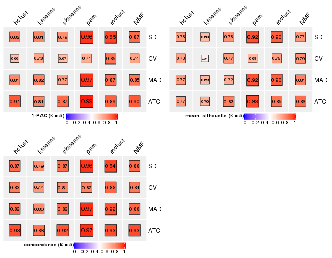
collect_stats(res_list, k = 6)
Collect partitions from all methods:
collect_classes(res_list, k = 2)
collect_classes(res_list, k = 3)
collect_classes(res_list, k = 4)
collect_classes(res_list, k = 5)
collect_classes(res_list, k = 6)
Overlap of top rows from different top-row methods:
top_rows_overlap(res_list, top_n = 1000, method = "euler")
top_rows_overlap(res_list, top_n = 2000, method = "euler")

top_rows_overlap(res_list, top_n = 3000, method = "euler")

top_rows_overlap(res_list, top_n = 4000, method = "euler")
top_rows_overlap(res_list, top_n = 5000, method = "euler")
Also visualize the correspondance of rankings between different top-row methods:
top_rows_overlap(res_list, top_n = 1000, method = "correspondance")
top_rows_overlap(res_list, top_n = 2000, method = "correspondance")

top_rows_overlap(res_list, top_n = 3000, method = "correspondance")
top_rows_overlap(res_list, top_n = 4000, method = "correspondance")
top_rows_overlap(res_list, top_n = 5000, method = "correspondance")
Heatmaps of the top rows:
top_rows_heatmap(res_list, top_n = 1000)
top_rows_heatmap(res_list, top_n = 2000)
top_rows_heatmap(res_list, top_n = 3000)
top_rows_heatmap(res_list, top_n = 4000)
top_rows_heatmap(res_list, top_n = 5000)
The object with results only for a single top-value method and a single partition method can be extracted as:
res = res_list["SD", "hclust"]
# you can also extract it by
# res = res_list["SD:hclust"]
A summary of res and all the functions that can be applied to it:
res
#> A 'ConsensusPartition' object with k = 2, 3, 4, 5, 6.
#> On a matrix with 10145 rows and 121 columns.
#> Top rows (1000, 2000, 3000, 4000, 5000) are extracted by 'SD' method.
#> Subgroups are detected by 'hclust' method.
#> Performed in total 1250 partitions by row resampling.
#> Best k for subgroups seems to be 4.
#>
#> Following methods can be applied to this 'ConsensusPartition' object:
#> [1] "cola_report" "collect_classes" "collect_plots"
#> [4] "collect_stats" "colnames" "compare_signatures"
#> [7] "consensus_heatmap" "dimension_reduction" "functional_enrichment"
#> [10] "get_anno_col" "get_anno" "get_classes"
#> [13] "get_consensus" "get_matrix" "get_membership"
#> [16] "get_param" "get_signatures" "get_stats"
#> [19] "is_best_k" "is_stable_k" "membership_heatmap"
#> [22] "ncol" "nrow" "plot_ecdf"
#> [25] "rownames" "select_partition_number" "show"
#> [28] "suggest_best_k" "test_to_known_factors"
collect_plots() function collects all the plots made from res for all k (number of partitions)
into one single page to provide an easy and fast comparison between different k.
collect_plots(res)
The plots are:
k and the heatmap of
predicted classes for each k.k.k.k.All the plots in panels can be made by individual functions and they are plotted later in this section.
select_partition_number() produces several plots showing different
statistics for choosing “optimized” k. There are following statistics:
k;k, the area increased is defined as \(A_k - A_{k-1}\).The detailed explanations of these statistics can be found in the cola vignette.
Generally speaking, lower PAC score, higher mean silhouette score or higher
concordance corresponds to better partition. Rand index and Jaccard index
measure how similar the current partition is compared to partition with k-1.
If they are too similar, we won't accept k is better than k-1.
select_partition_number(res)
The numeric values for all these statistics can be obtained by get_stats().
get_stats(res)
#> k 1-PAC mean_silhouette concordance area_increased Rand Jaccard
#> 2 2 0.845 0.945 0.977 0.0577 0.983 0.983
#> 3 3 0.698 0.867 0.943 4.1807 0.663 0.658
#> 4 4 0.854 0.875 0.936 1.1008 0.696 0.530
#> 5 5 0.815 0.753 0.868 0.1217 0.975 0.928
#> 6 6 0.838 0.665 0.830 0.0318 0.915 0.747
suggest_best_k() suggests the best \(k\) based on these statistics. The rules are as follows:
NA.suggest_best_k(res)
#> [1] 4
Following shows the table of the partitions (You need to click the show/hide
code output link to see it). The membership matrix (columns with name p*)
is inferred by
clue::cl_consensus()
function with the SE method. Basically the value in the membership matrix
represents the probability to belong to a certain group. The finall class
label for an item is determined with the group with highest probability it
belongs to.
In get_classes() function, the entropy is calculated from the membership
matrix and the silhouette score is calculated from the consensus matrix.
cbind(get_classes(res, k = 2), get_membership(res, k = 2))
#> class entropy silhouette p1 p2
#> SRR2431463 1 0.0000 0.977 1.000 0.000
#> SRR2431462 1 0.0000 0.977 1.000 0.000
#> SRR2431461 1 0.0000 0.977 1.000 0.000
#> SRR2431459 1 0.0000 0.977 1.000 0.000
#> SRR2431460 1 0.0000 0.977 1.000 0.000
#> SRR2431458 1 0.0000 0.977 1.000 0.000
#> SRR2431457 1 0.0000 0.977 1.000 0.000
#> SRR2431455 1 0.0000 0.977 1.000 0.000
#> SRR2431456 1 0.0000 0.977 1.000 0.000
#> SRR2431454 1 0.0672 0.971 0.992 0.008
#> SRR2431453 1 0.0000 0.977 1.000 0.000
#> SRR2431451 1 0.0000 0.977 1.000 0.000
#> SRR2431452 1 0.1843 0.955 0.972 0.028
#> SRR2431450 1 0.0000 0.977 1.000 0.000
#> SRR2431449 1 0.0000 0.977 1.000 0.000
#> SRR2431448 1 0.0000 0.977 1.000 0.000
#> SRR2431446 1 0.0000 0.977 1.000 0.000
#> SRR2431447 1 0.0000 0.977 1.000 0.000
#> SRR2431445 1 0.0000 0.977 1.000 0.000
#> SRR2431444 1 0.0000 0.977 1.000 0.000
#> SRR2431443 1 0.0000 0.977 1.000 0.000
#> SRR2431442 1 0.0000 0.977 1.000 0.000
#> SRR2431441 1 0.0000 0.977 1.000 0.000
#> SRR2431440 1 0.0000 0.977 1.000 0.000
#> SRR2431439 1 0.0000 0.977 1.000 0.000
#> SRR2431438 1 0.0000 0.977 1.000 0.000
#> SRR2431437 1 0.0000 0.977 1.000 0.000
#> SRR2431436 1 0.1633 0.958 0.976 0.024
#> SRR2431435 1 0.0000 0.977 1.000 0.000
#> SRR2431434 1 0.0000 0.977 1.000 0.000
#> SRR2431433 1 0.0000 0.977 1.000 0.000
#> SRR2431432 1 0.0000 0.977 1.000 0.000
#> SRR2431431 1 0.0000 0.977 1.000 0.000
#> SRR2431430 1 0.0000 0.977 1.000 0.000
#> SRR2431429 1 0.0000 0.977 1.000 0.000
#> SRR2431428 1 0.0000 0.977 1.000 0.000
#> SRR2431427 1 0.0000 0.977 1.000 0.000
#> SRR2431426 1 0.0000 0.977 1.000 0.000
#> SRR2431425 1 0.0000 0.977 1.000 0.000
#> SRR2431424 1 0.0000 0.977 1.000 0.000
#> SRR2431423 1 0.0000 0.977 1.000 0.000
#> SRR2431422 1 0.0000 0.977 1.000 0.000
#> SRR2431421 1 0.0000 0.977 1.000 0.000
#> SRR2431420 1 0.0000 0.977 1.000 0.000
#> SRR2431419 1 0.0000 0.977 1.000 0.000
#> SRR2431418 1 0.0000 0.977 1.000 0.000
#> SRR2431417 1 0.0000 0.977 1.000 0.000
#> SRR2431416 1 0.0000 0.977 1.000 0.000
#> SRR2431415 1 0.0000 0.977 1.000 0.000
#> SRR2431414 1 0.0000 0.977 1.000 0.000
#> SRR2431413 1 0.0000 0.977 1.000 0.000
#> SRR2431412 1 0.0000 0.977 1.000 0.000
#> SRR2431411 2 0.0000 0.000 0.000 1.000
#> SRR2431409 1 0.0000 0.977 1.000 0.000
#> SRR2431410 1 0.0000 0.977 1.000 0.000
#> SRR2431408 1 0.0000 0.977 1.000 0.000
#> SRR2431407 1 0.0000 0.977 1.000 0.000
#> SRR2431405 1 0.0000 0.977 1.000 0.000
#> SRR2431406 1 0.0000 0.977 1.000 0.000
#> SRR2431404 1 0.0000 0.977 1.000 0.000
#> SRR2431403 1 0.0000 0.977 1.000 0.000
#> SRR2431402 1 0.0000 0.977 1.000 0.000
#> SRR2431401 1 0.0000 0.977 1.000 0.000
#> SRR2431400 1 0.0000 0.977 1.000 0.000
#> SRR2431399 1 0.0000 0.977 1.000 0.000
#> SRR2431398 1 0.0000 0.977 1.000 0.000
#> SRR2431397 1 0.0000 0.977 1.000 0.000
#> SRR2431396 1 0.0000 0.977 1.000 0.000
#> SRR2431395 1 0.0000 0.977 1.000 0.000
#> SRR2431394 1 0.0000 0.977 1.000 0.000
#> SRR2431393 1 0.0000 0.977 1.000 0.000
#> SRR2431392 1 0.0000 0.977 1.000 0.000
#> SRR2431391 1 0.0000 0.977 1.000 0.000
#> SRR2431390 1 0.0000 0.977 1.000 0.000
#> SRR2431389 1 0.0000 0.977 1.000 0.000
#> SRR2431388 1 0.0000 0.977 1.000 0.000
#> SRR2431387 1 0.0000 0.977 1.000 0.000
#> SRR2431386 1 0.0000 0.977 1.000 0.000
#> SRR2431385 1 0.0376 0.974 0.996 0.004
#> SRR2431383 1 0.0000 0.977 1.000 0.000
#> SRR2431384 1 0.0000 0.977 1.000 0.000
#> SRR2431382 1 0.0000 0.977 1.000 0.000
#> SRR2431381 1 0.0000 0.977 1.000 0.000
#> SRR2431380 1 0.0000 0.977 1.000 0.000
#> SRR2431379 1 0.3431 0.924 0.936 0.064
#> SRR2431378 1 0.0000 0.977 1.000 0.000
#> SRR2431376 1 0.0000 0.977 1.000 0.000
#> SRR2431377 1 0.0000 0.977 1.000 0.000
#> SRR2431375 1 0.7883 0.726 0.764 0.236
#> SRR2431374 1 0.0000 0.977 1.000 0.000
#> SRR2431372 1 0.4022 0.909 0.920 0.080
#> SRR2431371 1 0.0000 0.977 1.000 0.000
#> SRR2431373 1 0.7883 0.726 0.764 0.236
#> SRR2431370 1 0.3431 0.924 0.936 0.064
#> SRR2431369 1 0.0000 0.977 1.000 0.000
#> SRR2431368 1 0.4562 0.893 0.904 0.096
#> SRR2431367 1 0.0376 0.974 0.996 0.004
#> SRR2431366 1 0.0000 0.977 1.000 0.000
#> SRR2431365 1 0.0000 0.977 1.000 0.000
#> SRR2431364 1 0.7883 0.726 0.764 0.236
#> SRR2431363 1 0.7883 0.726 0.764 0.236
#> SRR2431361 1 0.0000 0.977 1.000 0.000
#> SRR2431362 1 0.6973 0.789 0.812 0.188
#> SRR2431360 1 0.7883 0.726 0.764 0.236
#> SRR2431359 1 0.0672 0.971 0.992 0.008
#> SRR2431358 1 0.0000 0.977 1.000 0.000
#> SRR2431357 1 0.0000 0.977 1.000 0.000
#> SRR2431355 1 0.0000 0.977 1.000 0.000
#> SRR2431356 1 0.2603 0.942 0.956 0.044
#> SRR2431354 1 0.7883 0.726 0.764 0.236
#> SRR2431353 1 0.0000 0.977 1.000 0.000
#> SRR2431352 1 0.0000 0.977 1.000 0.000
#> SRR2431351 1 0.7883 0.726 0.764 0.236
#> SRR2431350 1 0.0938 0.968 0.988 0.012
#> SRR2431349 1 0.7883 0.726 0.764 0.236
#> SRR2431348 1 0.0376 0.974 0.996 0.004
#> SRR2431347 1 0.0000 0.977 1.000 0.000
#> SRR2431346 1 0.0000 0.977 1.000 0.000
#> SRR2431345 1 0.7883 0.726 0.764 0.236
#> SRR2431344 1 0.0000 0.977 1.000 0.000
#> SRR2431343 1 0.0000 0.977 1.000 0.000
cbind(get_classes(res, k = 3), get_membership(res, k = 3))
#> class entropy silhouette p1 p2 p3
#> SRR2431463 2 0.0424 0.982 0 0.992 0.008
#> SRR2431462 2 0.0424 0.982 0 0.992 0.008
#> SRR2431461 2 0.0424 0.982 0 0.992 0.008
#> SRR2431459 2 0.0424 0.982 0 0.992 0.008
#> SRR2431460 2 0.0424 0.982 0 0.992 0.008
#> SRR2431458 2 0.0424 0.982 0 0.992 0.008
#> SRR2431457 2 0.0424 0.982 0 0.992 0.008
#> SRR2431455 2 0.0424 0.982 0 0.992 0.008
#> SRR2431456 2 0.0424 0.982 0 0.992 0.008
#> SRR2431454 2 0.1860 0.936 0 0.948 0.052
#> SRR2431453 2 0.0424 0.982 0 0.992 0.008
#> SRR2431451 2 0.0747 0.976 0 0.984 0.016
#> SRR2431452 2 0.5016 0.586 0 0.760 0.240
#> SRR2431450 2 0.0424 0.982 0 0.992 0.008
#> SRR2431449 2 0.0424 0.982 0 0.992 0.008
#> SRR2431448 2 0.0424 0.982 0 0.992 0.008
#> SRR2431446 2 0.0424 0.982 0 0.992 0.008
#> SRR2431447 2 0.0592 0.980 0 0.988 0.012
#> SRR2431445 2 0.0424 0.982 0 0.992 0.008
#> SRR2431444 2 0.2066 0.924 0 0.940 0.060
#> SRR2431443 2 0.0424 0.982 0 0.992 0.008
#> SRR2431442 2 0.0424 0.982 0 0.992 0.008
#> SRR2431441 2 0.0424 0.982 0 0.992 0.008
#> SRR2431440 2 0.0747 0.976 0 0.984 0.016
#> SRR2431439 2 0.0424 0.982 0 0.992 0.008
#> SRR2431438 2 0.0424 0.982 0 0.992 0.008
#> SRR2431437 2 0.0424 0.982 0 0.992 0.008
#> SRR2431436 2 0.3038 0.864 0 0.896 0.104
#> SRR2431435 2 0.1411 0.954 0 0.964 0.036
#> SRR2431434 2 0.0424 0.982 0 0.992 0.008
#> SRR2431433 2 0.0424 0.982 0 0.992 0.008
#> SRR2431432 2 0.0424 0.982 0 0.992 0.008
#> SRR2431431 2 0.0424 0.982 0 0.992 0.008
#> SRR2431430 2 0.0424 0.982 0 0.992 0.008
#> SRR2431429 2 0.0424 0.982 0 0.992 0.008
#> SRR2431428 2 0.0424 0.982 0 0.992 0.008
#> SRR2431427 2 0.0000 0.983 0 1.000 0.000
#> SRR2431426 2 0.0000 0.983 0 1.000 0.000
#> SRR2431425 2 0.0000 0.983 0 1.000 0.000
#> SRR2431424 2 0.0000 0.983 0 1.000 0.000
#> SRR2431423 2 0.0000 0.983 0 1.000 0.000
#> SRR2431422 2 0.0000 0.983 0 1.000 0.000
#> SRR2431421 2 0.0000 0.983 0 1.000 0.000
#> SRR2431420 2 0.0000 0.983 0 1.000 0.000
#> SRR2431419 2 0.0000 0.983 0 1.000 0.000
#> SRR2431418 2 0.0000 0.983 0 1.000 0.000
#> SRR2431417 2 0.0000 0.983 0 1.000 0.000
#> SRR2431416 2 0.0000 0.983 0 1.000 0.000
#> SRR2431415 2 0.0000 0.983 0 1.000 0.000
#> SRR2431414 2 0.0000 0.983 0 1.000 0.000
#> SRR2431413 2 0.0000 0.983 0 1.000 0.000
#> SRR2431412 2 0.0000 0.983 0 1.000 0.000
#> SRR2431411 1 0.0000 0.000 1 0.000 0.000
#> SRR2431409 2 0.0000 0.983 0 1.000 0.000
#> SRR2431410 2 0.0237 0.981 0 0.996 0.004
#> SRR2431408 2 0.0000 0.983 0 1.000 0.000
#> SRR2431407 2 0.0000 0.983 0 1.000 0.000
#> SRR2431405 2 0.0000 0.983 0 1.000 0.000
#> SRR2431406 2 0.0000 0.983 0 1.000 0.000
#> SRR2431404 2 0.0000 0.983 0 1.000 0.000
#> SRR2431403 2 0.0000 0.983 0 1.000 0.000
#> SRR2431402 2 0.0000 0.983 0 1.000 0.000
#> SRR2431401 2 0.0000 0.983 0 1.000 0.000
#> SRR2431400 2 0.0000 0.983 0 1.000 0.000
#> SRR2431399 2 0.0000 0.983 0 1.000 0.000
#> SRR2431398 2 0.0000 0.983 0 1.000 0.000
#> SRR2431397 2 0.0000 0.983 0 1.000 0.000
#> SRR2431396 2 0.0000 0.983 0 1.000 0.000
#> SRR2431395 2 0.0000 0.983 0 1.000 0.000
#> SRR2431394 2 0.0000 0.983 0 1.000 0.000
#> SRR2431393 2 0.0000 0.983 0 1.000 0.000
#> SRR2431392 2 0.0000 0.983 0 1.000 0.000
#> SRR2431391 2 0.0000 0.983 0 1.000 0.000
#> SRR2431390 2 0.0000 0.983 0 1.000 0.000
#> SRR2431389 2 0.0000 0.983 0 1.000 0.000
#> SRR2431388 2 0.0000 0.983 0 1.000 0.000
#> SRR2431387 2 0.0000 0.983 0 1.000 0.000
#> SRR2431386 2 0.0000 0.983 0 1.000 0.000
#> SRR2431385 2 0.0424 0.978 0 0.992 0.008
#> SRR2431383 2 0.0000 0.983 0 1.000 0.000
#> SRR2431384 2 0.0000 0.983 0 1.000 0.000
#> SRR2431382 2 0.0000 0.983 0 1.000 0.000
#> SRR2431381 2 0.0000 0.983 0 1.000 0.000
#> SRR2431380 2 0.0000 0.983 0 1.000 0.000
#> SRR2431379 3 0.4605 0.607 0 0.204 0.796
#> SRR2431378 3 0.6274 0.539 0 0.456 0.544
#> SRR2431376 3 0.6267 0.548 0 0.452 0.548
#> SRR2431377 2 0.3267 0.836 0 0.884 0.116
#> SRR2431375 3 0.0000 0.430 0 0.000 1.000
#> SRR2431374 2 0.2537 0.893 0 0.920 0.080
#> SRR2431372 3 0.5760 0.565 0 0.328 0.672
#> SRR2431371 3 0.6274 0.539 0 0.456 0.544
#> SRR2431373 3 0.0000 0.430 0 0.000 1.000
#> SRR2431370 3 0.4702 0.611 0 0.212 0.788
#> SRR2431369 3 0.6267 0.548 0 0.452 0.548
#> SRR2431368 3 0.4002 0.577 0 0.160 0.840
#> SRR2431367 3 0.5560 0.630 0 0.300 0.700
#> SRR2431366 2 0.3340 0.829 0 0.880 0.120
#> SRR2431365 2 0.0592 0.980 0 0.988 0.012
#> SRR2431364 3 0.0000 0.430 0 0.000 1.000
#> SRR2431363 3 0.0000 0.430 0 0.000 1.000
#> SRR2431361 3 0.6274 0.539 0 0.456 0.544
#> SRR2431362 3 0.2878 0.495 0 0.096 0.904
#> SRR2431360 3 0.0000 0.430 0 0.000 1.000
#> SRR2431359 3 0.6168 0.596 0 0.412 0.588
#> SRR2431358 2 0.0424 0.982 0 0.992 0.008
#> SRR2431357 2 0.2537 0.893 0 0.920 0.080
#> SRR2431355 2 0.0892 0.972 0 0.980 0.020
#> SRR2431356 3 0.5098 0.623 0 0.248 0.752
#> SRR2431354 3 0.0000 0.430 0 0.000 1.000
#> SRR2431353 2 0.0424 0.982 0 0.992 0.008
#> SRR2431352 2 0.0424 0.982 0 0.992 0.008
#> SRR2431351 3 0.0000 0.430 0 0.000 1.000
#> SRR2431350 3 0.5678 0.628 0 0.316 0.684
#> SRR2431349 3 0.0000 0.430 0 0.000 1.000
#> SRR2431348 3 0.5591 0.630 0 0.304 0.696
#> SRR2431347 3 0.6168 0.596 0 0.412 0.588
#> SRR2431346 3 0.6252 0.563 0 0.444 0.556
#> SRR2431345 3 0.0424 0.434 0 0.008 0.992
#> SRR2431344 2 0.0424 0.982 0 0.992 0.008
#> SRR2431343 2 0.0424 0.982 0 0.992 0.008
cbind(get_classes(res, k = 4), get_membership(res, k = 4))
#> class entropy silhouette p1 p2 p3 p4
#> SRR2431463 1 0.0336 0.962 0.992 0.008 0.000 0
#> SRR2431462 1 0.0469 0.962 0.988 0.012 0.000 0
#> SRR2431461 1 0.0469 0.962 0.988 0.012 0.000 0
#> SRR2431459 1 0.0469 0.962 0.988 0.012 0.000 0
#> SRR2431460 1 0.0469 0.962 0.988 0.012 0.000 0
#> SRR2431458 1 0.0469 0.962 0.988 0.012 0.000 0
#> SRR2431457 1 0.0469 0.962 0.988 0.012 0.000 0
#> SRR2431455 1 0.0469 0.962 0.988 0.012 0.000 0
#> SRR2431456 1 0.0469 0.962 0.988 0.012 0.000 0
#> SRR2431454 1 0.1767 0.921 0.944 0.012 0.044 0
#> SRR2431453 1 0.0469 0.962 0.988 0.012 0.000 0
#> SRR2431451 1 0.0672 0.956 0.984 0.008 0.008 0
#> SRR2431452 1 0.4956 0.539 0.732 0.036 0.232 0
#> SRR2431450 1 0.0336 0.962 0.992 0.008 0.000 0
#> SRR2431449 1 0.0469 0.962 0.988 0.012 0.000 0
#> SRR2431448 1 0.0469 0.962 0.988 0.012 0.000 0
#> SRR2431446 1 0.0469 0.962 0.988 0.012 0.000 0
#> SRR2431447 1 0.0524 0.959 0.988 0.008 0.004 0
#> SRR2431445 1 0.0469 0.962 0.988 0.012 0.000 0
#> SRR2431444 1 0.1807 0.913 0.940 0.008 0.052 0
#> SRR2431443 1 0.0469 0.962 0.988 0.012 0.000 0
#> SRR2431442 1 0.0336 0.962 0.992 0.008 0.000 0
#> SRR2431441 1 0.0469 0.962 0.988 0.012 0.000 0
#> SRR2431440 1 0.0672 0.956 0.984 0.008 0.008 0
#> SRR2431439 1 0.0469 0.962 0.988 0.012 0.000 0
#> SRR2431438 1 0.0336 0.962 0.992 0.008 0.000 0
#> SRR2431437 1 0.0469 0.962 0.988 0.012 0.000 0
#> SRR2431436 1 0.2611 0.861 0.896 0.008 0.096 0
#> SRR2431435 1 0.1256 0.938 0.964 0.008 0.028 0
#> SRR2431434 1 0.0336 0.962 0.992 0.008 0.000 0
#> SRR2431433 1 0.0336 0.962 0.992 0.008 0.000 0
#> SRR2431432 1 0.0469 0.962 0.988 0.012 0.000 0
#> SRR2431431 1 0.0336 0.961 0.992 0.008 0.000 0
#> SRR2431430 1 0.0336 0.961 0.992 0.008 0.000 0
#> SRR2431429 1 0.0336 0.962 0.992 0.008 0.000 0
#> SRR2431428 1 0.0336 0.962 0.992 0.008 0.000 0
#> SRR2431427 2 0.0336 0.997 0.008 0.992 0.000 0
#> SRR2431426 2 0.0336 0.997 0.008 0.992 0.000 0
#> SRR2431425 2 0.0336 0.997 0.008 0.992 0.000 0
#> SRR2431424 2 0.0336 0.997 0.008 0.992 0.000 0
#> SRR2431423 2 0.0336 0.997 0.008 0.992 0.000 0
#> SRR2431422 2 0.0336 0.997 0.008 0.992 0.000 0
#> SRR2431421 2 0.0336 0.997 0.008 0.992 0.000 0
#> SRR2431420 2 0.0336 0.997 0.008 0.992 0.000 0
#> SRR2431419 2 0.0336 0.997 0.008 0.992 0.000 0
#> SRR2431418 2 0.0336 0.997 0.008 0.992 0.000 0
#> SRR2431417 2 0.0336 0.997 0.008 0.992 0.000 0
#> SRR2431416 2 0.0336 0.997 0.008 0.992 0.000 0
#> SRR2431415 2 0.0336 0.997 0.008 0.992 0.000 0
#> SRR2431414 2 0.0336 0.997 0.008 0.992 0.000 0
#> SRR2431413 2 0.0188 0.983 0.004 0.996 0.000 0
#> SRR2431412 2 0.0336 0.997 0.008 0.992 0.000 0
#> SRR2431411 4 0.0000 0.000 0.000 0.000 0.000 1
#> SRR2431409 2 0.0336 0.997 0.008 0.992 0.000 0
#> SRR2431410 1 0.4428 0.504 0.720 0.276 0.004 0
#> SRR2431408 2 0.0336 0.997 0.008 0.992 0.000 0
#> SRR2431407 2 0.0336 0.997 0.008 0.992 0.000 0
#> SRR2431405 2 0.0188 0.983 0.004 0.996 0.000 0
#> SRR2431406 2 0.0336 0.997 0.008 0.992 0.000 0
#> SRR2431404 2 0.0336 0.997 0.008 0.992 0.000 0
#> SRR2431403 2 0.0336 0.997 0.008 0.992 0.000 0
#> SRR2431402 2 0.0336 0.997 0.008 0.992 0.000 0
#> SRR2431401 2 0.0336 0.997 0.008 0.992 0.000 0
#> SRR2431400 2 0.0336 0.997 0.008 0.992 0.000 0
#> SRR2431399 2 0.0336 0.997 0.008 0.992 0.000 0
#> SRR2431398 2 0.0336 0.997 0.008 0.992 0.000 0
#> SRR2431397 2 0.0336 0.997 0.008 0.992 0.000 0
#> SRR2431396 2 0.0188 0.992 0.004 0.996 0.000 0
#> SRR2431395 2 0.0336 0.997 0.008 0.992 0.000 0
#> SRR2431394 2 0.0336 0.997 0.008 0.992 0.000 0
#> SRR2431393 2 0.0336 0.997 0.008 0.992 0.000 0
#> SRR2431392 2 0.0336 0.997 0.008 0.992 0.000 0
#> SRR2431391 2 0.0336 0.997 0.008 0.992 0.000 0
#> SRR2431390 2 0.0336 0.997 0.008 0.992 0.000 0
#> SRR2431389 2 0.0336 0.997 0.008 0.992 0.000 0
#> SRR2431388 2 0.0336 0.997 0.008 0.992 0.000 0
#> SRR2431387 2 0.1637 0.921 0.060 0.940 0.000 0
#> SRR2431386 2 0.0336 0.997 0.008 0.992 0.000 0
#> SRR2431385 2 0.0524 0.977 0.004 0.988 0.008 0
#> SRR2431383 2 0.0188 0.983 0.004 0.996 0.000 0
#> SRR2431384 2 0.0336 0.997 0.008 0.992 0.000 0
#> SRR2431382 2 0.0336 0.997 0.008 0.992 0.000 0
#> SRR2431381 2 0.0336 0.997 0.008 0.992 0.000 0
#> SRR2431380 1 0.0817 0.949 0.976 0.024 0.000 0
#> SRR2431379 3 0.3688 0.680 0.208 0.000 0.792 0
#> SRR2431378 3 0.4977 0.544 0.460 0.000 0.540 0
#> SRR2431376 3 0.4972 0.552 0.456 0.000 0.544 0
#> SRR2431377 1 0.2859 0.825 0.880 0.008 0.112 0
#> SRR2431375 3 0.0000 0.562 0.000 0.000 1.000 0
#> SRR2431374 1 0.2329 0.886 0.916 0.012 0.072 0
#> SRR2431372 3 0.4720 0.608 0.324 0.004 0.672 0
#> SRR2431371 3 0.4977 0.544 0.460 0.000 0.540 0
#> SRR2431373 3 0.0000 0.562 0.000 0.000 1.000 0
#> SRR2431370 3 0.3726 0.681 0.212 0.000 0.788 0
#> SRR2431369 3 0.4972 0.552 0.456 0.000 0.544 0
#> SRR2431368 3 0.3172 0.661 0.160 0.000 0.840 0
#> SRR2431367 3 0.4431 0.685 0.304 0.000 0.696 0
#> SRR2431366 1 0.2773 0.813 0.880 0.004 0.116 0
#> SRR2431365 1 0.0376 0.957 0.992 0.004 0.004 0
#> SRR2431364 3 0.0000 0.562 0.000 0.000 1.000 0
#> SRR2431363 3 0.0000 0.562 0.000 0.000 1.000 0
#> SRR2431361 3 0.4977 0.544 0.460 0.000 0.540 0
#> SRR2431362 3 0.2281 0.600 0.096 0.000 0.904 0
#> SRR2431360 3 0.0000 0.562 0.000 0.000 1.000 0
#> SRR2431359 3 0.4888 0.618 0.412 0.000 0.588 0
#> SRR2431358 1 0.0336 0.962 0.992 0.008 0.000 0
#> SRR2431357 1 0.2329 0.886 0.916 0.012 0.072 0
#> SRR2431355 1 0.0804 0.954 0.980 0.008 0.012 0
#> SRR2431356 3 0.4040 0.686 0.248 0.000 0.752 0
#> SRR2431354 3 0.0000 0.562 0.000 0.000 1.000 0
#> SRR2431353 1 0.0336 0.962 0.992 0.008 0.000 0
#> SRR2431352 1 0.0336 0.962 0.992 0.008 0.000 0
#> SRR2431351 3 0.0000 0.562 0.000 0.000 1.000 0
#> SRR2431350 3 0.4522 0.681 0.320 0.000 0.680 0
#> SRR2431349 3 0.0000 0.562 0.000 0.000 1.000 0
#> SRR2431348 3 0.4454 0.684 0.308 0.000 0.692 0
#> SRR2431347 3 0.4898 0.613 0.416 0.000 0.584 0
#> SRR2431346 3 0.4961 0.566 0.448 0.000 0.552 0
#> SRR2431345 3 0.0336 0.565 0.008 0.000 0.992 0
#> SRR2431344 1 0.0336 0.962 0.992 0.008 0.000 0
#> SRR2431343 1 0.0336 0.962 0.992 0.008 0.000 0
cbind(get_classes(res, k = 5), get_membership(res, k = 5))
#> class entropy silhouette p1 p2 p3 p4 p5
#> SRR2431463 1 0.1012 0.75095 0.968 0.012 0.000 0.020 0.000
#> SRR2431462 1 0.0404 0.74967 0.988 0.012 0.000 0.000 0.000
#> SRR2431461 1 0.1444 0.74262 0.948 0.012 0.000 0.000 0.040
#> SRR2431459 1 0.1106 0.74729 0.964 0.012 0.000 0.000 0.024
#> SRR2431460 1 0.2166 0.73862 0.912 0.012 0.000 0.072 0.004
#> SRR2431458 1 0.1522 0.74075 0.944 0.012 0.000 0.000 0.044
#> SRR2431457 1 0.0693 0.74994 0.980 0.012 0.000 0.008 0.000
#> SRR2431455 1 0.2522 0.71819 0.880 0.012 0.000 0.108 0.000
#> SRR2431456 1 0.1364 0.74754 0.952 0.012 0.000 0.036 0.000
#> SRR2431454 1 0.4334 0.56706 0.752 0.004 0.016 0.016 0.212
#> SRR2431453 1 0.0693 0.74994 0.980 0.012 0.000 0.008 0.000
#> SRR2431451 1 0.2833 0.66859 0.852 0.000 0.004 0.004 0.140
#> SRR2431452 1 0.7314 0.22250 0.556 0.032 0.200 0.032 0.180
#> SRR2431450 1 0.2522 0.71973 0.880 0.012 0.000 0.108 0.000
#> SRR2431449 1 0.1682 0.74685 0.940 0.012 0.000 0.044 0.004
#> SRR2431448 1 0.1195 0.74644 0.960 0.012 0.000 0.000 0.028
#> SRR2431446 1 0.1682 0.74361 0.940 0.012 0.000 0.004 0.044
#> SRR2431447 1 0.2471 0.67669 0.864 0.000 0.000 0.000 0.136
#> SRR2431445 1 0.0807 0.75020 0.976 0.012 0.000 0.012 0.000
#> SRR2431444 1 0.4353 0.54663 0.740 0.000 0.012 0.024 0.224
#> SRR2431443 1 0.1444 0.74751 0.948 0.012 0.000 0.040 0.000
#> SRR2431442 1 0.2624 0.71244 0.872 0.012 0.000 0.116 0.000
#> SRR2431441 1 0.2522 0.71819 0.880 0.012 0.000 0.108 0.000
#> SRR2431440 1 0.2833 0.66885 0.852 0.000 0.004 0.004 0.140
#> SRR2431439 1 0.1596 0.74912 0.948 0.012 0.000 0.012 0.028
#> SRR2431438 1 0.2361 0.72372 0.892 0.012 0.000 0.096 0.000
#> SRR2431437 1 0.1444 0.74258 0.948 0.012 0.000 0.000 0.040
#> SRR2431436 1 0.4967 0.50483 0.708 0.000 0.060 0.012 0.220
#> SRR2431435 1 0.3210 0.64983 0.832 0.000 0.008 0.008 0.152
#> SRR2431434 1 0.2522 0.71940 0.880 0.012 0.000 0.108 0.000
#> SRR2431433 1 0.2953 0.69001 0.844 0.012 0.000 0.144 0.000
#> SRR2431432 1 0.1195 0.74644 0.960 0.012 0.000 0.000 0.028
#> SRR2431431 1 0.3569 0.70321 0.828 0.000 0.000 0.104 0.068
#> SRR2431430 1 0.2179 0.69432 0.888 0.000 0.000 0.000 0.112
#> SRR2431429 1 0.2997 0.68638 0.840 0.012 0.000 0.148 0.000
#> SRR2431428 1 0.4517 0.25217 0.600 0.012 0.000 0.388 0.000
#> SRR2431427 2 0.0000 0.99695 0.000 1.000 0.000 0.000 0.000
#> SRR2431426 2 0.0000 0.99695 0.000 1.000 0.000 0.000 0.000
#> SRR2431425 2 0.0000 0.99695 0.000 1.000 0.000 0.000 0.000
#> SRR2431424 2 0.0000 0.99695 0.000 1.000 0.000 0.000 0.000
#> SRR2431423 2 0.0000 0.99695 0.000 1.000 0.000 0.000 0.000
#> SRR2431422 2 0.0000 0.99695 0.000 1.000 0.000 0.000 0.000
#> SRR2431421 2 0.0000 0.99695 0.000 1.000 0.000 0.000 0.000
#> SRR2431420 2 0.0000 0.99695 0.000 1.000 0.000 0.000 0.000
#> SRR2431419 2 0.0000 0.99695 0.000 1.000 0.000 0.000 0.000
#> SRR2431418 2 0.0000 0.99695 0.000 1.000 0.000 0.000 0.000
#> SRR2431417 2 0.0000 0.99695 0.000 1.000 0.000 0.000 0.000
#> SRR2431416 2 0.0000 0.99695 0.000 1.000 0.000 0.000 0.000
#> SRR2431415 2 0.0000 0.99695 0.000 1.000 0.000 0.000 0.000
#> SRR2431414 2 0.0000 0.99695 0.000 1.000 0.000 0.000 0.000
#> SRR2431413 2 0.0404 0.98380 0.000 0.988 0.000 0.012 0.000
#> SRR2431412 2 0.0000 0.99695 0.000 1.000 0.000 0.000 0.000
#> SRR2431411 5 0.3305 0.00000 0.000 0.000 0.000 0.224 0.776
#> SRR2431409 2 0.0000 0.99695 0.000 1.000 0.000 0.000 0.000
#> SRR2431410 4 0.6867 0.38764 0.252 0.280 0.004 0.460 0.004
#> SRR2431408 2 0.0000 0.99695 0.000 1.000 0.000 0.000 0.000
#> SRR2431407 2 0.0000 0.99695 0.000 1.000 0.000 0.000 0.000
#> SRR2431405 2 0.0404 0.98380 0.000 0.988 0.000 0.012 0.000
#> SRR2431406 2 0.0000 0.99695 0.000 1.000 0.000 0.000 0.000
#> SRR2431404 2 0.0000 0.99695 0.000 1.000 0.000 0.000 0.000
#> SRR2431403 2 0.0000 0.99695 0.000 1.000 0.000 0.000 0.000
#> SRR2431402 2 0.0000 0.99695 0.000 1.000 0.000 0.000 0.000
#> SRR2431401 2 0.0000 0.99695 0.000 1.000 0.000 0.000 0.000
#> SRR2431400 2 0.0000 0.99695 0.000 1.000 0.000 0.000 0.000
#> SRR2431399 2 0.0000 0.99695 0.000 1.000 0.000 0.000 0.000
#> SRR2431398 2 0.0000 0.99695 0.000 1.000 0.000 0.000 0.000
#> SRR2431397 2 0.0000 0.99695 0.000 1.000 0.000 0.000 0.000
#> SRR2431396 2 0.0162 0.99275 0.000 0.996 0.000 0.004 0.000
#> SRR2431395 2 0.0000 0.99695 0.000 1.000 0.000 0.000 0.000
#> SRR2431394 2 0.0000 0.99695 0.000 1.000 0.000 0.000 0.000
#> SRR2431393 2 0.0000 0.99695 0.000 1.000 0.000 0.000 0.000
#> SRR2431392 2 0.0000 0.99695 0.000 1.000 0.000 0.000 0.000
#> SRR2431391 2 0.0000 0.99695 0.000 1.000 0.000 0.000 0.000
#> SRR2431390 2 0.0000 0.99695 0.000 1.000 0.000 0.000 0.000
#> SRR2431389 2 0.0000 0.99695 0.000 1.000 0.000 0.000 0.000
#> SRR2431388 2 0.0000 0.99695 0.000 1.000 0.000 0.000 0.000
#> SRR2431387 2 0.1525 0.93933 0.012 0.948 0.000 0.036 0.004
#> SRR2431386 2 0.0000 0.99695 0.000 1.000 0.000 0.000 0.000
#> SRR2431385 2 0.0693 0.97755 0.000 0.980 0.008 0.012 0.000
#> SRR2431383 2 0.0404 0.98380 0.000 0.988 0.000 0.012 0.000
#> SRR2431384 2 0.0000 0.99695 0.000 1.000 0.000 0.000 0.000
#> SRR2431382 2 0.0000 0.99695 0.000 1.000 0.000 0.000 0.000
#> SRR2431381 2 0.0000 0.99695 0.000 1.000 0.000 0.000 0.000
#> SRR2431380 1 0.4835 0.22921 0.592 0.028 0.000 0.380 0.000
#> SRR2431379 3 0.3621 0.76834 0.020 0.000 0.788 0.192 0.000
#> SRR2431378 3 0.5365 0.64541 0.056 0.000 0.528 0.416 0.000
#> SRR2431376 3 0.5359 0.65019 0.056 0.000 0.532 0.412 0.000
#> SRR2431377 4 0.6191 0.55098 0.364 0.012 0.104 0.520 0.000
#> SRR2431375 3 0.0162 0.72562 0.000 0.000 0.996 0.004 0.000
#> SRR2431374 1 0.5254 0.42918 0.680 0.012 0.072 0.236 0.000
#> SRR2431372 3 0.6016 0.45026 0.228 0.004 0.652 0.056 0.060
#> SRR2431371 3 0.5414 0.64390 0.060 0.000 0.528 0.412 0.000
#> SRR2431373 3 0.0000 0.72711 0.000 0.000 1.000 0.000 0.000
#> SRR2431370 3 0.3663 0.76780 0.016 0.000 0.776 0.208 0.000
#> SRR2431369 3 0.5359 0.65019 0.056 0.000 0.532 0.412 0.000
#> SRR2431368 3 0.3098 0.76277 0.016 0.000 0.836 0.148 0.000
#> SRR2431367 3 0.4572 0.74613 0.036 0.000 0.684 0.280 0.000
#> SRR2431366 4 0.5676 0.60518 0.232 0.012 0.108 0.648 0.000
#> SRR2431365 4 0.3890 0.65081 0.252 0.012 0.000 0.736 0.000
#> SRR2431364 3 0.0162 0.72562 0.000 0.000 0.996 0.004 0.000
#> SRR2431363 3 0.0162 0.72562 0.000 0.000 0.996 0.004 0.000
#> SRR2431361 3 0.5365 0.64541 0.056 0.000 0.528 0.416 0.000
#> SRR2431362 3 0.2634 0.70402 0.056 0.000 0.900 0.020 0.024
#> SRR2431360 3 0.0290 0.72685 0.000 0.000 0.992 0.008 0.000
#> SRR2431359 3 0.5010 0.69068 0.036 0.000 0.572 0.392 0.000
#> SRR2431358 1 0.4637 0.03907 0.536 0.012 0.000 0.452 0.000
#> SRR2431357 1 0.5254 0.42918 0.680 0.012 0.072 0.236 0.000
#> SRR2431355 1 0.4994 -0.02153 0.524 0.012 0.012 0.452 0.000
#> SRR2431356 3 0.4083 0.76338 0.028 0.000 0.744 0.228 0.000
#> SRR2431354 3 0.0162 0.72562 0.000 0.000 0.996 0.004 0.000
#> SRR2431353 1 0.4644 0.00536 0.528 0.012 0.000 0.460 0.000
#> SRR2431352 1 0.4637 0.03907 0.536 0.012 0.000 0.452 0.000
#> SRR2431351 3 0.0000 0.72711 0.000 0.000 1.000 0.000 0.000
#> SRR2431350 3 0.4708 0.73836 0.040 0.000 0.668 0.292 0.000
#> SRR2431349 3 0.0162 0.72562 0.000 0.000 0.996 0.004 0.000
#> SRR2431348 3 0.4594 0.74424 0.036 0.000 0.680 0.284 0.000
#> SRR2431347 3 0.5123 0.68747 0.044 0.000 0.572 0.384 0.000
#> SRR2431346 3 0.5295 0.65947 0.052 0.000 0.540 0.408 0.000
#> SRR2431345 3 0.0451 0.72536 0.008 0.000 0.988 0.000 0.004
#> SRR2431344 1 0.4641 0.02386 0.532 0.012 0.000 0.456 0.000
#> SRR2431343 1 0.4517 0.25217 0.600 0.012 0.000 0.388 0.000
cbind(get_classes(res, k = 6), get_membership(res, k = 6))
#> class entropy silhouette p1 p2 p3 p4 p5 p6
#> SRR2431463 1 0.3927 0.3684 0.644 0.012 0.000 0.000 0 0.344
#> SRR2431462 1 0.3992 0.3283 0.624 0.012 0.000 0.000 0 0.364
#> SRR2431461 1 0.4109 0.1754 0.576 0.012 0.000 0.000 0 0.412
#> SRR2431459 1 0.4076 0.2389 0.592 0.012 0.000 0.000 0 0.396
#> SRR2431460 1 0.3710 0.4235 0.696 0.012 0.000 0.000 0 0.292
#> SRR2431458 1 0.4116 0.1576 0.572 0.012 0.000 0.000 0 0.416
#> SRR2431457 1 0.3954 0.3546 0.636 0.012 0.000 0.000 0 0.352
#> SRR2431455 1 0.3494 0.4585 0.736 0.012 0.000 0.000 0 0.252
#> SRR2431456 1 0.3852 0.3982 0.664 0.012 0.000 0.000 0 0.324
#> SRR2431454 6 0.3925 0.5845 0.260 0.004 0.012 0.008 0 0.716
#> SRR2431453 1 0.3954 0.3546 0.636 0.012 0.000 0.000 0 0.352
#> SRR2431451 6 0.3982 0.4363 0.460 0.000 0.004 0.000 0 0.536
#> SRR2431452 6 0.6726 0.4143 0.172 0.032 0.156 0.068 0 0.572
#> SRR2431450 1 0.3494 0.4580 0.736 0.012 0.000 0.000 0 0.252
#> SRR2431449 1 0.3852 0.3989 0.664 0.012 0.000 0.000 0 0.324
#> SRR2431448 1 0.4084 0.2245 0.588 0.012 0.000 0.000 0 0.400
#> SRR2431446 1 0.4109 0.1740 0.576 0.012 0.000 0.000 0 0.412
#> SRR2431447 6 0.3857 0.4074 0.468 0.000 0.000 0.000 0 0.532
#> SRR2431445 1 0.3940 0.3611 0.640 0.012 0.000 0.000 0 0.348
#> SRR2431444 6 0.3315 0.5607 0.200 0.000 0.020 0.000 0 0.780
#> SRR2431443 1 0.3835 0.4017 0.668 0.012 0.000 0.000 0 0.320
#> SRR2431442 1 0.3445 0.4606 0.744 0.012 0.000 0.000 0 0.244
#> SRR2431441 1 0.3494 0.4585 0.736 0.012 0.000 0.000 0 0.252
#> SRR2431440 6 0.3847 0.4352 0.456 0.000 0.000 0.000 0 0.544
#> SRR2431439 1 0.4047 0.2564 0.604 0.012 0.000 0.000 0 0.384
#> SRR2431438 1 0.3564 0.4533 0.724 0.012 0.000 0.000 0 0.264
#> SRR2431437 1 0.4109 0.1749 0.576 0.012 0.000 0.000 0 0.412
#> SRR2431436 6 0.4062 0.5567 0.196 0.000 0.068 0.000 0 0.736
#> SRR2431435 6 0.3852 0.5260 0.384 0.000 0.004 0.000 0 0.612
#> SRR2431434 1 0.3494 0.4580 0.736 0.012 0.000 0.000 0 0.252
#> SRR2431433 1 0.3259 0.4592 0.772 0.012 0.000 0.000 0 0.216
#> SRR2431432 1 0.4084 0.2245 0.588 0.012 0.000 0.000 0 0.400
#> SRR2431431 1 0.4453 0.0845 0.636 0.000 0.020 0.016 0 0.328
#> SRR2431430 6 0.3868 0.2768 0.496 0.000 0.000 0.000 0 0.504
#> SRR2431429 1 0.3230 0.4579 0.776 0.012 0.000 0.000 0 0.212
#> SRR2431428 1 0.1167 0.3847 0.960 0.012 0.000 0.020 0 0.008
#> SRR2431427 2 0.0000 0.9950 0.000 1.000 0.000 0.000 0 0.000
#> SRR2431426 2 0.0000 0.9950 0.000 1.000 0.000 0.000 0 0.000
#> SRR2431425 2 0.0000 0.9950 0.000 1.000 0.000 0.000 0 0.000
#> SRR2431424 2 0.0000 0.9950 0.000 1.000 0.000 0.000 0 0.000
#> SRR2431423 2 0.0000 0.9950 0.000 1.000 0.000 0.000 0 0.000
#> SRR2431422 2 0.0000 0.9950 0.000 1.000 0.000 0.000 0 0.000
#> SRR2431421 2 0.0000 0.9950 0.000 1.000 0.000 0.000 0 0.000
#> SRR2431420 2 0.0000 0.9950 0.000 1.000 0.000 0.000 0 0.000
#> SRR2431419 2 0.0000 0.9950 0.000 1.000 0.000 0.000 0 0.000
#> SRR2431418 2 0.0000 0.9950 0.000 1.000 0.000 0.000 0 0.000
#> SRR2431417 2 0.0000 0.9950 0.000 1.000 0.000 0.000 0 0.000
#> SRR2431416 2 0.0000 0.9950 0.000 1.000 0.000 0.000 0 0.000
#> SRR2431415 2 0.0000 0.9950 0.000 1.000 0.000 0.000 0 0.000
#> SRR2431414 2 0.0000 0.9950 0.000 1.000 0.000 0.000 0 0.000
#> SRR2431413 2 0.0984 0.9677 0.008 0.968 0.012 0.000 0 0.012
#> SRR2431412 2 0.0000 0.9950 0.000 1.000 0.000 0.000 0 0.000
#> SRR2431411 5 0.0000 0.0000 0.000 0.000 0.000 0.000 1 0.000
#> SRR2431409 2 0.0000 0.9950 0.000 1.000 0.000 0.000 0 0.000
#> SRR2431410 1 0.6584 -0.0876 0.568 0.160 0.028 0.048 0 0.196
#> SRR2431408 2 0.0000 0.9950 0.000 1.000 0.000 0.000 0 0.000
#> SRR2431407 2 0.0000 0.9950 0.000 1.000 0.000 0.000 0 0.000
#> SRR2431405 2 0.0984 0.9677 0.008 0.968 0.012 0.000 0 0.012
#> SRR2431406 2 0.0000 0.9950 0.000 1.000 0.000 0.000 0 0.000
#> SRR2431404 2 0.0000 0.9950 0.000 1.000 0.000 0.000 0 0.000
#> SRR2431403 2 0.0000 0.9950 0.000 1.000 0.000 0.000 0 0.000
#> SRR2431402 2 0.0000 0.9950 0.000 1.000 0.000 0.000 0 0.000
#> SRR2431401 2 0.0000 0.9950 0.000 1.000 0.000 0.000 0 0.000
#> SRR2431400 2 0.0000 0.9950 0.000 1.000 0.000 0.000 0 0.000
#> SRR2431399 2 0.0000 0.9950 0.000 1.000 0.000 0.000 0 0.000
#> SRR2431398 2 0.0000 0.9950 0.000 1.000 0.000 0.000 0 0.000
#> SRR2431397 2 0.0000 0.9950 0.000 1.000 0.000 0.000 0 0.000
#> SRR2431396 2 0.0622 0.9790 0.000 0.980 0.012 0.000 0 0.008
#> SRR2431395 2 0.0000 0.9950 0.000 1.000 0.000 0.000 0 0.000
#> SRR2431394 2 0.0000 0.9950 0.000 1.000 0.000 0.000 0 0.000
#> SRR2431393 2 0.0000 0.9950 0.000 1.000 0.000 0.000 0 0.000
#> SRR2431392 2 0.0000 0.9950 0.000 1.000 0.000 0.000 0 0.000
#> SRR2431391 2 0.0000 0.9950 0.000 1.000 0.000 0.000 0 0.000
#> SRR2431390 2 0.0000 0.9950 0.000 1.000 0.000 0.000 0 0.000
#> SRR2431389 2 0.0000 0.9950 0.000 1.000 0.000 0.000 0 0.000
#> SRR2431388 2 0.0000 0.9950 0.000 1.000 0.000 0.000 0 0.000
#> SRR2431387 2 0.1370 0.9420 0.036 0.948 0.000 0.004 0 0.012
#> SRR2431386 2 0.0000 0.9950 0.000 1.000 0.000 0.000 0 0.000
#> SRR2431385 2 0.1167 0.9607 0.008 0.960 0.020 0.000 0 0.012
#> SRR2431383 2 0.0984 0.9677 0.008 0.968 0.012 0.000 0 0.012
#> SRR2431384 2 0.0000 0.9950 0.000 1.000 0.000 0.000 0 0.000
#> SRR2431382 2 0.0000 0.9950 0.000 1.000 0.000 0.000 0 0.000
#> SRR2431381 2 0.0000 0.9950 0.000 1.000 0.000 0.000 0 0.000
#> SRR2431380 1 0.1426 0.3777 0.948 0.028 0.000 0.016 0 0.008
#> SRR2431379 4 0.3727 0.4319 0.000 0.000 0.388 0.612 0 0.000
#> SRR2431378 4 0.0632 0.7581 0.024 0.000 0.000 0.976 0 0.000
#> SRR2431376 4 0.0547 0.7589 0.020 0.000 0.000 0.980 0 0.000
#> SRR2431377 1 0.5430 0.0862 0.536 0.012 0.024 0.388 0 0.040
#> SRR2431375 3 0.1501 0.9130 0.000 0.000 0.924 0.076 0 0.000
#> SRR2431374 1 0.4358 0.3447 0.744 0.012 0.000 0.148 0 0.096
#> SRR2431372 3 0.6746 0.3930 0.084 0.004 0.520 0.204 0 0.188
#> SRR2431371 4 0.0632 0.7575 0.024 0.000 0.000 0.976 0 0.000
#> SRR2431373 3 0.1910 0.9046 0.000 0.000 0.892 0.108 0 0.000
#> SRR2431370 4 0.3659 0.4866 0.000 0.000 0.364 0.636 0 0.000
#> SRR2431369 4 0.0692 0.7609 0.020 0.000 0.004 0.976 0 0.000
#> SRR2431368 4 0.3867 0.1304 0.000 0.000 0.488 0.512 0 0.000
#> SRR2431367 4 0.2491 0.7268 0.000 0.000 0.164 0.836 0 0.000
#> SRR2431366 4 0.5480 0.1665 0.384 0.012 0.024 0.536 0 0.044
#> SRR2431365 1 0.5396 -0.0735 0.572 0.012 0.024 0.348 0 0.044
#> SRR2431364 3 0.1556 0.9135 0.000 0.000 0.920 0.080 0 0.000
#> SRR2431363 3 0.1501 0.9130 0.000 0.000 0.924 0.076 0 0.000
#> SRR2431361 4 0.0632 0.7581 0.024 0.000 0.000 0.976 0 0.000
#> SRR2431362 3 0.3893 0.7976 0.020 0.000 0.784 0.148 0 0.048
#> SRR2431360 3 0.1814 0.9064 0.000 0.000 0.900 0.100 0 0.000
#> SRR2431359 4 0.1970 0.7523 0.008 0.000 0.092 0.900 0 0.000
#> SRR2431358 1 0.2975 0.3445 0.876 0.012 0.024 0.048 0 0.040
#> SRR2431357 1 0.4358 0.3447 0.744 0.012 0.000 0.148 0 0.096
#> SRR2431355 1 0.3345 0.3320 0.852 0.012 0.024 0.068 0 0.044
#> SRR2431356 4 0.3464 0.5733 0.000 0.000 0.312 0.688 0 0.000
#> SRR2431354 3 0.1501 0.9130 0.000 0.000 0.924 0.076 0 0.000
#> SRR2431353 1 0.3107 0.3384 0.868 0.012 0.024 0.052 0 0.044
#> SRR2431352 1 0.2975 0.3445 0.876 0.012 0.024 0.048 0 0.040
#> SRR2431351 3 0.1814 0.9115 0.000 0.000 0.900 0.100 0 0.000
#> SRR2431350 4 0.2980 0.7119 0.008 0.000 0.192 0.800 0 0.000
#> SRR2431349 3 0.1663 0.9148 0.000 0.000 0.912 0.088 0 0.000
#> SRR2431348 4 0.2491 0.7266 0.000 0.000 0.164 0.836 0 0.000
#> SRR2431347 4 0.1398 0.7625 0.008 0.000 0.052 0.940 0 0.000
#> SRR2431346 4 0.0622 0.7601 0.012 0.000 0.008 0.980 0 0.000
#> SRR2431345 3 0.2118 0.9068 0.000 0.000 0.888 0.104 0 0.008
#> SRR2431344 1 0.3043 0.3416 0.872 0.012 0.024 0.048 0 0.044
#> SRR2431343 1 0.1167 0.3847 0.960 0.012 0.000 0.020 0 0.008
Heatmaps for the consensus matrix. It visualizes the probability of two samples to be in a same group.
consensus_heatmap(res, k = 2)
consensus_heatmap(res, k = 3)
consensus_heatmap(res, k = 4)
consensus_heatmap(res, k = 5)
consensus_heatmap(res, k = 6)
Heatmaps for the membership of samples in all partitions to see how consistent they are:
membership_heatmap(res, k = 2)
membership_heatmap(res, k = 3)
membership_heatmap(res, k = 4)
membership_heatmap(res, k = 5)
membership_heatmap(res, k = 6)
As soon as we have had the classes for columns, we can look for signatures which are significantly different between classes which can be candidate marks for certain classes. Following are the heatmaps for signatures.
Signature heatmaps where rows are scaled:
get_signatures(res, k = 2)

get_signatures(res, k = 3)
get_signatures(res, k = 4)
get_signatures(res, k = 5)
get_signatures(res, k = 6)
Signature heatmaps where rows are not scaled:
get_signatures(res, k = 2, scale_rows = FALSE)

get_signatures(res, k = 3, scale_rows = FALSE)
get_signatures(res, k = 4, scale_rows = FALSE)
get_signatures(res, k = 5, scale_rows = FALSE)
get_signatures(res, k = 6, scale_rows = FALSE)
Compare the overlap of signatures from different k:
compare_signatures(res)
get_signature() returns a data frame invisibly. TO get the list of signatures, the function
call should be assigned to a variable explicitly. In following code, if plot argument is set
to FALSE, no heatmap is plotted while only the differential analysis is performed.
# code only for demonstration
tb = get_signature(res, k = ..., plot = FALSE)
An example of the output of tb is:
#> which_row fdr mean_1 mean_2 scaled_mean_1 scaled_mean_2 km
#> 1 38 0.042760348 8.373488 9.131774 -0.5533452 0.5164555 1
#> 2 40 0.018707592 7.106213 8.469186 -0.6173731 0.5762149 1
#> 3 55 0.019134737 10.221463 11.207825 -0.6159697 0.5749050 1
#> 4 59 0.006059896 5.921854 7.869574 -0.6899429 0.6439467 1
#> 5 60 0.018055526 8.928898 10.211722 -0.6204761 0.5791110 1
#> 6 98 0.009384629 15.714769 14.887706 0.6635654 -0.6193277 2
...
The columns in tb are:
which_row: row indices corresponding to the input matrix.fdr: FDR for the differential test. mean_x: The mean value in group x.scaled_mean_x: The mean value in group x after rows are scaled.km: Row groups if k-means clustering is applied to rows.UMAP plot which shows how samples are separated.
dimension_reduction(res, k = 2, method = "UMAP")
dimension_reduction(res, k = 3, method = "UMAP")
dimension_reduction(res, k = 4, method = "UMAP")
dimension_reduction(res, k = 5, method = "UMAP")
dimension_reduction(res, k = 6, method = "UMAP")
Following heatmap shows how subgroups are split when increasing k:
collect_classes(res)
If matrix rows can be associated to genes, consider to use GO_Enrichment(res,
...) to perform function enrichment for the signature genes.
The object with results only for a single top-value method and a single partition method can be extracted as:
res = res_list["SD", "kmeans"]
# you can also extract it by
# res = res_list["SD:kmeans"]
A summary of res and all the functions that can be applied to it:
res
#> A 'ConsensusPartition' object with k = 2, 3, 4, 5, 6.
#> On a matrix with 10145 rows and 121 columns.
#> Top rows (1000, 2000, 3000, 4000, 5000) are extracted by 'SD' method.
#> Subgroups are detected by 'kmeans' method.
#> Performed in total 1250 partitions by row resampling.
#> Best k for subgroups seems to be 3.
#>
#> Following methods can be applied to this 'ConsensusPartition' object:
#> [1] "cola_report" "collect_classes" "collect_plots"
#> [4] "collect_stats" "colnames" "compare_signatures"
#> [7] "consensus_heatmap" "dimension_reduction" "functional_enrichment"
#> [10] "get_anno_col" "get_anno" "get_classes"
#> [13] "get_consensus" "get_matrix" "get_membership"
#> [16] "get_param" "get_signatures" "get_stats"
#> [19] "is_best_k" "is_stable_k" "membership_heatmap"
#> [22] "ncol" "nrow" "plot_ecdf"
#> [25] "rownames" "select_partition_number" "show"
#> [28] "suggest_best_k" "test_to_known_factors"
collect_plots() function collects all the plots made from res for all k (number of partitions)
into one single page to provide an easy and fast comparison between different k.
collect_plots(res)
The plots are:
k and the heatmap of
predicted classes for each k.k.k.k.All the plots in panels can be made by individual functions and they are plotted later in this section.
select_partition_number() produces several plots showing different
statistics for choosing “optimized” k. There are following statistics:
k;k, the area increased is defined as \(A_k - A_{k-1}\).The detailed explanations of these statistics can be found in the cola vignette.
Generally speaking, lower PAC score, higher mean silhouette score or higher
concordance corresponds to better partition. Rand index and Jaccard index
measure how similar the current partition is compared to partition with k-1.
If they are too similar, we won't accept k is better than k-1.
select_partition_number(res)
The numeric values for all these statistics can be obtained by get_stats().
get_stats(res)
#> k 1-PAC mean_silhouette concordance area_increased Rand Jaccard
#> 2 2 0.528 0.743 0.854 0.4300 0.600 0.600
#> 3 3 1.000 0.976 0.989 0.5385 0.714 0.532
#> 4 4 0.809 0.725 0.874 0.0744 0.984 0.952
#> 5 5 0.812 0.679 0.789 0.0556 0.885 0.674
#> 6 6 0.812 0.615 0.787 0.0348 0.924 0.738
suggest_best_k() suggests the best \(k\) based on these statistics. The rules are as follows:
NA.suggest_best_k(res)
#> [1] 3
Following shows the table of the partitions (You need to click the show/hide
code output link to see it). The membership matrix (columns with name p*)
is inferred by
clue::cl_consensus()
function with the SE method. Basically the value in the membership matrix
represents the probability to belong to a certain group. The finall class
label for an item is determined with the group with highest probability it
belongs to.
In get_classes() function, the entropy is calculated from the membership
matrix and the silhouette score is calculated from the consensus matrix.
cbind(get_classes(res, k = 2), get_membership(res, k = 2))
#> class entropy silhouette p1 p2
#> SRR2431463 2 0.943 0.66712 0.360 0.640
#> SRR2431462 2 0.943 0.66712 0.360 0.640
#> SRR2431461 2 0.973 0.60892 0.404 0.596
#> SRR2431459 2 0.943 0.66712 0.360 0.640
#> SRR2431460 2 0.943 0.66712 0.360 0.640
#> SRR2431458 2 0.973 0.60892 0.404 0.596
#> SRR2431457 2 0.943 0.66712 0.360 0.640
#> SRR2431455 2 0.943 0.66712 0.360 0.640
#> SRR2431456 2 0.943 0.66712 0.360 0.640
#> SRR2431454 1 0.706 0.66715 0.808 0.192
#> SRR2431453 2 0.943 0.66712 0.360 0.640
#> SRR2431451 2 0.988 0.55347 0.436 0.564
#> SRR2431452 1 0.118 0.94245 0.984 0.016
#> SRR2431450 2 0.943 0.66712 0.360 0.640
#> SRR2431449 2 0.943 0.66712 0.360 0.640
#> SRR2431448 2 0.943 0.66712 0.360 0.640
#> SRR2431446 2 0.973 0.60892 0.404 0.596
#> SRR2431447 2 0.958 0.64252 0.380 0.620
#> SRR2431445 2 0.943 0.66712 0.360 0.640
#> SRR2431444 1 0.118 0.94245 0.984 0.016
#> SRR2431443 2 0.943 0.66712 0.360 0.640
#> SRR2431442 2 0.943 0.66712 0.360 0.640
#> SRR2431441 2 0.943 0.66712 0.360 0.640
#> SRR2431440 2 0.939 0.66311 0.356 0.644
#> SRR2431439 2 0.975 0.60258 0.408 0.592
#> SRR2431438 2 0.943 0.66712 0.360 0.640
#> SRR2431437 2 0.943 0.66712 0.360 0.640
#> SRR2431436 1 0.118 0.94245 0.984 0.016
#> SRR2431435 2 0.980 0.59071 0.416 0.584
#> SRR2431434 2 0.943 0.66712 0.360 0.640
#> SRR2431433 2 0.943 0.66712 0.360 0.640
#> SRR2431432 2 0.943 0.66712 0.360 0.640
#> SRR2431431 2 0.991 0.53767 0.444 0.556
#> SRR2431430 2 0.971 0.61493 0.400 0.600
#> SRR2431429 2 0.943 0.66712 0.360 0.640
#> SRR2431428 2 0.943 0.66712 0.360 0.640
#> SRR2431427 2 0.000 0.76720 0.000 1.000
#> SRR2431426 2 0.000 0.76720 0.000 1.000
#> SRR2431425 2 0.000 0.76720 0.000 1.000
#> SRR2431424 2 0.000 0.76720 0.000 1.000
#> SRR2431423 2 0.000 0.76720 0.000 1.000
#> SRR2431422 2 0.000 0.76720 0.000 1.000
#> SRR2431421 2 0.000 0.76720 0.000 1.000
#> SRR2431420 2 0.000 0.76720 0.000 1.000
#> SRR2431419 2 0.000 0.76720 0.000 1.000
#> SRR2431418 2 0.000 0.76720 0.000 1.000
#> SRR2431417 2 0.000 0.76720 0.000 1.000
#> SRR2431416 2 0.000 0.76720 0.000 1.000
#> SRR2431415 2 0.000 0.76720 0.000 1.000
#> SRR2431414 2 0.000 0.76720 0.000 1.000
#> SRR2431413 2 0.000 0.76720 0.000 1.000
#> SRR2431412 2 0.000 0.76720 0.000 1.000
#> SRR2431411 1 0.871 0.53469 0.708 0.292
#> SRR2431409 2 0.000 0.76720 0.000 1.000
#> SRR2431410 2 0.844 0.69191 0.272 0.728
#> SRR2431408 2 0.000 0.76720 0.000 1.000
#> SRR2431407 2 0.000 0.76720 0.000 1.000
#> SRR2431405 2 0.000 0.76720 0.000 1.000
#> SRR2431406 2 0.000 0.76720 0.000 1.000
#> SRR2431404 2 0.000 0.76720 0.000 1.000
#> SRR2431403 2 0.000 0.76720 0.000 1.000
#> SRR2431402 2 0.000 0.76720 0.000 1.000
#> SRR2431401 2 0.000 0.76720 0.000 1.000
#> SRR2431400 2 0.000 0.76720 0.000 1.000
#> SRR2431399 2 0.000 0.76720 0.000 1.000
#> SRR2431398 2 0.000 0.76720 0.000 1.000
#> SRR2431397 2 0.000 0.76720 0.000 1.000
#> SRR2431396 2 0.000 0.76720 0.000 1.000
#> SRR2431395 2 0.000 0.76720 0.000 1.000
#> SRR2431394 2 0.000 0.76720 0.000 1.000
#> SRR2431393 2 0.000 0.76720 0.000 1.000
#> SRR2431392 2 0.000 0.76720 0.000 1.000
#> SRR2431391 2 0.000 0.76720 0.000 1.000
#> SRR2431390 2 0.000 0.76720 0.000 1.000
#> SRR2431389 2 0.000 0.76720 0.000 1.000
#> SRR2431388 2 0.000 0.76720 0.000 1.000
#> SRR2431387 2 0.000 0.76720 0.000 1.000
#> SRR2431386 2 0.000 0.76720 0.000 1.000
#> SRR2431385 2 0.929 0.23016 0.344 0.656
#> SRR2431383 2 0.000 0.76720 0.000 1.000
#> SRR2431384 2 0.000 0.76720 0.000 1.000
#> SRR2431382 2 0.000 0.76720 0.000 1.000
#> SRR2431381 2 0.000 0.76720 0.000 1.000
#> SRR2431380 2 0.118 0.76160 0.016 0.984
#> SRR2431379 1 0.118 0.94245 0.984 0.016
#> SRR2431378 1 0.118 0.94245 0.984 0.016
#> SRR2431376 1 0.000 0.92738 1.000 0.000
#> SRR2431377 1 0.958 0.00384 0.620 0.380
#> SRR2431375 1 0.118 0.94245 0.984 0.016
#> SRR2431374 2 0.943 0.66712 0.360 0.640
#> SRR2431372 1 0.118 0.94245 0.984 0.016
#> SRR2431371 1 0.000 0.92738 1.000 0.000
#> SRR2431373 1 0.118 0.94245 0.984 0.016
#> SRR2431370 1 0.118 0.94245 0.984 0.016
#> SRR2431369 1 0.000 0.92738 1.000 0.000
#> SRR2431368 1 0.118 0.94245 0.984 0.016
#> SRR2431367 1 0.118 0.94245 0.984 0.016
#> SRR2431366 1 0.963 -0.03316 0.612 0.388
#> SRR2431365 2 0.999 0.44801 0.484 0.516
#> SRR2431364 1 0.118 0.94245 0.984 0.016
#> SRR2431363 1 0.118 0.94245 0.984 0.016
#> SRR2431361 1 0.000 0.92738 1.000 0.000
#> SRR2431362 1 0.118 0.94245 0.984 0.016
#> SRR2431360 1 0.118 0.94245 0.984 0.016
#> SRR2431359 1 0.118 0.94245 0.984 0.016
#> SRR2431358 2 0.943 0.66712 0.360 0.640
#> SRR2431357 2 0.943 0.66712 0.360 0.640
#> SRR2431355 2 0.999 0.45795 0.480 0.520
#> SRR2431356 1 0.118 0.94245 0.984 0.016
#> SRR2431354 1 0.118 0.94245 0.984 0.016
#> SRR2431353 2 0.971 0.61555 0.400 0.600
#> SRR2431352 2 0.943 0.66712 0.360 0.640
#> SRR2431351 1 0.118 0.94245 0.984 0.016
#> SRR2431350 1 0.118 0.94245 0.984 0.016
#> SRR2431349 1 0.118 0.94245 0.984 0.016
#> SRR2431348 1 0.118 0.94245 0.984 0.016
#> SRR2431347 1 0.118 0.94245 0.984 0.016
#> SRR2431346 1 0.118 0.94245 0.984 0.016
#> SRR2431345 1 0.118 0.94245 0.984 0.016
#> SRR2431344 2 0.998 0.47702 0.472 0.528
#> SRR2431343 2 0.943 0.66712 0.360 0.640
cbind(get_classes(res, k = 3), get_membership(res, k = 3))
#> class entropy silhouette p1 p2 p3
#> SRR2431463 1 0.0000 0.987 1.000 0.000 0.000
#> SRR2431462 1 0.0000 0.987 1.000 0.000 0.000
#> SRR2431461 1 0.0000 0.987 1.000 0.000 0.000
#> SRR2431459 1 0.0000 0.987 1.000 0.000 0.000
#> SRR2431460 1 0.0000 0.987 1.000 0.000 0.000
#> SRR2431458 1 0.0000 0.987 1.000 0.000 0.000
#> SRR2431457 1 0.0000 0.987 1.000 0.000 0.000
#> SRR2431455 1 0.0000 0.987 1.000 0.000 0.000
#> SRR2431456 1 0.0000 0.987 1.000 0.000 0.000
#> SRR2431454 3 0.5835 0.515 0.340 0.000 0.660
#> SRR2431453 1 0.0000 0.987 1.000 0.000 0.000
#> SRR2431451 1 0.0000 0.987 1.000 0.000 0.000
#> SRR2431452 3 0.1031 0.965 0.024 0.000 0.976
#> SRR2431450 1 0.0237 0.985 0.996 0.000 0.004
#> SRR2431449 1 0.0000 0.987 1.000 0.000 0.000
#> SRR2431448 1 0.0000 0.987 1.000 0.000 0.000
#> SRR2431446 1 0.0000 0.987 1.000 0.000 0.000
#> SRR2431447 1 0.0000 0.987 1.000 0.000 0.000
#> SRR2431445 1 0.0000 0.987 1.000 0.000 0.000
#> SRR2431444 3 0.4452 0.778 0.192 0.000 0.808
#> SRR2431443 1 0.0000 0.987 1.000 0.000 0.000
#> SRR2431442 1 0.0000 0.987 1.000 0.000 0.000
#> SRR2431441 1 0.0000 0.987 1.000 0.000 0.000
#> SRR2431440 1 0.0000 0.987 1.000 0.000 0.000
#> SRR2431439 1 0.0000 0.987 1.000 0.000 0.000
#> SRR2431438 1 0.0000 0.987 1.000 0.000 0.000
#> SRR2431437 1 0.0000 0.987 1.000 0.000 0.000
#> SRR2431436 3 0.2625 0.909 0.084 0.000 0.916
#> SRR2431435 1 0.0000 0.987 1.000 0.000 0.000
#> SRR2431434 1 0.0000 0.987 1.000 0.000 0.000
#> SRR2431433 1 0.0000 0.987 1.000 0.000 0.000
#> SRR2431432 1 0.0000 0.987 1.000 0.000 0.000
#> SRR2431431 1 0.0000 0.987 1.000 0.000 0.000
#> SRR2431430 1 0.0000 0.987 1.000 0.000 0.000
#> SRR2431429 1 0.0000 0.987 1.000 0.000 0.000
#> SRR2431428 1 0.0237 0.985 0.996 0.000 0.004
#> SRR2431427 2 0.0000 1.000 0.000 1.000 0.000
#> SRR2431426 2 0.0000 1.000 0.000 1.000 0.000
#> SRR2431425 2 0.0000 1.000 0.000 1.000 0.000
#> SRR2431424 2 0.0000 1.000 0.000 1.000 0.000
#> SRR2431423 2 0.0000 1.000 0.000 1.000 0.000
#> SRR2431422 2 0.0000 1.000 0.000 1.000 0.000
#> SRR2431421 2 0.0000 1.000 0.000 1.000 0.000
#> SRR2431420 2 0.0000 1.000 0.000 1.000 0.000
#> SRR2431419 2 0.0000 1.000 0.000 1.000 0.000
#> SRR2431418 2 0.0000 1.000 0.000 1.000 0.000
#> SRR2431417 2 0.0000 1.000 0.000 1.000 0.000
#> SRR2431416 2 0.0000 1.000 0.000 1.000 0.000
#> SRR2431415 2 0.0000 1.000 0.000 1.000 0.000
#> SRR2431414 2 0.0000 1.000 0.000 1.000 0.000
#> SRR2431413 2 0.0237 0.997 0.000 0.996 0.004
#> SRR2431412 2 0.0000 1.000 0.000 1.000 0.000
#> SRR2431411 3 0.0983 0.963 0.004 0.016 0.980
#> SRR2431409 2 0.0000 1.000 0.000 1.000 0.000
#> SRR2431410 1 0.6180 0.290 0.584 0.416 0.000
#> SRR2431408 2 0.0000 1.000 0.000 1.000 0.000
#> SRR2431407 2 0.0000 1.000 0.000 1.000 0.000
#> SRR2431405 2 0.0237 0.997 0.000 0.996 0.004
#> SRR2431406 2 0.0000 1.000 0.000 1.000 0.000
#> SRR2431404 2 0.0000 1.000 0.000 1.000 0.000
#> SRR2431403 2 0.0000 1.000 0.000 1.000 0.000
#> SRR2431402 2 0.0000 1.000 0.000 1.000 0.000
#> SRR2431401 2 0.0000 1.000 0.000 1.000 0.000
#> SRR2431400 2 0.0000 1.000 0.000 1.000 0.000
#> SRR2431399 2 0.0000 1.000 0.000 1.000 0.000
#> SRR2431398 2 0.0000 1.000 0.000 1.000 0.000
#> SRR2431397 2 0.0000 1.000 0.000 1.000 0.000
#> SRR2431396 2 0.0000 1.000 0.000 1.000 0.000
#> SRR2431395 2 0.0000 1.000 0.000 1.000 0.000
#> SRR2431394 2 0.0000 1.000 0.000 1.000 0.000
#> SRR2431393 2 0.0000 1.000 0.000 1.000 0.000
#> SRR2431392 2 0.0000 1.000 0.000 1.000 0.000
#> SRR2431391 2 0.0000 1.000 0.000 1.000 0.000
#> SRR2431390 2 0.0000 1.000 0.000 1.000 0.000
#> SRR2431389 2 0.0000 1.000 0.000 1.000 0.000
#> SRR2431388 2 0.0000 1.000 0.000 1.000 0.000
#> SRR2431387 2 0.0000 1.000 0.000 1.000 0.000
#> SRR2431386 2 0.0000 1.000 0.000 1.000 0.000
#> SRR2431385 2 0.0424 0.994 0.000 0.992 0.008
#> SRR2431383 2 0.0237 0.997 0.000 0.996 0.004
#> SRR2431384 2 0.0000 1.000 0.000 1.000 0.000
#> SRR2431382 2 0.0000 1.000 0.000 1.000 0.000
#> SRR2431381 2 0.0000 1.000 0.000 1.000 0.000
#> SRR2431380 2 0.0000 1.000 0.000 1.000 0.000
#> SRR2431379 3 0.0424 0.977 0.008 0.000 0.992
#> SRR2431378 3 0.0237 0.977 0.004 0.000 0.996
#> SRR2431376 3 0.0237 0.977 0.004 0.000 0.996
#> SRR2431377 1 0.1860 0.937 0.948 0.000 0.052
#> SRR2431375 3 0.0424 0.977 0.008 0.000 0.992
#> SRR2431374 1 0.0237 0.985 0.996 0.000 0.004
#> SRR2431372 3 0.0424 0.977 0.008 0.000 0.992
#> SRR2431371 3 0.0237 0.977 0.004 0.000 0.996
#> SRR2431373 3 0.0424 0.977 0.008 0.000 0.992
#> SRR2431370 3 0.0237 0.977 0.004 0.000 0.996
#> SRR2431369 3 0.0237 0.977 0.004 0.000 0.996
#> SRR2431368 3 0.0237 0.977 0.004 0.000 0.996
#> SRR2431367 3 0.0237 0.977 0.004 0.000 0.996
#> SRR2431366 1 0.0424 0.982 0.992 0.000 0.008
#> SRR2431365 1 0.0237 0.985 0.996 0.000 0.004
#> SRR2431364 3 0.0424 0.977 0.008 0.000 0.992
#> SRR2431363 3 0.0424 0.977 0.008 0.000 0.992
#> SRR2431361 3 0.0237 0.977 0.004 0.000 0.996
#> SRR2431362 3 0.0424 0.977 0.008 0.000 0.992
#> SRR2431360 3 0.0424 0.977 0.008 0.000 0.992
#> SRR2431359 3 0.0237 0.977 0.004 0.000 0.996
#> SRR2431358 1 0.0237 0.985 0.996 0.000 0.004
#> SRR2431357 1 0.0237 0.985 0.996 0.000 0.004
#> SRR2431355 1 0.0237 0.985 0.996 0.000 0.004
#> SRR2431356 3 0.0237 0.977 0.004 0.000 0.996
#> SRR2431354 3 0.0424 0.977 0.008 0.000 0.992
#> SRR2431353 1 0.0237 0.985 0.996 0.000 0.004
#> SRR2431352 1 0.0237 0.985 0.996 0.000 0.004
#> SRR2431351 3 0.0424 0.977 0.008 0.000 0.992
#> SRR2431350 3 0.0237 0.977 0.004 0.000 0.996
#> SRR2431349 3 0.0424 0.977 0.008 0.000 0.992
#> SRR2431348 3 0.0237 0.977 0.004 0.000 0.996
#> SRR2431347 3 0.0237 0.977 0.004 0.000 0.996
#> SRR2431346 3 0.0237 0.977 0.004 0.000 0.996
#> SRR2431345 3 0.0424 0.977 0.008 0.000 0.992
#> SRR2431344 1 0.0237 0.985 0.996 0.000 0.004
#> SRR2431343 1 0.0237 0.985 0.996 0.000 0.004
cbind(get_classes(res, k = 4), get_membership(res, k = 4))
#> class entropy silhouette p1 p2 p3 p4
#> SRR2431463 1 0.0000 0.7647 1.000 0.000 0.000 0.000
#> SRR2431462 1 0.2704 0.7122 0.876 0.000 0.000 0.124
#> SRR2431461 1 0.3356 0.6743 0.824 0.000 0.000 0.176
#> SRR2431459 1 0.3219 0.6847 0.836 0.000 0.000 0.164
#> SRR2431460 1 0.0000 0.7647 1.000 0.000 0.000 0.000
#> SRR2431458 1 0.4134 0.5562 0.740 0.000 0.000 0.260
#> SRR2431457 1 0.1022 0.7557 0.968 0.000 0.000 0.032
#> SRR2431455 1 0.0000 0.7647 1.000 0.000 0.000 0.000
#> SRR2431456 1 0.0188 0.7641 0.996 0.000 0.000 0.004
#> SRR2431454 4 0.7741 0.0000 0.264 0.000 0.296 0.440
#> SRR2431453 1 0.2921 0.7021 0.860 0.000 0.000 0.140
#> SRR2431451 1 0.4697 0.3153 0.644 0.000 0.000 0.356
#> SRR2431452 3 0.6094 -0.3448 0.048 0.000 0.536 0.416
#> SRR2431450 1 0.1118 0.7516 0.964 0.000 0.000 0.036
#> SRR2431449 1 0.0000 0.7647 1.000 0.000 0.000 0.000
#> SRR2431448 1 0.3311 0.6780 0.828 0.000 0.000 0.172
#> SRR2431446 1 0.3311 0.6780 0.828 0.000 0.000 0.172
#> SRR2431447 1 0.4040 0.5766 0.752 0.000 0.000 0.248
#> SRR2431445 1 0.0188 0.7642 0.996 0.000 0.000 0.004
#> SRR2431444 3 0.7489 -0.7000 0.184 0.000 0.452 0.364
#> SRR2431443 1 0.0000 0.7647 1.000 0.000 0.000 0.000
#> SRR2431442 1 0.0000 0.7647 1.000 0.000 0.000 0.000
#> SRR2431441 1 0.0000 0.7647 1.000 0.000 0.000 0.000
#> SRR2431440 1 0.4898 0.0959 0.584 0.000 0.000 0.416
#> SRR2431439 1 0.3266 0.6815 0.832 0.000 0.000 0.168
#> SRR2431438 1 0.0000 0.7647 1.000 0.000 0.000 0.000
#> SRR2431437 1 0.3356 0.6742 0.824 0.000 0.000 0.176
#> SRR2431436 3 0.6809 -0.4570 0.108 0.000 0.532 0.360
#> SRR2431435 1 0.4454 0.4522 0.692 0.000 0.000 0.308
#> SRR2431434 1 0.0188 0.7636 0.996 0.000 0.000 0.004
#> SRR2431433 1 0.0000 0.7647 1.000 0.000 0.000 0.000
#> SRR2431432 1 0.3356 0.6742 0.824 0.000 0.000 0.176
#> SRR2431431 1 0.4103 0.5637 0.744 0.000 0.000 0.256
#> SRR2431430 1 0.4103 0.5633 0.744 0.000 0.000 0.256
#> SRR2431429 1 0.0000 0.7647 1.000 0.000 0.000 0.000
#> SRR2431428 1 0.2281 0.7213 0.904 0.000 0.000 0.096
#> SRR2431427 2 0.0000 0.9520 0.000 1.000 0.000 0.000
#> SRR2431426 2 0.0336 0.9512 0.000 0.992 0.000 0.008
#> SRR2431425 2 0.0188 0.9518 0.000 0.996 0.000 0.004
#> SRR2431424 2 0.0336 0.9512 0.000 0.992 0.000 0.008
#> SRR2431423 2 0.0000 0.9520 0.000 1.000 0.000 0.000
#> SRR2431422 2 0.0336 0.9512 0.000 0.992 0.000 0.008
#> SRR2431421 2 0.0336 0.9512 0.000 0.992 0.000 0.008
#> SRR2431420 2 0.0188 0.9518 0.000 0.996 0.000 0.004
#> SRR2431419 2 0.0188 0.9518 0.000 0.996 0.000 0.004
#> SRR2431418 2 0.0188 0.9518 0.000 0.996 0.000 0.004
#> SRR2431417 2 0.0188 0.9518 0.000 0.996 0.000 0.004
#> SRR2431416 2 0.0336 0.9512 0.000 0.992 0.000 0.008
#> SRR2431415 2 0.0188 0.9518 0.000 0.996 0.000 0.004
#> SRR2431414 2 0.0336 0.9512 0.000 0.992 0.000 0.008
#> SRR2431413 2 0.4585 0.6110 0.000 0.668 0.000 0.332
#> SRR2431412 2 0.0188 0.9518 0.000 0.996 0.000 0.004
#> SRR2431411 3 0.5151 -0.0124 0.000 0.004 0.532 0.464
#> SRR2431409 2 0.0188 0.9518 0.000 0.996 0.000 0.004
#> SRR2431410 2 0.6286 0.1673 0.384 0.552 0.000 0.064
#> SRR2431408 2 0.0188 0.9518 0.000 0.996 0.000 0.004
#> SRR2431407 2 0.0188 0.9518 0.000 0.996 0.000 0.004
#> SRR2431405 2 0.4543 0.6234 0.000 0.676 0.000 0.324
#> SRR2431406 2 0.0336 0.9512 0.000 0.992 0.000 0.008
#> SRR2431404 2 0.0336 0.9512 0.000 0.992 0.000 0.008
#> SRR2431403 2 0.0336 0.9512 0.000 0.992 0.000 0.008
#> SRR2431402 2 0.0188 0.9518 0.000 0.996 0.000 0.004
#> SRR2431401 2 0.0336 0.9512 0.000 0.992 0.000 0.008
#> SRR2431400 2 0.0188 0.9518 0.000 0.996 0.000 0.004
#> SRR2431399 2 0.0469 0.9514 0.000 0.988 0.000 0.012
#> SRR2431398 2 0.0188 0.9518 0.000 0.996 0.000 0.004
#> SRR2431397 2 0.0188 0.9518 0.000 0.996 0.000 0.004
#> SRR2431396 2 0.2469 0.8706 0.000 0.892 0.000 0.108
#> SRR2431395 2 0.0000 0.9520 0.000 1.000 0.000 0.000
#> SRR2431394 2 0.0336 0.9512 0.000 0.992 0.000 0.008
#> SRR2431393 2 0.0336 0.9512 0.000 0.992 0.000 0.008
#> SRR2431392 2 0.0000 0.9520 0.000 1.000 0.000 0.000
#> SRR2431391 2 0.0188 0.9518 0.000 0.996 0.000 0.004
#> SRR2431390 2 0.0336 0.9512 0.000 0.992 0.000 0.008
#> SRR2431389 2 0.0000 0.9520 0.000 1.000 0.000 0.000
#> SRR2431388 2 0.0336 0.9512 0.000 0.992 0.000 0.008
#> SRR2431387 2 0.0188 0.9518 0.000 0.996 0.000 0.004
#> SRR2431386 2 0.0188 0.9518 0.000 0.996 0.000 0.004
#> SRR2431385 2 0.6965 0.1517 0.000 0.460 0.112 0.428
#> SRR2431383 2 0.4431 0.6519 0.000 0.696 0.000 0.304
#> SRR2431384 2 0.0188 0.9518 0.000 0.996 0.000 0.004
#> SRR2431382 2 0.0000 0.9520 0.000 1.000 0.000 0.000
#> SRR2431381 2 0.0188 0.9518 0.000 0.996 0.000 0.004
#> SRR2431380 2 0.0188 0.9518 0.000 0.996 0.000 0.004
#> SRR2431379 3 0.0336 0.7786 0.000 0.000 0.992 0.008
#> SRR2431378 3 0.4406 0.6529 0.000 0.000 0.700 0.300
#> SRR2431376 3 0.4661 0.6048 0.000 0.000 0.652 0.348
#> SRR2431377 1 0.5762 0.3632 0.608 0.000 0.040 0.352
#> SRR2431375 3 0.0000 0.7788 0.000 0.000 1.000 0.000
#> SRR2431374 1 0.3726 0.6452 0.788 0.000 0.000 0.212
#> SRR2431372 3 0.0000 0.7788 0.000 0.000 1.000 0.000
#> SRR2431371 3 0.5220 0.5787 0.016 0.000 0.632 0.352
#> SRR2431373 3 0.0000 0.7788 0.000 0.000 1.000 0.000
#> SRR2431370 3 0.2921 0.7661 0.000 0.000 0.860 0.140
#> SRR2431369 3 0.4250 0.6745 0.000 0.000 0.724 0.276
#> SRR2431368 3 0.0000 0.7788 0.000 0.000 1.000 0.000
#> SRR2431367 3 0.2921 0.7661 0.000 0.000 0.860 0.140
#> SRR2431366 1 0.4990 0.4294 0.640 0.000 0.008 0.352
#> SRR2431365 1 0.4990 0.4294 0.640 0.000 0.008 0.352
#> SRR2431364 3 0.0000 0.7788 0.000 0.000 1.000 0.000
#> SRR2431363 3 0.0000 0.7788 0.000 0.000 1.000 0.000
#> SRR2431361 3 0.4661 0.6048 0.000 0.000 0.652 0.348
#> SRR2431362 3 0.0000 0.7788 0.000 0.000 1.000 0.000
#> SRR2431360 3 0.0000 0.7788 0.000 0.000 1.000 0.000
#> SRR2431359 3 0.2868 0.7669 0.000 0.000 0.864 0.136
#> SRR2431358 1 0.3726 0.6452 0.788 0.000 0.000 0.212
#> SRR2431357 1 0.3726 0.6452 0.788 0.000 0.000 0.212
#> SRR2431355 1 0.3764 0.6408 0.784 0.000 0.000 0.216
#> SRR2431356 3 0.2921 0.7661 0.000 0.000 0.860 0.140
#> SRR2431354 3 0.0000 0.7788 0.000 0.000 1.000 0.000
#> SRR2431353 1 0.3726 0.6452 0.788 0.000 0.000 0.212
#> SRR2431352 1 0.3726 0.6452 0.788 0.000 0.000 0.212
#> SRR2431351 3 0.0000 0.7788 0.000 0.000 1.000 0.000
#> SRR2431350 3 0.2921 0.7661 0.000 0.000 0.860 0.140
#> SRR2431349 3 0.0000 0.7788 0.000 0.000 1.000 0.000
#> SRR2431348 3 0.2921 0.7661 0.000 0.000 0.860 0.140
#> SRR2431347 3 0.2921 0.7661 0.000 0.000 0.860 0.140
#> SRR2431346 3 0.3975 0.7034 0.000 0.000 0.760 0.240
#> SRR2431345 3 0.0000 0.7788 0.000 0.000 1.000 0.000
#> SRR2431344 1 0.3726 0.6452 0.788 0.000 0.000 0.212
#> SRR2431343 1 0.3726 0.6452 0.788 0.000 0.000 0.212
cbind(get_classes(res, k = 5), get_membership(res, k = 5))
#> class entropy silhouette p1 p2 p3 p4 p5
#> SRR2431463 1 0.4437 0.1852 0.532 0.000 0.000 0.464 0.004
#> SRR2431462 1 0.2389 0.5454 0.880 0.000 0.000 0.116 0.004
#> SRR2431461 1 0.0963 0.5819 0.964 0.000 0.000 0.000 0.036
#> SRR2431459 1 0.1041 0.5841 0.964 0.000 0.000 0.032 0.004
#> SRR2431460 1 0.4437 0.1852 0.532 0.000 0.000 0.464 0.004
#> SRR2431458 1 0.1732 0.5728 0.920 0.000 0.000 0.000 0.080
#> SRR2431457 1 0.4288 0.2844 0.612 0.000 0.000 0.384 0.004
#> SRR2431455 1 0.4437 0.1852 0.532 0.000 0.000 0.464 0.004
#> SRR2431456 1 0.4434 0.1915 0.536 0.000 0.000 0.460 0.004
#> SRR2431454 1 0.5195 0.3982 0.676 0.000 0.108 0.000 0.216
#> SRR2431453 1 0.2179 0.5544 0.896 0.000 0.000 0.100 0.004
#> SRR2431451 1 0.2516 0.5440 0.860 0.000 0.000 0.000 0.140
#> SRR2431452 1 0.6387 0.1592 0.516 0.000 0.248 0.000 0.236
#> SRR2431450 4 0.4443 -0.0391 0.472 0.000 0.000 0.524 0.004
#> SRR2431449 1 0.4437 0.1852 0.532 0.000 0.000 0.464 0.004
#> SRR2431448 1 0.0865 0.5878 0.972 0.000 0.000 0.024 0.004
#> SRR2431446 1 0.0771 0.5879 0.976 0.000 0.000 0.020 0.004
#> SRR2431447 1 0.1732 0.5728 0.920 0.000 0.000 0.000 0.080
#> SRR2431445 1 0.4403 0.2210 0.560 0.000 0.000 0.436 0.004
#> SRR2431444 1 0.5446 0.3788 0.660 0.000 0.164 0.000 0.176
#> SRR2431443 1 0.4437 0.1852 0.532 0.000 0.000 0.464 0.004
#> SRR2431442 1 0.4437 0.1852 0.532 0.000 0.000 0.464 0.004
#> SRR2431441 1 0.4437 0.1852 0.532 0.000 0.000 0.464 0.004
#> SRR2431440 1 0.3074 0.5083 0.804 0.000 0.000 0.000 0.196
#> SRR2431439 1 0.0865 0.5877 0.972 0.000 0.000 0.024 0.004
#> SRR2431438 1 0.4434 0.1916 0.536 0.000 0.000 0.460 0.004
#> SRR2431437 1 0.0510 0.5880 0.984 0.000 0.000 0.016 0.000
#> SRR2431436 1 0.5991 0.2315 0.564 0.000 0.288 0.000 0.148
#> SRR2431435 1 0.2280 0.5549 0.880 0.000 0.000 0.000 0.120
#> SRR2431434 1 0.4443 0.1580 0.524 0.000 0.000 0.472 0.004
#> SRR2431433 1 0.4437 0.1852 0.532 0.000 0.000 0.464 0.004
#> SRR2431432 1 0.0865 0.5877 0.972 0.000 0.000 0.024 0.004
#> SRR2431431 1 0.1908 0.5685 0.908 0.000 0.000 0.000 0.092
#> SRR2431430 1 0.1851 0.5700 0.912 0.000 0.000 0.000 0.088
#> SRR2431429 1 0.4437 0.1852 0.532 0.000 0.000 0.464 0.004
#> SRR2431428 4 0.4196 0.3757 0.356 0.000 0.000 0.640 0.004
#> SRR2431427 2 0.0290 0.9511 0.000 0.992 0.000 0.008 0.000
#> SRR2431426 2 0.1106 0.9453 0.000 0.964 0.000 0.024 0.012
#> SRR2431425 2 0.0162 0.9515 0.000 0.996 0.000 0.004 0.000
#> SRR2431424 2 0.1106 0.9462 0.000 0.964 0.000 0.024 0.012
#> SRR2431423 2 0.0162 0.9515 0.000 0.996 0.000 0.004 0.000
#> SRR2431422 2 0.1012 0.9467 0.000 0.968 0.000 0.020 0.012
#> SRR2431421 2 0.1106 0.9456 0.000 0.964 0.000 0.024 0.012
#> SRR2431420 2 0.0451 0.9517 0.000 0.988 0.000 0.008 0.004
#> SRR2431419 2 0.1012 0.9463 0.000 0.968 0.000 0.020 0.012
#> SRR2431418 2 0.0609 0.9468 0.000 0.980 0.000 0.020 0.000
#> SRR2431417 2 0.0609 0.9468 0.000 0.980 0.000 0.020 0.000
#> SRR2431416 2 0.1117 0.9447 0.000 0.964 0.000 0.020 0.016
#> SRR2431415 2 0.0609 0.9468 0.000 0.980 0.000 0.020 0.000
#> SRR2431414 2 0.1211 0.9426 0.000 0.960 0.000 0.024 0.016
#> SRR2431413 5 0.4101 0.7581 0.000 0.372 0.000 0.000 0.628
#> SRR2431412 2 0.0404 0.9509 0.000 0.988 0.000 0.012 0.000
#> SRR2431411 5 0.4167 0.2935 0.000 0.000 0.252 0.024 0.724
#> SRR2431409 2 0.0609 0.9468 0.000 0.980 0.000 0.020 0.000
#> SRR2431410 2 0.5218 0.1516 0.068 0.624 0.000 0.308 0.000
#> SRR2431408 2 0.0609 0.9468 0.000 0.980 0.000 0.020 0.000
#> SRR2431407 2 0.0609 0.9468 0.000 0.980 0.000 0.020 0.000
#> SRR2431405 5 0.4101 0.7581 0.000 0.372 0.000 0.000 0.628
#> SRR2431406 2 0.1012 0.9458 0.000 0.968 0.000 0.020 0.012
#> SRR2431404 2 0.1117 0.9436 0.000 0.964 0.000 0.020 0.016
#> SRR2431403 2 0.1106 0.9462 0.000 0.964 0.000 0.024 0.012
#> SRR2431402 2 0.0162 0.9515 0.000 0.996 0.000 0.004 0.000
#> SRR2431401 2 0.1106 0.9462 0.000 0.964 0.000 0.024 0.012
#> SRR2431400 2 0.0703 0.9474 0.000 0.976 0.000 0.024 0.000
#> SRR2431399 2 0.0955 0.9499 0.000 0.968 0.000 0.028 0.004
#> SRR2431398 2 0.0865 0.9494 0.000 0.972 0.000 0.024 0.004
#> SRR2431397 2 0.0290 0.9511 0.000 0.992 0.000 0.008 0.000
#> SRR2431396 2 0.4086 0.4904 0.000 0.736 0.000 0.024 0.240
#> SRR2431395 2 0.0162 0.9515 0.000 0.996 0.000 0.004 0.000
#> SRR2431394 2 0.1117 0.9436 0.000 0.964 0.000 0.020 0.016
#> SRR2431393 2 0.1195 0.9471 0.000 0.960 0.000 0.028 0.012
#> SRR2431392 2 0.0290 0.9511 0.000 0.992 0.000 0.008 0.000
#> SRR2431391 2 0.0510 0.9477 0.000 0.984 0.000 0.016 0.000
#> SRR2431390 2 0.1117 0.9436 0.000 0.964 0.000 0.020 0.016
#> SRR2431389 2 0.0162 0.9515 0.000 0.996 0.000 0.004 0.000
#> SRR2431388 2 0.1117 0.9436 0.000 0.964 0.000 0.020 0.016
#> SRR2431387 2 0.0609 0.9468 0.000 0.980 0.000 0.020 0.000
#> SRR2431386 2 0.0609 0.9468 0.000 0.980 0.000 0.020 0.000
#> SRR2431385 5 0.4769 0.7495 0.000 0.256 0.056 0.000 0.688
#> SRR2431383 5 0.4350 0.6938 0.000 0.408 0.000 0.004 0.588
#> SRR2431384 2 0.0703 0.9474 0.000 0.976 0.000 0.024 0.000
#> SRR2431382 2 0.0162 0.9515 0.000 0.996 0.000 0.004 0.000
#> SRR2431381 2 0.0162 0.9513 0.000 0.996 0.000 0.004 0.000
#> SRR2431380 2 0.0609 0.9468 0.000 0.980 0.000 0.020 0.000
#> SRR2431379 3 0.0963 0.8144 0.000 0.000 0.964 0.000 0.036
#> SRR2431378 3 0.6291 0.5839 0.000 0.000 0.492 0.344 0.164
#> SRR2431376 3 0.6373 0.4809 0.000 0.000 0.424 0.412 0.164
#> SRR2431377 4 0.4117 0.5658 0.048 0.000 0.020 0.804 0.128
#> SRR2431375 3 0.0162 0.8142 0.000 0.000 0.996 0.000 0.004
#> SRR2431374 4 0.2966 0.7246 0.184 0.000 0.000 0.816 0.000
#> SRR2431372 3 0.0000 0.8140 0.000 0.000 1.000 0.000 0.000
#> SRR2431371 4 0.6368 -0.4969 0.000 0.000 0.400 0.436 0.164
#> SRR2431373 3 0.0000 0.8140 0.000 0.000 1.000 0.000 0.000
#> SRR2431370 3 0.4599 0.7897 0.000 0.000 0.744 0.100 0.156
#> SRR2431369 3 0.6177 0.6347 0.000 0.000 0.532 0.304 0.164
#> SRR2431368 3 0.0510 0.8150 0.000 0.000 0.984 0.000 0.016
#> SRR2431367 3 0.4548 0.7909 0.000 0.000 0.748 0.096 0.156
#> SRR2431366 4 0.3909 0.5831 0.064 0.000 0.004 0.808 0.124
#> SRR2431365 4 0.3213 0.6188 0.064 0.000 0.004 0.860 0.072
#> SRR2431364 3 0.0162 0.8142 0.000 0.000 0.996 0.000 0.004
#> SRR2431363 3 0.0162 0.8142 0.000 0.000 0.996 0.000 0.004
#> SRR2431361 3 0.6373 0.4809 0.000 0.000 0.424 0.412 0.164
#> SRR2431362 3 0.0000 0.8140 0.000 0.000 1.000 0.000 0.000
#> SRR2431360 3 0.0162 0.8142 0.000 0.000 0.996 0.000 0.004
#> SRR2431359 3 0.4587 0.7901 0.000 0.000 0.744 0.096 0.160
#> SRR2431358 4 0.3160 0.7158 0.188 0.000 0.000 0.808 0.004
#> SRR2431357 4 0.2966 0.7246 0.184 0.000 0.000 0.816 0.000
#> SRR2431355 4 0.2930 0.7157 0.164 0.000 0.000 0.832 0.004
#> SRR2431356 3 0.4637 0.7886 0.000 0.000 0.740 0.100 0.160
#> SRR2431354 3 0.0162 0.8142 0.000 0.000 0.996 0.000 0.004
#> SRR2431353 4 0.2966 0.7246 0.184 0.000 0.000 0.816 0.000
#> SRR2431352 4 0.2966 0.7246 0.184 0.000 0.000 0.816 0.000
#> SRR2431351 3 0.0162 0.8142 0.000 0.000 0.996 0.000 0.004
#> SRR2431350 3 0.4864 0.7811 0.000 0.000 0.720 0.116 0.164
#> SRR2431349 3 0.0162 0.8142 0.000 0.000 0.996 0.000 0.004
#> SRR2431348 3 0.4648 0.7886 0.000 0.000 0.740 0.104 0.156
#> SRR2431347 3 0.4864 0.7811 0.000 0.000 0.720 0.116 0.164
#> SRR2431346 3 0.5714 0.7222 0.000 0.000 0.624 0.212 0.164
#> SRR2431345 3 0.0162 0.8142 0.000 0.000 0.996 0.000 0.004
#> SRR2431344 4 0.2966 0.7246 0.184 0.000 0.000 0.816 0.000
#> SRR2431343 4 0.2966 0.7246 0.184 0.000 0.000 0.816 0.000
cbind(get_classes(res, k = 6), get_membership(res, k = 6))
#> class entropy silhouette p1 p2 p3 p4 p5 p6
#> SRR2431463 1 0.0000 0.6123 1.000 0.000 0.000 0.000 0.000 0.000
#> SRR2431462 1 0.3390 0.2431 0.704 0.000 0.000 0.000 0.000 0.296
#> SRR2431461 6 0.3828 0.4349 0.440 0.000 0.000 0.000 0.000 0.560
#> SRR2431459 1 0.3810 -0.1338 0.572 0.000 0.000 0.000 0.000 0.428
#> SRR2431460 1 0.0146 0.6130 0.996 0.000 0.000 0.000 0.000 0.004
#> SRR2431458 6 0.2996 0.8309 0.228 0.000 0.000 0.000 0.000 0.772
#> SRR2431457 1 0.1910 0.5615 0.892 0.000 0.000 0.000 0.000 0.108
#> SRR2431455 1 0.0000 0.6123 1.000 0.000 0.000 0.000 0.000 0.000
#> SRR2431456 1 0.0363 0.6122 0.988 0.000 0.000 0.000 0.000 0.012
#> SRR2431454 6 0.2191 0.8747 0.120 0.000 0.000 0.004 0.000 0.876
#> SRR2431453 1 0.3672 0.0523 0.632 0.000 0.000 0.000 0.000 0.368
#> SRR2431451 6 0.2362 0.8799 0.136 0.000 0.000 0.004 0.000 0.860
#> SRR2431452 6 0.2142 0.7519 0.024 0.000 0.024 0.008 0.024 0.920
#> SRR2431450 1 0.1267 0.5546 0.940 0.000 0.000 0.060 0.000 0.000
#> SRR2431449 1 0.0146 0.6130 0.996 0.000 0.000 0.000 0.000 0.004
#> SRR2431448 1 0.3862 -0.2693 0.524 0.000 0.000 0.000 0.000 0.476
#> SRR2431446 1 0.3868 -0.3218 0.504 0.000 0.000 0.000 0.000 0.496
#> SRR2431447 6 0.2996 0.8309 0.228 0.000 0.000 0.000 0.000 0.772
#> SRR2431445 1 0.0713 0.6075 0.972 0.000 0.000 0.000 0.000 0.028
#> SRR2431444 6 0.2597 0.8449 0.088 0.000 0.004 0.020 0.008 0.880
#> SRR2431443 1 0.0000 0.6123 1.000 0.000 0.000 0.000 0.000 0.000
#> SRR2431442 1 0.0000 0.6123 1.000 0.000 0.000 0.000 0.000 0.000
#> SRR2431441 1 0.0146 0.6130 0.996 0.000 0.000 0.000 0.000 0.004
#> SRR2431440 6 0.2362 0.8799 0.136 0.000 0.000 0.004 0.000 0.860
#> SRR2431439 1 0.3847 -0.2089 0.544 0.000 0.000 0.000 0.000 0.456
#> SRR2431438 1 0.0260 0.6128 0.992 0.000 0.000 0.000 0.000 0.008
#> SRR2431437 1 0.3867 -0.3017 0.512 0.000 0.000 0.000 0.000 0.488
#> SRR2431436 6 0.1909 0.8107 0.052 0.000 0.024 0.004 0.000 0.920
#> SRR2431435 6 0.2378 0.8791 0.152 0.000 0.000 0.000 0.000 0.848
#> SRR2431434 1 0.0363 0.6030 0.988 0.000 0.000 0.012 0.000 0.000
#> SRR2431433 1 0.0000 0.6123 1.000 0.000 0.000 0.000 0.000 0.000
#> SRR2431432 1 0.3862 -0.2655 0.524 0.000 0.000 0.000 0.000 0.476
#> SRR2431431 6 0.3503 0.8686 0.180 0.000 0.000 0.020 0.012 0.788
#> SRR2431430 6 0.2838 0.8652 0.188 0.000 0.000 0.004 0.000 0.808
#> SRR2431429 1 0.0000 0.6123 1.000 0.000 0.000 0.000 0.000 0.000
#> SRR2431428 1 0.2854 0.3571 0.792 0.000 0.000 0.208 0.000 0.000
#> SRR2431427 2 0.0603 0.9354 0.000 0.980 0.000 0.016 0.000 0.004
#> SRR2431426 2 0.1821 0.9122 0.000 0.928 0.000 0.040 0.024 0.008
#> SRR2431425 2 0.0291 0.9352 0.000 0.992 0.000 0.004 0.000 0.004
#> SRR2431424 2 0.1434 0.9232 0.000 0.948 0.000 0.028 0.012 0.012
#> SRR2431423 2 0.0291 0.9348 0.000 0.992 0.000 0.004 0.004 0.000
#> SRR2431422 2 0.1409 0.9240 0.000 0.948 0.000 0.032 0.012 0.008
#> SRR2431421 2 0.1922 0.9091 0.000 0.924 0.000 0.040 0.024 0.012
#> SRR2431420 2 0.0551 0.9345 0.000 0.984 0.000 0.008 0.004 0.004
#> SRR2431419 2 0.0779 0.9334 0.000 0.976 0.000 0.008 0.008 0.008
#> SRR2431418 2 0.1176 0.9292 0.000 0.956 0.000 0.024 0.000 0.020
#> SRR2431417 2 0.1257 0.9273 0.000 0.952 0.000 0.028 0.000 0.020
#> SRR2431416 2 0.1675 0.9168 0.000 0.936 0.000 0.032 0.024 0.008
#> SRR2431415 2 0.1257 0.9273 0.000 0.952 0.000 0.028 0.000 0.020
#> SRR2431414 2 0.1851 0.9114 0.000 0.928 0.000 0.036 0.024 0.012
#> SRR2431413 5 0.3373 0.8118 0.000 0.248 0.000 0.000 0.744 0.008
#> SRR2431412 2 0.0909 0.9328 0.000 0.968 0.000 0.020 0.000 0.012
#> SRR2431411 5 0.2760 0.4914 0.000 0.000 0.004 0.116 0.856 0.024
#> SRR2431409 2 0.1257 0.9273 0.000 0.952 0.000 0.028 0.000 0.020
#> SRR2431410 2 0.5562 0.3089 0.188 0.616 0.000 0.176 0.000 0.020
#> SRR2431408 2 0.1257 0.9273 0.000 0.952 0.000 0.028 0.000 0.020
#> SRR2431407 2 0.1257 0.9273 0.000 0.952 0.000 0.028 0.000 0.020
#> SRR2431405 5 0.3373 0.8118 0.000 0.248 0.000 0.000 0.744 0.008
#> SRR2431406 2 0.0767 0.9329 0.000 0.976 0.000 0.012 0.008 0.004
#> SRR2431404 2 0.1700 0.9157 0.000 0.936 0.000 0.028 0.024 0.012
#> SRR2431403 2 0.1346 0.9323 0.000 0.952 0.000 0.024 0.016 0.008
#> SRR2431402 2 0.0806 0.9342 0.000 0.972 0.000 0.008 0.000 0.020
#> SRR2431401 2 0.1346 0.9281 0.000 0.952 0.000 0.024 0.016 0.008
#> SRR2431400 2 0.1257 0.9273 0.000 0.952 0.000 0.028 0.000 0.020
#> SRR2431399 2 0.1857 0.9303 0.000 0.924 0.000 0.044 0.004 0.028
#> SRR2431398 2 0.0951 0.9337 0.000 0.968 0.000 0.020 0.004 0.008
#> SRR2431397 2 0.0622 0.9352 0.000 0.980 0.000 0.008 0.000 0.012
#> SRR2431396 2 0.4632 0.3777 0.000 0.656 0.000 0.040 0.288 0.016
#> SRR2431395 2 0.0405 0.9349 0.000 0.988 0.000 0.008 0.004 0.000
#> SRR2431394 2 0.1536 0.9218 0.000 0.944 0.000 0.020 0.024 0.012
#> SRR2431393 2 0.1785 0.9273 0.000 0.928 0.000 0.048 0.016 0.008
#> SRR2431392 2 0.0993 0.9354 0.000 0.964 0.000 0.024 0.000 0.012
#> SRR2431391 2 0.1092 0.9299 0.000 0.960 0.000 0.020 0.000 0.020
#> SRR2431390 2 0.1777 0.9129 0.000 0.932 0.000 0.032 0.024 0.012
#> SRR2431389 2 0.0146 0.9351 0.000 0.996 0.000 0.004 0.000 0.000
#> SRR2431388 2 0.1777 0.9129 0.000 0.932 0.000 0.032 0.024 0.012
#> SRR2431387 2 0.1480 0.9207 0.000 0.940 0.000 0.040 0.000 0.020
#> SRR2431386 2 0.1257 0.9273 0.000 0.952 0.000 0.028 0.000 0.020
#> SRR2431385 5 0.3576 0.7442 0.000 0.136 0.000 0.004 0.800 0.060
#> SRR2431383 5 0.4311 0.7519 0.000 0.296 0.000 0.024 0.668 0.012
#> SRR2431384 2 0.1334 0.9287 0.000 0.948 0.000 0.032 0.000 0.020
#> SRR2431382 2 0.0405 0.9349 0.000 0.988 0.000 0.008 0.004 0.000
#> SRR2431381 2 0.1003 0.9312 0.000 0.964 0.000 0.016 0.000 0.020
#> SRR2431380 2 0.1257 0.9273 0.000 0.952 0.000 0.028 0.000 0.020
#> SRR2431379 3 0.4506 0.6873 0.000 0.000 0.736 0.172 0.032 0.060
#> SRR2431378 3 0.3996 0.0776 0.000 0.000 0.604 0.388 0.004 0.004
#> SRR2431376 3 0.4088 -0.0811 0.000 0.000 0.556 0.436 0.004 0.004
#> SRR2431377 4 0.5508 0.8867 0.200 0.000 0.212 0.584 0.000 0.004
#> SRR2431375 3 0.5762 0.6819 0.000 0.000 0.628 0.204 0.080 0.088
#> SRR2431374 1 0.3843 -0.2413 0.548 0.000 0.000 0.452 0.000 0.000
#> SRR2431372 3 0.5567 0.6840 0.000 0.000 0.644 0.204 0.064 0.088
#> SRR2431371 3 0.4103 -0.1219 0.000 0.000 0.544 0.448 0.004 0.004
#> SRR2431373 3 0.5567 0.6840 0.000 0.000 0.644 0.204 0.064 0.088
#> SRR2431370 3 0.0865 0.6219 0.000 0.000 0.964 0.036 0.000 0.000
#> SRR2431369 3 0.3930 0.1464 0.000 0.000 0.628 0.364 0.004 0.004
#> SRR2431368 3 0.4392 0.6871 0.000 0.000 0.736 0.176 0.016 0.072
#> SRR2431367 3 0.0858 0.6240 0.000 0.000 0.968 0.028 0.000 0.004
#> SRR2431366 4 0.5370 0.9030 0.220 0.000 0.192 0.588 0.000 0.000
#> SRR2431365 4 0.5081 0.8100 0.308 0.000 0.104 0.588 0.000 0.000
#> SRR2431364 3 0.5715 0.6833 0.000 0.000 0.632 0.204 0.076 0.088
#> SRR2431363 3 0.5762 0.6819 0.000 0.000 0.628 0.204 0.080 0.088
#> SRR2431361 3 0.4093 -0.0944 0.000 0.000 0.552 0.440 0.004 0.004
#> SRR2431362 3 0.5715 0.6833 0.000 0.000 0.632 0.204 0.076 0.088
#> SRR2431360 3 0.5715 0.6833 0.000 0.000 0.632 0.204 0.076 0.088
#> SRR2431359 3 0.1745 0.6106 0.000 0.000 0.920 0.068 0.000 0.012
#> SRR2431358 1 0.3838 -0.2326 0.552 0.000 0.000 0.448 0.000 0.000
#> SRR2431357 1 0.3843 -0.2413 0.548 0.000 0.000 0.452 0.000 0.000
#> SRR2431355 1 0.3862 -0.3187 0.524 0.000 0.000 0.476 0.000 0.000
#> SRR2431356 3 0.0713 0.6251 0.000 0.000 0.972 0.028 0.000 0.000
#> SRR2431354 3 0.5762 0.6819 0.000 0.000 0.628 0.204 0.080 0.088
#> SRR2431353 1 0.3847 -0.2519 0.544 0.000 0.000 0.456 0.000 0.000
#> SRR2431352 1 0.3843 -0.2413 0.548 0.000 0.000 0.452 0.000 0.000
#> SRR2431351 3 0.5715 0.6833 0.000 0.000 0.632 0.204 0.076 0.088
#> SRR2431350 3 0.2191 0.5648 0.000 0.000 0.876 0.120 0.000 0.004
#> SRR2431349 3 0.5715 0.6833 0.000 0.000 0.632 0.204 0.076 0.088
#> SRR2431348 3 0.1285 0.6118 0.000 0.000 0.944 0.052 0.000 0.004
#> SRR2431347 3 0.2234 0.5614 0.000 0.000 0.872 0.124 0.000 0.004
#> SRR2431346 3 0.2632 0.5171 0.000 0.000 0.832 0.164 0.000 0.004
#> SRR2431345 3 0.5715 0.6833 0.000 0.000 0.632 0.204 0.076 0.088
#> SRR2431344 1 0.3843 -0.2413 0.548 0.000 0.000 0.452 0.000 0.000
#> SRR2431343 1 0.3843 -0.2413 0.548 0.000 0.000 0.452 0.000 0.000
Heatmaps for the consensus matrix. It visualizes the probability of two samples to be in a same group.
consensus_heatmap(res, k = 2)
consensus_heatmap(res, k = 3)
consensus_heatmap(res, k = 4)
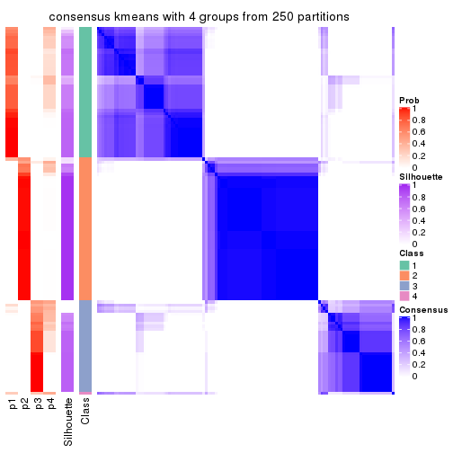
consensus_heatmap(res, k = 5)
consensus_heatmap(res, k = 6)
Heatmaps for the membership of samples in all partitions to see how consistent they are:
membership_heatmap(res, k = 2)
membership_heatmap(res, k = 3)
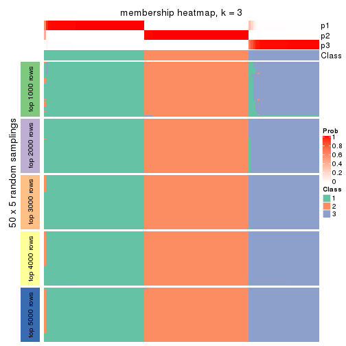
membership_heatmap(res, k = 4)
membership_heatmap(res, k = 5)
membership_heatmap(res, k = 6)
As soon as we have had the classes for columns, we can look for signatures which are significantly different between classes which can be candidate marks for certain classes. Following are the heatmaps for signatures.
Signature heatmaps where rows are scaled:
get_signatures(res, k = 2)
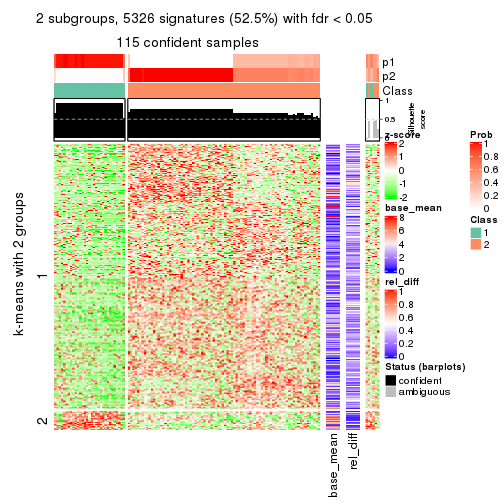
get_signatures(res, k = 3)
get_signatures(res, k = 4)

get_signatures(res, k = 5)
get_signatures(res, k = 6)
Signature heatmaps where rows are not scaled:
get_signatures(res, k = 2, scale_rows = FALSE)
get_signatures(res, k = 3, scale_rows = FALSE)
get_signatures(res, k = 4, scale_rows = FALSE)
get_signatures(res, k = 5, scale_rows = FALSE)
get_signatures(res, k = 6, scale_rows = FALSE)
Compare the overlap of signatures from different k:
compare_signatures(res)
get_signature() returns a data frame invisibly. TO get the list of signatures, the function
call should be assigned to a variable explicitly. In following code, if plot argument is set
to FALSE, no heatmap is plotted while only the differential analysis is performed.
# code only for demonstration
tb = get_signature(res, k = ..., plot = FALSE)
An example of the output of tb is:
#> which_row fdr mean_1 mean_2 scaled_mean_1 scaled_mean_2 km
#> 1 38 0.042760348 8.373488 9.131774 -0.5533452 0.5164555 1
#> 2 40 0.018707592 7.106213 8.469186 -0.6173731 0.5762149 1
#> 3 55 0.019134737 10.221463 11.207825 -0.6159697 0.5749050 1
#> 4 59 0.006059896 5.921854 7.869574 -0.6899429 0.6439467 1
#> 5 60 0.018055526 8.928898 10.211722 -0.6204761 0.5791110 1
#> 6 98 0.009384629 15.714769 14.887706 0.6635654 -0.6193277 2
...
The columns in tb are:
which_row: row indices corresponding to the input matrix.fdr: FDR for the differential test. mean_x: The mean value in group x.scaled_mean_x: The mean value in group x after rows are scaled.km: Row groups if k-means clustering is applied to rows.UMAP plot which shows how samples are separated.
dimension_reduction(res, k = 2, method = "UMAP")
dimension_reduction(res, k = 3, method = "UMAP")
dimension_reduction(res, k = 4, method = "UMAP")

dimension_reduction(res, k = 5, method = "UMAP")
dimension_reduction(res, k = 6, method = "UMAP")
Following heatmap shows how subgroups are split when increasing k:
collect_classes(res)
If matrix rows can be associated to genes, consider to use GO_Enrichment(res,
...) to perform function enrichment for the signature genes.
The object with results only for a single top-value method and a single partition method can be extracted as:
res = res_list["SD", "skmeans"]
# you can also extract it by
# res = res_list["SD:skmeans"]
A summary of res and all the functions that can be applied to it:
res
#> A 'ConsensusPartition' object with k = 2, 3, 4, 5, 6.
#> On a matrix with 10145 rows and 121 columns.
#> Top rows (1000, 2000, 3000, 4000, 5000) are extracted by 'SD' method.
#> Subgroups are detected by 'skmeans' method.
#> Performed in total 1250 partitions by row resampling.
#> Best k for subgroups seems to be 3.
#>
#> Following methods can be applied to this 'ConsensusPartition' object:
#> [1] "cola_report" "collect_classes" "collect_plots"
#> [4] "collect_stats" "colnames" "compare_signatures"
#> [7] "consensus_heatmap" "dimension_reduction" "functional_enrichment"
#> [10] "get_anno_col" "get_anno" "get_classes"
#> [13] "get_consensus" "get_matrix" "get_membership"
#> [16] "get_param" "get_signatures" "get_stats"
#> [19] "is_best_k" "is_stable_k" "membership_heatmap"
#> [22] "ncol" "nrow" "plot_ecdf"
#> [25] "rownames" "select_partition_number" "show"
#> [28] "suggest_best_k" "test_to_known_factors"
collect_plots() function collects all the plots made from res for all k (number of partitions)
into one single page to provide an easy and fast comparison between different k.
collect_plots(res)
The plots are:
k and the heatmap of
predicted classes for each k.k.k.k.All the plots in panels can be made by individual functions and they are plotted later in this section.
select_partition_number() produces several plots showing different
statistics for choosing “optimized” k. There are following statistics:
k;k, the area increased is defined as \(A_k - A_{k-1}\).The detailed explanations of these statistics can be found in the cola vignette.
Generally speaking, lower PAC score, higher mean silhouette score or higher
concordance corresponds to better partition. Rand index and Jaccard index
measure how similar the current partition is compared to partition with k-1.
If they are too similar, we won't accept k is better than k-1.
select_partition_number(res)
The numeric values for all these statistics can be obtained by get_stats().
get_stats(res)
#> k 1-PAC mean_silhouette concordance area_increased Rand Jaccard
#> 2 2 1.000 0.996 0.997 0.4832 0.517 0.517
#> 3 3 0.990 0.961 0.984 0.3774 0.812 0.639
#> 4 4 0.895 0.897 0.945 0.0905 0.924 0.779
#> 5 5 0.785 0.778 0.867 0.0561 0.967 0.882
#> 6 6 0.720 0.686 0.810 0.0417 0.981 0.921
suggest_best_k() suggests the best \(k\) based on these statistics. The rules are as follows:
NA.suggest_best_k(res)
#> [1] 3
#> attr(,"optional")
#> [1] 2
There is also optional best \(k\) = 2 that is worth to check.
Following shows the table of the partitions (You need to click the show/hide
code output link to see it). The membership matrix (columns with name p*)
is inferred by
clue::cl_consensus()
function with the SE method. Basically the value in the membership matrix
represents the probability to belong to a certain group. The finall class
label for an item is determined with the group with highest probability it
belongs to.
In get_classes() function, the entropy is calculated from the membership
matrix and the silhouette score is calculated from the consensus matrix.
cbind(get_classes(res, k = 2), get_membership(res, k = 2))
#> class entropy silhouette p1 p2
#> SRR2431463 1 0.0938 0.992 0.988 0.012
#> SRR2431462 1 0.0938 0.992 0.988 0.012
#> SRR2431461 1 0.0000 0.996 1.000 0.000
#> SRR2431459 1 0.0938 0.992 0.988 0.012
#> SRR2431460 1 0.0938 0.992 0.988 0.012
#> SRR2431458 1 0.0000 0.996 1.000 0.000
#> SRR2431457 1 0.0938 0.992 0.988 0.012
#> SRR2431455 1 0.0938 0.992 0.988 0.012
#> SRR2431456 1 0.0938 0.992 0.988 0.012
#> SRR2431454 1 0.0000 0.996 1.000 0.000
#> SRR2431453 1 0.0938 0.992 0.988 0.012
#> SRR2431451 1 0.0000 0.996 1.000 0.000
#> SRR2431452 1 0.0000 0.996 1.000 0.000
#> SRR2431450 1 0.0938 0.992 0.988 0.012
#> SRR2431449 1 0.0938 0.992 0.988 0.012
#> SRR2431448 1 0.0376 0.995 0.996 0.004
#> SRR2431446 1 0.0000 0.996 1.000 0.000
#> SRR2431447 1 0.0000 0.996 1.000 0.000
#> SRR2431445 1 0.0938 0.992 0.988 0.012
#> SRR2431444 1 0.0000 0.996 1.000 0.000
#> SRR2431443 1 0.0938 0.992 0.988 0.012
#> SRR2431442 1 0.0938 0.992 0.988 0.012
#> SRR2431441 1 0.0938 0.992 0.988 0.012
#> SRR2431440 1 0.0000 0.996 1.000 0.000
#> SRR2431439 1 0.0000 0.996 1.000 0.000
#> SRR2431438 1 0.0938 0.992 0.988 0.012
#> SRR2431437 1 0.0376 0.995 0.996 0.004
#> SRR2431436 1 0.0000 0.996 1.000 0.000
#> SRR2431435 1 0.0000 0.996 1.000 0.000
#> SRR2431434 1 0.0938 0.992 0.988 0.012
#> SRR2431433 1 0.0938 0.992 0.988 0.012
#> SRR2431432 1 0.0938 0.992 0.988 0.012
#> SRR2431431 1 0.0000 0.996 1.000 0.000
#> SRR2431430 1 0.0000 0.996 1.000 0.000
#> SRR2431429 1 0.0938 0.992 0.988 0.012
#> SRR2431428 1 0.0938 0.992 0.988 0.012
#> SRR2431427 2 0.0000 0.999 0.000 1.000
#> SRR2431426 2 0.0000 0.999 0.000 1.000
#> SRR2431425 2 0.0000 0.999 0.000 1.000
#> SRR2431424 2 0.0000 0.999 0.000 1.000
#> SRR2431423 2 0.0000 0.999 0.000 1.000
#> SRR2431422 2 0.0000 0.999 0.000 1.000
#> SRR2431421 2 0.0000 0.999 0.000 1.000
#> SRR2431420 2 0.0000 0.999 0.000 1.000
#> SRR2431419 2 0.0000 0.999 0.000 1.000
#> SRR2431418 2 0.0000 0.999 0.000 1.000
#> SRR2431417 2 0.0000 0.999 0.000 1.000
#> SRR2431416 2 0.0000 0.999 0.000 1.000
#> SRR2431415 2 0.0000 0.999 0.000 1.000
#> SRR2431414 2 0.0000 0.999 0.000 1.000
#> SRR2431413 2 0.0000 0.999 0.000 1.000
#> SRR2431412 2 0.0000 0.999 0.000 1.000
#> SRR2431411 2 0.0938 0.988 0.012 0.988
#> SRR2431409 2 0.0000 0.999 0.000 1.000
#> SRR2431410 2 0.0000 0.999 0.000 1.000
#> SRR2431408 2 0.0000 0.999 0.000 1.000
#> SRR2431407 2 0.0000 0.999 0.000 1.000
#> SRR2431405 2 0.0000 0.999 0.000 1.000
#> SRR2431406 2 0.0000 0.999 0.000 1.000
#> SRR2431404 2 0.0000 0.999 0.000 1.000
#> SRR2431403 2 0.0000 0.999 0.000 1.000
#> SRR2431402 2 0.0000 0.999 0.000 1.000
#> SRR2431401 2 0.0000 0.999 0.000 1.000
#> SRR2431400 2 0.0000 0.999 0.000 1.000
#> SRR2431399 2 0.0000 0.999 0.000 1.000
#> SRR2431398 2 0.0000 0.999 0.000 1.000
#> SRR2431397 2 0.0000 0.999 0.000 1.000
#> SRR2431396 2 0.0000 0.999 0.000 1.000
#> SRR2431395 2 0.0000 0.999 0.000 1.000
#> SRR2431394 2 0.0000 0.999 0.000 1.000
#> SRR2431393 2 0.0000 0.999 0.000 1.000
#> SRR2431392 2 0.0000 0.999 0.000 1.000
#> SRR2431391 2 0.0000 0.999 0.000 1.000
#> SRR2431390 2 0.0000 0.999 0.000 1.000
#> SRR2431389 2 0.0000 0.999 0.000 1.000
#> SRR2431388 2 0.0000 0.999 0.000 1.000
#> SRR2431387 2 0.0000 0.999 0.000 1.000
#> SRR2431386 2 0.0000 0.999 0.000 1.000
#> SRR2431385 2 0.0938 0.988 0.012 0.988
#> SRR2431383 2 0.0000 0.999 0.000 1.000
#> SRR2431384 2 0.0000 0.999 0.000 1.000
#> SRR2431382 2 0.0000 0.999 0.000 1.000
#> SRR2431381 2 0.0000 0.999 0.000 1.000
#> SRR2431380 2 0.0000 0.999 0.000 1.000
#> SRR2431379 1 0.0000 0.996 1.000 0.000
#> SRR2431378 1 0.0000 0.996 1.000 0.000
#> SRR2431376 1 0.0000 0.996 1.000 0.000
#> SRR2431377 1 0.0000 0.996 1.000 0.000
#> SRR2431375 1 0.0000 0.996 1.000 0.000
#> SRR2431374 1 0.0938 0.992 0.988 0.012
#> SRR2431372 1 0.0000 0.996 1.000 0.000
#> SRR2431371 1 0.0000 0.996 1.000 0.000
#> SRR2431373 1 0.0000 0.996 1.000 0.000
#> SRR2431370 1 0.0000 0.996 1.000 0.000
#> SRR2431369 1 0.0000 0.996 1.000 0.000
#> SRR2431368 1 0.0000 0.996 1.000 0.000
#> SRR2431367 1 0.0000 0.996 1.000 0.000
#> SRR2431366 1 0.0000 0.996 1.000 0.000
#> SRR2431365 1 0.0000 0.996 1.000 0.000
#> SRR2431364 1 0.0000 0.996 1.000 0.000
#> SRR2431363 1 0.0000 0.996 1.000 0.000
#> SRR2431361 1 0.0000 0.996 1.000 0.000
#> SRR2431362 1 0.0000 0.996 1.000 0.000
#> SRR2431360 1 0.0000 0.996 1.000 0.000
#> SRR2431359 1 0.0000 0.996 1.000 0.000
#> SRR2431358 1 0.0938 0.992 0.988 0.012
#> SRR2431357 1 0.0938 0.992 0.988 0.012
#> SRR2431355 1 0.0000 0.996 1.000 0.000
#> SRR2431356 1 0.0000 0.996 1.000 0.000
#> SRR2431354 1 0.0000 0.996 1.000 0.000
#> SRR2431353 1 0.0000 0.996 1.000 0.000
#> SRR2431352 1 0.0938 0.992 0.988 0.012
#> SRR2431351 1 0.0000 0.996 1.000 0.000
#> SRR2431350 1 0.0000 0.996 1.000 0.000
#> SRR2431349 1 0.0000 0.996 1.000 0.000
#> SRR2431348 1 0.0000 0.996 1.000 0.000
#> SRR2431347 1 0.0000 0.996 1.000 0.000
#> SRR2431346 1 0.0000 0.996 1.000 0.000
#> SRR2431345 1 0.0000 0.996 1.000 0.000
#> SRR2431344 1 0.0000 0.996 1.000 0.000
#> SRR2431343 1 0.0938 0.992 0.988 0.012
cbind(get_classes(res, k = 3), get_membership(res, k = 3))
#> class entropy silhouette p1 p2 p3
#> SRR2431463 1 0.0000 0.960 1.000 0.000 0.000
#> SRR2431462 1 0.0000 0.960 1.000 0.000 0.000
#> SRR2431461 1 0.0000 0.960 1.000 0.000 0.000
#> SRR2431459 1 0.0000 0.960 1.000 0.000 0.000
#> SRR2431460 1 0.0000 0.960 1.000 0.000 0.000
#> SRR2431458 1 0.0000 0.960 1.000 0.000 0.000
#> SRR2431457 1 0.0000 0.960 1.000 0.000 0.000
#> SRR2431455 1 0.0000 0.960 1.000 0.000 0.000
#> SRR2431456 1 0.0000 0.960 1.000 0.000 0.000
#> SRR2431454 3 0.1163 0.970 0.028 0.000 0.972
#> SRR2431453 1 0.0000 0.960 1.000 0.000 0.000
#> SRR2431451 1 0.5560 0.588 0.700 0.000 0.300
#> SRR2431452 3 0.0000 0.998 0.000 0.000 1.000
#> SRR2431450 1 0.0000 0.960 1.000 0.000 0.000
#> SRR2431449 1 0.0000 0.960 1.000 0.000 0.000
#> SRR2431448 1 0.0000 0.960 1.000 0.000 0.000
#> SRR2431446 1 0.0000 0.960 1.000 0.000 0.000
#> SRR2431447 1 0.0000 0.960 1.000 0.000 0.000
#> SRR2431445 1 0.0000 0.960 1.000 0.000 0.000
#> SRR2431444 3 0.0747 0.983 0.016 0.000 0.984
#> SRR2431443 1 0.0000 0.960 1.000 0.000 0.000
#> SRR2431442 1 0.0000 0.960 1.000 0.000 0.000
#> SRR2431441 1 0.0000 0.960 1.000 0.000 0.000
#> SRR2431440 1 0.3412 0.845 0.876 0.000 0.124
#> SRR2431439 1 0.0000 0.960 1.000 0.000 0.000
#> SRR2431438 1 0.0000 0.960 1.000 0.000 0.000
#> SRR2431437 1 0.0000 0.960 1.000 0.000 0.000
#> SRR2431436 3 0.0000 0.998 0.000 0.000 1.000
#> SRR2431435 1 0.6267 0.206 0.548 0.000 0.452
#> SRR2431434 1 0.0000 0.960 1.000 0.000 0.000
#> SRR2431433 1 0.0000 0.960 1.000 0.000 0.000
#> SRR2431432 1 0.0000 0.960 1.000 0.000 0.000
#> SRR2431431 1 0.3116 0.866 0.892 0.000 0.108
#> SRR2431430 1 0.0000 0.960 1.000 0.000 0.000
#> SRR2431429 1 0.0000 0.960 1.000 0.000 0.000
#> SRR2431428 1 0.0000 0.960 1.000 0.000 0.000
#> SRR2431427 2 0.0000 0.994 0.000 1.000 0.000
#> SRR2431426 2 0.0000 0.994 0.000 1.000 0.000
#> SRR2431425 2 0.0000 0.994 0.000 1.000 0.000
#> SRR2431424 2 0.0000 0.994 0.000 1.000 0.000
#> SRR2431423 2 0.0000 0.994 0.000 1.000 0.000
#> SRR2431422 2 0.0000 0.994 0.000 1.000 0.000
#> SRR2431421 2 0.0000 0.994 0.000 1.000 0.000
#> SRR2431420 2 0.0000 0.994 0.000 1.000 0.000
#> SRR2431419 2 0.0000 0.994 0.000 1.000 0.000
#> SRR2431418 2 0.0000 0.994 0.000 1.000 0.000
#> SRR2431417 2 0.0000 0.994 0.000 1.000 0.000
#> SRR2431416 2 0.0000 0.994 0.000 1.000 0.000
#> SRR2431415 2 0.0000 0.994 0.000 1.000 0.000
#> SRR2431414 2 0.0000 0.994 0.000 1.000 0.000
#> SRR2431413 2 0.0000 0.994 0.000 1.000 0.000
#> SRR2431412 2 0.0000 0.994 0.000 1.000 0.000
#> SRR2431411 3 0.0592 0.986 0.000 0.012 0.988
#> SRR2431409 2 0.0000 0.994 0.000 1.000 0.000
#> SRR2431410 2 0.2682 0.910 0.076 0.920 0.004
#> SRR2431408 2 0.0000 0.994 0.000 1.000 0.000
#> SRR2431407 2 0.0000 0.994 0.000 1.000 0.000
#> SRR2431405 2 0.0000 0.994 0.000 1.000 0.000
#> SRR2431406 2 0.0000 0.994 0.000 1.000 0.000
#> SRR2431404 2 0.0000 0.994 0.000 1.000 0.000
#> SRR2431403 2 0.0000 0.994 0.000 1.000 0.000
#> SRR2431402 2 0.0000 0.994 0.000 1.000 0.000
#> SRR2431401 2 0.0000 0.994 0.000 1.000 0.000
#> SRR2431400 2 0.0000 0.994 0.000 1.000 0.000
#> SRR2431399 2 0.0000 0.994 0.000 1.000 0.000
#> SRR2431398 2 0.0000 0.994 0.000 1.000 0.000
#> SRR2431397 2 0.0000 0.994 0.000 1.000 0.000
#> SRR2431396 2 0.0000 0.994 0.000 1.000 0.000
#> SRR2431395 2 0.0000 0.994 0.000 1.000 0.000
#> SRR2431394 2 0.0000 0.994 0.000 1.000 0.000
#> SRR2431393 2 0.0000 0.994 0.000 1.000 0.000
#> SRR2431392 2 0.0000 0.994 0.000 1.000 0.000
#> SRR2431391 2 0.0000 0.994 0.000 1.000 0.000
#> SRR2431390 2 0.0000 0.994 0.000 1.000 0.000
#> SRR2431389 2 0.0000 0.994 0.000 1.000 0.000
#> SRR2431388 2 0.0000 0.994 0.000 1.000 0.000
#> SRR2431387 2 0.0000 0.994 0.000 1.000 0.000
#> SRR2431386 2 0.0000 0.994 0.000 1.000 0.000
#> SRR2431385 2 0.4702 0.729 0.000 0.788 0.212
#> SRR2431383 2 0.0000 0.994 0.000 1.000 0.000
#> SRR2431384 2 0.0000 0.994 0.000 1.000 0.000
#> SRR2431382 2 0.0000 0.994 0.000 1.000 0.000
#> SRR2431381 2 0.0000 0.994 0.000 1.000 0.000
#> SRR2431380 2 0.0000 0.994 0.000 1.000 0.000
#> SRR2431379 3 0.0000 0.998 0.000 0.000 1.000
#> SRR2431378 3 0.0000 0.998 0.000 0.000 1.000
#> SRR2431376 3 0.0000 0.998 0.000 0.000 1.000
#> SRR2431377 1 0.6295 0.151 0.528 0.000 0.472
#> SRR2431375 3 0.0000 0.998 0.000 0.000 1.000
#> SRR2431374 1 0.0000 0.960 1.000 0.000 0.000
#> SRR2431372 3 0.0000 0.998 0.000 0.000 1.000
#> SRR2431371 3 0.0000 0.998 0.000 0.000 1.000
#> SRR2431373 3 0.0000 0.998 0.000 0.000 1.000
#> SRR2431370 3 0.0000 0.998 0.000 0.000 1.000
#> SRR2431369 3 0.0000 0.998 0.000 0.000 1.000
#> SRR2431368 3 0.0000 0.998 0.000 0.000 1.000
#> SRR2431367 3 0.0000 0.998 0.000 0.000 1.000
#> SRR2431366 1 0.3192 0.862 0.888 0.000 0.112
#> SRR2431365 1 0.1964 0.916 0.944 0.000 0.056
#> SRR2431364 3 0.0000 0.998 0.000 0.000 1.000
#> SRR2431363 3 0.0000 0.998 0.000 0.000 1.000
#> SRR2431361 3 0.0000 0.998 0.000 0.000 1.000
#> SRR2431362 3 0.0000 0.998 0.000 0.000 1.000
#> SRR2431360 3 0.0000 0.998 0.000 0.000 1.000
#> SRR2431359 3 0.0000 0.998 0.000 0.000 1.000
#> SRR2431358 1 0.0000 0.960 1.000 0.000 0.000
#> SRR2431357 1 0.0000 0.960 1.000 0.000 0.000
#> SRR2431355 1 0.0424 0.955 0.992 0.000 0.008
#> SRR2431356 3 0.0000 0.998 0.000 0.000 1.000
#> SRR2431354 3 0.0000 0.998 0.000 0.000 1.000
#> SRR2431353 1 0.0000 0.960 1.000 0.000 0.000
#> SRR2431352 1 0.0000 0.960 1.000 0.000 0.000
#> SRR2431351 3 0.0000 0.998 0.000 0.000 1.000
#> SRR2431350 3 0.0000 0.998 0.000 0.000 1.000
#> SRR2431349 3 0.0000 0.998 0.000 0.000 1.000
#> SRR2431348 3 0.0000 0.998 0.000 0.000 1.000
#> SRR2431347 3 0.0000 0.998 0.000 0.000 1.000
#> SRR2431346 3 0.0000 0.998 0.000 0.000 1.000
#> SRR2431345 3 0.0000 0.998 0.000 0.000 1.000
#> SRR2431344 1 0.0000 0.960 1.000 0.000 0.000
#> SRR2431343 1 0.0000 0.960 1.000 0.000 0.000
cbind(get_classes(res, k = 4), get_membership(res, k = 4))
#> class entropy silhouette p1 p2 p3 p4
#> SRR2431463 1 0.3356 0.875 0.824 0.000 0.000 0.176
#> SRR2431462 1 0.1118 0.897 0.964 0.000 0.000 0.036
#> SRR2431461 1 0.0188 0.887 0.996 0.000 0.000 0.004
#> SRR2431459 1 0.0921 0.896 0.972 0.000 0.000 0.028
#> SRR2431460 1 0.3172 0.882 0.840 0.000 0.000 0.160
#> SRR2431458 1 0.0336 0.885 0.992 0.000 0.000 0.008
#> SRR2431457 1 0.2408 0.895 0.896 0.000 0.000 0.104
#> SRR2431455 1 0.3311 0.877 0.828 0.000 0.000 0.172
#> SRR2431456 1 0.3074 0.886 0.848 0.000 0.000 0.152
#> SRR2431454 3 0.4452 0.664 0.260 0.000 0.732 0.008
#> SRR2431453 1 0.1302 0.898 0.956 0.000 0.000 0.044
#> SRR2431451 1 0.1489 0.861 0.952 0.000 0.044 0.004
#> SRR2431452 3 0.1807 0.895 0.052 0.000 0.940 0.008
#> SRR2431450 1 0.4624 0.659 0.660 0.000 0.000 0.340
#> SRR2431449 1 0.3219 0.881 0.836 0.000 0.000 0.164
#> SRR2431448 1 0.0188 0.891 0.996 0.000 0.000 0.004
#> SRR2431446 1 0.0188 0.891 0.996 0.000 0.000 0.004
#> SRR2431447 1 0.0188 0.887 0.996 0.000 0.000 0.004
#> SRR2431445 1 0.2704 0.892 0.876 0.000 0.000 0.124
#> SRR2431444 3 0.3982 0.715 0.220 0.000 0.776 0.004
#> SRR2431443 1 0.3356 0.875 0.824 0.000 0.000 0.176
#> SRR2431442 1 0.3356 0.875 0.824 0.000 0.000 0.176
#> SRR2431441 1 0.3311 0.877 0.828 0.000 0.000 0.172
#> SRR2431440 1 0.0927 0.877 0.976 0.000 0.016 0.008
#> SRR2431439 1 0.0817 0.895 0.976 0.000 0.000 0.024
#> SRR2431438 1 0.3074 0.885 0.848 0.000 0.000 0.152
#> SRR2431437 1 0.0000 0.889 1.000 0.000 0.000 0.000
#> SRR2431436 3 0.3157 0.810 0.144 0.000 0.852 0.004
#> SRR2431435 1 0.2773 0.787 0.880 0.000 0.116 0.004
#> SRR2431434 1 0.3726 0.842 0.788 0.000 0.000 0.212
#> SRR2431433 1 0.3356 0.875 0.824 0.000 0.000 0.176
#> SRR2431432 1 0.0469 0.893 0.988 0.000 0.000 0.012
#> SRR2431431 1 0.3215 0.808 0.876 0.000 0.092 0.032
#> SRR2431430 1 0.0188 0.887 0.996 0.000 0.000 0.004
#> SRR2431429 1 0.3311 0.877 0.828 0.000 0.000 0.172
#> SRR2431428 4 0.4008 0.537 0.244 0.000 0.000 0.756
#> SRR2431427 2 0.0000 0.990 0.000 1.000 0.000 0.000
#> SRR2431426 2 0.0000 0.990 0.000 1.000 0.000 0.000
#> SRR2431425 2 0.0000 0.990 0.000 1.000 0.000 0.000
#> SRR2431424 2 0.0000 0.990 0.000 1.000 0.000 0.000
#> SRR2431423 2 0.0000 0.990 0.000 1.000 0.000 0.000
#> SRR2431422 2 0.0000 0.990 0.000 1.000 0.000 0.000
#> SRR2431421 2 0.0000 0.990 0.000 1.000 0.000 0.000
#> SRR2431420 2 0.0000 0.990 0.000 1.000 0.000 0.000
#> SRR2431419 2 0.0000 0.990 0.000 1.000 0.000 0.000
#> SRR2431418 2 0.0000 0.990 0.000 1.000 0.000 0.000
#> SRR2431417 2 0.0000 0.990 0.000 1.000 0.000 0.000
#> SRR2431416 2 0.0000 0.990 0.000 1.000 0.000 0.000
#> SRR2431415 2 0.0000 0.990 0.000 1.000 0.000 0.000
#> SRR2431414 2 0.0000 0.990 0.000 1.000 0.000 0.000
#> SRR2431413 2 0.0188 0.987 0.000 0.996 0.000 0.004
#> SRR2431412 2 0.0000 0.990 0.000 1.000 0.000 0.000
#> SRR2431411 3 0.0188 0.937 0.000 0.000 0.996 0.004
#> SRR2431409 2 0.0000 0.990 0.000 1.000 0.000 0.000
#> SRR2431410 4 0.4857 0.574 0.016 0.284 0.000 0.700
#> SRR2431408 2 0.0000 0.990 0.000 1.000 0.000 0.000
#> SRR2431407 2 0.0000 0.990 0.000 1.000 0.000 0.000
#> SRR2431405 2 0.0188 0.987 0.000 0.996 0.000 0.004
#> SRR2431406 2 0.0000 0.990 0.000 1.000 0.000 0.000
#> SRR2431404 2 0.0000 0.990 0.000 1.000 0.000 0.000
#> SRR2431403 2 0.0000 0.990 0.000 1.000 0.000 0.000
#> SRR2431402 2 0.0000 0.990 0.000 1.000 0.000 0.000
#> SRR2431401 2 0.0000 0.990 0.000 1.000 0.000 0.000
#> SRR2431400 2 0.0000 0.990 0.000 1.000 0.000 0.000
#> SRR2431399 2 0.0000 0.990 0.000 1.000 0.000 0.000
#> SRR2431398 2 0.0000 0.990 0.000 1.000 0.000 0.000
#> SRR2431397 2 0.0000 0.990 0.000 1.000 0.000 0.000
#> SRR2431396 2 0.0188 0.987 0.000 0.996 0.000 0.004
#> SRR2431395 2 0.0000 0.990 0.000 1.000 0.000 0.000
#> SRR2431394 2 0.0000 0.990 0.000 1.000 0.000 0.000
#> SRR2431393 2 0.0000 0.990 0.000 1.000 0.000 0.000
#> SRR2431392 2 0.0000 0.990 0.000 1.000 0.000 0.000
#> SRR2431391 2 0.0000 0.990 0.000 1.000 0.000 0.000
#> SRR2431390 2 0.0000 0.990 0.000 1.000 0.000 0.000
#> SRR2431389 2 0.0000 0.990 0.000 1.000 0.000 0.000
#> SRR2431388 2 0.0000 0.990 0.000 1.000 0.000 0.000
#> SRR2431387 2 0.0000 0.990 0.000 1.000 0.000 0.000
#> SRR2431386 2 0.0000 0.990 0.000 1.000 0.000 0.000
#> SRR2431385 2 0.5016 0.329 0.000 0.600 0.396 0.004
#> SRR2431383 2 0.0188 0.987 0.000 0.996 0.000 0.004
#> SRR2431384 2 0.0000 0.990 0.000 1.000 0.000 0.000
#> SRR2431382 2 0.0000 0.990 0.000 1.000 0.000 0.000
#> SRR2431381 2 0.0000 0.990 0.000 1.000 0.000 0.000
#> SRR2431380 2 0.0000 0.990 0.000 1.000 0.000 0.000
#> SRR2431379 3 0.0000 0.939 0.000 0.000 1.000 0.000
#> SRR2431378 3 0.3907 0.672 0.000 0.000 0.768 0.232
#> SRR2431376 4 0.4855 0.322 0.000 0.000 0.400 0.600
#> SRR2431377 4 0.1109 0.858 0.004 0.000 0.028 0.968
#> SRR2431375 3 0.0000 0.939 0.000 0.000 1.000 0.000
#> SRR2431374 4 0.0592 0.872 0.016 0.000 0.000 0.984
#> SRR2431372 3 0.0000 0.939 0.000 0.000 1.000 0.000
#> SRR2431371 4 0.3486 0.697 0.000 0.000 0.188 0.812
#> SRR2431373 3 0.0000 0.939 0.000 0.000 1.000 0.000
#> SRR2431370 3 0.0336 0.937 0.000 0.000 0.992 0.008
#> SRR2431369 3 0.4888 0.250 0.000 0.000 0.588 0.412
#> SRR2431368 3 0.0336 0.937 0.000 0.000 0.992 0.008
#> SRR2431367 3 0.0336 0.937 0.000 0.000 0.992 0.008
#> SRR2431366 4 0.0336 0.871 0.008 0.000 0.000 0.992
#> SRR2431365 4 0.0336 0.871 0.008 0.000 0.000 0.992
#> SRR2431364 3 0.0000 0.939 0.000 0.000 1.000 0.000
#> SRR2431363 3 0.0000 0.939 0.000 0.000 1.000 0.000
#> SRR2431361 4 0.4643 0.456 0.000 0.000 0.344 0.656
#> SRR2431362 3 0.0000 0.939 0.000 0.000 1.000 0.000
#> SRR2431360 3 0.0000 0.939 0.000 0.000 1.000 0.000
#> SRR2431359 3 0.0336 0.937 0.000 0.000 0.992 0.008
#> SRR2431358 4 0.0707 0.869 0.020 0.000 0.000 0.980
#> SRR2431357 4 0.0592 0.872 0.016 0.000 0.000 0.984
#> SRR2431355 4 0.0592 0.872 0.016 0.000 0.000 0.984
#> SRR2431356 3 0.0336 0.937 0.000 0.000 0.992 0.008
#> SRR2431354 3 0.0000 0.939 0.000 0.000 1.000 0.000
#> SRR2431353 4 0.0592 0.872 0.016 0.000 0.000 0.984
#> SRR2431352 4 0.0592 0.872 0.016 0.000 0.000 0.984
#> SRR2431351 3 0.0000 0.939 0.000 0.000 1.000 0.000
#> SRR2431350 3 0.0469 0.935 0.000 0.000 0.988 0.012
#> SRR2431349 3 0.0000 0.939 0.000 0.000 1.000 0.000
#> SRR2431348 3 0.0336 0.937 0.000 0.000 0.992 0.008
#> SRR2431347 3 0.0336 0.937 0.000 0.000 0.992 0.008
#> SRR2431346 3 0.1637 0.896 0.000 0.000 0.940 0.060
#> SRR2431345 3 0.0000 0.939 0.000 0.000 1.000 0.000
#> SRR2431344 4 0.0469 0.870 0.012 0.000 0.000 0.988
#> SRR2431343 4 0.0592 0.872 0.016 0.000 0.000 0.984
cbind(get_classes(res, k = 5), get_membership(res, k = 5))
#> class entropy silhouette p1 p2 p3 p4 p5
#> SRR2431463 1 0.2020 0.8359 0.900 0.000 0.000 0.100 0.000
#> SRR2431462 1 0.1300 0.8451 0.956 0.000 0.000 0.016 0.028
#> SRR2431461 1 0.2773 0.8080 0.836 0.000 0.000 0.000 0.164
#> SRR2431459 1 0.1877 0.8413 0.924 0.000 0.000 0.012 0.064
#> SRR2431460 1 0.1732 0.8423 0.920 0.000 0.000 0.080 0.000
#> SRR2431458 1 0.3774 0.7316 0.704 0.000 0.000 0.000 0.296
#> SRR2431457 1 0.1697 0.8458 0.932 0.000 0.000 0.060 0.008
#> SRR2431455 1 0.1965 0.8373 0.904 0.000 0.000 0.096 0.000
#> SRR2431456 1 0.2077 0.8434 0.908 0.000 0.000 0.084 0.008
#> SRR2431454 5 0.5933 -0.3852 0.104 0.000 0.444 0.000 0.452
#> SRR2431453 1 0.1106 0.8442 0.964 0.000 0.000 0.012 0.024
#> SRR2431451 1 0.5297 0.6295 0.580 0.000 0.060 0.000 0.360
#> SRR2431452 3 0.4318 0.6326 0.020 0.000 0.688 0.000 0.292
#> SRR2431450 1 0.3635 0.6872 0.748 0.000 0.000 0.248 0.004
#> SRR2431449 1 0.2179 0.8370 0.896 0.000 0.000 0.100 0.004
#> SRR2431448 1 0.2719 0.8184 0.852 0.000 0.000 0.004 0.144
#> SRR2431446 1 0.2179 0.8285 0.888 0.000 0.000 0.000 0.112
#> SRR2431447 1 0.3636 0.7482 0.728 0.000 0.000 0.000 0.272
#> SRR2431445 1 0.1341 0.8455 0.944 0.000 0.000 0.056 0.000
#> SRR2431444 3 0.5748 0.5031 0.140 0.000 0.608 0.000 0.252
#> SRR2431443 1 0.2286 0.8317 0.888 0.000 0.000 0.108 0.004
#> SRR2431442 1 0.1965 0.8373 0.904 0.000 0.000 0.096 0.000
#> SRR2431441 1 0.1965 0.8373 0.904 0.000 0.000 0.096 0.000
#> SRR2431440 1 0.4644 0.5722 0.528 0.000 0.012 0.000 0.460
#> SRR2431439 1 0.2964 0.8294 0.856 0.000 0.000 0.024 0.120
#> SRR2431438 1 0.1671 0.8427 0.924 0.000 0.000 0.076 0.000
#> SRR2431437 1 0.2424 0.8229 0.868 0.000 0.000 0.000 0.132
#> SRR2431436 3 0.4588 0.6626 0.060 0.000 0.720 0.000 0.220
#> SRR2431435 1 0.5538 0.6359 0.596 0.000 0.092 0.000 0.312
#> SRR2431434 1 0.2763 0.8011 0.848 0.000 0.000 0.148 0.004
#> SRR2431433 1 0.2249 0.8382 0.896 0.000 0.000 0.096 0.008
#> SRR2431432 1 0.2124 0.8337 0.900 0.000 0.000 0.004 0.096
#> SRR2431431 1 0.6923 0.5451 0.532 0.000 0.104 0.068 0.296
#> SRR2431430 1 0.3561 0.7568 0.740 0.000 0.000 0.000 0.260
#> SRR2431429 1 0.2304 0.8372 0.892 0.000 0.000 0.100 0.008
#> SRR2431428 4 0.4066 0.3860 0.324 0.000 0.000 0.672 0.004
#> SRR2431427 2 0.0880 0.9033 0.000 0.968 0.000 0.000 0.032
#> SRR2431426 2 0.2648 0.8305 0.000 0.848 0.000 0.000 0.152
#> SRR2431425 2 0.0963 0.9042 0.000 0.964 0.000 0.000 0.036
#> SRR2431424 2 0.1908 0.8869 0.000 0.908 0.000 0.000 0.092
#> SRR2431423 2 0.0510 0.9010 0.000 0.984 0.000 0.000 0.016
#> SRR2431422 2 0.2074 0.8793 0.000 0.896 0.000 0.000 0.104
#> SRR2431421 2 0.3480 0.6292 0.000 0.752 0.000 0.000 0.248
#> SRR2431420 2 0.1341 0.8997 0.000 0.944 0.000 0.000 0.056
#> SRR2431419 2 0.1851 0.8868 0.000 0.912 0.000 0.000 0.088
#> SRR2431418 2 0.0404 0.8993 0.000 0.988 0.000 0.000 0.012
#> SRR2431417 2 0.0794 0.9029 0.000 0.972 0.000 0.000 0.028
#> SRR2431416 2 0.2329 0.8577 0.000 0.876 0.000 0.000 0.124
#> SRR2431415 2 0.0404 0.8965 0.000 0.988 0.000 0.000 0.012
#> SRR2431414 2 0.3366 0.7078 0.000 0.768 0.000 0.000 0.232
#> SRR2431413 5 0.4227 0.5276 0.000 0.420 0.000 0.000 0.580
#> SRR2431412 2 0.0290 0.8976 0.000 0.992 0.000 0.000 0.008
#> SRR2431411 3 0.4030 0.5412 0.000 0.000 0.648 0.000 0.352
#> SRR2431409 2 0.0510 0.8944 0.000 0.984 0.000 0.000 0.016
#> SRR2431410 4 0.6293 0.0369 0.044 0.404 0.000 0.496 0.056
#> SRR2431408 2 0.0703 0.8914 0.000 0.976 0.000 0.000 0.024
#> SRR2431407 2 0.0880 0.9016 0.000 0.968 0.000 0.000 0.032
#> SRR2431405 5 0.4256 0.5072 0.000 0.436 0.000 0.000 0.564
#> SRR2431406 2 0.1341 0.9002 0.000 0.944 0.000 0.000 0.056
#> SRR2431404 2 0.3336 0.6964 0.000 0.772 0.000 0.000 0.228
#> SRR2431403 2 0.2280 0.8653 0.000 0.880 0.000 0.000 0.120
#> SRR2431402 2 0.0609 0.9014 0.000 0.980 0.000 0.000 0.020
#> SRR2431401 2 0.2179 0.8744 0.000 0.888 0.000 0.000 0.112
#> SRR2431400 2 0.0794 0.9036 0.000 0.972 0.000 0.000 0.028
#> SRR2431399 2 0.2329 0.8585 0.000 0.876 0.000 0.000 0.124
#> SRR2431398 2 0.1851 0.8894 0.000 0.912 0.000 0.000 0.088
#> SRR2431397 2 0.0880 0.9041 0.000 0.968 0.000 0.000 0.032
#> SRR2431396 5 0.4307 0.3218 0.000 0.496 0.000 0.000 0.504
#> SRR2431395 2 0.1671 0.8968 0.000 0.924 0.000 0.000 0.076
#> SRR2431394 2 0.2813 0.8191 0.000 0.832 0.000 0.000 0.168
#> SRR2431393 2 0.2471 0.8460 0.000 0.864 0.000 0.000 0.136
#> SRR2431392 2 0.1608 0.8954 0.000 0.928 0.000 0.000 0.072
#> SRR2431391 2 0.0404 0.9020 0.000 0.988 0.000 0.000 0.012
#> SRR2431390 2 0.2966 0.7786 0.000 0.816 0.000 0.000 0.184
#> SRR2431389 2 0.1043 0.9045 0.000 0.960 0.000 0.000 0.040
#> SRR2431388 2 0.3305 0.7066 0.000 0.776 0.000 0.000 0.224
#> SRR2431387 2 0.1121 0.8948 0.000 0.956 0.000 0.000 0.044
#> SRR2431386 2 0.0510 0.8949 0.000 0.984 0.000 0.000 0.016
#> SRR2431385 5 0.6133 0.5078 0.000 0.220 0.216 0.000 0.564
#> SRR2431383 5 0.4242 0.5200 0.000 0.428 0.000 0.000 0.572
#> SRR2431384 2 0.0404 0.8995 0.000 0.988 0.000 0.000 0.012
#> SRR2431382 2 0.1478 0.8971 0.000 0.936 0.000 0.000 0.064
#> SRR2431381 2 0.0880 0.9036 0.000 0.968 0.000 0.000 0.032
#> SRR2431380 2 0.0865 0.8899 0.000 0.972 0.000 0.004 0.024
#> SRR2431379 3 0.0290 0.8984 0.000 0.000 0.992 0.000 0.008
#> SRR2431378 3 0.4795 0.6137 0.000 0.000 0.704 0.224 0.072
#> SRR2431376 4 0.5601 0.0253 0.000 0.000 0.448 0.480 0.072
#> SRR2431377 4 0.1800 0.7936 0.000 0.000 0.020 0.932 0.048
#> SRR2431375 3 0.0290 0.8990 0.000 0.000 0.992 0.000 0.008
#> SRR2431374 4 0.0794 0.8176 0.028 0.000 0.000 0.972 0.000
#> SRR2431372 3 0.0290 0.8988 0.000 0.000 0.992 0.000 0.008
#> SRR2431371 4 0.4252 0.6454 0.000 0.000 0.172 0.764 0.064
#> SRR2431373 3 0.0290 0.8990 0.000 0.000 0.992 0.000 0.008
#> SRR2431370 3 0.0963 0.8930 0.000 0.000 0.964 0.000 0.036
#> SRR2431369 3 0.5338 0.3947 0.000 0.000 0.604 0.324 0.072
#> SRR2431368 3 0.0510 0.8972 0.000 0.000 0.984 0.000 0.016
#> SRR2431367 3 0.1124 0.8927 0.000 0.000 0.960 0.004 0.036
#> SRR2431366 4 0.0510 0.8160 0.000 0.000 0.000 0.984 0.016
#> SRR2431365 4 0.0404 0.8168 0.000 0.000 0.000 0.988 0.012
#> SRR2431364 3 0.0290 0.8990 0.000 0.000 0.992 0.000 0.008
#> SRR2431363 3 0.0290 0.8990 0.000 0.000 0.992 0.000 0.008
#> SRR2431361 4 0.5542 0.0855 0.000 0.000 0.432 0.500 0.068
#> SRR2431362 3 0.0290 0.8990 0.000 0.000 0.992 0.000 0.008
#> SRR2431360 3 0.0290 0.8990 0.000 0.000 0.992 0.000 0.008
#> SRR2431359 3 0.0955 0.8952 0.000 0.000 0.968 0.004 0.028
#> SRR2431358 4 0.1410 0.7985 0.060 0.000 0.000 0.940 0.000
#> SRR2431357 4 0.0510 0.8197 0.016 0.000 0.000 0.984 0.000
#> SRR2431355 4 0.0162 0.8176 0.000 0.000 0.000 0.996 0.004
#> SRR2431356 3 0.0880 0.8944 0.000 0.000 0.968 0.000 0.032
#> SRR2431354 3 0.0290 0.8990 0.000 0.000 0.992 0.000 0.008
#> SRR2431353 4 0.0404 0.8198 0.012 0.000 0.000 0.988 0.000
#> SRR2431352 4 0.0703 0.8186 0.024 0.000 0.000 0.976 0.000
#> SRR2431351 3 0.0290 0.8990 0.000 0.000 0.992 0.000 0.008
#> SRR2431350 3 0.1670 0.8813 0.000 0.000 0.936 0.012 0.052
#> SRR2431349 3 0.0290 0.8990 0.000 0.000 0.992 0.000 0.008
#> SRR2431348 3 0.1124 0.8923 0.000 0.000 0.960 0.004 0.036
#> SRR2431347 3 0.1877 0.8726 0.000 0.000 0.924 0.012 0.064
#> SRR2431346 3 0.3116 0.8191 0.000 0.000 0.860 0.076 0.064
#> SRR2431345 3 0.0290 0.8990 0.000 0.000 0.992 0.000 0.008
#> SRR2431344 4 0.0992 0.8155 0.024 0.000 0.000 0.968 0.008
#> SRR2431343 4 0.0794 0.8176 0.028 0.000 0.000 0.972 0.000
cbind(get_classes(res, k = 6), get_membership(res, k = 6))
#> class entropy silhouette p1 p2 p3 p4 p5 p6
#> SRR2431463 1 0.1980 0.7813 0.920 0.000 0.000 0.048 0.016 0.016
#> SRR2431462 1 0.2491 0.7313 0.868 0.000 0.000 0.000 0.112 0.020
#> SRR2431461 1 0.4034 0.4710 0.692 0.000 0.000 0.004 0.280 0.024
#> SRR2431459 1 0.2790 0.7090 0.844 0.000 0.000 0.000 0.132 0.024
#> SRR2431460 1 0.1332 0.7856 0.952 0.000 0.000 0.028 0.012 0.008
#> SRR2431458 5 0.4468 0.1627 0.484 0.000 0.000 0.004 0.492 0.020
#> SRR2431457 1 0.1092 0.7795 0.960 0.000 0.000 0.000 0.020 0.020
#> SRR2431455 1 0.1082 0.7823 0.956 0.000 0.000 0.040 0.004 0.000
#> SRR2431456 1 0.2115 0.7812 0.916 0.000 0.000 0.032 0.032 0.020
#> SRR2431454 5 0.5845 0.1496 0.016 0.000 0.368 0.000 0.488 0.128
#> SRR2431453 1 0.2214 0.7488 0.888 0.000 0.000 0.000 0.096 0.016
#> SRR2431451 5 0.5647 0.6228 0.264 0.000 0.060 0.004 0.612 0.060
#> SRR2431452 3 0.5190 0.4258 0.000 0.000 0.620 0.004 0.244 0.132
#> SRR2431450 1 0.3780 0.5270 0.732 0.000 0.000 0.244 0.016 0.008
#> SRR2431449 1 0.1873 0.7828 0.924 0.000 0.000 0.048 0.020 0.008
#> SRR2431448 1 0.3401 0.6208 0.776 0.000 0.000 0.004 0.204 0.016
#> SRR2431446 1 0.3719 0.5547 0.728 0.000 0.000 0.000 0.248 0.024
#> SRR2431447 1 0.4486 -0.1864 0.512 0.000 0.000 0.008 0.464 0.016
#> SRR2431445 1 0.1346 0.7824 0.952 0.000 0.000 0.008 0.024 0.016
#> SRR2431444 3 0.5352 0.1414 0.048 0.000 0.532 0.000 0.388 0.032
#> SRR2431443 1 0.1921 0.7725 0.920 0.000 0.000 0.056 0.012 0.012
#> SRR2431442 1 0.1410 0.7800 0.944 0.000 0.000 0.044 0.008 0.004
#> SRR2431441 1 0.0777 0.7842 0.972 0.000 0.000 0.024 0.000 0.004
#> SRR2431440 5 0.5445 0.6114 0.224 0.000 0.024 0.000 0.628 0.124
#> SRR2431439 1 0.4006 0.6244 0.748 0.000 0.000 0.016 0.204 0.032
#> SRR2431438 1 0.0837 0.7840 0.972 0.000 0.000 0.020 0.004 0.004
#> SRR2431437 1 0.3720 0.5828 0.736 0.000 0.000 0.000 0.236 0.028
#> SRR2431436 3 0.4397 0.3794 0.012 0.000 0.632 0.000 0.336 0.020
#> SRR2431435 5 0.5598 0.5663 0.324 0.000 0.096 0.004 0.560 0.016
#> SRR2431434 1 0.2723 0.6983 0.852 0.000 0.000 0.128 0.016 0.004
#> SRR2431433 1 0.1682 0.7817 0.928 0.000 0.000 0.052 0.020 0.000
#> SRR2431432 1 0.3656 0.5371 0.728 0.000 0.000 0.004 0.256 0.012
#> SRR2431431 5 0.6847 0.4298 0.364 0.000 0.080 0.056 0.456 0.044
#> SRR2431430 1 0.4800 -0.2066 0.500 0.000 0.000 0.000 0.448 0.052
#> SRR2431429 1 0.1268 0.7850 0.952 0.000 0.000 0.036 0.008 0.004
#> SRR2431428 4 0.3841 0.3019 0.380 0.000 0.000 0.616 0.004 0.000
#> SRR2431427 2 0.2309 0.8432 0.000 0.888 0.000 0.000 0.028 0.084
#> SRR2431426 2 0.4420 0.5597 0.000 0.640 0.000 0.004 0.036 0.320
#> SRR2431425 2 0.1895 0.8458 0.000 0.912 0.000 0.000 0.016 0.072
#> SRR2431424 2 0.3129 0.8206 0.000 0.820 0.000 0.004 0.024 0.152
#> SRR2431423 2 0.2221 0.8454 0.000 0.896 0.000 0.000 0.032 0.072
#> SRR2431422 2 0.3525 0.7969 0.000 0.784 0.000 0.004 0.032 0.180
#> SRR2431421 2 0.3840 0.6518 0.000 0.696 0.000 0.000 0.020 0.284
#> SRR2431420 2 0.2212 0.8448 0.000 0.880 0.000 0.000 0.008 0.112
#> SRR2431419 2 0.3823 0.7923 0.000 0.764 0.000 0.004 0.048 0.184
#> SRR2431418 2 0.1642 0.8382 0.000 0.936 0.000 0.004 0.028 0.032
#> SRR2431417 2 0.2328 0.8284 0.000 0.892 0.000 0.000 0.056 0.052
#> SRR2431416 2 0.3514 0.7677 0.000 0.768 0.000 0.004 0.020 0.208
#> SRR2431415 2 0.1176 0.8271 0.000 0.956 0.000 0.000 0.024 0.020
#> SRR2431414 2 0.3969 0.5993 0.000 0.668 0.000 0.000 0.020 0.312
#> SRR2431413 6 0.3720 0.8368 0.000 0.236 0.000 0.000 0.028 0.736
#> SRR2431412 2 0.1700 0.8419 0.000 0.928 0.000 0.000 0.024 0.048
#> SRR2431411 3 0.4736 0.4459 0.000 0.000 0.620 0.000 0.072 0.308
#> SRR2431409 2 0.1297 0.8271 0.000 0.948 0.000 0.000 0.012 0.040
#> SRR2431410 4 0.7798 -0.1105 0.084 0.364 0.004 0.368 0.076 0.104
#> SRR2431408 2 0.1649 0.8187 0.000 0.932 0.000 0.000 0.032 0.036
#> SRR2431407 2 0.2249 0.8359 0.000 0.900 0.000 0.004 0.032 0.064
#> SRR2431405 6 0.3509 0.8356 0.000 0.240 0.000 0.000 0.016 0.744
#> SRR2431406 2 0.2748 0.8354 0.000 0.848 0.000 0.000 0.024 0.128
#> SRR2431404 2 0.4201 0.5939 0.000 0.664 0.000 0.000 0.036 0.300
#> SRR2431403 2 0.3456 0.7926 0.000 0.788 0.000 0.000 0.040 0.172
#> SRR2431402 2 0.1713 0.8414 0.000 0.928 0.000 0.000 0.028 0.044
#> SRR2431401 2 0.3231 0.7813 0.000 0.784 0.000 0.000 0.016 0.200
#> SRR2431400 2 0.2179 0.8336 0.000 0.900 0.000 0.000 0.036 0.064
#> SRR2431399 2 0.3494 0.7993 0.000 0.792 0.000 0.004 0.036 0.168
#> SRR2431398 2 0.2768 0.8256 0.000 0.832 0.000 0.000 0.012 0.156
#> SRR2431397 2 0.2301 0.8444 0.000 0.884 0.000 0.000 0.020 0.096
#> SRR2431396 6 0.3646 0.7323 0.000 0.292 0.004 0.000 0.004 0.700
#> SRR2431395 2 0.3072 0.8285 0.000 0.836 0.000 0.004 0.036 0.124
#> SRR2431394 2 0.4087 0.6736 0.000 0.692 0.000 0.004 0.028 0.276
#> SRR2431393 2 0.4039 0.7464 0.000 0.732 0.000 0.000 0.060 0.208
#> SRR2431392 2 0.2889 0.8404 0.000 0.856 0.000 0.004 0.044 0.096
#> SRR2431391 2 0.2322 0.8454 0.000 0.896 0.000 0.004 0.036 0.064
#> SRR2431390 2 0.4111 0.6624 0.000 0.676 0.000 0.004 0.024 0.296
#> SRR2431389 2 0.2237 0.8415 0.000 0.896 0.000 0.004 0.020 0.080
#> SRR2431388 2 0.4420 0.4494 0.000 0.604 0.000 0.000 0.036 0.360
#> SRR2431387 2 0.2426 0.8219 0.000 0.896 0.000 0.012 0.044 0.048
#> SRR2431386 2 0.1010 0.8366 0.000 0.960 0.000 0.000 0.004 0.036
#> SRR2431385 6 0.5211 0.4933 0.000 0.076 0.188 0.000 0.056 0.680
#> SRR2431383 6 0.3794 0.8304 0.000 0.248 0.000 0.000 0.028 0.724
#> SRR2431384 2 0.2373 0.8310 0.000 0.888 0.000 0.004 0.024 0.084
#> SRR2431382 2 0.2859 0.8177 0.000 0.828 0.000 0.000 0.016 0.156
#> SRR2431381 2 0.2221 0.8467 0.000 0.896 0.000 0.000 0.032 0.072
#> SRR2431380 2 0.1933 0.8127 0.000 0.924 0.000 0.012 0.032 0.032
#> SRR2431379 3 0.1713 0.8225 0.000 0.000 0.928 0.000 0.044 0.028
#> SRR2431378 3 0.6587 0.4587 0.000 0.000 0.540 0.204 0.148 0.108
#> SRR2431376 4 0.7006 0.0777 0.000 0.000 0.324 0.416 0.156 0.104
#> SRR2431377 4 0.3327 0.6915 0.004 0.000 0.016 0.844 0.076 0.060
#> SRR2431375 3 0.0725 0.8189 0.000 0.000 0.976 0.000 0.012 0.012
#> SRR2431374 4 0.1267 0.7520 0.060 0.000 0.000 0.940 0.000 0.000
#> SRR2431372 3 0.1138 0.8180 0.000 0.000 0.960 0.004 0.024 0.012
#> SRR2431371 4 0.5902 0.5221 0.000 0.000 0.140 0.632 0.132 0.096
#> SRR2431373 3 0.0837 0.8233 0.000 0.000 0.972 0.004 0.004 0.020
#> SRR2431370 3 0.3162 0.7972 0.000 0.000 0.852 0.020 0.064 0.064
#> SRR2431369 3 0.6702 0.3582 0.000 0.000 0.500 0.260 0.144 0.096
#> SRR2431368 3 0.1642 0.8185 0.000 0.000 0.936 0.004 0.032 0.028
#> SRR2431367 3 0.2982 0.8032 0.000 0.000 0.860 0.012 0.068 0.060
#> SRR2431366 4 0.2100 0.7289 0.008 0.000 0.004 0.916 0.048 0.024
#> SRR2431365 4 0.1620 0.7463 0.024 0.000 0.000 0.940 0.024 0.012
#> SRR2431364 3 0.0405 0.8224 0.000 0.000 0.988 0.000 0.004 0.008
#> SRR2431363 3 0.0622 0.8201 0.000 0.000 0.980 0.000 0.008 0.012
#> SRR2431361 4 0.6965 0.0290 0.000 0.000 0.348 0.404 0.144 0.104
#> SRR2431362 3 0.0622 0.8208 0.000 0.000 0.980 0.000 0.008 0.012
#> SRR2431360 3 0.0820 0.8219 0.000 0.000 0.972 0.000 0.012 0.016
#> SRR2431359 3 0.3031 0.8003 0.000 0.000 0.860 0.020 0.072 0.048
#> SRR2431358 4 0.2362 0.6895 0.136 0.000 0.000 0.860 0.004 0.000
#> SRR2431357 4 0.1204 0.7529 0.056 0.000 0.000 0.944 0.000 0.000
#> SRR2431355 4 0.1536 0.7537 0.040 0.000 0.000 0.940 0.004 0.016
#> SRR2431356 3 0.3149 0.7980 0.000 0.000 0.852 0.020 0.076 0.052
#> SRR2431354 3 0.0725 0.8204 0.000 0.000 0.976 0.000 0.012 0.012
#> SRR2431353 4 0.1477 0.7533 0.048 0.000 0.000 0.940 0.004 0.008
#> SRR2431352 4 0.1204 0.7529 0.056 0.000 0.000 0.944 0.000 0.000
#> SRR2431351 3 0.0622 0.8218 0.000 0.000 0.980 0.000 0.008 0.012
#> SRR2431350 3 0.4109 0.7626 0.000 0.000 0.784 0.036 0.116 0.064
#> SRR2431349 3 0.0725 0.8185 0.000 0.000 0.976 0.000 0.012 0.012
#> SRR2431348 3 0.3017 0.8017 0.000 0.000 0.860 0.016 0.060 0.064
#> SRR2431347 3 0.4353 0.7465 0.000 0.000 0.764 0.036 0.124 0.076
#> SRR2431346 3 0.5654 0.6468 0.000 0.000 0.660 0.108 0.128 0.104
#> SRR2431345 3 0.0725 0.8179 0.000 0.000 0.976 0.000 0.012 0.012
#> SRR2431344 4 0.2259 0.7393 0.044 0.000 0.000 0.904 0.044 0.008
#> SRR2431343 4 0.1267 0.7520 0.060 0.000 0.000 0.940 0.000 0.000
Heatmaps for the consensus matrix. It visualizes the probability of two samples to be in a same group.
consensus_heatmap(res, k = 2)
consensus_heatmap(res, k = 3)
consensus_heatmap(res, k = 4)
consensus_heatmap(res, k = 5)
consensus_heatmap(res, k = 6)
Heatmaps for the membership of samples in all partitions to see how consistent they are:
membership_heatmap(res, k = 2)
membership_heatmap(res, k = 3)
membership_heatmap(res, k = 4)
membership_heatmap(res, k = 5)
membership_heatmap(res, k = 6)
As soon as we have had the classes for columns, we can look for signatures which are significantly different between classes which can be candidate marks for certain classes. Following are the heatmaps for signatures.
Signature heatmaps where rows are scaled:
get_signatures(res, k = 2)
get_signatures(res, k = 3)
get_signatures(res, k = 4)
get_signatures(res, k = 5)
get_signatures(res, k = 6)
Signature heatmaps where rows are not scaled:
get_signatures(res, k = 2, scale_rows = FALSE)
get_signatures(res, k = 3, scale_rows = FALSE)
get_signatures(res, k = 4, scale_rows = FALSE)
get_signatures(res, k = 5, scale_rows = FALSE)
get_signatures(res, k = 6, scale_rows = FALSE)

Compare the overlap of signatures from different k:
compare_signatures(res)
get_signature() returns a data frame invisibly. TO get the list of signatures, the function
call should be assigned to a variable explicitly. In following code, if plot argument is set
to FALSE, no heatmap is plotted while only the differential analysis is performed.
# code only for demonstration
tb = get_signature(res, k = ..., plot = FALSE)
An example of the output of tb is:
#> which_row fdr mean_1 mean_2 scaled_mean_1 scaled_mean_2 km
#> 1 38 0.042760348 8.373488 9.131774 -0.5533452 0.5164555 1
#> 2 40 0.018707592 7.106213 8.469186 -0.6173731 0.5762149 1
#> 3 55 0.019134737 10.221463 11.207825 -0.6159697 0.5749050 1
#> 4 59 0.006059896 5.921854 7.869574 -0.6899429 0.6439467 1
#> 5 60 0.018055526 8.928898 10.211722 -0.6204761 0.5791110 1
#> 6 98 0.009384629 15.714769 14.887706 0.6635654 -0.6193277 2
...
The columns in tb are:
which_row: row indices corresponding to the input matrix.fdr: FDR for the differential test. mean_x: The mean value in group x.scaled_mean_x: The mean value in group x after rows are scaled.km: Row groups if k-means clustering is applied to rows.UMAP plot which shows how samples are separated.
dimension_reduction(res, k = 2, method = "UMAP")
dimension_reduction(res, k = 3, method = "UMAP")
dimension_reduction(res, k = 4, method = "UMAP")
dimension_reduction(res, k = 5, method = "UMAP")
dimension_reduction(res, k = 6, method = "UMAP")
Following heatmap shows how subgroups are split when increasing k:
collect_classes(res)
If matrix rows can be associated to genes, consider to use GO_Enrichment(res,
...) to perform function enrichment for the signature genes.
The object with results only for a single top-value method and a single partition method can be extracted as:
res = res_list["SD", "pam"]
# you can also extract it by
# res = res_list["SD:pam"]
A summary of res and all the functions that can be applied to it:
res
#> A 'ConsensusPartition' object with k = 2, 3, 4, 5, 6.
#> On a matrix with 10145 rows and 121 columns.
#> Top rows (1000, 2000, 3000, 4000, 5000) are extracted by 'SD' method.
#> Subgroups are detected by 'pam' method.
#> Performed in total 1250 partitions by row resampling.
#> Best k for subgroups seems to be 5.
#>
#> Following methods can be applied to this 'ConsensusPartition' object:
#> [1] "cola_report" "collect_classes" "collect_plots"
#> [4] "collect_stats" "colnames" "compare_signatures"
#> [7] "consensus_heatmap" "dimension_reduction" "functional_enrichment"
#> [10] "get_anno_col" "get_anno" "get_classes"
#> [13] "get_consensus" "get_matrix" "get_membership"
#> [16] "get_param" "get_signatures" "get_stats"
#> [19] "is_best_k" "is_stable_k" "membership_heatmap"
#> [22] "ncol" "nrow" "plot_ecdf"
#> [25] "rownames" "select_partition_number" "show"
#> [28] "suggest_best_k" "test_to_known_factors"
collect_plots() function collects all the plots made from res for all k (number of partitions)
into one single page to provide an easy and fast comparison between different k.
collect_plots(res)
The plots are:
k and the heatmap of
predicted classes for each k.k.k.k.All the plots in panels can be made by individual functions and they are plotted later in this section.
select_partition_number() produces several plots showing different
statistics for choosing “optimized” k. There are following statistics:
k;k, the area increased is defined as \(A_k - A_{k-1}\).The detailed explanations of these statistics can be found in the cola vignette.
Generally speaking, lower PAC score, higher mean silhouette score or higher
concordance corresponds to better partition. Rand index and Jaccard index
measure how similar the current partition is compared to partition with k-1.
If they are too similar, we won't accept k is better than k-1.
select_partition_number(res)
The numeric values for all these statistics can be obtained by get_stats().
get_stats(res)
#> k 1-PAC mean_silhouette concordance area_increased Rand Jaccard
#> 2 2 1.000 0.946 0.980 0.47410 0.533 0.533
#> 3 3 0.919 0.906 0.960 0.40723 0.785 0.601
#> 4 4 0.907 0.896 0.945 0.05569 0.960 0.880
#> 5 5 0.963 0.919 0.964 0.02011 0.983 0.943
#> 6 6 0.967 0.907 0.954 0.00939 0.989 0.962
suggest_best_k() suggests the best \(k\) based on these statistics. The rules are as follows:
NA.suggest_best_k(res)
#> [1] 5
#> attr(,"optional")
#> [1] 2 3 4
There is also optional best \(k\) = 2 3 4 that is worth to check.
Following shows the table of the partitions (You need to click the show/hide
code output link to see it). The membership matrix (columns with name p*)
is inferred by
clue::cl_consensus()
function with the SE method. Basically the value in the membership matrix
represents the probability to belong to a certain group. The finall class
label for an item is determined with the group with highest probability it
belongs to.
In get_classes() function, the entropy is calculated from the membership
matrix and the silhouette score is calculated from the consensus matrix.
cbind(get_classes(res, k = 2), get_membership(res, k = 2))
#> class entropy silhouette p1 p2
#> SRR2431463 1 0.0000 0.972 1.000 0.000
#> SRR2431462 1 0.0000 0.972 1.000 0.000
#> SRR2431461 1 0.0000 0.972 1.000 0.000
#> SRR2431459 1 0.0000 0.972 1.000 0.000
#> SRR2431460 1 0.0000 0.972 1.000 0.000
#> SRR2431458 1 0.0000 0.972 1.000 0.000
#> SRR2431457 1 0.0000 0.972 1.000 0.000
#> SRR2431455 1 0.0000 0.972 1.000 0.000
#> SRR2431456 1 0.0000 0.972 1.000 0.000
#> SRR2431454 1 0.0000 0.972 1.000 0.000
#> SRR2431453 1 0.0000 0.972 1.000 0.000
#> SRR2431451 1 0.0000 0.972 1.000 0.000
#> SRR2431452 1 0.0000 0.972 1.000 0.000
#> SRR2431450 1 0.0000 0.972 1.000 0.000
#> SRR2431449 1 0.0000 0.972 1.000 0.000
#> SRR2431448 1 0.0000 0.972 1.000 0.000
#> SRR2431446 1 0.0000 0.972 1.000 0.000
#> SRR2431447 1 0.0000 0.972 1.000 0.000
#> SRR2431445 1 0.0000 0.972 1.000 0.000
#> SRR2431444 1 0.0000 0.972 1.000 0.000
#> SRR2431443 1 0.0000 0.972 1.000 0.000
#> SRR2431442 1 0.0000 0.972 1.000 0.000
#> SRR2431441 1 0.0000 0.972 1.000 0.000
#> SRR2431440 1 0.0000 0.972 1.000 0.000
#> SRR2431439 1 0.0000 0.972 1.000 0.000
#> SRR2431438 1 0.0000 0.972 1.000 0.000
#> SRR2431437 1 0.0000 0.972 1.000 0.000
#> SRR2431436 1 0.0000 0.972 1.000 0.000
#> SRR2431435 1 0.0000 0.972 1.000 0.000
#> SRR2431434 1 0.0000 0.972 1.000 0.000
#> SRR2431433 1 0.0000 0.972 1.000 0.000
#> SRR2431432 1 0.0000 0.972 1.000 0.000
#> SRR2431431 1 0.0000 0.972 1.000 0.000
#> SRR2431430 1 0.0000 0.972 1.000 0.000
#> SRR2431429 1 0.5178 0.852 0.884 0.116
#> SRR2431428 2 0.1184 0.976 0.016 0.984
#> SRR2431427 2 0.0000 0.991 0.000 1.000
#> SRR2431426 2 0.0000 0.991 0.000 1.000
#> SRR2431425 2 0.0000 0.991 0.000 1.000
#> SRR2431424 2 0.0000 0.991 0.000 1.000
#> SRR2431423 2 0.0000 0.991 0.000 1.000
#> SRR2431422 2 0.0000 0.991 0.000 1.000
#> SRR2431421 2 0.0376 0.988 0.004 0.996
#> SRR2431420 2 0.0000 0.991 0.000 1.000
#> SRR2431419 2 0.0000 0.991 0.000 1.000
#> SRR2431418 2 0.0000 0.991 0.000 1.000
#> SRR2431417 2 0.0000 0.991 0.000 1.000
#> SRR2431416 2 0.0000 0.991 0.000 1.000
#> SRR2431415 2 0.0000 0.991 0.000 1.000
#> SRR2431414 2 0.0000 0.991 0.000 1.000
#> SRR2431413 1 0.9866 0.263 0.568 0.432
#> SRR2431412 2 0.0000 0.991 0.000 1.000
#> SRR2431411 1 0.1184 0.958 0.984 0.016
#> SRR2431409 2 0.0000 0.991 0.000 1.000
#> SRR2431410 1 0.0672 0.965 0.992 0.008
#> SRR2431408 2 0.0000 0.991 0.000 1.000
#> SRR2431407 2 0.0000 0.991 0.000 1.000
#> SRR2431405 1 0.9988 0.112 0.520 0.480
#> SRR2431406 2 0.0000 0.991 0.000 1.000
#> SRR2431404 2 0.0376 0.988 0.004 0.996
#> SRR2431403 2 0.0000 0.991 0.000 1.000
#> SRR2431402 2 0.0000 0.991 0.000 1.000
#> SRR2431401 2 0.0000 0.991 0.000 1.000
#> SRR2431400 2 0.0000 0.991 0.000 1.000
#> SRR2431399 2 0.0000 0.991 0.000 1.000
#> SRR2431398 2 0.0000 0.991 0.000 1.000
#> SRR2431397 2 0.0000 0.991 0.000 1.000
#> SRR2431396 2 0.0376 0.988 0.004 0.996
#> SRR2431395 2 0.0000 0.991 0.000 1.000
#> SRR2431394 2 0.0000 0.991 0.000 1.000
#> SRR2431393 2 0.0000 0.991 0.000 1.000
#> SRR2431392 2 0.0672 0.984 0.008 0.992
#> SRR2431391 2 0.0000 0.991 0.000 1.000
#> SRR2431390 2 0.0000 0.991 0.000 1.000
#> SRR2431389 2 0.0000 0.991 0.000 1.000
#> SRR2431388 2 0.0000 0.991 0.000 1.000
#> SRR2431387 2 0.0000 0.991 0.000 1.000
#> SRR2431386 2 0.0000 0.991 0.000 1.000
#> SRR2431385 1 0.9983 0.126 0.524 0.476
#> SRR2431383 1 0.9983 0.126 0.524 0.476
#> SRR2431384 2 0.0000 0.991 0.000 1.000
#> SRR2431382 2 0.0000 0.991 0.000 1.000
#> SRR2431381 2 0.0000 0.991 0.000 1.000
#> SRR2431380 2 0.0000 0.991 0.000 1.000
#> SRR2431379 1 0.0000 0.972 1.000 0.000
#> SRR2431378 1 0.0000 0.972 1.000 0.000
#> SRR2431376 1 0.0000 0.972 1.000 0.000
#> SRR2431377 1 0.0000 0.972 1.000 0.000
#> SRR2431375 1 0.0000 0.972 1.000 0.000
#> SRR2431374 1 0.0000 0.972 1.000 0.000
#> SRR2431372 1 0.0000 0.972 1.000 0.000
#> SRR2431371 1 0.0000 0.972 1.000 0.000
#> SRR2431373 1 0.0000 0.972 1.000 0.000
#> SRR2431370 1 0.0000 0.972 1.000 0.000
#> SRR2431369 1 0.0000 0.972 1.000 0.000
#> SRR2431368 1 0.0000 0.972 1.000 0.000
#> SRR2431367 1 0.0000 0.972 1.000 0.000
#> SRR2431366 1 0.0000 0.972 1.000 0.000
#> SRR2431365 1 0.3274 0.914 0.940 0.060
#> SRR2431364 1 0.0000 0.972 1.000 0.000
#> SRR2431363 1 0.0000 0.972 1.000 0.000
#> SRR2431361 1 0.0000 0.972 1.000 0.000
#> SRR2431362 1 0.0000 0.972 1.000 0.000
#> SRR2431360 1 0.0000 0.972 1.000 0.000
#> SRR2431359 1 0.0000 0.972 1.000 0.000
#> SRR2431358 1 0.0000 0.972 1.000 0.000
#> SRR2431357 1 0.0000 0.972 1.000 0.000
#> SRR2431355 1 0.0000 0.972 1.000 0.000
#> SRR2431356 1 0.0000 0.972 1.000 0.000
#> SRR2431354 1 0.0000 0.972 1.000 0.000
#> SRR2431353 1 0.0000 0.972 1.000 0.000
#> SRR2431352 1 0.0000 0.972 1.000 0.000
#> SRR2431351 1 0.0000 0.972 1.000 0.000
#> SRR2431350 1 0.0000 0.972 1.000 0.000
#> SRR2431349 1 0.0000 0.972 1.000 0.000
#> SRR2431348 1 0.0000 0.972 1.000 0.000
#> SRR2431347 1 0.0000 0.972 1.000 0.000
#> SRR2431346 1 0.0000 0.972 1.000 0.000
#> SRR2431345 1 0.0000 0.972 1.000 0.000
#> SRR2431344 1 0.0000 0.972 1.000 0.000
#> SRR2431343 2 0.9129 0.491 0.328 0.672
cbind(get_classes(res, k = 3), get_membership(res, k = 3))
#> class entropy silhouette p1 p2 p3
#> SRR2431463 1 0.0000 0.9570 1.000 0.000 0.000
#> SRR2431462 1 0.0000 0.9570 1.000 0.000 0.000
#> SRR2431461 1 0.0000 0.9570 1.000 0.000 0.000
#> SRR2431459 1 0.0000 0.9570 1.000 0.000 0.000
#> SRR2431460 1 0.0000 0.9570 1.000 0.000 0.000
#> SRR2431458 1 0.0000 0.9570 1.000 0.000 0.000
#> SRR2431457 1 0.0000 0.9570 1.000 0.000 0.000
#> SRR2431455 1 0.0000 0.9570 1.000 0.000 0.000
#> SRR2431456 1 0.0000 0.9570 1.000 0.000 0.000
#> SRR2431454 1 0.0000 0.9570 1.000 0.000 0.000
#> SRR2431453 1 0.0000 0.9570 1.000 0.000 0.000
#> SRR2431451 1 0.0000 0.9570 1.000 0.000 0.000
#> SRR2431452 1 0.0424 0.9504 0.992 0.000 0.008
#> SRR2431450 1 0.0747 0.9429 0.984 0.000 0.016
#> SRR2431449 1 0.0000 0.9570 1.000 0.000 0.000
#> SRR2431448 1 0.0000 0.9570 1.000 0.000 0.000
#> SRR2431446 1 0.0000 0.9570 1.000 0.000 0.000
#> SRR2431447 1 0.0000 0.9570 1.000 0.000 0.000
#> SRR2431445 1 0.0000 0.9570 1.000 0.000 0.000
#> SRR2431444 1 0.0000 0.9570 1.000 0.000 0.000
#> SRR2431443 1 0.0424 0.9503 0.992 0.000 0.008
#> SRR2431442 1 0.0000 0.9570 1.000 0.000 0.000
#> SRR2431441 1 0.0000 0.9570 1.000 0.000 0.000
#> SRR2431440 1 0.0000 0.9570 1.000 0.000 0.000
#> SRR2431439 1 0.0237 0.9538 0.996 0.000 0.004
#> SRR2431438 1 0.0000 0.9570 1.000 0.000 0.000
#> SRR2431437 1 0.0000 0.9570 1.000 0.000 0.000
#> SRR2431436 1 0.0000 0.9570 1.000 0.000 0.000
#> SRR2431435 1 0.0000 0.9570 1.000 0.000 0.000
#> SRR2431434 1 0.0000 0.9570 1.000 0.000 0.000
#> SRR2431433 1 0.0000 0.9570 1.000 0.000 0.000
#> SRR2431432 1 0.0000 0.9570 1.000 0.000 0.000
#> SRR2431431 1 0.0000 0.9570 1.000 0.000 0.000
#> SRR2431430 1 0.0000 0.9570 1.000 0.000 0.000
#> SRR2431429 1 0.0000 0.9570 1.000 0.000 0.000
#> SRR2431428 2 0.1163 0.9701 0.028 0.972 0.000
#> SRR2431427 2 0.0000 0.9987 0.000 1.000 0.000
#> SRR2431426 2 0.0000 0.9987 0.000 1.000 0.000
#> SRR2431425 2 0.0000 0.9987 0.000 1.000 0.000
#> SRR2431424 2 0.0000 0.9987 0.000 1.000 0.000
#> SRR2431423 2 0.0000 0.9987 0.000 1.000 0.000
#> SRR2431422 2 0.0000 0.9987 0.000 1.000 0.000
#> SRR2431421 2 0.0237 0.9952 0.004 0.996 0.000
#> SRR2431420 2 0.0000 0.9987 0.000 1.000 0.000
#> SRR2431419 2 0.0000 0.9987 0.000 1.000 0.000
#> SRR2431418 2 0.0000 0.9987 0.000 1.000 0.000
#> SRR2431417 2 0.0000 0.9987 0.000 1.000 0.000
#> SRR2431416 2 0.0000 0.9987 0.000 1.000 0.000
#> SRR2431415 2 0.0000 0.9987 0.000 1.000 0.000
#> SRR2431414 2 0.0000 0.9987 0.000 1.000 0.000
#> SRR2431413 1 0.1163 0.9309 0.972 0.028 0.000
#> SRR2431412 2 0.0000 0.9987 0.000 1.000 0.000
#> SRR2431411 1 0.6952 -0.0182 0.504 0.016 0.480
#> SRR2431409 2 0.0000 0.9987 0.000 1.000 0.000
#> SRR2431410 3 0.6229 0.5523 0.340 0.008 0.652
#> SRR2431408 2 0.0000 0.9987 0.000 1.000 0.000
#> SRR2431407 2 0.0000 0.9987 0.000 1.000 0.000
#> SRR2431405 1 0.5882 0.4977 0.652 0.348 0.000
#> SRR2431406 2 0.0000 0.9987 0.000 1.000 0.000
#> SRR2431404 2 0.0237 0.9951 0.004 0.996 0.000
#> SRR2431403 2 0.0000 0.9987 0.000 1.000 0.000
#> SRR2431402 2 0.0000 0.9987 0.000 1.000 0.000
#> SRR2431401 2 0.0000 0.9987 0.000 1.000 0.000
#> SRR2431400 2 0.0000 0.9987 0.000 1.000 0.000
#> SRR2431399 2 0.0237 0.9952 0.004 0.996 0.000
#> SRR2431398 2 0.0000 0.9987 0.000 1.000 0.000
#> SRR2431397 2 0.0000 0.9987 0.000 1.000 0.000
#> SRR2431396 2 0.0237 0.9953 0.004 0.996 0.000
#> SRR2431395 2 0.0000 0.9987 0.000 1.000 0.000
#> SRR2431394 2 0.0000 0.9987 0.000 1.000 0.000
#> SRR2431393 2 0.0000 0.9987 0.000 1.000 0.000
#> SRR2431392 2 0.0424 0.9912 0.008 0.992 0.000
#> SRR2431391 2 0.0000 0.9987 0.000 1.000 0.000
#> SRR2431390 2 0.0000 0.9987 0.000 1.000 0.000
#> SRR2431389 2 0.0000 0.9987 0.000 1.000 0.000
#> SRR2431388 2 0.0000 0.9987 0.000 1.000 0.000
#> SRR2431387 2 0.0000 0.9987 0.000 1.000 0.000
#> SRR2431386 2 0.0000 0.9987 0.000 1.000 0.000
#> SRR2431385 1 0.5948 0.4713 0.640 0.360 0.000
#> SRR2431383 1 0.5012 0.7294 0.788 0.204 0.008
#> SRR2431384 2 0.0000 0.9987 0.000 1.000 0.000
#> SRR2431382 2 0.0000 0.9987 0.000 1.000 0.000
#> SRR2431381 2 0.0000 0.9987 0.000 1.000 0.000
#> SRR2431380 2 0.0000 0.9987 0.000 1.000 0.000
#> SRR2431379 3 0.0000 0.9028 0.000 0.000 1.000
#> SRR2431378 3 0.0000 0.9028 0.000 0.000 1.000
#> SRR2431376 3 0.0000 0.9028 0.000 0.000 1.000
#> SRR2431377 3 0.0000 0.9028 0.000 0.000 1.000
#> SRR2431375 3 0.0000 0.9028 0.000 0.000 1.000
#> SRR2431374 3 0.5882 0.5446 0.348 0.000 0.652
#> SRR2431372 3 0.0000 0.9028 0.000 0.000 1.000
#> SRR2431371 3 0.0000 0.9028 0.000 0.000 1.000
#> SRR2431373 3 0.0000 0.9028 0.000 0.000 1.000
#> SRR2431370 3 0.0000 0.9028 0.000 0.000 1.000
#> SRR2431369 3 0.0000 0.9028 0.000 0.000 1.000
#> SRR2431368 3 0.0000 0.9028 0.000 0.000 1.000
#> SRR2431367 3 0.0000 0.9028 0.000 0.000 1.000
#> SRR2431366 3 0.0000 0.9028 0.000 0.000 1.000
#> SRR2431365 3 0.0000 0.9028 0.000 0.000 1.000
#> SRR2431364 3 0.0000 0.9028 0.000 0.000 1.000
#> SRR2431363 3 0.2261 0.8572 0.068 0.000 0.932
#> SRR2431361 3 0.0000 0.9028 0.000 0.000 1.000
#> SRR2431362 3 0.0424 0.8987 0.008 0.000 0.992
#> SRR2431360 3 0.0000 0.9028 0.000 0.000 1.000
#> SRR2431359 3 0.0000 0.9028 0.000 0.000 1.000
#> SRR2431358 3 0.5882 0.5446 0.348 0.000 0.652
#> SRR2431357 3 0.5678 0.5976 0.316 0.000 0.684
#> SRR2431355 3 0.5497 0.6312 0.292 0.000 0.708
#> SRR2431356 3 0.0000 0.9028 0.000 0.000 1.000
#> SRR2431354 3 0.0237 0.9009 0.004 0.000 0.996
#> SRR2431353 3 0.5882 0.5446 0.348 0.000 0.652
#> SRR2431352 3 0.5650 0.6035 0.312 0.000 0.688
#> SRR2431351 3 0.0000 0.9028 0.000 0.000 1.000
#> SRR2431350 3 0.0000 0.9028 0.000 0.000 1.000
#> SRR2431349 3 0.1753 0.8728 0.048 0.000 0.952
#> SRR2431348 3 0.0000 0.9028 0.000 0.000 1.000
#> SRR2431347 3 0.0000 0.9028 0.000 0.000 1.000
#> SRR2431346 3 0.0000 0.9028 0.000 0.000 1.000
#> SRR2431345 3 0.1031 0.8894 0.024 0.000 0.976
#> SRR2431344 3 0.6095 0.4551 0.392 0.000 0.608
#> SRR2431343 3 0.6680 0.0922 0.008 0.484 0.508
cbind(get_classes(res, k = 4), get_membership(res, k = 4))
#> class entropy silhouette p1 p2 p3 p4
#> SRR2431463 1 0.0000 0.947 1.000 0.000 0.000 0.000
#> SRR2431462 1 0.0000 0.947 1.000 0.000 0.000 0.000
#> SRR2431461 1 0.0000 0.947 1.000 0.000 0.000 0.000
#> SRR2431459 1 0.0000 0.947 1.000 0.000 0.000 0.000
#> SRR2431460 1 0.0000 0.947 1.000 0.000 0.000 0.000
#> SRR2431458 1 0.0000 0.947 1.000 0.000 0.000 0.000
#> SRR2431457 1 0.0000 0.947 1.000 0.000 0.000 0.000
#> SRR2431455 1 0.0000 0.947 1.000 0.000 0.000 0.000
#> SRR2431456 1 0.0000 0.947 1.000 0.000 0.000 0.000
#> SRR2431454 1 0.0000 0.947 1.000 0.000 0.000 0.000
#> SRR2431453 1 0.0000 0.947 1.000 0.000 0.000 0.000
#> SRR2431451 1 0.0000 0.947 1.000 0.000 0.000 0.000
#> SRR2431452 1 0.0336 0.940 0.992 0.000 0.008 0.000
#> SRR2431450 1 0.0707 0.928 0.980 0.000 0.020 0.000
#> SRR2431449 1 0.0000 0.947 1.000 0.000 0.000 0.000
#> SRR2431448 1 0.0000 0.947 1.000 0.000 0.000 0.000
#> SRR2431446 1 0.0000 0.947 1.000 0.000 0.000 0.000
#> SRR2431447 1 0.0000 0.947 1.000 0.000 0.000 0.000
#> SRR2431445 1 0.0000 0.947 1.000 0.000 0.000 0.000
#> SRR2431444 1 0.0000 0.947 1.000 0.000 0.000 0.000
#> SRR2431443 1 0.0469 0.937 0.988 0.000 0.012 0.000
#> SRR2431442 1 0.0000 0.947 1.000 0.000 0.000 0.000
#> SRR2431441 1 0.0000 0.947 1.000 0.000 0.000 0.000
#> SRR2431440 1 0.0000 0.947 1.000 0.000 0.000 0.000
#> SRR2431439 1 0.0188 0.944 0.996 0.000 0.004 0.000
#> SRR2431438 1 0.0000 0.947 1.000 0.000 0.000 0.000
#> SRR2431437 1 0.0000 0.947 1.000 0.000 0.000 0.000
#> SRR2431436 1 0.0000 0.947 1.000 0.000 0.000 0.000
#> SRR2431435 1 0.0000 0.947 1.000 0.000 0.000 0.000
#> SRR2431434 1 0.0000 0.947 1.000 0.000 0.000 0.000
#> SRR2431433 1 0.0000 0.947 1.000 0.000 0.000 0.000
#> SRR2431432 1 0.0000 0.947 1.000 0.000 0.000 0.000
#> SRR2431431 1 0.0000 0.947 1.000 0.000 0.000 0.000
#> SRR2431430 1 0.0000 0.947 1.000 0.000 0.000 0.000
#> SRR2431429 1 0.0000 0.947 1.000 0.000 0.000 0.000
#> SRR2431428 2 0.0779 0.977 0.016 0.980 0.004 0.000
#> SRR2431427 2 0.0000 0.999 0.000 1.000 0.000 0.000
#> SRR2431426 2 0.0000 0.999 0.000 1.000 0.000 0.000
#> SRR2431425 2 0.0000 0.999 0.000 1.000 0.000 0.000
#> SRR2431424 2 0.0000 0.999 0.000 1.000 0.000 0.000
#> SRR2431423 2 0.0000 0.999 0.000 1.000 0.000 0.000
#> SRR2431422 2 0.0000 0.999 0.000 1.000 0.000 0.000
#> SRR2431421 2 0.0188 0.995 0.004 0.996 0.000 0.000
#> SRR2431420 2 0.0000 0.999 0.000 1.000 0.000 0.000
#> SRR2431419 2 0.0000 0.999 0.000 1.000 0.000 0.000
#> SRR2431418 2 0.0000 0.999 0.000 1.000 0.000 0.000
#> SRR2431417 2 0.0000 0.999 0.000 1.000 0.000 0.000
#> SRR2431416 2 0.0000 0.999 0.000 1.000 0.000 0.000
#> SRR2431415 2 0.0000 0.999 0.000 1.000 0.000 0.000
#> SRR2431414 2 0.0000 0.999 0.000 1.000 0.000 0.000
#> SRR2431413 1 0.4675 0.671 0.736 0.020 0.000 0.244
#> SRR2431412 2 0.0000 0.999 0.000 1.000 0.000 0.000
#> SRR2431411 4 0.0336 0.714 0.000 0.008 0.000 0.992
#> SRR2431409 2 0.0000 0.999 0.000 1.000 0.000 0.000
#> SRR2431410 3 0.3982 0.677 0.220 0.000 0.776 0.004
#> SRR2431408 2 0.0000 0.999 0.000 1.000 0.000 0.000
#> SRR2431407 2 0.0000 0.999 0.000 1.000 0.000 0.000
#> SRR2431405 1 0.7754 0.166 0.420 0.336 0.000 0.244
#> SRR2431406 2 0.0000 0.999 0.000 1.000 0.000 0.000
#> SRR2431404 2 0.0188 0.995 0.004 0.996 0.000 0.000
#> SRR2431403 2 0.0000 0.999 0.000 1.000 0.000 0.000
#> SRR2431402 2 0.0000 0.999 0.000 1.000 0.000 0.000
#> SRR2431401 2 0.0000 0.999 0.000 1.000 0.000 0.000
#> SRR2431400 2 0.0000 0.999 0.000 1.000 0.000 0.000
#> SRR2431399 2 0.0188 0.995 0.004 0.996 0.000 0.000
#> SRR2431398 2 0.0000 0.999 0.000 1.000 0.000 0.000
#> SRR2431397 2 0.0000 0.999 0.000 1.000 0.000 0.000
#> SRR2431396 2 0.0188 0.995 0.004 0.996 0.000 0.000
#> SRR2431395 2 0.0000 0.999 0.000 1.000 0.000 0.000
#> SRR2431394 2 0.0000 0.999 0.000 1.000 0.000 0.000
#> SRR2431393 2 0.0000 0.999 0.000 1.000 0.000 0.000
#> SRR2431392 2 0.0336 0.990 0.008 0.992 0.000 0.000
#> SRR2431391 2 0.0000 0.999 0.000 1.000 0.000 0.000
#> SRR2431390 2 0.0000 0.999 0.000 1.000 0.000 0.000
#> SRR2431389 2 0.0000 0.999 0.000 1.000 0.000 0.000
#> SRR2431388 2 0.0000 0.999 0.000 1.000 0.000 0.000
#> SRR2431387 2 0.0000 0.999 0.000 1.000 0.000 0.000
#> SRR2431386 2 0.0000 0.999 0.000 1.000 0.000 0.000
#> SRR2431385 1 0.7775 0.139 0.404 0.352 0.000 0.244
#> SRR2431383 1 0.7278 0.435 0.576 0.196 0.008 0.220
#> SRR2431384 2 0.0000 0.999 0.000 1.000 0.000 0.000
#> SRR2431382 2 0.0000 0.999 0.000 1.000 0.000 0.000
#> SRR2431381 2 0.0000 0.999 0.000 1.000 0.000 0.000
#> SRR2431380 2 0.0000 0.999 0.000 1.000 0.000 0.000
#> SRR2431379 3 0.0188 0.848 0.000 0.000 0.996 0.004
#> SRR2431378 3 0.0000 0.848 0.000 0.000 1.000 0.000
#> SRR2431376 3 0.0188 0.847 0.000 0.000 0.996 0.004
#> SRR2431377 3 0.0188 0.848 0.000 0.000 0.996 0.004
#> SRR2431375 4 0.4072 0.946 0.000 0.000 0.252 0.748
#> SRR2431374 3 0.3945 0.682 0.216 0.000 0.780 0.004
#> SRR2431372 3 0.0336 0.845 0.000 0.000 0.992 0.008
#> SRR2431371 3 0.0188 0.847 0.000 0.000 0.996 0.004
#> SRR2431373 3 0.3311 0.629 0.000 0.000 0.828 0.172
#> SRR2431370 3 0.0188 0.848 0.000 0.000 0.996 0.004
#> SRR2431369 3 0.0188 0.848 0.000 0.000 0.996 0.004
#> SRR2431368 3 0.0707 0.836 0.000 0.000 0.980 0.020
#> SRR2431367 3 0.0188 0.848 0.000 0.000 0.996 0.004
#> SRR2431366 3 0.0188 0.847 0.000 0.000 0.996 0.004
#> SRR2431365 3 0.0188 0.847 0.000 0.000 0.996 0.004
#> SRR2431364 4 0.4072 0.946 0.000 0.000 0.252 0.748
#> SRR2431363 4 0.4576 0.929 0.020 0.000 0.232 0.748
#> SRR2431361 3 0.0000 0.848 0.000 0.000 1.000 0.000
#> SRR2431362 3 0.4792 0.246 0.008 0.000 0.680 0.312
#> SRR2431360 4 0.4103 0.943 0.000 0.000 0.256 0.744
#> SRR2431359 3 0.0188 0.848 0.000 0.000 0.996 0.004
#> SRR2431358 3 0.3945 0.682 0.216 0.000 0.780 0.004
#> SRR2431357 3 0.3626 0.714 0.184 0.000 0.812 0.004
#> SRR2431355 3 0.3306 0.737 0.156 0.000 0.840 0.004
#> SRR2431356 3 0.0188 0.848 0.000 0.000 0.996 0.004
#> SRR2431354 4 0.4072 0.946 0.000 0.000 0.252 0.748
#> SRR2431353 3 0.3945 0.682 0.216 0.000 0.780 0.004
#> SRR2431352 3 0.3539 0.721 0.176 0.000 0.820 0.004
#> SRR2431351 4 0.4072 0.946 0.000 0.000 0.252 0.748
#> SRR2431350 3 0.0188 0.848 0.000 0.000 0.996 0.004
#> SRR2431349 4 0.4420 0.938 0.012 0.000 0.240 0.748
#> SRR2431348 3 0.0188 0.848 0.000 0.000 0.996 0.004
#> SRR2431347 3 0.0188 0.848 0.000 0.000 0.996 0.004
#> SRR2431346 3 0.0188 0.848 0.000 0.000 0.996 0.004
#> SRR2431345 4 0.4539 0.922 0.008 0.000 0.272 0.720
#> SRR2431344 3 0.4164 0.618 0.264 0.000 0.736 0.000
#> SRR2431343 3 0.4889 0.337 0.000 0.360 0.636 0.004
cbind(get_classes(res, k = 5), get_membership(res, k = 5))
#> class entropy silhouette p1 p2 p3 p4 p5
#> SRR2431463 1 0.0000 0.9662 1.000 0.000 0.000 0.000 0.000
#> SRR2431462 1 0.0000 0.9662 1.000 0.000 0.000 0.000 0.000
#> SRR2431461 1 0.0000 0.9662 1.000 0.000 0.000 0.000 0.000
#> SRR2431459 1 0.0000 0.9662 1.000 0.000 0.000 0.000 0.000
#> SRR2431460 1 0.0000 0.9662 1.000 0.000 0.000 0.000 0.000
#> SRR2431458 1 0.0000 0.9662 1.000 0.000 0.000 0.000 0.000
#> SRR2431457 1 0.0000 0.9662 1.000 0.000 0.000 0.000 0.000
#> SRR2431455 1 0.0000 0.9662 1.000 0.000 0.000 0.000 0.000
#> SRR2431456 1 0.0000 0.9662 1.000 0.000 0.000 0.000 0.000
#> SRR2431454 1 0.0000 0.9662 1.000 0.000 0.000 0.000 0.000
#> SRR2431453 1 0.0000 0.9662 1.000 0.000 0.000 0.000 0.000
#> SRR2431451 1 0.0000 0.9662 1.000 0.000 0.000 0.000 0.000
#> SRR2431452 1 0.0290 0.9565 0.992 0.000 0.000 0.008 0.000
#> SRR2431450 1 0.1043 0.9136 0.960 0.000 0.000 0.040 0.000
#> SRR2431449 1 0.0000 0.9662 1.000 0.000 0.000 0.000 0.000
#> SRR2431448 1 0.0000 0.9662 1.000 0.000 0.000 0.000 0.000
#> SRR2431446 1 0.0000 0.9662 1.000 0.000 0.000 0.000 0.000
#> SRR2431447 1 0.0000 0.9662 1.000 0.000 0.000 0.000 0.000
#> SRR2431445 1 0.0000 0.9662 1.000 0.000 0.000 0.000 0.000
#> SRR2431444 1 0.0000 0.9662 1.000 0.000 0.000 0.000 0.000
#> SRR2431443 1 0.0880 0.9276 0.968 0.000 0.000 0.032 0.000
#> SRR2431442 1 0.0000 0.9662 1.000 0.000 0.000 0.000 0.000
#> SRR2431441 1 0.0000 0.9662 1.000 0.000 0.000 0.000 0.000
#> SRR2431440 1 0.0000 0.9662 1.000 0.000 0.000 0.000 0.000
#> SRR2431439 1 0.0162 0.9614 0.996 0.000 0.000 0.004 0.000
#> SRR2431438 1 0.0000 0.9662 1.000 0.000 0.000 0.000 0.000
#> SRR2431437 1 0.0000 0.9662 1.000 0.000 0.000 0.000 0.000
#> SRR2431436 1 0.0000 0.9662 1.000 0.000 0.000 0.000 0.000
#> SRR2431435 1 0.0000 0.9662 1.000 0.000 0.000 0.000 0.000
#> SRR2431434 1 0.0000 0.9662 1.000 0.000 0.000 0.000 0.000
#> SRR2431433 1 0.0000 0.9662 1.000 0.000 0.000 0.000 0.000
#> SRR2431432 1 0.0000 0.9662 1.000 0.000 0.000 0.000 0.000
#> SRR2431431 1 0.0000 0.9662 1.000 0.000 0.000 0.000 0.000
#> SRR2431430 1 0.0000 0.9662 1.000 0.000 0.000 0.000 0.000
#> SRR2431429 1 0.0000 0.9662 1.000 0.000 0.000 0.000 0.000
#> SRR2431428 2 0.0290 0.9896 0.000 0.992 0.000 0.008 0.000
#> SRR2431427 2 0.0000 0.9993 0.000 1.000 0.000 0.000 0.000
#> SRR2431426 2 0.0000 0.9993 0.000 1.000 0.000 0.000 0.000
#> SRR2431425 2 0.0000 0.9993 0.000 1.000 0.000 0.000 0.000
#> SRR2431424 2 0.0000 0.9993 0.000 1.000 0.000 0.000 0.000
#> SRR2431423 2 0.0000 0.9993 0.000 1.000 0.000 0.000 0.000
#> SRR2431422 2 0.0000 0.9993 0.000 1.000 0.000 0.000 0.000
#> SRR2431421 2 0.0162 0.9937 0.004 0.996 0.000 0.000 0.000
#> SRR2431420 2 0.0000 0.9993 0.000 1.000 0.000 0.000 0.000
#> SRR2431419 2 0.0000 0.9993 0.000 1.000 0.000 0.000 0.000
#> SRR2431418 2 0.0000 0.9993 0.000 1.000 0.000 0.000 0.000
#> SRR2431417 2 0.0000 0.9993 0.000 1.000 0.000 0.000 0.000
#> SRR2431416 2 0.0000 0.9993 0.000 1.000 0.000 0.000 0.000
#> SRR2431415 2 0.0000 0.9993 0.000 1.000 0.000 0.000 0.000
#> SRR2431414 2 0.0000 0.9993 0.000 1.000 0.000 0.000 0.000
#> SRR2431413 1 0.4126 0.2675 0.620 0.000 0.000 0.000 0.380
#> SRR2431412 2 0.0000 0.9993 0.000 1.000 0.000 0.000 0.000
#> SRR2431411 5 0.0000 0.0536 0.000 0.000 0.000 0.000 1.000
#> SRR2431409 2 0.0000 0.9993 0.000 1.000 0.000 0.000 0.000
#> SRR2431410 4 0.0404 0.9336 0.012 0.000 0.000 0.988 0.000
#> SRR2431408 2 0.0000 0.9993 0.000 1.000 0.000 0.000 0.000
#> SRR2431407 2 0.0000 0.9993 0.000 1.000 0.000 0.000 0.000
#> SRR2431405 5 0.6796 0.6331 0.308 0.312 0.000 0.000 0.380
#> SRR2431406 2 0.0000 0.9993 0.000 1.000 0.000 0.000 0.000
#> SRR2431404 2 0.0162 0.9937 0.004 0.996 0.000 0.000 0.000
#> SRR2431403 2 0.0000 0.9993 0.000 1.000 0.000 0.000 0.000
#> SRR2431402 2 0.0000 0.9993 0.000 1.000 0.000 0.000 0.000
#> SRR2431401 2 0.0000 0.9993 0.000 1.000 0.000 0.000 0.000
#> SRR2431400 2 0.0000 0.9993 0.000 1.000 0.000 0.000 0.000
#> SRR2431399 2 0.0000 0.9993 0.000 1.000 0.000 0.000 0.000
#> SRR2431398 2 0.0000 0.9993 0.000 1.000 0.000 0.000 0.000
#> SRR2431397 2 0.0000 0.9993 0.000 1.000 0.000 0.000 0.000
#> SRR2431396 2 0.0162 0.9937 0.004 0.996 0.000 0.000 0.000
#> SRR2431395 2 0.0000 0.9993 0.000 1.000 0.000 0.000 0.000
#> SRR2431394 2 0.0000 0.9993 0.000 1.000 0.000 0.000 0.000
#> SRR2431393 2 0.0000 0.9993 0.000 1.000 0.000 0.000 0.000
#> SRR2431392 2 0.0000 0.9993 0.000 1.000 0.000 0.000 0.000
#> SRR2431391 2 0.0000 0.9993 0.000 1.000 0.000 0.000 0.000
#> SRR2431390 2 0.0000 0.9993 0.000 1.000 0.000 0.000 0.000
#> SRR2431389 2 0.0000 0.9993 0.000 1.000 0.000 0.000 0.000
#> SRR2431388 2 0.0000 0.9993 0.000 1.000 0.000 0.000 0.000
#> SRR2431387 2 0.0000 0.9993 0.000 1.000 0.000 0.000 0.000
#> SRR2431386 2 0.0000 0.9993 0.000 1.000 0.000 0.000 0.000
#> SRR2431385 5 0.6787 0.6317 0.288 0.332 0.000 0.000 0.380
#> SRR2431383 1 0.6322 -0.3200 0.500 0.176 0.000 0.000 0.324
#> SRR2431384 2 0.0000 0.9993 0.000 1.000 0.000 0.000 0.000
#> SRR2431382 2 0.0000 0.9993 0.000 1.000 0.000 0.000 0.000
#> SRR2431381 2 0.0000 0.9993 0.000 1.000 0.000 0.000 0.000
#> SRR2431380 2 0.0000 0.9993 0.000 1.000 0.000 0.000 0.000
#> SRR2431379 4 0.1270 0.9450 0.000 0.000 0.052 0.948 0.000
#> SRR2431378 4 0.1121 0.9454 0.000 0.000 0.044 0.956 0.000
#> SRR2431376 4 0.0290 0.9402 0.000 0.000 0.008 0.992 0.000
#> SRR2431377 4 0.1270 0.9450 0.000 0.000 0.052 0.948 0.000
#> SRR2431375 3 0.0000 0.8862 0.000 0.000 1.000 0.000 0.000
#> SRR2431374 4 0.0000 0.9381 0.000 0.000 0.000 1.000 0.000
#> SRR2431372 4 0.1270 0.9450 0.000 0.000 0.052 0.948 0.000
#> SRR2431371 4 0.0510 0.9419 0.000 0.000 0.016 0.984 0.000
#> SRR2431373 4 0.4126 0.4228 0.000 0.000 0.380 0.620 0.000
#> SRR2431370 4 0.1341 0.9429 0.000 0.000 0.056 0.944 0.000
#> SRR2431369 4 0.1270 0.9450 0.000 0.000 0.052 0.948 0.000
#> SRR2431368 4 0.2424 0.8744 0.000 0.000 0.132 0.868 0.000
#> SRR2431367 4 0.1270 0.9450 0.000 0.000 0.052 0.948 0.000
#> SRR2431366 4 0.0000 0.9381 0.000 0.000 0.000 1.000 0.000
#> SRR2431365 4 0.0000 0.9381 0.000 0.000 0.000 1.000 0.000
#> SRR2431364 3 0.0290 0.8837 0.000 0.000 0.992 0.008 0.000
#> SRR2431363 3 0.0000 0.8862 0.000 0.000 1.000 0.000 0.000
#> SRR2431361 4 0.1197 0.9453 0.000 0.000 0.048 0.952 0.000
#> SRR2431362 3 0.4561 -0.0761 0.008 0.000 0.504 0.488 0.000
#> SRR2431360 3 0.0794 0.8704 0.000 0.000 0.972 0.028 0.000
#> SRR2431359 4 0.1121 0.9454 0.000 0.000 0.044 0.956 0.000
#> SRR2431358 4 0.0000 0.9381 0.000 0.000 0.000 1.000 0.000
#> SRR2431357 4 0.0000 0.9381 0.000 0.000 0.000 1.000 0.000
#> SRR2431355 4 0.0000 0.9381 0.000 0.000 0.000 1.000 0.000
#> SRR2431356 4 0.1270 0.9450 0.000 0.000 0.052 0.948 0.000
#> SRR2431354 3 0.0000 0.8862 0.000 0.000 1.000 0.000 0.000
#> SRR2431353 4 0.0000 0.9381 0.000 0.000 0.000 1.000 0.000
#> SRR2431352 4 0.0000 0.9381 0.000 0.000 0.000 1.000 0.000
#> SRR2431351 3 0.0000 0.8862 0.000 0.000 1.000 0.000 0.000
#> SRR2431350 4 0.1270 0.9450 0.000 0.000 0.052 0.948 0.000
#> SRR2431349 3 0.0000 0.8862 0.000 0.000 1.000 0.000 0.000
#> SRR2431348 4 0.1270 0.9450 0.000 0.000 0.052 0.948 0.000
#> SRR2431347 4 0.1270 0.9450 0.000 0.000 0.052 0.948 0.000
#> SRR2431346 4 0.1270 0.9450 0.000 0.000 0.052 0.948 0.000
#> SRR2431345 3 0.1830 0.8263 0.008 0.000 0.924 0.068 0.000
#> SRR2431344 4 0.2280 0.8052 0.120 0.000 0.000 0.880 0.000
#> SRR2431343 4 0.2561 0.7285 0.000 0.144 0.000 0.856 0.000
cbind(get_classes(res, k = 6), get_membership(res, k = 6))
#> class entropy silhouette p1 p2 p3 p4 p5 p6
#> SRR2431463 1 0.0000 0.9779 1.000 0.000 0.000 0.000 0.000 0.000
#> SRR2431462 1 0.0000 0.9779 1.000 0.000 0.000 0.000 0.000 0.000
#> SRR2431461 1 0.0000 0.9779 1.000 0.000 0.000 0.000 0.000 0.000
#> SRR2431459 1 0.0000 0.9779 1.000 0.000 0.000 0.000 0.000 0.000
#> SRR2431460 1 0.0000 0.9779 1.000 0.000 0.000 0.000 0.000 0.000
#> SRR2431458 1 0.0000 0.9779 1.000 0.000 0.000 0.000 0.000 0.000
#> SRR2431457 1 0.0000 0.9779 1.000 0.000 0.000 0.000 0.000 0.000
#> SRR2431455 1 0.0000 0.9779 1.000 0.000 0.000 0.000 0.000 0.000
#> SRR2431456 1 0.0000 0.9779 1.000 0.000 0.000 0.000 0.000 0.000
#> SRR2431454 1 0.0000 0.9779 1.000 0.000 0.000 0.000 0.000 0.000
#> SRR2431453 1 0.0000 0.9779 1.000 0.000 0.000 0.000 0.000 0.000
#> SRR2431451 1 0.0000 0.9779 1.000 0.000 0.000 0.000 0.000 0.000
#> SRR2431452 1 0.0260 0.9682 0.992 0.000 0.000 0.008 0.000 0.000
#> SRR2431450 1 0.1010 0.9255 0.960 0.000 0.000 0.036 0.004 0.000
#> SRR2431449 1 0.0000 0.9779 1.000 0.000 0.000 0.000 0.000 0.000
#> SRR2431448 1 0.0000 0.9779 1.000 0.000 0.000 0.000 0.000 0.000
#> SRR2431446 1 0.0000 0.9779 1.000 0.000 0.000 0.000 0.000 0.000
#> SRR2431447 1 0.0000 0.9779 1.000 0.000 0.000 0.000 0.000 0.000
#> SRR2431445 1 0.0000 0.9779 1.000 0.000 0.000 0.000 0.000 0.000
#> SRR2431444 1 0.0000 0.9779 1.000 0.000 0.000 0.000 0.000 0.000
#> SRR2431443 1 0.0909 0.9392 0.968 0.000 0.000 0.020 0.012 0.000
#> SRR2431442 1 0.0000 0.9779 1.000 0.000 0.000 0.000 0.000 0.000
#> SRR2431441 1 0.0000 0.9779 1.000 0.000 0.000 0.000 0.000 0.000
#> SRR2431440 1 0.0000 0.9779 1.000 0.000 0.000 0.000 0.000 0.000
#> SRR2431439 1 0.0146 0.9732 0.996 0.000 0.000 0.004 0.000 0.000
#> SRR2431438 1 0.0000 0.9779 1.000 0.000 0.000 0.000 0.000 0.000
#> SRR2431437 1 0.0000 0.9779 1.000 0.000 0.000 0.000 0.000 0.000
#> SRR2431436 1 0.0000 0.9779 1.000 0.000 0.000 0.000 0.000 0.000
#> SRR2431435 1 0.0000 0.9779 1.000 0.000 0.000 0.000 0.000 0.000
#> SRR2431434 1 0.0000 0.9779 1.000 0.000 0.000 0.000 0.000 0.000
#> SRR2431433 1 0.0000 0.9779 1.000 0.000 0.000 0.000 0.000 0.000
#> SRR2431432 1 0.0000 0.9779 1.000 0.000 0.000 0.000 0.000 0.000
#> SRR2431431 1 0.0000 0.9779 1.000 0.000 0.000 0.000 0.000 0.000
#> SRR2431430 1 0.0000 0.9779 1.000 0.000 0.000 0.000 0.000 0.000
#> SRR2431429 1 0.0000 0.9779 1.000 0.000 0.000 0.000 0.000 0.000
#> SRR2431428 2 0.0291 0.9897 0.000 0.992 0.004 0.000 0.004 0.000
#> SRR2431427 2 0.0000 0.9993 0.000 1.000 0.000 0.000 0.000 0.000
#> SRR2431426 2 0.0000 0.9993 0.000 1.000 0.000 0.000 0.000 0.000
#> SRR2431425 2 0.0000 0.9993 0.000 1.000 0.000 0.000 0.000 0.000
#> SRR2431424 2 0.0000 0.9993 0.000 1.000 0.000 0.000 0.000 0.000
#> SRR2431423 2 0.0000 0.9993 0.000 1.000 0.000 0.000 0.000 0.000
#> SRR2431422 2 0.0000 0.9993 0.000 1.000 0.000 0.000 0.000 0.000
#> SRR2431421 2 0.0146 0.9938 0.004 0.996 0.000 0.000 0.000 0.000
#> SRR2431420 2 0.0000 0.9993 0.000 1.000 0.000 0.000 0.000 0.000
#> SRR2431419 2 0.0000 0.9993 0.000 1.000 0.000 0.000 0.000 0.000
#> SRR2431418 2 0.0000 0.9993 0.000 1.000 0.000 0.000 0.000 0.000
#> SRR2431417 2 0.0000 0.9993 0.000 1.000 0.000 0.000 0.000 0.000
#> SRR2431416 2 0.0000 0.9993 0.000 1.000 0.000 0.000 0.000 0.000
#> SRR2431415 2 0.0000 0.9993 0.000 1.000 0.000 0.000 0.000 0.000
#> SRR2431414 2 0.0000 0.9993 0.000 1.000 0.000 0.000 0.000 0.000
#> SRR2431413 6 0.3607 0.0138 0.348 0.000 0.000 0.000 0.000 0.652
#> SRR2431412 2 0.0000 0.9993 0.000 1.000 0.000 0.000 0.000 0.000
#> SRR2431411 5 0.1556 0.0000 0.000 0.000 0.000 0.000 0.920 0.080
#> SRR2431409 2 0.0000 0.9993 0.000 1.000 0.000 0.000 0.000 0.000
#> SRR2431410 4 0.1367 0.9086 0.012 0.000 0.000 0.944 0.044 0.000
#> SRR2431408 2 0.0000 0.9993 0.000 1.000 0.000 0.000 0.000 0.000
#> SRR2431407 2 0.0000 0.9993 0.000 1.000 0.000 0.000 0.000 0.000
#> SRR2431405 6 0.4426 0.4511 0.052 0.296 0.000 0.000 0.000 0.652
#> SRR2431406 2 0.0000 0.9993 0.000 1.000 0.000 0.000 0.000 0.000
#> SRR2431404 2 0.0146 0.9938 0.004 0.996 0.000 0.000 0.000 0.000
#> SRR2431403 2 0.0000 0.9993 0.000 1.000 0.000 0.000 0.000 0.000
#> SRR2431402 2 0.0000 0.9993 0.000 1.000 0.000 0.000 0.000 0.000
#> SRR2431401 2 0.0000 0.9993 0.000 1.000 0.000 0.000 0.000 0.000
#> SRR2431400 2 0.0000 0.9993 0.000 1.000 0.000 0.000 0.000 0.000
#> SRR2431399 2 0.0000 0.9993 0.000 1.000 0.000 0.000 0.000 0.000
#> SRR2431398 2 0.0000 0.9993 0.000 1.000 0.000 0.000 0.000 0.000
#> SRR2431397 2 0.0000 0.9993 0.000 1.000 0.000 0.000 0.000 0.000
#> SRR2431396 2 0.0146 0.9938 0.004 0.996 0.000 0.000 0.000 0.000
#> SRR2431395 2 0.0000 0.9993 0.000 1.000 0.000 0.000 0.000 0.000
#> SRR2431394 2 0.0000 0.9993 0.000 1.000 0.000 0.000 0.000 0.000
#> SRR2431393 2 0.0000 0.9993 0.000 1.000 0.000 0.000 0.000 0.000
#> SRR2431392 2 0.0000 0.9993 0.000 1.000 0.000 0.000 0.000 0.000
#> SRR2431391 2 0.0000 0.9993 0.000 1.000 0.000 0.000 0.000 0.000
#> SRR2431390 2 0.0000 0.9993 0.000 1.000 0.000 0.000 0.000 0.000
#> SRR2431389 2 0.0000 0.9993 0.000 1.000 0.000 0.000 0.000 0.000
#> SRR2431388 2 0.0000 0.9993 0.000 1.000 0.000 0.000 0.000 0.000
#> SRR2431387 2 0.0000 0.9993 0.000 1.000 0.000 0.000 0.000 0.000
#> SRR2431386 2 0.0000 0.9993 0.000 1.000 0.000 0.000 0.000 0.000
#> SRR2431385 6 0.4233 0.4441 0.048 0.268 0.000 0.000 0.000 0.684
#> SRR2431383 1 0.5724 -0.3661 0.456 0.168 0.000 0.000 0.000 0.376
#> SRR2431384 2 0.0000 0.9993 0.000 1.000 0.000 0.000 0.000 0.000
#> SRR2431382 2 0.0000 0.9993 0.000 1.000 0.000 0.000 0.000 0.000
#> SRR2431381 2 0.0000 0.9993 0.000 1.000 0.000 0.000 0.000 0.000
#> SRR2431380 2 0.0000 0.9993 0.000 1.000 0.000 0.000 0.000 0.000
#> SRR2431379 4 0.0547 0.9219 0.000 0.000 0.020 0.980 0.000 0.000
#> SRR2431378 4 0.0603 0.9225 0.000 0.000 0.016 0.980 0.004 0.000
#> SRR2431376 4 0.1007 0.9147 0.000 0.000 0.000 0.956 0.044 0.000
#> SRR2431377 4 0.0547 0.9219 0.000 0.000 0.020 0.980 0.000 0.000
#> SRR2431375 3 0.2554 0.8190 0.000 0.000 0.876 0.004 0.028 0.092
#> SRR2431374 4 0.1219 0.9127 0.000 0.000 0.004 0.948 0.048 0.000
#> SRR2431372 4 0.0806 0.9192 0.000 0.000 0.020 0.972 0.000 0.008
#> SRR2431371 4 0.1265 0.9166 0.000 0.000 0.008 0.948 0.044 0.000
#> SRR2431373 4 0.4732 0.4961 0.000 0.000 0.276 0.660 0.024 0.040
#> SRR2431370 4 0.0632 0.9204 0.000 0.000 0.024 0.976 0.000 0.000
#> SRR2431369 4 0.0547 0.9219 0.000 0.000 0.020 0.980 0.000 0.000
#> SRR2431368 4 0.2066 0.8675 0.000 0.000 0.072 0.904 0.024 0.000
#> SRR2431367 4 0.0547 0.9219 0.000 0.000 0.020 0.980 0.000 0.000
#> SRR2431366 4 0.1219 0.9127 0.000 0.000 0.004 0.948 0.048 0.000
#> SRR2431365 4 0.1219 0.9127 0.000 0.000 0.004 0.948 0.048 0.000
#> SRR2431364 3 0.2831 0.8166 0.000 0.000 0.876 0.044 0.028 0.052
#> SRR2431363 3 0.0622 0.8260 0.000 0.000 0.980 0.012 0.000 0.008
#> SRR2431361 4 0.0806 0.9225 0.000 0.000 0.020 0.972 0.008 0.000
#> SRR2431362 4 0.6565 -0.0828 0.004 0.000 0.276 0.456 0.028 0.236
#> SRR2431360 3 0.2959 0.7966 0.000 0.000 0.868 0.056 0.028 0.048
#> SRR2431359 4 0.0717 0.9223 0.000 0.000 0.016 0.976 0.008 0.000
#> SRR2431358 4 0.1219 0.9127 0.000 0.000 0.004 0.948 0.048 0.000
#> SRR2431357 4 0.1219 0.9127 0.000 0.000 0.004 0.948 0.048 0.000
#> SRR2431355 4 0.1219 0.9127 0.000 0.000 0.004 0.948 0.048 0.000
#> SRR2431356 4 0.0547 0.9219 0.000 0.000 0.020 0.980 0.000 0.000
#> SRR2431354 3 0.0551 0.8285 0.000 0.000 0.984 0.008 0.004 0.004
#> SRR2431353 4 0.1219 0.9127 0.000 0.000 0.004 0.948 0.048 0.000
#> SRR2431352 4 0.1219 0.9127 0.000 0.000 0.004 0.948 0.048 0.000
#> SRR2431351 3 0.3437 0.7790 0.000 0.000 0.752 0.008 0.004 0.236
#> SRR2431350 4 0.0547 0.9219 0.000 0.000 0.020 0.980 0.000 0.000
#> SRR2431349 3 0.3908 0.7744 0.000 0.000 0.724 0.028 0.004 0.244
#> SRR2431348 4 0.0547 0.9219 0.000 0.000 0.020 0.980 0.000 0.000
#> SRR2431347 4 0.0547 0.9219 0.000 0.000 0.020 0.980 0.000 0.000
#> SRR2431346 4 0.0547 0.9219 0.000 0.000 0.020 0.980 0.000 0.000
#> SRR2431345 3 0.4952 0.7150 0.004 0.000 0.644 0.084 0.004 0.264
#> SRR2431344 4 0.2581 0.7915 0.120 0.000 0.000 0.860 0.020 0.000
#> SRR2431343 4 0.3473 0.7059 0.000 0.144 0.004 0.804 0.048 0.000
Heatmaps for the consensus matrix. It visualizes the probability of two samples to be in a same group.
consensus_heatmap(res, k = 2)
consensus_heatmap(res, k = 3)
consensus_heatmap(res, k = 4)
consensus_heatmap(res, k = 5)
consensus_heatmap(res, k = 6)
Heatmaps for the membership of samples in all partitions to see how consistent they are:
membership_heatmap(res, k = 2)
membership_heatmap(res, k = 3)
membership_heatmap(res, k = 4)
membership_heatmap(res, k = 5)
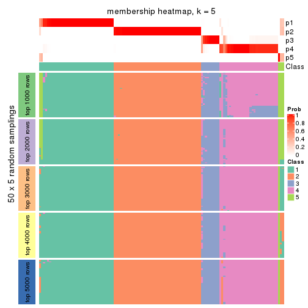
membership_heatmap(res, k = 6)
As soon as we have had the classes for columns, we can look for signatures which are significantly different between classes which can be candidate marks for certain classes. Following are the heatmaps for signatures.
Signature heatmaps where rows are scaled:
get_signatures(res, k = 2)
get_signatures(res, k = 3)

get_signatures(res, k = 4)
get_signatures(res, k = 5)
get_signatures(res, k = 6)
Signature heatmaps where rows are not scaled:
get_signatures(res, k = 2, scale_rows = FALSE)
get_signatures(res, k = 3, scale_rows = FALSE)
get_signatures(res, k = 4, scale_rows = FALSE)
get_signatures(res, k = 5, scale_rows = FALSE)
get_signatures(res, k = 6, scale_rows = FALSE)
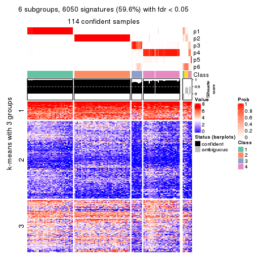
Compare the overlap of signatures from different k:
compare_signatures(res)
get_signature() returns a data frame invisibly. TO get the list of signatures, the function
call should be assigned to a variable explicitly. In following code, if plot argument is set
to FALSE, no heatmap is plotted while only the differential analysis is performed.
# code only for demonstration
tb = get_signature(res, k = ..., plot = FALSE)
An example of the output of tb is:
#> which_row fdr mean_1 mean_2 scaled_mean_1 scaled_mean_2 km
#> 1 38 0.042760348 8.373488 9.131774 -0.5533452 0.5164555 1
#> 2 40 0.018707592 7.106213 8.469186 -0.6173731 0.5762149 1
#> 3 55 0.019134737 10.221463 11.207825 -0.6159697 0.5749050 1
#> 4 59 0.006059896 5.921854 7.869574 -0.6899429 0.6439467 1
#> 5 60 0.018055526 8.928898 10.211722 -0.6204761 0.5791110 1
#> 6 98 0.009384629 15.714769 14.887706 0.6635654 -0.6193277 2
...
The columns in tb are:
which_row: row indices corresponding to the input matrix.fdr: FDR for the differential test. mean_x: The mean value in group x.scaled_mean_x: The mean value in group x after rows are scaled.km: Row groups if k-means clustering is applied to rows.UMAP plot which shows how samples are separated.
dimension_reduction(res, k = 2, method = "UMAP")
dimension_reduction(res, k = 3, method = "UMAP")
dimension_reduction(res, k = 4, method = "UMAP")
dimension_reduction(res, k = 5, method = "UMAP")
dimension_reduction(res, k = 6, method = "UMAP")
Following heatmap shows how subgroups are split when increasing k:
collect_classes(res)
If matrix rows can be associated to genes, consider to use GO_Enrichment(res,
...) to perform function enrichment for the signature genes.
The object with results only for a single top-value method and a single partition method can be extracted as:
res = res_list["SD", "mclust"]
# you can also extract it by
# res = res_list["SD:mclust"]
A summary of res and all the functions that can be applied to it:
res
#> A 'ConsensusPartition' object with k = 2, 3, 4, 5, 6.
#> On a matrix with 10145 rows and 121 columns.
#> Top rows (1000, 2000, 3000, 4000, 5000) are extracted by 'SD' method.
#> Subgroups are detected by 'mclust' method.
#> Performed in total 1250 partitions by row resampling.
#> Best k for subgroups seems to be 6.
#>
#> Following methods can be applied to this 'ConsensusPartition' object:
#> [1] "cola_report" "collect_classes" "collect_plots"
#> [4] "collect_stats" "colnames" "compare_signatures"
#> [7] "consensus_heatmap" "dimension_reduction" "functional_enrichment"
#> [10] "get_anno_col" "get_anno" "get_classes"
#> [13] "get_consensus" "get_matrix" "get_membership"
#> [16] "get_param" "get_signatures" "get_stats"
#> [19] "is_best_k" "is_stable_k" "membership_heatmap"
#> [22] "ncol" "nrow" "plot_ecdf"
#> [25] "rownames" "select_partition_number" "show"
#> [28] "suggest_best_k" "test_to_known_factors"
collect_plots() function collects all the plots made from res for all k (number of partitions)
into one single page to provide an easy and fast comparison between different k.
collect_plots(res)
The plots are:
k and the heatmap of
predicted classes for each k.k.k.k.All the plots in panels can be made by individual functions and they are plotted later in this section.
select_partition_number() produces several plots showing different
statistics for choosing “optimized” k. There are following statistics:
k;k, the area increased is defined as \(A_k - A_{k-1}\).The detailed explanations of these statistics can be found in the cola vignette.
Generally speaking, lower PAC score, higher mean silhouette score or higher
concordance corresponds to better partition. Rand index and Jaccard index
measure how similar the current partition is compared to partition with k-1.
If they are too similar, we won't accept k is better than k-1.
select_partition_number(res)
The numeric values for all these statistics can be obtained by get_stats().
get_stats(res)
#> k 1-PAC mean_silhouette concordance area_increased Rand Jaccard
#> 2 2 1.000 0.989 0.996 0.4781 0.521 0.521
#> 3 3 1.000 0.959 0.985 0.3964 0.800 0.621
#> 4 4 1.000 0.985 0.991 0.0583 0.948 0.847
#> 5 5 0.946 0.895 0.942 0.0322 0.999 0.996
#> 6 6 0.904 0.843 0.881 0.0258 0.957 0.854
suggest_best_k() suggests the best \(k\) based on these statistics. The rules are as follows:
NA.suggest_best_k(res)
#> [1] 6
#> attr(,"optional")
#> [1] 2 3 4
There is also optional best \(k\) = 2 3 4 that is worth to check.
Following shows the table of the partitions (You need to click the show/hide
code output link to see it). The membership matrix (columns with name p*)
is inferred by
clue::cl_consensus()
function with the SE method. Basically the value in the membership matrix
represents the probability to belong to a certain group. The finall class
label for an item is determined with the group with highest probability it
belongs to.
In get_classes() function, the entropy is calculated from the membership
matrix and the silhouette score is calculated from the consensus matrix.
cbind(get_classes(res, k = 2), get_membership(res, k = 2))
#> class entropy silhouette p1 p2
#> SRR2431463 1 0.000 0.999 1.000 0.000
#> SRR2431462 1 0.000 0.999 1.000 0.000
#> SRR2431461 1 0.000 0.999 1.000 0.000
#> SRR2431459 1 0.000 0.999 1.000 0.000
#> SRR2431460 1 0.000 0.999 1.000 0.000
#> SRR2431458 1 0.000 0.999 1.000 0.000
#> SRR2431457 1 0.000 0.999 1.000 0.000
#> SRR2431455 1 0.000 0.999 1.000 0.000
#> SRR2431456 1 0.000 0.999 1.000 0.000
#> SRR2431454 1 0.000 0.999 1.000 0.000
#> SRR2431453 1 0.000 0.999 1.000 0.000
#> SRR2431451 1 0.000 0.999 1.000 0.000
#> SRR2431452 1 0.000 0.999 1.000 0.000
#> SRR2431450 1 0.000 0.999 1.000 0.000
#> SRR2431449 1 0.000 0.999 1.000 0.000
#> SRR2431448 1 0.000 0.999 1.000 0.000
#> SRR2431446 1 0.000 0.999 1.000 0.000
#> SRR2431447 1 0.000 0.999 1.000 0.000
#> SRR2431445 1 0.000 0.999 1.000 0.000
#> SRR2431444 1 0.000 0.999 1.000 0.000
#> SRR2431443 1 0.000 0.999 1.000 0.000
#> SRR2431442 1 0.000 0.999 1.000 0.000
#> SRR2431441 1 0.000 0.999 1.000 0.000
#> SRR2431440 1 0.000 0.999 1.000 0.000
#> SRR2431439 1 0.000 0.999 1.000 0.000
#> SRR2431438 1 0.000 0.999 1.000 0.000
#> SRR2431437 1 0.000 0.999 1.000 0.000
#> SRR2431436 1 0.000 0.999 1.000 0.000
#> SRR2431435 1 0.000 0.999 1.000 0.000
#> SRR2431434 1 0.000 0.999 1.000 0.000
#> SRR2431433 1 0.000 0.999 1.000 0.000
#> SRR2431432 1 0.000 0.999 1.000 0.000
#> SRR2431431 1 0.000 0.999 1.000 0.000
#> SRR2431430 1 0.000 0.999 1.000 0.000
#> SRR2431429 1 0.000 0.999 1.000 0.000
#> SRR2431428 1 0.000 0.999 1.000 0.000
#> SRR2431427 2 0.000 0.991 0.000 1.000
#> SRR2431426 2 0.000 0.991 0.000 1.000
#> SRR2431425 2 0.000 0.991 0.000 1.000
#> SRR2431424 2 0.000 0.991 0.000 1.000
#> SRR2431423 2 0.000 0.991 0.000 1.000
#> SRR2431422 2 0.000 0.991 0.000 1.000
#> SRR2431421 2 0.000 0.991 0.000 1.000
#> SRR2431420 2 0.000 0.991 0.000 1.000
#> SRR2431419 2 0.000 0.991 0.000 1.000
#> SRR2431418 2 0.000 0.991 0.000 1.000
#> SRR2431417 2 0.000 0.991 0.000 1.000
#> SRR2431416 2 0.000 0.991 0.000 1.000
#> SRR2431415 2 0.000 0.991 0.000 1.000
#> SRR2431414 2 0.000 0.991 0.000 1.000
#> SRR2431413 2 0.000 0.991 0.000 1.000
#> SRR2431412 2 0.000 0.991 0.000 1.000
#> SRR2431411 2 0.987 0.238 0.432 0.568
#> SRR2431409 2 0.000 0.991 0.000 1.000
#> SRR2431410 1 0.278 0.949 0.952 0.048
#> SRR2431408 2 0.000 0.991 0.000 1.000
#> SRR2431407 2 0.000 0.991 0.000 1.000
#> SRR2431405 2 0.000 0.991 0.000 1.000
#> SRR2431406 2 0.000 0.991 0.000 1.000
#> SRR2431404 2 0.000 0.991 0.000 1.000
#> SRR2431403 2 0.000 0.991 0.000 1.000
#> SRR2431402 2 0.000 0.991 0.000 1.000
#> SRR2431401 2 0.000 0.991 0.000 1.000
#> SRR2431400 2 0.000 0.991 0.000 1.000
#> SRR2431399 2 0.000 0.991 0.000 1.000
#> SRR2431398 2 0.000 0.991 0.000 1.000
#> SRR2431397 2 0.000 0.991 0.000 1.000
#> SRR2431396 2 0.000 0.991 0.000 1.000
#> SRR2431395 2 0.000 0.991 0.000 1.000
#> SRR2431394 2 0.000 0.991 0.000 1.000
#> SRR2431393 2 0.000 0.991 0.000 1.000
#> SRR2431392 2 0.000 0.991 0.000 1.000
#> SRR2431391 2 0.000 0.991 0.000 1.000
#> SRR2431390 2 0.000 0.991 0.000 1.000
#> SRR2431389 2 0.000 0.991 0.000 1.000
#> SRR2431388 2 0.000 0.991 0.000 1.000
#> SRR2431387 2 0.000 0.991 0.000 1.000
#> SRR2431386 2 0.000 0.991 0.000 1.000
#> SRR2431385 2 0.000 0.991 0.000 1.000
#> SRR2431383 2 0.000 0.991 0.000 1.000
#> SRR2431384 2 0.000 0.991 0.000 1.000
#> SRR2431382 2 0.000 0.991 0.000 1.000
#> SRR2431381 2 0.000 0.991 0.000 1.000
#> SRR2431380 2 0.000 0.991 0.000 1.000
#> SRR2431379 1 0.000 0.999 1.000 0.000
#> SRR2431378 1 0.000 0.999 1.000 0.000
#> SRR2431376 1 0.000 0.999 1.000 0.000
#> SRR2431377 1 0.000 0.999 1.000 0.000
#> SRR2431375 1 0.000 0.999 1.000 0.000
#> SRR2431374 1 0.000 0.999 1.000 0.000
#> SRR2431372 1 0.000 0.999 1.000 0.000
#> SRR2431371 1 0.000 0.999 1.000 0.000
#> SRR2431373 1 0.000 0.999 1.000 0.000
#> SRR2431370 1 0.000 0.999 1.000 0.000
#> SRR2431369 1 0.000 0.999 1.000 0.000
#> SRR2431368 1 0.000 0.999 1.000 0.000
#> SRR2431367 1 0.000 0.999 1.000 0.000
#> SRR2431366 1 0.000 0.999 1.000 0.000
#> SRR2431365 1 0.000 0.999 1.000 0.000
#> SRR2431364 1 0.000 0.999 1.000 0.000
#> SRR2431363 1 0.000 0.999 1.000 0.000
#> SRR2431361 1 0.000 0.999 1.000 0.000
#> SRR2431362 1 0.000 0.999 1.000 0.000
#> SRR2431360 1 0.000 0.999 1.000 0.000
#> SRR2431359 1 0.000 0.999 1.000 0.000
#> SRR2431358 1 0.000 0.999 1.000 0.000
#> SRR2431357 1 0.000 0.999 1.000 0.000
#> SRR2431355 1 0.000 0.999 1.000 0.000
#> SRR2431356 1 0.000 0.999 1.000 0.000
#> SRR2431354 1 0.000 0.999 1.000 0.000
#> SRR2431353 1 0.000 0.999 1.000 0.000
#> SRR2431352 1 0.000 0.999 1.000 0.000
#> SRR2431351 1 0.000 0.999 1.000 0.000
#> SRR2431350 1 0.000 0.999 1.000 0.000
#> SRR2431349 1 0.000 0.999 1.000 0.000
#> SRR2431348 1 0.000 0.999 1.000 0.000
#> SRR2431347 1 0.000 0.999 1.000 0.000
#> SRR2431346 1 0.000 0.999 1.000 0.000
#> SRR2431345 1 0.000 0.999 1.000 0.000
#> SRR2431344 1 0.000 0.999 1.000 0.000
#> SRR2431343 1 0.000 0.999 1.000 0.000
cbind(get_classes(res, k = 3), get_membership(res, k = 3))
#> class entropy silhouette p1 p2 p3
#> SRR2431463 1 0.000 1.0000 1.000 0.000 0.000
#> SRR2431462 1 0.000 1.0000 1.000 0.000 0.000
#> SRR2431461 1 0.000 1.0000 1.000 0.000 0.000
#> SRR2431459 1 0.000 1.0000 1.000 0.000 0.000
#> SRR2431460 1 0.000 1.0000 1.000 0.000 0.000
#> SRR2431458 1 0.000 1.0000 1.000 0.000 0.000
#> SRR2431457 1 0.000 1.0000 1.000 0.000 0.000
#> SRR2431455 1 0.000 1.0000 1.000 0.000 0.000
#> SRR2431456 1 0.000 1.0000 1.000 0.000 0.000
#> SRR2431454 1 0.000 1.0000 1.000 0.000 0.000
#> SRR2431453 1 0.000 1.0000 1.000 0.000 0.000
#> SRR2431451 1 0.000 1.0000 1.000 0.000 0.000
#> SRR2431452 3 0.630 0.1164 0.480 0.000 0.520
#> SRR2431450 1 0.000 1.0000 1.000 0.000 0.000
#> SRR2431449 1 0.000 1.0000 1.000 0.000 0.000
#> SRR2431448 1 0.000 1.0000 1.000 0.000 0.000
#> SRR2431446 1 0.000 1.0000 1.000 0.000 0.000
#> SRR2431447 1 0.000 1.0000 1.000 0.000 0.000
#> SRR2431445 1 0.000 1.0000 1.000 0.000 0.000
#> SRR2431444 1 0.000 1.0000 1.000 0.000 0.000
#> SRR2431443 1 0.000 1.0000 1.000 0.000 0.000
#> SRR2431442 1 0.000 1.0000 1.000 0.000 0.000
#> SRR2431441 1 0.000 1.0000 1.000 0.000 0.000
#> SRR2431440 1 0.000 1.0000 1.000 0.000 0.000
#> SRR2431439 1 0.000 1.0000 1.000 0.000 0.000
#> SRR2431438 1 0.000 1.0000 1.000 0.000 0.000
#> SRR2431437 1 0.000 1.0000 1.000 0.000 0.000
#> SRR2431436 1 0.000 1.0000 1.000 0.000 0.000
#> SRR2431435 1 0.000 1.0000 1.000 0.000 0.000
#> SRR2431434 1 0.000 1.0000 1.000 0.000 0.000
#> SRR2431433 1 0.000 1.0000 1.000 0.000 0.000
#> SRR2431432 1 0.000 1.0000 1.000 0.000 0.000
#> SRR2431431 1 0.000 1.0000 1.000 0.000 0.000
#> SRR2431430 1 0.000 1.0000 1.000 0.000 0.000
#> SRR2431429 1 0.000 1.0000 1.000 0.000 0.000
#> SRR2431428 1 0.000 1.0000 1.000 0.000 0.000
#> SRR2431427 2 0.000 1.0000 0.000 1.000 0.000
#> SRR2431426 2 0.000 1.0000 0.000 1.000 0.000
#> SRR2431425 2 0.000 1.0000 0.000 1.000 0.000
#> SRR2431424 2 0.000 1.0000 0.000 1.000 0.000
#> SRR2431423 2 0.000 1.0000 0.000 1.000 0.000
#> SRR2431422 2 0.000 1.0000 0.000 1.000 0.000
#> SRR2431421 2 0.000 1.0000 0.000 1.000 0.000
#> SRR2431420 2 0.000 1.0000 0.000 1.000 0.000
#> SRR2431419 2 0.000 1.0000 0.000 1.000 0.000
#> SRR2431418 2 0.000 1.0000 0.000 1.000 0.000
#> SRR2431417 2 0.000 1.0000 0.000 1.000 0.000
#> SRR2431416 2 0.000 1.0000 0.000 1.000 0.000
#> SRR2431415 2 0.000 1.0000 0.000 1.000 0.000
#> SRR2431414 2 0.000 1.0000 0.000 1.000 0.000
#> SRR2431413 2 0.000 1.0000 0.000 1.000 0.000
#> SRR2431412 2 0.000 1.0000 0.000 1.000 0.000
#> SRR2431411 3 0.631 0.0529 0.000 0.496 0.504
#> SRR2431409 2 0.000 1.0000 0.000 1.000 0.000
#> SRR2431410 3 0.599 0.4282 0.000 0.368 0.632
#> SRR2431408 2 0.000 1.0000 0.000 1.000 0.000
#> SRR2431407 2 0.000 1.0000 0.000 1.000 0.000
#> SRR2431405 2 0.000 1.0000 0.000 1.000 0.000
#> SRR2431406 2 0.000 1.0000 0.000 1.000 0.000
#> SRR2431404 2 0.000 1.0000 0.000 1.000 0.000
#> SRR2431403 2 0.000 1.0000 0.000 1.000 0.000
#> SRR2431402 2 0.000 1.0000 0.000 1.000 0.000
#> SRR2431401 2 0.000 1.0000 0.000 1.000 0.000
#> SRR2431400 2 0.000 1.0000 0.000 1.000 0.000
#> SRR2431399 2 0.000 1.0000 0.000 1.000 0.000
#> SRR2431398 2 0.000 1.0000 0.000 1.000 0.000
#> SRR2431397 2 0.000 1.0000 0.000 1.000 0.000
#> SRR2431396 2 0.000 1.0000 0.000 1.000 0.000
#> SRR2431395 2 0.000 1.0000 0.000 1.000 0.000
#> SRR2431394 2 0.000 1.0000 0.000 1.000 0.000
#> SRR2431393 2 0.000 1.0000 0.000 1.000 0.000
#> SRR2431392 2 0.000 1.0000 0.000 1.000 0.000
#> SRR2431391 2 0.000 1.0000 0.000 1.000 0.000
#> SRR2431390 2 0.000 1.0000 0.000 1.000 0.000
#> SRR2431389 2 0.000 1.0000 0.000 1.000 0.000
#> SRR2431388 2 0.000 1.0000 0.000 1.000 0.000
#> SRR2431387 2 0.000 1.0000 0.000 1.000 0.000
#> SRR2431386 2 0.000 1.0000 0.000 1.000 0.000
#> SRR2431385 2 0.000 1.0000 0.000 1.000 0.000
#> SRR2431383 2 0.000 1.0000 0.000 1.000 0.000
#> SRR2431384 2 0.000 1.0000 0.000 1.000 0.000
#> SRR2431382 2 0.000 1.0000 0.000 1.000 0.000
#> SRR2431381 2 0.000 1.0000 0.000 1.000 0.000
#> SRR2431380 2 0.000 1.0000 0.000 1.000 0.000
#> SRR2431379 3 0.000 0.9507 0.000 0.000 1.000
#> SRR2431378 3 0.000 0.9507 0.000 0.000 1.000
#> SRR2431376 3 0.000 0.9507 0.000 0.000 1.000
#> SRR2431377 3 0.000 0.9507 0.000 0.000 1.000
#> SRR2431375 3 0.000 0.9507 0.000 0.000 1.000
#> SRR2431374 3 0.000 0.9507 0.000 0.000 1.000
#> SRR2431372 3 0.000 0.9507 0.000 0.000 1.000
#> SRR2431371 3 0.000 0.9507 0.000 0.000 1.000
#> SRR2431373 3 0.000 0.9507 0.000 0.000 1.000
#> SRR2431370 3 0.000 0.9507 0.000 0.000 1.000
#> SRR2431369 3 0.000 0.9507 0.000 0.000 1.000
#> SRR2431368 3 0.000 0.9507 0.000 0.000 1.000
#> SRR2431367 3 0.000 0.9507 0.000 0.000 1.000
#> SRR2431366 3 0.000 0.9507 0.000 0.000 1.000
#> SRR2431365 3 0.000 0.9507 0.000 0.000 1.000
#> SRR2431364 3 0.000 0.9507 0.000 0.000 1.000
#> SRR2431363 3 0.000 0.9507 0.000 0.000 1.000
#> SRR2431361 3 0.000 0.9507 0.000 0.000 1.000
#> SRR2431362 3 0.000 0.9507 0.000 0.000 1.000
#> SRR2431360 3 0.000 0.9507 0.000 0.000 1.000
#> SRR2431359 3 0.000 0.9507 0.000 0.000 1.000
#> SRR2431358 3 0.618 0.3104 0.416 0.000 0.584
#> SRR2431357 3 0.000 0.9507 0.000 0.000 1.000
#> SRR2431355 3 0.000 0.9507 0.000 0.000 1.000
#> SRR2431356 3 0.000 0.9507 0.000 0.000 1.000
#> SRR2431354 3 0.000 0.9507 0.000 0.000 1.000
#> SRR2431353 3 0.000 0.9507 0.000 0.000 1.000
#> SRR2431352 3 0.000 0.9507 0.000 0.000 1.000
#> SRR2431351 3 0.000 0.9507 0.000 0.000 1.000
#> SRR2431350 3 0.000 0.9507 0.000 0.000 1.000
#> SRR2431349 3 0.000 0.9507 0.000 0.000 1.000
#> SRR2431348 3 0.000 0.9507 0.000 0.000 1.000
#> SRR2431347 3 0.000 0.9507 0.000 0.000 1.000
#> SRR2431346 3 0.000 0.9507 0.000 0.000 1.000
#> SRR2431345 3 0.000 0.9507 0.000 0.000 1.000
#> SRR2431344 3 0.280 0.8638 0.092 0.000 0.908
#> SRR2431343 3 0.000 0.9507 0.000 0.000 1.000
cbind(get_classes(res, k = 4), get_membership(res, k = 4))
#> class entropy silhouette p1 p2 p3 p4
#> SRR2431463 1 0.0000 1.000 1.000 0.000 0.000 0.000
#> SRR2431462 1 0.0000 1.000 1.000 0.000 0.000 0.000
#> SRR2431461 1 0.0000 1.000 1.000 0.000 0.000 0.000
#> SRR2431459 1 0.0000 1.000 1.000 0.000 0.000 0.000
#> SRR2431460 1 0.0000 1.000 1.000 0.000 0.000 0.000
#> SRR2431458 1 0.0000 1.000 1.000 0.000 0.000 0.000
#> SRR2431457 1 0.0000 1.000 1.000 0.000 0.000 0.000
#> SRR2431455 1 0.0000 1.000 1.000 0.000 0.000 0.000
#> SRR2431456 1 0.0000 1.000 1.000 0.000 0.000 0.000
#> SRR2431454 1 0.0000 1.000 1.000 0.000 0.000 0.000
#> SRR2431453 1 0.0000 1.000 1.000 0.000 0.000 0.000
#> SRR2431451 1 0.0000 1.000 1.000 0.000 0.000 0.000
#> SRR2431452 4 0.4164 0.651 0.264 0.000 0.000 0.736
#> SRR2431450 1 0.0188 0.996 0.996 0.000 0.000 0.004
#> SRR2431449 1 0.0000 1.000 1.000 0.000 0.000 0.000
#> SRR2431448 1 0.0000 1.000 1.000 0.000 0.000 0.000
#> SRR2431446 1 0.0000 1.000 1.000 0.000 0.000 0.000
#> SRR2431447 1 0.0000 1.000 1.000 0.000 0.000 0.000
#> SRR2431445 1 0.0000 1.000 1.000 0.000 0.000 0.000
#> SRR2431444 1 0.0000 1.000 1.000 0.000 0.000 0.000
#> SRR2431443 1 0.0188 0.996 0.996 0.000 0.000 0.004
#> SRR2431442 1 0.0000 1.000 1.000 0.000 0.000 0.000
#> SRR2431441 1 0.0000 1.000 1.000 0.000 0.000 0.000
#> SRR2431440 1 0.0000 1.000 1.000 0.000 0.000 0.000
#> SRR2431439 1 0.0000 1.000 1.000 0.000 0.000 0.000
#> SRR2431438 1 0.0000 1.000 1.000 0.000 0.000 0.000
#> SRR2431437 1 0.0000 1.000 1.000 0.000 0.000 0.000
#> SRR2431436 1 0.0000 1.000 1.000 0.000 0.000 0.000
#> SRR2431435 1 0.0000 1.000 1.000 0.000 0.000 0.000
#> SRR2431434 1 0.0000 1.000 1.000 0.000 0.000 0.000
#> SRR2431433 1 0.0000 1.000 1.000 0.000 0.000 0.000
#> SRR2431432 1 0.0000 1.000 1.000 0.000 0.000 0.000
#> SRR2431431 1 0.0000 1.000 1.000 0.000 0.000 0.000
#> SRR2431430 1 0.0000 1.000 1.000 0.000 0.000 0.000
#> SRR2431429 1 0.0000 1.000 1.000 0.000 0.000 0.000
#> SRR2431428 1 0.0188 0.996 0.996 0.000 0.000 0.004
#> SRR2431427 2 0.0000 0.993 0.000 1.000 0.000 0.000
#> SRR2431426 2 0.0000 0.993 0.000 1.000 0.000 0.000
#> SRR2431425 2 0.0000 0.993 0.000 1.000 0.000 0.000
#> SRR2431424 2 0.0000 0.993 0.000 1.000 0.000 0.000
#> SRR2431423 2 0.0000 0.993 0.000 1.000 0.000 0.000
#> SRR2431422 2 0.0000 0.993 0.000 1.000 0.000 0.000
#> SRR2431421 2 0.0707 0.982 0.000 0.980 0.000 0.020
#> SRR2431420 2 0.0000 0.993 0.000 1.000 0.000 0.000
#> SRR2431419 2 0.0000 0.993 0.000 1.000 0.000 0.000
#> SRR2431418 2 0.0000 0.993 0.000 1.000 0.000 0.000
#> SRR2431417 2 0.0000 0.993 0.000 1.000 0.000 0.000
#> SRR2431416 2 0.0000 0.993 0.000 1.000 0.000 0.000
#> SRR2431415 2 0.0000 0.993 0.000 1.000 0.000 0.000
#> SRR2431414 2 0.0000 0.993 0.000 1.000 0.000 0.000
#> SRR2431413 2 0.0336 0.989 0.000 0.992 0.000 0.008
#> SRR2431412 2 0.0000 0.993 0.000 1.000 0.000 0.000
#> SRR2431411 2 0.3074 0.833 0.000 0.848 0.000 0.152
#> SRR2431409 2 0.0000 0.993 0.000 1.000 0.000 0.000
#> SRR2431410 4 0.1209 0.904 0.004 0.032 0.000 0.964
#> SRR2431408 2 0.0336 0.989 0.000 0.992 0.000 0.008
#> SRR2431407 2 0.0000 0.993 0.000 1.000 0.000 0.000
#> SRR2431405 2 0.0336 0.989 0.000 0.992 0.000 0.008
#> SRR2431406 2 0.0000 0.993 0.000 1.000 0.000 0.000
#> SRR2431404 2 0.0000 0.993 0.000 1.000 0.000 0.000
#> SRR2431403 2 0.0000 0.993 0.000 1.000 0.000 0.000
#> SRR2431402 2 0.0707 0.982 0.000 0.980 0.000 0.020
#> SRR2431401 2 0.0000 0.993 0.000 1.000 0.000 0.000
#> SRR2431400 2 0.0000 0.993 0.000 1.000 0.000 0.000
#> SRR2431399 2 0.0000 0.993 0.000 1.000 0.000 0.000
#> SRR2431398 2 0.0000 0.993 0.000 1.000 0.000 0.000
#> SRR2431397 2 0.0000 0.993 0.000 1.000 0.000 0.000
#> SRR2431396 2 0.0817 0.979 0.000 0.976 0.000 0.024
#> SRR2431395 2 0.0000 0.993 0.000 1.000 0.000 0.000
#> SRR2431394 2 0.0000 0.993 0.000 1.000 0.000 0.000
#> SRR2431393 2 0.0000 0.993 0.000 1.000 0.000 0.000
#> SRR2431392 2 0.0000 0.993 0.000 1.000 0.000 0.000
#> SRR2431391 2 0.0000 0.993 0.000 1.000 0.000 0.000
#> SRR2431390 2 0.0000 0.993 0.000 1.000 0.000 0.000
#> SRR2431389 2 0.0000 0.993 0.000 1.000 0.000 0.000
#> SRR2431388 2 0.0592 0.984 0.000 0.984 0.000 0.016
#> SRR2431387 2 0.0817 0.979 0.000 0.976 0.000 0.024
#> SRR2431386 2 0.0000 0.993 0.000 1.000 0.000 0.000
#> SRR2431385 2 0.0817 0.979 0.000 0.976 0.000 0.024
#> SRR2431383 2 0.0336 0.989 0.000 0.992 0.000 0.008
#> SRR2431384 2 0.0000 0.993 0.000 1.000 0.000 0.000
#> SRR2431382 2 0.0000 0.993 0.000 1.000 0.000 0.000
#> SRR2431381 2 0.0000 0.993 0.000 1.000 0.000 0.000
#> SRR2431380 2 0.0707 0.982 0.000 0.980 0.000 0.020
#> SRR2431379 3 0.0000 0.998 0.000 0.000 1.000 0.000
#> SRR2431378 3 0.0000 0.998 0.000 0.000 1.000 0.000
#> SRR2431376 3 0.0000 0.998 0.000 0.000 1.000 0.000
#> SRR2431377 3 0.0336 0.991 0.000 0.000 0.992 0.008
#> SRR2431375 3 0.0000 0.998 0.000 0.000 1.000 0.000
#> SRR2431374 4 0.1022 0.940 0.000 0.000 0.032 0.968
#> SRR2431372 3 0.0000 0.998 0.000 0.000 1.000 0.000
#> SRR2431371 3 0.0000 0.998 0.000 0.000 1.000 0.000
#> SRR2431373 3 0.0000 0.998 0.000 0.000 1.000 0.000
#> SRR2431370 3 0.0000 0.998 0.000 0.000 1.000 0.000
#> SRR2431369 3 0.0000 0.998 0.000 0.000 1.000 0.000
#> SRR2431368 3 0.0000 0.998 0.000 0.000 1.000 0.000
#> SRR2431367 3 0.0000 0.998 0.000 0.000 1.000 0.000
#> SRR2431366 3 0.0188 0.994 0.000 0.000 0.996 0.004
#> SRR2431365 3 0.1389 0.948 0.000 0.000 0.952 0.048
#> SRR2431364 3 0.0000 0.998 0.000 0.000 1.000 0.000
#> SRR2431363 3 0.0000 0.998 0.000 0.000 1.000 0.000
#> SRR2431361 3 0.0000 0.998 0.000 0.000 1.000 0.000
#> SRR2431362 3 0.0000 0.998 0.000 0.000 1.000 0.000
#> SRR2431360 3 0.0000 0.998 0.000 0.000 1.000 0.000
#> SRR2431359 3 0.0000 0.998 0.000 0.000 1.000 0.000
#> SRR2431358 4 0.3708 0.823 0.148 0.000 0.020 0.832
#> SRR2431357 4 0.1022 0.940 0.000 0.000 0.032 0.968
#> SRR2431355 4 0.1022 0.940 0.000 0.000 0.032 0.968
#> SRR2431356 3 0.0000 0.998 0.000 0.000 1.000 0.000
#> SRR2431354 3 0.0000 0.998 0.000 0.000 1.000 0.000
#> SRR2431353 4 0.1022 0.940 0.000 0.000 0.032 0.968
#> SRR2431352 4 0.1022 0.940 0.000 0.000 0.032 0.968
#> SRR2431351 3 0.0000 0.998 0.000 0.000 1.000 0.000
#> SRR2431350 3 0.0000 0.998 0.000 0.000 1.000 0.000
#> SRR2431349 3 0.0000 0.998 0.000 0.000 1.000 0.000
#> SRR2431348 3 0.0000 0.998 0.000 0.000 1.000 0.000
#> SRR2431347 3 0.0000 0.998 0.000 0.000 1.000 0.000
#> SRR2431346 3 0.0000 0.998 0.000 0.000 1.000 0.000
#> SRR2431345 3 0.0000 0.998 0.000 0.000 1.000 0.000
#> SRR2431344 4 0.0921 0.939 0.000 0.000 0.028 0.972
#> SRR2431343 4 0.1022 0.940 0.000 0.000 0.032 0.968
cbind(get_classes(res, k = 5), get_membership(res, k = 5))
#> class entropy silhouette p1 p2 p3 p4 p5
#> SRR2431463 1 0.1197 0.8681 0.952 0.000 0.000 0.000 0.048
#> SRR2431462 1 0.1851 0.8561 0.912 0.000 0.000 0.000 0.088
#> SRR2431461 1 0.1851 0.8607 0.912 0.000 0.000 0.000 0.088
#> SRR2431459 1 0.1732 0.8643 0.920 0.000 0.000 0.000 0.080
#> SRR2431460 1 0.1410 0.8675 0.940 0.000 0.000 0.000 0.060
#> SRR2431458 1 0.1792 0.8614 0.916 0.000 0.000 0.000 0.084
#> SRR2431457 1 0.1965 0.8465 0.904 0.000 0.000 0.000 0.096
#> SRR2431455 1 0.1671 0.8574 0.924 0.000 0.000 0.000 0.076
#> SRR2431456 1 0.1965 0.8542 0.904 0.000 0.000 0.000 0.096
#> SRR2431454 1 0.4161 0.4743 0.608 0.000 0.000 0.000 0.392
#> SRR2431453 1 0.1851 0.8491 0.912 0.000 0.000 0.000 0.088
#> SRR2431451 1 0.2280 0.8478 0.880 0.000 0.000 0.000 0.120
#> SRR2431452 5 0.6041 0.0000 0.128 0.000 0.000 0.356 0.516
#> SRR2431450 1 0.2719 0.8246 0.852 0.000 0.000 0.004 0.144
#> SRR2431449 1 0.1732 0.8653 0.920 0.000 0.000 0.000 0.080
#> SRR2431448 1 0.1671 0.8615 0.924 0.000 0.000 0.000 0.076
#> SRR2431446 1 0.1732 0.8638 0.920 0.000 0.000 0.000 0.080
#> SRR2431447 1 0.1792 0.8621 0.916 0.000 0.000 0.000 0.084
#> SRR2431445 1 0.2074 0.8459 0.896 0.000 0.000 0.000 0.104
#> SRR2431444 1 0.4304 0.2216 0.516 0.000 0.000 0.000 0.484
#> SRR2431443 1 0.1671 0.8657 0.924 0.000 0.000 0.000 0.076
#> SRR2431442 1 0.2329 0.8344 0.876 0.000 0.000 0.000 0.124
#> SRR2431441 1 0.2230 0.8372 0.884 0.000 0.000 0.000 0.116
#> SRR2431440 1 0.2179 0.8506 0.888 0.000 0.000 0.000 0.112
#> SRR2431439 1 0.2329 0.8506 0.876 0.000 0.000 0.000 0.124
#> SRR2431438 1 0.2074 0.8432 0.896 0.000 0.000 0.000 0.104
#> SRR2431437 1 0.2280 0.8563 0.880 0.000 0.000 0.000 0.120
#> SRR2431436 1 0.4297 0.2627 0.528 0.000 0.000 0.000 0.472
#> SRR2431435 1 0.2329 0.8453 0.876 0.000 0.000 0.000 0.124
#> SRR2431434 1 0.1410 0.8671 0.940 0.000 0.000 0.000 0.060
#> SRR2431433 1 0.1671 0.8624 0.924 0.000 0.000 0.000 0.076
#> SRR2431432 1 0.1851 0.8587 0.912 0.000 0.000 0.000 0.088
#> SRR2431431 1 0.3932 0.6104 0.672 0.000 0.000 0.000 0.328
#> SRR2431430 1 0.1270 0.8696 0.948 0.000 0.000 0.000 0.052
#> SRR2431429 1 0.1544 0.8655 0.932 0.000 0.000 0.000 0.068
#> SRR2431428 1 0.2074 0.8610 0.896 0.000 0.000 0.000 0.104
#> SRR2431427 2 0.0000 0.9760 0.000 1.000 0.000 0.000 0.000
#> SRR2431426 2 0.0000 0.9760 0.000 1.000 0.000 0.000 0.000
#> SRR2431425 2 0.0000 0.9760 0.000 1.000 0.000 0.000 0.000
#> SRR2431424 2 0.0000 0.9760 0.000 1.000 0.000 0.000 0.000
#> SRR2431423 2 0.0000 0.9760 0.000 1.000 0.000 0.000 0.000
#> SRR2431422 2 0.0000 0.9760 0.000 1.000 0.000 0.000 0.000
#> SRR2431421 2 0.1704 0.9363 0.000 0.928 0.000 0.004 0.068
#> SRR2431420 2 0.0000 0.9760 0.000 1.000 0.000 0.000 0.000
#> SRR2431419 2 0.0000 0.9760 0.000 1.000 0.000 0.000 0.000
#> SRR2431418 2 0.0290 0.9743 0.000 0.992 0.000 0.000 0.008
#> SRR2431417 2 0.0000 0.9760 0.000 1.000 0.000 0.000 0.000
#> SRR2431416 2 0.0000 0.9760 0.000 1.000 0.000 0.000 0.000
#> SRR2431415 2 0.0000 0.9760 0.000 1.000 0.000 0.000 0.000
#> SRR2431414 2 0.0000 0.9760 0.000 1.000 0.000 0.000 0.000
#> SRR2431413 2 0.1544 0.9387 0.000 0.932 0.000 0.000 0.068
#> SRR2431412 2 0.0000 0.9760 0.000 1.000 0.000 0.000 0.000
#> SRR2431411 2 0.6075 0.1795 0.000 0.512 0.000 0.132 0.356
#> SRR2431409 2 0.0162 0.9753 0.000 0.996 0.000 0.000 0.004
#> SRR2431410 4 0.4675 0.0422 0.000 0.020 0.000 0.600 0.380
#> SRR2431408 2 0.0609 0.9694 0.000 0.980 0.000 0.000 0.020
#> SRR2431407 2 0.0703 0.9670 0.000 0.976 0.000 0.000 0.024
#> SRR2431405 2 0.1410 0.9450 0.000 0.940 0.000 0.000 0.060
#> SRR2431406 2 0.0000 0.9760 0.000 1.000 0.000 0.000 0.000
#> SRR2431404 2 0.0510 0.9712 0.000 0.984 0.000 0.000 0.016
#> SRR2431403 2 0.0000 0.9760 0.000 1.000 0.000 0.000 0.000
#> SRR2431402 2 0.0324 0.9745 0.000 0.992 0.000 0.004 0.004
#> SRR2431401 2 0.0290 0.9743 0.000 0.992 0.000 0.000 0.008
#> SRR2431400 2 0.0000 0.9760 0.000 1.000 0.000 0.000 0.000
#> SRR2431399 2 0.0609 0.9691 0.000 0.980 0.000 0.000 0.020
#> SRR2431398 2 0.0000 0.9760 0.000 1.000 0.000 0.000 0.000
#> SRR2431397 2 0.0000 0.9760 0.000 1.000 0.000 0.000 0.000
#> SRR2431396 2 0.1768 0.9330 0.000 0.924 0.000 0.004 0.072
#> SRR2431395 2 0.0162 0.9753 0.000 0.996 0.000 0.000 0.004
#> SRR2431394 2 0.0000 0.9760 0.000 1.000 0.000 0.000 0.000
#> SRR2431393 2 0.0162 0.9753 0.000 0.996 0.000 0.000 0.004
#> SRR2431392 2 0.0162 0.9753 0.000 0.996 0.000 0.000 0.004
#> SRR2431391 2 0.0000 0.9760 0.000 1.000 0.000 0.000 0.000
#> SRR2431390 2 0.0162 0.9753 0.000 0.996 0.000 0.000 0.004
#> SRR2431389 2 0.0000 0.9760 0.000 1.000 0.000 0.000 0.000
#> SRR2431388 2 0.0324 0.9745 0.000 0.992 0.000 0.004 0.004
#> SRR2431387 2 0.1704 0.9360 0.000 0.928 0.000 0.004 0.068
#> SRR2431386 2 0.0000 0.9760 0.000 1.000 0.000 0.000 0.000
#> SRR2431385 2 0.1952 0.9222 0.000 0.912 0.000 0.004 0.084
#> SRR2431383 2 0.1478 0.9415 0.000 0.936 0.000 0.000 0.064
#> SRR2431384 2 0.0510 0.9710 0.000 0.984 0.000 0.000 0.016
#> SRR2431382 2 0.0000 0.9760 0.000 1.000 0.000 0.000 0.000
#> SRR2431381 2 0.0162 0.9753 0.000 0.996 0.000 0.000 0.004
#> SRR2431380 2 0.1478 0.9415 0.000 0.936 0.000 0.000 0.064
#> SRR2431379 3 0.0000 0.9910 0.000 0.000 1.000 0.000 0.000
#> SRR2431378 3 0.0162 0.9907 0.000 0.000 0.996 0.000 0.004
#> SRR2431376 3 0.0162 0.9907 0.000 0.000 0.996 0.000 0.004
#> SRR2431377 3 0.1408 0.9486 0.000 0.000 0.948 0.044 0.008
#> SRR2431375 3 0.0290 0.9872 0.000 0.000 0.992 0.000 0.008
#> SRR2431374 4 0.0162 0.8931 0.000 0.000 0.004 0.996 0.000
#> SRR2431372 3 0.0404 0.9848 0.000 0.000 0.988 0.000 0.012
#> SRR2431371 3 0.0162 0.9907 0.000 0.000 0.996 0.000 0.004
#> SRR2431373 3 0.0000 0.9910 0.000 0.000 1.000 0.000 0.000
#> SRR2431370 3 0.0162 0.9907 0.000 0.000 0.996 0.000 0.004
#> SRR2431369 3 0.0162 0.9907 0.000 0.000 0.996 0.000 0.004
#> SRR2431368 3 0.0000 0.9910 0.000 0.000 1.000 0.000 0.000
#> SRR2431367 3 0.0000 0.9910 0.000 0.000 1.000 0.000 0.000
#> SRR2431366 3 0.0865 0.9710 0.000 0.000 0.972 0.024 0.004
#> SRR2431365 3 0.1952 0.9042 0.000 0.000 0.912 0.084 0.004
#> SRR2431364 3 0.0000 0.9910 0.000 0.000 1.000 0.000 0.000
#> SRR2431363 3 0.0000 0.9910 0.000 0.000 1.000 0.000 0.000
#> SRR2431361 3 0.0162 0.9907 0.000 0.000 0.996 0.000 0.004
#> SRR2431362 3 0.0404 0.9848 0.000 0.000 0.988 0.000 0.012
#> SRR2431360 3 0.0000 0.9910 0.000 0.000 1.000 0.000 0.000
#> SRR2431359 3 0.0000 0.9910 0.000 0.000 1.000 0.000 0.000
#> SRR2431358 4 0.3130 0.6550 0.048 0.000 0.000 0.856 0.096
#> SRR2431357 4 0.0162 0.8931 0.000 0.000 0.004 0.996 0.000
#> SRR2431355 4 0.0162 0.8931 0.000 0.000 0.004 0.996 0.000
#> SRR2431356 3 0.0000 0.9910 0.000 0.000 1.000 0.000 0.000
#> SRR2431354 3 0.0000 0.9910 0.000 0.000 1.000 0.000 0.000
#> SRR2431353 4 0.0162 0.8931 0.000 0.000 0.004 0.996 0.000
#> SRR2431352 4 0.0162 0.8931 0.000 0.000 0.004 0.996 0.000
#> SRR2431351 3 0.0000 0.9910 0.000 0.000 1.000 0.000 0.000
#> SRR2431350 3 0.0162 0.9907 0.000 0.000 0.996 0.000 0.004
#> SRR2431349 3 0.0000 0.9910 0.000 0.000 1.000 0.000 0.000
#> SRR2431348 3 0.0162 0.9907 0.000 0.000 0.996 0.000 0.004
#> SRR2431347 3 0.0162 0.9907 0.000 0.000 0.996 0.000 0.004
#> SRR2431346 3 0.0162 0.9907 0.000 0.000 0.996 0.000 0.004
#> SRR2431345 3 0.0404 0.9849 0.000 0.000 0.988 0.000 0.012
#> SRR2431344 4 0.0162 0.8931 0.000 0.000 0.004 0.996 0.000
#> SRR2431343 4 0.0324 0.8891 0.000 0.000 0.004 0.992 0.004
cbind(get_classes(res, k = 6), get_membership(res, k = 6))
#> class entropy silhouette p1 p2 p3 p4 p5 p6
#> SRR2431463 1 0.0713 0.8916 0.972 0.000 0.000 0.000 0.000 0.028
#> SRR2431462 1 0.1910 0.8684 0.892 0.000 0.000 0.000 0.000 0.108
#> SRR2431461 1 0.1524 0.8672 0.932 0.000 0.000 0.000 0.008 0.060
#> SRR2431459 1 0.1610 0.8803 0.916 0.000 0.000 0.000 0.000 0.084
#> SRR2431460 1 0.1007 0.8906 0.956 0.000 0.000 0.000 0.000 0.044
#> SRR2431458 1 0.1049 0.8836 0.960 0.000 0.000 0.000 0.008 0.032
#> SRR2431457 1 0.1863 0.8674 0.896 0.000 0.000 0.000 0.000 0.104
#> SRR2431455 1 0.1663 0.8764 0.912 0.000 0.000 0.000 0.000 0.088
#> SRR2431456 1 0.1556 0.8809 0.920 0.000 0.000 0.000 0.000 0.080
#> SRR2431454 1 0.4062 0.0291 0.552 0.000 0.000 0.000 0.008 0.440
#> SRR2431453 1 0.1863 0.8710 0.896 0.000 0.000 0.000 0.000 0.104
#> SRR2431451 1 0.1265 0.8774 0.948 0.000 0.000 0.000 0.008 0.044
#> SRR2431452 6 0.4606 0.3511 0.100 0.000 0.000 0.044 0.108 0.748
#> SRR2431450 1 0.1531 0.8620 0.928 0.000 0.000 0.004 0.000 0.068
#> SRR2431449 1 0.1007 0.8916 0.956 0.000 0.000 0.000 0.000 0.044
#> SRR2431448 1 0.1196 0.8910 0.952 0.000 0.000 0.000 0.008 0.040
#> SRR2431446 1 0.1462 0.8695 0.936 0.000 0.000 0.000 0.008 0.056
#> SRR2431447 1 0.1049 0.8878 0.960 0.000 0.000 0.000 0.008 0.032
#> SRR2431445 1 0.1814 0.8704 0.900 0.000 0.000 0.000 0.000 0.100
#> SRR2431444 1 0.3868 -0.1702 0.504 0.000 0.000 0.000 0.000 0.496
#> SRR2431443 1 0.0865 0.8803 0.964 0.000 0.000 0.000 0.000 0.036
#> SRR2431442 1 0.1765 0.8726 0.904 0.000 0.000 0.000 0.000 0.096
#> SRR2431441 1 0.1863 0.8674 0.896 0.000 0.000 0.000 0.000 0.104
#> SRR2431440 1 0.1462 0.8710 0.936 0.000 0.000 0.000 0.008 0.056
#> SRR2431439 1 0.1327 0.8689 0.936 0.000 0.000 0.000 0.000 0.064
#> SRR2431438 1 0.1863 0.8674 0.896 0.000 0.000 0.000 0.000 0.104
#> SRR2431437 1 0.1910 0.8718 0.892 0.000 0.000 0.000 0.000 0.108
#> SRR2431436 6 0.4089 -0.0716 0.468 0.000 0.000 0.000 0.008 0.524
#> SRR2431435 1 0.1584 0.8665 0.928 0.000 0.000 0.000 0.008 0.064
#> SRR2431434 1 0.0713 0.8825 0.972 0.000 0.000 0.000 0.000 0.028
#> SRR2431433 1 0.1444 0.8819 0.928 0.000 0.000 0.000 0.000 0.072
#> SRR2431432 1 0.0790 0.8909 0.968 0.000 0.000 0.000 0.000 0.032
#> SRR2431431 1 0.3615 0.5179 0.700 0.000 0.000 0.000 0.008 0.292
#> SRR2431430 1 0.0972 0.8847 0.964 0.000 0.000 0.000 0.008 0.028
#> SRR2431429 1 0.0790 0.8898 0.968 0.000 0.000 0.000 0.000 0.032
#> SRR2431428 1 0.0713 0.8825 0.972 0.000 0.000 0.000 0.000 0.028
#> SRR2431427 2 0.0146 0.9751 0.000 0.996 0.000 0.000 0.004 0.000
#> SRR2431426 2 0.0146 0.9751 0.000 0.996 0.000 0.000 0.004 0.000
#> SRR2431425 2 0.0146 0.9751 0.000 0.996 0.000 0.000 0.004 0.000
#> SRR2431424 2 0.0146 0.9751 0.000 0.996 0.000 0.000 0.004 0.000
#> SRR2431423 2 0.0146 0.9751 0.000 0.996 0.000 0.000 0.004 0.000
#> SRR2431422 2 0.0146 0.9751 0.000 0.996 0.000 0.000 0.004 0.000
#> SRR2431421 2 0.2383 0.8986 0.000 0.880 0.000 0.000 0.096 0.024
#> SRR2431420 2 0.0146 0.9751 0.000 0.996 0.000 0.000 0.004 0.000
#> SRR2431419 2 0.0000 0.9747 0.000 1.000 0.000 0.000 0.000 0.000
#> SRR2431418 2 0.0291 0.9729 0.000 0.992 0.000 0.000 0.004 0.004
#> SRR2431417 2 0.0146 0.9751 0.000 0.996 0.000 0.000 0.004 0.000
#> SRR2431416 2 0.0146 0.9751 0.000 0.996 0.000 0.000 0.004 0.000
#> SRR2431415 2 0.0000 0.9747 0.000 1.000 0.000 0.000 0.000 0.000
#> SRR2431414 2 0.0000 0.9747 0.000 1.000 0.000 0.000 0.000 0.000
#> SRR2431413 2 0.2558 0.8888 0.000 0.868 0.000 0.000 0.104 0.028
#> SRR2431412 2 0.0146 0.9751 0.000 0.996 0.000 0.000 0.004 0.000
#> SRR2431411 5 0.6133 -0.3748 0.000 0.324 0.000 0.004 0.420 0.252
#> SRR2431409 2 0.0146 0.9742 0.000 0.996 0.000 0.000 0.000 0.004
#> SRR2431410 6 0.6610 -0.1665 0.000 0.028 0.000 0.352 0.256 0.364
#> SRR2431408 2 0.0777 0.9648 0.000 0.972 0.000 0.000 0.024 0.004
#> SRR2431407 2 0.1074 0.9569 0.000 0.960 0.000 0.000 0.028 0.012
#> SRR2431405 2 0.1908 0.9282 0.000 0.916 0.000 0.000 0.056 0.028
#> SRR2431406 2 0.0146 0.9751 0.000 0.996 0.000 0.000 0.004 0.000
#> SRR2431404 2 0.0405 0.9720 0.000 0.988 0.000 0.000 0.008 0.004
#> SRR2431403 2 0.0146 0.9751 0.000 0.996 0.000 0.000 0.004 0.000
#> SRR2431402 2 0.0713 0.9643 0.000 0.972 0.000 0.000 0.028 0.000
#> SRR2431401 2 0.0405 0.9718 0.000 0.988 0.000 0.000 0.004 0.008
#> SRR2431400 2 0.0146 0.9751 0.000 0.996 0.000 0.000 0.004 0.000
#> SRR2431399 2 0.0717 0.9662 0.000 0.976 0.000 0.000 0.016 0.008
#> SRR2431398 2 0.0146 0.9751 0.000 0.996 0.000 0.000 0.004 0.000
#> SRR2431397 2 0.0146 0.9751 0.000 0.996 0.000 0.000 0.004 0.000
#> SRR2431396 2 0.2618 0.8798 0.000 0.860 0.000 0.000 0.116 0.024
#> SRR2431395 2 0.0000 0.9747 0.000 1.000 0.000 0.000 0.000 0.000
#> SRR2431394 2 0.0146 0.9751 0.000 0.996 0.000 0.000 0.004 0.000
#> SRR2431393 2 0.0000 0.9747 0.000 1.000 0.000 0.000 0.000 0.000
#> SRR2431392 2 0.0291 0.9730 0.000 0.992 0.000 0.000 0.004 0.004
#> SRR2431391 2 0.0146 0.9751 0.000 0.996 0.000 0.000 0.004 0.000
#> SRR2431390 2 0.0000 0.9747 0.000 1.000 0.000 0.000 0.000 0.000
#> SRR2431389 2 0.0146 0.9751 0.000 0.996 0.000 0.000 0.004 0.000
#> SRR2431388 2 0.0547 0.9680 0.000 0.980 0.000 0.000 0.020 0.000
#> SRR2431387 2 0.2009 0.9216 0.000 0.908 0.000 0.000 0.068 0.024
#> SRR2431386 2 0.0146 0.9751 0.000 0.996 0.000 0.000 0.004 0.000
#> SRR2431385 2 0.3027 0.8425 0.000 0.824 0.000 0.000 0.148 0.028
#> SRR2431383 2 0.2510 0.8918 0.000 0.872 0.000 0.000 0.100 0.028
#> SRR2431384 2 0.0508 0.9700 0.000 0.984 0.000 0.000 0.012 0.004
#> SRR2431382 2 0.0146 0.9751 0.000 0.996 0.000 0.000 0.004 0.000
#> SRR2431381 2 0.0000 0.9747 0.000 1.000 0.000 0.000 0.000 0.000
#> SRR2431380 2 0.1970 0.9247 0.000 0.912 0.000 0.000 0.060 0.028
#> SRR2431379 3 0.0260 0.8911 0.000 0.000 0.992 0.000 0.008 0.000
#> SRR2431378 5 0.3950 0.8396 0.000 0.000 0.432 0.004 0.564 0.000
#> SRR2431376 5 0.3950 0.8396 0.000 0.000 0.432 0.004 0.564 0.000
#> SRR2431377 5 0.4439 0.8174 0.000 0.000 0.432 0.028 0.540 0.000
#> SRR2431375 3 0.0260 0.8850 0.000 0.000 0.992 0.000 0.008 0.000
#> SRR2431374 4 0.0000 0.9714 0.000 0.000 0.000 1.000 0.000 0.000
#> SRR2431372 3 0.0547 0.8750 0.000 0.000 0.980 0.000 0.020 0.000
#> SRR2431371 5 0.3944 0.8361 0.000 0.000 0.428 0.004 0.568 0.000
#> SRR2431373 3 0.0363 0.8915 0.000 0.000 0.988 0.000 0.012 0.000
#> SRR2431370 5 0.3975 0.8072 0.000 0.000 0.452 0.004 0.544 0.000
#> SRR2431369 5 0.3950 0.8396 0.000 0.000 0.432 0.004 0.564 0.000
#> SRR2431368 3 0.1663 0.8064 0.000 0.000 0.912 0.000 0.088 0.000
#> SRR2431367 3 0.3907 -0.4511 0.000 0.000 0.588 0.004 0.408 0.000
#> SRR2431366 5 0.4366 0.8197 0.000 0.000 0.428 0.024 0.548 0.000
#> SRR2431365 5 0.4609 0.7978 0.000 0.000 0.420 0.040 0.540 0.000
#> SRR2431364 3 0.0790 0.8805 0.000 0.000 0.968 0.000 0.032 0.000
#> SRR2431363 3 0.0458 0.8908 0.000 0.000 0.984 0.000 0.016 0.000
#> SRR2431361 5 0.3950 0.8396 0.000 0.000 0.432 0.004 0.564 0.000
#> SRR2431362 3 0.0363 0.8821 0.000 0.000 0.988 0.000 0.012 0.000
#> SRR2431360 3 0.0713 0.8838 0.000 0.000 0.972 0.000 0.028 0.000
#> SRR2431359 3 0.1549 0.8434 0.000 0.000 0.936 0.020 0.044 0.000
#> SRR2431358 4 0.2509 0.7841 0.088 0.000 0.000 0.876 0.000 0.036
#> SRR2431357 4 0.0000 0.9714 0.000 0.000 0.000 1.000 0.000 0.000
#> SRR2431355 4 0.0000 0.9714 0.000 0.000 0.000 1.000 0.000 0.000
#> SRR2431356 3 0.3290 0.3564 0.000 0.000 0.744 0.004 0.252 0.000
#> SRR2431354 3 0.0458 0.8908 0.000 0.000 0.984 0.000 0.016 0.000
#> SRR2431353 4 0.0000 0.9714 0.000 0.000 0.000 1.000 0.000 0.000
#> SRR2431352 4 0.0000 0.9714 0.000 0.000 0.000 1.000 0.000 0.000
#> SRR2431351 3 0.0363 0.8914 0.000 0.000 0.988 0.000 0.012 0.000
#> SRR2431350 5 0.3950 0.8396 0.000 0.000 0.432 0.004 0.564 0.000
#> SRR2431349 3 0.0146 0.8870 0.000 0.000 0.996 0.000 0.004 0.000
#> SRR2431348 5 0.3950 0.8396 0.000 0.000 0.432 0.004 0.564 0.000
#> SRR2431347 5 0.3950 0.8396 0.000 0.000 0.432 0.004 0.564 0.000
#> SRR2431346 5 0.3950 0.8396 0.000 0.000 0.432 0.004 0.564 0.000
#> SRR2431345 3 0.0458 0.8787 0.000 0.000 0.984 0.000 0.016 0.000
#> SRR2431344 4 0.0146 0.9672 0.004 0.000 0.000 0.996 0.000 0.000
#> SRR2431343 4 0.0000 0.9714 0.000 0.000 0.000 1.000 0.000 0.000
Heatmaps for the consensus matrix. It visualizes the probability of two samples to be in a same group.
consensus_heatmap(res, k = 2)
consensus_heatmap(res, k = 3)
consensus_heatmap(res, k = 4)
consensus_heatmap(res, k = 5)
consensus_heatmap(res, k = 6)
Heatmaps for the membership of samples in all partitions to see how consistent they are:
membership_heatmap(res, k = 2)
membership_heatmap(res, k = 3)
membership_heatmap(res, k = 4)
membership_heatmap(res, k = 5)
membership_heatmap(res, k = 6)
As soon as we have had the classes for columns, we can look for signatures which are significantly different between classes which can be candidate marks for certain classes. Following are the heatmaps for signatures.
Signature heatmaps where rows are scaled:
get_signatures(res, k = 2)
get_signatures(res, k = 3)
get_signatures(res, k = 4)
get_signatures(res, k = 5)
get_signatures(res, k = 6)
Signature heatmaps where rows are not scaled:
get_signatures(res, k = 2, scale_rows = FALSE)
get_signatures(res, k = 3, scale_rows = FALSE)
get_signatures(res, k = 4, scale_rows = FALSE)
get_signatures(res, k = 5, scale_rows = FALSE)
get_signatures(res, k = 6, scale_rows = FALSE)
Compare the overlap of signatures from different k:
compare_signatures(res)
get_signature() returns a data frame invisibly. TO get the list of signatures, the function
call should be assigned to a variable explicitly. In following code, if plot argument is set
to FALSE, no heatmap is plotted while only the differential analysis is performed.
# code only for demonstration
tb = get_signature(res, k = ..., plot = FALSE)
An example of the output of tb is:
#> which_row fdr mean_1 mean_2 scaled_mean_1 scaled_mean_2 km
#> 1 38 0.042760348 8.373488 9.131774 -0.5533452 0.5164555 1
#> 2 40 0.018707592 7.106213 8.469186 -0.6173731 0.5762149 1
#> 3 55 0.019134737 10.221463 11.207825 -0.6159697 0.5749050 1
#> 4 59 0.006059896 5.921854 7.869574 -0.6899429 0.6439467 1
#> 5 60 0.018055526 8.928898 10.211722 -0.6204761 0.5791110 1
#> 6 98 0.009384629 15.714769 14.887706 0.6635654 -0.6193277 2
...
The columns in tb are:
which_row: row indices corresponding to the input matrix.fdr: FDR for the differential test. mean_x: The mean value in group x.scaled_mean_x: The mean value in group x after rows are scaled.km: Row groups if k-means clustering is applied to rows.UMAP plot which shows how samples are separated.
dimension_reduction(res, k = 2, method = "UMAP")
dimension_reduction(res, k = 3, method = "UMAP")

dimension_reduction(res, k = 4, method = "UMAP")
dimension_reduction(res, k = 5, method = "UMAP")

dimension_reduction(res, k = 6, method = "UMAP")

Following heatmap shows how subgroups are split when increasing k:
collect_classes(res)
If matrix rows can be associated to genes, consider to use GO_Enrichment(res,
...) to perform function enrichment for the signature genes.
The object with results only for a single top-value method and a single partition method can be extracted as:
res = res_list["SD", "NMF"]
# you can also extract it by
# res = res_list["SD:NMF"]
A summary of res and all the functions that can be applied to it:
res
#> A 'ConsensusPartition' object with k = 2, 3, 4, 5, 6.
#> On a matrix with 10145 rows and 121 columns.
#> Top rows (1000, 2000, 3000, 4000, 5000) are extracted by 'SD' method.
#> Subgroups are detected by 'NMF' method.
#> Performed in total 1250 partitions by row resampling.
#> Best k for subgroups seems to be 3.
#>
#> Following methods can be applied to this 'ConsensusPartition' object:
#> [1] "cola_report" "collect_classes" "collect_plots"
#> [4] "collect_stats" "colnames" "compare_signatures"
#> [7] "consensus_heatmap" "dimension_reduction" "functional_enrichment"
#> [10] "get_anno_col" "get_anno" "get_classes"
#> [13] "get_consensus" "get_matrix" "get_membership"
#> [16] "get_param" "get_signatures" "get_stats"
#> [19] "is_best_k" "is_stable_k" "membership_heatmap"
#> [22] "ncol" "nrow" "plot_ecdf"
#> [25] "rownames" "select_partition_number" "show"
#> [28] "suggest_best_k" "test_to_known_factors"
collect_plots() function collects all the plots made from res for all k (number of partitions)
into one single page to provide an easy and fast comparison between different k.
collect_plots(res)
The plots are:
k and the heatmap of
predicted classes for each k.k.k.k.All the plots in panels can be made by individual functions and they are plotted later in this section.
select_partition_number() produces several plots showing different
statistics for choosing “optimized” k. There are following statistics:
k;k, the area increased is defined as \(A_k - A_{k-1}\).The detailed explanations of these statistics can be found in the cola vignette.
Generally speaking, lower PAC score, higher mean silhouette score or higher
concordance corresponds to better partition. Rand index and Jaccard index
measure how similar the current partition is compared to partition with k-1.
If they are too similar, we won't accept k is better than k-1.
select_partition_number(res)
The numeric values for all these statistics can be obtained by get_stats().
get_stats(res)
#> k 1-PAC mean_silhouette concordance area_increased Rand Jaccard
#> 2 2 1.000 0.994 0.997 0.4821 0.517 0.517
#> 3 3 1.000 0.982 0.993 0.3816 0.817 0.646
#> 4 4 0.933 0.877 0.932 0.0443 0.989 0.966
#> 5 5 0.871 0.773 0.877 0.0344 0.954 0.859
#> 6 6 0.810 0.768 0.848 0.0330 0.966 0.887
suggest_best_k() suggests the best \(k\) based on these statistics. The rules are as follows:
NA.suggest_best_k(res)
#> [1] 3
#> attr(,"optional")
#> [1] 2
There is also optional best \(k\) = 2 that is worth to check.
Following shows the table of the partitions (You need to click the show/hide
code output link to see it). The membership matrix (columns with name p*)
is inferred by
clue::cl_consensus()
function with the SE method. Basically the value in the membership matrix
represents the probability to belong to a certain group. The finall class
label for an item is determined with the group with highest probability it
belongs to.
In get_classes() function, the entropy is calculated from the membership
matrix and the silhouette score is calculated from the consensus matrix.
cbind(get_classes(res, k = 2), get_membership(res, k = 2))
#> class entropy silhouette p1 p2
#> SRR2431463 1 0.0000 1.000 1.000 0.000
#> SRR2431462 1 0.0000 1.000 1.000 0.000
#> SRR2431461 1 0.0000 1.000 1.000 0.000
#> SRR2431459 1 0.0000 1.000 1.000 0.000
#> SRR2431460 1 0.0000 1.000 1.000 0.000
#> SRR2431458 1 0.0000 1.000 1.000 0.000
#> SRR2431457 1 0.0000 1.000 1.000 0.000
#> SRR2431455 1 0.0000 1.000 1.000 0.000
#> SRR2431456 1 0.0000 1.000 1.000 0.000
#> SRR2431454 1 0.0000 1.000 1.000 0.000
#> SRR2431453 1 0.0000 1.000 1.000 0.000
#> SRR2431451 1 0.0000 1.000 1.000 0.000
#> SRR2431452 1 0.0000 1.000 1.000 0.000
#> SRR2431450 1 0.0000 1.000 1.000 0.000
#> SRR2431449 1 0.0000 1.000 1.000 0.000
#> SRR2431448 1 0.0000 1.000 1.000 0.000
#> SRR2431446 1 0.0000 1.000 1.000 0.000
#> SRR2431447 1 0.0000 1.000 1.000 0.000
#> SRR2431445 1 0.0000 1.000 1.000 0.000
#> SRR2431444 1 0.0000 1.000 1.000 0.000
#> SRR2431443 1 0.0000 1.000 1.000 0.000
#> SRR2431442 1 0.0000 1.000 1.000 0.000
#> SRR2431441 1 0.0000 1.000 1.000 0.000
#> SRR2431440 1 0.0938 0.988 0.988 0.012
#> SRR2431439 1 0.0000 1.000 1.000 0.000
#> SRR2431438 1 0.0000 1.000 1.000 0.000
#> SRR2431437 1 0.0000 1.000 1.000 0.000
#> SRR2431436 1 0.0000 1.000 1.000 0.000
#> SRR2431435 1 0.0000 1.000 1.000 0.000
#> SRR2431434 1 0.0000 1.000 1.000 0.000
#> SRR2431433 1 0.0000 1.000 1.000 0.000
#> SRR2431432 1 0.0000 1.000 1.000 0.000
#> SRR2431431 1 0.0000 1.000 1.000 0.000
#> SRR2431430 1 0.0000 1.000 1.000 0.000
#> SRR2431429 1 0.0000 1.000 1.000 0.000
#> SRR2431428 1 0.0000 1.000 1.000 0.000
#> SRR2431427 2 0.0000 0.994 0.000 1.000
#> SRR2431426 2 0.0000 0.994 0.000 1.000
#> SRR2431425 2 0.0000 0.994 0.000 1.000
#> SRR2431424 2 0.0000 0.994 0.000 1.000
#> SRR2431423 2 0.0000 0.994 0.000 1.000
#> SRR2431422 2 0.0000 0.994 0.000 1.000
#> SRR2431421 2 0.0000 0.994 0.000 1.000
#> SRR2431420 2 0.0000 0.994 0.000 1.000
#> SRR2431419 2 0.0000 0.994 0.000 1.000
#> SRR2431418 2 0.0000 0.994 0.000 1.000
#> SRR2431417 2 0.0000 0.994 0.000 1.000
#> SRR2431416 2 0.0000 0.994 0.000 1.000
#> SRR2431415 2 0.0000 0.994 0.000 1.000
#> SRR2431414 2 0.0000 0.994 0.000 1.000
#> SRR2431413 2 0.0000 0.994 0.000 1.000
#> SRR2431412 2 0.0000 0.994 0.000 1.000
#> SRR2431411 2 0.0000 0.994 0.000 1.000
#> SRR2431409 2 0.0000 0.994 0.000 1.000
#> SRR2431410 2 0.8861 0.563 0.304 0.696
#> SRR2431408 2 0.0000 0.994 0.000 1.000
#> SRR2431407 2 0.0000 0.994 0.000 1.000
#> SRR2431405 2 0.0000 0.994 0.000 1.000
#> SRR2431406 2 0.0000 0.994 0.000 1.000
#> SRR2431404 2 0.0000 0.994 0.000 1.000
#> SRR2431403 2 0.0000 0.994 0.000 1.000
#> SRR2431402 2 0.0000 0.994 0.000 1.000
#> SRR2431401 2 0.0000 0.994 0.000 1.000
#> SRR2431400 2 0.0000 0.994 0.000 1.000
#> SRR2431399 2 0.0000 0.994 0.000 1.000
#> SRR2431398 2 0.0000 0.994 0.000 1.000
#> SRR2431397 2 0.0000 0.994 0.000 1.000
#> SRR2431396 2 0.0000 0.994 0.000 1.000
#> SRR2431395 2 0.0000 0.994 0.000 1.000
#> SRR2431394 2 0.0000 0.994 0.000 1.000
#> SRR2431393 2 0.0000 0.994 0.000 1.000
#> SRR2431392 2 0.0000 0.994 0.000 1.000
#> SRR2431391 2 0.0000 0.994 0.000 1.000
#> SRR2431390 2 0.0000 0.994 0.000 1.000
#> SRR2431389 2 0.0000 0.994 0.000 1.000
#> SRR2431388 2 0.0000 0.994 0.000 1.000
#> SRR2431387 2 0.0000 0.994 0.000 1.000
#> SRR2431386 2 0.0000 0.994 0.000 1.000
#> SRR2431385 2 0.0000 0.994 0.000 1.000
#> SRR2431383 2 0.0000 0.994 0.000 1.000
#> SRR2431384 2 0.0000 0.994 0.000 1.000
#> SRR2431382 2 0.0000 0.994 0.000 1.000
#> SRR2431381 2 0.0000 0.994 0.000 1.000
#> SRR2431380 2 0.0000 0.994 0.000 1.000
#> SRR2431379 1 0.0000 1.000 1.000 0.000
#> SRR2431378 1 0.0000 1.000 1.000 0.000
#> SRR2431376 1 0.0000 1.000 1.000 0.000
#> SRR2431377 1 0.0000 1.000 1.000 0.000
#> SRR2431375 1 0.0000 1.000 1.000 0.000
#> SRR2431374 1 0.0000 1.000 1.000 0.000
#> SRR2431372 1 0.0000 1.000 1.000 0.000
#> SRR2431371 1 0.0000 1.000 1.000 0.000
#> SRR2431373 1 0.0000 1.000 1.000 0.000
#> SRR2431370 1 0.0000 1.000 1.000 0.000
#> SRR2431369 1 0.0000 1.000 1.000 0.000
#> SRR2431368 1 0.0000 1.000 1.000 0.000
#> SRR2431367 1 0.0000 1.000 1.000 0.000
#> SRR2431366 1 0.0000 1.000 1.000 0.000
#> SRR2431365 1 0.0000 1.000 1.000 0.000
#> SRR2431364 1 0.0000 1.000 1.000 0.000
#> SRR2431363 1 0.0000 1.000 1.000 0.000
#> SRR2431361 1 0.0000 1.000 1.000 0.000
#> SRR2431362 1 0.0000 1.000 1.000 0.000
#> SRR2431360 1 0.0000 1.000 1.000 0.000
#> SRR2431359 1 0.0000 1.000 1.000 0.000
#> SRR2431358 1 0.0000 1.000 1.000 0.000
#> SRR2431357 1 0.0000 1.000 1.000 0.000
#> SRR2431355 1 0.0000 1.000 1.000 0.000
#> SRR2431356 1 0.0000 1.000 1.000 0.000
#> SRR2431354 1 0.0000 1.000 1.000 0.000
#> SRR2431353 1 0.0000 1.000 1.000 0.000
#> SRR2431352 1 0.0000 1.000 1.000 0.000
#> SRR2431351 1 0.0000 1.000 1.000 0.000
#> SRR2431350 1 0.0000 1.000 1.000 0.000
#> SRR2431349 1 0.0000 1.000 1.000 0.000
#> SRR2431348 1 0.0000 1.000 1.000 0.000
#> SRR2431347 1 0.0000 1.000 1.000 0.000
#> SRR2431346 1 0.0000 1.000 1.000 0.000
#> SRR2431345 1 0.0000 1.000 1.000 0.000
#> SRR2431344 1 0.0000 1.000 1.000 0.000
#> SRR2431343 1 0.0000 1.000 1.000 0.000
cbind(get_classes(res, k = 3), get_membership(res, k = 3))
#> class entropy silhouette p1 p2 p3
#> SRR2431463 1 0.0000 0.987 1.000 0.000 0.000
#> SRR2431462 1 0.0000 0.987 1.000 0.000 0.000
#> SRR2431461 1 0.0000 0.987 1.000 0.000 0.000
#> SRR2431459 1 0.0000 0.987 1.000 0.000 0.000
#> SRR2431460 1 0.0000 0.987 1.000 0.000 0.000
#> SRR2431458 1 0.0000 0.987 1.000 0.000 0.000
#> SRR2431457 1 0.0000 0.987 1.000 0.000 0.000
#> SRR2431455 1 0.0000 0.987 1.000 0.000 0.000
#> SRR2431456 1 0.0000 0.987 1.000 0.000 0.000
#> SRR2431454 1 0.0000 0.987 1.000 0.000 0.000
#> SRR2431453 1 0.0000 0.987 1.000 0.000 0.000
#> SRR2431451 1 0.0000 0.987 1.000 0.000 0.000
#> SRR2431452 1 0.0000 0.987 1.000 0.000 0.000
#> SRR2431450 1 0.0000 0.987 1.000 0.000 0.000
#> SRR2431449 1 0.0000 0.987 1.000 0.000 0.000
#> SRR2431448 1 0.0000 0.987 1.000 0.000 0.000
#> SRR2431446 1 0.0000 0.987 1.000 0.000 0.000
#> SRR2431447 1 0.0000 0.987 1.000 0.000 0.000
#> SRR2431445 1 0.0000 0.987 1.000 0.000 0.000
#> SRR2431444 1 0.0000 0.987 1.000 0.000 0.000
#> SRR2431443 1 0.0000 0.987 1.000 0.000 0.000
#> SRR2431442 1 0.0000 0.987 1.000 0.000 0.000
#> SRR2431441 1 0.0000 0.987 1.000 0.000 0.000
#> SRR2431440 1 0.0000 0.987 1.000 0.000 0.000
#> SRR2431439 1 0.0000 0.987 1.000 0.000 0.000
#> SRR2431438 1 0.0000 0.987 1.000 0.000 0.000
#> SRR2431437 1 0.0000 0.987 1.000 0.000 0.000
#> SRR2431436 1 0.0000 0.987 1.000 0.000 0.000
#> SRR2431435 1 0.0000 0.987 1.000 0.000 0.000
#> SRR2431434 1 0.0000 0.987 1.000 0.000 0.000
#> SRR2431433 1 0.0000 0.987 1.000 0.000 0.000
#> SRR2431432 1 0.0000 0.987 1.000 0.000 0.000
#> SRR2431431 1 0.0000 0.987 1.000 0.000 0.000
#> SRR2431430 1 0.0000 0.987 1.000 0.000 0.000
#> SRR2431429 1 0.0000 0.987 1.000 0.000 0.000
#> SRR2431428 1 0.0000 0.987 1.000 0.000 0.000
#> SRR2431427 2 0.0000 1.000 0.000 1.000 0.000
#> SRR2431426 2 0.0000 1.000 0.000 1.000 0.000
#> SRR2431425 2 0.0000 1.000 0.000 1.000 0.000
#> SRR2431424 2 0.0000 1.000 0.000 1.000 0.000
#> SRR2431423 2 0.0000 1.000 0.000 1.000 0.000
#> SRR2431422 2 0.0000 1.000 0.000 1.000 0.000
#> SRR2431421 2 0.0000 1.000 0.000 1.000 0.000
#> SRR2431420 2 0.0000 1.000 0.000 1.000 0.000
#> SRR2431419 2 0.0000 1.000 0.000 1.000 0.000
#> SRR2431418 2 0.0000 1.000 0.000 1.000 0.000
#> SRR2431417 2 0.0000 1.000 0.000 1.000 0.000
#> SRR2431416 2 0.0000 1.000 0.000 1.000 0.000
#> SRR2431415 2 0.0000 1.000 0.000 1.000 0.000
#> SRR2431414 2 0.0000 1.000 0.000 1.000 0.000
#> SRR2431413 2 0.0000 1.000 0.000 1.000 0.000
#> SRR2431412 2 0.0000 1.000 0.000 1.000 0.000
#> SRR2431411 2 0.0000 1.000 0.000 1.000 0.000
#> SRR2431409 2 0.0000 1.000 0.000 1.000 0.000
#> SRR2431410 2 0.1182 0.978 0.012 0.976 0.012
#> SRR2431408 2 0.0000 1.000 0.000 1.000 0.000
#> SRR2431407 2 0.0000 1.000 0.000 1.000 0.000
#> SRR2431405 2 0.0000 1.000 0.000 1.000 0.000
#> SRR2431406 2 0.0000 1.000 0.000 1.000 0.000
#> SRR2431404 2 0.0000 1.000 0.000 1.000 0.000
#> SRR2431403 2 0.0000 1.000 0.000 1.000 0.000
#> SRR2431402 2 0.0000 1.000 0.000 1.000 0.000
#> SRR2431401 2 0.0000 1.000 0.000 1.000 0.000
#> SRR2431400 2 0.0000 1.000 0.000 1.000 0.000
#> SRR2431399 2 0.0000 1.000 0.000 1.000 0.000
#> SRR2431398 2 0.0000 1.000 0.000 1.000 0.000
#> SRR2431397 2 0.0000 1.000 0.000 1.000 0.000
#> SRR2431396 2 0.0000 1.000 0.000 1.000 0.000
#> SRR2431395 2 0.0000 1.000 0.000 1.000 0.000
#> SRR2431394 2 0.0000 1.000 0.000 1.000 0.000
#> SRR2431393 2 0.0000 1.000 0.000 1.000 0.000
#> SRR2431392 2 0.0000 1.000 0.000 1.000 0.000
#> SRR2431391 2 0.0000 1.000 0.000 1.000 0.000
#> SRR2431390 2 0.0000 1.000 0.000 1.000 0.000
#> SRR2431389 2 0.0000 1.000 0.000 1.000 0.000
#> SRR2431388 2 0.0000 1.000 0.000 1.000 0.000
#> SRR2431387 2 0.0000 1.000 0.000 1.000 0.000
#> SRR2431386 2 0.0000 1.000 0.000 1.000 0.000
#> SRR2431385 2 0.0000 1.000 0.000 1.000 0.000
#> SRR2431383 2 0.0000 1.000 0.000 1.000 0.000
#> SRR2431384 2 0.0000 1.000 0.000 1.000 0.000
#> SRR2431382 2 0.0000 1.000 0.000 1.000 0.000
#> SRR2431381 2 0.0000 1.000 0.000 1.000 0.000
#> SRR2431380 2 0.0000 1.000 0.000 1.000 0.000
#> SRR2431379 3 0.0000 0.988 0.000 0.000 1.000
#> SRR2431378 3 0.0000 0.988 0.000 0.000 1.000
#> SRR2431376 3 0.0000 0.988 0.000 0.000 1.000
#> SRR2431377 3 0.0000 0.988 0.000 0.000 1.000
#> SRR2431375 3 0.0000 0.988 0.000 0.000 1.000
#> SRR2431374 3 0.2625 0.906 0.084 0.000 0.916
#> SRR2431372 3 0.0000 0.988 0.000 0.000 1.000
#> SRR2431371 3 0.0000 0.988 0.000 0.000 1.000
#> SRR2431373 3 0.0000 0.988 0.000 0.000 1.000
#> SRR2431370 3 0.0000 0.988 0.000 0.000 1.000
#> SRR2431369 3 0.0000 0.988 0.000 0.000 1.000
#> SRR2431368 3 0.0000 0.988 0.000 0.000 1.000
#> SRR2431367 3 0.0000 0.988 0.000 0.000 1.000
#> SRR2431366 3 0.0000 0.988 0.000 0.000 1.000
#> SRR2431365 3 0.0000 0.988 0.000 0.000 1.000
#> SRR2431364 3 0.0000 0.988 0.000 0.000 1.000
#> SRR2431363 3 0.0000 0.988 0.000 0.000 1.000
#> SRR2431361 3 0.0000 0.988 0.000 0.000 1.000
#> SRR2431362 3 0.0000 0.988 0.000 0.000 1.000
#> SRR2431360 3 0.0000 0.988 0.000 0.000 1.000
#> SRR2431359 3 0.0000 0.988 0.000 0.000 1.000
#> SRR2431358 1 0.0424 0.980 0.992 0.000 0.008
#> SRR2431357 3 0.0237 0.985 0.004 0.000 0.996
#> SRR2431355 3 0.0592 0.979 0.012 0.000 0.988
#> SRR2431356 3 0.0000 0.988 0.000 0.000 1.000
#> SRR2431354 3 0.0000 0.988 0.000 0.000 1.000
#> SRR2431353 3 0.1411 0.957 0.036 0.000 0.964
#> SRR2431352 3 0.5178 0.658 0.256 0.000 0.744
#> SRR2431351 3 0.0000 0.988 0.000 0.000 1.000
#> SRR2431350 3 0.0000 0.988 0.000 0.000 1.000
#> SRR2431349 3 0.0000 0.988 0.000 0.000 1.000
#> SRR2431348 3 0.0000 0.988 0.000 0.000 1.000
#> SRR2431347 3 0.0000 0.988 0.000 0.000 1.000
#> SRR2431346 3 0.0000 0.988 0.000 0.000 1.000
#> SRR2431345 3 0.0000 0.988 0.000 0.000 1.000
#> SRR2431344 1 0.6252 0.177 0.556 0.000 0.444
#> SRR2431343 3 0.0237 0.985 0.004 0.000 0.996
cbind(get_classes(res, k = 4), get_membership(res, k = 4))
#> class entropy silhouette p1 p2 p3 p4
#> SRR2431463 1 0.0469 0.959 0.988 0.000 0.000 0.012
#> SRR2431462 1 0.0592 0.959 0.984 0.000 0.000 0.016
#> SRR2431461 1 0.0000 0.959 1.000 0.000 0.000 0.000
#> SRR2431459 1 0.0469 0.958 0.988 0.000 0.000 0.012
#> SRR2431460 1 0.0188 0.959 0.996 0.000 0.000 0.004
#> SRR2431458 1 0.0707 0.956 0.980 0.000 0.000 0.020
#> SRR2431457 1 0.0336 0.958 0.992 0.000 0.000 0.008
#> SRR2431455 1 0.0469 0.959 0.988 0.000 0.000 0.012
#> SRR2431456 1 0.1118 0.946 0.964 0.000 0.000 0.036
#> SRR2431454 1 0.1743 0.936 0.940 0.004 0.000 0.056
#> SRR2431453 1 0.0188 0.959 0.996 0.000 0.000 0.004
#> SRR2431451 1 0.0707 0.956 0.980 0.000 0.000 0.020
#> SRR2431452 1 0.4611 0.761 0.788 0.008 0.032 0.172
#> SRR2431450 1 0.1474 0.935 0.948 0.000 0.000 0.052
#> SRR2431449 1 0.0188 0.959 0.996 0.000 0.000 0.004
#> SRR2431448 1 0.0469 0.959 0.988 0.000 0.000 0.012
#> SRR2431446 1 0.0188 0.959 0.996 0.000 0.000 0.004
#> SRR2431447 1 0.0592 0.958 0.984 0.000 0.000 0.016
#> SRR2431445 1 0.0336 0.959 0.992 0.000 0.000 0.008
#> SRR2431444 1 0.1211 0.946 0.960 0.000 0.000 0.040
#> SRR2431443 1 0.0336 0.958 0.992 0.000 0.000 0.008
#> SRR2431442 1 0.0592 0.957 0.984 0.000 0.000 0.016
#> SRR2431441 1 0.0336 0.959 0.992 0.000 0.000 0.008
#> SRR2431440 1 0.1022 0.954 0.968 0.000 0.000 0.032
#> SRR2431439 1 0.0469 0.958 0.988 0.000 0.000 0.012
#> SRR2431438 1 0.0000 0.959 1.000 0.000 0.000 0.000
#> SRR2431437 1 0.0592 0.959 0.984 0.000 0.000 0.016
#> SRR2431436 1 0.1302 0.942 0.956 0.000 0.000 0.044
#> SRR2431435 1 0.0000 0.959 1.000 0.000 0.000 0.000
#> SRR2431434 1 0.0817 0.955 0.976 0.000 0.000 0.024
#> SRR2431433 1 0.0592 0.958 0.984 0.000 0.000 0.016
#> SRR2431432 1 0.0921 0.954 0.972 0.000 0.000 0.028
#> SRR2431431 1 0.1022 0.956 0.968 0.000 0.000 0.032
#> SRR2431430 1 0.0817 0.958 0.976 0.000 0.000 0.024
#> SRR2431429 1 0.0592 0.958 0.984 0.000 0.000 0.016
#> SRR2431428 1 0.1474 0.939 0.948 0.000 0.000 0.052
#> SRR2431427 2 0.0188 0.972 0.000 0.996 0.000 0.004
#> SRR2431426 2 0.0336 0.972 0.000 0.992 0.000 0.008
#> SRR2431425 2 0.0336 0.972 0.000 0.992 0.000 0.008
#> SRR2431424 2 0.0188 0.972 0.000 0.996 0.000 0.004
#> SRR2431423 2 0.0336 0.972 0.000 0.992 0.000 0.008
#> SRR2431422 2 0.0188 0.972 0.000 0.996 0.000 0.004
#> SRR2431421 2 0.0592 0.971 0.000 0.984 0.000 0.016
#> SRR2431420 2 0.0469 0.971 0.000 0.988 0.000 0.012
#> SRR2431419 2 0.0336 0.972 0.000 0.992 0.000 0.008
#> SRR2431418 2 0.1557 0.934 0.000 0.944 0.000 0.056
#> SRR2431417 2 0.0188 0.971 0.000 0.996 0.000 0.004
#> SRR2431416 2 0.0817 0.968 0.000 0.976 0.000 0.024
#> SRR2431415 2 0.0469 0.970 0.000 0.988 0.000 0.012
#> SRR2431414 2 0.0469 0.972 0.000 0.988 0.000 0.012
#> SRR2431413 2 0.1637 0.942 0.000 0.940 0.000 0.060
#> SRR2431412 2 0.0817 0.964 0.000 0.976 0.000 0.024
#> SRR2431411 2 0.4382 0.564 0.000 0.704 0.000 0.296
#> SRR2431409 2 0.0921 0.964 0.000 0.972 0.000 0.028
#> SRR2431410 4 0.6584 0.109 0.016 0.400 0.048 0.536
#> SRR2431408 2 0.0469 0.972 0.000 0.988 0.000 0.012
#> SRR2431407 2 0.0707 0.966 0.000 0.980 0.000 0.020
#> SRR2431405 2 0.1118 0.958 0.000 0.964 0.000 0.036
#> SRR2431406 2 0.0469 0.972 0.000 0.988 0.000 0.012
#> SRR2431404 2 0.0469 0.973 0.000 0.988 0.000 0.012
#> SRR2431403 2 0.0188 0.972 0.000 0.996 0.000 0.004
#> SRR2431402 2 0.0707 0.971 0.000 0.980 0.000 0.020
#> SRR2431401 2 0.0469 0.972 0.000 0.988 0.000 0.012
#> SRR2431400 2 0.0336 0.971 0.000 0.992 0.000 0.008
#> SRR2431399 2 0.0817 0.971 0.000 0.976 0.000 0.024
#> SRR2431398 2 0.0469 0.972 0.000 0.988 0.000 0.012
#> SRR2431397 2 0.0336 0.972 0.000 0.992 0.000 0.008
#> SRR2431396 2 0.1302 0.955 0.000 0.956 0.000 0.044
#> SRR2431395 2 0.0336 0.972 0.000 0.992 0.000 0.008
#> SRR2431394 2 0.0469 0.972 0.000 0.988 0.000 0.012
#> SRR2431393 2 0.1022 0.959 0.000 0.968 0.000 0.032
#> SRR2431392 2 0.1118 0.957 0.000 0.964 0.000 0.036
#> SRR2431391 2 0.0336 0.972 0.000 0.992 0.000 0.008
#> SRR2431390 2 0.0469 0.972 0.000 0.988 0.000 0.012
#> SRR2431389 2 0.0000 0.972 0.000 1.000 0.000 0.000
#> SRR2431388 2 0.0707 0.970 0.000 0.980 0.000 0.020
#> SRR2431387 2 0.2921 0.823 0.000 0.860 0.000 0.140
#> SRR2431386 2 0.0188 0.972 0.000 0.996 0.000 0.004
#> SRR2431385 2 0.1792 0.929 0.000 0.932 0.000 0.068
#> SRR2431383 2 0.1637 0.941 0.000 0.940 0.000 0.060
#> SRR2431384 2 0.0592 0.968 0.000 0.984 0.000 0.016
#> SRR2431382 2 0.0336 0.972 0.000 0.992 0.000 0.008
#> SRR2431381 2 0.0188 0.972 0.000 0.996 0.000 0.004
#> SRR2431380 2 0.1302 0.951 0.000 0.956 0.000 0.044
#> SRR2431379 3 0.1389 0.830 0.000 0.000 0.952 0.048
#> SRR2431378 3 0.3486 0.767 0.000 0.000 0.812 0.188
#> SRR2431376 3 0.3172 0.790 0.000 0.000 0.840 0.160
#> SRR2431377 3 0.2760 0.810 0.000 0.000 0.872 0.128
#> SRR2431375 3 0.2345 0.809 0.000 0.000 0.900 0.100
#> SRR2431374 3 0.5823 0.435 0.044 0.000 0.608 0.348
#> SRR2431372 3 0.2149 0.815 0.000 0.000 0.912 0.088
#> SRR2431371 3 0.2704 0.812 0.000 0.000 0.876 0.124
#> SRR2431373 3 0.2530 0.819 0.000 0.000 0.888 0.112
#> SRR2431370 3 0.2081 0.828 0.000 0.000 0.916 0.084
#> SRR2431369 3 0.3975 0.717 0.000 0.000 0.760 0.240
#> SRR2431368 3 0.2216 0.826 0.000 0.000 0.908 0.092
#> SRR2431367 3 0.1302 0.831 0.000 0.000 0.956 0.044
#> SRR2431366 3 0.4008 0.712 0.000 0.000 0.756 0.244
#> SRR2431365 3 0.2647 0.814 0.000 0.000 0.880 0.120
#> SRR2431364 3 0.2011 0.819 0.000 0.000 0.920 0.080
#> SRR2431363 3 0.2408 0.806 0.000 0.000 0.896 0.104
#> SRR2431361 3 0.2149 0.827 0.000 0.000 0.912 0.088
#> SRR2431362 3 0.2081 0.817 0.000 0.000 0.916 0.084
#> SRR2431360 3 0.2281 0.811 0.000 0.000 0.904 0.096
#> SRR2431359 3 0.0469 0.839 0.000 0.000 0.988 0.012
#> SRR2431358 1 0.4188 0.710 0.752 0.000 0.004 0.244
#> SRR2431357 3 0.4914 0.589 0.012 0.000 0.676 0.312
#> SRR2431355 3 0.4642 0.689 0.020 0.000 0.740 0.240
#> SRR2431356 3 0.0336 0.839 0.000 0.000 0.992 0.008
#> SRR2431354 3 0.2408 0.806 0.000 0.000 0.896 0.104
#> SRR2431353 3 0.5666 0.459 0.036 0.000 0.616 0.348
#> SRR2431352 4 0.7243 -0.255 0.144 0.000 0.404 0.452
#> SRR2431351 3 0.2216 0.813 0.000 0.000 0.908 0.092
#> SRR2431350 3 0.0592 0.840 0.000 0.000 0.984 0.016
#> SRR2431349 3 0.2345 0.808 0.000 0.000 0.900 0.100
#> SRR2431348 3 0.0707 0.838 0.000 0.000 0.980 0.020
#> SRR2431347 3 0.0707 0.840 0.000 0.000 0.980 0.020
#> SRR2431346 3 0.1118 0.837 0.000 0.000 0.964 0.036
#> SRR2431345 3 0.2760 0.786 0.000 0.000 0.872 0.128
#> SRR2431344 1 0.6910 0.125 0.548 0.000 0.324 0.128
#> SRR2431343 3 0.4248 0.724 0.012 0.000 0.768 0.220
cbind(get_classes(res, k = 5), get_membership(res, k = 5))
#> class entropy silhouette p1 p2 p3 p4 p5
#> SRR2431463 1 0.0671 0.94111 0.980 0.000 0.000 0.016 0.004
#> SRR2431462 1 0.0451 0.94204 0.988 0.000 0.000 0.004 0.008
#> SRR2431461 1 0.0566 0.94144 0.984 0.000 0.000 0.004 0.012
#> SRR2431459 1 0.0290 0.94045 0.992 0.000 0.000 0.000 0.008
#> SRR2431460 1 0.0324 0.94186 0.992 0.000 0.000 0.004 0.004
#> SRR2431458 1 0.0579 0.93988 0.984 0.000 0.000 0.008 0.008
#> SRR2431457 1 0.0671 0.94166 0.980 0.000 0.000 0.016 0.004
#> SRR2431455 1 0.0290 0.94182 0.992 0.000 0.000 0.008 0.000
#> SRR2431456 1 0.2331 0.91036 0.900 0.000 0.000 0.080 0.020
#> SRR2431454 1 0.1267 0.93296 0.960 0.000 0.004 0.012 0.024
#> SRR2431453 1 0.0912 0.94144 0.972 0.000 0.000 0.016 0.012
#> SRR2431451 1 0.0807 0.93842 0.976 0.000 0.000 0.012 0.012
#> SRR2431452 1 0.4792 0.67098 0.720 0.000 0.224 0.024 0.032
#> SRR2431450 1 0.2773 0.88217 0.868 0.000 0.000 0.112 0.020
#> SRR2431449 1 0.0404 0.94169 0.988 0.000 0.000 0.012 0.000
#> SRR2431448 1 0.0451 0.94014 0.988 0.000 0.000 0.004 0.008
#> SRR2431446 1 0.0898 0.94148 0.972 0.000 0.000 0.020 0.008
#> SRR2431447 1 0.0162 0.94059 0.996 0.000 0.000 0.000 0.004
#> SRR2431445 1 0.0579 0.94195 0.984 0.000 0.000 0.008 0.008
#> SRR2431444 1 0.3336 0.87231 0.844 0.000 0.000 0.060 0.096
#> SRR2431443 1 0.1469 0.93538 0.948 0.000 0.000 0.036 0.016
#> SRR2431442 1 0.0992 0.93926 0.968 0.000 0.000 0.024 0.008
#> SRR2431441 1 0.0510 0.94141 0.984 0.000 0.000 0.016 0.000
#> SRR2431440 1 0.0912 0.93850 0.972 0.000 0.000 0.012 0.016
#> SRR2431439 1 0.2236 0.91943 0.908 0.000 0.000 0.068 0.024
#> SRR2431438 1 0.0162 0.94140 0.996 0.000 0.000 0.004 0.000
#> SRR2431437 1 0.0798 0.94214 0.976 0.000 0.000 0.008 0.016
#> SRR2431436 1 0.2032 0.92237 0.924 0.000 0.004 0.020 0.052
#> SRR2431435 1 0.1300 0.93612 0.956 0.000 0.000 0.016 0.028
#> SRR2431434 1 0.1082 0.93832 0.964 0.000 0.000 0.028 0.008
#> SRR2431433 1 0.0404 0.94212 0.988 0.000 0.000 0.012 0.000
#> SRR2431432 1 0.0693 0.93902 0.980 0.000 0.000 0.012 0.008
#> SRR2431431 1 0.2597 0.90832 0.896 0.000 0.004 0.060 0.040
#> SRR2431430 1 0.1403 0.93503 0.952 0.000 0.000 0.024 0.024
#> SRR2431429 1 0.0000 0.94089 1.000 0.000 0.000 0.000 0.000
#> SRR2431428 1 0.2685 0.89249 0.880 0.000 0.000 0.092 0.028
#> SRR2431427 2 0.0404 0.95514 0.000 0.988 0.000 0.000 0.012
#> SRR2431426 2 0.0451 0.95357 0.000 0.988 0.000 0.004 0.008
#> SRR2431425 2 0.0162 0.95362 0.000 0.996 0.000 0.000 0.004
#> SRR2431424 2 0.0404 0.95486 0.000 0.988 0.000 0.000 0.012
#> SRR2431423 2 0.0162 0.95345 0.000 0.996 0.000 0.000 0.004
#> SRR2431422 2 0.0290 0.95376 0.000 0.992 0.000 0.000 0.008
#> SRR2431421 2 0.0880 0.95016 0.000 0.968 0.000 0.000 0.032
#> SRR2431420 2 0.0290 0.95328 0.000 0.992 0.000 0.000 0.008
#> SRR2431419 2 0.0162 0.95362 0.000 0.996 0.000 0.000 0.004
#> SRR2431418 2 0.2006 0.88498 0.000 0.916 0.000 0.012 0.072
#> SRR2431417 2 0.0703 0.95209 0.000 0.976 0.000 0.000 0.024
#> SRR2431416 2 0.0609 0.94950 0.000 0.980 0.000 0.000 0.020
#> SRR2431415 2 0.1205 0.93799 0.000 0.956 0.000 0.004 0.040
#> SRR2431414 2 0.0794 0.94901 0.000 0.972 0.000 0.000 0.028
#> SRR2431413 2 0.2017 0.87060 0.000 0.912 0.000 0.008 0.080
#> SRR2431412 2 0.0955 0.94638 0.000 0.968 0.000 0.004 0.028
#> SRR2431411 5 0.4288 0.00000 0.000 0.384 0.004 0.000 0.612
#> SRR2431409 2 0.1704 0.90817 0.000 0.928 0.000 0.004 0.068
#> SRR2431410 4 0.7032 -0.58297 0.020 0.384 0.000 0.400 0.196
#> SRR2431408 2 0.0794 0.94796 0.000 0.972 0.000 0.000 0.028
#> SRR2431407 2 0.0963 0.94737 0.000 0.964 0.000 0.000 0.036
#> SRR2431405 2 0.1956 0.87748 0.000 0.916 0.000 0.008 0.076
#> SRR2431406 2 0.0404 0.95411 0.000 0.988 0.000 0.000 0.012
#> SRR2431404 2 0.0162 0.95345 0.000 0.996 0.000 0.000 0.004
#> SRR2431403 2 0.0865 0.94968 0.000 0.972 0.000 0.004 0.024
#> SRR2431402 2 0.0290 0.95554 0.000 0.992 0.000 0.000 0.008
#> SRR2431401 2 0.0162 0.95348 0.000 0.996 0.000 0.000 0.004
#> SRR2431400 2 0.0880 0.94850 0.000 0.968 0.000 0.000 0.032
#> SRR2431399 2 0.0794 0.94856 0.000 0.972 0.000 0.000 0.028
#> SRR2431398 2 0.0404 0.95341 0.000 0.988 0.000 0.000 0.012
#> SRR2431397 2 0.0404 0.95151 0.000 0.988 0.000 0.000 0.012
#> SRR2431396 2 0.1557 0.91521 0.000 0.940 0.000 0.008 0.052
#> SRR2431395 2 0.0404 0.95151 0.000 0.988 0.000 0.000 0.012
#> SRR2431394 2 0.0290 0.95304 0.000 0.992 0.000 0.000 0.008
#> SRR2431393 2 0.1768 0.90372 0.000 0.924 0.000 0.004 0.072
#> SRR2431392 2 0.0963 0.94935 0.000 0.964 0.000 0.000 0.036
#> SRR2431391 2 0.0404 0.95441 0.000 0.988 0.000 0.000 0.012
#> SRR2431390 2 0.0510 0.95056 0.000 0.984 0.000 0.000 0.016
#> SRR2431389 2 0.0290 0.95503 0.000 0.992 0.000 0.000 0.008
#> SRR2431388 2 0.0794 0.94597 0.000 0.972 0.000 0.000 0.028
#> SRR2431387 2 0.3476 0.72098 0.000 0.836 0.000 0.076 0.088
#> SRR2431386 2 0.0794 0.95172 0.000 0.972 0.000 0.000 0.028
#> SRR2431385 2 0.2416 0.83066 0.000 0.888 0.000 0.012 0.100
#> SRR2431383 2 0.1740 0.90047 0.000 0.932 0.000 0.012 0.056
#> SRR2431384 2 0.1121 0.93890 0.000 0.956 0.000 0.000 0.044
#> SRR2431382 2 0.0566 0.95427 0.000 0.984 0.000 0.004 0.012
#> SRR2431381 2 0.0510 0.95279 0.000 0.984 0.000 0.000 0.016
#> SRR2431380 2 0.1408 0.93144 0.000 0.948 0.000 0.008 0.044
#> SRR2431379 3 0.2424 0.66517 0.000 0.000 0.868 0.132 0.000
#> SRR2431378 4 0.4088 0.53485 0.000 0.000 0.368 0.632 0.000
#> SRR2431376 4 0.4262 0.40118 0.000 0.000 0.440 0.560 0.000
#> SRR2431377 4 0.4278 0.36232 0.000 0.000 0.452 0.548 0.000
#> SRR2431375 3 0.1753 0.66843 0.000 0.000 0.936 0.032 0.032
#> SRR2431374 4 0.3450 0.57752 0.008 0.000 0.176 0.808 0.008
#> SRR2431372 3 0.1830 0.68434 0.000 0.000 0.924 0.068 0.008
#> SRR2431371 4 0.4283 0.34487 0.000 0.000 0.456 0.544 0.000
#> SRR2431373 3 0.4747 -0.21456 0.000 0.000 0.500 0.484 0.016
#> SRR2431370 3 0.4538 -0.00428 0.000 0.000 0.540 0.452 0.008
#> SRR2431369 4 0.4151 0.56646 0.000 0.000 0.344 0.652 0.004
#> SRR2431368 3 0.4397 0.03645 0.000 0.000 0.564 0.432 0.004
#> SRR2431367 3 0.2953 0.65816 0.000 0.000 0.844 0.144 0.012
#> SRR2431366 4 0.3969 0.59564 0.000 0.000 0.304 0.692 0.004
#> SRR2431365 4 0.4291 0.32645 0.000 0.000 0.464 0.536 0.000
#> SRR2431364 3 0.1582 0.68324 0.000 0.000 0.944 0.028 0.028
#> SRR2431363 3 0.1648 0.67017 0.000 0.000 0.940 0.020 0.040
#> SRR2431361 3 0.4452 -0.22706 0.000 0.000 0.500 0.496 0.004
#> SRR2431362 3 0.1364 0.68412 0.000 0.000 0.952 0.036 0.012
#> SRR2431360 3 0.1331 0.66679 0.000 0.000 0.952 0.008 0.040
#> SRR2431359 3 0.3671 0.59094 0.000 0.000 0.756 0.236 0.008
#> SRR2431358 1 0.5783 0.44615 0.540 0.000 0.000 0.360 0.100
#> SRR2431357 4 0.3266 0.59647 0.004 0.000 0.200 0.796 0.000
#> SRR2431355 4 0.4015 0.59975 0.004 0.000 0.264 0.724 0.008
#> SRR2431356 3 0.3910 0.54144 0.000 0.000 0.720 0.272 0.008
#> SRR2431354 3 0.1041 0.66240 0.000 0.000 0.964 0.004 0.032
#> SRR2431353 4 0.3634 0.57232 0.012 0.000 0.184 0.796 0.008
#> SRR2431352 4 0.2653 0.45944 0.028 0.000 0.052 0.900 0.020
#> SRR2431351 3 0.1310 0.67712 0.000 0.000 0.956 0.020 0.024
#> SRR2431350 3 0.3857 0.48595 0.000 0.000 0.688 0.312 0.000
#> SRR2431349 3 0.1568 0.66889 0.000 0.000 0.944 0.020 0.036
#> SRR2431348 3 0.3662 0.57551 0.000 0.000 0.744 0.252 0.004
#> SRR2431347 3 0.4003 0.53967 0.000 0.000 0.704 0.288 0.008
#> SRR2431346 3 0.4537 0.22834 0.000 0.000 0.592 0.396 0.012
#> SRR2431345 3 0.1990 0.65742 0.004 0.000 0.928 0.028 0.040
#> SRR2431344 1 0.6753 0.25207 0.508 0.000 0.156 0.312 0.024
#> SRR2431343 4 0.4236 0.58457 0.004 0.000 0.328 0.664 0.004
cbind(get_classes(res, k = 6), get_membership(res, k = 6))
#> class entropy silhouette p1 p2 p3 p4 p5 p6
#> SRR2431463 1 0.1265 0.8917 0.948 0.000 0.000 0.000 0.008 0.044
#> SRR2431462 1 0.0790 0.8931 0.968 0.000 0.000 0.000 0.000 0.032
#> SRR2431461 1 0.1219 0.8908 0.948 0.000 0.000 0.000 0.004 0.048
#> SRR2431459 1 0.0603 0.8894 0.980 0.000 0.000 0.000 0.004 0.016
#> SRR2431460 1 0.0858 0.8928 0.968 0.000 0.004 0.000 0.000 0.028
#> SRR2431458 1 0.1232 0.8887 0.956 0.000 0.004 0.000 0.016 0.024
#> SRR2431457 1 0.0777 0.8915 0.972 0.000 0.000 0.000 0.004 0.024
#> SRR2431455 1 0.0790 0.8916 0.968 0.000 0.000 0.000 0.000 0.032
#> SRR2431456 1 0.2825 0.8506 0.844 0.000 0.000 0.012 0.008 0.136
#> SRR2431454 1 0.2207 0.8742 0.900 0.000 0.008 0.000 0.016 0.076
#> SRR2431453 1 0.1982 0.8820 0.912 0.000 0.016 0.000 0.004 0.068
#> SRR2431451 1 0.1760 0.8852 0.928 0.000 0.020 0.000 0.004 0.048
#> SRR2431452 1 0.6133 0.3961 0.552 0.008 0.304 0.004 0.040 0.092
#> SRR2431450 1 0.4233 0.7576 0.740 0.000 0.000 0.088 0.004 0.168
#> SRR2431449 1 0.0790 0.8930 0.968 0.000 0.000 0.000 0.000 0.032
#> SRR2431448 1 0.1036 0.8913 0.964 0.000 0.004 0.000 0.008 0.024
#> SRR2431446 1 0.2001 0.8800 0.912 0.000 0.012 0.000 0.008 0.068
#> SRR2431447 1 0.1138 0.8891 0.960 0.000 0.004 0.000 0.012 0.024
#> SRR2431445 1 0.0858 0.8925 0.968 0.000 0.000 0.000 0.004 0.028
#> SRR2431444 1 0.5385 0.6044 0.632 0.000 0.036 0.004 0.068 0.260
#> SRR2431443 1 0.2468 0.8726 0.880 0.000 0.008 0.000 0.016 0.096
#> SRR2431442 1 0.1267 0.8892 0.940 0.000 0.000 0.000 0.000 0.060
#> SRR2431441 1 0.0363 0.8899 0.988 0.000 0.000 0.000 0.000 0.012
#> SRR2431440 1 0.1483 0.8862 0.944 0.000 0.008 0.000 0.012 0.036
#> SRR2431439 1 0.3627 0.8326 0.816 0.000 0.024 0.012 0.020 0.128
#> SRR2431438 1 0.0748 0.8921 0.976 0.000 0.004 0.000 0.004 0.016
#> SRR2431437 1 0.1204 0.8928 0.944 0.000 0.000 0.000 0.000 0.056
#> SRR2431436 1 0.3492 0.8039 0.796 0.000 0.020 0.000 0.016 0.168
#> SRR2431435 1 0.1267 0.8916 0.940 0.000 0.000 0.000 0.000 0.060
#> SRR2431434 1 0.2288 0.8646 0.876 0.000 0.000 0.004 0.004 0.116
#> SRR2431433 1 0.0790 0.8915 0.968 0.000 0.000 0.000 0.000 0.032
#> SRR2431432 1 0.1138 0.8877 0.960 0.000 0.004 0.000 0.012 0.024
#> SRR2431431 1 0.4610 0.7231 0.704 0.000 0.028 0.004 0.036 0.228
#> SRR2431430 1 0.1732 0.8867 0.920 0.000 0.004 0.000 0.004 0.072
#> SRR2431429 1 0.1265 0.8896 0.948 0.000 0.000 0.000 0.008 0.044
#> SRR2431428 1 0.3977 0.7495 0.728 0.000 0.004 0.020 0.008 0.240
#> SRR2431427 2 0.0551 0.9270 0.000 0.984 0.004 0.000 0.008 0.004
#> SRR2431426 2 0.1007 0.9216 0.000 0.956 0.000 0.000 0.044 0.000
#> SRR2431425 2 0.0862 0.9263 0.000 0.972 0.004 0.000 0.008 0.016
#> SRR2431424 2 0.0508 0.9268 0.000 0.984 0.004 0.000 0.012 0.000
#> SRR2431423 2 0.0777 0.9261 0.000 0.972 0.004 0.000 0.024 0.000
#> SRR2431422 2 0.0777 0.9267 0.000 0.972 0.000 0.000 0.024 0.004
#> SRR2431421 2 0.2122 0.9057 0.000 0.912 0.008 0.000 0.040 0.040
#> SRR2431420 2 0.0777 0.9271 0.000 0.972 0.000 0.000 0.024 0.004
#> SRR2431419 2 0.0551 0.9267 0.000 0.984 0.004 0.000 0.008 0.004
#> SRR2431418 2 0.2563 0.8541 0.000 0.880 0.008 0.000 0.028 0.084
#> SRR2431417 2 0.1251 0.9229 0.000 0.956 0.008 0.000 0.012 0.024
#> SRR2431416 2 0.1477 0.9108 0.000 0.940 0.008 0.000 0.048 0.004
#> SRR2431415 2 0.1464 0.9164 0.000 0.944 0.004 0.000 0.016 0.036
#> SRR2431414 2 0.1141 0.9130 0.000 0.948 0.000 0.000 0.052 0.000
#> SRR2431413 2 0.3411 0.7168 0.000 0.804 0.012 0.000 0.160 0.024
#> SRR2431412 2 0.1232 0.9241 0.000 0.956 0.004 0.000 0.016 0.024
#> SRR2431411 5 0.3087 0.0000 0.004 0.184 0.004 0.000 0.804 0.004
#> SRR2431409 2 0.2173 0.8884 0.000 0.904 0.004 0.000 0.028 0.064
#> SRR2431410 6 0.7270 0.0000 0.012 0.328 0.016 0.216 0.036 0.392
#> SRR2431408 2 0.1151 0.9219 0.000 0.956 0.000 0.000 0.012 0.032
#> SRR2431407 2 0.2144 0.8916 0.000 0.908 0.004 0.000 0.040 0.048
#> SRR2431405 2 0.3299 0.7442 0.000 0.820 0.012 0.000 0.140 0.028
#> SRR2431406 2 0.0603 0.9246 0.000 0.980 0.000 0.000 0.016 0.004
#> SRR2431404 2 0.1082 0.9162 0.000 0.956 0.004 0.000 0.040 0.000
#> SRR2431403 2 0.1434 0.9246 0.000 0.948 0.008 0.000 0.020 0.024
#> SRR2431402 2 0.1138 0.9272 0.000 0.960 0.004 0.000 0.024 0.012
#> SRR2431401 2 0.1225 0.9264 0.000 0.952 0.000 0.000 0.036 0.012
#> SRR2431400 2 0.1053 0.9228 0.000 0.964 0.004 0.000 0.012 0.020
#> SRR2431399 2 0.1500 0.9190 0.000 0.936 0.000 0.000 0.052 0.012
#> SRR2431398 2 0.0964 0.9254 0.000 0.968 0.004 0.000 0.012 0.016
#> SRR2431397 2 0.1075 0.9185 0.000 0.952 0.000 0.000 0.048 0.000
#> SRR2431396 2 0.1845 0.8834 0.000 0.916 0.004 0.000 0.072 0.008
#> SRR2431395 2 0.1075 0.9220 0.000 0.952 0.000 0.000 0.048 0.000
#> SRR2431394 2 0.0632 0.9208 0.000 0.976 0.000 0.000 0.024 0.000
#> SRR2431393 2 0.2485 0.8808 0.000 0.892 0.012 0.000 0.040 0.056
#> SRR2431392 2 0.1464 0.9224 0.000 0.944 0.004 0.000 0.016 0.036
#> SRR2431391 2 0.0547 0.9260 0.000 0.980 0.000 0.000 0.000 0.020
#> SRR2431390 2 0.0713 0.9220 0.000 0.972 0.000 0.000 0.028 0.000
#> SRR2431389 2 0.1036 0.9272 0.000 0.964 0.004 0.000 0.024 0.008
#> SRR2431388 2 0.1141 0.9187 0.000 0.948 0.000 0.000 0.052 0.000
#> SRR2431387 2 0.3147 0.7274 0.000 0.816 0.008 0.000 0.016 0.160
#> SRR2431386 2 0.1405 0.9243 0.000 0.948 0.004 0.000 0.024 0.024
#> SRR2431385 2 0.3318 0.7015 0.000 0.796 0.000 0.000 0.172 0.032
#> SRR2431383 2 0.3300 0.7453 0.000 0.816 0.012 0.000 0.148 0.024
#> SRR2431384 2 0.1933 0.9032 0.000 0.920 0.004 0.000 0.032 0.044
#> SRR2431382 2 0.1082 0.9238 0.000 0.956 0.004 0.000 0.040 0.000
#> SRR2431381 2 0.1088 0.9237 0.000 0.960 0.000 0.000 0.016 0.024
#> SRR2431380 2 0.1480 0.9165 0.000 0.940 0.000 0.000 0.020 0.040
#> SRR2431379 3 0.4194 0.6026 0.000 0.000 0.628 0.352 0.008 0.012
#> SRR2431378 4 0.1686 0.7091 0.000 0.000 0.064 0.924 0.000 0.012
#> SRR2431376 4 0.2288 0.7049 0.000 0.000 0.116 0.876 0.004 0.004
#> SRR2431377 4 0.1957 0.7046 0.000 0.000 0.112 0.888 0.000 0.000
#> SRR2431375 3 0.4997 0.7260 0.000 0.000 0.696 0.172 0.032 0.100
#> SRR2431374 4 0.2755 0.6319 0.016 0.000 0.008 0.864 0.004 0.108
#> SRR2431372 3 0.4992 0.7519 0.000 0.000 0.676 0.208 0.020 0.096
#> SRR2431371 4 0.2234 0.7021 0.000 0.000 0.124 0.872 0.000 0.004
#> SRR2431373 4 0.4286 0.5931 0.000 0.000 0.208 0.724 0.008 0.060
#> SRR2431370 4 0.3276 0.6159 0.000 0.000 0.228 0.764 0.004 0.004
#> SRR2431369 4 0.1682 0.7058 0.000 0.000 0.052 0.928 0.000 0.020
#> SRR2431368 4 0.3575 0.5300 0.000 0.000 0.284 0.708 0.000 0.008
#> SRR2431367 3 0.4570 0.5227 0.000 0.000 0.588 0.376 0.008 0.028
#> SRR2431366 4 0.1088 0.6923 0.000 0.000 0.016 0.960 0.000 0.024
#> SRR2431365 4 0.2442 0.6942 0.000 0.000 0.144 0.852 0.000 0.004
#> SRR2431364 3 0.4235 0.7787 0.000 0.000 0.728 0.212 0.012 0.048
#> SRR2431363 3 0.4014 0.7769 0.000 0.000 0.776 0.148 0.020 0.056
#> SRR2431361 4 0.3198 0.6544 0.000 0.000 0.188 0.796 0.008 0.008
#> SRR2431362 3 0.3834 0.7899 0.000 0.000 0.768 0.184 0.012 0.036
#> SRR2431360 3 0.3930 0.7801 0.000 0.000 0.780 0.152 0.020 0.048
#> SRR2431359 3 0.4407 0.1833 0.000 0.000 0.496 0.480 0.000 0.024
#> SRR2431358 1 0.5887 0.1721 0.432 0.000 0.000 0.204 0.000 0.364
#> SRR2431357 4 0.1444 0.6645 0.000 0.000 0.000 0.928 0.000 0.072
#> SRR2431355 4 0.2633 0.6492 0.000 0.000 0.020 0.864 0.004 0.112
#> SRR2431356 4 0.3950 0.0999 0.000 0.000 0.432 0.564 0.000 0.004
#> SRR2431354 3 0.4076 0.7780 0.000 0.000 0.776 0.140 0.024 0.060
#> SRR2431353 4 0.3555 0.6015 0.012 0.000 0.028 0.804 0.004 0.152
#> SRR2431352 4 0.4172 0.4050 0.024 0.000 0.004 0.704 0.008 0.260
#> SRR2431351 3 0.4550 0.7757 0.000 0.000 0.704 0.220 0.016 0.060
#> SRR2431350 4 0.3782 0.1757 0.000 0.000 0.412 0.588 0.000 0.000
#> SRR2431349 3 0.4700 0.7752 0.000 0.000 0.716 0.168 0.020 0.096
#> SRR2431348 4 0.4706 -0.0820 0.000 0.000 0.444 0.520 0.012 0.024
#> SRR2431347 4 0.4323 0.2603 0.000 0.000 0.376 0.600 0.004 0.020
#> SRR2431346 4 0.3595 0.5154 0.000 0.000 0.288 0.704 0.000 0.008
#> SRR2431345 3 0.4645 0.7807 0.004 0.000 0.732 0.164 0.024 0.076
#> SRR2431344 1 0.7231 0.0508 0.384 0.000 0.060 0.296 0.012 0.248
#> SRR2431343 4 0.2711 0.6927 0.004 0.000 0.056 0.872 0.000 0.068
Heatmaps for the consensus matrix. It visualizes the probability of two samples to be in a same group.
consensus_heatmap(res, k = 2)
consensus_heatmap(res, k = 3)
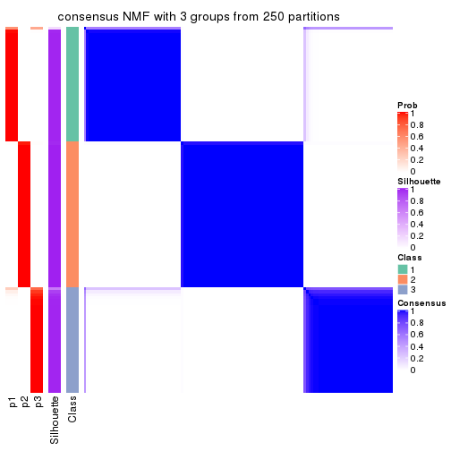
consensus_heatmap(res, k = 4)
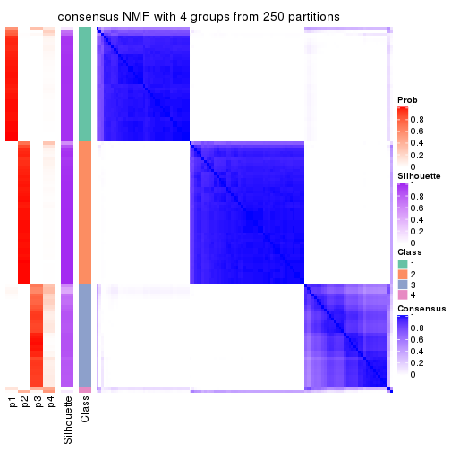
consensus_heatmap(res, k = 5)

consensus_heatmap(res, k = 6)
Heatmaps for the membership of samples in all partitions to see how consistent they are:
membership_heatmap(res, k = 2)
membership_heatmap(res, k = 3)
membership_heatmap(res, k = 4)
membership_heatmap(res, k = 5)
membership_heatmap(res, k = 6)
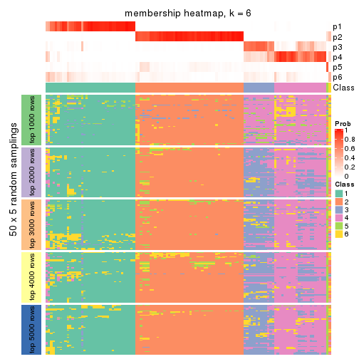
As soon as we have had the classes for columns, we can look for signatures which are significantly different between classes which can be candidate marks for certain classes. Following are the heatmaps for signatures.
Signature heatmaps where rows are scaled:
get_signatures(res, k = 2)
get_signatures(res, k = 3)
get_signatures(res, k = 4)
get_signatures(res, k = 5)
get_signatures(res, k = 6)
Signature heatmaps where rows are not scaled:
get_signatures(res, k = 2, scale_rows = FALSE)
get_signatures(res, k = 3, scale_rows = FALSE)
get_signatures(res, k = 4, scale_rows = FALSE)
get_signatures(res, k = 5, scale_rows = FALSE)
get_signatures(res, k = 6, scale_rows = FALSE)

Compare the overlap of signatures from different k:
compare_signatures(res)

get_signature() returns a data frame invisibly. TO get the list of signatures, the function
call should be assigned to a variable explicitly. In following code, if plot argument is set
to FALSE, no heatmap is plotted while only the differential analysis is performed.
# code only for demonstration
tb = get_signature(res, k = ..., plot = FALSE)
An example of the output of tb is:
#> which_row fdr mean_1 mean_2 scaled_mean_1 scaled_mean_2 km
#> 1 38 0.042760348 8.373488 9.131774 -0.5533452 0.5164555 1
#> 2 40 0.018707592 7.106213 8.469186 -0.6173731 0.5762149 1
#> 3 55 0.019134737 10.221463 11.207825 -0.6159697 0.5749050 1
#> 4 59 0.006059896 5.921854 7.869574 -0.6899429 0.6439467 1
#> 5 60 0.018055526 8.928898 10.211722 -0.6204761 0.5791110 1
#> 6 98 0.009384629 15.714769 14.887706 0.6635654 -0.6193277 2
...
The columns in tb are:
which_row: row indices corresponding to the input matrix.fdr: FDR for the differential test. mean_x: The mean value in group x.scaled_mean_x: The mean value in group x after rows are scaled.km: Row groups if k-means clustering is applied to rows.UMAP plot which shows how samples are separated.
dimension_reduction(res, k = 2, method = "UMAP")

dimension_reduction(res, k = 3, method = "UMAP")

dimension_reduction(res, k = 4, method = "UMAP")
dimension_reduction(res, k = 5, method = "UMAP")
dimension_reduction(res, k = 6, method = "UMAP")
Following heatmap shows how subgroups are split when increasing k:
collect_classes(res)
If matrix rows can be associated to genes, consider to use GO_Enrichment(res,
...) to perform function enrichment for the signature genes.
The object with results only for a single top-value method and a single partition method can be extracted as:
res = res_list["CV", "hclust"]
# you can also extract it by
# res = res_list["CV:hclust"]
A summary of res and all the functions that can be applied to it:
res
#> A 'ConsensusPartition' object with k = 2, 3, 4, 5, 6.
#> On a matrix with 10145 rows and 121 columns.
#> Top rows (1000, 2000, 3000, 4000, 5000) are extracted by 'CV' method.
#> Subgroups are detected by 'hclust' method.
#> Performed in total 1250 partitions by row resampling.
#> Best k for subgroups seems to be 4.
#>
#> Following methods can be applied to this 'ConsensusPartition' object:
#> [1] "cola_report" "collect_classes" "collect_plots"
#> [4] "collect_stats" "colnames" "compare_signatures"
#> [7] "consensus_heatmap" "dimension_reduction" "functional_enrichment"
#> [10] "get_anno_col" "get_anno" "get_classes"
#> [13] "get_consensus" "get_matrix" "get_membership"
#> [16] "get_param" "get_signatures" "get_stats"
#> [19] "is_best_k" "is_stable_k" "membership_heatmap"
#> [22] "ncol" "nrow" "plot_ecdf"
#> [25] "rownames" "select_partition_number" "show"
#> [28] "suggest_best_k" "test_to_known_factors"
collect_plots() function collects all the plots made from res for all k (number of partitions)
into one single page to provide an easy and fast comparison between different k.
collect_plots(res)
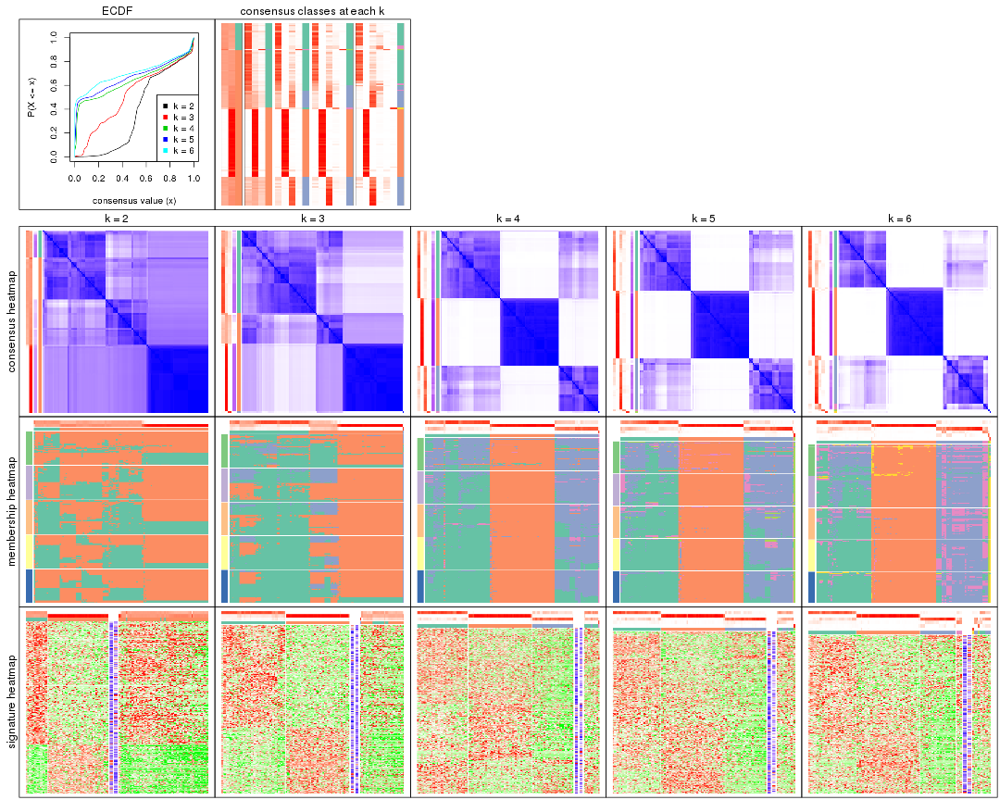
The plots are:
k and the heatmap of
predicted classes for each k.k.k.k.All the plots in panels can be made by individual functions and they are plotted later in this section.
select_partition_number() produces several plots showing different
statistics for choosing “optimized” k. There are following statistics:
k;k, the area increased is defined as \(A_k - A_{k-1}\).The detailed explanations of these statistics can be found in the cola vignette.
Generally speaking, lower PAC score, higher mean silhouette score or higher
concordance corresponds to better partition. Rand index and Jaccard index
measure how similar the current partition is compared to partition with k-1.
If they are too similar, we won't accept k is better than k-1.
select_partition_number(res)
The numeric values for all these statistics can be obtained by get_stats().
get_stats(res)
#> k 1-PAC mean_silhouette concordance area_increased Rand Jaccard
#> 2 2 0.185 0.245 0.673 0.3736 0.745 0.745
#> 3 3 0.276 0.576 0.778 0.3838 0.568 0.482
#> 4 4 0.653 0.775 0.838 0.2414 0.772 0.566
#> 5 5 0.659 0.735 0.833 0.0486 0.955 0.872
#> 6 6 0.672 0.722 0.818 0.0508 0.970 0.909
suggest_best_k() suggests the best \(k\) based on these statistics. The rules are as follows:
NA.suggest_best_k(res)
#> [1] 4
Following shows the table of the partitions (You need to click the show/hide
code output link to see it). The membership matrix (columns with name p*)
is inferred by
clue::cl_consensus()
function with the SE method. Basically the value in the membership matrix
represents the probability to belong to a certain group. The finall class
label for an item is determined with the group with highest probability it
belongs to.
In get_classes() function, the entropy is calculated from the membership
matrix and the silhouette score is calculated from the consensus matrix.
cbind(get_classes(res, k = 2), get_membership(res, k = 2))
#> class entropy silhouette p1 p2
#> SRR2431463 2 0.9983 -0.6847 0.476 0.524
#> SRR2431462 1 0.9983 0.6632 0.524 0.476
#> SRR2431461 2 0.9993 -0.4214 0.484 0.516
#> SRR2431459 2 1.0000 -0.6462 0.500 0.500
#> SRR2431460 2 0.9993 -0.7059 0.484 0.516
#> SRR2431458 1 0.9993 0.3123 0.516 0.484
#> SRR2431457 2 0.9996 -0.6385 0.488 0.512
#> SRR2431455 1 0.9996 0.6777 0.512 0.488
#> SRR2431456 2 0.9993 -0.6972 0.484 0.516
#> SRR2431454 2 0.9970 0.2532 0.468 0.532
#> SRR2431453 2 0.9998 -0.6431 0.492 0.508
#> SRR2431451 2 0.9909 0.2608 0.444 0.556
#> SRR2431452 2 0.9998 0.2657 0.492 0.508
#> SRR2431450 1 1.0000 0.6639 0.500 0.500
#> SRR2431449 2 0.9988 -0.6917 0.480 0.520
#> SRR2431448 2 1.0000 -0.6377 0.500 0.500
#> SRR2431446 2 0.9988 -0.4663 0.480 0.520
#> SRR2431447 2 0.9922 -0.1106 0.448 0.552
#> SRR2431445 2 0.9993 -0.6054 0.484 0.516
#> SRR2431444 2 0.9996 0.2626 0.488 0.512
#> SRR2431443 2 0.9993 -0.4739 0.484 0.516
#> SRR2431442 2 0.9993 -0.6946 0.484 0.516
#> SRR2431441 1 0.9996 0.6777 0.512 0.488
#> SRR2431440 2 0.9933 0.2498 0.452 0.548
#> SRR2431439 2 0.9909 -0.2474 0.444 0.556
#> SRR2431438 2 1.0000 -0.6419 0.500 0.500
#> SRR2431437 2 1.0000 -0.5484 0.496 0.504
#> SRR2431436 2 0.9993 0.2804 0.484 0.516
#> SRR2431435 2 0.9933 0.2564 0.452 0.548
#> SRR2431434 2 0.9993 -0.6837 0.484 0.516
#> SRR2431433 2 0.9998 -0.5886 0.492 0.508
#> SRR2431432 2 1.0000 -0.6405 0.496 0.504
#> SRR2431431 1 0.8608 -0.0282 0.716 0.284
#> SRR2431430 1 0.9983 0.1591 0.524 0.476
#> SRR2431429 2 0.9996 -0.6886 0.488 0.512
#> SRR2431428 1 0.9954 0.7284 0.540 0.460
#> SRR2431427 2 0.0376 0.5318 0.004 0.996
#> SRR2431426 2 0.0672 0.5309 0.008 0.992
#> SRR2431425 2 0.0376 0.5318 0.004 0.996
#> SRR2431424 2 0.0000 0.5317 0.000 1.000
#> SRR2431423 2 0.0376 0.5318 0.004 0.996
#> SRR2431422 2 0.0376 0.5318 0.004 0.996
#> SRR2431421 2 0.0938 0.5314 0.012 0.988
#> SRR2431420 2 0.0000 0.5317 0.000 1.000
#> SRR2431419 2 0.0938 0.5307 0.012 0.988
#> SRR2431418 2 0.0000 0.5317 0.000 1.000
#> SRR2431417 2 0.0376 0.5318 0.004 0.996
#> SRR2431416 2 0.0000 0.5317 0.000 1.000
#> SRR2431415 2 0.0376 0.5318 0.004 0.996
#> SRR2431414 2 0.0938 0.5307 0.012 0.988
#> SRR2431413 2 0.0938 0.5307 0.012 0.988
#> SRR2431412 2 0.0376 0.5318 0.004 0.996
#> SRR2431411 2 0.9922 0.2789 0.448 0.552
#> SRR2431409 2 0.0000 0.5317 0.000 1.000
#> SRR2431410 2 0.8016 0.0420 0.244 0.756
#> SRR2431408 2 0.0000 0.5317 0.000 1.000
#> SRR2431407 2 0.0000 0.5317 0.000 1.000
#> SRR2431405 2 0.0938 0.5307 0.012 0.988
#> SRR2431406 2 0.0000 0.5317 0.000 1.000
#> SRR2431404 2 0.0376 0.5293 0.004 0.996
#> SRR2431403 2 0.0000 0.5317 0.000 1.000
#> SRR2431402 2 0.0672 0.5296 0.008 0.992
#> SRR2431401 2 0.0000 0.5317 0.000 1.000
#> SRR2431400 2 0.0376 0.5324 0.004 0.996
#> SRR2431399 2 0.0672 0.5309 0.008 0.992
#> SRR2431398 2 0.0376 0.5318 0.004 0.996
#> SRR2431397 2 0.0376 0.5318 0.004 0.996
#> SRR2431396 2 0.0672 0.5309 0.008 0.992
#> SRR2431395 2 0.0672 0.5309 0.008 0.992
#> SRR2431394 2 0.0376 0.5324 0.004 0.996
#> SRR2431393 2 0.0376 0.5293 0.004 0.996
#> SRR2431392 2 0.0672 0.5309 0.008 0.992
#> SRR2431391 2 0.0376 0.5318 0.004 0.996
#> SRR2431390 2 0.0938 0.5307 0.012 0.988
#> SRR2431389 2 0.0000 0.5317 0.000 1.000
#> SRR2431388 2 0.0000 0.5317 0.000 1.000
#> SRR2431387 2 0.2778 0.4876 0.048 0.952
#> SRR2431386 2 0.0000 0.5317 0.000 1.000
#> SRR2431385 2 0.5629 0.4566 0.132 0.868
#> SRR2431383 2 0.1843 0.5263 0.028 0.972
#> SRR2431384 2 0.0000 0.5317 0.000 1.000
#> SRR2431382 2 0.0672 0.5320 0.008 0.992
#> SRR2431381 2 0.0000 0.5317 0.000 1.000
#> SRR2431380 1 0.9954 0.7284 0.540 0.460
#> SRR2431379 2 0.9580 0.3339 0.380 0.620
#> SRR2431378 2 0.9754 0.1118 0.408 0.592
#> SRR2431376 2 0.9922 -0.3941 0.448 0.552
#> SRR2431377 1 1.0000 0.7143 0.504 0.496
#> SRR2431375 2 0.9833 0.3396 0.424 0.576
#> SRR2431374 1 0.9988 0.7439 0.520 0.480
#> SRR2431372 2 0.9977 0.2977 0.472 0.528
#> SRR2431371 2 0.9998 -0.5375 0.492 0.508
#> SRR2431373 2 0.9896 0.3280 0.440 0.560
#> SRR2431370 2 0.9580 0.3384 0.380 0.620
#> SRR2431369 2 0.9795 -0.2908 0.416 0.584
#> SRR2431368 2 0.9608 0.3371 0.384 0.616
#> SRR2431367 2 0.9580 0.3206 0.380 0.620
#> SRR2431366 1 0.9963 0.7292 0.536 0.464
#> SRR2431365 1 0.9896 0.7373 0.560 0.440
#> SRR2431364 2 0.9933 0.3177 0.452 0.548
#> SRR2431363 2 0.9795 0.3456 0.416 0.584
#> SRR2431361 2 0.9850 -0.2999 0.428 0.572
#> SRR2431362 2 0.9815 0.3433 0.420 0.580
#> SRR2431360 2 0.9833 0.3405 0.424 0.576
#> SRR2431359 2 0.9491 0.3220 0.368 0.632
#> SRR2431358 1 0.9944 0.7439 0.544 0.456
#> SRR2431357 1 0.9988 0.7439 0.520 0.480
#> SRR2431355 2 0.9988 -0.4900 0.480 0.520
#> SRR2431356 2 0.9608 0.3202 0.384 0.616
#> SRR2431354 2 0.9795 0.3453 0.416 0.584
#> SRR2431353 1 0.9970 0.7465 0.532 0.468
#> SRR2431352 1 0.9944 0.7439 0.544 0.456
#> SRR2431351 2 0.9850 0.3267 0.428 0.572
#> SRR2431350 2 0.9580 0.3519 0.380 0.620
#> SRR2431349 2 0.9850 0.3367 0.428 0.572
#> SRR2431348 2 0.9522 0.3213 0.372 0.628
#> SRR2431347 2 0.9580 0.2987 0.380 0.620
#> SRR2431346 2 0.9661 0.2864 0.392 0.608
#> SRR2431345 2 0.9866 0.3342 0.432 0.568
#> SRR2431344 2 0.9996 -0.3936 0.488 0.512
#> SRR2431343 1 0.9954 0.7284 0.540 0.460
cbind(get_classes(res, k = 3), get_membership(res, k = 3))
#> class entropy silhouette p1 p2 p3
#> SRR2431463 1 0.3695 0.7327 0.880 0.108 0.012
#> SRR2431462 1 0.4295 0.7394 0.864 0.104 0.032
#> SRR2431461 1 0.7047 0.6954 0.712 0.204 0.084
#> SRR2431459 1 0.4662 0.7442 0.844 0.124 0.032
#> SRR2431460 1 0.3690 0.7201 0.884 0.100 0.016
#> SRR2431458 1 0.7984 0.6523 0.652 0.216 0.132
#> SRR2431457 1 0.4677 0.7457 0.840 0.132 0.028
#> SRR2431455 1 0.3910 0.7385 0.876 0.104 0.020
#> SRR2431456 1 0.4446 0.7291 0.856 0.112 0.032
#> SRR2431454 2 0.9852 -0.0269 0.312 0.416 0.272
#> SRR2431453 1 0.4731 0.7445 0.840 0.128 0.032
#> SRR2431451 2 0.9815 -0.0664 0.332 0.416 0.252
#> SRR2431452 2 0.9678 0.2090 0.228 0.444 0.328
#> SRR2431450 1 0.3995 0.7432 0.868 0.116 0.016
#> SRR2431449 1 0.3846 0.7292 0.876 0.108 0.016
#> SRR2431448 1 0.4540 0.7428 0.848 0.124 0.028
#> SRR2431446 1 0.6673 0.7144 0.732 0.200 0.068
#> SRR2431447 1 0.8572 0.5748 0.580 0.288 0.132
#> SRR2431445 1 0.4874 0.7434 0.828 0.144 0.028
#> SRR2431444 2 0.9489 0.2439 0.196 0.464 0.340
#> SRR2431443 1 0.6576 0.7164 0.740 0.192 0.068
#> SRR2431442 1 0.3846 0.7350 0.876 0.108 0.016
#> SRR2431441 1 0.3910 0.7385 0.876 0.104 0.020
#> SRR2431440 2 0.9833 -0.0739 0.332 0.412 0.256
#> SRR2431439 1 0.8048 0.6446 0.628 0.264 0.108
#> SRR2431438 1 0.4540 0.7450 0.848 0.124 0.028
#> SRR2431437 1 0.6027 0.7310 0.776 0.164 0.060
#> SRR2431436 2 0.9690 0.2081 0.232 0.444 0.324
#> SRR2431435 2 0.9833 -0.0765 0.332 0.412 0.256
#> SRR2431434 1 0.3607 0.7387 0.880 0.112 0.008
#> SRR2431433 1 0.5173 0.7406 0.816 0.148 0.036
#> SRR2431432 1 0.4413 0.7431 0.852 0.124 0.024
#> SRR2431431 3 0.1878 0.0000 0.044 0.004 0.952
#> SRR2431430 1 0.8953 0.5594 0.560 0.260 0.180
#> SRR2431429 1 0.3921 0.7380 0.872 0.112 0.016
#> SRR2431428 1 0.4569 0.6371 0.860 0.072 0.068
#> SRR2431427 2 0.0475 0.7737 0.004 0.992 0.004
#> SRR2431426 2 0.0237 0.7728 0.000 0.996 0.004
#> SRR2431425 2 0.0661 0.7722 0.008 0.988 0.004
#> SRR2431424 2 0.0237 0.7742 0.004 0.996 0.000
#> SRR2431423 2 0.0475 0.7737 0.004 0.992 0.004
#> SRR2431422 2 0.0661 0.7722 0.008 0.988 0.004
#> SRR2431421 2 0.0424 0.7723 0.000 0.992 0.008
#> SRR2431420 2 0.0424 0.7737 0.008 0.992 0.000
#> SRR2431419 2 0.0424 0.7718 0.000 0.992 0.008
#> SRR2431418 2 0.0237 0.7742 0.004 0.996 0.000
#> SRR2431417 2 0.0475 0.7737 0.004 0.992 0.004
#> SRR2431416 2 0.0237 0.7742 0.004 0.996 0.000
#> SRR2431415 2 0.0475 0.7737 0.004 0.992 0.004
#> SRR2431414 2 0.0424 0.7718 0.000 0.992 0.008
#> SRR2431413 2 0.0475 0.7707 0.004 0.992 0.004
#> SRR2431412 2 0.0661 0.7722 0.008 0.988 0.004
#> SRR2431411 2 0.8935 0.2941 0.136 0.512 0.352
#> SRR2431409 2 0.0237 0.7742 0.004 0.996 0.000
#> SRR2431410 2 0.6823 -0.1890 0.484 0.504 0.012
#> SRR2431408 2 0.0237 0.7742 0.004 0.996 0.000
#> SRR2431407 2 0.0237 0.7742 0.004 0.996 0.000
#> SRR2431405 2 0.0475 0.7707 0.004 0.992 0.004
#> SRR2431406 2 0.0237 0.7742 0.004 0.996 0.000
#> SRR2431404 2 0.0661 0.7725 0.008 0.988 0.004
#> SRR2431403 2 0.0237 0.7742 0.004 0.996 0.000
#> SRR2431402 2 0.0829 0.7703 0.012 0.984 0.004
#> SRR2431401 2 0.0237 0.7742 0.004 0.996 0.000
#> SRR2431400 2 0.0000 0.7739 0.000 1.000 0.000
#> SRR2431399 2 0.0237 0.7728 0.000 0.996 0.004
#> SRR2431398 2 0.0475 0.7737 0.004 0.992 0.004
#> SRR2431397 2 0.0475 0.7737 0.004 0.992 0.004
#> SRR2431396 2 0.0237 0.7728 0.000 0.996 0.004
#> SRR2431395 2 0.0237 0.7728 0.000 0.996 0.004
#> SRR2431394 2 0.0000 0.7739 0.000 1.000 0.000
#> SRR2431393 2 0.0475 0.7726 0.004 0.992 0.004
#> SRR2431392 2 0.0237 0.7728 0.000 0.996 0.004
#> SRR2431391 2 0.0475 0.7737 0.004 0.992 0.004
#> SRR2431390 2 0.0424 0.7718 0.000 0.992 0.008
#> SRR2431389 2 0.0424 0.7737 0.008 0.992 0.000
#> SRR2431388 2 0.0237 0.7742 0.004 0.996 0.000
#> SRR2431387 2 0.2590 0.7260 0.072 0.924 0.004
#> SRR2431386 2 0.0237 0.7742 0.004 0.996 0.000
#> SRR2431385 2 0.3845 0.6885 0.012 0.872 0.116
#> SRR2431383 2 0.1170 0.7642 0.016 0.976 0.008
#> SRR2431384 2 0.0237 0.7742 0.004 0.996 0.000
#> SRR2431382 2 0.0237 0.7734 0.000 0.996 0.004
#> SRR2431381 2 0.0424 0.7737 0.008 0.992 0.000
#> SRR2431380 1 0.4569 0.6371 0.860 0.072 0.068
#> SRR2431379 1 0.9342 0.2558 0.452 0.380 0.168
#> SRR2431378 1 0.8139 0.5253 0.616 0.276 0.108
#> SRR2431376 1 0.6098 0.6740 0.768 0.176 0.056
#> SRR2431377 1 0.4742 0.7043 0.848 0.104 0.048
#> SRR2431375 2 0.9766 0.0115 0.348 0.416 0.236
#> SRR2431374 1 0.4035 0.6976 0.880 0.080 0.040
#> SRR2431372 2 0.9800 0.1527 0.268 0.432 0.300
#> SRR2431371 1 0.5442 0.6884 0.812 0.132 0.056
#> SRR2431373 2 0.9815 0.0416 0.332 0.416 0.252
#> SRR2431370 1 0.9267 0.2422 0.460 0.380 0.160
#> SRR2431369 1 0.6302 0.6726 0.744 0.208 0.048
#> SRR2431368 1 0.9267 0.2355 0.460 0.380 0.160
#> SRR2431367 1 0.9203 0.3023 0.476 0.368 0.156
#> SRR2431366 1 0.4058 0.7013 0.880 0.076 0.044
#> SRR2431365 1 0.4475 0.6822 0.864 0.072 0.064
#> SRR2431364 2 0.9836 0.0745 0.312 0.420 0.268
#> SRR2431363 2 0.9745 0.0199 0.348 0.420 0.232
#> SRR2431361 1 0.6159 0.6630 0.756 0.196 0.048
#> SRR2431362 2 0.9767 0.0632 0.328 0.428 0.244
#> SRR2431360 2 0.9777 0.0698 0.324 0.428 0.248
#> SRR2431359 1 0.9076 0.3281 0.488 0.368 0.144
#> SRR2431358 1 0.4384 0.6494 0.868 0.064 0.068
#> SRR2431357 1 0.4035 0.6976 0.880 0.080 0.040
#> SRR2431355 1 0.6827 0.7023 0.728 0.192 0.080
#> SRR2431356 1 0.9193 0.3004 0.480 0.364 0.156
#> SRR2431354 2 0.9745 0.0188 0.348 0.420 0.232
#> SRR2431353 1 0.4565 0.6663 0.860 0.076 0.064
#> SRR2431352 1 0.4477 0.6526 0.864 0.068 0.068
#> SRR2431351 2 0.9717 -0.1019 0.384 0.396 0.220
#> SRR2431350 1 0.9460 0.1610 0.424 0.396 0.180
#> SRR2431349 2 0.9780 0.0130 0.344 0.416 0.240
#> SRR2431348 1 0.9119 0.3141 0.484 0.368 0.148
#> SRR2431347 1 0.9042 0.3528 0.500 0.356 0.144
#> SRR2431346 1 0.8969 0.3651 0.512 0.348 0.140
#> SRR2431345 2 0.9793 0.0202 0.340 0.416 0.244
#> SRR2431344 1 0.7287 0.6757 0.696 0.212 0.092
#> SRR2431343 1 0.4569 0.6371 0.860 0.072 0.068
cbind(get_classes(res, k = 4), get_membership(res, k = 4))
#> class entropy silhouette p1 p2 p3 p4
#> SRR2431463 1 0.2957 0.769 0.900 0.016 0.068 0.016
#> SRR2431462 1 0.3345 0.770 0.860 0.012 0.124 0.004
#> SRR2431461 1 0.5134 0.594 0.680 0.016 0.300 0.004
#> SRR2431459 1 0.3577 0.759 0.832 0.012 0.156 0.000
#> SRR2431460 1 0.2945 0.762 0.904 0.016 0.056 0.024
#> SRR2431458 1 0.5556 0.466 0.620 0.012 0.356 0.012
#> SRR2431457 1 0.3529 0.759 0.836 0.012 0.152 0.000
#> SRR2431455 1 0.3263 0.773 0.876 0.012 0.100 0.012
#> SRR2431456 1 0.3255 0.771 0.880 0.016 0.092 0.012
#> SRR2431454 3 0.6362 0.630 0.264 0.028 0.656 0.052
#> SRR2431453 1 0.3529 0.762 0.836 0.012 0.152 0.000
#> SRR2431451 3 0.6458 0.585 0.292 0.028 0.632 0.048
#> SRR2431452 3 0.5062 0.693 0.128 0.028 0.792 0.052
#> SRR2431450 1 0.2928 0.772 0.880 0.012 0.108 0.000
#> SRR2431449 1 0.2911 0.768 0.900 0.012 0.072 0.016
#> SRR2431448 1 0.3625 0.757 0.828 0.012 0.160 0.000
#> SRR2431446 1 0.4748 0.645 0.716 0.016 0.268 0.000
#> SRR2431447 1 0.6242 0.201 0.540 0.024 0.416 0.020
#> SRR2431445 1 0.3764 0.748 0.816 0.012 0.172 0.000
#> SRR2431444 3 0.4880 0.658 0.104 0.028 0.808 0.060
#> SRR2431443 1 0.4690 0.654 0.724 0.016 0.260 0.000
#> SRR2431442 1 0.2911 0.771 0.900 0.016 0.072 0.012
#> SRR2431441 1 0.3263 0.773 0.876 0.012 0.100 0.012
#> SRR2431440 3 0.6532 0.581 0.292 0.028 0.628 0.052
#> SRR2431439 1 0.5632 0.452 0.620 0.020 0.352 0.008
#> SRR2431438 1 0.3529 0.759 0.836 0.012 0.152 0.000
#> SRR2431437 1 0.4852 0.710 0.756 0.016 0.212 0.016
#> SRR2431436 3 0.4361 0.724 0.096 0.032 0.836 0.036
#> SRR2431435 3 0.6458 0.597 0.292 0.028 0.632 0.048
#> SRR2431434 1 0.3122 0.772 0.888 0.016 0.084 0.012
#> SRR2431433 1 0.3852 0.741 0.808 0.012 0.180 0.000
#> SRR2431432 1 0.3577 0.759 0.832 0.012 0.156 0.000
#> SRR2431431 4 0.2859 0.000 0.008 0.000 0.112 0.880
#> SRR2431430 1 0.6502 0.219 0.532 0.028 0.412 0.028
#> SRR2431429 1 0.3069 0.772 0.888 0.012 0.088 0.012
#> SRR2431428 1 0.2486 0.698 0.920 0.004 0.048 0.028
#> SRR2431427 2 0.0000 0.980 0.000 1.000 0.000 0.000
#> SRR2431426 2 0.0967 0.975 0.004 0.976 0.016 0.004
#> SRR2431425 2 0.0707 0.972 0.000 0.980 0.020 0.000
#> SRR2431424 2 0.0376 0.980 0.004 0.992 0.004 0.000
#> SRR2431423 2 0.0000 0.980 0.000 1.000 0.000 0.000
#> SRR2431422 2 0.0188 0.978 0.000 0.996 0.004 0.000
#> SRR2431421 2 0.0844 0.976 0.004 0.980 0.012 0.004
#> SRR2431420 2 0.0657 0.977 0.004 0.984 0.012 0.000
#> SRR2431419 2 0.0524 0.979 0.000 0.988 0.008 0.004
#> SRR2431418 2 0.0188 0.980 0.004 0.996 0.000 0.000
#> SRR2431417 2 0.0188 0.980 0.000 0.996 0.004 0.000
#> SRR2431416 2 0.0524 0.979 0.004 0.988 0.008 0.000
#> SRR2431415 2 0.0000 0.980 0.000 1.000 0.000 0.000
#> SRR2431414 2 0.0657 0.976 0.000 0.984 0.012 0.004
#> SRR2431413 2 0.1191 0.967 0.004 0.968 0.024 0.004
#> SRR2431412 2 0.0469 0.974 0.000 0.988 0.012 0.000
#> SRR2431411 3 0.4738 0.589 0.048 0.068 0.824 0.060
#> SRR2431409 2 0.0188 0.980 0.004 0.996 0.000 0.000
#> SRR2431410 1 0.8718 0.180 0.484 0.252 0.188 0.076
#> SRR2431408 2 0.0188 0.980 0.004 0.996 0.000 0.000
#> SRR2431407 2 0.0188 0.980 0.004 0.996 0.000 0.000
#> SRR2431405 2 0.1296 0.967 0.004 0.964 0.028 0.004
#> SRR2431406 2 0.0188 0.980 0.004 0.996 0.000 0.000
#> SRR2431404 2 0.0844 0.978 0.004 0.980 0.012 0.004
#> SRR2431403 2 0.0188 0.980 0.004 0.996 0.000 0.000
#> SRR2431402 2 0.0895 0.969 0.004 0.976 0.020 0.000
#> SRR2431401 2 0.0188 0.980 0.004 0.996 0.000 0.000
#> SRR2431400 2 0.0524 0.980 0.004 0.988 0.008 0.000
#> SRR2431399 2 0.0712 0.979 0.004 0.984 0.008 0.004
#> SRR2431398 2 0.0000 0.980 0.000 1.000 0.000 0.000
#> SRR2431397 2 0.0000 0.980 0.000 1.000 0.000 0.000
#> SRR2431396 2 0.0844 0.978 0.004 0.980 0.012 0.004
#> SRR2431395 2 0.0712 0.978 0.004 0.984 0.008 0.004
#> SRR2431394 2 0.0779 0.977 0.004 0.980 0.016 0.000
#> SRR2431393 2 0.0564 0.979 0.004 0.988 0.004 0.004
#> SRR2431392 2 0.0712 0.978 0.004 0.984 0.008 0.004
#> SRR2431391 2 0.0000 0.980 0.000 1.000 0.000 0.000
#> SRR2431390 2 0.0524 0.979 0.000 0.988 0.008 0.004
#> SRR2431389 2 0.0657 0.978 0.004 0.984 0.012 0.000
#> SRR2431388 2 0.0524 0.980 0.004 0.988 0.008 0.000
#> SRR2431387 2 0.3455 0.859 0.064 0.880 0.044 0.012
#> SRR2431386 2 0.0188 0.980 0.004 0.996 0.000 0.000
#> SRR2431385 2 0.4961 0.644 0.004 0.748 0.212 0.036
#> SRR2431383 2 0.2156 0.923 0.008 0.928 0.060 0.004
#> SRR2431384 2 0.0188 0.980 0.004 0.996 0.000 0.000
#> SRR2431382 2 0.0336 0.980 0.000 0.992 0.008 0.000
#> SRR2431381 2 0.0524 0.979 0.004 0.988 0.008 0.000
#> SRR2431380 1 0.2486 0.698 0.920 0.004 0.048 0.028
#> SRR2431379 3 0.5120 0.744 0.276 0.016 0.700 0.008
#> SRR2431378 3 0.6038 0.406 0.432 0.008 0.532 0.028
#> SRR2431376 1 0.5746 0.333 0.612 0.000 0.348 0.040
#> SRR2431377 1 0.3335 0.704 0.856 0.000 0.128 0.016
#> SRR2431375 3 0.4018 0.805 0.168 0.016 0.812 0.004
#> SRR2431374 1 0.2101 0.742 0.928 0.000 0.060 0.012
#> SRR2431372 3 0.4502 0.769 0.120 0.020 0.820 0.040
#> SRR2431371 1 0.5535 0.448 0.656 0.000 0.304 0.040
#> SRR2431373 3 0.4359 0.803 0.164 0.016 0.804 0.016
#> SRR2431370 3 0.5065 0.752 0.268 0.016 0.708 0.008
#> SRR2431369 1 0.5896 0.261 0.576 0.004 0.388 0.032
#> SRR2431368 3 0.4955 0.755 0.272 0.016 0.708 0.004
#> SRR2431367 3 0.5271 0.720 0.300 0.016 0.676 0.008
#> SRR2431366 1 0.4553 0.651 0.780 0.000 0.180 0.040
#> SRR2431365 1 0.4595 0.647 0.780 0.000 0.176 0.044
#> SRR2431364 3 0.4278 0.796 0.148 0.016 0.816 0.020
#> SRR2431363 3 0.3790 0.805 0.164 0.016 0.820 0.000
#> SRR2431361 1 0.6061 0.240 0.584 0.008 0.372 0.036
#> SRR2431362 3 0.3780 0.801 0.148 0.016 0.832 0.004
#> SRR2431360 3 0.3730 0.799 0.144 0.016 0.836 0.004
#> SRR2431359 3 0.5441 0.696 0.332 0.016 0.644 0.008
#> SRR2431358 1 0.2197 0.708 0.928 0.000 0.048 0.024
#> SRR2431357 1 0.2101 0.742 0.928 0.000 0.060 0.012
#> SRR2431355 1 0.5237 0.620 0.708 0.020 0.260 0.012
#> SRR2431356 3 0.5247 0.725 0.296 0.016 0.680 0.008
#> SRR2431354 3 0.3790 0.805 0.164 0.016 0.820 0.000
#> SRR2431353 1 0.2413 0.720 0.916 0.000 0.064 0.020
#> SRR2431352 1 0.1938 0.711 0.936 0.000 0.052 0.012
#> SRR2431351 3 0.4317 0.795 0.196 0.016 0.784 0.004
#> SRR2431350 3 0.4854 0.777 0.240 0.016 0.736 0.008
#> SRR2431349 3 0.3972 0.805 0.164 0.016 0.816 0.004
#> SRR2431348 3 0.5316 0.707 0.308 0.016 0.668 0.008
#> SRR2431347 3 0.5402 0.676 0.324 0.016 0.652 0.008
#> SRR2431346 3 0.5311 0.668 0.328 0.012 0.652 0.008
#> SRR2431345 3 0.4114 0.805 0.164 0.016 0.812 0.008
#> SRR2431344 1 0.5375 0.582 0.672 0.020 0.300 0.008
#> SRR2431343 1 0.2486 0.698 0.920 0.004 0.048 0.028
cbind(get_classes(res, k = 5), get_membership(res, k = 5))
#> class entropy silhouette p1 p2 p3 p4 p5
#> SRR2431463 1 0.2991 0.7408 0.860 0.012 0.120 0.004 0.004
#> SRR2431462 1 0.3753 0.7556 0.796 0.008 0.180 0.012 0.004
#> SRR2431461 1 0.5064 0.5881 0.608 0.012 0.360 0.012 0.008
#> SRR2431459 1 0.3920 0.7512 0.768 0.008 0.212 0.008 0.004
#> SRR2431460 1 0.3190 0.7187 0.860 0.008 0.108 0.016 0.008
#> SRR2431458 1 0.5450 0.4661 0.552 0.008 0.404 0.016 0.020
#> SRR2431457 1 0.3858 0.7496 0.760 0.008 0.224 0.008 0.000
#> SRR2431455 1 0.3659 0.7496 0.820 0.008 0.148 0.016 0.008
#> SRR2431456 1 0.3721 0.7398 0.816 0.008 0.148 0.024 0.004
#> SRR2431454 3 0.5973 0.5519 0.200 0.012 0.676 0.064 0.048
#> SRR2431453 1 0.3858 0.7498 0.760 0.008 0.224 0.008 0.000
#> SRR2431451 3 0.6170 0.5009 0.228 0.012 0.648 0.064 0.048
#> SRR2431452 3 0.4921 0.6326 0.068 0.012 0.780 0.096 0.044
#> SRR2431450 1 0.3362 0.7539 0.824 0.008 0.156 0.012 0.000
#> SRR2431449 1 0.3115 0.7335 0.856 0.008 0.120 0.012 0.004
#> SRR2431448 1 0.3888 0.7507 0.772 0.008 0.208 0.008 0.004
#> SRR2431446 1 0.4742 0.6342 0.644 0.012 0.332 0.008 0.004
#> SRR2431447 3 0.5848 -0.2591 0.468 0.012 0.472 0.028 0.020
#> SRR2431445 1 0.4130 0.7402 0.740 0.008 0.240 0.008 0.004
#> SRR2431444 3 0.5052 0.6159 0.052 0.012 0.768 0.116 0.052
#> SRR2431443 1 0.4890 0.6445 0.648 0.012 0.320 0.016 0.004
#> SRR2431442 1 0.3039 0.7449 0.856 0.012 0.124 0.004 0.004
#> SRR2431441 1 0.3659 0.7496 0.820 0.008 0.148 0.016 0.008
#> SRR2431440 3 0.6233 0.4974 0.228 0.012 0.644 0.064 0.052
#> SRR2431439 1 0.5748 0.4423 0.540 0.012 0.400 0.036 0.012
#> SRR2431438 1 0.3983 0.7498 0.760 0.008 0.220 0.008 0.004
#> SRR2431437 1 0.4764 0.7066 0.692 0.008 0.272 0.016 0.012
#> SRR2431436 3 0.3941 0.6815 0.032 0.012 0.840 0.076 0.040
#> SRR2431435 3 0.6077 0.5127 0.224 0.012 0.656 0.064 0.044
#> SRR2431434 1 0.3257 0.7468 0.844 0.012 0.132 0.008 0.004
#> SRR2431433 1 0.4010 0.7378 0.744 0.008 0.240 0.004 0.004
#> SRR2431432 1 0.3855 0.7513 0.776 0.008 0.204 0.008 0.004
#> SRR2431431 5 0.0963 0.0000 0.000 0.000 0.036 0.000 0.964
#> SRR2431430 1 0.6257 0.2513 0.468 0.012 0.448 0.040 0.032
#> SRR2431429 1 0.3500 0.7438 0.832 0.008 0.136 0.020 0.004
#> SRR2431428 1 0.2005 0.5615 0.924 0.000 0.016 0.056 0.004
#> SRR2431427 2 0.0290 0.9739 0.000 0.992 0.000 0.008 0.000
#> SRR2431426 2 0.0798 0.9694 0.000 0.976 0.008 0.016 0.000
#> SRR2431425 2 0.0963 0.9621 0.000 0.964 0.000 0.036 0.000
#> SRR2431424 2 0.0290 0.9742 0.000 0.992 0.000 0.008 0.000
#> SRR2431423 2 0.0162 0.9744 0.000 0.996 0.000 0.004 0.000
#> SRR2431422 2 0.0404 0.9728 0.000 0.988 0.000 0.012 0.000
#> SRR2431421 2 0.0693 0.9699 0.000 0.980 0.008 0.012 0.000
#> SRR2431420 2 0.0609 0.9707 0.000 0.980 0.000 0.020 0.000
#> SRR2431419 2 0.0771 0.9731 0.000 0.976 0.004 0.020 0.000
#> SRR2431418 2 0.0000 0.9745 0.000 1.000 0.000 0.000 0.000
#> SRR2431417 2 0.0510 0.9730 0.000 0.984 0.000 0.016 0.000
#> SRR2431416 2 0.0609 0.9731 0.000 0.980 0.000 0.020 0.000
#> SRR2431415 2 0.0404 0.9735 0.000 0.988 0.000 0.012 0.000
#> SRR2431414 2 0.0798 0.9700 0.000 0.976 0.008 0.016 0.000
#> SRR2431413 2 0.1012 0.9617 0.000 0.968 0.020 0.012 0.000
#> SRR2431412 2 0.0609 0.9713 0.000 0.980 0.000 0.020 0.000
#> SRR2431411 3 0.4707 0.5864 0.004 0.052 0.784 0.112 0.048
#> SRR2431409 2 0.0000 0.9745 0.000 1.000 0.000 0.000 0.000
#> SRR2431410 4 0.6390 0.0000 0.264 0.028 0.084 0.608 0.016
#> SRR2431408 2 0.0000 0.9745 0.000 1.000 0.000 0.000 0.000
#> SRR2431407 2 0.0000 0.9745 0.000 1.000 0.000 0.000 0.000
#> SRR2431405 2 0.1117 0.9618 0.000 0.964 0.020 0.016 0.000
#> SRR2431406 2 0.0162 0.9744 0.000 0.996 0.000 0.004 0.000
#> SRR2431404 2 0.0794 0.9688 0.000 0.972 0.000 0.028 0.000
#> SRR2431403 2 0.0000 0.9745 0.000 1.000 0.000 0.000 0.000
#> SRR2431402 2 0.1671 0.9277 0.000 0.924 0.000 0.076 0.000
#> SRR2431401 2 0.0000 0.9745 0.000 1.000 0.000 0.000 0.000
#> SRR2431400 2 0.0324 0.9744 0.000 0.992 0.004 0.004 0.000
#> SRR2431399 2 0.0566 0.9730 0.000 0.984 0.004 0.012 0.000
#> SRR2431398 2 0.0290 0.9739 0.000 0.992 0.000 0.008 0.000
#> SRR2431397 2 0.0162 0.9744 0.000 0.996 0.000 0.004 0.000
#> SRR2431396 2 0.0671 0.9714 0.000 0.980 0.004 0.016 0.000
#> SRR2431395 2 0.0451 0.9726 0.000 0.988 0.004 0.008 0.000
#> SRR2431394 2 0.0693 0.9711 0.000 0.980 0.008 0.012 0.000
#> SRR2431393 2 0.0404 0.9727 0.000 0.988 0.000 0.012 0.000
#> SRR2431392 2 0.0451 0.9726 0.000 0.988 0.004 0.008 0.000
#> SRR2431391 2 0.0290 0.9739 0.000 0.992 0.000 0.008 0.000
#> SRR2431390 2 0.0671 0.9739 0.000 0.980 0.004 0.016 0.000
#> SRR2431389 2 0.0703 0.9680 0.000 0.976 0.000 0.024 0.000
#> SRR2431388 2 0.0404 0.9739 0.000 0.988 0.000 0.012 0.000
#> SRR2431387 2 0.4384 0.7248 0.020 0.764 0.008 0.192 0.016
#> SRR2431386 2 0.0000 0.9745 0.000 1.000 0.000 0.000 0.000
#> SRR2431385 2 0.4863 0.6286 0.000 0.740 0.176 0.064 0.020
#> SRR2431383 2 0.2053 0.9170 0.000 0.924 0.048 0.024 0.004
#> SRR2431384 2 0.0000 0.9745 0.000 1.000 0.000 0.000 0.000
#> SRR2431382 2 0.0566 0.9740 0.000 0.984 0.004 0.012 0.000
#> SRR2431381 2 0.0510 0.9722 0.000 0.984 0.000 0.016 0.000
#> SRR2431380 1 0.2005 0.5615 0.924 0.000 0.016 0.056 0.004
#> SRR2431379 3 0.3342 0.7413 0.136 0.008 0.836 0.020 0.000
#> SRR2431378 3 0.5626 0.5494 0.232 0.004 0.640 0.124 0.000
#> SRR2431376 3 0.6415 0.0565 0.400 0.000 0.428 0.172 0.000
#> SRR2431377 1 0.4558 0.5628 0.740 0.000 0.180 0.080 0.000
#> SRR2431375 3 0.1404 0.7547 0.028 0.008 0.956 0.004 0.004
#> SRR2431374 1 0.3375 0.6616 0.840 0.000 0.104 0.056 0.000
#> SRR2431372 3 0.2924 0.7114 0.016 0.008 0.892 0.052 0.032
#> SRR2431371 1 0.6439 0.0629 0.448 0.000 0.372 0.180 0.000
#> SRR2431373 3 0.2275 0.7487 0.032 0.008 0.924 0.016 0.020
#> SRR2431370 3 0.3294 0.7457 0.124 0.008 0.844 0.024 0.000
#> SRR2431369 3 0.6260 0.1453 0.372 0.000 0.476 0.152 0.000
#> SRR2431368 3 0.3155 0.7478 0.120 0.008 0.852 0.020 0.000
#> SRR2431367 3 0.3732 0.7291 0.148 0.008 0.812 0.032 0.000
#> SRR2431366 1 0.6114 0.3475 0.564 0.000 0.244 0.192 0.000
#> SRR2431365 1 0.5958 0.2957 0.592 0.000 0.208 0.200 0.000
#> SRR2431364 3 0.2199 0.7394 0.020 0.008 0.928 0.020 0.024
#> SRR2431363 3 0.1153 0.7529 0.024 0.008 0.964 0.004 0.000
#> SRR2431361 3 0.6466 0.1695 0.360 0.004 0.472 0.164 0.000
#> SRR2431362 3 0.1785 0.7481 0.024 0.008 0.944 0.016 0.008
#> SRR2431360 3 0.1692 0.7452 0.020 0.008 0.948 0.016 0.008
#> SRR2431359 3 0.4156 0.7131 0.172 0.012 0.784 0.028 0.004
#> SRR2431358 1 0.2152 0.5844 0.920 0.000 0.032 0.044 0.004
#> SRR2431357 1 0.3375 0.6616 0.840 0.000 0.104 0.056 0.000
#> SRR2431355 1 0.5698 0.5486 0.596 0.008 0.324 0.068 0.004
#> SRR2431356 3 0.3689 0.7320 0.144 0.008 0.816 0.032 0.000
#> SRR2431354 3 0.1369 0.7546 0.028 0.008 0.956 0.008 0.000
#> SRR2431353 1 0.2438 0.6208 0.900 0.000 0.060 0.040 0.000
#> SRR2431352 1 0.2446 0.5952 0.900 0.000 0.044 0.056 0.000
#> SRR2431351 3 0.1988 0.7542 0.048 0.008 0.928 0.016 0.000
#> SRR2431350 3 0.2748 0.7580 0.096 0.008 0.880 0.016 0.000
#> SRR2431349 3 0.1314 0.7542 0.024 0.008 0.960 0.004 0.004
#> SRR2431348 3 0.3815 0.7217 0.156 0.008 0.804 0.032 0.000
#> SRR2431347 3 0.4049 0.7076 0.164 0.008 0.788 0.040 0.000
#> SRR2431346 3 0.4000 0.7053 0.164 0.004 0.788 0.044 0.000
#> SRR2431345 3 0.1441 0.7544 0.024 0.008 0.956 0.008 0.004
#> SRR2431344 1 0.5322 0.5627 0.596 0.008 0.356 0.036 0.004
#> SRR2431343 1 0.2005 0.5615 0.924 0.000 0.016 0.056 0.004
cbind(get_classes(res, k = 6), get_membership(res, k = 6))
#> class entropy silhouette p1 p2 p3 p4 p5 p6
#> SRR2431463 1 0.2301 0.7720 0.884 0.000 0.096 0.020 0.000 0.000
#> SRR2431462 1 0.3158 0.7794 0.812 0.000 0.164 0.020 0.004 0.000
#> SRR2431461 1 0.4528 0.6410 0.632 0.000 0.328 0.024 0.016 0.000
#> SRR2431459 1 0.3479 0.7763 0.796 0.000 0.172 0.020 0.004 0.008
#> SRR2431460 1 0.2825 0.7532 0.876 0.000 0.076 0.024 0.008 0.016
#> SRR2431458 1 0.4963 0.5384 0.568 0.000 0.376 0.028 0.028 0.000
#> SRR2431457 1 0.3667 0.7725 0.776 0.000 0.184 0.032 0.008 0.000
#> SRR2431455 1 0.3010 0.7778 0.836 0.000 0.132 0.028 0.000 0.004
#> SRR2431456 1 0.3781 0.7620 0.812 0.000 0.116 0.036 0.008 0.028
#> SRR2431454 3 0.5378 0.4546 0.224 0.000 0.620 0.012 0.144 0.000
#> SRR2431453 1 0.3761 0.7730 0.764 0.000 0.196 0.032 0.008 0.000
#> SRR2431451 3 0.5530 0.3885 0.260 0.000 0.588 0.012 0.140 0.000
#> SRR2431452 3 0.4368 0.5512 0.088 0.000 0.708 0.000 0.204 0.000
#> SRR2431450 1 0.2892 0.7799 0.840 0.000 0.136 0.020 0.004 0.000
#> SRR2431449 1 0.2518 0.7642 0.880 0.000 0.092 0.012 0.000 0.016
#> SRR2431448 1 0.3479 0.7761 0.796 0.000 0.172 0.020 0.004 0.008
#> SRR2431446 1 0.4470 0.6820 0.656 0.000 0.300 0.032 0.012 0.000
#> SRR2431447 1 0.5323 0.3650 0.496 0.000 0.424 0.016 0.064 0.000
#> SRR2431445 1 0.3888 0.7623 0.756 0.000 0.200 0.032 0.012 0.000
#> SRR2431444 3 0.4876 0.5332 0.088 0.000 0.688 0.020 0.204 0.000
#> SRR2431443 1 0.4416 0.6892 0.668 0.000 0.288 0.032 0.012 0.000
#> SRR2431442 1 0.2445 0.7742 0.872 0.000 0.108 0.020 0.000 0.000
#> SRR2431441 1 0.3010 0.7778 0.836 0.000 0.132 0.028 0.000 0.004
#> SRR2431440 3 0.5627 0.3874 0.256 0.000 0.584 0.016 0.144 0.000
#> SRR2431439 1 0.5157 0.5279 0.556 0.000 0.376 0.036 0.032 0.000
#> SRR2431438 1 0.3730 0.7718 0.768 0.000 0.192 0.032 0.008 0.000
#> SRR2431437 1 0.4101 0.7441 0.728 0.000 0.232 0.024 0.012 0.004
#> SRR2431436 3 0.3525 0.6059 0.032 0.004 0.784 0.000 0.180 0.000
#> SRR2431435 3 0.5479 0.4006 0.256 0.000 0.596 0.012 0.136 0.000
#> SRR2431434 1 0.2573 0.7750 0.864 0.000 0.112 0.024 0.000 0.000
#> SRR2431433 1 0.3673 0.7626 0.764 0.000 0.204 0.024 0.008 0.000
#> SRR2431432 1 0.3369 0.7774 0.800 0.000 0.172 0.020 0.004 0.004
#> SRR2431431 5 0.3359 0.0000 0.000 0.000 0.012 0.196 0.784 0.008
#> SRR2431430 1 0.5466 0.3764 0.488 0.000 0.424 0.024 0.064 0.000
#> SRR2431429 1 0.2854 0.7707 0.860 0.000 0.108 0.016 0.004 0.012
#> SRR2431428 1 0.3144 0.6203 0.852 0.000 0.012 0.096 0.008 0.032
#> SRR2431427 2 0.0260 0.9721 0.000 0.992 0.000 0.008 0.000 0.000
#> SRR2431426 2 0.0810 0.9684 0.000 0.976 0.004 0.008 0.004 0.008
#> SRR2431425 2 0.0993 0.9618 0.000 0.964 0.000 0.024 0.000 0.012
#> SRR2431424 2 0.0291 0.9725 0.000 0.992 0.000 0.004 0.000 0.004
#> SRR2431423 2 0.0146 0.9725 0.000 0.996 0.000 0.004 0.000 0.000
#> SRR2431422 2 0.0508 0.9713 0.000 0.984 0.000 0.012 0.000 0.004
#> SRR2431421 2 0.0810 0.9672 0.000 0.976 0.004 0.008 0.004 0.008
#> SRR2431420 2 0.0717 0.9687 0.000 0.976 0.000 0.016 0.000 0.008
#> SRR2431419 2 0.0692 0.9717 0.000 0.976 0.000 0.020 0.000 0.004
#> SRR2431418 2 0.0000 0.9724 0.000 1.000 0.000 0.000 0.000 0.000
#> SRR2431417 2 0.0458 0.9715 0.000 0.984 0.000 0.016 0.000 0.000
#> SRR2431416 2 0.0717 0.9708 0.000 0.976 0.000 0.016 0.000 0.008
#> SRR2431415 2 0.0363 0.9720 0.000 0.988 0.000 0.012 0.000 0.000
#> SRR2431414 2 0.0810 0.9690 0.000 0.976 0.004 0.008 0.004 0.008
#> SRR2431413 2 0.1242 0.9562 0.000 0.960 0.012 0.012 0.008 0.008
#> SRR2431412 2 0.0622 0.9704 0.000 0.980 0.000 0.012 0.000 0.008
#> SRR2431411 3 0.4732 0.5346 0.016 0.040 0.716 0.024 0.204 0.000
#> SRR2431409 2 0.0000 0.9724 0.000 1.000 0.000 0.000 0.000 0.000
#> SRR2431410 6 0.1946 0.0000 0.072 0.000 0.012 0.004 0.000 0.912
#> SRR2431408 2 0.0000 0.9724 0.000 1.000 0.000 0.000 0.000 0.000
#> SRR2431407 2 0.0000 0.9724 0.000 1.000 0.000 0.000 0.000 0.000
#> SRR2431405 2 0.1425 0.9553 0.000 0.952 0.012 0.020 0.008 0.008
#> SRR2431406 2 0.0260 0.9724 0.000 0.992 0.000 0.008 0.000 0.000
#> SRR2431404 2 0.0909 0.9659 0.000 0.968 0.000 0.020 0.000 0.012
#> SRR2431403 2 0.0260 0.9726 0.000 0.992 0.000 0.008 0.000 0.000
#> SRR2431402 2 0.2046 0.9130 0.000 0.908 0.000 0.060 0.000 0.032
#> SRR2431401 2 0.0146 0.9726 0.000 0.996 0.000 0.004 0.000 0.000
#> SRR2431400 2 0.0291 0.9726 0.000 0.992 0.000 0.004 0.000 0.004
#> SRR2431399 2 0.0520 0.9713 0.000 0.984 0.000 0.008 0.000 0.008
#> SRR2431398 2 0.0260 0.9721 0.000 0.992 0.000 0.008 0.000 0.000
#> SRR2431397 2 0.0146 0.9725 0.000 0.996 0.000 0.004 0.000 0.000
#> SRR2431396 2 0.0665 0.9699 0.000 0.980 0.000 0.008 0.004 0.008
#> SRR2431395 2 0.0436 0.9711 0.000 0.988 0.000 0.004 0.004 0.004
#> SRR2431394 2 0.0810 0.9699 0.000 0.976 0.004 0.008 0.004 0.008
#> SRR2431393 2 0.0436 0.9711 0.000 0.988 0.000 0.004 0.004 0.004
#> SRR2431392 2 0.0551 0.9701 0.000 0.984 0.000 0.008 0.004 0.004
#> SRR2431391 2 0.0363 0.9719 0.000 0.988 0.000 0.012 0.000 0.000
#> SRR2431390 2 0.0603 0.9723 0.000 0.980 0.000 0.016 0.000 0.004
#> SRR2431389 2 0.0806 0.9648 0.000 0.972 0.000 0.020 0.000 0.008
#> SRR2431388 2 0.0436 0.9722 0.000 0.988 0.000 0.004 0.004 0.004
#> SRR2431387 2 0.4528 0.6678 0.008 0.724 0.000 0.084 0.004 0.180
#> SRR2431386 2 0.0000 0.9724 0.000 1.000 0.000 0.000 0.000 0.000
#> SRR2431385 2 0.4553 0.6365 0.000 0.736 0.148 0.008 0.100 0.008
#> SRR2431383 2 0.2364 0.9072 0.008 0.912 0.036 0.012 0.024 0.008
#> SRR2431384 2 0.0000 0.9724 0.000 1.000 0.000 0.000 0.000 0.000
#> SRR2431382 2 0.0508 0.9724 0.000 0.984 0.000 0.012 0.000 0.004
#> SRR2431381 2 0.0603 0.9703 0.000 0.980 0.000 0.016 0.000 0.004
#> SRR2431380 1 0.3144 0.6203 0.852 0.000 0.012 0.096 0.008 0.032
#> SRR2431379 3 0.2494 0.6303 0.016 0.000 0.864 0.120 0.000 0.000
#> SRR2431378 3 0.4203 0.0721 0.032 0.000 0.652 0.316 0.000 0.000
#> SRR2431376 4 0.4886 0.6578 0.060 0.000 0.432 0.508 0.000 0.000
#> SRR2431377 1 0.5894 0.1341 0.536 0.000 0.176 0.276 0.004 0.008
#> SRR2431375 3 0.0692 0.6991 0.020 0.000 0.976 0.000 0.004 0.000
#> SRR2431374 1 0.3958 0.6626 0.780 0.000 0.084 0.128 0.004 0.004
#> SRR2431372 3 0.3016 0.6506 0.012 0.000 0.836 0.016 0.136 0.000
#> SRR2431371 4 0.5029 0.7602 0.080 0.000 0.376 0.544 0.000 0.000
#> SRR2431373 3 0.2196 0.6924 0.020 0.000 0.908 0.016 0.056 0.000
#> SRR2431370 3 0.2404 0.6366 0.016 0.000 0.872 0.112 0.000 0.000
#> SRR2431369 3 0.4856 -0.5885 0.056 0.000 0.480 0.464 0.000 0.000
#> SRR2431368 3 0.2445 0.6437 0.020 0.000 0.872 0.108 0.000 0.000
#> SRR2431367 3 0.2783 0.5986 0.016 0.000 0.836 0.148 0.000 0.000
#> SRR2431366 4 0.5196 0.7582 0.144 0.000 0.252 0.604 0.000 0.000
#> SRR2431365 4 0.5243 0.6918 0.164 0.000 0.208 0.624 0.004 0.000
#> SRR2431364 3 0.1820 0.6897 0.012 0.000 0.924 0.008 0.056 0.000
#> SRR2431363 3 0.0951 0.6995 0.020 0.000 0.968 0.004 0.008 0.000
#> SRR2431361 3 0.4705 -0.6168 0.044 0.000 0.484 0.472 0.000 0.000
#> SRR2431362 3 0.1245 0.6964 0.016 0.000 0.952 0.000 0.032 0.000
#> SRR2431360 3 0.1225 0.6942 0.012 0.000 0.952 0.000 0.036 0.000
#> SRR2431359 3 0.3615 0.6153 0.060 0.000 0.796 0.140 0.004 0.000
#> SRR2431358 1 0.3589 0.6160 0.824 0.000 0.024 0.112 0.008 0.032
#> SRR2431357 1 0.3958 0.6626 0.780 0.000 0.084 0.128 0.004 0.004
#> SRR2431355 1 0.6172 0.2060 0.472 0.000 0.312 0.200 0.016 0.000
#> SRR2431356 3 0.2704 0.6089 0.016 0.000 0.844 0.140 0.000 0.000
#> SRR2431354 3 0.0603 0.6989 0.016 0.000 0.980 0.000 0.004 0.000
#> SRR2431353 1 0.4026 0.6299 0.800 0.000 0.052 0.108 0.008 0.032
#> SRR2431352 1 0.4222 0.5874 0.772 0.000 0.048 0.148 0.008 0.024
#> SRR2431351 3 0.1410 0.6826 0.008 0.000 0.944 0.044 0.004 0.000
#> SRR2431350 3 0.2006 0.6675 0.016 0.000 0.904 0.080 0.000 0.000
#> SRR2431349 3 0.0622 0.6986 0.012 0.000 0.980 0.000 0.008 0.000
#> SRR2431348 3 0.2859 0.5874 0.016 0.000 0.828 0.156 0.000 0.000
#> SRR2431347 3 0.2946 0.5629 0.012 0.000 0.812 0.176 0.000 0.000
#> SRR2431346 3 0.3245 0.5607 0.028 0.000 0.800 0.172 0.000 0.000
#> SRR2431345 3 0.0870 0.6991 0.012 0.000 0.972 0.004 0.012 0.000
#> SRR2431344 1 0.5604 0.5333 0.548 0.000 0.332 0.100 0.020 0.000
#> SRR2431343 1 0.3144 0.6203 0.852 0.000 0.012 0.096 0.008 0.032
Heatmaps for the consensus matrix. It visualizes the probability of two samples to be in a same group.
consensus_heatmap(res, k = 2)
consensus_heatmap(res, k = 3)
consensus_heatmap(res, k = 4)
consensus_heatmap(res, k = 5)
consensus_heatmap(res, k = 6)
Heatmaps for the membership of samples in all partitions to see how consistent they are:
membership_heatmap(res, k = 2)
membership_heatmap(res, k = 3)
membership_heatmap(res, k = 4)
membership_heatmap(res, k = 5)
membership_heatmap(res, k = 6)
As soon as we have had the classes for columns, we can look for signatures which are significantly different between classes which can be candidate marks for certain classes. Following are the heatmaps for signatures.
Signature heatmaps where rows are scaled:
get_signatures(res, k = 2)
get_signatures(res, k = 3)
get_signatures(res, k = 4)
get_signatures(res, k = 5)
get_signatures(res, k = 6)
Signature heatmaps where rows are not scaled:
get_signatures(res, k = 2, scale_rows = FALSE)

get_signatures(res, k = 3, scale_rows = FALSE)
get_signatures(res, k = 4, scale_rows = FALSE)
get_signatures(res, k = 5, scale_rows = FALSE)
get_signatures(res, k = 6, scale_rows = FALSE)
Compare the overlap of signatures from different k:
compare_signatures(res)
get_signature() returns a data frame invisibly. TO get the list of signatures, the function
call should be assigned to a variable explicitly. In following code, if plot argument is set
to FALSE, no heatmap is plotted while only the differential analysis is performed.
# code only for demonstration
tb = get_signature(res, k = ..., plot = FALSE)
An example of the output of tb is:
#> which_row fdr mean_1 mean_2 scaled_mean_1 scaled_mean_2 km
#> 1 38 0.042760348 8.373488 9.131774 -0.5533452 0.5164555 1
#> 2 40 0.018707592 7.106213 8.469186 -0.6173731 0.5762149 1
#> 3 55 0.019134737 10.221463 11.207825 -0.6159697 0.5749050 1
#> 4 59 0.006059896 5.921854 7.869574 -0.6899429 0.6439467 1
#> 5 60 0.018055526 8.928898 10.211722 -0.6204761 0.5791110 1
#> 6 98 0.009384629 15.714769 14.887706 0.6635654 -0.6193277 2
...
The columns in tb are:
which_row: row indices corresponding to the input matrix.fdr: FDR for the differential test. mean_x: The mean value in group x.scaled_mean_x: The mean value in group x after rows are scaled.km: Row groups if k-means clustering is applied to rows.UMAP plot which shows how samples are separated.
dimension_reduction(res, k = 2, method = "UMAP")
dimension_reduction(res, k = 3, method = "UMAP")
dimension_reduction(res, k = 4, method = "UMAP")
dimension_reduction(res, k = 5, method = "UMAP")
dimension_reduction(res, k = 6, method = "UMAP")
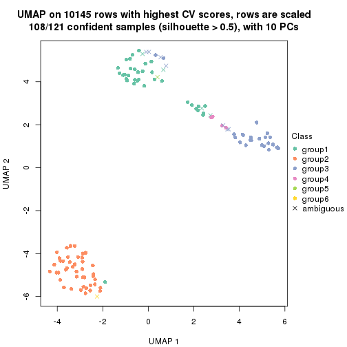
Following heatmap shows how subgroups are split when increasing k:
collect_classes(res)
If matrix rows can be associated to genes, consider to use GO_Enrichment(res,
...) to perform function enrichment for the signature genes.
The object with results only for a single top-value method and a single partition method can be extracted as:
res = res_list["CV", "kmeans"]
# you can also extract it by
# res = res_list["CV:kmeans"]
A summary of res and all the functions that can be applied to it:
res
#> A 'ConsensusPartition' object with k = 2, 3, 4, 5, 6.
#> On a matrix with 10145 rows and 121 columns.
#> Top rows (1000, 2000, 3000, 4000, 5000) are extracted by 'CV' method.
#> Subgroups are detected by 'kmeans' method.
#> Performed in total 1250 partitions by row resampling.
#> Best k for subgroups seems to be 3.
#>
#> Following methods can be applied to this 'ConsensusPartition' object:
#> [1] "cola_report" "collect_classes" "collect_plots"
#> [4] "collect_stats" "colnames" "compare_signatures"
#> [7] "consensus_heatmap" "dimension_reduction" "functional_enrichment"
#> [10] "get_anno_col" "get_anno" "get_classes"
#> [13] "get_consensus" "get_matrix" "get_membership"
#> [16] "get_param" "get_signatures" "get_stats"
#> [19] "is_best_k" "is_stable_k" "membership_heatmap"
#> [22] "ncol" "nrow" "plot_ecdf"
#> [25] "rownames" "select_partition_number" "show"
#> [28] "suggest_best_k" "test_to_known_factors"
collect_plots() function collects all the plots made from res for all k (number of partitions)
into one single page to provide an easy and fast comparison between different k.
collect_plots(res)
The plots are:
k and the heatmap of
predicted classes for each k.k.k.k.All the plots in panels can be made by individual functions and they are plotted later in this section.
select_partition_number() produces several plots showing different
statistics for choosing “optimized” k. There are following statistics:
k;k, the area increased is defined as \(A_k - A_{k-1}\).The detailed explanations of these statistics can be found in the cola vignette.
Generally speaking, lower PAC score, higher mean silhouette score or higher
concordance corresponds to better partition. Rand index and Jaccard index
measure how similar the current partition is compared to partition with k-1.
If they are too similar, we won't accept k is better than k-1.
select_partition_number(res)
The numeric values for all these statistics can be obtained by get_stats().
get_stats(res)
#> k 1-PAC mean_silhouette concordance area_increased Rand Jaccard
#> 2 2 0.382 0.905 0.925 0.4770 0.525 0.525
#> 3 3 0.950 0.938 0.933 0.3680 0.809 0.636
#> 4 4 0.801 0.829 0.859 0.1049 1.000 1.000
#> 5 5 0.734 0.544 0.773 0.0551 0.933 0.802
#> 6 6 0.725 0.636 0.716 0.0422 0.875 0.567
suggest_best_k() suggests the best \(k\) based on these statistics. The rules are as follows:
NA.suggest_best_k(res)
#> [1] 3
Following shows the table of the partitions (You need to click the show/hide
code output link to see it). The membership matrix (columns with name p*)
is inferred by
clue::cl_consensus()
function with the SE method. Basically the value in the membership matrix
represents the probability to belong to a certain group. The finall class
label for an item is determined with the group with highest probability it
belongs to.
In get_classes() function, the entropy is calculated from the membership
matrix and the silhouette score is calculated from the consensus matrix.
cbind(get_classes(res, k = 2), get_membership(res, k = 2))
#> class entropy silhouette p1 p2
#> SRR2431463 1 0.6148 0.851 0.848 0.152
#> SRR2431462 1 0.6148 0.851 0.848 0.152
#> SRR2431461 1 0.0672 0.868 0.992 0.008
#> SRR2431459 1 0.6148 0.851 0.848 0.152
#> SRR2431460 1 0.6148 0.851 0.848 0.152
#> SRR2431458 1 0.2043 0.870 0.968 0.032
#> SRR2431457 1 0.6148 0.851 0.848 0.152
#> SRR2431455 1 0.6148 0.851 0.848 0.152
#> SRR2431456 1 0.6148 0.851 0.848 0.152
#> SRR2431454 1 0.6048 0.855 0.852 0.148
#> SRR2431453 1 0.6148 0.851 0.848 0.152
#> SRR2431451 1 0.5059 0.865 0.888 0.112
#> SRR2431452 1 0.6048 0.855 0.852 0.148
#> SRR2431450 1 0.6148 0.851 0.848 0.152
#> SRR2431449 1 0.6148 0.851 0.848 0.152
#> SRR2431448 1 0.6148 0.851 0.848 0.152
#> SRR2431446 1 0.0672 0.868 0.992 0.008
#> SRR2431447 1 0.0672 0.868 0.992 0.008
#> SRR2431445 1 0.6148 0.851 0.848 0.152
#> SRR2431444 1 0.5946 0.857 0.856 0.144
#> SRR2431443 1 0.5294 0.860 0.880 0.120
#> SRR2431442 1 0.6148 0.851 0.848 0.152
#> SRR2431441 1 0.6148 0.851 0.848 0.152
#> SRR2431440 1 0.5294 0.867 0.880 0.120
#> SRR2431439 1 0.0672 0.868 0.992 0.008
#> SRR2431438 1 0.6148 0.851 0.848 0.152
#> SRR2431437 1 0.6148 0.851 0.848 0.152
#> SRR2431436 1 0.6048 0.855 0.852 0.148
#> SRR2431435 1 0.4690 0.868 0.900 0.100
#> SRR2431434 1 0.6148 0.851 0.848 0.152
#> SRR2431433 1 0.6048 0.853 0.852 0.148
#> SRR2431432 1 0.6148 0.851 0.848 0.152
#> SRR2431431 1 0.0672 0.868 0.992 0.008
#> SRR2431430 1 0.0672 0.868 0.992 0.008
#> SRR2431429 1 0.6148 0.851 0.848 0.152
#> SRR2431428 1 0.6148 0.851 0.848 0.152
#> SRR2431427 2 0.0000 0.993 0.000 1.000
#> SRR2431426 2 0.0000 0.993 0.000 1.000
#> SRR2431425 2 0.0000 0.993 0.000 1.000
#> SRR2431424 2 0.0000 0.993 0.000 1.000
#> SRR2431423 2 0.0000 0.993 0.000 1.000
#> SRR2431422 2 0.0000 0.993 0.000 1.000
#> SRR2431421 2 0.0000 0.993 0.000 1.000
#> SRR2431420 2 0.0000 0.993 0.000 1.000
#> SRR2431419 2 0.0000 0.993 0.000 1.000
#> SRR2431418 2 0.0000 0.993 0.000 1.000
#> SRR2431417 2 0.0000 0.993 0.000 1.000
#> SRR2431416 2 0.0000 0.993 0.000 1.000
#> SRR2431415 2 0.0000 0.993 0.000 1.000
#> SRR2431414 2 0.0000 0.993 0.000 1.000
#> SRR2431413 2 0.0000 0.993 0.000 1.000
#> SRR2431412 2 0.0000 0.993 0.000 1.000
#> SRR2431411 1 0.7883 0.761 0.764 0.236
#> SRR2431409 2 0.0000 0.993 0.000 1.000
#> SRR2431410 1 0.7056 0.820 0.808 0.192
#> SRR2431408 2 0.0000 0.993 0.000 1.000
#> SRR2431407 2 0.0000 0.993 0.000 1.000
#> SRR2431405 2 0.0000 0.993 0.000 1.000
#> SRR2431406 2 0.0000 0.993 0.000 1.000
#> SRR2431404 2 0.0000 0.993 0.000 1.000
#> SRR2431403 2 0.0000 0.993 0.000 1.000
#> SRR2431402 2 0.0000 0.993 0.000 1.000
#> SRR2431401 2 0.0000 0.993 0.000 1.000
#> SRR2431400 2 0.0000 0.993 0.000 1.000
#> SRR2431399 2 0.0000 0.993 0.000 1.000
#> SRR2431398 2 0.0000 0.993 0.000 1.000
#> SRR2431397 2 0.0000 0.993 0.000 1.000
#> SRR2431396 2 0.0000 0.993 0.000 1.000
#> SRR2431395 2 0.0000 0.993 0.000 1.000
#> SRR2431394 2 0.0000 0.993 0.000 1.000
#> SRR2431393 2 0.0000 0.993 0.000 1.000
#> SRR2431392 2 0.0000 0.993 0.000 1.000
#> SRR2431391 2 0.0000 0.993 0.000 1.000
#> SRR2431390 2 0.0000 0.993 0.000 1.000
#> SRR2431389 2 0.0000 0.993 0.000 1.000
#> SRR2431388 2 0.0000 0.993 0.000 1.000
#> SRR2431387 2 0.0000 0.993 0.000 1.000
#> SRR2431386 2 0.0000 0.993 0.000 1.000
#> SRR2431385 2 0.6048 0.799 0.148 0.852
#> SRR2431383 2 0.0000 0.993 0.000 1.000
#> SRR2431384 2 0.0000 0.993 0.000 1.000
#> SRR2431382 2 0.0000 0.993 0.000 1.000
#> SRR2431381 2 0.0000 0.993 0.000 1.000
#> SRR2431380 2 0.4939 0.856 0.108 0.892
#> SRR2431379 1 0.6048 0.855 0.852 0.148
#> SRR2431378 1 0.5629 0.861 0.868 0.132
#> SRR2431376 1 0.2236 0.871 0.964 0.036
#> SRR2431377 1 0.0376 0.867 0.996 0.004
#> SRR2431375 1 0.6048 0.855 0.852 0.148
#> SRR2431374 1 0.6148 0.851 0.848 0.152
#> SRR2431372 1 0.6048 0.855 0.852 0.148
#> SRR2431371 1 0.0672 0.867 0.992 0.008
#> SRR2431373 1 0.6048 0.855 0.852 0.148
#> SRR2431370 1 0.6048 0.855 0.852 0.148
#> SRR2431369 1 0.0672 0.867 0.992 0.008
#> SRR2431368 1 0.6048 0.855 0.852 0.148
#> SRR2431367 1 0.6048 0.855 0.852 0.148
#> SRR2431366 1 0.0672 0.868 0.992 0.008
#> SRR2431365 1 0.0672 0.868 0.992 0.008
#> SRR2431364 1 0.6048 0.855 0.852 0.148
#> SRR2431363 1 0.6048 0.855 0.852 0.148
#> SRR2431361 1 0.2778 0.871 0.952 0.048
#> SRR2431362 1 0.6048 0.855 0.852 0.148
#> SRR2431360 1 0.6048 0.855 0.852 0.148
#> SRR2431359 1 0.4690 0.868 0.900 0.100
#> SRR2431358 1 0.6148 0.851 0.848 0.152
#> SRR2431357 1 0.6148 0.851 0.848 0.152
#> SRR2431355 1 0.0672 0.868 0.992 0.008
#> SRR2431356 1 0.6048 0.855 0.852 0.148
#> SRR2431354 1 0.6048 0.855 0.852 0.148
#> SRR2431353 1 0.1414 0.870 0.980 0.020
#> SRR2431352 1 0.6148 0.851 0.848 0.152
#> SRR2431351 1 0.6048 0.855 0.852 0.148
#> SRR2431350 1 0.6048 0.855 0.852 0.148
#> SRR2431349 1 0.6048 0.855 0.852 0.148
#> SRR2431348 1 0.6048 0.855 0.852 0.148
#> SRR2431347 1 0.5629 0.861 0.868 0.132
#> SRR2431346 1 0.6048 0.855 0.852 0.148
#> SRR2431345 1 0.6048 0.855 0.852 0.148
#> SRR2431344 1 0.0376 0.867 0.996 0.004
#> SRR2431343 1 0.6148 0.851 0.848 0.152
cbind(get_classes(res, k = 3), get_membership(res, k = 3))
#> class entropy silhouette p1 p2 p3
#> SRR2431463 1 0.0747 0.942 0.984 0.016 0.000
#> SRR2431462 1 0.0747 0.942 0.984 0.016 0.000
#> SRR2431461 1 0.2772 0.887 0.916 0.004 0.080
#> SRR2431459 1 0.0747 0.942 0.984 0.016 0.000
#> SRR2431460 1 0.0747 0.942 0.984 0.016 0.000
#> SRR2431458 1 0.5656 0.620 0.712 0.004 0.284
#> SRR2431457 1 0.0747 0.942 0.984 0.016 0.000
#> SRR2431455 1 0.0747 0.942 0.984 0.016 0.000
#> SRR2431456 1 0.0747 0.942 0.984 0.016 0.000
#> SRR2431454 3 0.3445 0.989 0.088 0.016 0.896
#> SRR2431453 1 0.0747 0.942 0.984 0.016 0.000
#> SRR2431451 3 0.3377 0.986 0.092 0.012 0.896
#> SRR2431452 3 0.3502 0.991 0.084 0.020 0.896
#> SRR2431450 1 0.0747 0.942 0.984 0.016 0.000
#> SRR2431449 1 0.0747 0.942 0.984 0.016 0.000
#> SRR2431448 1 0.0747 0.942 0.984 0.016 0.000
#> SRR2431446 1 0.3983 0.824 0.852 0.004 0.144
#> SRR2431447 1 0.5845 0.572 0.688 0.004 0.308
#> SRR2431445 1 0.0747 0.942 0.984 0.016 0.000
#> SRR2431444 3 0.3445 0.989 0.088 0.016 0.896
#> SRR2431443 1 0.0848 0.939 0.984 0.008 0.008
#> SRR2431442 1 0.0747 0.942 0.984 0.016 0.000
#> SRR2431441 1 0.0747 0.942 0.984 0.016 0.000
#> SRR2431440 1 0.6543 0.459 0.640 0.016 0.344
#> SRR2431439 1 0.3030 0.876 0.904 0.004 0.092
#> SRR2431438 1 0.0747 0.942 0.984 0.016 0.000
#> SRR2431437 1 0.0747 0.942 0.984 0.016 0.000
#> SRR2431436 3 0.3445 0.989 0.088 0.016 0.896
#> SRR2431435 3 0.3295 0.982 0.096 0.008 0.896
#> SRR2431434 1 0.0747 0.942 0.984 0.016 0.000
#> SRR2431433 1 0.0829 0.941 0.984 0.012 0.004
#> SRR2431432 1 0.0747 0.942 0.984 0.016 0.000
#> SRR2431431 1 0.4842 0.717 0.776 0.000 0.224
#> SRR2431430 1 0.5070 0.721 0.772 0.004 0.224
#> SRR2431429 1 0.0747 0.942 0.984 0.016 0.000
#> SRR2431428 1 0.1170 0.940 0.976 0.016 0.008
#> SRR2431427 2 0.0237 0.965 0.000 0.996 0.004
#> SRR2431426 2 0.2537 0.954 0.000 0.920 0.080
#> SRR2431425 2 0.0000 0.966 0.000 1.000 0.000
#> SRR2431424 2 0.2356 0.957 0.000 0.928 0.072
#> SRR2431423 2 0.0000 0.966 0.000 1.000 0.000
#> SRR2431422 2 0.2066 0.959 0.000 0.940 0.060
#> SRR2431421 2 0.2537 0.954 0.000 0.920 0.080
#> SRR2431420 2 0.0000 0.966 0.000 1.000 0.000
#> SRR2431419 2 0.0237 0.966 0.000 0.996 0.004
#> SRR2431418 2 0.0592 0.966 0.000 0.988 0.012
#> SRR2431417 2 0.0000 0.966 0.000 1.000 0.000
#> SRR2431416 2 0.2537 0.955 0.000 0.920 0.080
#> SRR2431415 2 0.0000 0.966 0.000 1.000 0.000
#> SRR2431414 2 0.2537 0.954 0.000 0.920 0.080
#> SRR2431413 2 0.2625 0.953 0.000 0.916 0.084
#> SRR2431412 2 0.0000 0.966 0.000 1.000 0.000
#> SRR2431411 3 0.1129 0.892 0.004 0.020 0.976
#> SRR2431409 2 0.0000 0.966 0.000 1.000 0.000
#> SRR2431410 1 0.2339 0.913 0.940 0.048 0.012
#> SRR2431408 2 0.0000 0.966 0.000 1.000 0.000
#> SRR2431407 2 0.0237 0.966 0.000 0.996 0.004
#> SRR2431405 2 0.2625 0.953 0.000 0.916 0.084
#> SRR2431406 2 0.0237 0.966 0.000 0.996 0.004
#> SRR2431404 2 0.2537 0.954 0.000 0.920 0.080
#> SRR2431403 2 0.0424 0.966 0.000 0.992 0.008
#> SRR2431402 2 0.0000 0.966 0.000 1.000 0.000
#> SRR2431401 2 0.0000 0.966 0.000 1.000 0.000
#> SRR2431400 2 0.0747 0.965 0.000 0.984 0.016
#> SRR2431399 2 0.2537 0.954 0.000 0.920 0.080
#> SRR2431398 2 0.0000 0.966 0.000 1.000 0.000
#> SRR2431397 2 0.0000 0.966 0.000 1.000 0.000
#> SRR2431396 2 0.2537 0.954 0.000 0.920 0.080
#> SRR2431395 2 0.2165 0.958 0.000 0.936 0.064
#> SRR2431394 2 0.2448 0.955 0.000 0.924 0.076
#> SRR2431393 2 0.2537 0.954 0.000 0.920 0.080
#> SRR2431392 2 0.2537 0.954 0.000 0.920 0.080
#> SRR2431391 2 0.0000 0.966 0.000 1.000 0.000
#> SRR2431390 2 0.2537 0.954 0.000 0.920 0.080
#> SRR2431389 2 0.0000 0.966 0.000 1.000 0.000
#> SRR2431388 2 0.2537 0.954 0.000 0.920 0.080
#> SRR2431387 2 0.0237 0.965 0.000 0.996 0.004
#> SRR2431386 2 0.0000 0.966 0.000 1.000 0.000
#> SRR2431385 2 0.6274 0.343 0.000 0.544 0.456
#> SRR2431383 2 0.2625 0.953 0.000 0.916 0.084
#> SRR2431384 2 0.0000 0.966 0.000 1.000 0.000
#> SRR2431382 2 0.0892 0.965 0.000 0.980 0.020
#> SRR2431381 2 0.0424 0.966 0.000 0.992 0.008
#> SRR2431380 2 0.0848 0.956 0.008 0.984 0.008
#> SRR2431379 3 0.3502 0.991 0.084 0.020 0.896
#> SRR2431378 3 0.3445 0.989 0.088 0.016 0.896
#> SRR2431376 3 0.2878 0.974 0.096 0.000 0.904
#> SRR2431377 1 0.1267 0.934 0.972 0.004 0.024
#> SRR2431375 3 0.3502 0.991 0.084 0.020 0.896
#> SRR2431374 1 0.1170 0.940 0.976 0.016 0.008
#> SRR2431372 3 0.3502 0.991 0.084 0.020 0.896
#> SRR2431371 3 0.2878 0.974 0.096 0.000 0.904
#> SRR2431373 3 0.3502 0.991 0.084 0.020 0.896
#> SRR2431370 3 0.3502 0.991 0.084 0.020 0.896
#> SRR2431369 3 0.2878 0.974 0.096 0.000 0.904
#> SRR2431368 3 0.3502 0.991 0.084 0.020 0.896
#> SRR2431367 3 0.3502 0.991 0.084 0.020 0.896
#> SRR2431366 1 0.1129 0.936 0.976 0.004 0.020
#> SRR2431365 1 0.1129 0.936 0.976 0.004 0.020
#> SRR2431364 3 0.3502 0.991 0.084 0.020 0.896
#> SRR2431363 3 0.3502 0.991 0.084 0.020 0.896
#> SRR2431361 3 0.2878 0.974 0.096 0.000 0.904
#> SRR2431362 3 0.3502 0.991 0.084 0.020 0.896
#> SRR2431360 3 0.3502 0.991 0.084 0.020 0.896
#> SRR2431359 3 0.3295 0.982 0.096 0.008 0.896
#> SRR2431358 1 0.1170 0.940 0.976 0.016 0.008
#> SRR2431357 1 0.1170 0.940 0.976 0.016 0.008
#> SRR2431355 1 0.1129 0.936 0.976 0.004 0.020
#> SRR2431356 3 0.3502 0.991 0.084 0.020 0.896
#> SRR2431354 3 0.3502 0.991 0.084 0.020 0.896
#> SRR2431353 1 0.1129 0.936 0.976 0.004 0.020
#> SRR2431352 1 0.1170 0.940 0.976 0.016 0.008
#> SRR2431351 3 0.3502 0.991 0.084 0.020 0.896
#> SRR2431350 3 0.3502 0.991 0.084 0.020 0.896
#> SRR2431349 3 0.3502 0.991 0.084 0.020 0.896
#> SRR2431348 3 0.3502 0.991 0.084 0.020 0.896
#> SRR2431347 3 0.3445 0.989 0.088 0.016 0.896
#> SRR2431346 3 0.3502 0.991 0.084 0.020 0.896
#> SRR2431345 3 0.3502 0.991 0.084 0.020 0.896
#> SRR2431344 1 0.5480 0.663 0.732 0.004 0.264
#> SRR2431343 1 0.1170 0.940 0.976 0.016 0.008
cbind(get_classes(res, k = 4), get_membership(res, k = 4))
#> class entropy silhouette p1 p2 p3 p4
#> SRR2431463 1 0.1792 0.827 0.932 0.000 0.000 NA
#> SRR2431462 1 0.0000 0.828 1.000 0.000 0.000 NA
#> SRR2431461 1 0.4127 0.754 0.824 0.000 0.052 NA
#> SRR2431459 1 0.0188 0.827 0.996 0.000 0.000 NA
#> SRR2431460 1 0.1474 0.828 0.948 0.000 0.000 NA
#> SRR2431458 1 0.5574 0.656 0.728 0.000 0.148 NA
#> SRR2431457 1 0.0000 0.828 1.000 0.000 0.000 NA
#> SRR2431455 1 0.1792 0.827 0.932 0.000 0.000 NA
#> SRR2431456 1 0.0188 0.828 0.996 0.000 0.000 NA
#> SRR2431454 3 0.4188 0.820 0.064 0.000 0.824 NA
#> SRR2431453 1 0.0336 0.827 0.992 0.000 0.000 NA
#> SRR2431451 3 0.6706 0.476 0.288 0.000 0.588 NA
#> SRR2431452 3 0.2915 0.872 0.028 0.000 0.892 NA
#> SRR2431450 1 0.1792 0.827 0.932 0.000 0.000 NA
#> SRR2431449 1 0.1474 0.828 0.948 0.000 0.000 NA
#> SRR2431448 1 0.0188 0.827 0.996 0.000 0.000 NA
#> SRR2431446 1 0.4282 0.748 0.816 0.000 0.060 NA
#> SRR2431447 1 0.5792 0.629 0.708 0.000 0.168 NA
#> SRR2431445 1 0.0188 0.827 0.996 0.000 0.000 NA
#> SRR2431444 3 0.2706 0.878 0.020 0.000 0.900 NA
#> SRR2431443 1 0.0188 0.827 0.996 0.000 0.000 NA
#> SRR2431442 1 0.1792 0.827 0.932 0.000 0.000 NA
#> SRR2431441 1 0.1557 0.828 0.944 0.000 0.000 NA
#> SRR2431440 1 0.5874 0.624 0.700 0.000 0.176 NA
#> SRR2431439 1 0.4123 0.757 0.820 0.000 0.044 NA
#> SRR2431438 1 0.0000 0.828 1.000 0.000 0.000 NA
#> SRR2431437 1 0.2647 0.787 0.880 0.000 0.000 NA
#> SRR2431436 3 0.2473 0.882 0.012 0.000 0.908 NA
#> SRR2431435 3 0.5480 0.727 0.140 0.000 0.736 NA
#> SRR2431434 1 0.1792 0.827 0.932 0.000 0.000 NA
#> SRR2431433 1 0.0921 0.821 0.972 0.000 0.000 NA
#> SRR2431432 1 0.0188 0.827 0.996 0.000 0.000 NA
#> SRR2431431 1 0.5998 0.644 0.668 0.000 0.092 NA
#> SRR2431430 1 0.5051 0.706 0.768 0.000 0.100 NA
#> SRR2431429 1 0.1389 0.828 0.952 0.000 0.000 NA
#> SRR2431428 1 0.4866 0.703 0.596 0.000 0.000 NA
#> SRR2431427 2 0.1004 0.895 0.000 0.972 0.004 NA
#> SRR2431426 2 0.4164 0.854 0.000 0.736 0.000 NA
#> SRR2431425 2 0.1305 0.891 0.000 0.960 0.004 NA
#> SRR2431424 2 0.4072 0.857 0.000 0.748 0.000 NA
#> SRR2431423 2 0.0524 0.896 0.000 0.988 0.004 NA
#> SRR2431422 2 0.3726 0.867 0.000 0.788 0.000 NA
#> SRR2431421 2 0.4134 0.853 0.000 0.740 0.000 NA
#> SRR2431420 2 0.1305 0.893 0.000 0.960 0.004 NA
#> SRR2431419 2 0.1004 0.898 0.000 0.972 0.004 NA
#> SRR2431418 2 0.1637 0.896 0.000 0.940 0.000 NA
#> SRR2431417 2 0.0657 0.896 0.000 0.984 0.004 NA
#> SRR2431416 2 0.4313 0.855 0.000 0.736 0.004 NA
#> SRR2431415 2 0.1118 0.891 0.000 0.964 0.000 NA
#> SRR2431414 2 0.4164 0.853 0.000 0.736 0.000 NA
#> SRR2431413 2 0.4222 0.850 0.000 0.728 0.000 NA
#> SRR2431412 2 0.0524 0.896 0.000 0.988 0.004 NA
#> SRR2431411 3 0.0336 0.918 0.000 0.000 0.992 NA
#> SRR2431409 2 0.0817 0.893 0.000 0.976 0.000 NA
#> SRR2431410 1 0.5940 0.730 0.640 0.052 0.004 NA
#> SRR2431408 2 0.0817 0.893 0.000 0.976 0.000 NA
#> SRR2431407 2 0.1022 0.891 0.000 0.968 0.000 NA
#> SRR2431405 2 0.4222 0.850 0.000 0.728 0.000 NA
#> SRR2431406 2 0.0592 0.896 0.000 0.984 0.000 NA
#> SRR2431404 2 0.4164 0.856 0.000 0.736 0.000 NA
#> SRR2431403 2 0.0921 0.897 0.000 0.972 0.000 NA
#> SRR2431402 2 0.1305 0.891 0.000 0.960 0.004 NA
#> SRR2431401 2 0.1118 0.897 0.000 0.964 0.000 NA
#> SRR2431400 2 0.1302 0.897 0.000 0.956 0.000 NA
#> SRR2431399 2 0.4134 0.853 0.000 0.740 0.000 NA
#> SRR2431398 2 0.0657 0.897 0.000 0.984 0.004 NA
#> SRR2431397 2 0.1109 0.897 0.000 0.968 0.004 NA
#> SRR2431396 2 0.4134 0.853 0.000 0.740 0.000 NA
#> SRR2431395 2 0.3528 0.874 0.000 0.808 0.000 NA
#> SRR2431394 2 0.4040 0.859 0.000 0.752 0.000 NA
#> SRR2431393 2 0.4103 0.855 0.000 0.744 0.000 NA
#> SRR2431392 2 0.4134 0.853 0.000 0.740 0.000 NA
#> SRR2431391 2 0.0336 0.896 0.000 0.992 0.000 NA
#> SRR2431390 2 0.4134 0.853 0.000 0.740 0.000 NA
#> SRR2431389 2 0.1109 0.897 0.000 0.968 0.004 NA
#> SRR2431388 2 0.4103 0.855 0.000 0.744 0.000 NA
#> SRR2431387 2 0.1576 0.889 0.000 0.948 0.004 NA
#> SRR2431386 2 0.0817 0.893 0.000 0.976 0.000 NA
#> SRR2431385 2 0.7692 0.468 0.000 0.456 0.272 NA
#> SRR2431383 2 0.4222 0.850 0.000 0.728 0.000 NA
#> SRR2431384 2 0.0817 0.893 0.000 0.976 0.000 NA
#> SRR2431382 2 0.1792 0.893 0.000 0.932 0.000 NA
#> SRR2431381 2 0.0817 0.897 0.000 0.976 0.000 NA
#> SRR2431380 2 0.1118 0.890 0.000 0.964 0.000 NA
#> SRR2431379 3 0.0336 0.923 0.008 0.000 0.992 NA
#> SRR2431378 3 0.2271 0.896 0.008 0.000 0.916 NA
#> SRR2431376 3 0.5040 0.642 0.008 0.000 0.628 NA
#> SRR2431377 1 0.5163 0.656 0.516 0.000 0.004 NA
#> SRR2431375 3 0.0336 0.923 0.008 0.000 0.992 NA
#> SRR2431374 1 0.4866 0.703 0.596 0.000 0.000 NA
#> SRR2431372 3 0.0336 0.923 0.008 0.000 0.992 NA
#> SRR2431371 3 0.5172 0.594 0.008 0.000 0.588 NA
#> SRR2431373 3 0.0336 0.923 0.008 0.000 0.992 NA
#> SRR2431370 3 0.0804 0.921 0.008 0.000 0.980 NA
#> SRR2431369 3 0.4877 0.682 0.008 0.000 0.664 NA
#> SRR2431368 3 0.0336 0.923 0.008 0.000 0.992 NA
#> SRR2431367 3 0.0336 0.923 0.008 0.000 0.992 NA
#> SRR2431366 1 0.4994 0.659 0.520 0.000 0.000 NA
#> SRR2431365 1 0.4994 0.659 0.520 0.000 0.000 NA
#> SRR2431364 3 0.0336 0.923 0.008 0.000 0.992 NA
#> SRR2431363 3 0.0336 0.923 0.008 0.000 0.992 NA
#> SRR2431361 3 0.4539 0.739 0.008 0.000 0.720 NA
#> SRR2431362 3 0.0336 0.923 0.008 0.000 0.992 NA
#> SRR2431360 3 0.0336 0.923 0.008 0.000 0.992 NA
#> SRR2431359 3 0.1807 0.907 0.008 0.000 0.940 NA
#> SRR2431358 1 0.4866 0.703 0.596 0.000 0.000 NA
#> SRR2431357 1 0.4866 0.703 0.596 0.000 0.000 NA
#> SRR2431355 1 0.4907 0.701 0.580 0.000 0.000 NA
#> SRR2431356 3 0.0804 0.921 0.008 0.000 0.980 NA
#> SRR2431354 3 0.0336 0.923 0.008 0.000 0.992 NA
#> SRR2431353 1 0.4790 0.723 0.620 0.000 0.000 NA
#> SRR2431352 1 0.4898 0.698 0.584 0.000 0.000 NA
#> SRR2431351 3 0.0336 0.923 0.008 0.000 0.992 NA
#> SRR2431350 3 0.0804 0.921 0.008 0.000 0.980 NA
#> SRR2431349 3 0.0336 0.923 0.008 0.000 0.992 NA
#> SRR2431348 3 0.0804 0.921 0.008 0.000 0.980 NA
#> SRR2431347 3 0.1151 0.917 0.008 0.000 0.968 NA
#> SRR2431346 3 0.1890 0.905 0.008 0.000 0.936 NA
#> SRR2431345 3 0.0336 0.923 0.008 0.000 0.992 NA
#> SRR2431344 1 0.6936 0.595 0.564 0.000 0.144 NA
#> SRR2431343 1 0.4866 0.703 0.596 0.000 0.000 NA
cbind(get_classes(res, k = 5), get_membership(res, k = 5))
#> class entropy silhouette p1 p2 p3 p4 p5
#> SRR2431463 1 0.2645 0.70291 0.888 0.000 0.000 0.044 0.068
#> SRR2431462 1 0.0609 0.74631 0.980 0.000 0.000 0.000 0.020
#> SRR2431461 1 0.4616 0.63251 0.752 0.000 0.016 0.052 0.180
#> SRR2431459 1 0.0000 0.74883 1.000 0.000 0.000 0.000 0.000
#> SRR2431460 1 0.2719 0.70829 0.884 0.000 0.000 0.048 0.068
#> SRR2431458 1 0.6071 0.53642 0.660 0.000 0.108 0.052 0.180
#> SRR2431457 1 0.0510 0.74728 0.984 0.000 0.000 0.000 0.016
#> SRR2431455 1 0.2645 0.70291 0.888 0.000 0.000 0.044 0.068
#> SRR2431456 1 0.0693 0.74760 0.980 0.000 0.000 0.008 0.012
#> SRR2431454 3 0.5864 0.60426 0.088 0.000 0.676 0.052 0.184
#> SRR2431453 1 0.0579 0.74836 0.984 0.000 0.000 0.008 0.008
#> SRR2431451 3 0.7424 0.11762 0.336 0.000 0.428 0.052 0.184
#> SRR2431452 3 0.2956 0.81342 0.012 0.000 0.872 0.020 0.096
#> SRR2431450 1 0.2580 0.70596 0.892 0.000 0.000 0.044 0.064
#> SRR2431449 1 0.2645 0.70291 0.888 0.000 0.000 0.044 0.068
#> SRR2431448 1 0.0000 0.74883 1.000 0.000 0.000 0.000 0.000
#> SRR2431446 1 0.4971 0.62196 0.740 0.000 0.040 0.048 0.172
#> SRR2431447 1 0.6102 0.53251 0.656 0.000 0.108 0.052 0.184
#> SRR2431445 1 0.0290 0.74842 0.992 0.000 0.000 0.000 0.008
#> SRR2431444 3 0.3043 0.80702 0.008 0.000 0.864 0.024 0.104
#> SRR2431443 1 0.0771 0.74626 0.976 0.000 0.000 0.004 0.020
#> SRR2431442 1 0.2580 0.70596 0.892 0.000 0.000 0.044 0.064
#> SRR2431441 1 0.2504 0.70892 0.896 0.000 0.000 0.040 0.064
#> SRR2431440 1 0.5963 0.54988 0.668 0.000 0.096 0.052 0.184
#> SRR2431439 1 0.4481 0.63738 0.760 0.000 0.012 0.052 0.176
#> SRR2431438 1 0.0510 0.74728 0.984 0.000 0.000 0.000 0.016
#> SRR2431437 1 0.3821 0.66770 0.800 0.000 0.000 0.052 0.148
#> SRR2431436 3 0.2900 0.80697 0.000 0.000 0.864 0.028 0.108
#> SRR2431435 3 0.6871 0.43311 0.196 0.000 0.568 0.052 0.184
#> SRR2431434 1 0.2580 0.70596 0.892 0.000 0.000 0.044 0.064
#> SRR2431433 1 0.1357 0.73619 0.948 0.000 0.000 0.004 0.048
#> SRR2431432 1 0.0000 0.74883 1.000 0.000 0.000 0.000 0.000
#> SRR2431431 1 0.7112 0.35460 0.480 0.000 0.036 0.184 0.300
#> SRR2431430 1 0.5751 0.57825 0.684 0.000 0.060 0.068 0.188
#> SRR2431429 1 0.2514 0.70855 0.896 0.000 0.000 0.044 0.060
#> SRR2431428 1 0.6099 -0.49065 0.452 0.000 0.000 0.424 0.124
#> SRR2431427 2 0.1106 0.63305 0.000 0.964 0.000 0.024 0.012
#> SRR2431426 2 0.4307 -0.07815 0.000 0.500 0.000 0.000 0.500
#> SRR2431425 2 0.1444 0.63060 0.000 0.948 0.000 0.040 0.012
#> SRR2431424 2 0.4549 -0.00368 0.000 0.528 0.000 0.008 0.464
#> SRR2431423 2 0.0671 0.63783 0.000 0.980 0.000 0.004 0.016
#> SRR2431422 2 0.4415 0.10241 0.000 0.604 0.000 0.008 0.388
#> SRR2431421 2 0.4452 -0.08010 0.000 0.500 0.000 0.004 0.496
#> SRR2431420 2 0.1568 0.63495 0.000 0.944 0.000 0.036 0.020
#> SRR2431419 2 0.2124 0.62447 0.000 0.916 0.000 0.028 0.056
#> SRR2431418 2 0.2438 0.62580 0.000 0.900 0.000 0.040 0.060
#> SRR2431417 2 0.1568 0.63477 0.000 0.944 0.000 0.036 0.020
#> SRR2431416 2 0.5039 -0.03611 0.000 0.512 0.000 0.032 0.456
#> SRR2431415 2 0.1648 0.62740 0.000 0.940 0.000 0.040 0.020
#> SRR2431414 2 0.4562 -0.07376 0.000 0.500 0.000 0.008 0.492
#> SRR2431413 2 0.4659 -0.07247 0.000 0.500 0.000 0.012 0.488
#> SRR2431412 2 0.1568 0.63594 0.000 0.944 0.000 0.036 0.020
#> SRR2431411 3 0.0000 0.89262 0.000 0.000 1.000 0.000 0.000
#> SRR2431409 2 0.1386 0.63291 0.000 0.952 0.000 0.032 0.016
#> SRR2431410 1 0.7201 -0.37778 0.416 0.124 0.000 0.400 0.060
#> SRR2431408 2 0.1661 0.63297 0.000 0.940 0.000 0.036 0.024
#> SRR2431407 2 0.1597 0.63262 0.000 0.940 0.000 0.048 0.012
#> SRR2431405 2 0.4562 -0.07432 0.000 0.500 0.000 0.008 0.492
#> SRR2431406 2 0.1485 0.64014 0.000 0.948 0.000 0.020 0.032
#> SRR2431404 2 0.4867 -0.00216 0.000 0.544 0.000 0.024 0.432
#> SRR2431403 2 0.2149 0.63225 0.000 0.916 0.000 0.036 0.048
#> SRR2431402 2 0.1648 0.62577 0.000 0.940 0.000 0.040 0.020
#> SRR2431401 2 0.2228 0.63113 0.000 0.912 0.000 0.040 0.048
#> SRR2431400 2 0.2473 0.62223 0.000 0.896 0.000 0.032 0.072
#> SRR2431399 2 0.4307 -0.07815 0.000 0.500 0.000 0.000 0.500
#> SRR2431398 2 0.1568 0.63610 0.000 0.944 0.000 0.020 0.036
#> SRR2431397 2 0.1579 0.63458 0.000 0.944 0.000 0.032 0.024
#> SRR2431396 2 0.4452 -0.08010 0.000 0.500 0.000 0.004 0.496
#> SRR2431395 2 0.4608 0.27739 0.000 0.640 0.000 0.024 0.336
#> SRR2431394 2 0.4446 -0.02947 0.000 0.520 0.000 0.004 0.476
#> SRR2431393 2 0.4450 -0.06400 0.000 0.508 0.000 0.004 0.488
#> SRR2431392 2 0.4451 -0.07018 0.000 0.504 0.000 0.004 0.492
#> SRR2431391 2 0.0404 0.64017 0.000 0.988 0.000 0.000 0.012
#> SRR2431390 2 0.4562 -0.07271 0.000 0.500 0.000 0.008 0.492
#> SRR2431389 2 0.2153 0.62686 0.000 0.916 0.000 0.040 0.044
#> SRR2431388 2 0.4448 -0.05367 0.000 0.516 0.000 0.004 0.480
#> SRR2431387 2 0.1893 0.61465 0.000 0.928 0.000 0.048 0.024
#> SRR2431386 2 0.1568 0.63439 0.000 0.944 0.000 0.036 0.020
#> SRR2431385 5 0.6385 0.00000 0.000 0.296 0.200 0.000 0.504
#> SRR2431383 2 0.4659 -0.07666 0.000 0.500 0.000 0.012 0.488
#> SRR2431384 2 0.1579 0.63408 0.000 0.944 0.000 0.032 0.024
#> SRR2431382 2 0.3229 0.57987 0.000 0.840 0.000 0.032 0.128
#> SRR2431381 2 0.1300 0.64148 0.000 0.956 0.000 0.016 0.028
#> SRR2431380 2 0.1725 0.62320 0.000 0.936 0.000 0.044 0.020
#> SRR2431379 3 0.0404 0.89083 0.000 0.000 0.988 0.000 0.012
#> SRR2431378 3 0.3810 0.74456 0.000 0.000 0.788 0.176 0.036
#> SRR2431376 4 0.5028 0.09322 0.000 0.000 0.400 0.564 0.036
#> SRR2431377 4 0.3884 0.65485 0.288 0.000 0.000 0.708 0.004
#> SRR2431375 3 0.0000 0.89262 0.000 0.000 1.000 0.000 0.000
#> SRR2431374 4 0.6060 0.57782 0.384 0.000 0.000 0.492 0.124
#> SRR2431372 3 0.0000 0.89262 0.000 0.000 1.000 0.000 0.000
#> SRR2431371 4 0.4880 0.21847 0.000 0.000 0.348 0.616 0.036
#> SRR2431373 3 0.0000 0.89262 0.000 0.000 1.000 0.000 0.000
#> SRR2431370 3 0.0898 0.88631 0.000 0.000 0.972 0.008 0.020
#> SRR2431369 4 0.5148 -0.01016 0.000 0.000 0.432 0.528 0.040
#> SRR2431368 3 0.0404 0.89083 0.000 0.000 0.988 0.000 0.012
#> SRR2431367 3 0.0510 0.88997 0.000 0.000 0.984 0.000 0.016
#> SRR2431366 4 0.4003 0.65565 0.288 0.000 0.000 0.704 0.008
#> SRR2431365 4 0.3884 0.65617 0.288 0.000 0.000 0.708 0.004
#> SRR2431364 3 0.0000 0.89262 0.000 0.000 1.000 0.000 0.000
#> SRR2431363 3 0.0000 0.89262 0.000 0.000 1.000 0.000 0.000
#> SRR2431361 3 0.5096 0.20464 0.000 0.000 0.520 0.444 0.036
#> SRR2431362 3 0.0000 0.89262 0.000 0.000 1.000 0.000 0.000
#> SRR2431360 3 0.0000 0.89262 0.000 0.000 1.000 0.000 0.000
#> SRR2431359 3 0.2482 0.84077 0.000 0.000 0.892 0.084 0.024
#> SRR2431358 4 0.6094 0.57654 0.384 0.000 0.000 0.488 0.128
#> SRR2431357 4 0.6032 0.59476 0.368 0.000 0.000 0.508 0.124
#> SRR2431355 4 0.4718 0.61120 0.344 0.000 0.000 0.628 0.028
#> SRR2431356 3 0.0992 0.88498 0.000 0.000 0.968 0.008 0.024
#> SRR2431354 3 0.0000 0.89262 0.000 0.000 1.000 0.000 0.000
#> SRR2431353 4 0.5010 0.58464 0.392 0.000 0.000 0.572 0.036
#> SRR2431352 4 0.5684 0.63002 0.340 0.000 0.000 0.564 0.096
#> SRR2431351 3 0.0000 0.89262 0.000 0.000 1.000 0.000 0.000
#> SRR2431350 3 0.0992 0.88498 0.000 0.000 0.968 0.008 0.024
#> SRR2431349 3 0.0000 0.89262 0.000 0.000 1.000 0.000 0.000
#> SRR2431348 3 0.1082 0.88353 0.000 0.000 0.964 0.008 0.028
#> SRR2431347 3 0.2036 0.85958 0.000 0.000 0.920 0.056 0.024
#> SRR2431346 3 0.2848 0.82089 0.000 0.000 0.868 0.104 0.028
#> SRR2431345 3 0.0000 0.89262 0.000 0.000 1.000 0.000 0.000
#> SRR2431344 1 0.7614 0.19496 0.472 0.000 0.084 0.256 0.188
#> SRR2431343 4 0.6060 0.57782 0.384 0.000 0.000 0.492 0.124
cbind(get_classes(res, k = 6), get_membership(res, k = 6))
#> class entropy silhouette p1 p2 p3 p4 p5 p6
#> SRR2431463 6 0.4761 0.971317 0.468 0.000 0.008 0.032 0.000 0.492
#> SRR2431462 1 0.3993 -0.560824 0.592 0.000 0.008 0.000 0.000 0.400
#> SRR2431461 1 0.0622 0.404737 0.980 0.000 0.012 0.008 0.000 0.000
#> SRR2431459 1 0.4127 -0.543122 0.588 0.000 0.008 0.000 0.004 0.400
#> SRR2431460 6 0.5014 0.934373 0.468 0.000 0.008 0.028 0.012 0.484
#> SRR2431458 1 0.1180 0.412342 0.960 0.000 0.024 0.008 0.004 0.004
#> SRR2431457 1 0.4018 -0.584901 0.580 0.000 0.008 0.000 0.000 0.412
#> SRR2431455 6 0.4760 0.967000 0.464 0.000 0.008 0.032 0.000 0.496
#> SRR2431456 1 0.4440 -0.587792 0.556 0.000 0.008 0.000 0.016 0.420
#> SRR2431454 3 0.4310 0.340885 0.472 0.000 0.512 0.000 0.012 0.004
#> SRR2431453 1 0.4151 -0.546033 0.576 0.000 0.008 0.000 0.004 0.412
#> SRR2431451 1 0.3783 0.320735 0.752 0.000 0.220 0.008 0.012 0.008
#> SRR2431452 3 0.3420 0.685450 0.240 0.000 0.748 0.000 0.012 0.000
#> SRR2431450 6 0.4821 0.966501 0.468 0.000 0.008 0.036 0.000 0.488
#> SRR2431449 6 0.4892 0.969277 0.472 0.000 0.008 0.032 0.004 0.484
#> SRR2431448 1 0.4109 -0.527523 0.596 0.000 0.008 0.000 0.004 0.392
#> SRR2431446 1 0.1036 0.409275 0.964 0.000 0.024 0.004 0.000 0.008
#> SRR2431447 1 0.1268 0.413783 0.952 0.000 0.036 0.008 0.004 0.000
#> SRR2431445 1 0.3955 -0.503297 0.608 0.000 0.008 0.000 0.000 0.384
#> SRR2431444 3 0.3541 0.663001 0.260 0.000 0.728 0.000 0.012 0.000
#> SRR2431443 1 0.3847 -0.415070 0.644 0.000 0.008 0.000 0.000 0.348
#> SRR2431442 6 0.4760 0.969349 0.464 0.000 0.008 0.032 0.000 0.496
#> SRR2431441 6 0.4763 0.963328 0.480 0.000 0.008 0.032 0.000 0.480
#> SRR2431440 1 0.1812 0.411542 0.932 0.000 0.040 0.008 0.012 0.008
#> SRR2431439 1 0.1700 0.406938 0.936 0.000 0.024 0.012 0.000 0.028
#> SRR2431438 1 0.4018 -0.584901 0.580 0.000 0.008 0.000 0.000 0.412
#> SRR2431437 1 0.3056 0.231278 0.820 0.000 0.008 0.000 0.012 0.160
#> SRR2431436 3 0.3494 0.672228 0.252 0.000 0.736 0.000 0.012 0.000
#> SRR2431435 1 0.4398 0.000608 0.600 0.000 0.376 0.008 0.012 0.004
#> SRR2431434 6 0.4763 0.967274 0.476 0.000 0.008 0.032 0.000 0.484
#> SRR2431433 1 0.3819 -0.387126 0.652 0.000 0.008 0.000 0.000 0.340
#> SRR2431432 1 0.4118 -0.526848 0.592 0.000 0.008 0.000 0.004 0.396
#> SRR2431431 1 0.6556 0.228142 0.508 0.000 0.008 0.048 0.156 0.280
#> SRR2431430 1 0.2180 0.408684 0.912 0.000 0.028 0.008 0.004 0.048
#> SRR2431429 6 0.4892 0.954420 0.476 0.000 0.008 0.032 0.004 0.480
#> SRR2431428 4 0.6213 0.530101 0.064 0.000 0.008 0.464 0.064 0.400
#> SRR2431427 2 0.2151 0.865788 0.000 0.912 0.000 0.016 0.024 0.048
#> SRR2431426 5 0.3804 0.931271 0.000 0.336 0.000 0.000 0.656 0.008
#> SRR2431425 2 0.1952 0.866985 0.000 0.920 0.000 0.016 0.012 0.052
#> SRR2431424 5 0.3967 0.911675 0.000 0.356 0.000 0.000 0.632 0.012
#> SRR2431423 2 0.1518 0.870575 0.000 0.944 0.000 0.008 0.024 0.024
#> SRR2431422 5 0.4493 0.790479 0.000 0.424 0.000 0.004 0.548 0.024
#> SRR2431421 5 0.4004 0.930775 0.000 0.328 0.000 0.004 0.656 0.012
#> SRR2431420 2 0.2196 0.870488 0.000 0.908 0.000 0.016 0.020 0.056
#> SRR2431419 2 0.3252 0.793905 0.000 0.832 0.000 0.008 0.112 0.048
#> SRR2431418 2 0.2533 0.844410 0.000 0.884 0.000 0.004 0.056 0.056
#> SRR2431417 2 0.2287 0.861930 0.000 0.904 0.000 0.012 0.048 0.036
#> SRR2431416 5 0.4637 0.911346 0.000 0.344 0.000 0.012 0.612 0.032
#> SRR2431415 2 0.1434 0.864291 0.000 0.940 0.000 0.000 0.012 0.048
#> SRR2431414 5 0.4109 0.928723 0.000 0.328 0.000 0.008 0.652 0.012
#> SRR2431413 5 0.4241 0.920488 0.000 0.316 0.000 0.012 0.656 0.016
#> SRR2431412 2 0.2291 0.862799 0.000 0.904 0.000 0.012 0.040 0.044
#> SRR2431411 3 0.0363 0.893654 0.000 0.000 0.988 0.000 0.012 0.000
#> SRR2431409 2 0.1672 0.861021 0.000 0.932 0.000 0.004 0.016 0.048
#> SRR2431410 4 0.8373 0.426095 0.164 0.152 0.000 0.400 0.120 0.164
#> SRR2431408 2 0.1464 0.865151 0.000 0.944 0.000 0.004 0.016 0.036
#> SRR2431407 2 0.1887 0.869791 0.000 0.924 0.000 0.012 0.016 0.048
#> SRR2431405 5 0.4241 0.919720 0.000 0.316 0.000 0.012 0.656 0.016
#> SRR2431406 2 0.2420 0.852459 0.000 0.888 0.000 0.004 0.076 0.032
#> SRR2431404 5 0.4616 0.853329 0.000 0.384 0.000 0.004 0.576 0.036
#> SRR2431403 2 0.2407 0.859983 0.000 0.892 0.000 0.004 0.056 0.048
#> SRR2431402 2 0.1500 0.861931 0.000 0.936 0.000 0.012 0.000 0.052
#> SRR2431401 2 0.2703 0.863403 0.000 0.876 0.000 0.008 0.052 0.064
#> SRR2431400 2 0.2728 0.832288 0.000 0.864 0.000 0.004 0.100 0.032
#> SRR2431399 5 0.3547 0.931581 0.000 0.332 0.000 0.000 0.668 0.000
#> SRR2431398 2 0.2240 0.862358 0.000 0.904 0.000 0.008 0.056 0.032
#> SRR2431397 2 0.3192 0.818227 0.000 0.848 0.000 0.020 0.084 0.048
#> SRR2431396 5 0.3789 0.930875 0.000 0.332 0.000 0.000 0.660 0.008
#> SRR2431395 2 0.4984 -0.575150 0.000 0.476 0.000 0.008 0.468 0.048
#> SRR2431394 5 0.4437 0.915513 0.000 0.348 0.000 0.012 0.620 0.020
#> SRR2431393 5 0.3774 0.930622 0.000 0.328 0.000 0.000 0.664 0.008
#> SRR2431392 5 0.3953 0.930469 0.000 0.328 0.000 0.000 0.656 0.016
#> SRR2431391 2 0.1410 0.872801 0.000 0.944 0.000 0.004 0.044 0.008
#> SRR2431390 5 0.3953 0.930167 0.000 0.328 0.000 0.000 0.656 0.016
#> SRR2431389 2 0.3382 0.813281 0.000 0.836 0.000 0.020 0.080 0.064
#> SRR2431388 5 0.3912 0.930547 0.000 0.340 0.000 0.000 0.648 0.012
#> SRR2431387 2 0.3084 0.789682 0.000 0.860 0.000 0.028 0.056 0.056
#> SRR2431386 2 0.1957 0.866628 0.000 0.920 0.000 0.008 0.024 0.048
#> SRR2431385 5 0.4940 0.629368 0.000 0.144 0.172 0.000 0.676 0.008
#> SRR2431383 5 0.4155 0.919582 0.000 0.316 0.000 0.012 0.660 0.012
#> SRR2431384 2 0.1720 0.866631 0.000 0.928 0.000 0.000 0.032 0.040
#> SRR2431382 2 0.4118 0.585332 0.000 0.732 0.000 0.016 0.220 0.032
#> SRR2431381 2 0.2282 0.862742 0.000 0.900 0.000 0.012 0.068 0.020
#> SRR2431380 2 0.1296 0.863286 0.000 0.948 0.000 0.004 0.004 0.044
#> SRR2431379 3 0.0551 0.898032 0.000 0.000 0.984 0.004 0.008 0.004
#> SRR2431378 3 0.4857 0.488916 0.008 0.000 0.624 0.320 0.036 0.012
#> SRR2431376 4 0.4221 0.548810 0.008 0.000 0.212 0.736 0.032 0.012
#> SRR2431377 4 0.2520 0.712161 0.052 0.000 0.008 0.888 0.000 0.052
#> SRR2431375 3 0.0000 0.900728 0.000 0.000 1.000 0.000 0.000 0.000
#> SRR2431374 4 0.6025 0.658397 0.064 0.000 0.008 0.556 0.064 0.308
#> SRR2431372 3 0.0000 0.900728 0.000 0.000 1.000 0.000 0.000 0.000
#> SRR2431371 4 0.3881 0.600049 0.008 0.000 0.168 0.780 0.032 0.012
#> SRR2431373 3 0.0000 0.900728 0.000 0.000 1.000 0.000 0.000 0.000
#> SRR2431370 3 0.1268 0.886978 0.000 0.000 0.952 0.008 0.036 0.004
#> SRR2431369 4 0.4692 0.464051 0.008 0.000 0.264 0.676 0.036 0.016
#> SRR2431368 3 0.0551 0.898032 0.000 0.000 0.984 0.004 0.008 0.004
#> SRR2431367 3 0.0551 0.898032 0.000 0.000 0.984 0.004 0.008 0.004
#> SRR2431366 4 0.2786 0.715549 0.052 0.000 0.008 0.876 0.004 0.060
#> SRR2431365 4 0.2786 0.715549 0.052 0.000 0.008 0.876 0.004 0.060
#> SRR2431364 3 0.0000 0.900728 0.000 0.000 1.000 0.000 0.000 0.000
#> SRR2431363 3 0.0000 0.900728 0.000 0.000 1.000 0.000 0.000 0.000
#> SRR2431361 4 0.5087 0.101709 0.008 0.000 0.408 0.536 0.036 0.012
#> SRR2431362 3 0.0000 0.900728 0.000 0.000 1.000 0.000 0.000 0.000
#> SRR2431360 3 0.0000 0.900728 0.000 0.000 1.000 0.000 0.000 0.000
#> SRR2431359 3 0.3216 0.812081 0.008 0.000 0.848 0.096 0.036 0.012
#> SRR2431358 4 0.6038 0.654531 0.064 0.000 0.008 0.552 0.064 0.312
#> SRR2431357 4 0.5984 0.666586 0.064 0.000 0.008 0.568 0.064 0.296
#> SRR2431355 4 0.3598 0.702206 0.080 0.000 0.008 0.832 0.024 0.056
#> SRR2431356 3 0.1268 0.886978 0.000 0.000 0.952 0.008 0.036 0.004
#> SRR2431354 3 0.0000 0.900728 0.000 0.000 1.000 0.000 0.000 0.000
#> SRR2431353 4 0.6222 0.624165 0.176 0.000 0.008 0.596 0.060 0.160
#> SRR2431352 4 0.5619 0.692752 0.056 0.000 0.008 0.628 0.060 0.248
#> SRR2431351 3 0.0000 0.900728 0.000 0.000 1.000 0.000 0.000 0.000
#> SRR2431350 3 0.1370 0.885176 0.000 0.000 0.948 0.012 0.036 0.004
#> SRR2431349 3 0.0000 0.900728 0.000 0.000 1.000 0.000 0.000 0.000
#> SRR2431348 3 0.1577 0.881841 0.000 0.000 0.940 0.016 0.036 0.008
#> SRR2431347 3 0.2437 0.844427 0.000 0.000 0.888 0.072 0.036 0.004
#> SRR2431346 3 0.3559 0.758375 0.000 0.000 0.800 0.152 0.036 0.012
#> SRR2431345 3 0.0000 0.900728 0.000 0.000 1.000 0.000 0.000 0.000
#> SRR2431344 1 0.5459 0.281459 0.668 0.000 0.076 0.204 0.020 0.032
#> SRR2431343 4 0.6025 0.658397 0.064 0.000 0.008 0.556 0.064 0.308
Heatmaps for the consensus matrix. It visualizes the probability of two samples to be in a same group.
consensus_heatmap(res, k = 2)
consensus_heatmap(res, k = 3)
consensus_heatmap(res, k = 4)
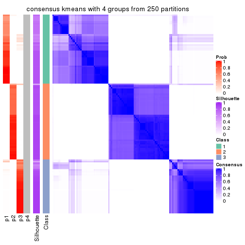
consensus_heatmap(res, k = 5)
consensus_heatmap(res, k = 6)
Heatmaps for the membership of samples in all partitions to see how consistent they are:
membership_heatmap(res, k = 2)
membership_heatmap(res, k = 3)
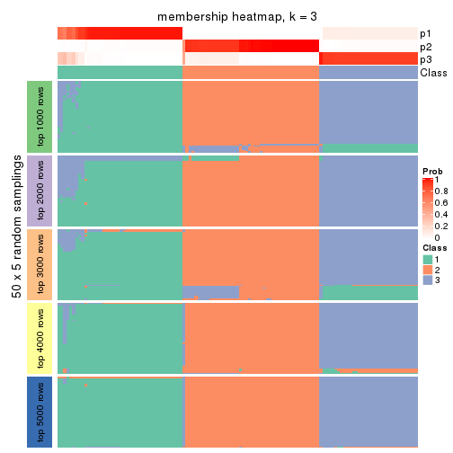
membership_heatmap(res, k = 4)
membership_heatmap(res, k = 5)
membership_heatmap(res, k = 6)
As soon as we have had the classes for columns, we can look for signatures which are significantly different between classes which can be candidate marks for certain classes. Following are the heatmaps for signatures.
Signature heatmaps where rows are scaled:
get_signatures(res, k = 2)
get_signatures(res, k = 3)
get_signatures(res, k = 4)
get_signatures(res, k = 5)
get_signatures(res, k = 6)
Signature heatmaps where rows are not scaled:
get_signatures(res, k = 2, scale_rows = FALSE)
get_signatures(res, k = 3, scale_rows = FALSE)
get_signatures(res, k = 4, scale_rows = FALSE)
get_signatures(res, k = 5, scale_rows = FALSE)
get_signatures(res, k = 6, scale_rows = FALSE)
Compare the overlap of signatures from different k:
compare_signatures(res)
get_signature() returns a data frame invisibly. TO get the list of signatures, the function
call should be assigned to a variable explicitly. In following code, if plot argument is set
to FALSE, no heatmap is plotted while only the differential analysis is performed.
# code only for demonstration
tb = get_signature(res, k = ..., plot = FALSE)
An example of the output of tb is:
#> which_row fdr mean_1 mean_2 scaled_mean_1 scaled_mean_2 km
#> 1 38 0.042760348 8.373488 9.131774 -0.5533452 0.5164555 1
#> 2 40 0.018707592 7.106213 8.469186 -0.6173731 0.5762149 1
#> 3 55 0.019134737 10.221463 11.207825 -0.6159697 0.5749050 1
#> 4 59 0.006059896 5.921854 7.869574 -0.6899429 0.6439467 1
#> 5 60 0.018055526 8.928898 10.211722 -0.6204761 0.5791110 1
#> 6 98 0.009384629 15.714769 14.887706 0.6635654 -0.6193277 2
...
The columns in tb are:
which_row: row indices corresponding to the input matrix.fdr: FDR for the differential test. mean_x: The mean value in group x.scaled_mean_x: The mean value in group x after rows are scaled.km: Row groups if k-means clustering is applied to rows.UMAP plot which shows how samples are separated.
dimension_reduction(res, k = 2, method = "UMAP")
dimension_reduction(res, k = 3, method = "UMAP")
dimension_reduction(res, k = 4, method = "UMAP")
dimension_reduction(res, k = 5, method = "UMAP")
dimension_reduction(res, k = 6, method = "UMAP")
Following heatmap shows how subgroups are split when increasing k:
collect_classes(res)
If matrix rows can be associated to genes, consider to use GO_Enrichment(res,
...) to perform function enrichment for the signature genes.
The object with results only for a single top-value method and a single partition method can be extracted as:
res = res_list["CV", "skmeans"]
# you can also extract it by
# res = res_list["CV:skmeans"]
A summary of res and all the functions that can be applied to it:
res
#> A 'ConsensusPartition' object with k = 2, 3, 4, 5, 6.
#> On a matrix with 10145 rows and 121 columns.
#> Top rows (1000, 2000, 3000, 4000, 5000) are extracted by 'CV' method.
#> Subgroups are detected by 'skmeans' method.
#> Performed in total 1250 partitions by row resampling.
#> Best k for subgroups seems to be 3.
#>
#> Following methods can be applied to this 'ConsensusPartition' object:
#> [1] "cola_report" "collect_classes" "collect_plots"
#> [4] "collect_stats" "colnames" "compare_signatures"
#> [7] "consensus_heatmap" "dimension_reduction" "functional_enrichment"
#> [10] "get_anno_col" "get_anno" "get_classes"
#> [13] "get_consensus" "get_matrix" "get_membership"
#> [16] "get_param" "get_signatures" "get_stats"
#> [19] "is_best_k" "is_stable_k" "membership_heatmap"
#> [22] "ncol" "nrow" "plot_ecdf"
#> [25] "rownames" "select_partition_number" "show"
#> [28] "suggest_best_k" "test_to_known_factors"
collect_plots() function collects all the plots made from res for all k (number of partitions)
into one single page to provide an easy and fast comparison between different k.
collect_plots(res)

The plots are:
k and the heatmap of
predicted classes for each k.k.k.k.All the plots in panels can be made by individual functions and they are plotted later in this section.
select_partition_number() produces several plots showing different
statistics for choosing “optimized” k. There are following statistics:
k;k, the area increased is defined as \(A_k - A_{k-1}\).The detailed explanations of these statistics can be found in the cola vignette.
Generally speaking, lower PAC score, higher mean silhouette score or higher
concordance corresponds to better partition. Rand index and Jaccard index
measure how similar the current partition is compared to partition with k-1.
If they are too similar, we won't accept k is better than k-1.
select_partition_number(res)
The numeric values for all these statistics can be obtained by get_stats().
get_stats(res)
#> k 1-PAC mean_silhouette concordance area_increased Rand Jaccard
#> 2 2 1.000 0.982 0.991 0.4814 0.521 0.521
#> 3 3 0.988 0.933 0.975 0.3900 0.800 0.620
#> 4 4 0.836 0.833 0.904 0.0853 0.910 0.742
#> 5 5 0.667 0.768 0.807 0.0641 0.990 0.963
#> 6 6 0.656 0.554 0.735 0.0428 0.939 0.778
suggest_best_k() suggests the best \(k\) based on these statistics. The rules are as follows:
NA.suggest_best_k(res)
#> [1] 3
#> attr(,"optional")
#> [1] 2
There is also optional best \(k\) = 2 that is worth to check.
Following shows the table of the partitions (You need to click the show/hide
code output link to see it). The membership matrix (columns with name p*)
is inferred by
clue::cl_consensus()
function with the SE method. Basically the value in the membership matrix
represents the probability to belong to a certain group. The finall class
label for an item is determined with the group with highest probability it
belongs to.
In get_classes() function, the entropy is calculated from the membership
matrix and the silhouette score is calculated from the consensus matrix.
cbind(get_classes(res, k = 2), get_membership(res, k = 2))
#> class entropy silhouette p1 p2
#> SRR2431463 1 0.1633 0.977 0.976 0.024
#> SRR2431462 1 0.1414 0.980 0.980 0.020
#> SRR2431461 1 0.0000 0.986 1.000 0.000
#> SRR2431459 1 0.1414 0.980 0.980 0.020
#> SRR2431460 1 0.1633 0.977 0.976 0.024
#> SRR2431458 1 0.0000 0.986 1.000 0.000
#> SRR2431457 1 0.1414 0.980 0.980 0.020
#> SRR2431455 1 0.1633 0.977 0.976 0.024
#> SRR2431456 1 0.1414 0.980 0.980 0.020
#> SRR2431454 1 0.0000 0.986 1.000 0.000
#> SRR2431453 1 0.1414 0.980 0.980 0.020
#> SRR2431451 1 0.0000 0.986 1.000 0.000
#> SRR2431452 1 0.0000 0.986 1.000 0.000
#> SRR2431450 1 0.1414 0.980 0.980 0.020
#> SRR2431449 1 0.1633 0.977 0.976 0.024
#> SRR2431448 1 0.1633 0.977 0.976 0.024
#> SRR2431446 1 0.0000 0.986 1.000 0.000
#> SRR2431447 1 0.0000 0.986 1.000 0.000
#> SRR2431445 1 0.1414 0.980 0.980 0.020
#> SRR2431444 1 0.0000 0.986 1.000 0.000
#> SRR2431443 1 0.0000 0.986 1.000 0.000
#> SRR2431442 1 0.1633 0.977 0.976 0.024
#> SRR2431441 1 0.1633 0.977 0.976 0.024
#> SRR2431440 1 0.0000 0.986 1.000 0.000
#> SRR2431439 1 0.0000 0.986 1.000 0.000
#> SRR2431438 1 0.1414 0.980 0.980 0.020
#> SRR2431437 1 0.1414 0.980 0.980 0.020
#> SRR2431436 1 0.0000 0.986 1.000 0.000
#> SRR2431435 1 0.0000 0.986 1.000 0.000
#> SRR2431434 1 0.1414 0.980 0.980 0.020
#> SRR2431433 1 0.1184 0.981 0.984 0.016
#> SRR2431432 1 0.1414 0.980 0.980 0.020
#> SRR2431431 1 0.0000 0.986 1.000 0.000
#> SRR2431430 1 0.0000 0.986 1.000 0.000
#> SRR2431429 1 0.1633 0.977 0.976 0.024
#> SRR2431428 1 0.1633 0.977 0.976 0.024
#> SRR2431427 2 0.0000 0.999 0.000 1.000
#> SRR2431426 2 0.0000 0.999 0.000 1.000
#> SRR2431425 2 0.0000 0.999 0.000 1.000
#> SRR2431424 2 0.0000 0.999 0.000 1.000
#> SRR2431423 2 0.0000 0.999 0.000 1.000
#> SRR2431422 2 0.0000 0.999 0.000 1.000
#> SRR2431421 2 0.0000 0.999 0.000 1.000
#> SRR2431420 2 0.0000 0.999 0.000 1.000
#> SRR2431419 2 0.0000 0.999 0.000 1.000
#> SRR2431418 2 0.0000 0.999 0.000 1.000
#> SRR2431417 2 0.0000 0.999 0.000 1.000
#> SRR2431416 2 0.0000 0.999 0.000 1.000
#> SRR2431415 2 0.0000 0.999 0.000 1.000
#> SRR2431414 2 0.0000 0.999 0.000 1.000
#> SRR2431413 2 0.0000 0.999 0.000 1.000
#> SRR2431412 2 0.0000 0.999 0.000 1.000
#> SRR2431411 1 0.9970 0.112 0.532 0.468
#> SRR2431409 2 0.0000 0.999 0.000 1.000
#> SRR2431410 2 0.2043 0.966 0.032 0.968
#> SRR2431408 2 0.0000 0.999 0.000 1.000
#> SRR2431407 2 0.0000 0.999 0.000 1.000
#> SRR2431405 2 0.0000 0.999 0.000 1.000
#> SRR2431406 2 0.0000 0.999 0.000 1.000
#> SRR2431404 2 0.0000 0.999 0.000 1.000
#> SRR2431403 2 0.0000 0.999 0.000 1.000
#> SRR2431402 2 0.0000 0.999 0.000 1.000
#> SRR2431401 2 0.0000 0.999 0.000 1.000
#> SRR2431400 2 0.0000 0.999 0.000 1.000
#> SRR2431399 2 0.0000 0.999 0.000 1.000
#> SRR2431398 2 0.0000 0.999 0.000 1.000
#> SRR2431397 2 0.0000 0.999 0.000 1.000
#> SRR2431396 2 0.0000 0.999 0.000 1.000
#> SRR2431395 2 0.0000 0.999 0.000 1.000
#> SRR2431394 2 0.0000 0.999 0.000 1.000
#> SRR2431393 2 0.0000 0.999 0.000 1.000
#> SRR2431392 2 0.0000 0.999 0.000 1.000
#> SRR2431391 2 0.0000 0.999 0.000 1.000
#> SRR2431390 2 0.0000 0.999 0.000 1.000
#> SRR2431389 2 0.0000 0.999 0.000 1.000
#> SRR2431388 2 0.0000 0.999 0.000 1.000
#> SRR2431387 2 0.0000 0.999 0.000 1.000
#> SRR2431386 2 0.0000 0.999 0.000 1.000
#> SRR2431385 2 0.1633 0.976 0.024 0.976
#> SRR2431383 2 0.0000 0.999 0.000 1.000
#> SRR2431384 2 0.0000 0.999 0.000 1.000
#> SRR2431382 2 0.0000 0.999 0.000 1.000
#> SRR2431381 2 0.0000 0.999 0.000 1.000
#> SRR2431380 2 0.0000 0.999 0.000 1.000
#> SRR2431379 1 0.0000 0.986 1.000 0.000
#> SRR2431378 1 0.0000 0.986 1.000 0.000
#> SRR2431376 1 0.0000 0.986 1.000 0.000
#> SRR2431377 1 0.0000 0.986 1.000 0.000
#> SRR2431375 1 0.0000 0.986 1.000 0.000
#> SRR2431374 1 0.1633 0.977 0.976 0.024
#> SRR2431372 1 0.0000 0.986 1.000 0.000
#> SRR2431371 1 0.0000 0.986 1.000 0.000
#> SRR2431373 1 0.0000 0.986 1.000 0.000
#> SRR2431370 1 0.0000 0.986 1.000 0.000
#> SRR2431369 1 0.0000 0.986 1.000 0.000
#> SRR2431368 1 0.0000 0.986 1.000 0.000
#> SRR2431367 1 0.0000 0.986 1.000 0.000
#> SRR2431366 1 0.0000 0.986 1.000 0.000
#> SRR2431365 1 0.0000 0.986 1.000 0.000
#> SRR2431364 1 0.0000 0.986 1.000 0.000
#> SRR2431363 1 0.0000 0.986 1.000 0.000
#> SRR2431361 1 0.0000 0.986 1.000 0.000
#> SRR2431362 1 0.0000 0.986 1.000 0.000
#> SRR2431360 1 0.0000 0.986 1.000 0.000
#> SRR2431359 1 0.0000 0.986 1.000 0.000
#> SRR2431358 1 0.1414 0.980 0.980 0.020
#> SRR2431357 1 0.1414 0.980 0.980 0.020
#> SRR2431355 1 0.0000 0.986 1.000 0.000
#> SRR2431356 1 0.0000 0.986 1.000 0.000
#> SRR2431354 1 0.0000 0.986 1.000 0.000
#> SRR2431353 1 0.0000 0.986 1.000 0.000
#> SRR2431352 1 0.0672 0.984 0.992 0.008
#> SRR2431351 1 0.0000 0.986 1.000 0.000
#> SRR2431350 1 0.0000 0.986 1.000 0.000
#> SRR2431349 1 0.0000 0.986 1.000 0.000
#> SRR2431348 1 0.0000 0.986 1.000 0.000
#> SRR2431347 1 0.0000 0.986 1.000 0.000
#> SRR2431346 1 0.0000 0.986 1.000 0.000
#> SRR2431345 1 0.0000 0.986 1.000 0.000
#> SRR2431344 1 0.0000 0.986 1.000 0.000
#> SRR2431343 1 0.1633 0.977 0.976 0.024
cbind(get_classes(res, k = 3), get_membership(res, k = 3))
#> class entropy silhouette p1 p2 p3
#> SRR2431463 1 0.0000 0.9609 1.000 0.000 0.000
#> SRR2431462 1 0.0000 0.9609 1.000 0.000 0.000
#> SRR2431461 1 0.1163 0.9406 0.972 0.000 0.028
#> SRR2431459 1 0.0000 0.9609 1.000 0.000 0.000
#> SRR2431460 1 0.0000 0.9609 1.000 0.000 0.000
#> SRR2431458 1 0.5785 0.5093 0.668 0.000 0.332
#> SRR2431457 1 0.0000 0.9609 1.000 0.000 0.000
#> SRR2431455 1 0.0000 0.9609 1.000 0.000 0.000
#> SRR2431456 1 0.0000 0.9609 1.000 0.000 0.000
#> SRR2431454 3 0.0000 0.9633 0.000 0.000 1.000
#> SRR2431453 1 0.0000 0.9609 1.000 0.000 0.000
#> SRR2431451 3 0.0000 0.9633 0.000 0.000 1.000
#> SRR2431452 3 0.0000 0.9633 0.000 0.000 1.000
#> SRR2431450 1 0.0000 0.9609 1.000 0.000 0.000
#> SRR2431449 1 0.0000 0.9609 1.000 0.000 0.000
#> SRR2431448 1 0.0000 0.9609 1.000 0.000 0.000
#> SRR2431446 1 0.2878 0.8762 0.904 0.000 0.096
#> SRR2431447 1 0.6308 0.0393 0.508 0.000 0.492
#> SRR2431445 1 0.0000 0.9609 1.000 0.000 0.000
#> SRR2431444 3 0.0000 0.9633 0.000 0.000 1.000
#> SRR2431443 1 0.0000 0.9609 1.000 0.000 0.000
#> SRR2431442 1 0.0000 0.9609 1.000 0.000 0.000
#> SRR2431441 1 0.0000 0.9609 1.000 0.000 0.000
#> SRR2431440 3 0.5560 0.5624 0.300 0.000 0.700
#> SRR2431439 1 0.2537 0.8922 0.920 0.000 0.080
#> SRR2431438 1 0.0000 0.9609 1.000 0.000 0.000
#> SRR2431437 1 0.0000 0.9609 1.000 0.000 0.000
#> SRR2431436 3 0.0000 0.9633 0.000 0.000 1.000
#> SRR2431435 3 0.0000 0.9633 0.000 0.000 1.000
#> SRR2431434 1 0.0000 0.9609 1.000 0.000 0.000
#> SRR2431433 1 0.0000 0.9609 1.000 0.000 0.000
#> SRR2431432 1 0.0000 0.9609 1.000 0.000 0.000
#> SRR2431431 3 0.6280 0.1435 0.460 0.000 0.540
#> SRR2431430 1 0.5678 0.5417 0.684 0.000 0.316
#> SRR2431429 1 0.0000 0.9609 1.000 0.000 0.000
#> SRR2431428 1 0.0000 0.9609 1.000 0.000 0.000
#> SRR2431427 2 0.0000 0.9905 0.000 1.000 0.000
#> SRR2431426 2 0.0000 0.9905 0.000 1.000 0.000
#> SRR2431425 2 0.0000 0.9905 0.000 1.000 0.000
#> SRR2431424 2 0.0000 0.9905 0.000 1.000 0.000
#> SRR2431423 2 0.0000 0.9905 0.000 1.000 0.000
#> SRR2431422 2 0.0000 0.9905 0.000 1.000 0.000
#> SRR2431421 2 0.0000 0.9905 0.000 1.000 0.000
#> SRR2431420 2 0.0000 0.9905 0.000 1.000 0.000
#> SRR2431419 2 0.0000 0.9905 0.000 1.000 0.000
#> SRR2431418 2 0.0000 0.9905 0.000 1.000 0.000
#> SRR2431417 2 0.0000 0.9905 0.000 1.000 0.000
#> SRR2431416 2 0.0000 0.9905 0.000 1.000 0.000
#> SRR2431415 2 0.0000 0.9905 0.000 1.000 0.000
#> SRR2431414 2 0.0000 0.9905 0.000 1.000 0.000
#> SRR2431413 2 0.0000 0.9905 0.000 1.000 0.000
#> SRR2431412 2 0.0000 0.9905 0.000 1.000 0.000
#> SRR2431411 3 0.0000 0.9633 0.000 0.000 1.000
#> SRR2431409 2 0.0000 0.9905 0.000 1.000 0.000
#> SRR2431410 1 0.1753 0.9165 0.952 0.048 0.000
#> SRR2431408 2 0.0000 0.9905 0.000 1.000 0.000
#> SRR2431407 2 0.0000 0.9905 0.000 1.000 0.000
#> SRR2431405 2 0.0000 0.9905 0.000 1.000 0.000
#> SRR2431406 2 0.0000 0.9905 0.000 1.000 0.000
#> SRR2431404 2 0.0000 0.9905 0.000 1.000 0.000
#> SRR2431403 2 0.0000 0.9905 0.000 1.000 0.000
#> SRR2431402 2 0.0000 0.9905 0.000 1.000 0.000
#> SRR2431401 2 0.0000 0.9905 0.000 1.000 0.000
#> SRR2431400 2 0.0000 0.9905 0.000 1.000 0.000
#> SRR2431399 2 0.0000 0.9905 0.000 1.000 0.000
#> SRR2431398 2 0.0000 0.9905 0.000 1.000 0.000
#> SRR2431397 2 0.0000 0.9905 0.000 1.000 0.000
#> SRR2431396 2 0.0000 0.9905 0.000 1.000 0.000
#> SRR2431395 2 0.0000 0.9905 0.000 1.000 0.000
#> SRR2431394 2 0.0000 0.9905 0.000 1.000 0.000
#> SRR2431393 2 0.0000 0.9905 0.000 1.000 0.000
#> SRR2431392 2 0.0000 0.9905 0.000 1.000 0.000
#> SRR2431391 2 0.0000 0.9905 0.000 1.000 0.000
#> SRR2431390 2 0.0000 0.9905 0.000 1.000 0.000
#> SRR2431389 2 0.0000 0.9905 0.000 1.000 0.000
#> SRR2431388 2 0.0000 0.9905 0.000 1.000 0.000
#> SRR2431387 2 0.0000 0.9905 0.000 1.000 0.000
#> SRR2431386 2 0.0000 0.9905 0.000 1.000 0.000
#> SRR2431385 2 0.6192 0.2684 0.000 0.580 0.420
#> SRR2431383 2 0.0000 0.9905 0.000 1.000 0.000
#> SRR2431384 2 0.0000 0.9905 0.000 1.000 0.000
#> SRR2431382 2 0.0000 0.9905 0.000 1.000 0.000
#> SRR2431381 2 0.0000 0.9905 0.000 1.000 0.000
#> SRR2431380 2 0.0000 0.9905 0.000 1.000 0.000
#> SRR2431379 3 0.0000 0.9633 0.000 0.000 1.000
#> SRR2431378 3 0.0000 0.9633 0.000 0.000 1.000
#> SRR2431376 3 0.0592 0.9531 0.012 0.000 0.988
#> SRR2431377 1 0.0892 0.9469 0.980 0.000 0.020
#> SRR2431375 3 0.0000 0.9633 0.000 0.000 1.000
#> SRR2431374 1 0.0000 0.9609 1.000 0.000 0.000
#> SRR2431372 3 0.0000 0.9633 0.000 0.000 1.000
#> SRR2431371 3 0.0592 0.9532 0.012 0.000 0.988
#> SRR2431373 3 0.0000 0.9633 0.000 0.000 1.000
#> SRR2431370 3 0.0000 0.9633 0.000 0.000 1.000
#> SRR2431369 3 0.0000 0.9633 0.000 0.000 1.000
#> SRR2431368 3 0.0000 0.9633 0.000 0.000 1.000
#> SRR2431367 3 0.0000 0.9633 0.000 0.000 1.000
#> SRR2431366 1 0.0000 0.9609 1.000 0.000 0.000
#> SRR2431365 1 0.0424 0.9558 0.992 0.000 0.008
#> SRR2431364 3 0.0000 0.9633 0.000 0.000 1.000
#> SRR2431363 3 0.0000 0.9633 0.000 0.000 1.000
#> SRR2431361 3 0.0000 0.9633 0.000 0.000 1.000
#> SRR2431362 3 0.0000 0.9633 0.000 0.000 1.000
#> SRR2431360 3 0.0000 0.9633 0.000 0.000 1.000
#> SRR2431359 3 0.0000 0.9633 0.000 0.000 1.000
#> SRR2431358 1 0.0000 0.9609 1.000 0.000 0.000
#> SRR2431357 1 0.0000 0.9609 1.000 0.000 0.000
#> SRR2431355 1 0.0237 0.9584 0.996 0.000 0.004
#> SRR2431356 3 0.0000 0.9633 0.000 0.000 1.000
#> SRR2431354 3 0.0000 0.9633 0.000 0.000 1.000
#> SRR2431353 1 0.0000 0.9609 1.000 0.000 0.000
#> SRR2431352 1 0.0000 0.9609 1.000 0.000 0.000
#> SRR2431351 3 0.0000 0.9633 0.000 0.000 1.000
#> SRR2431350 3 0.0000 0.9633 0.000 0.000 1.000
#> SRR2431349 3 0.0000 0.9633 0.000 0.000 1.000
#> SRR2431348 3 0.0000 0.9633 0.000 0.000 1.000
#> SRR2431347 3 0.0000 0.9633 0.000 0.000 1.000
#> SRR2431346 3 0.0000 0.9633 0.000 0.000 1.000
#> SRR2431345 3 0.0000 0.9633 0.000 0.000 1.000
#> SRR2431344 3 0.6260 0.1860 0.448 0.000 0.552
#> SRR2431343 1 0.0000 0.9609 1.000 0.000 0.000
cbind(get_classes(res, k = 4), get_membership(res, k = 4))
#> class entropy silhouette p1 p2 p3 p4
#> SRR2431463 1 0.2921 0.8070 0.860 0.000 0.000 0.140
#> SRR2431462 1 0.1474 0.8250 0.948 0.000 0.000 0.052
#> SRR2431461 1 0.2845 0.7541 0.896 0.000 0.028 0.076
#> SRR2431459 1 0.1557 0.8251 0.944 0.000 0.000 0.056
#> SRR2431460 1 0.2868 0.8091 0.864 0.000 0.000 0.136
#> SRR2431458 1 0.4072 0.6959 0.828 0.000 0.120 0.052
#> SRR2431457 1 0.1716 0.8252 0.936 0.000 0.000 0.064
#> SRR2431455 1 0.3219 0.7915 0.836 0.000 0.000 0.164
#> SRR2431456 1 0.3688 0.7543 0.792 0.000 0.000 0.208
#> SRR2431454 3 0.2919 0.8621 0.060 0.000 0.896 0.044
#> SRR2431453 1 0.1557 0.8237 0.944 0.000 0.000 0.056
#> SRR2431451 3 0.5721 0.5416 0.284 0.000 0.660 0.056
#> SRR2431452 3 0.1798 0.8996 0.040 0.000 0.944 0.016
#> SRR2431450 1 0.4164 0.6466 0.736 0.000 0.000 0.264
#> SRR2431449 1 0.3400 0.7773 0.820 0.000 0.000 0.180
#> SRR2431448 1 0.2469 0.8228 0.892 0.000 0.000 0.108
#> SRR2431446 1 0.3009 0.7554 0.892 0.000 0.052 0.056
#> SRR2431447 1 0.5850 0.5127 0.676 0.000 0.244 0.080
#> SRR2431445 1 0.1118 0.8138 0.964 0.000 0.000 0.036
#> SRR2431444 3 0.2915 0.8601 0.080 0.000 0.892 0.028
#> SRR2431443 1 0.2011 0.8231 0.920 0.000 0.000 0.080
#> SRR2431442 1 0.3219 0.7955 0.836 0.000 0.000 0.164
#> SRR2431441 1 0.2647 0.8150 0.880 0.000 0.000 0.120
#> SRR2431440 1 0.6023 0.3904 0.612 0.000 0.328 0.060
#> SRR2431439 1 0.5288 0.6295 0.720 0.000 0.056 0.224
#> SRR2431438 1 0.2081 0.8239 0.916 0.000 0.000 0.084
#> SRR2431437 1 0.1557 0.8001 0.944 0.000 0.000 0.056
#> SRR2431436 3 0.2586 0.8758 0.048 0.000 0.912 0.040
#> SRR2431435 3 0.4701 0.7308 0.164 0.000 0.780 0.056
#> SRR2431434 1 0.3356 0.7864 0.824 0.000 0.000 0.176
#> SRR2431433 1 0.2589 0.8197 0.884 0.000 0.000 0.116
#> SRR2431432 1 0.2149 0.8261 0.912 0.000 0.000 0.088
#> SRR2431431 1 0.7654 0.1462 0.440 0.000 0.340 0.220
#> SRR2431430 1 0.4499 0.6738 0.804 0.000 0.124 0.072
#> SRR2431429 1 0.2868 0.8101 0.864 0.000 0.000 0.136
#> SRR2431428 4 0.4898 0.2957 0.416 0.000 0.000 0.584
#> SRR2431427 2 0.0188 0.9795 0.000 0.996 0.000 0.004
#> SRR2431426 2 0.0707 0.9769 0.000 0.980 0.000 0.020
#> SRR2431425 2 0.0188 0.9795 0.000 0.996 0.000 0.004
#> SRR2431424 2 0.0707 0.9771 0.000 0.980 0.000 0.020
#> SRR2431423 2 0.0188 0.9795 0.000 0.996 0.000 0.004
#> SRR2431422 2 0.0336 0.9798 0.000 0.992 0.000 0.008
#> SRR2431421 2 0.1151 0.9701 0.000 0.968 0.008 0.024
#> SRR2431420 2 0.0336 0.9799 0.000 0.992 0.000 0.008
#> SRR2431419 2 0.0188 0.9795 0.000 0.996 0.000 0.004
#> SRR2431418 2 0.0188 0.9795 0.000 0.996 0.000 0.004
#> SRR2431417 2 0.0000 0.9800 0.000 1.000 0.000 0.000
#> SRR2431416 2 0.0592 0.9784 0.000 0.984 0.000 0.016
#> SRR2431415 2 0.0188 0.9795 0.000 0.996 0.000 0.004
#> SRR2431414 2 0.0817 0.9753 0.000 0.976 0.000 0.024
#> SRR2431413 2 0.0592 0.9782 0.000 0.984 0.000 0.016
#> SRR2431412 2 0.0336 0.9800 0.000 0.992 0.000 0.008
#> SRR2431411 3 0.0000 0.9271 0.000 0.000 1.000 0.000
#> SRR2431409 2 0.0188 0.9795 0.000 0.996 0.000 0.004
#> SRR2431410 4 0.6220 0.5356 0.248 0.104 0.000 0.648
#> SRR2431408 2 0.0188 0.9795 0.000 0.996 0.000 0.004
#> SRR2431407 2 0.0188 0.9795 0.000 0.996 0.000 0.004
#> SRR2431405 2 0.0707 0.9770 0.000 0.980 0.000 0.020
#> SRR2431406 2 0.0336 0.9798 0.000 0.992 0.000 0.008
#> SRR2431404 2 0.0592 0.9784 0.000 0.984 0.000 0.016
#> SRR2431403 2 0.0336 0.9800 0.000 0.992 0.000 0.008
#> SRR2431402 2 0.0188 0.9795 0.000 0.996 0.000 0.004
#> SRR2431401 2 0.0336 0.9800 0.000 0.992 0.000 0.008
#> SRR2431400 2 0.0188 0.9802 0.000 0.996 0.000 0.004
#> SRR2431399 2 0.0469 0.9792 0.000 0.988 0.000 0.012
#> SRR2431398 2 0.0188 0.9801 0.000 0.996 0.000 0.004
#> SRR2431397 2 0.0188 0.9801 0.000 0.996 0.000 0.004
#> SRR2431396 2 0.0817 0.9753 0.000 0.976 0.000 0.024
#> SRR2431395 2 0.0592 0.9795 0.000 0.984 0.000 0.016
#> SRR2431394 2 0.0592 0.9784 0.000 0.984 0.000 0.016
#> SRR2431393 2 0.0707 0.9771 0.000 0.980 0.000 0.020
#> SRR2431392 2 0.0707 0.9771 0.000 0.980 0.000 0.020
#> SRR2431391 2 0.0336 0.9799 0.000 0.992 0.000 0.008
#> SRR2431390 2 0.0817 0.9753 0.000 0.976 0.000 0.024
#> SRR2431389 2 0.0188 0.9801 0.000 0.996 0.000 0.004
#> SRR2431388 2 0.0592 0.9784 0.000 0.984 0.000 0.016
#> SRR2431387 2 0.0336 0.9780 0.000 0.992 0.000 0.008
#> SRR2431386 2 0.0188 0.9795 0.000 0.996 0.000 0.004
#> SRR2431385 2 0.5695 0.0445 0.000 0.500 0.476 0.024
#> SRR2431383 2 0.0817 0.9753 0.000 0.976 0.000 0.024
#> SRR2431384 2 0.0188 0.9795 0.000 0.996 0.000 0.004
#> SRR2431382 2 0.0469 0.9792 0.000 0.988 0.000 0.012
#> SRR2431381 2 0.0336 0.9799 0.000 0.992 0.000 0.008
#> SRR2431380 2 0.0188 0.9795 0.000 0.996 0.000 0.004
#> SRR2431379 3 0.0707 0.9237 0.000 0.000 0.980 0.020
#> SRR2431378 3 0.4331 0.6119 0.000 0.000 0.712 0.288
#> SRR2431376 4 0.4699 0.4597 0.004 0.000 0.320 0.676
#> SRR2431377 4 0.2522 0.7229 0.076 0.000 0.016 0.908
#> SRR2431375 3 0.0000 0.9271 0.000 0.000 1.000 0.000
#> SRR2431374 4 0.3975 0.6554 0.240 0.000 0.000 0.760
#> SRR2431372 3 0.0188 0.9266 0.000 0.000 0.996 0.004
#> SRR2431371 4 0.4164 0.5528 0.000 0.000 0.264 0.736
#> SRR2431373 3 0.0000 0.9271 0.000 0.000 1.000 0.000
#> SRR2431370 3 0.1557 0.9106 0.000 0.000 0.944 0.056
#> SRR2431369 4 0.4647 0.5226 0.008 0.000 0.288 0.704
#> SRR2431368 3 0.1118 0.9195 0.000 0.000 0.964 0.036
#> SRR2431367 3 0.1022 0.9211 0.000 0.000 0.968 0.032
#> SRR2431366 4 0.2081 0.7221 0.084 0.000 0.000 0.916
#> SRR2431365 4 0.2197 0.7227 0.080 0.000 0.004 0.916
#> SRR2431364 3 0.0188 0.9266 0.000 0.000 0.996 0.004
#> SRR2431363 3 0.0000 0.9271 0.000 0.000 1.000 0.000
#> SRR2431361 4 0.4985 0.0455 0.000 0.000 0.468 0.532
#> SRR2431362 3 0.0000 0.9271 0.000 0.000 1.000 0.000
#> SRR2431360 3 0.0000 0.9271 0.000 0.000 1.000 0.000
#> SRR2431359 3 0.2466 0.8828 0.004 0.000 0.900 0.096
#> SRR2431358 4 0.4431 0.5651 0.304 0.000 0.000 0.696
#> SRR2431357 4 0.3688 0.6836 0.208 0.000 0.000 0.792
#> SRR2431355 4 0.3266 0.7213 0.108 0.000 0.024 0.868
#> SRR2431356 3 0.1302 0.9162 0.000 0.000 0.956 0.044
#> SRR2431354 3 0.0000 0.9271 0.000 0.000 1.000 0.000
#> SRR2431353 4 0.3444 0.6973 0.184 0.000 0.000 0.816
#> SRR2431352 4 0.3219 0.7077 0.164 0.000 0.000 0.836
#> SRR2431351 3 0.0000 0.9271 0.000 0.000 1.000 0.000
#> SRR2431350 3 0.1389 0.9144 0.000 0.000 0.952 0.048
#> SRR2431349 3 0.0000 0.9271 0.000 0.000 1.000 0.000
#> SRR2431348 3 0.1637 0.9080 0.000 0.000 0.940 0.060
#> SRR2431347 3 0.2345 0.8775 0.000 0.000 0.900 0.100
#> SRR2431346 3 0.3219 0.8084 0.000 0.000 0.836 0.164
#> SRR2431345 3 0.0000 0.9271 0.000 0.000 1.000 0.000
#> SRR2431344 4 0.6506 0.5722 0.132 0.000 0.240 0.628
#> SRR2431343 4 0.4103 0.6372 0.256 0.000 0.000 0.744
cbind(get_classes(res, k = 5), get_membership(res, k = 5))
#> class entropy silhouette p1 p2 p3 p4 p5
#> SRR2431463 1 0.2470 0.7510 0.884 0.000 0.000 0.104 NA
#> SRR2431462 1 0.2932 0.7851 0.864 0.000 0.000 0.032 NA
#> SRR2431461 1 0.5017 0.6935 0.684 0.000 0.012 0.048 NA
#> SRR2431459 1 0.2628 0.7843 0.884 0.000 0.000 0.028 NA
#> SRR2431460 1 0.2390 0.7652 0.896 0.000 0.000 0.084 NA
#> SRR2431458 1 0.5936 0.6514 0.636 0.000 0.080 0.036 NA
#> SRR2431457 1 0.2079 0.7855 0.916 0.000 0.000 0.020 NA
#> SRR2431455 1 0.2338 0.7458 0.884 0.000 0.000 0.112 NA
#> SRR2431456 1 0.3828 0.7557 0.808 0.000 0.000 0.120 NA
#> SRR2431454 3 0.3774 0.7713 0.008 0.000 0.808 0.032 NA
#> SRR2431453 1 0.2473 0.7857 0.896 0.000 0.000 0.032 NA
#> SRR2431451 3 0.6826 0.3818 0.176 0.000 0.524 0.028 NA
#> SRR2431452 3 0.3010 0.8124 0.016 0.000 0.860 0.008 NA
#> SRR2431450 1 0.4465 0.6505 0.732 0.000 0.000 0.212 NA
#> SRR2431449 1 0.2873 0.7479 0.860 0.000 0.000 0.120 NA
#> SRR2431448 1 0.3116 0.7834 0.860 0.000 0.000 0.064 NA
#> SRR2431446 1 0.5264 0.6827 0.672 0.000 0.036 0.032 NA
#> SRR2431447 1 0.7042 0.5114 0.524 0.000 0.184 0.044 NA
#> SRR2431445 1 0.3055 0.7698 0.840 0.000 0.000 0.016 NA
#> SRR2431444 3 0.3730 0.7856 0.028 0.000 0.820 0.016 NA
#> SRR2431443 1 0.3791 0.7702 0.812 0.000 0.000 0.076 NA
#> SRR2431442 1 0.3051 0.7482 0.852 0.000 0.000 0.120 NA
#> SRR2431441 1 0.2209 0.7695 0.912 0.000 0.000 0.056 NA
#> SRR2431440 1 0.7419 0.3137 0.392 0.000 0.296 0.032 NA
#> SRR2431439 1 0.7244 0.4901 0.496 0.000 0.052 0.184 NA
#> SRR2431438 1 0.2588 0.7800 0.892 0.000 0.000 0.060 NA
#> SRR2431437 1 0.3278 0.7593 0.824 0.000 0.000 0.020 NA
#> SRR2431436 3 0.3458 0.7903 0.016 0.000 0.840 0.024 NA
#> SRR2431435 3 0.5708 0.6128 0.072 0.000 0.656 0.032 NA
#> SRR2431434 1 0.3639 0.7308 0.812 0.000 0.000 0.144 NA
#> SRR2431433 1 0.3192 0.7815 0.848 0.000 0.000 0.040 NA
#> SRR2431432 1 0.2989 0.7823 0.868 0.000 0.000 0.060 NA
#> SRR2431431 1 0.8335 0.1689 0.368 0.000 0.252 0.160 NA
#> SRR2431430 1 0.6825 0.5507 0.556 0.000 0.144 0.048 NA
#> SRR2431429 1 0.2793 0.7647 0.876 0.000 0.000 0.088 NA
#> SRR2431428 4 0.4658 0.1594 0.484 0.000 0.000 0.504 NA
#> SRR2431427 2 0.1908 0.9068 0.000 0.908 0.000 0.000 NA
#> SRR2431426 2 0.3913 0.8609 0.000 0.676 0.000 0.000 NA
#> SRR2431425 2 0.2230 0.9117 0.000 0.884 0.000 0.000 NA
#> SRR2431424 2 0.2966 0.9043 0.000 0.816 0.000 0.000 NA
#> SRR2431423 2 0.1792 0.9018 0.000 0.916 0.000 0.000 NA
#> SRR2431422 2 0.3508 0.8925 0.000 0.748 0.000 0.000 NA
#> SRR2431421 2 0.4714 0.8071 0.000 0.608 0.016 0.004 NA
#> SRR2431420 2 0.2280 0.9118 0.000 0.880 0.000 0.000 NA
#> SRR2431419 2 0.2424 0.9109 0.000 0.868 0.000 0.000 NA
#> SRR2431418 2 0.2471 0.9087 0.000 0.864 0.000 0.000 NA
#> SRR2431417 2 0.2329 0.9008 0.000 0.876 0.000 0.000 NA
#> SRR2431416 2 0.3480 0.8900 0.000 0.752 0.000 0.000 NA
#> SRR2431415 2 0.2020 0.8960 0.000 0.900 0.000 0.000 NA
#> SRR2431414 2 0.3774 0.8654 0.000 0.704 0.000 0.000 NA
#> SRR2431413 2 0.3857 0.8641 0.000 0.688 0.000 0.000 NA
#> SRR2431412 2 0.2424 0.9028 0.000 0.868 0.000 0.000 NA
#> SRR2431411 3 0.0609 0.8613 0.000 0.000 0.980 0.000 NA
#> SRR2431409 2 0.1908 0.9002 0.000 0.908 0.000 0.000 NA
#> SRR2431410 4 0.7408 0.4863 0.196 0.132 0.000 0.536 NA
#> SRR2431408 2 0.1732 0.8929 0.000 0.920 0.000 0.000 NA
#> SRR2431407 2 0.2020 0.8981 0.000 0.900 0.000 0.000 NA
#> SRR2431405 2 0.3816 0.8637 0.000 0.696 0.000 0.000 NA
#> SRR2431406 2 0.2690 0.9106 0.000 0.844 0.000 0.000 NA
#> SRR2431404 2 0.3480 0.8916 0.000 0.752 0.000 0.000 NA
#> SRR2431403 2 0.2329 0.9062 0.000 0.876 0.000 0.000 NA
#> SRR2431402 2 0.2127 0.9041 0.000 0.892 0.000 0.000 NA
#> SRR2431401 2 0.2516 0.9092 0.000 0.860 0.000 0.000 NA
#> SRR2431400 2 0.2516 0.9080 0.000 0.860 0.000 0.000 NA
#> SRR2431399 2 0.3636 0.8762 0.000 0.728 0.000 0.000 NA
#> SRR2431398 2 0.2561 0.9114 0.000 0.856 0.000 0.000 NA
#> SRR2431397 2 0.2377 0.9114 0.000 0.872 0.000 0.000 NA
#> SRR2431396 2 0.4101 0.8303 0.000 0.628 0.000 0.000 NA
#> SRR2431395 2 0.2605 0.9095 0.000 0.852 0.000 0.000 NA
#> SRR2431394 2 0.3395 0.8961 0.000 0.764 0.000 0.000 NA
#> SRR2431393 2 0.3774 0.8610 0.000 0.704 0.000 0.000 NA
#> SRR2431392 2 0.3983 0.8457 0.000 0.660 0.000 0.000 NA
#> SRR2431391 2 0.1851 0.9071 0.000 0.912 0.000 0.000 NA
#> SRR2431390 2 0.3636 0.8854 0.000 0.728 0.000 0.000 NA
#> SRR2431389 2 0.2561 0.9102 0.000 0.856 0.000 0.000 NA
#> SRR2431388 2 0.3424 0.8891 0.000 0.760 0.000 0.000 NA
#> SRR2431387 2 0.2574 0.8884 0.000 0.876 0.000 0.012 NA
#> SRR2431386 2 0.2127 0.9042 0.000 0.892 0.000 0.000 NA
#> SRR2431385 3 0.6769 -0.0689 0.000 0.288 0.396 0.000 NA
#> SRR2431383 2 0.4288 0.8275 0.000 0.612 0.000 0.004 NA
#> SRR2431384 2 0.1908 0.9061 0.000 0.908 0.000 0.000 NA
#> SRR2431382 2 0.2471 0.9127 0.000 0.864 0.000 0.000 NA
#> SRR2431381 2 0.2074 0.9111 0.000 0.896 0.000 0.000 NA
#> SRR2431380 2 0.2017 0.8830 0.000 0.912 0.000 0.008 NA
#> SRR2431379 3 0.1568 0.8558 0.000 0.000 0.944 0.036 NA
#> SRR2431378 3 0.5862 0.3505 0.000 0.000 0.544 0.344 NA
#> SRR2431376 4 0.4509 0.6106 0.000 0.000 0.152 0.752 NA
#> SRR2431377 4 0.2283 0.7046 0.036 0.000 0.008 0.916 NA
#> SRR2431375 3 0.0404 0.8627 0.000 0.000 0.988 0.000 NA
#> SRR2431374 4 0.3967 0.6242 0.264 0.000 0.000 0.724 NA
#> SRR2431372 3 0.0671 0.8638 0.000 0.000 0.980 0.004 NA
#> SRR2431371 4 0.4083 0.6443 0.000 0.000 0.132 0.788 NA
#> SRR2431373 3 0.0510 0.8635 0.000 0.000 0.984 0.000 NA
#> SRR2431370 3 0.2370 0.8404 0.000 0.000 0.904 0.056 NA
#> SRR2431369 4 0.5234 0.5206 0.004 0.000 0.220 0.680 NA
#> SRR2431368 3 0.1408 0.8564 0.000 0.000 0.948 0.044 NA
#> SRR2431367 3 0.1800 0.8500 0.000 0.000 0.932 0.048 NA
#> SRR2431366 4 0.1818 0.7077 0.044 0.000 0.000 0.932 NA
#> SRR2431365 4 0.1901 0.7081 0.040 0.000 0.004 0.932 NA
#> SRR2431364 3 0.0290 0.8632 0.000 0.000 0.992 0.000 NA
#> SRR2431363 3 0.0162 0.8631 0.000 0.000 0.996 0.000 NA
#> SRR2431361 4 0.5744 0.3020 0.000 0.000 0.320 0.572 NA
#> SRR2431362 3 0.0290 0.8630 0.000 0.000 0.992 0.000 NA
#> SRR2431360 3 0.0162 0.8631 0.000 0.000 0.996 0.000 NA
#> SRR2431359 3 0.3506 0.8099 0.000 0.000 0.832 0.104 NA
#> SRR2431358 4 0.4624 0.5101 0.340 0.000 0.000 0.636 NA
#> SRR2431357 4 0.3596 0.6671 0.212 0.000 0.000 0.776 NA
#> SRR2431355 4 0.3605 0.7048 0.120 0.000 0.012 0.832 NA
#> SRR2431356 3 0.3051 0.8203 0.000 0.000 0.864 0.076 NA
#> SRR2431354 3 0.0290 0.8630 0.000 0.000 0.992 0.000 NA
#> SRR2431353 4 0.4193 0.6633 0.212 0.000 0.000 0.748 NA
#> SRR2431352 4 0.3550 0.6825 0.184 0.000 0.000 0.796 NA
#> SRR2431351 3 0.0290 0.8631 0.000 0.000 0.992 0.000 NA
#> SRR2431350 3 0.2974 0.8272 0.000 0.000 0.868 0.080 NA
#> SRR2431349 3 0.0290 0.8635 0.000 0.000 0.992 0.000 NA
#> SRR2431348 3 0.2983 0.8266 0.000 0.000 0.868 0.076 NA
#> SRR2431347 3 0.3741 0.7887 0.000 0.000 0.816 0.108 NA
#> SRR2431346 3 0.4734 0.6931 0.000 0.000 0.728 0.176 NA
#> SRR2431345 3 0.0290 0.8630 0.000 0.000 0.992 0.000 NA
#> SRR2431344 4 0.7568 0.4964 0.160 0.000 0.176 0.520 NA
#> SRR2431343 4 0.4109 0.6001 0.288 0.000 0.000 0.700 NA
cbind(get_classes(res, k = 6), get_membership(res, k = 6))
#> class entropy silhouette p1 p2 p3 p4 p5 p6
#> SRR2431463 1 0.2910 0.7222 0.868 0.000 0.000 0.068 0.020 0.044
#> SRR2431462 1 0.3124 0.7062 0.828 0.000 0.000 0.008 0.024 0.140
#> SRR2431461 1 0.5251 -0.1352 0.480 0.000 0.012 0.028 0.020 0.460
#> SRR2431459 1 0.3716 0.6775 0.780 0.000 0.000 0.016 0.028 0.176
#> SRR2431460 1 0.2699 0.7316 0.884 0.000 0.000 0.040 0.028 0.048
#> SRR2431458 6 0.5516 0.2735 0.432 0.000 0.068 0.000 0.024 0.476
#> SRR2431457 1 0.3503 0.7080 0.808 0.000 0.000 0.016 0.032 0.144
#> SRR2431455 1 0.1649 0.7226 0.936 0.000 0.000 0.040 0.008 0.016
#> SRR2431456 1 0.4588 0.6675 0.744 0.000 0.000 0.072 0.044 0.140
#> SRR2431454 3 0.4222 0.5714 0.004 0.000 0.708 0.012 0.024 0.252
#> SRR2431453 1 0.3705 0.6623 0.776 0.000 0.000 0.008 0.036 0.180
#> SRR2431451 6 0.5922 0.2140 0.080 0.000 0.416 0.008 0.028 0.468
#> SRR2431452 3 0.3710 0.6747 0.000 0.000 0.768 0.012 0.024 0.196
#> SRR2431450 1 0.4003 0.6290 0.772 0.000 0.000 0.156 0.016 0.056
#> SRR2431449 1 0.2886 0.7142 0.872 0.000 0.000 0.060 0.028 0.040
#> SRR2431448 1 0.3535 0.7003 0.808 0.000 0.000 0.016 0.036 0.140
#> SRR2431446 1 0.5218 0.0401 0.524 0.000 0.012 0.020 0.028 0.416
#> SRR2431447 6 0.6695 0.4954 0.336 0.000 0.128 0.020 0.044 0.472
#> SRR2431445 1 0.3558 0.6574 0.780 0.000 0.000 0.004 0.032 0.184
#> SRR2431444 3 0.3775 0.6391 0.016 0.000 0.744 0.000 0.012 0.228
#> SRR2431443 1 0.4398 0.6457 0.736 0.000 0.000 0.056 0.024 0.184
#> SRR2431442 1 0.2490 0.7292 0.892 0.000 0.000 0.052 0.012 0.044
#> SRR2431441 1 0.2171 0.7337 0.912 0.000 0.000 0.016 0.032 0.040
#> SRR2431440 6 0.6407 0.5478 0.236 0.000 0.180 0.000 0.056 0.528
#> SRR2431439 6 0.6531 0.2239 0.396 0.000 0.036 0.088 0.032 0.448
#> SRR2431438 1 0.3196 0.7175 0.840 0.000 0.000 0.016 0.036 0.108
#> SRR2431437 1 0.4453 0.4944 0.660 0.000 0.000 0.012 0.032 0.296
#> SRR2431436 3 0.3043 0.6841 0.000 0.000 0.792 0.000 0.008 0.200
#> SRR2431435 3 0.5212 0.1079 0.048 0.000 0.540 0.004 0.016 0.392
#> SRR2431434 1 0.3693 0.6955 0.812 0.000 0.000 0.096 0.020 0.072
#> SRR2431433 1 0.4834 0.6404 0.708 0.000 0.000 0.052 0.052 0.188
#> SRR2431432 1 0.3776 0.7002 0.796 0.000 0.000 0.028 0.036 0.140
#> SRR2431431 6 0.8302 0.4378 0.224 0.000 0.252 0.100 0.084 0.340
#> SRR2431430 6 0.6218 0.4223 0.368 0.000 0.072 0.032 0.028 0.500
#> SRR2431429 1 0.2796 0.7256 0.872 0.000 0.000 0.048 0.012 0.068
#> SRR2431428 1 0.4688 0.0226 0.572 0.000 0.000 0.388 0.012 0.028
#> SRR2431427 2 0.3212 0.6581 0.000 0.840 0.000 0.012 0.100 0.048
#> SRR2431426 2 0.4633 -0.2413 0.000 0.500 0.000 0.008 0.468 0.024
#> SRR2431425 2 0.3252 0.6566 0.000 0.828 0.000 0.012 0.128 0.032
#> SRR2431424 2 0.4443 0.4222 0.000 0.656 0.000 0.008 0.300 0.036
#> SRR2431423 2 0.2264 0.6594 0.000 0.888 0.000 0.004 0.096 0.012
#> SRR2431422 2 0.4194 0.4067 0.000 0.664 0.000 0.008 0.308 0.020
#> SRR2431421 5 0.5097 0.4186 0.000 0.368 0.012 0.012 0.572 0.036
#> SRR2431420 2 0.3219 0.6527 0.000 0.828 0.000 0.012 0.132 0.028
#> SRR2431419 2 0.3523 0.6443 0.000 0.796 0.000 0.012 0.164 0.028
#> SRR2431418 2 0.4071 0.6015 0.000 0.736 0.000 0.012 0.216 0.036
#> SRR2431417 2 0.3702 0.6404 0.000 0.784 0.000 0.008 0.164 0.044
#> SRR2431416 2 0.4663 0.3842 0.000 0.624 0.000 0.008 0.324 0.044
#> SRR2431415 2 0.2940 0.6516 0.000 0.848 0.000 0.004 0.112 0.036
#> SRR2431414 2 0.4916 -0.1846 0.000 0.508 0.000 0.016 0.444 0.032
#> SRR2431413 2 0.4612 -0.0489 0.000 0.544 0.000 0.012 0.424 0.020
#> SRR2431412 2 0.2806 0.6532 0.000 0.844 0.000 0.004 0.136 0.016
#> SRR2431411 3 0.0777 0.8372 0.000 0.000 0.972 0.000 0.004 0.024
#> SRR2431409 2 0.2532 0.6535 0.000 0.884 0.000 0.012 0.080 0.024
#> SRR2431410 4 0.8121 0.3086 0.268 0.136 0.000 0.392 0.088 0.116
#> SRR2431408 2 0.2686 0.6519 0.000 0.868 0.000 0.008 0.100 0.024
#> SRR2431407 2 0.4081 0.6341 0.000 0.768 0.000 0.024 0.160 0.048
#> SRR2431405 5 0.4478 0.2590 0.000 0.452 0.000 0.008 0.524 0.016
#> SRR2431406 2 0.3714 0.6385 0.000 0.800 0.000 0.020 0.136 0.044
#> SRR2431404 2 0.4736 0.2320 0.000 0.576 0.000 0.012 0.380 0.032
#> SRR2431403 2 0.3942 0.6288 0.000 0.768 0.000 0.020 0.176 0.036
#> SRR2431402 2 0.3771 0.6270 0.000 0.776 0.000 0.008 0.172 0.044
#> SRR2431401 2 0.4089 0.6100 0.000 0.752 0.000 0.012 0.184 0.052
#> SRR2431400 2 0.4199 0.5681 0.000 0.728 0.000 0.008 0.212 0.052
#> SRR2431399 2 0.5014 0.0247 0.000 0.568 0.000 0.024 0.372 0.036
#> SRR2431398 2 0.3495 0.6256 0.000 0.792 0.000 0.008 0.172 0.028
#> SRR2431397 2 0.3655 0.6375 0.000 0.796 0.000 0.012 0.148 0.044
#> SRR2431396 5 0.5375 0.3968 0.000 0.416 0.004 0.020 0.508 0.052
#> SRR2431395 2 0.4404 0.4588 0.000 0.680 0.000 0.012 0.272 0.036
#> SRR2431394 2 0.4750 0.3302 0.000 0.608 0.000 0.012 0.340 0.040
#> SRR2431393 5 0.5221 0.2232 0.000 0.460 0.000 0.020 0.472 0.048
#> SRR2431392 2 0.5205 -0.1357 0.000 0.504 0.000 0.020 0.428 0.048
#> SRR2431391 2 0.2658 0.6598 0.000 0.864 0.000 0.008 0.112 0.016
#> SRR2431390 2 0.5133 0.1753 0.000 0.564 0.000 0.028 0.368 0.040
#> SRR2431389 2 0.3419 0.6436 0.000 0.792 0.000 0.012 0.180 0.016
#> SRR2431388 2 0.5036 0.0864 0.000 0.552 0.000 0.012 0.384 0.052
#> SRR2431387 2 0.3411 0.6251 0.000 0.816 0.000 0.004 0.120 0.060
#> SRR2431386 2 0.3080 0.6521 0.000 0.848 0.000 0.012 0.100 0.040
#> SRR2431385 5 0.7177 0.2198 0.000 0.156 0.320 0.016 0.428 0.080
#> SRR2431383 5 0.5093 0.3649 0.000 0.420 0.000 0.012 0.516 0.052
#> SRR2431384 2 0.3092 0.6438 0.000 0.840 0.000 0.012 0.120 0.028
#> SRR2431382 2 0.4107 0.6206 0.000 0.756 0.000 0.020 0.180 0.044
#> SRR2431381 2 0.3589 0.6375 0.000 0.800 0.000 0.012 0.148 0.040
#> SRR2431380 2 0.2209 0.6349 0.000 0.904 0.000 0.004 0.052 0.040
#> SRR2431379 3 0.2188 0.8371 0.000 0.000 0.912 0.032 0.036 0.020
#> SRR2431378 3 0.6156 0.3076 0.000 0.000 0.492 0.356 0.056 0.096
#> SRR2431376 4 0.5325 0.5129 0.012 0.000 0.136 0.704 0.060 0.088
#> SRR2431377 4 0.3218 0.6516 0.080 0.000 0.012 0.856 0.032 0.020
#> SRR2431375 3 0.0260 0.8424 0.000 0.000 0.992 0.000 0.000 0.008
#> SRR2431374 4 0.4464 0.5395 0.340 0.000 0.000 0.624 0.008 0.028
#> SRR2431372 3 0.1124 0.8450 0.000 0.000 0.956 0.000 0.008 0.036
#> SRR2431371 4 0.4603 0.5695 0.020 0.000 0.096 0.772 0.048 0.064
#> SRR2431373 3 0.0806 0.8457 0.000 0.000 0.972 0.000 0.008 0.020
#> SRR2431370 3 0.3041 0.8185 0.000 0.000 0.864 0.056 0.044 0.036
#> SRR2431369 4 0.4806 0.5309 0.012 0.000 0.144 0.740 0.044 0.060
#> SRR2431368 3 0.2351 0.8346 0.000 0.000 0.904 0.032 0.028 0.036
#> SRR2431367 3 0.2915 0.8246 0.000 0.000 0.872 0.048 0.036 0.044
#> SRR2431366 4 0.2275 0.6578 0.096 0.000 0.000 0.888 0.008 0.008
#> SRR2431365 4 0.3036 0.6532 0.088 0.000 0.004 0.860 0.020 0.028
#> SRR2431364 3 0.0767 0.8448 0.000 0.000 0.976 0.004 0.008 0.012
#> SRR2431363 3 0.0146 0.8426 0.000 0.000 0.996 0.000 0.004 0.000
#> SRR2431361 4 0.6137 0.2151 0.000 0.000 0.312 0.528 0.060 0.100
#> SRR2431362 3 0.0603 0.8410 0.000 0.000 0.980 0.000 0.004 0.016
#> SRR2431360 3 0.0603 0.8442 0.000 0.000 0.980 0.000 0.004 0.016
#> SRR2431359 3 0.4531 0.7509 0.004 0.000 0.764 0.084 0.048 0.100
#> SRR2431358 4 0.4740 0.3670 0.436 0.000 0.000 0.524 0.008 0.032
#> SRR2431357 4 0.4342 0.5751 0.308 0.000 0.000 0.656 0.008 0.028
#> SRR2431355 4 0.4765 0.6371 0.148 0.000 0.024 0.744 0.028 0.056
#> SRR2431356 3 0.3176 0.8172 0.000 0.000 0.856 0.056 0.048 0.040
#> SRR2431354 3 0.0508 0.8434 0.000 0.000 0.984 0.000 0.004 0.012
#> SRR2431353 4 0.5073 0.5907 0.268 0.000 0.000 0.636 0.016 0.080
#> SRR2431352 4 0.3991 0.6281 0.240 0.000 0.000 0.724 0.008 0.028
#> SRR2431351 3 0.0603 0.8445 0.000 0.000 0.980 0.000 0.016 0.004
#> SRR2431350 3 0.3418 0.8121 0.000 0.000 0.840 0.068 0.044 0.048
#> SRR2431349 3 0.0260 0.8409 0.000 0.000 0.992 0.000 0.000 0.008
#> SRR2431348 3 0.3977 0.7800 0.000 0.000 0.800 0.092 0.048 0.060
#> SRR2431347 3 0.4335 0.7620 0.000 0.000 0.772 0.104 0.048 0.076
#> SRR2431346 3 0.5602 0.6009 0.000 0.000 0.640 0.208 0.072 0.080
#> SRR2431345 3 0.0146 0.8411 0.000 0.000 0.996 0.000 0.000 0.004
#> SRR2431344 4 0.7951 0.2616 0.152 0.000 0.180 0.444 0.064 0.160
#> SRR2431343 4 0.4651 0.4911 0.372 0.000 0.000 0.588 0.012 0.028
Heatmaps for the consensus matrix. It visualizes the probability of two samples to be in a same group.
consensus_heatmap(res, k = 2)
consensus_heatmap(res, k = 3)

consensus_heatmap(res, k = 4)
consensus_heatmap(res, k = 5)
consensus_heatmap(res, k = 6)
Heatmaps for the membership of samples in all partitions to see how consistent they are:
membership_heatmap(res, k = 2)
membership_heatmap(res, k = 3)
membership_heatmap(res, k = 4)
membership_heatmap(res, k = 5)
membership_heatmap(res, k = 6)
As soon as we have had the classes for columns, we can look for signatures which are significantly different between classes which can be candidate marks for certain classes. Following are the heatmaps for signatures.
Signature heatmaps where rows are scaled:
get_signatures(res, k = 2)
get_signatures(res, k = 3)
get_signatures(res, k = 4)
get_signatures(res, k = 5)
get_signatures(res, k = 6)
Signature heatmaps where rows are not scaled:
get_signatures(res, k = 2, scale_rows = FALSE)
get_signatures(res, k = 3, scale_rows = FALSE)
get_signatures(res, k = 4, scale_rows = FALSE)
get_signatures(res, k = 5, scale_rows = FALSE)
get_signatures(res, k = 6, scale_rows = FALSE)
Compare the overlap of signatures from different k:
compare_signatures(res)
get_signature() returns a data frame invisibly. TO get the list of signatures, the function
call should be assigned to a variable explicitly. In following code, if plot argument is set
to FALSE, no heatmap is plotted while only the differential analysis is performed.
# code only for demonstration
tb = get_signature(res, k = ..., plot = FALSE)
An example of the output of tb is:
#> which_row fdr mean_1 mean_2 scaled_mean_1 scaled_mean_2 km
#> 1 38 0.042760348 8.373488 9.131774 -0.5533452 0.5164555 1
#> 2 40 0.018707592 7.106213 8.469186 -0.6173731 0.5762149 1
#> 3 55 0.019134737 10.221463 11.207825 -0.6159697 0.5749050 1
#> 4 59 0.006059896 5.921854 7.869574 -0.6899429 0.6439467 1
#> 5 60 0.018055526 8.928898 10.211722 -0.6204761 0.5791110 1
#> 6 98 0.009384629 15.714769 14.887706 0.6635654 -0.6193277 2
...
The columns in tb are:
which_row: row indices corresponding to the input matrix.fdr: FDR for the differential test. mean_x: The mean value in group x.scaled_mean_x: The mean value in group x after rows are scaled.km: Row groups if k-means clustering is applied to rows.UMAP plot which shows how samples are separated.
dimension_reduction(res, k = 2, method = "UMAP")
dimension_reduction(res, k = 3, method = "UMAP")
dimension_reduction(res, k = 4, method = "UMAP")
dimension_reduction(res, k = 5, method = "UMAP")
dimension_reduction(res, k = 6, method = "UMAP")
Following heatmap shows how subgroups are split when increasing k:
collect_classes(res)
If matrix rows can be associated to genes, consider to use GO_Enrichment(res,
...) to perform function enrichment for the signature genes.
The object with results only for a single top-value method and a single partition method can be extracted as:
res = res_list["CV", "pam"]
# you can also extract it by
# res = res_list["CV:pam"]
A summary of res and all the functions that can be applied to it:
res
#> A 'ConsensusPartition' object with k = 2, 3, 4, 5, 6.
#> On a matrix with 10145 rows and 121 columns.
#> Top rows (1000, 2000, 3000, 4000, 5000) are extracted by 'CV' method.
#> Subgroups are detected by 'pam' method.
#> Performed in total 1250 partitions by row resampling.
#> Best k for subgroups seems to be 3.
#>
#> Following methods can be applied to this 'ConsensusPartition' object:
#> [1] "cola_report" "collect_classes" "collect_plots"
#> [4] "collect_stats" "colnames" "compare_signatures"
#> [7] "consensus_heatmap" "dimension_reduction" "functional_enrichment"
#> [10] "get_anno_col" "get_anno" "get_classes"
#> [13] "get_consensus" "get_matrix" "get_membership"
#> [16] "get_param" "get_signatures" "get_stats"
#> [19] "is_best_k" "is_stable_k" "membership_heatmap"
#> [22] "ncol" "nrow" "plot_ecdf"
#> [25] "rownames" "select_partition_number" "show"
#> [28] "suggest_best_k" "test_to_known_factors"
collect_plots() function collects all the plots made from res for all k (number of partitions)
into one single page to provide an easy and fast comparison between different k.
collect_plots(res)
The plots are:
k and the heatmap of
predicted classes for each k.k.k.k.All the plots in panels can be made by individual functions and they are plotted later in this section.
select_partition_number() produces several plots showing different
statistics for choosing “optimized” k. There are following statistics:
k;k, the area increased is defined as \(A_k - A_{k-1}\).The detailed explanations of these statistics can be found in the cola vignette.
Generally speaking, lower PAC score, higher mean silhouette score or higher
concordance corresponds to better partition. Rand index and Jaccard index
measure how similar the current partition is compared to partition with k-1.
If they are too similar, we won't accept k is better than k-1.
select_partition_number(res)
The numeric values for all these statistics can be obtained by get_stats().
get_stats(res)
#> k 1-PAC mean_silhouette concordance area_increased Rand Jaccard
#> 2 2 0.330 0.658 0.849 0.4765 0.496 0.496
#> 3 3 0.737 0.819 0.919 0.3922 0.676 0.435
#> 4 4 0.707 0.702 0.858 0.0842 0.912 0.746
#> 5 5 0.714 0.687 0.820 0.0558 0.959 0.856
#> 6 6 0.713 0.635 0.817 0.0295 0.927 0.729
suggest_best_k() suggests the best \(k\) based on these statistics. The rules are as follows:
NA.suggest_best_k(res)
#> [1] 3
Following shows the table of the partitions (You need to click the show/hide
code output link to see it). The membership matrix (columns with name p*)
is inferred by
clue::cl_consensus()
function with the SE method. Basically the value in the membership matrix
represents the probability to belong to a certain group. The finall class
label for an item is determined with the group with highest probability it
belongs to.
In get_classes() function, the entropy is calculated from the membership
matrix and the silhouette score is calculated from the consensus matrix.
cbind(get_classes(res, k = 2), get_membership(res, k = 2))
#> class entropy silhouette p1 p2
#> SRR2431463 2 0.0938 0.8266 0.012 0.988
#> SRR2431462 2 0.4815 0.8127 0.104 0.896
#> SRR2431461 1 0.7139 0.6345 0.804 0.196
#> SRR2431459 2 0.5629 0.8028 0.132 0.868
#> SRR2431460 2 0.1633 0.8289 0.024 0.976
#> SRR2431458 1 0.5059 0.7293 0.888 0.112
#> SRR2431457 2 0.1843 0.8287 0.028 0.972
#> SRR2431455 2 0.0938 0.8258 0.012 0.988
#> SRR2431456 2 0.2236 0.8232 0.036 0.964
#> SRR2431454 1 0.0000 0.7847 1.000 0.000
#> SRR2431453 2 0.5408 0.8065 0.124 0.876
#> SRR2431451 1 0.0000 0.7847 1.000 0.000
#> SRR2431452 1 0.0000 0.7847 1.000 0.000
#> SRR2431450 2 0.1414 0.8280 0.020 0.980
#> SRR2431449 2 0.1414 0.8280 0.020 0.980
#> SRR2431448 2 0.2948 0.8276 0.052 0.948
#> SRR2431446 1 0.6048 0.6961 0.852 0.148
#> SRR2431447 1 0.3274 0.7616 0.940 0.060
#> SRR2431445 2 0.6531 0.7778 0.168 0.832
#> SRR2431444 1 0.0000 0.7847 1.000 0.000
#> SRR2431443 2 0.8443 0.6006 0.272 0.728
#> SRR2431442 2 0.1414 0.8280 0.020 0.980
#> SRR2431441 2 0.1414 0.8280 0.020 0.980
#> SRR2431440 1 0.4161 0.7327 0.916 0.084
#> SRR2431439 1 0.3274 0.7573 0.940 0.060
#> SRR2431438 2 0.1843 0.8286 0.028 0.972
#> SRR2431437 2 0.5946 0.7965 0.144 0.856
#> SRR2431436 1 0.0000 0.7847 1.000 0.000
#> SRR2431435 1 0.0000 0.7847 1.000 0.000
#> SRR2431434 2 0.1414 0.8281 0.020 0.980
#> SRR2431433 2 0.1633 0.8276 0.024 0.976
#> SRR2431432 2 0.3879 0.8227 0.076 0.924
#> SRR2431431 1 0.3431 0.7586 0.936 0.064
#> SRR2431430 1 0.1414 0.7777 0.980 0.020
#> SRR2431429 2 0.1184 0.8262 0.016 0.984
#> SRR2431428 2 0.0000 0.8231 0.000 1.000
#> SRR2431427 2 0.5842 0.7916 0.140 0.860
#> SRR2431426 1 0.9850 0.2599 0.572 0.428
#> SRR2431425 2 0.5737 0.7939 0.136 0.864
#> SRR2431424 2 0.9850 0.2788 0.428 0.572
#> SRR2431423 2 0.0672 0.8264 0.008 0.992
#> SRR2431422 1 0.9850 0.2599 0.572 0.428
#> SRR2431421 1 0.7745 0.6043 0.772 0.228
#> SRR2431420 2 0.4815 0.8054 0.104 0.896
#> SRR2431419 2 0.9491 0.4441 0.368 0.632
#> SRR2431418 2 0.9209 0.5092 0.336 0.664
#> SRR2431417 2 0.9044 0.5552 0.320 0.680
#> SRR2431416 1 0.9977 0.1078 0.528 0.472
#> SRR2431415 2 0.6343 0.7753 0.160 0.840
#> SRR2431414 1 0.9833 0.2652 0.576 0.424
#> SRR2431413 1 0.9944 0.1669 0.544 0.456
#> SRR2431412 2 0.9044 0.5593 0.320 0.680
#> SRR2431411 1 0.0000 0.7847 1.000 0.000
#> SRR2431409 2 0.5408 0.8007 0.124 0.876
#> SRR2431410 2 0.0938 0.8276 0.012 0.988
#> SRR2431408 2 0.0376 0.8246 0.004 0.996
#> SRR2431407 2 0.6712 0.7550 0.176 0.824
#> SRR2431405 1 0.9732 0.3082 0.596 0.404
#> SRR2431406 2 0.9522 0.4168 0.372 0.628
#> SRR2431404 1 0.9850 0.2547 0.572 0.428
#> SRR2431403 2 0.6973 0.7433 0.188 0.812
#> SRR2431402 2 0.0376 0.8250 0.004 0.996
#> SRR2431401 1 0.9933 0.1957 0.548 0.452
#> SRR2431400 2 0.9795 0.3111 0.416 0.584
#> SRR2431399 1 0.9775 0.2908 0.588 0.412
#> SRR2431398 2 0.9323 0.4996 0.348 0.652
#> SRR2431397 2 0.8861 0.5704 0.304 0.696
#> SRR2431396 1 0.9286 0.4221 0.656 0.344
#> SRR2431395 2 0.9044 0.5382 0.320 0.680
#> SRR2431394 1 0.9977 0.1141 0.528 0.472
#> SRR2431393 1 0.8713 0.5144 0.708 0.292
#> SRR2431392 1 0.9710 0.3156 0.600 0.400
#> SRR2431391 2 0.5294 0.7990 0.120 0.880
#> SRR2431390 1 0.9922 0.1933 0.552 0.448
#> SRR2431389 2 0.5946 0.7885 0.144 0.856
#> SRR2431388 1 0.9833 0.2684 0.576 0.424
#> SRR2431387 2 0.0000 0.8231 0.000 1.000
#> SRR2431386 2 0.5519 0.7981 0.128 0.872
#> SRR2431385 1 0.0672 0.7807 0.992 0.008
#> SRR2431383 1 0.9710 0.3048 0.600 0.400
#> SRR2431384 2 0.9922 0.1846 0.448 0.552
#> SRR2431382 2 0.9323 0.5011 0.348 0.652
#> SRR2431381 2 0.8955 0.5821 0.312 0.688
#> SRR2431380 2 0.0000 0.8231 0.000 1.000
#> SRR2431379 1 0.0000 0.7847 1.000 0.000
#> SRR2431378 1 0.1843 0.7730 0.972 0.028
#> SRR2431376 1 0.9933 0.1047 0.548 0.452
#> SRR2431377 2 0.8661 0.5367 0.288 0.712
#> SRR2431375 1 0.0000 0.7847 1.000 0.000
#> SRR2431374 2 0.0938 0.8258 0.012 0.988
#> SRR2431372 1 0.0000 0.7847 1.000 0.000
#> SRR2431371 1 0.9993 0.0362 0.516 0.484
#> SRR2431373 1 0.0000 0.7847 1.000 0.000
#> SRR2431370 1 0.0000 0.7847 1.000 0.000
#> SRR2431369 1 0.9998 0.0118 0.508 0.492
#> SRR2431368 1 0.0000 0.7847 1.000 0.000
#> SRR2431367 1 0.0000 0.7847 1.000 0.000
#> SRR2431366 2 0.2043 0.8283 0.032 0.968
#> SRR2431365 2 0.2043 0.8278 0.032 0.968
#> SRR2431364 1 0.0000 0.7847 1.000 0.000
#> SRR2431363 1 0.0000 0.7847 1.000 0.000
#> SRR2431361 1 0.6623 0.6407 0.828 0.172
#> SRR2431362 1 0.0000 0.7847 1.000 0.000
#> SRR2431360 1 0.0000 0.7847 1.000 0.000
#> SRR2431359 1 0.0376 0.7835 0.996 0.004
#> SRR2431358 2 0.0938 0.8258 0.012 0.988
#> SRR2431357 2 0.0938 0.8258 0.012 0.988
#> SRR2431355 2 0.8713 0.4672 0.292 0.708
#> SRR2431356 1 0.0000 0.7847 1.000 0.000
#> SRR2431354 1 0.0000 0.7847 1.000 0.000
#> SRR2431353 2 0.5294 0.7800 0.120 0.880
#> SRR2431352 2 0.1184 0.8262 0.016 0.984
#> SRR2431351 1 0.0000 0.7847 1.000 0.000
#> SRR2431350 1 0.0000 0.7847 1.000 0.000
#> SRR2431349 1 0.0000 0.7847 1.000 0.000
#> SRR2431348 1 0.0000 0.7847 1.000 0.000
#> SRR2431347 1 0.0000 0.7847 1.000 0.000
#> SRR2431346 1 0.0938 0.7815 0.988 0.012
#> SRR2431345 1 0.0000 0.7847 1.000 0.000
#> SRR2431344 1 0.9129 0.4267 0.672 0.328
#> SRR2431343 2 0.0376 0.8244 0.004 0.996
cbind(get_classes(res, k = 3), get_membership(res, k = 3))
#> class entropy silhouette p1 p2 p3
#> SRR2431463 1 0.0000 0.91708 1.000 0.000 0.000
#> SRR2431462 1 0.2878 0.89135 0.904 0.000 0.096
#> SRR2431461 1 0.6154 0.31868 0.592 0.000 0.408
#> SRR2431459 1 0.3192 0.87945 0.888 0.000 0.112
#> SRR2431460 1 0.0424 0.91968 0.992 0.000 0.008
#> SRR2431458 3 0.5859 0.45360 0.344 0.000 0.656
#> SRR2431457 1 0.1411 0.91850 0.964 0.000 0.036
#> SRR2431455 1 0.0000 0.91708 1.000 0.000 0.000
#> SRR2431456 1 0.0424 0.91968 0.992 0.000 0.008
#> SRR2431454 3 0.0000 0.88401 0.000 0.000 1.000
#> SRR2431453 1 0.2959 0.88841 0.900 0.000 0.100
#> SRR2431451 3 0.0000 0.88401 0.000 0.000 1.000
#> SRR2431452 3 0.0000 0.88401 0.000 0.000 1.000
#> SRR2431450 1 0.0424 0.91968 0.992 0.000 0.008
#> SRR2431449 1 0.1289 0.91913 0.968 0.000 0.032
#> SRR2431448 1 0.1753 0.91589 0.952 0.000 0.048
#> SRR2431446 3 0.6302 0.00116 0.480 0.000 0.520
#> SRR2431447 3 0.5497 0.56425 0.292 0.000 0.708
#> SRR2431445 1 0.3752 0.84608 0.856 0.000 0.144
#> SRR2431444 3 0.0000 0.88401 0.000 0.000 1.000
#> SRR2431443 1 0.2625 0.89936 0.916 0.000 0.084
#> SRR2431442 1 0.0237 0.91868 0.996 0.000 0.004
#> SRR2431441 1 0.0424 0.91968 0.992 0.000 0.008
#> SRR2431440 3 0.2796 0.81599 0.092 0.000 0.908
#> SRR2431439 3 0.6111 0.32181 0.396 0.000 0.604
#> SRR2431438 1 0.0892 0.92017 0.980 0.000 0.020
#> SRR2431437 1 0.3192 0.87957 0.888 0.000 0.112
#> SRR2431436 3 0.0000 0.88401 0.000 0.000 1.000
#> SRR2431435 3 0.0000 0.88401 0.000 0.000 1.000
#> SRR2431434 1 0.0237 0.91859 0.996 0.000 0.004
#> SRR2431433 1 0.1031 0.91994 0.976 0.000 0.024
#> SRR2431432 1 0.2165 0.90962 0.936 0.000 0.064
#> SRR2431431 3 0.5178 0.63326 0.256 0.000 0.744
#> SRR2431430 3 0.2165 0.84314 0.064 0.000 0.936
#> SRR2431429 1 0.0000 0.91708 1.000 0.000 0.000
#> SRR2431428 2 0.5397 0.64060 0.280 0.720 0.000
#> SRR2431427 2 0.0000 0.92469 0.000 1.000 0.000
#> SRR2431426 2 0.2066 0.89164 0.000 0.940 0.060
#> SRR2431425 2 0.0000 0.92469 0.000 1.000 0.000
#> SRR2431424 2 0.1031 0.91580 0.000 0.976 0.024
#> SRR2431423 2 0.0000 0.92469 0.000 1.000 0.000
#> SRR2431422 2 0.1860 0.89755 0.000 0.948 0.052
#> SRR2431421 3 0.6215 0.21406 0.000 0.428 0.572
#> SRR2431420 2 0.0000 0.92469 0.000 1.000 0.000
#> SRR2431419 2 0.0237 0.92361 0.000 0.996 0.004
#> SRR2431418 2 0.0000 0.92469 0.000 1.000 0.000
#> SRR2431417 2 0.0747 0.91871 0.000 0.984 0.016
#> SRR2431416 2 0.1643 0.90310 0.000 0.956 0.044
#> SRR2431415 2 0.0000 0.92469 0.000 1.000 0.000
#> SRR2431414 2 0.4555 0.75345 0.000 0.800 0.200
#> SRR2431413 2 0.4235 0.78168 0.000 0.824 0.176
#> SRR2431412 2 0.0000 0.92469 0.000 1.000 0.000
#> SRR2431411 3 0.0000 0.88401 0.000 0.000 1.000
#> SRR2431409 2 0.0000 0.92469 0.000 1.000 0.000
#> SRR2431410 1 0.1877 0.90720 0.956 0.032 0.012
#> SRR2431408 2 0.0592 0.91926 0.012 0.988 0.000
#> SRR2431407 2 0.0000 0.92469 0.000 1.000 0.000
#> SRR2431405 2 0.6008 0.41894 0.000 0.628 0.372
#> SRR2431406 2 0.0000 0.92469 0.000 1.000 0.000
#> SRR2431404 2 0.4702 0.73688 0.000 0.788 0.212
#> SRR2431403 2 0.0000 0.92469 0.000 1.000 0.000
#> SRR2431402 2 0.0424 0.92140 0.008 0.992 0.000
#> SRR2431401 2 0.0000 0.92469 0.000 1.000 0.000
#> SRR2431400 2 0.0000 0.92469 0.000 1.000 0.000
#> SRR2431399 2 0.5706 0.54447 0.000 0.680 0.320
#> SRR2431398 2 0.0237 0.92361 0.000 0.996 0.004
#> SRR2431397 2 0.0000 0.92469 0.000 1.000 0.000
#> SRR2431396 3 0.6286 0.09094 0.000 0.464 0.536
#> SRR2431395 2 0.0000 0.92469 0.000 1.000 0.000
#> SRR2431394 2 0.0000 0.92469 0.000 1.000 0.000
#> SRR2431393 3 0.6307 -0.00159 0.000 0.488 0.512
#> SRR2431392 2 0.6180 0.30173 0.000 0.584 0.416
#> SRR2431391 2 0.0000 0.92469 0.000 1.000 0.000
#> SRR2431390 2 0.4291 0.77671 0.000 0.820 0.180
#> SRR2431389 2 0.0000 0.92469 0.000 1.000 0.000
#> SRR2431388 2 0.4346 0.77550 0.000 0.816 0.184
#> SRR2431387 2 0.1031 0.91274 0.024 0.976 0.000
#> SRR2431386 2 0.0000 0.92469 0.000 1.000 0.000
#> SRR2431385 3 0.1289 0.86238 0.000 0.032 0.968
#> SRR2431383 3 0.6432 0.20471 0.004 0.428 0.568
#> SRR2431384 2 0.0237 0.92363 0.000 0.996 0.004
#> SRR2431382 2 0.0000 0.92469 0.000 1.000 0.000
#> SRR2431381 2 0.1529 0.90502 0.000 0.960 0.040
#> SRR2431380 2 0.4062 0.79506 0.164 0.836 0.000
#> SRR2431379 3 0.0000 0.88401 0.000 0.000 1.000
#> SRR2431378 3 0.3879 0.76209 0.152 0.000 0.848
#> SRR2431376 1 0.4062 0.83169 0.836 0.000 0.164
#> SRR2431377 1 0.2959 0.88067 0.900 0.000 0.100
#> SRR2431375 3 0.0000 0.88401 0.000 0.000 1.000
#> SRR2431374 1 0.0000 0.91708 1.000 0.000 0.000
#> SRR2431372 3 0.0000 0.88401 0.000 0.000 1.000
#> SRR2431371 1 0.3482 0.85746 0.872 0.000 0.128
#> SRR2431373 3 0.0000 0.88401 0.000 0.000 1.000
#> SRR2431370 3 0.0000 0.88401 0.000 0.000 1.000
#> SRR2431369 1 0.3686 0.85723 0.860 0.000 0.140
#> SRR2431368 3 0.0000 0.88401 0.000 0.000 1.000
#> SRR2431367 3 0.0000 0.88401 0.000 0.000 1.000
#> SRR2431366 1 0.0424 0.91800 0.992 0.000 0.008
#> SRR2431365 1 0.1031 0.91829 0.976 0.000 0.024
#> SRR2431364 3 0.0000 0.88401 0.000 0.000 1.000
#> SRR2431363 3 0.0000 0.88401 0.000 0.000 1.000
#> SRR2431361 1 0.6252 0.26712 0.556 0.000 0.444
#> SRR2431362 3 0.0000 0.88401 0.000 0.000 1.000
#> SRR2431360 3 0.0000 0.88401 0.000 0.000 1.000
#> SRR2431359 3 0.0592 0.87706 0.012 0.000 0.988
#> SRR2431358 1 0.0000 0.91708 1.000 0.000 0.000
#> SRR2431357 1 0.0000 0.91708 1.000 0.000 0.000
#> SRR2431355 1 0.1753 0.91624 0.952 0.000 0.048
#> SRR2431356 3 0.0000 0.88401 0.000 0.000 1.000
#> SRR2431354 3 0.0000 0.88401 0.000 0.000 1.000
#> SRR2431353 1 0.2261 0.90732 0.932 0.000 0.068
#> SRR2431352 1 0.0000 0.91708 1.000 0.000 0.000
#> SRR2431351 3 0.0000 0.88401 0.000 0.000 1.000
#> SRR2431350 3 0.0000 0.88401 0.000 0.000 1.000
#> SRR2431349 3 0.0000 0.88401 0.000 0.000 1.000
#> SRR2431348 3 0.0000 0.88401 0.000 0.000 1.000
#> SRR2431347 3 0.0000 0.88401 0.000 0.000 1.000
#> SRR2431346 3 0.4062 0.74227 0.164 0.000 0.836
#> SRR2431345 3 0.0000 0.88401 0.000 0.000 1.000
#> SRR2431344 1 0.5948 0.48737 0.640 0.000 0.360
#> SRR2431343 1 0.0424 0.91508 0.992 0.008 0.000
cbind(get_classes(res, k = 4), get_membership(res, k = 4))
#> class entropy silhouette p1 p2 p3 p4
#> SRR2431463 1 0.2345 0.7544 0.900 0.000 0.000 0.100
#> SRR2431462 1 0.2281 0.7528 0.904 0.000 0.000 0.096
#> SRR2431461 1 0.6919 0.3511 0.528 0.000 0.120 0.352
#> SRR2431459 1 0.4643 0.6373 0.656 0.000 0.000 0.344
#> SRR2431460 1 0.2647 0.7537 0.880 0.000 0.000 0.120
#> SRR2431458 1 0.7500 0.0618 0.416 0.000 0.404 0.180
#> SRR2431457 1 0.4661 0.6353 0.652 0.000 0.000 0.348
#> SRR2431455 1 0.3172 0.6839 0.840 0.000 0.000 0.160
#> SRR2431456 1 0.3907 0.6549 0.768 0.000 0.000 0.232
#> SRR2431454 3 0.0000 0.8780 0.000 0.000 1.000 0.000
#> SRR2431453 1 0.4746 0.6133 0.632 0.000 0.000 0.368
#> SRR2431451 3 0.0592 0.8674 0.016 0.000 0.984 0.000
#> SRR2431452 3 0.0000 0.8780 0.000 0.000 1.000 0.000
#> SRR2431450 4 0.4746 0.0871 0.368 0.000 0.000 0.632
#> SRR2431449 1 0.4804 0.5949 0.616 0.000 0.000 0.384
#> SRR2431448 1 0.4746 0.6133 0.632 0.000 0.000 0.368
#> SRR2431446 3 0.7714 -0.0824 0.316 0.000 0.440 0.244
#> SRR2431447 3 0.7139 0.1215 0.360 0.000 0.500 0.140
#> SRR2431445 1 0.3351 0.7453 0.844 0.000 0.008 0.148
#> SRR2431444 3 0.0000 0.8780 0.000 0.000 1.000 0.000
#> SRR2431443 4 0.4967 -0.2213 0.452 0.000 0.000 0.548
#> SRR2431442 1 0.2081 0.7438 0.916 0.000 0.000 0.084
#> SRR2431441 1 0.2081 0.7489 0.916 0.000 0.000 0.084
#> SRR2431440 3 0.4543 0.4931 0.324 0.000 0.676 0.000
#> SRR2431439 3 0.6523 0.1910 0.088 0.000 0.564 0.348
#> SRR2431438 1 0.2408 0.7547 0.896 0.000 0.000 0.104
#> SRR2431437 1 0.4776 0.6048 0.624 0.000 0.000 0.376
#> SRR2431436 3 0.0000 0.8780 0.000 0.000 1.000 0.000
#> SRR2431435 3 0.0000 0.8780 0.000 0.000 1.000 0.000
#> SRR2431434 1 0.2149 0.7447 0.912 0.000 0.000 0.088
#> SRR2431433 1 0.1940 0.7433 0.924 0.000 0.000 0.076
#> SRR2431432 1 0.4830 0.5816 0.608 0.000 0.000 0.392
#> SRR2431431 3 0.5977 0.2736 0.432 0.000 0.528 0.040
#> SRR2431430 3 0.3856 0.7319 0.136 0.000 0.832 0.032
#> SRR2431429 1 0.2081 0.7488 0.916 0.000 0.000 0.084
#> SRR2431428 4 0.7907 0.0692 0.308 0.328 0.000 0.364
#> SRR2431427 2 0.0592 0.8976 0.016 0.984 0.000 0.000
#> SRR2431426 2 0.2739 0.8745 0.060 0.904 0.036 0.000
#> SRR2431425 2 0.0592 0.8988 0.016 0.984 0.000 0.000
#> SRR2431424 2 0.1820 0.8934 0.036 0.944 0.020 0.000
#> SRR2431423 2 0.0592 0.8976 0.016 0.984 0.000 0.000
#> SRR2431422 2 0.2644 0.8768 0.060 0.908 0.032 0.000
#> SRR2431421 3 0.5643 0.0985 0.024 0.428 0.548 0.000
#> SRR2431420 2 0.0592 0.8976 0.016 0.984 0.000 0.000
#> SRR2431419 2 0.1637 0.8912 0.060 0.940 0.000 0.000
#> SRR2431418 2 0.0817 0.8971 0.024 0.976 0.000 0.000
#> SRR2431417 2 0.1059 0.8953 0.016 0.972 0.012 0.000
#> SRR2431416 2 0.2222 0.8845 0.060 0.924 0.016 0.000
#> SRR2431415 2 0.0592 0.8976 0.016 0.984 0.000 0.000
#> SRR2431414 2 0.4259 0.8062 0.056 0.816 0.128 0.000
#> SRR2431413 2 0.3935 0.8295 0.060 0.840 0.100 0.000
#> SRR2431412 2 0.0000 0.8991 0.000 1.000 0.000 0.000
#> SRR2431411 3 0.0000 0.8780 0.000 0.000 1.000 0.000
#> SRR2431409 2 0.0592 0.8976 0.016 0.984 0.000 0.000
#> SRR2431410 4 0.5677 0.3863 0.216 0.072 0.004 0.708
#> SRR2431408 2 0.0592 0.8976 0.016 0.984 0.000 0.000
#> SRR2431407 2 0.0921 0.8993 0.028 0.972 0.000 0.000
#> SRR2431405 2 0.5742 0.6092 0.060 0.664 0.276 0.000
#> SRR2431406 2 0.1389 0.8924 0.048 0.952 0.000 0.000
#> SRR2431404 2 0.4440 0.7974 0.060 0.804 0.136 0.000
#> SRR2431403 2 0.0592 0.8987 0.016 0.984 0.000 0.000
#> SRR2431402 2 0.0592 0.8976 0.016 0.984 0.000 0.000
#> SRR2431401 2 0.0336 0.8993 0.008 0.992 0.000 0.000
#> SRR2431400 2 0.0336 0.8992 0.008 0.992 0.000 0.000
#> SRR2431399 2 0.5298 0.6746 0.048 0.708 0.244 0.000
#> SRR2431398 2 0.0921 0.8980 0.028 0.972 0.000 0.000
#> SRR2431397 2 0.1302 0.8934 0.044 0.956 0.000 0.000
#> SRR2431396 2 0.6147 0.1541 0.048 0.488 0.464 0.000
#> SRR2431395 2 0.1022 0.8962 0.032 0.968 0.000 0.000
#> SRR2431394 2 0.1211 0.8944 0.040 0.960 0.000 0.000
#> SRR2431393 2 0.6000 0.1962 0.040 0.508 0.452 0.000
#> SRR2431392 2 0.5728 0.4507 0.036 0.600 0.364 0.000
#> SRR2431391 2 0.0592 0.8976 0.016 0.984 0.000 0.000
#> SRR2431390 2 0.3873 0.8313 0.060 0.844 0.096 0.000
#> SRR2431389 2 0.0469 0.8982 0.012 0.988 0.000 0.000
#> SRR2431388 2 0.4194 0.7696 0.028 0.800 0.172 0.000
#> SRR2431387 2 0.1109 0.8916 0.028 0.968 0.000 0.004
#> SRR2431386 2 0.0592 0.8976 0.016 0.984 0.000 0.000
#> SRR2431385 3 0.1022 0.8489 0.000 0.032 0.968 0.000
#> SRR2431383 3 0.5833 0.0345 0.032 0.440 0.528 0.000
#> SRR2431384 2 0.0927 0.8983 0.016 0.976 0.008 0.000
#> SRR2431382 2 0.1211 0.8960 0.040 0.960 0.000 0.000
#> SRR2431381 2 0.2224 0.8833 0.032 0.928 0.040 0.000
#> SRR2431380 2 0.4630 0.6475 0.016 0.732 0.000 0.252
#> SRR2431379 3 0.0000 0.8780 0.000 0.000 1.000 0.000
#> SRR2431378 3 0.2921 0.7486 0.000 0.000 0.860 0.140
#> SRR2431376 4 0.4605 0.4832 0.000 0.000 0.336 0.664
#> SRR2431377 4 0.0188 0.6238 0.000 0.000 0.004 0.996
#> SRR2431375 3 0.0000 0.8780 0.000 0.000 1.000 0.000
#> SRR2431374 4 0.0000 0.6231 0.000 0.000 0.000 1.000
#> SRR2431372 3 0.0000 0.8780 0.000 0.000 1.000 0.000
#> SRR2431371 4 0.3688 0.5660 0.000 0.000 0.208 0.792
#> SRR2431373 3 0.0000 0.8780 0.000 0.000 1.000 0.000
#> SRR2431370 3 0.0000 0.8780 0.000 0.000 1.000 0.000
#> SRR2431369 4 0.5367 0.4912 0.032 0.000 0.304 0.664
#> SRR2431368 3 0.0000 0.8780 0.000 0.000 1.000 0.000
#> SRR2431367 3 0.0000 0.8780 0.000 0.000 1.000 0.000
#> SRR2431366 4 0.0000 0.6231 0.000 0.000 0.000 1.000
#> SRR2431365 4 0.0000 0.6231 0.000 0.000 0.000 1.000
#> SRR2431364 3 0.0000 0.8780 0.000 0.000 1.000 0.000
#> SRR2431363 3 0.0000 0.8780 0.000 0.000 1.000 0.000
#> SRR2431361 4 0.4955 0.2578 0.000 0.000 0.444 0.556
#> SRR2431362 3 0.0000 0.8780 0.000 0.000 1.000 0.000
#> SRR2431360 3 0.0000 0.8780 0.000 0.000 1.000 0.000
#> SRR2431359 3 0.0469 0.8698 0.000 0.000 0.988 0.012
#> SRR2431358 4 0.1118 0.6008 0.036 0.000 0.000 0.964
#> SRR2431357 4 0.0000 0.6231 0.000 0.000 0.000 1.000
#> SRR2431355 4 0.6262 0.4101 0.208 0.000 0.132 0.660
#> SRR2431356 3 0.0000 0.8780 0.000 0.000 1.000 0.000
#> SRR2431354 3 0.0000 0.8780 0.000 0.000 1.000 0.000
#> SRR2431353 4 0.4231 0.5667 0.096 0.000 0.080 0.824
#> SRR2431352 4 0.0469 0.6194 0.012 0.000 0.000 0.988
#> SRR2431351 3 0.0000 0.8780 0.000 0.000 1.000 0.000
#> SRR2431350 3 0.0000 0.8780 0.000 0.000 1.000 0.000
#> SRR2431349 3 0.0000 0.8780 0.000 0.000 1.000 0.000
#> SRR2431348 3 0.0000 0.8780 0.000 0.000 1.000 0.000
#> SRR2431347 3 0.0000 0.8780 0.000 0.000 1.000 0.000
#> SRR2431346 3 0.3219 0.7167 0.000 0.000 0.836 0.164
#> SRR2431345 3 0.0000 0.8780 0.000 0.000 1.000 0.000
#> SRR2431344 4 0.5898 0.4521 0.048 0.000 0.348 0.604
#> SRR2431343 4 0.4356 0.3053 0.292 0.000 0.000 0.708
cbind(get_classes(res, k = 5), get_membership(res, k = 5))
#> class entropy silhouette p1 p2 p3 p4 p5
#> SRR2431463 1 0.1300 0.728 0.956 0.000 0.000 0.016 0.028
#> SRR2431462 1 0.0703 0.739 0.976 0.000 0.000 0.024 0.000
#> SRR2431461 1 0.4799 0.552 0.708 0.000 0.060 0.228 0.004
#> SRR2431459 1 0.1270 0.743 0.948 0.000 0.000 0.052 0.000
#> SRR2431460 1 0.1310 0.733 0.956 0.000 0.000 0.024 0.020
#> SRR2431458 1 0.4009 0.360 0.684 0.000 0.312 0.000 0.004
#> SRR2431457 1 0.1410 0.743 0.940 0.000 0.000 0.060 0.000
#> SRR2431455 1 0.4872 0.528 0.720 0.000 0.000 0.120 0.160
#> SRR2431456 1 0.5826 0.300 0.500 0.000 0.000 0.096 0.404
#> SRR2431454 3 0.0162 0.911 0.000 0.000 0.996 0.000 0.004
#> SRR2431453 1 0.1410 0.743 0.940 0.000 0.000 0.060 0.000
#> SRR2431451 3 0.0955 0.888 0.028 0.000 0.968 0.000 0.004
#> SRR2431452 3 0.0162 0.911 0.000 0.000 0.996 0.000 0.004
#> SRR2431450 4 0.4235 0.178 0.424 0.000 0.000 0.576 0.000
#> SRR2431449 1 0.2074 0.730 0.896 0.000 0.000 0.104 0.000
#> SRR2431448 1 0.1410 0.743 0.940 0.000 0.000 0.060 0.000
#> SRR2431446 1 0.5191 0.175 0.552 0.000 0.408 0.036 0.004
#> SRR2431447 1 0.4375 0.184 0.576 0.000 0.420 0.000 0.004
#> SRR2431445 1 0.1410 0.743 0.940 0.000 0.000 0.060 0.000
#> SRR2431444 3 0.0162 0.911 0.000 0.000 0.996 0.000 0.004
#> SRR2431443 1 0.4262 0.184 0.560 0.000 0.000 0.440 0.000
#> SRR2431442 1 0.4341 0.363 0.592 0.000 0.000 0.004 0.404
#> SRR2431441 1 0.0162 0.730 0.996 0.000 0.000 0.004 0.000
#> SRR2431440 3 0.4420 0.127 0.448 0.000 0.548 0.000 0.004
#> SRR2431439 3 0.6203 0.143 0.152 0.000 0.548 0.296 0.004
#> SRR2431438 1 0.0609 0.738 0.980 0.000 0.000 0.020 0.000
#> SRR2431437 1 0.1952 0.737 0.912 0.000 0.004 0.084 0.000
#> SRR2431436 3 0.0162 0.911 0.000 0.000 0.996 0.000 0.004
#> SRR2431435 3 0.0162 0.911 0.000 0.000 0.996 0.000 0.004
#> SRR2431434 1 0.4726 0.334 0.580 0.000 0.000 0.020 0.400
#> SRR2431433 1 0.3999 0.451 0.656 0.000 0.000 0.000 0.344
#> SRR2431432 1 0.1908 0.734 0.908 0.000 0.000 0.092 0.000
#> SRR2431431 5 0.6271 0.141 0.148 0.000 0.412 0.000 0.440
#> SRR2431430 3 0.3957 0.523 0.280 0.000 0.712 0.008 0.000
#> SRR2431429 1 0.3863 0.577 0.740 0.000 0.000 0.012 0.248
#> SRR2431428 5 0.6930 0.446 0.060 0.100 0.000 0.348 0.492
#> SRR2431427 2 0.0880 0.800 0.000 0.968 0.000 0.000 0.032
#> SRR2431426 2 0.4225 0.730 0.000 0.632 0.004 0.000 0.364
#> SRR2431425 2 0.2280 0.786 0.000 0.880 0.000 0.000 0.120
#> SRR2431424 2 0.3421 0.804 0.000 0.788 0.008 0.000 0.204
#> SRR2431423 2 0.2020 0.786 0.000 0.900 0.000 0.000 0.100
#> SRR2431422 2 0.4341 0.738 0.000 0.628 0.008 0.000 0.364
#> SRR2431421 3 0.6524 -0.151 0.000 0.356 0.444 0.000 0.200
#> SRR2431420 2 0.1851 0.785 0.000 0.912 0.000 0.000 0.088
#> SRR2431419 2 0.3796 0.772 0.000 0.700 0.000 0.000 0.300
#> SRR2431418 2 0.2852 0.806 0.000 0.828 0.000 0.000 0.172
#> SRR2431417 2 0.1430 0.796 0.000 0.944 0.004 0.000 0.052
#> SRR2431416 2 0.3966 0.757 0.000 0.664 0.000 0.000 0.336
#> SRR2431415 2 0.1608 0.792 0.000 0.928 0.000 0.000 0.072
#> SRR2431414 2 0.4835 0.725 0.000 0.592 0.028 0.000 0.380
#> SRR2431413 2 0.4651 0.723 0.000 0.608 0.020 0.000 0.372
#> SRR2431412 2 0.1908 0.815 0.000 0.908 0.000 0.000 0.092
#> SRR2431411 3 0.0162 0.911 0.000 0.000 0.996 0.000 0.004
#> SRR2431409 2 0.1965 0.785 0.000 0.904 0.000 0.000 0.096
#> SRR2431410 4 0.5514 0.459 0.204 0.088 0.000 0.684 0.024
#> SRR2431408 2 0.1671 0.788 0.000 0.924 0.000 0.000 0.076
#> SRR2431407 2 0.2813 0.804 0.000 0.832 0.000 0.000 0.168
#> SRR2431405 2 0.5226 0.691 0.000 0.572 0.052 0.000 0.376
#> SRR2431406 2 0.3424 0.796 0.000 0.760 0.000 0.000 0.240
#> SRR2431404 2 0.4958 0.716 0.000 0.592 0.036 0.000 0.372
#> SRR2431403 2 0.1908 0.795 0.000 0.908 0.000 0.000 0.092
#> SRR2431402 2 0.1608 0.789 0.000 0.928 0.000 0.000 0.072
#> SRR2431401 2 0.2179 0.812 0.000 0.888 0.000 0.000 0.112
#> SRR2431400 2 0.1965 0.812 0.000 0.904 0.000 0.000 0.096
#> SRR2431399 2 0.5678 0.672 0.000 0.600 0.116 0.000 0.284
#> SRR2431398 2 0.2280 0.817 0.000 0.880 0.000 0.000 0.120
#> SRR2431397 2 0.3210 0.802 0.000 0.788 0.000 0.000 0.212
#> SRR2431396 2 0.6680 0.464 0.000 0.428 0.252 0.000 0.320
#> SRR2431395 2 0.3039 0.804 0.000 0.808 0.000 0.000 0.192
#> SRR2431394 2 0.3508 0.793 0.000 0.748 0.000 0.000 0.252
#> SRR2431393 2 0.6667 0.452 0.000 0.432 0.248 0.000 0.320
#> SRR2431392 2 0.6319 0.574 0.000 0.528 0.216 0.000 0.256
#> SRR2431391 2 0.1478 0.795 0.000 0.936 0.000 0.000 0.064
#> SRR2431390 2 0.4505 0.724 0.000 0.604 0.012 0.000 0.384
#> SRR2431389 2 0.1792 0.804 0.000 0.916 0.000 0.000 0.084
#> SRR2431388 2 0.5470 0.714 0.000 0.636 0.112 0.000 0.252
#> SRR2431387 2 0.2124 0.779 0.000 0.900 0.000 0.004 0.096
#> SRR2431386 2 0.1478 0.800 0.000 0.936 0.000 0.000 0.064
#> SRR2431385 3 0.1668 0.852 0.000 0.032 0.940 0.000 0.028
#> SRR2431383 2 0.6782 0.334 0.004 0.416 0.352 0.000 0.228
#> SRR2431384 2 0.2536 0.802 0.000 0.868 0.004 0.000 0.128
#> SRR2431382 2 0.2891 0.810 0.000 0.824 0.000 0.000 0.176
#> SRR2431381 2 0.3241 0.803 0.000 0.832 0.024 0.000 0.144
#> SRR2431380 2 0.3955 0.692 0.000 0.800 0.000 0.116 0.084
#> SRR2431379 3 0.0162 0.911 0.000 0.000 0.996 0.000 0.004
#> SRR2431378 3 0.2648 0.744 0.000 0.000 0.848 0.152 0.000
#> SRR2431376 4 0.4045 0.457 0.000 0.000 0.356 0.644 0.000
#> SRR2431377 4 0.0162 0.612 0.000 0.000 0.004 0.996 0.000
#> SRR2431375 3 0.0000 0.912 0.000 0.000 1.000 0.000 0.000
#> SRR2431374 4 0.0000 0.611 0.000 0.000 0.000 1.000 0.000
#> SRR2431372 3 0.0000 0.912 0.000 0.000 1.000 0.000 0.000
#> SRR2431371 4 0.3452 0.540 0.000 0.000 0.244 0.756 0.000
#> SRR2431373 3 0.0000 0.912 0.000 0.000 1.000 0.000 0.000
#> SRR2431370 3 0.0162 0.911 0.000 0.000 0.996 0.000 0.004
#> SRR2431369 4 0.4679 0.489 0.032 0.000 0.316 0.652 0.000
#> SRR2431368 3 0.0000 0.912 0.000 0.000 1.000 0.000 0.000
#> SRR2431367 3 0.0000 0.912 0.000 0.000 1.000 0.000 0.000
#> SRR2431366 4 0.0000 0.611 0.000 0.000 0.000 1.000 0.000
#> SRR2431365 4 0.0000 0.611 0.000 0.000 0.000 1.000 0.000
#> SRR2431364 3 0.0162 0.911 0.000 0.000 0.996 0.000 0.004
#> SRR2431363 3 0.0000 0.912 0.000 0.000 1.000 0.000 0.000
#> SRR2431361 4 0.4278 0.325 0.000 0.000 0.452 0.548 0.000
#> SRR2431362 3 0.0000 0.912 0.000 0.000 1.000 0.000 0.000
#> SRR2431360 3 0.0000 0.912 0.000 0.000 1.000 0.000 0.000
#> SRR2431359 3 0.0404 0.903 0.000 0.000 0.988 0.012 0.000
#> SRR2431358 4 0.1571 0.542 0.004 0.000 0.000 0.936 0.060
#> SRR2431357 4 0.0000 0.611 0.000 0.000 0.000 1.000 0.000
#> SRR2431355 4 0.5577 0.499 0.184 0.000 0.172 0.644 0.000
#> SRR2431356 3 0.0000 0.912 0.000 0.000 1.000 0.000 0.000
#> SRR2431354 3 0.0000 0.912 0.000 0.000 1.000 0.000 0.000
#> SRR2431353 4 0.3169 0.596 0.084 0.000 0.060 0.856 0.000
#> SRR2431352 4 0.0290 0.611 0.008 0.000 0.000 0.992 0.000
#> SRR2431351 3 0.0000 0.912 0.000 0.000 1.000 0.000 0.000
#> SRR2431350 3 0.0000 0.912 0.000 0.000 1.000 0.000 0.000
#> SRR2431349 3 0.0000 0.912 0.000 0.000 1.000 0.000 0.000
#> SRR2431348 3 0.0162 0.911 0.000 0.000 0.996 0.000 0.004
#> SRR2431347 3 0.0000 0.912 0.000 0.000 1.000 0.000 0.000
#> SRR2431346 3 0.2773 0.725 0.000 0.000 0.836 0.164 0.000
#> SRR2431345 3 0.0000 0.912 0.000 0.000 1.000 0.000 0.000
#> SRR2431344 4 0.5094 0.441 0.048 0.000 0.352 0.600 0.000
#> SRR2431343 5 0.5452 0.383 0.060 0.000 0.000 0.448 0.492
cbind(get_classes(res, k = 6), get_membership(res, k = 6))
#> class entropy silhouette p1 p2 p3 p4 p5 p6
#> SRR2431463 1 0.2060 0.64833 0.900 0.000 0.000 0.016 0.084 0.000
#> SRR2431462 1 0.0146 0.70765 0.996 0.000 0.000 0.000 0.004 0.000
#> SRR2431461 1 0.3510 0.45641 0.772 0.000 0.016 0.204 0.000 0.008
#> SRR2431459 1 0.0146 0.70765 0.996 0.000 0.000 0.000 0.004 0.000
#> SRR2431460 1 0.2389 0.65035 0.888 0.000 0.000 0.052 0.060 0.000
#> SRR2431458 1 0.3398 0.38676 0.740 0.000 0.252 0.000 0.000 0.008
#> SRR2431457 1 0.0146 0.70814 0.996 0.000 0.000 0.004 0.000 0.000
#> SRR2431455 5 0.3866 0.21523 0.484 0.000 0.000 0.000 0.516 0.000
#> SRR2431456 5 0.5531 0.35947 0.416 0.000 0.000 0.132 0.452 0.000
#> SRR2431454 3 0.0405 0.91955 0.004 0.000 0.988 0.000 0.000 0.008
#> SRR2431453 1 0.0146 0.70814 0.996 0.000 0.000 0.004 0.000 0.000
#> SRR2431451 3 0.1049 0.90067 0.032 0.000 0.960 0.000 0.000 0.008
#> SRR2431452 3 0.0260 0.92103 0.000 0.000 0.992 0.000 0.000 0.008
#> SRR2431450 4 0.4057 0.29636 0.388 0.000 0.000 0.600 0.012 0.000
#> SRR2431449 1 0.2219 0.61310 0.864 0.000 0.000 0.136 0.000 0.000
#> SRR2431448 1 0.0291 0.70721 0.992 0.000 0.000 0.004 0.000 0.004
#> SRR2431446 1 0.4274 0.22838 0.600 0.000 0.380 0.012 0.000 0.008
#> SRR2431447 1 0.3923 0.24990 0.620 0.000 0.372 0.000 0.000 0.008
#> SRR2431445 1 0.0000 0.70731 1.000 0.000 0.000 0.000 0.000 0.000
#> SRR2431444 3 0.0405 0.91955 0.004 0.000 0.988 0.000 0.000 0.008
#> SRR2431443 1 0.3907 0.15103 0.588 0.000 0.000 0.408 0.000 0.004
#> SRR2431442 5 0.3266 0.57891 0.272 0.000 0.000 0.000 0.728 0.000
#> SRR2431441 1 0.0146 0.70765 0.996 0.000 0.000 0.000 0.004 0.000
#> SRR2431440 3 0.4072 0.13561 0.448 0.000 0.544 0.000 0.000 0.008
#> SRR2431439 3 0.5644 0.26262 0.148 0.000 0.548 0.296 0.000 0.008
#> SRR2431438 1 0.0146 0.70765 0.996 0.000 0.000 0.000 0.004 0.000
#> SRR2431437 1 0.1387 0.68029 0.932 0.000 0.000 0.068 0.000 0.000
#> SRR2431436 3 0.0405 0.91955 0.004 0.000 0.988 0.000 0.000 0.008
#> SRR2431435 3 0.0405 0.91955 0.004 0.000 0.988 0.000 0.000 0.008
#> SRR2431434 5 0.4089 0.34415 0.468 0.000 0.000 0.008 0.524 0.000
#> SRR2431433 1 0.3765 -0.14596 0.596 0.000 0.000 0.000 0.404 0.000
#> SRR2431432 1 0.1610 0.66644 0.916 0.000 0.000 0.084 0.000 0.000
#> SRR2431431 3 0.7214 -0.21961 0.088 0.000 0.356 0.000 0.292 0.264
#> SRR2431430 3 0.3615 0.56070 0.292 0.000 0.700 0.008 0.000 0.000
#> SRR2431429 1 0.3898 0.09459 0.652 0.000 0.000 0.012 0.336 0.000
#> SRR2431428 5 0.2135 0.58825 0.000 0.000 0.000 0.128 0.872 0.000
#> SRR2431427 2 0.1334 0.73139 0.000 0.948 0.000 0.000 0.020 0.032
#> SRR2431426 6 0.3843 0.49238 0.000 0.452 0.000 0.000 0.000 0.548
#> SRR2431425 2 0.2609 0.70826 0.000 0.868 0.000 0.000 0.036 0.096
#> SRR2431424 2 0.3349 0.58277 0.000 0.748 0.008 0.000 0.000 0.244
#> SRR2431423 2 0.2542 0.70830 0.000 0.876 0.000 0.000 0.044 0.080
#> SRR2431422 2 0.3995 -0.37985 0.000 0.516 0.000 0.000 0.004 0.480
#> SRR2431421 6 0.6367 0.41516 0.004 0.312 0.328 0.000 0.004 0.352
#> SRR2431420 2 0.2308 0.70591 0.000 0.892 0.000 0.000 0.040 0.068
#> SRR2431419 2 0.3807 0.13677 0.000 0.628 0.000 0.000 0.004 0.368
#> SRR2431418 2 0.2964 0.62822 0.000 0.792 0.000 0.000 0.004 0.204
#> SRR2431417 2 0.1745 0.71907 0.000 0.924 0.000 0.000 0.020 0.056
#> SRR2431416 2 0.3975 -0.26144 0.000 0.544 0.000 0.000 0.004 0.452
#> SRR2431415 2 0.1930 0.72163 0.000 0.916 0.000 0.000 0.036 0.048
#> SRR2431414 6 0.4227 0.32986 0.000 0.488 0.008 0.000 0.004 0.500
#> SRR2431413 6 0.4351 0.55828 0.000 0.416 0.012 0.000 0.008 0.564
#> SRR2431412 2 0.2146 0.71173 0.000 0.880 0.000 0.000 0.004 0.116
#> SRR2431411 3 0.0146 0.92251 0.000 0.000 0.996 0.000 0.000 0.004
#> SRR2431409 2 0.2309 0.70467 0.000 0.888 0.000 0.000 0.028 0.084
#> SRR2431410 4 0.2904 0.76325 0.048 0.016 0.000 0.876 0.052 0.008
#> SRR2431408 2 0.2134 0.71460 0.000 0.904 0.000 0.000 0.044 0.052
#> SRR2431407 2 0.3012 0.62912 0.000 0.796 0.000 0.000 0.008 0.196
#> SRR2431405 6 0.3923 0.57202 0.000 0.372 0.000 0.000 0.008 0.620
#> SRR2431406 2 0.3528 0.46962 0.000 0.700 0.000 0.000 0.004 0.296
#> SRR2431404 6 0.4328 0.51171 0.000 0.460 0.020 0.000 0.000 0.520
#> SRR2431403 2 0.1866 0.72603 0.000 0.908 0.000 0.000 0.008 0.084
#> SRR2431402 2 0.2119 0.70829 0.000 0.904 0.000 0.000 0.036 0.060
#> SRR2431401 2 0.2473 0.69700 0.000 0.856 0.000 0.000 0.008 0.136
#> SRR2431400 2 0.2473 0.69786 0.000 0.856 0.000 0.000 0.008 0.136
#> SRR2431399 6 0.5430 0.59575 0.000 0.400 0.084 0.000 0.012 0.504
#> SRR2431398 2 0.2454 0.69891 0.000 0.840 0.000 0.000 0.000 0.160
#> SRR2431397 2 0.3606 0.53491 0.000 0.728 0.000 0.000 0.016 0.256
#> SRR2431396 6 0.5621 0.57732 0.000 0.288 0.184 0.000 0.000 0.528
#> SRR2431395 2 0.3136 0.60477 0.000 0.768 0.000 0.000 0.004 0.228
#> SRR2431394 2 0.3584 0.44117 0.000 0.688 0.000 0.000 0.004 0.308
#> SRR2431393 6 0.5540 0.58635 0.000 0.348 0.128 0.000 0.004 0.520
#> SRR2431392 6 0.5921 0.52858 0.000 0.384 0.180 0.000 0.004 0.432
#> SRR2431391 2 0.1858 0.70413 0.000 0.904 0.000 0.000 0.004 0.092
#> SRR2431390 6 0.3971 0.49978 0.000 0.448 0.000 0.000 0.004 0.548
#> SRR2431389 2 0.2357 0.70305 0.000 0.872 0.000 0.000 0.012 0.116
#> SRR2431388 2 0.5212 0.00315 0.000 0.588 0.092 0.000 0.008 0.312
#> SRR2431387 2 0.2511 0.69842 0.000 0.880 0.000 0.000 0.056 0.064
#> SRR2431386 2 0.1524 0.72722 0.000 0.932 0.000 0.000 0.008 0.060
#> SRR2431385 3 0.2230 0.83743 0.000 0.024 0.892 0.000 0.000 0.084
#> SRR2431383 6 0.6236 0.44405 0.004 0.320 0.308 0.000 0.000 0.368
#> SRR2431384 2 0.2629 0.72505 0.000 0.868 0.000 0.000 0.040 0.092
#> SRR2431382 2 0.3201 0.61628 0.000 0.780 0.000 0.000 0.012 0.208
#> SRR2431381 2 0.3386 0.63972 0.000 0.796 0.016 0.000 0.012 0.176
#> SRR2431380 2 0.3649 0.62114 0.000 0.816 0.000 0.076 0.088 0.020
#> SRR2431379 3 0.0146 0.92251 0.000 0.000 0.996 0.000 0.000 0.004
#> SRR2431378 3 0.2491 0.75967 0.000 0.000 0.836 0.164 0.000 0.000
#> SRR2431376 4 0.2340 0.72453 0.000 0.000 0.148 0.852 0.000 0.000
#> SRR2431377 4 0.0000 0.79423 0.000 0.000 0.000 1.000 0.000 0.000
#> SRR2431375 3 0.0000 0.92318 0.000 0.000 1.000 0.000 0.000 0.000
#> SRR2431374 4 0.0000 0.79423 0.000 0.000 0.000 1.000 0.000 0.000
#> SRR2431372 3 0.0000 0.92318 0.000 0.000 1.000 0.000 0.000 0.000
#> SRR2431371 4 0.1327 0.78428 0.000 0.000 0.064 0.936 0.000 0.000
#> SRR2431373 3 0.0000 0.92318 0.000 0.000 1.000 0.000 0.000 0.000
#> SRR2431370 3 0.0146 0.92251 0.000 0.000 0.996 0.000 0.000 0.004
#> SRR2431369 4 0.2536 0.74964 0.020 0.000 0.116 0.864 0.000 0.000
#> SRR2431368 3 0.0000 0.92318 0.000 0.000 1.000 0.000 0.000 0.000
#> SRR2431367 3 0.0000 0.92318 0.000 0.000 1.000 0.000 0.000 0.000
#> SRR2431366 4 0.0000 0.79423 0.000 0.000 0.000 1.000 0.000 0.000
#> SRR2431365 4 0.0146 0.79295 0.000 0.000 0.000 0.996 0.004 0.000
#> SRR2431364 3 0.0146 0.92251 0.000 0.000 0.996 0.000 0.000 0.004
#> SRR2431363 3 0.0000 0.92318 0.000 0.000 1.000 0.000 0.000 0.000
#> SRR2431361 4 0.3847 0.20553 0.000 0.000 0.456 0.544 0.000 0.000
#> SRR2431362 3 0.0000 0.92318 0.000 0.000 1.000 0.000 0.000 0.000
#> SRR2431360 3 0.0000 0.92318 0.000 0.000 1.000 0.000 0.000 0.000
#> SRR2431359 3 0.0363 0.91620 0.000 0.000 0.988 0.012 0.000 0.000
#> SRR2431358 4 0.1663 0.73577 0.000 0.000 0.000 0.912 0.088 0.000
#> SRR2431357 4 0.0000 0.79423 0.000 0.000 0.000 1.000 0.000 0.000
#> SRR2431355 4 0.2482 0.69871 0.148 0.000 0.004 0.848 0.000 0.000
#> SRR2431356 3 0.0000 0.92318 0.000 0.000 1.000 0.000 0.000 0.000
#> SRR2431354 3 0.0000 0.92318 0.000 0.000 1.000 0.000 0.000 0.000
#> SRR2431353 4 0.2433 0.76839 0.072 0.000 0.044 0.884 0.000 0.000
#> SRR2431352 4 0.0260 0.79390 0.008 0.000 0.000 0.992 0.000 0.000
#> SRR2431351 3 0.0000 0.92318 0.000 0.000 1.000 0.000 0.000 0.000
#> SRR2431350 3 0.0000 0.92318 0.000 0.000 1.000 0.000 0.000 0.000
#> SRR2431349 3 0.0000 0.92318 0.000 0.000 1.000 0.000 0.000 0.000
#> SRR2431348 3 0.0146 0.92251 0.000 0.000 0.996 0.000 0.000 0.004
#> SRR2431347 3 0.0000 0.92318 0.000 0.000 1.000 0.000 0.000 0.000
#> SRR2431346 3 0.2491 0.75570 0.000 0.000 0.836 0.164 0.000 0.000
#> SRR2431345 3 0.0000 0.92318 0.000 0.000 1.000 0.000 0.000 0.000
#> SRR2431344 4 0.4551 0.44681 0.048 0.000 0.344 0.608 0.000 0.000
#> SRR2431343 5 0.2135 0.58825 0.000 0.000 0.000 0.128 0.872 0.000
Heatmaps for the consensus matrix. It visualizes the probability of two samples to be in a same group.
consensus_heatmap(res, k = 2)
consensus_heatmap(res, k = 3)
consensus_heatmap(res, k = 4)
consensus_heatmap(res, k = 5)
consensus_heatmap(res, k = 6)
Heatmaps for the membership of samples in all partitions to see how consistent they are:
membership_heatmap(res, k = 2)
membership_heatmap(res, k = 3)
membership_heatmap(res, k = 4)
membership_heatmap(res, k = 5)
membership_heatmap(res, k = 6)
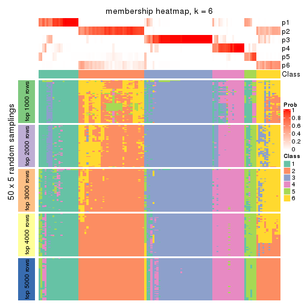
As soon as we have had the classes for columns, we can look for signatures which are significantly different between classes which can be candidate marks for certain classes. Following are the heatmaps for signatures.
Signature heatmaps where rows are scaled:
get_signatures(res, k = 2)
get_signatures(res, k = 3)
get_signatures(res, k = 4)
get_signatures(res, k = 5)
get_signatures(res, k = 6)
Signature heatmaps where rows are not scaled:
get_signatures(res, k = 2, scale_rows = FALSE)
get_signatures(res, k = 3, scale_rows = FALSE)
get_signatures(res, k = 4, scale_rows = FALSE)
get_signatures(res, k = 5, scale_rows = FALSE)
get_signatures(res, k = 6, scale_rows = FALSE)
Compare the overlap of signatures from different k:
compare_signatures(res)
get_signature() returns a data frame invisibly. TO get the list of signatures, the function
call should be assigned to a variable explicitly. In following code, if plot argument is set
to FALSE, no heatmap is plotted while only the differential analysis is performed.
# code only for demonstration
tb = get_signature(res, k = ..., plot = FALSE)
An example of the output of tb is:
#> which_row fdr mean_1 mean_2 scaled_mean_1 scaled_mean_2 km
#> 1 38 0.042760348 8.373488 9.131774 -0.5533452 0.5164555 1
#> 2 40 0.018707592 7.106213 8.469186 -0.6173731 0.5762149 1
#> 3 55 0.019134737 10.221463 11.207825 -0.6159697 0.5749050 1
#> 4 59 0.006059896 5.921854 7.869574 -0.6899429 0.6439467 1
#> 5 60 0.018055526 8.928898 10.211722 -0.6204761 0.5791110 1
#> 6 98 0.009384629 15.714769 14.887706 0.6635654 -0.6193277 2
...
The columns in tb are:
which_row: row indices corresponding to the input matrix.fdr: FDR for the differential test. mean_x: The mean value in group x.scaled_mean_x: The mean value in group x after rows are scaled.km: Row groups if k-means clustering is applied to rows.UMAP plot which shows how samples are separated.
dimension_reduction(res, k = 2, method = "UMAP")
dimension_reduction(res, k = 3, method = "UMAP")
dimension_reduction(res, k = 4, method = "UMAP")
dimension_reduction(res, k = 5, method = "UMAP")
dimension_reduction(res, k = 6, method = "UMAP")
Following heatmap shows how subgroups are split when increasing k:
collect_classes(res)
If matrix rows can be associated to genes, consider to use GO_Enrichment(res,
...) to perform function enrichment for the signature genes.
The object with results only for a single top-value method and a single partition method can be extracted as:
res = res_list["CV", "mclust"]
# you can also extract it by
# res = res_list["CV:mclust"]
A summary of res and all the functions that can be applied to it:
res
#> A 'ConsensusPartition' object with k = 2, 3, 4, 5, 6.
#> On a matrix with 10145 rows and 121 columns.
#> Top rows (1000, 2000, 3000, 4000, 5000) are extracted by 'CV' method.
#> Subgroups are detected by 'mclust' method.
#> Performed in total 1250 partitions by row resampling.
#> Best k for subgroups seems to be 4.
#>
#> Following methods can be applied to this 'ConsensusPartition' object:
#> [1] "cola_report" "collect_classes" "collect_plots"
#> [4] "collect_stats" "colnames" "compare_signatures"
#> [7] "consensus_heatmap" "dimension_reduction" "functional_enrichment"
#> [10] "get_anno_col" "get_anno" "get_classes"
#> [13] "get_consensus" "get_matrix" "get_membership"
#> [16] "get_param" "get_signatures" "get_stats"
#> [19] "is_best_k" "is_stable_k" "membership_heatmap"
#> [22] "ncol" "nrow" "plot_ecdf"
#> [25] "rownames" "select_partition_number" "show"
#> [28] "suggest_best_k" "test_to_known_factors"
collect_plots() function collects all the plots made from res for all k (number of partitions)
into one single page to provide an easy and fast comparison between different k.
collect_plots(res)
The plots are:
k and the heatmap of
predicted classes for each k.k.k.k.All the plots in panels can be made by individual functions and they are plotted later in this section.
select_partition_number() produces several plots showing different
statistics for choosing “optimized” k. There are following statistics:
k;k, the area increased is defined as \(A_k - A_{k-1}\).The detailed explanations of these statistics can be found in the cola vignette.
Generally speaking, lower PAC score, higher mean silhouette score or higher
concordance corresponds to better partition. Rand index and Jaccard index
measure how similar the current partition is compared to partition with k-1.
If they are too similar, we won't accept k is better than k-1.
select_partition_number(res)
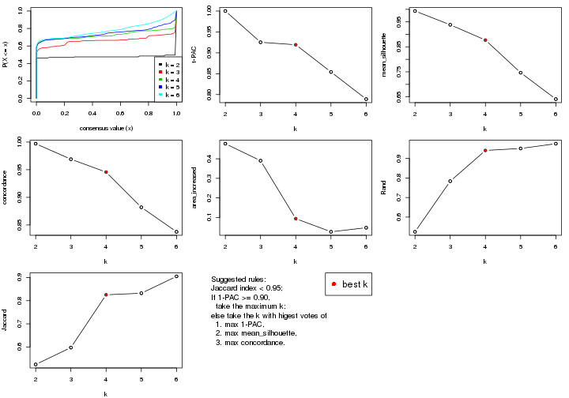
The numeric values for all these statistics can be obtained by get_stats().
get_stats(res)
#> k 1-PAC mean_silhouette concordance area_increased Rand Jaccard
#> 2 2 1.000 0.993 0.997 0.4771 0.525 0.525
#> 3 3 0.925 0.938 0.969 0.3901 0.784 0.598
#> 4 4 0.919 0.877 0.946 0.0938 0.941 0.825
#> 5 5 0.854 0.747 0.882 0.0268 0.951 0.832
#> 6 6 0.789 0.641 0.838 0.0475 0.975 0.905
suggest_best_k() suggests the best \(k\) based on these statistics. The rules are as follows:
NA.suggest_best_k(res)
#> [1] 4
#> attr(,"optional")
#> [1] 2 3
There is also optional best \(k\) = 2 3 that is worth to check.
Following shows the table of the partitions (You need to click the show/hide
code output link to see it). The membership matrix (columns with name p*)
is inferred by
clue::cl_consensus()
function with the SE method. Basically the value in the membership matrix
represents the probability to belong to a certain group. The finall class
label for an item is determined with the group with highest probability it
belongs to.
In get_classes() function, the entropy is calculated from the membership
matrix and the silhouette score is calculated from the consensus matrix.
cbind(get_classes(res, k = 2), get_membership(res, k = 2))
#> class entropy silhouette p1 p2
#> SRR2431463 1 0.000 0.995 1.000 0.000
#> SRR2431462 1 0.000 0.995 1.000 0.000
#> SRR2431461 1 0.000 0.995 1.000 0.000
#> SRR2431459 1 0.000 0.995 1.000 0.000
#> SRR2431460 1 0.000 0.995 1.000 0.000
#> SRR2431458 1 0.000 0.995 1.000 0.000
#> SRR2431457 1 0.000 0.995 1.000 0.000
#> SRR2431455 1 0.000 0.995 1.000 0.000
#> SRR2431456 1 0.000 0.995 1.000 0.000
#> SRR2431454 1 0.000 0.995 1.000 0.000
#> SRR2431453 1 0.000 0.995 1.000 0.000
#> SRR2431451 1 0.000 0.995 1.000 0.000
#> SRR2431452 1 0.000 0.995 1.000 0.000
#> SRR2431450 1 0.000 0.995 1.000 0.000
#> SRR2431449 1 0.000 0.995 1.000 0.000
#> SRR2431448 1 0.000 0.995 1.000 0.000
#> SRR2431446 1 0.000 0.995 1.000 0.000
#> SRR2431447 1 0.000 0.995 1.000 0.000
#> SRR2431445 1 0.000 0.995 1.000 0.000
#> SRR2431444 1 0.000 0.995 1.000 0.000
#> SRR2431443 1 0.000 0.995 1.000 0.000
#> SRR2431442 1 0.000 0.995 1.000 0.000
#> SRR2431441 1 0.000 0.995 1.000 0.000
#> SRR2431440 1 0.000 0.995 1.000 0.000
#> SRR2431439 1 0.000 0.995 1.000 0.000
#> SRR2431438 1 0.000 0.995 1.000 0.000
#> SRR2431437 1 0.000 0.995 1.000 0.000
#> SRR2431436 1 0.000 0.995 1.000 0.000
#> SRR2431435 1 0.000 0.995 1.000 0.000
#> SRR2431434 1 0.000 0.995 1.000 0.000
#> SRR2431433 1 0.000 0.995 1.000 0.000
#> SRR2431432 1 0.000 0.995 1.000 0.000
#> SRR2431431 1 0.000 0.995 1.000 0.000
#> SRR2431430 1 0.000 0.995 1.000 0.000
#> SRR2431429 1 0.000 0.995 1.000 0.000
#> SRR2431428 1 0.000 0.995 1.000 0.000
#> SRR2431427 2 0.000 1.000 0.000 1.000
#> SRR2431426 2 0.000 1.000 0.000 1.000
#> SRR2431425 2 0.000 1.000 0.000 1.000
#> SRR2431424 2 0.000 1.000 0.000 1.000
#> SRR2431423 2 0.000 1.000 0.000 1.000
#> SRR2431422 2 0.000 1.000 0.000 1.000
#> SRR2431421 2 0.000 1.000 0.000 1.000
#> SRR2431420 2 0.000 1.000 0.000 1.000
#> SRR2431419 2 0.000 1.000 0.000 1.000
#> SRR2431418 2 0.000 1.000 0.000 1.000
#> SRR2431417 2 0.000 1.000 0.000 1.000
#> SRR2431416 2 0.000 1.000 0.000 1.000
#> SRR2431415 2 0.000 1.000 0.000 1.000
#> SRR2431414 2 0.000 1.000 0.000 1.000
#> SRR2431413 2 0.000 1.000 0.000 1.000
#> SRR2431412 2 0.000 1.000 0.000 1.000
#> SRR2431411 1 0.839 0.636 0.732 0.268
#> SRR2431409 2 0.000 1.000 0.000 1.000
#> SRR2431410 1 0.430 0.902 0.912 0.088
#> SRR2431408 2 0.000 1.000 0.000 1.000
#> SRR2431407 2 0.000 1.000 0.000 1.000
#> SRR2431405 2 0.000 1.000 0.000 1.000
#> SRR2431406 2 0.000 1.000 0.000 1.000
#> SRR2431404 2 0.000 1.000 0.000 1.000
#> SRR2431403 2 0.000 1.000 0.000 1.000
#> SRR2431402 2 0.000 1.000 0.000 1.000
#> SRR2431401 2 0.000 1.000 0.000 1.000
#> SRR2431400 2 0.000 1.000 0.000 1.000
#> SRR2431399 2 0.000 1.000 0.000 1.000
#> SRR2431398 2 0.000 1.000 0.000 1.000
#> SRR2431397 2 0.000 1.000 0.000 1.000
#> SRR2431396 2 0.000 1.000 0.000 1.000
#> SRR2431395 2 0.000 1.000 0.000 1.000
#> SRR2431394 2 0.000 1.000 0.000 1.000
#> SRR2431393 2 0.000 1.000 0.000 1.000
#> SRR2431392 2 0.000 1.000 0.000 1.000
#> SRR2431391 2 0.000 1.000 0.000 1.000
#> SRR2431390 2 0.000 1.000 0.000 1.000
#> SRR2431389 2 0.000 1.000 0.000 1.000
#> SRR2431388 2 0.000 1.000 0.000 1.000
#> SRR2431387 2 0.000 1.000 0.000 1.000
#> SRR2431386 2 0.000 1.000 0.000 1.000
#> SRR2431385 2 0.000 1.000 0.000 1.000
#> SRR2431383 2 0.000 1.000 0.000 1.000
#> SRR2431384 2 0.000 1.000 0.000 1.000
#> SRR2431382 2 0.000 1.000 0.000 1.000
#> SRR2431381 2 0.000 1.000 0.000 1.000
#> SRR2431380 2 0.000 1.000 0.000 1.000
#> SRR2431379 1 0.000 0.995 1.000 0.000
#> SRR2431378 1 0.000 0.995 1.000 0.000
#> SRR2431376 1 0.000 0.995 1.000 0.000
#> SRR2431377 1 0.000 0.995 1.000 0.000
#> SRR2431375 1 0.000 0.995 1.000 0.000
#> SRR2431374 1 0.000 0.995 1.000 0.000
#> SRR2431372 1 0.000 0.995 1.000 0.000
#> SRR2431371 1 0.000 0.995 1.000 0.000
#> SRR2431373 1 0.000 0.995 1.000 0.000
#> SRR2431370 1 0.000 0.995 1.000 0.000
#> SRR2431369 1 0.000 0.995 1.000 0.000
#> SRR2431368 1 0.000 0.995 1.000 0.000
#> SRR2431367 1 0.000 0.995 1.000 0.000
#> SRR2431366 1 0.000 0.995 1.000 0.000
#> SRR2431365 1 0.000 0.995 1.000 0.000
#> SRR2431364 1 0.000 0.995 1.000 0.000
#> SRR2431363 1 0.000 0.995 1.000 0.000
#> SRR2431361 1 0.000 0.995 1.000 0.000
#> SRR2431362 1 0.000 0.995 1.000 0.000
#> SRR2431360 1 0.000 0.995 1.000 0.000
#> SRR2431359 1 0.000 0.995 1.000 0.000
#> SRR2431358 1 0.000 0.995 1.000 0.000
#> SRR2431357 1 0.000 0.995 1.000 0.000
#> SRR2431355 1 0.000 0.995 1.000 0.000
#> SRR2431356 1 0.000 0.995 1.000 0.000
#> SRR2431354 1 0.000 0.995 1.000 0.000
#> SRR2431353 1 0.000 0.995 1.000 0.000
#> SRR2431352 1 0.000 0.995 1.000 0.000
#> SRR2431351 1 0.000 0.995 1.000 0.000
#> SRR2431350 1 0.000 0.995 1.000 0.000
#> SRR2431349 1 0.000 0.995 1.000 0.000
#> SRR2431348 1 0.000 0.995 1.000 0.000
#> SRR2431347 1 0.000 0.995 1.000 0.000
#> SRR2431346 1 0.000 0.995 1.000 0.000
#> SRR2431345 1 0.000 0.995 1.000 0.000
#> SRR2431344 1 0.000 0.995 1.000 0.000
#> SRR2431343 1 0.000 0.995 1.000 0.000
cbind(get_classes(res, k = 3), get_membership(res, k = 3))
#> class entropy silhouette p1 p2 p3
#> SRR2431463 1 0.0000 0.978 1.000 0.000 0.000
#> SRR2431462 1 0.0000 0.978 1.000 0.000 0.000
#> SRR2431461 1 0.0000 0.978 1.000 0.000 0.000
#> SRR2431459 1 0.0000 0.978 1.000 0.000 0.000
#> SRR2431460 1 0.0000 0.978 1.000 0.000 0.000
#> SRR2431458 1 0.0237 0.975 0.996 0.000 0.004
#> SRR2431457 1 0.0000 0.978 1.000 0.000 0.000
#> SRR2431455 1 0.0000 0.978 1.000 0.000 0.000
#> SRR2431456 1 0.0000 0.978 1.000 0.000 0.000
#> SRR2431454 1 0.1411 0.944 0.964 0.000 0.036
#> SRR2431453 1 0.0000 0.978 1.000 0.000 0.000
#> SRR2431451 1 0.0000 0.978 1.000 0.000 0.000
#> SRR2431452 1 0.6154 0.198 0.592 0.000 0.408
#> SRR2431450 1 0.0000 0.978 1.000 0.000 0.000
#> SRR2431449 1 0.0000 0.978 1.000 0.000 0.000
#> SRR2431448 1 0.0424 0.972 0.992 0.000 0.008
#> SRR2431446 1 0.0000 0.978 1.000 0.000 0.000
#> SRR2431447 1 0.0000 0.978 1.000 0.000 0.000
#> SRR2431445 1 0.0000 0.978 1.000 0.000 0.000
#> SRR2431444 1 0.0000 0.978 1.000 0.000 0.000
#> SRR2431443 1 0.0000 0.978 1.000 0.000 0.000
#> SRR2431442 1 0.0000 0.978 1.000 0.000 0.000
#> SRR2431441 1 0.0000 0.978 1.000 0.000 0.000
#> SRR2431440 1 0.0000 0.978 1.000 0.000 0.000
#> SRR2431439 1 0.0000 0.978 1.000 0.000 0.000
#> SRR2431438 1 0.0000 0.978 1.000 0.000 0.000
#> SRR2431437 1 0.0000 0.978 1.000 0.000 0.000
#> SRR2431436 1 0.0237 0.975 0.996 0.000 0.004
#> SRR2431435 1 0.0000 0.978 1.000 0.000 0.000
#> SRR2431434 1 0.0000 0.978 1.000 0.000 0.000
#> SRR2431433 1 0.0000 0.978 1.000 0.000 0.000
#> SRR2431432 1 0.0000 0.978 1.000 0.000 0.000
#> SRR2431431 1 0.0892 0.960 0.980 0.000 0.020
#> SRR2431430 1 0.0000 0.978 1.000 0.000 0.000
#> SRR2431429 1 0.0237 0.975 0.996 0.000 0.004
#> SRR2431428 1 0.4654 0.703 0.792 0.000 0.208
#> SRR2431427 2 0.0000 0.987 0.000 1.000 0.000
#> SRR2431426 2 0.0000 0.987 0.000 1.000 0.000
#> SRR2431425 2 0.0000 0.987 0.000 1.000 0.000
#> SRR2431424 2 0.0000 0.987 0.000 1.000 0.000
#> SRR2431423 2 0.0000 0.987 0.000 1.000 0.000
#> SRR2431422 2 0.0000 0.987 0.000 1.000 0.000
#> SRR2431421 2 0.0000 0.987 0.000 1.000 0.000
#> SRR2431420 2 0.0000 0.987 0.000 1.000 0.000
#> SRR2431419 2 0.0000 0.987 0.000 1.000 0.000
#> SRR2431418 2 0.0000 0.987 0.000 1.000 0.000
#> SRR2431417 2 0.0000 0.987 0.000 1.000 0.000
#> SRR2431416 2 0.0000 0.987 0.000 1.000 0.000
#> SRR2431415 2 0.0000 0.987 0.000 1.000 0.000
#> SRR2431414 2 0.0000 0.987 0.000 1.000 0.000
#> SRR2431413 2 0.0000 0.987 0.000 1.000 0.000
#> SRR2431412 2 0.0000 0.987 0.000 1.000 0.000
#> SRR2431411 2 0.6955 0.669 0.172 0.728 0.100
#> SRR2431409 2 0.0000 0.987 0.000 1.000 0.000
#> SRR2431410 2 0.7983 0.526 0.228 0.648 0.124
#> SRR2431408 2 0.0000 0.987 0.000 1.000 0.000
#> SRR2431407 2 0.0000 0.987 0.000 1.000 0.000
#> SRR2431405 2 0.0000 0.987 0.000 1.000 0.000
#> SRR2431406 2 0.0000 0.987 0.000 1.000 0.000
#> SRR2431404 2 0.0000 0.987 0.000 1.000 0.000
#> SRR2431403 2 0.0000 0.987 0.000 1.000 0.000
#> SRR2431402 2 0.0000 0.987 0.000 1.000 0.000
#> SRR2431401 2 0.0000 0.987 0.000 1.000 0.000
#> SRR2431400 2 0.0000 0.987 0.000 1.000 0.000
#> SRR2431399 2 0.0000 0.987 0.000 1.000 0.000
#> SRR2431398 2 0.0000 0.987 0.000 1.000 0.000
#> SRR2431397 2 0.0000 0.987 0.000 1.000 0.000
#> SRR2431396 2 0.0000 0.987 0.000 1.000 0.000
#> SRR2431395 2 0.0000 0.987 0.000 1.000 0.000
#> SRR2431394 2 0.0000 0.987 0.000 1.000 0.000
#> SRR2431393 2 0.0000 0.987 0.000 1.000 0.000
#> SRR2431392 2 0.0000 0.987 0.000 1.000 0.000
#> SRR2431391 2 0.0000 0.987 0.000 1.000 0.000
#> SRR2431390 2 0.0000 0.987 0.000 1.000 0.000
#> SRR2431389 2 0.0000 0.987 0.000 1.000 0.000
#> SRR2431388 2 0.0000 0.987 0.000 1.000 0.000
#> SRR2431387 2 0.0000 0.987 0.000 1.000 0.000
#> SRR2431386 2 0.0000 0.987 0.000 1.000 0.000
#> SRR2431385 2 0.0000 0.987 0.000 1.000 0.000
#> SRR2431383 2 0.0000 0.987 0.000 1.000 0.000
#> SRR2431384 2 0.0000 0.987 0.000 1.000 0.000
#> SRR2431382 2 0.0000 0.987 0.000 1.000 0.000
#> SRR2431381 2 0.0000 0.987 0.000 1.000 0.000
#> SRR2431380 2 0.0000 0.987 0.000 1.000 0.000
#> SRR2431379 3 0.0000 0.928 0.000 0.000 1.000
#> SRR2431378 3 0.0747 0.926 0.016 0.000 0.984
#> SRR2431376 3 0.0237 0.928 0.004 0.000 0.996
#> SRR2431377 3 0.3686 0.857 0.140 0.000 0.860
#> SRR2431375 3 0.0000 0.928 0.000 0.000 1.000
#> SRR2431374 3 0.4702 0.797 0.212 0.000 0.788
#> SRR2431372 3 0.0000 0.928 0.000 0.000 1.000
#> SRR2431371 3 0.0592 0.927 0.012 0.000 0.988
#> SRR2431373 3 0.0000 0.928 0.000 0.000 1.000
#> SRR2431370 3 0.0000 0.928 0.000 0.000 1.000
#> SRR2431369 3 0.0237 0.928 0.004 0.000 0.996
#> SRR2431368 3 0.0000 0.928 0.000 0.000 1.000
#> SRR2431367 3 0.0000 0.928 0.000 0.000 1.000
#> SRR2431366 3 0.2356 0.901 0.072 0.000 0.928
#> SRR2431365 3 0.2796 0.890 0.092 0.000 0.908
#> SRR2431364 3 0.0000 0.928 0.000 0.000 1.000
#> SRR2431363 3 0.0000 0.928 0.000 0.000 1.000
#> SRR2431361 3 0.0237 0.928 0.004 0.000 0.996
#> SRR2431362 3 0.1289 0.920 0.032 0.000 0.968
#> SRR2431360 3 0.0592 0.927 0.012 0.000 0.988
#> SRR2431359 3 0.4555 0.808 0.200 0.000 0.800
#> SRR2431358 3 0.5678 0.635 0.316 0.000 0.684
#> SRR2431357 3 0.4702 0.797 0.212 0.000 0.788
#> SRR2431355 3 0.4750 0.793 0.216 0.000 0.784
#> SRR2431356 3 0.0424 0.928 0.008 0.000 0.992
#> SRR2431354 3 0.0000 0.928 0.000 0.000 1.000
#> SRR2431353 3 0.4750 0.793 0.216 0.000 0.784
#> SRR2431352 3 0.4702 0.797 0.212 0.000 0.788
#> SRR2431351 3 0.0000 0.928 0.000 0.000 1.000
#> SRR2431350 3 0.0000 0.928 0.000 0.000 1.000
#> SRR2431349 3 0.0000 0.928 0.000 0.000 1.000
#> SRR2431348 3 0.0000 0.928 0.000 0.000 1.000
#> SRR2431347 3 0.0000 0.928 0.000 0.000 1.000
#> SRR2431346 3 0.1163 0.922 0.028 0.000 0.972
#> SRR2431345 3 0.0000 0.928 0.000 0.000 1.000
#> SRR2431344 3 0.4750 0.793 0.216 0.000 0.784
#> SRR2431343 3 0.4702 0.797 0.212 0.000 0.788
cbind(get_classes(res, k = 4), get_membership(res, k = 4))
#> class entropy silhouette p1 p2 p3 p4
#> SRR2431463 1 0.0188 0.982 0.996 0.000 0.000 0.004
#> SRR2431462 1 0.0000 0.983 1.000 0.000 0.000 0.000
#> SRR2431461 1 0.0000 0.983 1.000 0.000 0.000 0.000
#> SRR2431459 1 0.0000 0.983 1.000 0.000 0.000 0.000
#> SRR2431460 1 0.0000 0.983 1.000 0.000 0.000 0.000
#> SRR2431458 1 0.0000 0.983 1.000 0.000 0.000 0.000
#> SRR2431457 1 0.0000 0.983 1.000 0.000 0.000 0.000
#> SRR2431455 1 0.0188 0.982 0.996 0.000 0.000 0.004
#> SRR2431456 1 0.0188 0.982 0.996 0.000 0.000 0.004
#> SRR2431454 1 0.0779 0.967 0.980 0.000 0.004 0.016
#> SRR2431453 1 0.0000 0.983 1.000 0.000 0.000 0.000
#> SRR2431451 1 0.0000 0.983 1.000 0.000 0.000 0.000
#> SRR2431452 1 0.5372 0.129 0.544 0.000 0.012 0.444
#> SRR2431450 1 0.0817 0.964 0.976 0.000 0.000 0.024
#> SRR2431449 1 0.0000 0.983 1.000 0.000 0.000 0.000
#> SRR2431448 1 0.0000 0.983 1.000 0.000 0.000 0.000
#> SRR2431446 1 0.0000 0.983 1.000 0.000 0.000 0.000
#> SRR2431447 1 0.0000 0.983 1.000 0.000 0.000 0.000
#> SRR2431445 1 0.0000 0.983 1.000 0.000 0.000 0.000
#> SRR2431444 1 0.0000 0.983 1.000 0.000 0.000 0.000
#> SRR2431443 1 0.0188 0.982 0.996 0.000 0.000 0.004
#> SRR2431442 1 0.0188 0.982 0.996 0.000 0.000 0.004
#> SRR2431441 1 0.0188 0.982 0.996 0.000 0.000 0.004
#> SRR2431440 1 0.0000 0.983 1.000 0.000 0.000 0.000
#> SRR2431439 1 0.0188 0.982 0.996 0.000 0.000 0.004
#> SRR2431438 1 0.0188 0.982 0.996 0.000 0.000 0.004
#> SRR2431437 1 0.0000 0.983 1.000 0.000 0.000 0.000
#> SRR2431436 1 0.0000 0.983 1.000 0.000 0.000 0.000
#> SRR2431435 1 0.0000 0.983 1.000 0.000 0.000 0.000
#> SRR2431434 1 0.0188 0.982 0.996 0.000 0.000 0.004
#> SRR2431433 1 0.0188 0.982 0.996 0.000 0.000 0.004
#> SRR2431432 1 0.0000 0.983 1.000 0.000 0.000 0.000
#> SRR2431431 1 0.0336 0.977 0.992 0.000 0.000 0.008
#> SRR2431430 1 0.0000 0.983 1.000 0.000 0.000 0.000
#> SRR2431429 1 0.0000 0.983 1.000 0.000 0.000 0.000
#> SRR2431428 4 0.2589 0.799 0.116 0.000 0.000 0.884
#> SRR2431427 2 0.0000 0.944 0.000 1.000 0.000 0.000
#> SRR2431426 2 0.0000 0.944 0.000 1.000 0.000 0.000
#> SRR2431425 2 0.0000 0.944 0.000 1.000 0.000 0.000
#> SRR2431424 2 0.0000 0.944 0.000 1.000 0.000 0.000
#> SRR2431423 2 0.0000 0.944 0.000 1.000 0.000 0.000
#> SRR2431422 2 0.0188 0.941 0.000 0.996 0.000 0.004
#> SRR2431421 2 0.4730 0.471 0.000 0.636 0.000 0.364
#> SRR2431420 2 0.0000 0.944 0.000 1.000 0.000 0.000
#> SRR2431419 2 0.0000 0.944 0.000 1.000 0.000 0.000
#> SRR2431418 2 0.0000 0.944 0.000 1.000 0.000 0.000
#> SRR2431417 2 0.0000 0.944 0.000 1.000 0.000 0.000
#> SRR2431416 2 0.0000 0.944 0.000 1.000 0.000 0.000
#> SRR2431415 2 0.0000 0.944 0.000 1.000 0.000 0.000
#> SRR2431414 2 0.0000 0.944 0.000 1.000 0.000 0.000
#> SRR2431413 2 0.0000 0.944 0.000 1.000 0.000 0.000
#> SRR2431412 2 0.0000 0.944 0.000 1.000 0.000 0.000
#> SRR2431411 4 0.7071 0.333 0.060 0.344 0.036 0.560
#> SRR2431409 2 0.0000 0.944 0.000 1.000 0.000 0.000
#> SRR2431410 4 0.2101 0.837 0.012 0.060 0.000 0.928
#> SRR2431408 2 0.4605 0.527 0.000 0.664 0.000 0.336
#> SRR2431407 2 0.0000 0.944 0.000 1.000 0.000 0.000
#> SRR2431405 2 0.1637 0.894 0.000 0.940 0.000 0.060
#> SRR2431406 2 0.0000 0.944 0.000 1.000 0.000 0.000
#> SRR2431404 2 0.0000 0.944 0.000 1.000 0.000 0.000
#> SRR2431403 2 0.0000 0.944 0.000 1.000 0.000 0.000
#> SRR2431402 2 0.4643 0.511 0.000 0.656 0.000 0.344
#> SRR2431401 2 0.0000 0.944 0.000 1.000 0.000 0.000
#> SRR2431400 2 0.0000 0.944 0.000 1.000 0.000 0.000
#> SRR2431399 2 0.0000 0.944 0.000 1.000 0.000 0.000
#> SRR2431398 2 0.0000 0.944 0.000 1.000 0.000 0.000
#> SRR2431397 2 0.0000 0.944 0.000 1.000 0.000 0.000
#> SRR2431396 2 0.0188 0.941 0.000 0.996 0.000 0.004
#> SRR2431395 2 0.0000 0.944 0.000 1.000 0.000 0.000
#> SRR2431394 2 0.0000 0.944 0.000 1.000 0.000 0.000
#> SRR2431393 2 0.0000 0.944 0.000 1.000 0.000 0.000
#> SRR2431392 2 0.0000 0.944 0.000 1.000 0.000 0.000
#> SRR2431391 2 0.0000 0.944 0.000 1.000 0.000 0.000
#> SRR2431390 2 0.0000 0.944 0.000 1.000 0.000 0.000
#> SRR2431389 2 0.0000 0.944 0.000 1.000 0.000 0.000
#> SRR2431388 2 0.0336 0.938 0.000 0.992 0.000 0.008
#> SRR2431387 2 0.4941 0.297 0.000 0.564 0.000 0.436
#> SRR2431386 2 0.0000 0.944 0.000 1.000 0.000 0.000
#> SRR2431385 2 0.4134 0.655 0.000 0.740 0.000 0.260
#> SRR2431383 2 0.2408 0.852 0.000 0.896 0.000 0.104
#> SRR2431384 2 0.0000 0.944 0.000 1.000 0.000 0.000
#> SRR2431382 2 0.0000 0.944 0.000 1.000 0.000 0.000
#> SRR2431381 2 0.0000 0.944 0.000 1.000 0.000 0.000
#> SRR2431380 2 0.4948 0.286 0.000 0.560 0.000 0.440
#> SRR2431379 3 0.0000 0.900 0.000 0.000 1.000 0.000
#> SRR2431378 3 0.2973 0.814 0.000 0.000 0.856 0.144
#> SRR2431376 3 0.4431 0.653 0.000 0.000 0.696 0.304
#> SRR2431377 4 0.4804 0.203 0.000 0.000 0.384 0.616
#> SRR2431375 3 0.0000 0.900 0.000 0.000 1.000 0.000
#> SRR2431374 4 0.0188 0.880 0.000 0.000 0.004 0.996
#> SRR2431372 3 0.0000 0.900 0.000 0.000 1.000 0.000
#> SRR2431371 3 0.4500 0.638 0.000 0.000 0.684 0.316
#> SRR2431373 3 0.0188 0.900 0.000 0.000 0.996 0.004
#> SRR2431370 3 0.0336 0.900 0.000 0.000 0.992 0.008
#> SRR2431369 3 0.4454 0.646 0.000 0.000 0.692 0.308
#> SRR2431368 3 0.0336 0.900 0.000 0.000 0.992 0.008
#> SRR2431367 3 0.0336 0.900 0.000 0.000 0.992 0.008
#> SRR2431366 3 0.4877 0.465 0.000 0.000 0.592 0.408
#> SRR2431365 3 0.4817 0.504 0.000 0.000 0.612 0.388
#> SRR2431364 3 0.0000 0.900 0.000 0.000 1.000 0.000
#> SRR2431363 3 0.0000 0.900 0.000 0.000 1.000 0.000
#> SRR2431361 3 0.4304 0.675 0.000 0.000 0.716 0.284
#> SRR2431362 3 0.0188 0.898 0.000 0.000 0.996 0.004
#> SRR2431360 3 0.0000 0.900 0.000 0.000 1.000 0.000
#> SRR2431359 4 0.3691 0.809 0.068 0.000 0.076 0.856
#> SRR2431358 4 0.0376 0.880 0.004 0.000 0.004 0.992
#> SRR2431357 4 0.0336 0.880 0.000 0.000 0.008 0.992
#> SRR2431355 4 0.0336 0.880 0.000 0.000 0.008 0.992
#> SRR2431356 3 0.0469 0.899 0.000 0.000 0.988 0.012
#> SRR2431354 3 0.0000 0.900 0.000 0.000 1.000 0.000
#> SRR2431353 4 0.1059 0.877 0.016 0.000 0.012 0.972
#> SRR2431352 4 0.0336 0.880 0.000 0.000 0.008 0.992
#> SRR2431351 3 0.0188 0.900 0.000 0.000 0.996 0.004
#> SRR2431350 3 0.0336 0.900 0.000 0.000 0.992 0.008
#> SRR2431349 3 0.0000 0.900 0.000 0.000 1.000 0.000
#> SRR2431348 3 0.0336 0.900 0.000 0.000 0.992 0.008
#> SRR2431347 3 0.0469 0.899 0.000 0.000 0.988 0.012
#> SRR2431346 3 0.3356 0.788 0.000 0.000 0.824 0.176
#> SRR2431345 3 0.0000 0.900 0.000 0.000 1.000 0.000
#> SRR2431344 4 0.1256 0.873 0.028 0.000 0.008 0.964
#> SRR2431343 4 0.0188 0.880 0.000 0.000 0.004 0.996
cbind(get_classes(res, k = 5), get_membership(res, k = 5))
#> class entropy silhouette p1 p2 p3 p4 p5
#> SRR2431463 1 0.0162 0.85652 0.996 0.000 0.000 0.000 0.004
#> SRR2431462 1 0.0290 0.85560 0.992 0.000 0.000 0.000 0.008
#> SRR2431461 1 0.3684 0.39979 0.720 0.000 0.000 0.000 0.280
#> SRR2431459 1 0.0162 0.85591 0.996 0.000 0.000 0.000 0.004
#> SRR2431460 1 0.0703 0.85245 0.976 0.000 0.000 0.000 0.024
#> SRR2431458 1 0.2377 0.75101 0.872 0.000 0.000 0.000 0.128
#> SRR2431457 1 0.0162 0.85579 0.996 0.000 0.000 0.000 0.004
#> SRR2431455 1 0.0162 0.85538 0.996 0.000 0.000 0.000 0.004
#> SRR2431456 1 0.0703 0.85044 0.976 0.000 0.000 0.000 0.024
#> SRR2431454 5 0.5016 0.58743 0.348 0.000 0.000 0.044 0.608
#> SRR2431453 1 0.0609 0.85355 0.980 0.000 0.000 0.000 0.020
#> SRR2431451 1 0.4268 -0.27550 0.556 0.000 0.000 0.000 0.444
#> SRR2431452 5 0.5849 0.26364 0.120 0.000 0.004 0.280 0.596
#> SRR2431450 1 0.3655 0.62479 0.804 0.000 0.000 0.036 0.160
#> SRR2431449 1 0.0404 0.85188 0.988 0.000 0.000 0.000 0.012
#> SRR2431448 1 0.0794 0.85051 0.972 0.000 0.000 0.000 0.028
#> SRR2431446 1 0.3210 0.56723 0.788 0.000 0.000 0.000 0.212
#> SRR2431447 1 0.4306 -0.44205 0.508 0.000 0.000 0.000 0.492
#> SRR2431445 1 0.0794 0.84760 0.972 0.000 0.000 0.000 0.028
#> SRR2431444 5 0.4990 0.58330 0.324 0.000 0.000 0.048 0.628
#> SRR2431443 1 0.3109 0.61393 0.800 0.000 0.000 0.000 0.200
#> SRR2431442 1 0.0000 0.85541 1.000 0.000 0.000 0.000 0.000
#> SRR2431441 1 0.0162 0.85616 0.996 0.000 0.000 0.000 0.004
#> SRR2431440 1 0.3395 0.53448 0.764 0.000 0.000 0.000 0.236
#> SRR2431439 5 0.4905 0.43187 0.476 0.000 0.000 0.024 0.500
#> SRR2431438 1 0.0162 0.85579 0.996 0.000 0.000 0.000 0.004
#> SRR2431437 1 0.0794 0.85054 0.972 0.000 0.000 0.000 0.028
#> SRR2431436 5 0.4769 0.56607 0.392 0.000 0.004 0.016 0.588
#> SRR2431435 5 0.4307 0.38708 0.496 0.000 0.000 0.000 0.504
#> SRR2431434 1 0.1197 0.83219 0.952 0.000 0.000 0.000 0.048
#> SRR2431433 1 0.0000 0.85541 1.000 0.000 0.000 0.000 0.000
#> SRR2431432 1 0.0510 0.85514 0.984 0.000 0.000 0.000 0.016
#> SRR2431431 5 0.4890 0.48026 0.452 0.000 0.000 0.024 0.524
#> SRR2431430 1 0.2074 0.77736 0.896 0.000 0.000 0.000 0.104
#> SRR2431429 1 0.0880 0.84873 0.968 0.000 0.000 0.000 0.032
#> SRR2431428 4 0.6362 -0.00105 0.368 0.000 0.000 0.464 0.168
#> SRR2431427 2 0.0000 0.98045 0.000 1.000 0.000 0.000 0.000
#> SRR2431426 2 0.0000 0.98045 0.000 1.000 0.000 0.000 0.000
#> SRR2431425 2 0.0162 0.97927 0.000 0.996 0.000 0.000 0.004
#> SRR2431424 2 0.0000 0.98045 0.000 1.000 0.000 0.000 0.000
#> SRR2431423 2 0.0000 0.98045 0.000 1.000 0.000 0.000 0.000
#> SRR2431422 2 0.0290 0.97774 0.000 0.992 0.000 0.000 0.008
#> SRR2431421 2 0.2824 0.88579 0.000 0.872 0.000 0.032 0.096
#> SRR2431420 2 0.0000 0.98045 0.000 1.000 0.000 0.000 0.000
#> SRR2431419 2 0.0000 0.98045 0.000 1.000 0.000 0.000 0.000
#> SRR2431418 2 0.0000 0.98045 0.000 1.000 0.000 0.000 0.000
#> SRR2431417 2 0.0162 0.97927 0.000 0.996 0.000 0.000 0.004
#> SRR2431416 2 0.0162 0.97889 0.000 0.996 0.000 0.000 0.004
#> SRR2431415 2 0.0162 0.97927 0.000 0.996 0.000 0.000 0.004
#> SRR2431414 2 0.0000 0.98045 0.000 1.000 0.000 0.000 0.000
#> SRR2431413 2 0.0000 0.98045 0.000 1.000 0.000 0.000 0.000
#> SRR2431412 2 0.0000 0.98045 0.000 1.000 0.000 0.000 0.000
#> SRR2431411 5 0.6757 -0.03494 0.000 0.232 0.012 0.256 0.500
#> SRR2431409 2 0.0324 0.97747 0.000 0.992 0.000 0.004 0.004
#> SRR2431410 4 0.4729 0.52711 0.004 0.040 0.000 0.688 0.268
#> SRR2431408 2 0.2260 0.91712 0.000 0.908 0.000 0.028 0.064
#> SRR2431407 2 0.0162 0.97927 0.000 0.996 0.000 0.000 0.004
#> SRR2431405 2 0.0162 0.97927 0.000 0.996 0.000 0.000 0.004
#> SRR2431406 2 0.0000 0.98045 0.000 1.000 0.000 0.000 0.000
#> SRR2431404 2 0.0000 0.98045 0.000 1.000 0.000 0.000 0.000
#> SRR2431403 2 0.0000 0.98045 0.000 1.000 0.000 0.000 0.000
#> SRR2431402 2 0.2278 0.91668 0.000 0.908 0.000 0.032 0.060
#> SRR2431401 2 0.0000 0.98045 0.000 1.000 0.000 0.000 0.000
#> SRR2431400 2 0.0162 0.97927 0.000 0.996 0.000 0.000 0.004
#> SRR2431399 2 0.0000 0.98045 0.000 1.000 0.000 0.000 0.000
#> SRR2431398 2 0.0000 0.98045 0.000 1.000 0.000 0.000 0.000
#> SRR2431397 2 0.0000 0.98045 0.000 1.000 0.000 0.000 0.000
#> SRR2431396 2 0.1197 0.95076 0.000 0.952 0.000 0.000 0.048
#> SRR2431395 2 0.0000 0.98045 0.000 1.000 0.000 0.000 0.000
#> SRR2431394 2 0.0000 0.98045 0.000 1.000 0.000 0.000 0.000
#> SRR2431393 2 0.0162 0.97896 0.000 0.996 0.000 0.000 0.004
#> SRR2431392 2 0.0290 0.97680 0.000 0.992 0.000 0.000 0.008
#> SRR2431391 2 0.0000 0.98045 0.000 1.000 0.000 0.000 0.000
#> SRR2431390 2 0.0000 0.98045 0.000 1.000 0.000 0.000 0.000
#> SRR2431389 2 0.0000 0.98045 0.000 1.000 0.000 0.000 0.000
#> SRR2431388 2 0.0880 0.96071 0.000 0.968 0.000 0.000 0.032
#> SRR2431387 2 0.3058 0.87285 0.000 0.860 0.000 0.044 0.096
#> SRR2431386 2 0.0000 0.98045 0.000 1.000 0.000 0.000 0.000
#> SRR2431385 2 0.3309 0.84564 0.000 0.836 0.000 0.036 0.128
#> SRR2431383 2 0.0992 0.96188 0.000 0.968 0.000 0.008 0.024
#> SRR2431384 2 0.0000 0.98045 0.000 1.000 0.000 0.000 0.000
#> SRR2431382 2 0.0000 0.98045 0.000 1.000 0.000 0.000 0.000
#> SRR2431381 2 0.0000 0.98045 0.000 1.000 0.000 0.000 0.000
#> SRR2431380 2 0.3551 0.83206 0.000 0.820 0.000 0.044 0.136
#> SRR2431379 3 0.0404 0.81244 0.000 0.000 0.988 0.012 0.000
#> SRR2431378 3 0.4525 0.38948 0.000 0.000 0.624 0.360 0.016
#> SRR2431376 3 0.4748 -0.09595 0.000 0.000 0.492 0.492 0.016
#> SRR2431377 4 0.5077 0.20030 0.000 0.000 0.428 0.536 0.036
#> SRR2431375 3 0.0000 0.81341 0.000 0.000 1.000 0.000 0.000
#> SRR2431374 4 0.1168 0.68180 0.000 0.000 0.008 0.960 0.032
#> SRR2431372 3 0.0162 0.81339 0.000 0.000 0.996 0.004 0.000
#> SRR2431371 4 0.4904 0.06636 0.000 0.000 0.472 0.504 0.024
#> SRR2431373 3 0.0000 0.81341 0.000 0.000 1.000 0.000 0.000
#> SRR2431370 3 0.3304 0.74370 0.000 0.000 0.816 0.168 0.016
#> SRR2431369 4 0.4747 0.00609 0.000 0.000 0.488 0.496 0.016
#> SRR2431368 3 0.2723 0.77450 0.000 0.000 0.864 0.124 0.012
#> SRR2431367 3 0.3098 0.76111 0.000 0.000 0.836 0.148 0.016
#> SRR2431366 4 0.5195 0.20992 0.000 0.000 0.420 0.536 0.044
#> SRR2431365 4 0.5195 0.19985 0.000 0.000 0.420 0.536 0.044
#> SRR2431364 3 0.0000 0.81341 0.000 0.000 1.000 0.000 0.000
#> SRR2431363 3 0.0000 0.81341 0.000 0.000 1.000 0.000 0.000
#> SRR2431361 3 0.4747 -0.06702 0.000 0.000 0.500 0.484 0.016
#> SRR2431362 3 0.0451 0.80992 0.000 0.000 0.988 0.008 0.004
#> SRR2431360 3 0.0000 0.81341 0.000 0.000 1.000 0.000 0.000
#> SRR2431359 4 0.5082 0.54394 0.004 0.000 0.244 0.680 0.072
#> SRR2431358 4 0.2419 0.67967 0.004 0.000 0.028 0.904 0.064
#> SRR2431357 4 0.0912 0.68583 0.000 0.000 0.012 0.972 0.016
#> SRR2431355 4 0.2387 0.69366 0.004 0.000 0.048 0.908 0.040
#> SRR2431356 3 0.3141 0.75854 0.000 0.000 0.832 0.152 0.016
#> SRR2431354 3 0.0000 0.81341 0.000 0.000 1.000 0.000 0.000
#> SRR2431353 4 0.2751 0.68981 0.004 0.000 0.052 0.888 0.056
#> SRR2431352 4 0.1251 0.69678 0.000 0.000 0.036 0.956 0.008
#> SRR2431351 3 0.0000 0.81341 0.000 0.000 1.000 0.000 0.000
#> SRR2431350 3 0.3264 0.74783 0.000 0.000 0.820 0.164 0.016
#> SRR2431349 3 0.0000 0.81341 0.000 0.000 1.000 0.000 0.000
#> SRR2431348 3 0.3141 0.75854 0.000 0.000 0.832 0.152 0.016
#> SRR2431347 3 0.3492 0.72010 0.000 0.000 0.796 0.188 0.016
#> SRR2431346 3 0.4467 0.42950 0.000 0.000 0.640 0.344 0.016
#> SRR2431345 3 0.0000 0.81341 0.000 0.000 1.000 0.000 0.000
#> SRR2431344 4 0.2751 0.69062 0.004 0.000 0.056 0.888 0.052
#> SRR2431343 4 0.1282 0.67785 0.000 0.000 0.004 0.952 0.044
cbind(get_classes(res, k = 6), get_membership(res, k = 6))
#> class entropy silhouette p1 p2 p3 p4 p5 p6
#> SRR2431463 1 0.0547 0.8439 0.980 0.000 0.000 0.000 0.000 0.020
#> SRR2431462 1 0.0632 0.8446 0.976 0.000 0.000 0.000 0.000 0.024
#> SRR2431461 1 0.3023 0.6754 0.784 0.000 0.000 0.000 0.004 0.212
#> SRR2431459 1 0.0547 0.8443 0.980 0.000 0.000 0.000 0.000 0.020
#> SRR2431460 1 0.1075 0.8386 0.952 0.000 0.000 0.000 0.000 0.048
#> SRR2431458 1 0.5039 0.2185 0.640 0.000 0.000 0.000 0.176 0.184
#> SRR2431457 1 0.0363 0.8439 0.988 0.000 0.000 0.000 0.000 0.012
#> SRR2431455 1 0.0458 0.8438 0.984 0.000 0.000 0.000 0.000 0.016
#> SRR2431456 1 0.1327 0.8364 0.936 0.000 0.000 0.000 0.000 0.064
#> SRR2431454 6 0.6447 0.7874 0.208 0.000 0.000 0.032 0.300 0.460
#> SRR2431453 1 0.0632 0.8425 0.976 0.000 0.000 0.000 0.000 0.024
#> SRR2431451 1 0.6078 -0.6508 0.396 0.000 0.000 0.000 0.284 0.320
#> SRR2431452 6 0.6320 -0.0168 0.084 0.000 0.012 0.408 0.048 0.448
#> SRR2431450 1 0.2985 0.7577 0.844 0.000 0.000 0.036 0.004 0.116
#> SRR2431449 1 0.1531 0.8362 0.928 0.000 0.000 0.000 0.004 0.068
#> SRR2431448 1 0.2019 0.8192 0.900 0.000 0.000 0.000 0.012 0.088
#> SRR2431446 1 0.2772 0.7222 0.816 0.000 0.000 0.000 0.004 0.180
#> SRR2431447 6 0.6311 0.7239 0.340 0.000 0.000 0.008 0.284 0.368
#> SRR2431445 1 0.0937 0.8412 0.960 0.000 0.000 0.000 0.000 0.040
#> SRR2431444 6 0.6723 0.7905 0.228 0.000 0.000 0.052 0.272 0.448
#> SRR2431443 1 0.2520 0.7544 0.844 0.000 0.000 0.000 0.004 0.152
#> SRR2431442 1 0.0632 0.8408 0.976 0.000 0.000 0.000 0.000 0.024
#> SRR2431441 1 0.0363 0.8436 0.988 0.000 0.000 0.000 0.000 0.012
#> SRR2431440 1 0.5631 -0.3114 0.528 0.000 0.000 0.000 0.284 0.188
#> SRR2431439 6 0.6697 0.7414 0.312 0.000 0.000 0.032 0.288 0.368
#> SRR2431438 1 0.0865 0.8422 0.964 0.000 0.000 0.000 0.000 0.036
#> SRR2431437 1 0.1219 0.8312 0.948 0.000 0.000 0.000 0.004 0.048
#> SRR2431436 6 0.6479 0.7994 0.236 0.000 0.000 0.028 0.292 0.444
#> SRR2431435 6 0.6073 0.7530 0.316 0.000 0.000 0.000 0.284 0.400
#> SRR2431434 1 0.1556 0.8194 0.920 0.000 0.000 0.000 0.000 0.080
#> SRR2431433 1 0.0632 0.8408 0.976 0.000 0.000 0.000 0.000 0.024
#> SRR2431432 1 0.1349 0.8311 0.940 0.000 0.000 0.000 0.004 0.056
#> SRR2431431 6 0.6522 0.7821 0.276 0.000 0.000 0.024 0.288 0.412
#> SRR2431430 1 0.4309 0.5038 0.724 0.000 0.000 0.000 0.172 0.104
#> SRR2431429 1 0.1806 0.8237 0.908 0.000 0.000 0.000 0.004 0.088
#> SRR2431428 4 0.4988 0.4150 0.268 0.000 0.000 0.640 0.012 0.080
#> SRR2431427 2 0.1082 0.7819 0.000 0.956 0.000 0.000 0.040 0.004
#> SRR2431426 2 0.0713 0.7784 0.000 0.972 0.000 0.000 0.028 0.000
#> SRR2431425 2 0.1219 0.7739 0.000 0.948 0.000 0.000 0.048 0.004
#> SRR2431424 2 0.0260 0.7850 0.000 0.992 0.000 0.000 0.008 0.000
#> SRR2431423 2 0.0363 0.7886 0.000 0.988 0.000 0.000 0.012 0.000
#> SRR2431422 2 0.1444 0.7490 0.000 0.928 0.000 0.000 0.072 0.000
#> SRR2431421 2 0.3966 -0.5399 0.000 0.552 0.000 0.004 0.444 0.000
#> SRR2431420 2 0.0603 0.7868 0.000 0.980 0.000 0.000 0.016 0.004
#> SRR2431419 2 0.0458 0.7884 0.000 0.984 0.000 0.000 0.016 0.000
#> SRR2431418 2 0.1152 0.7799 0.000 0.952 0.000 0.000 0.044 0.004
#> SRR2431417 2 0.1814 0.6944 0.000 0.900 0.000 0.000 0.100 0.000
#> SRR2431416 2 0.0790 0.7817 0.000 0.968 0.000 0.000 0.032 0.000
#> SRR2431415 2 0.1663 0.7258 0.000 0.912 0.000 0.000 0.088 0.000
#> SRR2431414 2 0.1204 0.7604 0.000 0.944 0.000 0.000 0.056 0.000
#> SRR2431413 2 0.1556 0.7270 0.000 0.920 0.000 0.000 0.080 0.000
#> SRR2431412 2 0.0458 0.7891 0.000 0.984 0.000 0.000 0.016 0.000
#> SRR2431411 4 0.6963 0.2449 0.000 0.252 0.000 0.464 0.104 0.180
#> SRR2431409 2 0.2320 0.6395 0.000 0.864 0.000 0.000 0.132 0.004
#> SRR2431410 4 0.5302 0.5456 0.004 0.012 0.004 0.600 0.312 0.068
#> SRR2431408 2 0.4174 -0.5500 0.000 0.628 0.000 0.004 0.352 0.016
#> SRR2431407 2 0.2454 0.6343 0.000 0.840 0.000 0.000 0.160 0.000
#> SRR2431405 2 0.2260 0.6733 0.000 0.860 0.000 0.000 0.140 0.000
#> SRR2431406 2 0.0458 0.7887 0.000 0.984 0.000 0.000 0.016 0.000
#> SRR2431404 2 0.2260 0.6396 0.000 0.860 0.000 0.000 0.140 0.000
#> SRR2431403 2 0.1219 0.7770 0.000 0.948 0.000 0.000 0.048 0.004
#> SRR2431402 2 0.3805 -0.4334 0.000 0.664 0.000 0.004 0.328 0.004
#> SRR2431401 2 0.1219 0.7771 0.000 0.948 0.000 0.000 0.048 0.004
#> SRR2431400 2 0.0790 0.7849 0.000 0.968 0.000 0.000 0.032 0.000
#> SRR2431399 2 0.2597 0.5584 0.000 0.824 0.000 0.000 0.176 0.000
#> SRR2431398 2 0.0547 0.7889 0.000 0.980 0.000 0.000 0.020 0.000
#> SRR2431397 2 0.0858 0.7831 0.000 0.968 0.000 0.000 0.028 0.004
#> SRR2431396 2 0.2941 0.4631 0.000 0.780 0.000 0.000 0.220 0.000
#> SRR2431395 2 0.0777 0.7853 0.000 0.972 0.000 0.000 0.024 0.004
#> SRR2431394 2 0.0632 0.7876 0.000 0.976 0.000 0.000 0.024 0.000
#> SRR2431393 2 0.2805 0.5318 0.000 0.812 0.000 0.000 0.184 0.004
#> SRR2431392 2 0.2883 0.4767 0.000 0.788 0.000 0.000 0.212 0.000
#> SRR2431391 2 0.0363 0.7871 0.000 0.988 0.000 0.000 0.012 0.000
#> SRR2431390 2 0.0865 0.7733 0.000 0.964 0.000 0.000 0.036 0.000
#> SRR2431389 2 0.0777 0.7849 0.000 0.972 0.000 0.000 0.024 0.004
#> SRR2431388 2 0.1714 0.7330 0.000 0.908 0.000 0.000 0.092 0.000
#> SRR2431387 5 0.4128 0.0000 0.000 0.492 0.000 0.004 0.500 0.004
#> SRR2431386 2 0.0363 0.7886 0.000 0.988 0.000 0.000 0.012 0.000
#> SRR2431385 2 0.4052 0.2169 0.000 0.708 0.000 0.012 0.260 0.020
#> SRR2431383 2 0.3468 0.2338 0.000 0.712 0.000 0.000 0.284 0.004
#> SRR2431384 2 0.0000 0.7848 0.000 1.000 0.000 0.000 0.000 0.000
#> SRR2431382 2 0.1082 0.7812 0.000 0.956 0.000 0.000 0.040 0.004
#> SRR2431381 2 0.0458 0.7896 0.000 0.984 0.000 0.000 0.016 0.000
#> SRR2431380 2 0.4853 -0.7905 0.000 0.512 0.000 0.028 0.444 0.016
#> SRR2431379 3 0.1753 0.7931 0.000 0.000 0.912 0.004 0.000 0.084
#> SRR2431378 3 0.6096 0.3641 0.000 0.000 0.432 0.240 0.004 0.324
#> SRR2431376 4 0.5021 0.5146 0.000 0.000 0.324 0.592 0.004 0.080
#> SRR2431377 4 0.4342 0.6227 0.000 0.000 0.252 0.692 0.004 0.052
#> SRR2431375 3 0.0000 0.8030 0.000 0.000 1.000 0.000 0.000 0.000
#> SRR2431374 4 0.0458 0.7153 0.000 0.000 0.000 0.984 0.000 0.016
#> SRR2431372 3 0.0363 0.8040 0.000 0.000 0.988 0.000 0.000 0.012
#> SRR2431371 4 0.4886 0.5535 0.000 0.000 0.300 0.620 0.004 0.076
#> SRR2431373 3 0.0547 0.8037 0.000 0.000 0.980 0.000 0.000 0.020
#> SRR2431370 3 0.4482 0.7113 0.000 0.000 0.628 0.048 0.000 0.324
#> SRR2431369 4 0.5047 0.5020 0.000 0.000 0.332 0.584 0.004 0.080
#> SRR2431368 3 0.4134 0.7239 0.000 0.000 0.656 0.028 0.000 0.316
#> SRR2431367 3 0.4497 0.7099 0.000 0.000 0.624 0.048 0.000 0.328
#> SRR2431366 4 0.4590 0.6107 0.000 0.000 0.268 0.668 0.008 0.056
#> SRR2431365 4 0.4810 0.5770 0.000 0.000 0.292 0.636 0.008 0.064
#> SRR2431364 3 0.0000 0.8030 0.000 0.000 1.000 0.000 0.000 0.000
#> SRR2431363 3 0.0000 0.8030 0.000 0.000 1.000 0.000 0.000 0.000
#> SRR2431361 4 0.5060 0.4953 0.000 0.000 0.336 0.580 0.004 0.080
#> SRR2431362 3 0.0665 0.7947 0.000 0.000 0.980 0.008 0.004 0.008
#> SRR2431360 3 0.0291 0.7993 0.000 0.000 0.992 0.004 0.000 0.004
#> SRR2431359 4 0.4460 0.6699 0.004 0.000 0.184 0.728 0.008 0.076
#> SRR2431358 4 0.1226 0.7133 0.000 0.000 0.004 0.952 0.004 0.040
#> SRR2431357 4 0.0260 0.7151 0.000 0.000 0.000 0.992 0.000 0.008
#> SRR2431355 4 0.1976 0.7109 0.000 0.000 0.016 0.916 0.008 0.060
#> SRR2431356 3 0.4508 0.7138 0.000 0.000 0.632 0.052 0.000 0.316
#> SRR2431354 3 0.0000 0.8030 0.000 0.000 1.000 0.000 0.000 0.000
#> SRR2431353 4 0.2526 0.7115 0.004 0.000 0.028 0.896 0.020 0.052
#> SRR2431352 4 0.0291 0.7171 0.000 0.000 0.004 0.992 0.000 0.004
#> SRR2431351 3 0.0146 0.8037 0.000 0.000 0.996 0.000 0.000 0.004
#> SRR2431350 3 0.4553 0.7054 0.000 0.000 0.620 0.052 0.000 0.328
#> SRR2431349 3 0.0000 0.8030 0.000 0.000 1.000 0.000 0.000 0.000
#> SRR2431348 3 0.4497 0.7090 0.000 0.000 0.624 0.048 0.000 0.328
#> SRR2431347 3 0.4855 0.6804 0.000 0.000 0.596 0.076 0.000 0.328
#> SRR2431346 3 0.5775 0.4825 0.000 0.000 0.480 0.192 0.000 0.328
#> SRR2431345 3 0.0000 0.8030 0.000 0.000 1.000 0.000 0.000 0.000
#> SRR2431344 4 0.3087 0.7058 0.004 0.000 0.048 0.860 0.016 0.072
#> SRR2431343 4 0.0632 0.7151 0.000 0.000 0.000 0.976 0.000 0.024
Heatmaps for the consensus matrix. It visualizes the probability of two samples to be in a same group.
consensus_heatmap(res, k = 2)
consensus_heatmap(res, k = 3)
consensus_heatmap(res, k = 4)
consensus_heatmap(res, k = 5)
consensus_heatmap(res, k = 6)

Heatmaps for the membership of samples in all partitions to see how consistent they are:
membership_heatmap(res, k = 2)
membership_heatmap(res, k = 3)
membership_heatmap(res, k = 4)
membership_heatmap(res, k = 5)
membership_heatmap(res, k = 6)
As soon as we have had the classes for columns, we can look for signatures which are significantly different between classes which can be candidate marks for certain classes. Following are the heatmaps for signatures.
Signature heatmaps where rows are scaled:
get_signatures(res, k = 2)
get_signatures(res, k = 3)
get_signatures(res, k = 4)
get_signatures(res, k = 5)
get_signatures(res, k = 6)
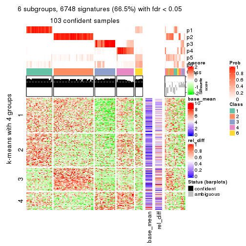
Signature heatmaps where rows are not scaled:
get_signatures(res, k = 2, scale_rows = FALSE)
get_signatures(res, k = 3, scale_rows = FALSE)
get_signatures(res, k = 4, scale_rows = FALSE)
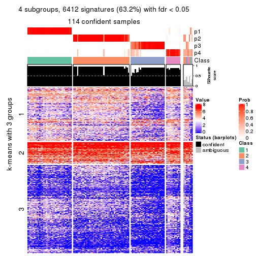
get_signatures(res, k = 5, scale_rows = FALSE)
get_signatures(res, k = 6, scale_rows = FALSE)
Compare the overlap of signatures from different k:
compare_signatures(res)
get_signature() returns a data frame invisibly. TO get the list of signatures, the function
call should be assigned to a variable explicitly. In following code, if plot argument is set
to FALSE, no heatmap is plotted while only the differential analysis is performed.
# code only for demonstration
tb = get_signature(res, k = ..., plot = FALSE)
An example of the output of tb is:
#> which_row fdr mean_1 mean_2 scaled_mean_1 scaled_mean_2 km
#> 1 38 0.042760348 8.373488 9.131774 -0.5533452 0.5164555 1
#> 2 40 0.018707592 7.106213 8.469186 -0.6173731 0.5762149 1
#> 3 55 0.019134737 10.221463 11.207825 -0.6159697 0.5749050 1
#> 4 59 0.006059896 5.921854 7.869574 -0.6899429 0.6439467 1
#> 5 60 0.018055526 8.928898 10.211722 -0.6204761 0.5791110 1
#> 6 98 0.009384629 15.714769 14.887706 0.6635654 -0.6193277 2
...
The columns in tb are:
which_row: row indices corresponding to the input matrix.fdr: FDR for the differential test. mean_x: The mean value in group x.scaled_mean_x: The mean value in group x after rows are scaled.km: Row groups if k-means clustering is applied to rows.UMAP plot which shows how samples are separated.
dimension_reduction(res, k = 2, method = "UMAP")
dimension_reduction(res, k = 3, method = "UMAP")
dimension_reduction(res, k = 4, method = "UMAP")

dimension_reduction(res, k = 5, method = "UMAP")
dimension_reduction(res, k = 6, method = "UMAP")
Following heatmap shows how subgroups are split when increasing k:
collect_classes(res)
If matrix rows can be associated to genes, consider to use GO_Enrichment(res,
...) to perform function enrichment for the signature genes.
The object with results only for a single top-value method and a single partition method can be extracted as:
res = res_list["CV", "NMF"]
# you can also extract it by
# res = res_list["CV:NMF"]
A summary of res and all the functions that can be applied to it:
res
#> A 'ConsensusPartition' object with k = 2, 3, 4, 5, 6.
#> On a matrix with 10145 rows and 121 columns.
#> Top rows (1000, 2000, 3000, 4000, 5000) are extracted by 'CV' method.
#> Subgroups are detected by 'NMF' method.
#> Performed in total 1250 partitions by row resampling.
#> Best k for subgroups seems to be 3.
#>
#> Following methods can be applied to this 'ConsensusPartition' object:
#> [1] "cola_report" "collect_classes" "collect_plots"
#> [4] "collect_stats" "colnames" "compare_signatures"
#> [7] "consensus_heatmap" "dimension_reduction" "functional_enrichment"
#> [10] "get_anno_col" "get_anno" "get_classes"
#> [13] "get_consensus" "get_matrix" "get_membership"
#> [16] "get_param" "get_signatures" "get_stats"
#> [19] "is_best_k" "is_stable_k" "membership_heatmap"
#> [22] "ncol" "nrow" "plot_ecdf"
#> [25] "rownames" "select_partition_number" "show"
#> [28] "suggest_best_k" "test_to_known_factors"
collect_plots() function collects all the plots made from res for all k (number of partitions)
into one single page to provide an easy and fast comparison between different k.
collect_plots(res)
The plots are:
k and the heatmap of
predicted classes for each k.k.k.k.All the plots in panels can be made by individual functions and they are plotted later in this section.
select_partition_number() produces several plots showing different
statistics for choosing “optimized” k. There are following statistics:
k;k, the area increased is defined as \(A_k - A_{k-1}\).The detailed explanations of these statistics can be found in the cola vignette.
Generally speaking, lower PAC score, higher mean silhouette score or higher
concordance corresponds to better partition. Rand index and Jaccard index
measure how similar the current partition is compared to partition with k-1.
If they are too similar, we won't accept k is better than k-1.
select_partition_number(res)

The numeric values for all these statistics can be obtained by get_stats().
get_stats(res)
#> k 1-PAC mean_silhouette concordance area_increased Rand Jaccard
#> 2 2 1.000 0.996 0.998 0.4803 0.521 0.521
#> 3 3 1.000 0.975 0.989 0.3879 0.800 0.621
#> 4 4 0.894 0.874 0.928 0.0477 0.995 0.985
#> 5 5 0.737 0.786 0.842 0.0536 0.989 0.965
#> 6 6 0.675 0.643 0.743 0.0433 0.956 0.863
suggest_best_k() suggests the best \(k\) based on these statistics. The rules are as follows:
NA.suggest_best_k(res)
#> [1] 3
#> attr(,"optional")
#> [1] 2
There is also optional best \(k\) = 2 that is worth to check.
Following shows the table of the partitions (You need to click the show/hide
code output link to see it). The membership matrix (columns with name p*)
is inferred by
clue::cl_consensus()
function with the SE method. Basically the value in the membership matrix
represents the probability to belong to a certain group. The finall class
label for an item is determined with the group with highest probability it
belongs to.
In get_classes() function, the entropy is calculated from the membership
matrix and the silhouette score is calculated from the consensus matrix.
cbind(get_classes(res, k = 2), get_membership(res, k = 2))
#> class entropy silhouette p1 p2
#> SRR2431463 1 0.000 0.997 1.000 0.000
#> SRR2431462 1 0.000 0.997 1.000 0.000
#> SRR2431461 1 0.000 0.997 1.000 0.000
#> SRR2431459 1 0.000 0.997 1.000 0.000
#> SRR2431460 1 0.000 0.997 1.000 0.000
#> SRR2431458 1 0.000 0.997 1.000 0.000
#> SRR2431457 1 0.000 0.997 1.000 0.000
#> SRR2431455 1 0.000 0.997 1.000 0.000
#> SRR2431456 1 0.000 0.997 1.000 0.000
#> SRR2431454 1 0.000 0.997 1.000 0.000
#> SRR2431453 1 0.000 0.997 1.000 0.000
#> SRR2431451 1 0.000 0.997 1.000 0.000
#> SRR2431452 1 0.000 0.997 1.000 0.000
#> SRR2431450 1 0.000 0.997 1.000 0.000
#> SRR2431449 1 0.000 0.997 1.000 0.000
#> SRR2431448 1 0.000 0.997 1.000 0.000
#> SRR2431446 1 0.000 0.997 1.000 0.000
#> SRR2431447 1 0.000 0.997 1.000 0.000
#> SRR2431445 1 0.000 0.997 1.000 0.000
#> SRR2431444 1 0.000 0.997 1.000 0.000
#> SRR2431443 1 0.000 0.997 1.000 0.000
#> SRR2431442 1 0.000 0.997 1.000 0.000
#> SRR2431441 1 0.000 0.997 1.000 0.000
#> SRR2431440 1 0.000 0.997 1.000 0.000
#> SRR2431439 1 0.000 0.997 1.000 0.000
#> SRR2431438 1 0.000 0.997 1.000 0.000
#> SRR2431437 1 0.000 0.997 1.000 0.000
#> SRR2431436 1 0.000 0.997 1.000 0.000
#> SRR2431435 1 0.000 0.997 1.000 0.000
#> SRR2431434 1 0.000 0.997 1.000 0.000
#> SRR2431433 1 0.000 0.997 1.000 0.000
#> SRR2431432 1 0.000 0.997 1.000 0.000
#> SRR2431431 1 0.000 0.997 1.000 0.000
#> SRR2431430 1 0.000 0.997 1.000 0.000
#> SRR2431429 1 0.000 0.997 1.000 0.000
#> SRR2431428 1 0.000 0.997 1.000 0.000
#> SRR2431427 2 0.000 1.000 0.000 1.000
#> SRR2431426 2 0.000 1.000 0.000 1.000
#> SRR2431425 2 0.000 1.000 0.000 1.000
#> SRR2431424 2 0.000 1.000 0.000 1.000
#> SRR2431423 2 0.000 1.000 0.000 1.000
#> SRR2431422 2 0.000 1.000 0.000 1.000
#> SRR2431421 2 0.000 1.000 0.000 1.000
#> SRR2431420 2 0.000 1.000 0.000 1.000
#> SRR2431419 2 0.000 1.000 0.000 1.000
#> SRR2431418 2 0.000 1.000 0.000 1.000
#> SRR2431417 2 0.000 1.000 0.000 1.000
#> SRR2431416 2 0.000 1.000 0.000 1.000
#> SRR2431415 2 0.000 1.000 0.000 1.000
#> SRR2431414 2 0.000 1.000 0.000 1.000
#> SRR2431413 2 0.000 1.000 0.000 1.000
#> SRR2431412 2 0.000 1.000 0.000 1.000
#> SRR2431411 2 0.000 1.000 0.000 1.000
#> SRR2431409 2 0.000 1.000 0.000 1.000
#> SRR2431410 1 0.706 0.762 0.808 0.192
#> SRR2431408 2 0.000 1.000 0.000 1.000
#> SRR2431407 2 0.000 1.000 0.000 1.000
#> SRR2431405 2 0.000 1.000 0.000 1.000
#> SRR2431406 2 0.000 1.000 0.000 1.000
#> SRR2431404 2 0.000 1.000 0.000 1.000
#> SRR2431403 2 0.000 1.000 0.000 1.000
#> SRR2431402 2 0.000 1.000 0.000 1.000
#> SRR2431401 2 0.000 1.000 0.000 1.000
#> SRR2431400 2 0.000 1.000 0.000 1.000
#> SRR2431399 2 0.000 1.000 0.000 1.000
#> SRR2431398 2 0.000 1.000 0.000 1.000
#> SRR2431397 2 0.000 1.000 0.000 1.000
#> SRR2431396 2 0.000 1.000 0.000 1.000
#> SRR2431395 2 0.000 1.000 0.000 1.000
#> SRR2431394 2 0.000 1.000 0.000 1.000
#> SRR2431393 2 0.000 1.000 0.000 1.000
#> SRR2431392 2 0.000 1.000 0.000 1.000
#> SRR2431391 2 0.000 1.000 0.000 1.000
#> SRR2431390 2 0.000 1.000 0.000 1.000
#> SRR2431389 2 0.000 1.000 0.000 1.000
#> SRR2431388 2 0.000 1.000 0.000 1.000
#> SRR2431387 2 0.000 1.000 0.000 1.000
#> SRR2431386 2 0.000 1.000 0.000 1.000
#> SRR2431385 2 0.000 1.000 0.000 1.000
#> SRR2431383 2 0.000 1.000 0.000 1.000
#> SRR2431384 2 0.000 1.000 0.000 1.000
#> SRR2431382 2 0.000 1.000 0.000 1.000
#> SRR2431381 2 0.000 1.000 0.000 1.000
#> SRR2431380 2 0.000 1.000 0.000 1.000
#> SRR2431379 1 0.000 0.997 1.000 0.000
#> SRR2431378 1 0.000 0.997 1.000 0.000
#> SRR2431376 1 0.000 0.997 1.000 0.000
#> SRR2431377 1 0.000 0.997 1.000 0.000
#> SRR2431375 1 0.000 0.997 1.000 0.000
#> SRR2431374 1 0.000 0.997 1.000 0.000
#> SRR2431372 1 0.000 0.997 1.000 0.000
#> SRR2431371 1 0.000 0.997 1.000 0.000
#> SRR2431373 1 0.000 0.997 1.000 0.000
#> SRR2431370 1 0.000 0.997 1.000 0.000
#> SRR2431369 1 0.000 0.997 1.000 0.000
#> SRR2431368 1 0.000 0.997 1.000 0.000
#> SRR2431367 1 0.000 0.997 1.000 0.000
#> SRR2431366 1 0.000 0.997 1.000 0.000
#> SRR2431365 1 0.000 0.997 1.000 0.000
#> SRR2431364 1 0.000 0.997 1.000 0.000
#> SRR2431363 1 0.000 0.997 1.000 0.000
#> SRR2431361 1 0.000 0.997 1.000 0.000
#> SRR2431362 1 0.000 0.997 1.000 0.000
#> SRR2431360 1 0.000 0.997 1.000 0.000
#> SRR2431359 1 0.000 0.997 1.000 0.000
#> SRR2431358 1 0.000 0.997 1.000 0.000
#> SRR2431357 1 0.000 0.997 1.000 0.000
#> SRR2431355 1 0.000 0.997 1.000 0.000
#> SRR2431356 1 0.000 0.997 1.000 0.000
#> SRR2431354 1 0.000 0.997 1.000 0.000
#> SRR2431353 1 0.000 0.997 1.000 0.000
#> SRR2431352 1 0.000 0.997 1.000 0.000
#> SRR2431351 1 0.000 0.997 1.000 0.000
#> SRR2431350 1 0.000 0.997 1.000 0.000
#> SRR2431349 1 0.000 0.997 1.000 0.000
#> SRR2431348 1 0.000 0.997 1.000 0.000
#> SRR2431347 1 0.000 0.997 1.000 0.000
#> SRR2431346 1 0.000 0.997 1.000 0.000
#> SRR2431345 1 0.000 0.997 1.000 0.000
#> SRR2431344 1 0.000 0.997 1.000 0.000
#> SRR2431343 1 0.000 0.997 1.000 0.000
cbind(get_classes(res, k = 3), get_membership(res, k = 3))
#> class entropy silhouette p1 p2 p3
#> SRR2431463 1 0.0000 0.999 1.000 0.000 0.000
#> SRR2431462 1 0.0000 0.999 1.000 0.000 0.000
#> SRR2431461 1 0.0000 0.999 1.000 0.000 0.000
#> SRR2431459 1 0.0000 0.999 1.000 0.000 0.000
#> SRR2431460 1 0.0000 0.999 1.000 0.000 0.000
#> SRR2431458 1 0.0000 0.999 1.000 0.000 0.000
#> SRR2431457 1 0.0000 0.999 1.000 0.000 0.000
#> SRR2431455 1 0.0000 0.999 1.000 0.000 0.000
#> SRR2431456 1 0.0000 0.999 1.000 0.000 0.000
#> SRR2431454 1 0.0000 0.999 1.000 0.000 0.000
#> SRR2431453 1 0.0000 0.999 1.000 0.000 0.000
#> SRR2431451 1 0.0000 0.999 1.000 0.000 0.000
#> SRR2431452 1 0.0237 0.995 0.996 0.000 0.004
#> SRR2431450 1 0.0000 0.999 1.000 0.000 0.000
#> SRR2431449 1 0.0000 0.999 1.000 0.000 0.000
#> SRR2431448 1 0.0000 0.999 1.000 0.000 0.000
#> SRR2431446 1 0.0000 0.999 1.000 0.000 0.000
#> SRR2431447 1 0.0000 0.999 1.000 0.000 0.000
#> SRR2431445 1 0.0000 0.999 1.000 0.000 0.000
#> SRR2431444 1 0.0000 0.999 1.000 0.000 0.000
#> SRR2431443 1 0.0000 0.999 1.000 0.000 0.000
#> SRR2431442 1 0.0000 0.999 1.000 0.000 0.000
#> SRR2431441 1 0.0000 0.999 1.000 0.000 0.000
#> SRR2431440 1 0.0000 0.999 1.000 0.000 0.000
#> SRR2431439 1 0.0000 0.999 1.000 0.000 0.000
#> SRR2431438 1 0.0000 0.999 1.000 0.000 0.000
#> SRR2431437 1 0.0000 0.999 1.000 0.000 0.000
#> SRR2431436 1 0.0000 0.999 1.000 0.000 0.000
#> SRR2431435 1 0.0000 0.999 1.000 0.000 0.000
#> SRR2431434 1 0.0000 0.999 1.000 0.000 0.000
#> SRR2431433 1 0.0000 0.999 1.000 0.000 0.000
#> SRR2431432 1 0.0000 0.999 1.000 0.000 0.000
#> SRR2431431 1 0.0000 0.999 1.000 0.000 0.000
#> SRR2431430 1 0.0000 0.999 1.000 0.000 0.000
#> SRR2431429 1 0.0000 0.999 1.000 0.000 0.000
#> SRR2431428 1 0.0000 0.999 1.000 0.000 0.000
#> SRR2431427 2 0.0000 0.993 0.000 1.000 0.000
#> SRR2431426 2 0.0000 0.993 0.000 1.000 0.000
#> SRR2431425 2 0.0000 0.993 0.000 1.000 0.000
#> SRR2431424 2 0.0000 0.993 0.000 1.000 0.000
#> SRR2431423 2 0.0000 0.993 0.000 1.000 0.000
#> SRR2431422 2 0.0000 0.993 0.000 1.000 0.000
#> SRR2431421 2 0.0000 0.993 0.000 1.000 0.000
#> SRR2431420 2 0.0000 0.993 0.000 1.000 0.000
#> SRR2431419 2 0.0000 0.993 0.000 1.000 0.000
#> SRR2431418 2 0.0000 0.993 0.000 1.000 0.000
#> SRR2431417 2 0.0000 0.993 0.000 1.000 0.000
#> SRR2431416 2 0.0000 0.993 0.000 1.000 0.000
#> SRR2431415 2 0.0000 0.993 0.000 1.000 0.000
#> SRR2431414 2 0.0000 0.993 0.000 1.000 0.000
#> SRR2431413 2 0.0000 0.993 0.000 1.000 0.000
#> SRR2431412 2 0.0000 0.993 0.000 1.000 0.000
#> SRR2431411 2 0.0000 0.993 0.000 1.000 0.000
#> SRR2431409 2 0.0000 0.993 0.000 1.000 0.000
#> SRR2431410 2 0.8067 0.566 0.160 0.652 0.188
#> SRR2431408 2 0.0000 0.993 0.000 1.000 0.000
#> SRR2431407 2 0.0000 0.993 0.000 1.000 0.000
#> SRR2431405 2 0.0000 0.993 0.000 1.000 0.000
#> SRR2431406 2 0.0000 0.993 0.000 1.000 0.000
#> SRR2431404 2 0.0000 0.993 0.000 1.000 0.000
#> SRR2431403 2 0.0000 0.993 0.000 1.000 0.000
#> SRR2431402 2 0.0000 0.993 0.000 1.000 0.000
#> SRR2431401 2 0.0000 0.993 0.000 1.000 0.000
#> SRR2431400 2 0.0000 0.993 0.000 1.000 0.000
#> SRR2431399 2 0.0000 0.993 0.000 1.000 0.000
#> SRR2431398 2 0.0000 0.993 0.000 1.000 0.000
#> SRR2431397 2 0.0000 0.993 0.000 1.000 0.000
#> SRR2431396 2 0.0000 0.993 0.000 1.000 0.000
#> SRR2431395 2 0.0000 0.993 0.000 1.000 0.000
#> SRR2431394 2 0.0000 0.993 0.000 1.000 0.000
#> SRR2431393 2 0.0000 0.993 0.000 1.000 0.000
#> SRR2431392 2 0.0000 0.993 0.000 1.000 0.000
#> SRR2431391 2 0.0000 0.993 0.000 1.000 0.000
#> SRR2431390 2 0.0000 0.993 0.000 1.000 0.000
#> SRR2431389 2 0.0000 0.993 0.000 1.000 0.000
#> SRR2431388 2 0.0000 0.993 0.000 1.000 0.000
#> SRR2431387 2 0.0000 0.993 0.000 1.000 0.000
#> SRR2431386 2 0.0000 0.993 0.000 1.000 0.000
#> SRR2431385 2 0.0000 0.993 0.000 1.000 0.000
#> SRR2431383 2 0.0000 0.993 0.000 1.000 0.000
#> SRR2431384 2 0.0000 0.993 0.000 1.000 0.000
#> SRR2431382 2 0.0000 0.993 0.000 1.000 0.000
#> SRR2431381 2 0.0000 0.993 0.000 1.000 0.000
#> SRR2431380 2 0.0000 0.993 0.000 1.000 0.000
#> SRR2431379 3 0.0000 0.973 0.000 0.000 1.000
#> SRR2431378 3 0.0000 0.973 0.000 0.000 1.000
#> SRR2431376 3 0.0000 0.973 0.000 0.000 1.000
#> SRR2431377 3 0.0000 0.973 0.000 0.000 1.000
#> SRR2431375 3 0.0000 0.973 0.000 0.000 1.000
#> SRR2431374 3 0.0000 0.973 0.000 0.000 1.000
#> SRR2431372 3 0.0000 0.973 0.000 0.000 1.000
#> SRR2431371 3 0.0000 0.973 0.000 0.000 1.000
#> SRR2431373 3 0.0000 0.973 0.000 0.000 1.000
#> SRR2431370 3 0.0000 0.973 0.000 0.000 1.000
#> SRR2431369 3 0.0000 0.973 0.000 0.000 1.000
#> SRR2431368 3 0.0000 0.973 0.000 0.000 1.000
#> SRR2431367 3 0.0000 0.973 0.000 0.000 1.000
#> SRR2431366 3 0.0000 0.973 0.000 0.000 1.000
#> SRR2431365 3 0.0000 0.973 0.000 0.000 1.000
#> SRR2431364 3 0.0000 0.973 0.000 0.000 1.000
#> SRR2431363 3 0.0000 0.973 0.000 0.000 1.000
#> SRR2431361 3 0.0000 0.973 0.000 0.000 1.000
#> SRR2431362 3 0.0000 0.973 0.000 0.000 1.000
#> SRR2431360 3 0.0000 0.973 0.000 0.000 1.000
#> SRR2431359 3 0.4002 0.806 0.160 0.000 0.840
#> SRR2431358 1 0.1411 0.961 0.964 0.000 0.036
#> SRR2431357 3 0.0000 0.973 0.000 0.000 1.000
#> SRR2431355 3 0.1163 0.949 0.028 0.000 0.972
#> SRR2431356 3 0.0000 0.973 0.000 0.000 1.000
#> SRR2431354 3 0.0000 0.973 0.000 0.000 1.000
#> SRR2431353 3 0.6045 0.414 0.380 0.000 0.620
#> SRR2431352 3 0.0000 0.973 0.000 0.000 1.000
#> SRR2431351 3 0.0000 0.973 0.000 0.000 1.000
#> SRR2431350 3 0.0000 0.973 0.000 0.000 1.000
#> SRR2431349 3 0.0000 0.973 0.000 0.000 1.000
#> SRR2431348 3 0.0000 0.973 0.000 0.000 1.000
#> SRR2431347 3 0.0000 0.973 0.000 0.000 1.000
#> SRR2431346 3 0.0000 0.973 0.000 0.000 1.000
#> SRR2431345 3 0.0000 0.973 0.000 0.000 1.000
#> SRR2431344 3 0.5948 0.458 0.360 0.000 0.640
#> SRR2431343 3 0.0000 0.973 0.000 0.000 1.000
cbind(get_classes(res, k = 4), get_membership(res, k = 4))
#> class entropy silhouette p1 p2 p3 p4
#> SRR2431463 1 0.1211 0.8798 0.960 0.000 0.000 0.040
#> SRR2431462 1 0.0592 0.8870 0.984 0.000 0.000 0.016
#> SRR2431461 1 0.1211 0.8794 0.960 0.000 0.000 0.040
#> SRR2431459 1 0.0817 0.8878 0.976 0.000 0.000 0.024
#> SRR2431460 1 0.2345 0.8320 0.900 0.000 0.000 0.100
#> SRR2431458 1 0.1118 0.8844 0.964 0.000 0.000 0.036
#> SRR2431457 1 0.0188 0.8853 0.996 0.000 0.000 0.004
#> SRR2431455 1 0.0469 0.8851 0.988 0.000 0.000 0.012
#> SRR2431456 1 0.3610 0.6122 0.800 0.000 0.000 0.200
#> SRR2431454 1 0.2345 0.8424 0.900 0.000 0.000 0.100
#> SRR2431453 1 0.2011 0.8507 0.920 0.000 0.000 0.080
#> SRR2431451 1 0.1792 0.8648 0.932 0.000 0.000 0.068
#> SRR2431452 1 0.4499 0.4271 0.756 0.004 0.012 0.228
#> SRR2431450 1 0.2081 0.8342 0.916 0.000 0.000 0.084
#> SRR2431449 1 0.1940 0.8555 0.924 0.000 0.000 0.076
#> SRR2431448 1 0.1118 0.8852 0.964 0.000 0.000 0.036
#> SRR2431446 1 0.0921 0.8817 0.972 0.000 0.000 0.028
#> SRR2431447 1 0.1389 0.8828 0.952 0.000 0.000 0.048
#> SRR2431445 1 0.0188 0.8852 0.996 0.000 0.000 0.004
#> SRR2431444 1 0.3400 0.6526 0.820 0.000 0.000 0.180
#> SRR2431443 1 0.1211 0.8805 0.960 0.000 0.000 0.040
#> SRR2431442 1 0.0336 0.8854 0.992 0.000 0.000 0.008
#> SRR2431441 1 0.0000 0.8846 1.000 0.000 0.000 0.000
#> SRR2431440 1 0.2469 0.8257 0.892 0.000 0.000 0.108
#> SRR2431439 1 0.3444 0.6232 0.816 0.000 0.000 0.184
#> SRR2431438 1 0.0336 0.8856 0.992 0.000 0.000 0.008
#> SRR2431437 1 0.3569 0.6343 0.804 0.000 0.000 0.196
#> SRR2431436 1 0.0817 0.8853 0.976 0.000 0.000 0.024
#> SRR2431435 1 0.1557 0.8729 0.944 0.000 0.000 0.056
#> SRR2431434 1 0.1022 0.8853 0.968 0.000 0.000 0.032
#> SRR2431433 1 0.0817 0.8875 0.976 0.000 0.000 0.024
#> SRR2431432 1 0.1557 0.8752 0.944 0.000 0.000 0.056
#> SRR2431431 4 0.4916 0.0000 0.424 0.000 0.000 0.576
#> SRR2431430 1 0.2814 0.7716 0.868 0.000 0.000 0.132
#> SRR2431429 1 0.1022 0.8852 0.968 0.000 0.000 0.032
#> SRR2431428 1 0.1716 0.8730 0.936 0.000 0.000 0.064
#> SRR2431427 2 0.1474 0.9546 0.000 0.948 0.000 0.052
#> SRR2431426 2 0.1637 0.9520 0.000 0.940 0.000 0.060
#> SRR2431425 2 0.0592 0.9641 0.000 0.984 0.000 0.016
#> SRR2431424 2 0.1022 0.9623 0.000 0.968 0.000 0.032
#> SRR2431423 2 0.0707 0.9630 0.000 0.980 0.000 0.020
#> SRR2431422 2 0.0707 0.9639 0.000 0.980 0.000 0.020
#> SRR2431421 2 0.1118 0.9609 0.000 0.964 0.000 0.036
#> SRR2431420 2 0.0921 0.9622 0.000 0.972 0.000 0.028
#> SRR2431419 2 0.1118 0.9625 0.000 0.964 0.000 0.036
#> SRR2431418 2 0.1211 0.9603 0.000 0.960 0.000 0.040
#> SRR2431417 2 0.0707 0.9626 0.000 0.980 0.000 0.020
#> SRR2431416 2 0.1940 0.9444 0.000 0.924 0.000 0.076
#> SRR2431415 2 0.0707 0.9621 0.000 0.980 0.000 0.020
#> SRR2431414 2 0.0469 0.9637 0.000 0.988 0.000 0.012
#> SRR2431413 2 0.2011 0.9385 0.000 0.920 0.000 0.080
#> SRR2431412 2 0.0817 0.9623 0.000 0.976 0.000 0.024
#> SRR2431411 2 0.4250 0.7157 0.000 0.724 0.000 0.276
#> SRR2431409 2 0.0592 0.9628 0.000 0.984 0.000 0.016
#> SRR2431410 2 0.9080 0.0264 0.168 0.448 0.112 0.272
#> SRR2431408 2 0.0469 0.9625 0.000 0.988 0.000 0.012
#> SRR2431407 2 0.0817 0.9621 0.000 0.976 0.000 0.024
#> SRR2431405 2 0.2704 0.9081 0.000 0.876 0.000 0.124
#> SRR2431406 2 0.0469 0.9635 0.000 0.988 0.000 0.012
#> SRR2431404 2 0.2469 0.9110 0.000 0.892 0.000 0.108
#> SRR2431403 2 0.0921 0.9626 0.000 0.972 0.000 0.028
#> SRR2431402 2 0.1022 0.9629 0.000 0.968 0.000 0.032
#> SRR2431401 2 0.0707 0.9638 0.000 0.980 0.000 0.020
#> SRR2431400 2 0.0469 0.9626 0.000 0.988 0.000 0.012
#> SRR2431399 2 0.0921 0.9619 0.000 0.972 0.000 0.028
#> SRR2431398 2 0.0592 0.9628 0.000 0.984 0.000 0.016
#> SRR2431397 2 0.0817 0.9633 0.000 0.976 0.000 0.024
#> SRR2431396 2 0.1022 0.9609 0.000 0.968 0.000 0.032
#> SRR2431395 2 0.1118 0.9612 0.000 0.964 0.000 0.036
#> SRR2431394 2 0.1389 0.9587 0.000 0.952 0.000 0.048
#> SRR2431393 2 0.0592 0.9625 0.000 0.984 0.000 0.016
#> SRR2431392 2 0.1022 0.9628 0.000 0.968 0.000 0.032
#> SRR2431391 2 0.0336 0.9635 0.000 0.992 0.000 0.008
#> SRR2431390 2 0.1022 0.9621 0.000 0.968 0.000 0.032
#> SRR2431389 2 0.1118 0.9623 0.000 0.964 0.000 0.036
#> SRR2431388 2 0.1302 0.9615 0.000 0.956 0.000 0.044
#> SRR2431387 2 0.1211 0.9611 0.000 0.960 0.000 0.040
#> SRR2431386 2 0.0469 0.9631 0.000 0.988 0.000 0.012
#> SRR2431385 2 0.0817 0.9625 0.000 0.976 0.000 0.024
#> SRR2431383 2 0.2530 0.9155 0.000 0.888 0.000 0.112
#> SRR2431384 2 0.0592 0.9628 0.000 0.984 0.000 0.016
#> SRR2431382 2 0.0469 0.9636 0.000 0.988 0.000 0.012
#> SRR2431381 2 0.0592 0.9638 0.000 0.984 0.000 0.016
#> SRR2431380 2 0.0188 0.9625 0.000 0.996 0.000 0.004
#> SRR2431379 3 0.1716 0.9160 0.000 0.000 0.936 0.064
#> SRR2431378 3 0.1022 0.9144 0.000 0.000 0.968 0.032
#> SRR2431376 3 0.1118 0.9137 0.000 0.000 0.964 0.036
#> SRR2431377 3 0.0469 0.9173 0.000 0.000 0.988 0.012
#> SRR2431375 3 0.2011 0.9118 0.000 0.000 0.920 0.080
#> SRR2431374 3 0.1302 0.9118 0.000 0.000 0.956 0.044
#> SRR2431372 3 0.1940 0.9124 0.000 0.000 0.924 0.076
#> SRR2431371 3 0.0817 0.9159 0.000 0.000 0.976 0.024
#> SRR2431373 3 0.0921 0.9183 0.000 0.000 0.972 0.028
#> SRR2431370 3 0.0817 0.9166 0.000 0.000 0.976 0.024
#> SRR2431369 3 0.1557 0.9076 0.000 0.000 0.944 0.056
#> SRR2431368 3 0.1118 0.9142 0.000 0.000 0.964 0.036
#> SRR2431367 3 0.2469 0.9034 0.000 0.000 0.892 0.108
#> SRR2431366 3 0.0921 0.9150 0.000 0.000 0.972 0.028
#> SRR2431365 3 0.0336 0.9189 0.000 0.000 0.992 0.008
#> SRR2431364 3 0.2868 0.8937 0.000 0.000 0.864 0.136
#> SRR2431363 3 0.2868 0.8927 0.000 0.000 0.864 0.136
#> SRR2431361 3 0.0707 0.9163 0.000 0.000 0.980 0.020
#> SRR2431362 3 0.3528 0.8610 0.000 0.000 0.808 0.192
#> SRR2431360 3 0.3400 0.8735 0.000 0.000 0.820 0.180
#> SRR2431359 3 0.4831 0.7862 0.040 0.000 0.752 0.208
#> SRR2431358 1 0.4227 0.6452 0.820 0.000 0.060 0.120
#> SRR2431357 3 0.0817 0.9164 0.000 0.000 0.976 0.024
#> SRR2431355 3 0.2589 0.8809 0.044 0.000 0.912 0.044
#> SRR2431356 3 0.0707 0.9194 0.000 0.000 0.980 0.020
#> SRR2431354 3 0.3123 0.8844 0.000 0.000 0.844 0.156
#> SRR2431353 3 0.5448 0.6439 0.196 0.000 0.724 0.080
#> SRR2431352 3 0.1716 0.9034 0.000 0.000 0.936 0.064
#> SRR2431351 3 0.2408 0.9065 0.000 0.000 0.896 0.104
#> SRR2431350 3 0.1716 0.9159 0.000 0.000 0.936 0.064
#> SRR2431349 3 0.2868 0.8932 0.000 0.000 0.864 0.136
#> SRR2431348 3 0.2149 0.9128 0.000 0.000 0.912 0.088
#> SRR2431347 3 0.1211 0.9204 0.000 0.000 0.960 0.040
#> SRR2431346 3 0.0921 0.9200 0.000 0.000 0.972 0.028
#> SRR2431345 3 0.2973 0.8922 0.000 0.000 0.856 0.144
#> SRR2431344 3 0.7807 -0.0710 0.288 0.000 0.420 0.292
#> SRR2431343 3 0.0188 0.9181 0.000 0.000 0.996 0.004
cbind(get_classes(res, k = 5), get_membership(res, k = 5))
#> class entropy silhouette p1 p2 p3 p4 p5
#> SRR2431463 1 0.1877 0.870 0.924 0.000 0.000 0.064 0.012
#> SRR2431462 1 0.0798 0.872 0.976 0.000 0.000 0.016 0.008
#> SRR2431461 1 0.1549 0.866 0.944 0.000 0.000 0.040 0.016
#> SRR2431459 1 0.1331 0.873 0.952 0.000 0.000 0.040 0.008
#> SRR2431460 1 0.3669 0.807 0.816 0.000 0.000 0.128 0.056
#> SRR2431458 1 0.0794 0.872 0.972 0.000 0.000 0.028 0.000
#> SRR2431457 1 0.0798 0.870 0.976 0.000 0.000 0.008 0.016
#> SRR2431455 1 0.0955 0.870 0.968 0.000 0.000 0.028 0.004
#> SRR2431456 1 0.5268 0.593 0.668 0.000 0.000 0.220 0.112
#> SRR2431454 1 0.3759 0.801 0.808 0.000 0.000 0.136 0.056
#> SRR2431453 1 0.2905 0.841 0.868 0.000 0.000 0.036 0.096
#> SRR2431451 1 0.2171 0.861 0.912 0.000 0.000 0.064 0.024
#> SRR2431452 1 0.4971 0.285 0.628 0.000 0.004 0.332 0.036
#> SRR2431450 1 0.3597 0.778 0.832 0.000 0.008 0.116 0.044
#> SRR2431449 1 0.2879 0.846 0.868 0.000 0.000 0.100 0.032
#> SRR2431448 1 0.2293 0.859 0.900 0.000 0.000 0.084 0.016
#> SRR2431446 1 0.1626 0.860 0.940 0.000 0.000 0.044 0.016
#> SRR2431447 1 0.2236 0.861 0.908 0.000 0.000 0.068 0.024
#> SRR2431445 1 0.0898 0.874 0.972 0.000 0.000 0.020 0.008
#> SRR2431444 1 0.5044 0.583 0.716 0.000 0.004 0.140 0.140
#> SRR2431443 1 0.1597 0.864 0.940 0.000 0.000 0.048 0.012
#> SRR2431442 1 0.1310 0.874 0.956 0.000 0.000 0.024 0.020
#> SRR2431441 1 0.0671 0.870 0.980 0.000 0.000 0.016 0.004
#> SRR2431440 1 0.2914 0.846 0.872 0.000 0.000 0.076 0.052
#> SRR2431439 1 0.5467 0.558 0.708 0.000 0.032 0.156 0.104
#> SRR2431438 1 0.0798 0.870 0.976 0.000 0.000 0.016 0.008
#> SRR2431437 1 0.3946 0.761 0.800 0.000 0.000 0.080 0.120
#> SRR2431436 1 0.1281 0.869 0.956 0.000 0.000 0.032 0.012
#> SRR2431435 1 0.2046 0.866 0.916 0.000 0.000 0.068 0.016
#> SRR2431434 1 0.2036 0.863 0.920 0.000 0.000 0.056 0.024
#> SRR2431433 1 0.1741 0.871 0.936 0.000 0.000 0.040 0.024
#> SRR2431432 1 0.2722 0.842 0.872 0.000 0.000 0.108 0.020
#> SRR2431431 5 0.5983 0.000 0.200 0.000 0.000 0.212 0.588
#> SRR2431430 1 0.2927 0.835 0.872 0.000 0.000 0.060 0.068
#> SRR2431429 1 0.1364 0.871 0.952 0.000 0.000 0.036 0.012
#> SRR2431428 1 0.3639 0.825 0.824 0.000 0.000 0.100 0.076
#> SRR2431427 2 0.2233 0.903 0.000 0.892 0.000 0.004 0.104
#> SRR2431426 2 0.2127 0.916 0.000 0.892 0.000 0.000 0.108
#> SRR2431425 2 0.1121 0.924 0.000 0.956 0.000 0.000 0.044
#> SRR2431424 2 0.1732 0.921 0.000 0.920 0.000 0.000 0.080
#> SRR2431423 2 0.1544 0.925 0.000 0.932 0.000 0.000 0.068
#> SRR2431422 2 0.1830 0.923 0.000 0.924 0.000 0.008 0.068
#> SRR2431421 2 0.1965 0.920 0.000 0.904 0.000 0.000 0.096
#> SRR2431420 2 0.1410 0.925 0.000 0.940 0.000 0.000 0.060
#> SRR2431419 2 0.1608 0.923 0.000 0.928 0.000 0.000 0.072
#> SRR2431418 2 0.2377 0.913 0.000 0.872 0.000 0.000 0.128
#> SRR2431417 2 0.1502 0.921 0.000 0.940 0.000 0.004 0.056
#> SRR2431416 2 0.2338 0.897 0.000 0.884 0.000 0.004 0.112
#> SRR2431415 2 0.1608 0.924 0.000 0.928 0.000 0.000 0.072
#> SRR2431414 2 0.1671 0.915 0.000 0.924 0.000 0.000 0.076
#> SRR2431413 2 0.3596 0.818 0.000 0.784 0.000 0.016 0.200
#> SRR2431412 2 0.1638 0.917 0.000 0.932 0.000 0.004 0.064
#> SRR2431411 2 0.5706 0.328 0.004 0.540 0.000 0.076 0.380
#> SRR2431409 2 0.2068 0.918 0.000 0.904 0.000 0.004 0.092
#> SRR2431410 4 0.8685 -0.124 0.092 0.296 0.032 0.344 0.236
#> SRR2431408 2 0.1478 0.924 0.000 0.936 0.000 0.000 0.064
#> SRR2431407 2 0.2439 0.902 0.000 0.876 0.000 0.004 0.120
#> SRR2431405 2 0.3715 0.759 0.000 0.736 0.000 0.004 0.260
#> SRR2431406 2 0.1544 0.922 0.000 0.932 0.000 0.000 0.068
#> SRR2431404 2 0.3398 0.797 0.000 0.780 0.000 0.004 0.216
#> SRR2431403 2 0.2233 0.916 0.000 0.892 0.000 0.004 0.104
#> SRR2431402 2 0.1270 0.922 0.000 0.948 0.000 0.000 0.052
#> SRR2431401 2 0.1768 0.926 0.000 0.924 0.000 0.004 0.072
#> SRR2431400 2 0.1831 0.922 0.000 0.920 0.000 0.004 0.076
#> SRR2431399 2 0.2411 0.913 0.000 0.884 0.000 0.008 0.108
#> SRR2431398 2 0.1430 0.919 0.000 0.944 0.000 0.004 0.052
#> SRR2431397 2 0.1908 0.918 0.000 0.908 0.000 0.000 0.092
#> SRR2431396 2 0.2286 0.913 0.000 0.888 0.000 0.004 0.108
#> SRR2431395 2 0.2424 0.919 0.000 0.868 0.000 0.000 0.132
#> SRR2431394 2 0.2074 0.903 0.000 0.896 0.000 0.000 0.104
#> SRR2431393 2 0.1894 0.924 0.000 0.920 0.000 0.008 0.072
#> SRR2431392 2 0.2304 0.915 0.000 0.892 0.000 0.008 0.100
#> SRR2431391 2 0.1502 0.922 0.000 0.940 0.000 0.004 0.056
#> SRR2431390 2 0.1410 0.924 0.000 0.940 0.000 0.000 0.060
#> SRR2431389 2 0.1952 0.915 0.000 0.912 0.000 0.004 0.084
#> SRR2431388 2 0.2130 0.922 0.000 0.908 0.000 0.012 0.080
#> SRR2431387 2 0.3327 0.872 0.000 0.828 0.000 0.028 0.144
#> SRR2431386 2 0.1571 0.917 0.000 0.936 0.000 0.004 0.060
#> SRR2431385 2 0.2890 0.887 0.000 0.836 0.000 0.004 0.160
#> SRR2431383 2 0.4240 0.758 0.000 0.736 0.000 0.036 0.228
#> SRR2431384 2 0.1851 0.916 0.000 0.912 0.000 0.000 0.088
#> SRR2431382 2 0.1544 0.915 0.000 0.932 0.000 0.000 0.068
#> SRR2431381 2 0.1478 0.923 0.000 0.936 0.000 0.000 0.064
#> SRR2431380 2 0.1270 0.920 0.000 0.948 0.000 0.000 0.052
#> SRR2431379 3 0.3196 0.769 0.000 0.000 0.804 0.192 0.004
#> SRR2431378 3 0.1830 0.747 0.000 0.000 0.924 0.068 0.008
#> SRR2431376 3 0.1764 0.739 0.000 0.000 0.928 0.064 0.008
#> SRR2431377 3 0.0703 0.761 0.000 0.000 0.976 0.024 0.000
#> SRR2431375 3 0.4270 0.715 0.000 0.000 0.668 0.320 0.012
#> SRR2431374 3 0.2077 0.725 0.008 0.000 0.908 0.084 0.000
#> SRR2431372 3 0.4173 0.731 0.000 0.000 0.688 0.300 0.012
#> SRR2431371 3 0.0703 0.759 0.000 0.000 0.976 0.024 0.000
#> SRR2431373 3 0.2482 0.751 0.000 0.000 0.892 0.084 0.024
#> SRR2431370 3 0.1638 0.772 0.000 0.000 0.932 0.064 0.004
#> SRR2431369 3 0.2519 0.707 0.000 0.000 0.884 0.100 0.016
#> SRR2431368 3 0.1608 0.736 0.000 0.000 0.928 0.072 0.000
#> SRR2431367 3 0.4151 0.701 0.000 0.000 0.652 0.344 0.004
#> SRR2431366 3 0.1341 0.746 0.000 0.000 0.944 0.056 0.000
#> SRR2431365 3 0.0963 0.768 0.000 0.000 0.964 0.036 0.000
#> SRR2431364 3 0.4551 0.672 0.000 0.000 0.616 0.368 0.016
#> SRR2431363 3 0.4392 0.668 0.000 0.000 0.612 0.380 0.008
#> SRR2431361 3 0.1043 0.763 0.000 0.000 0.960 0.040 0.000
#> SRR2431362 3 0.4977 0.557 0.000 0.000 0.500 0.472 0.028
#> SRR2431360 3 0.4848 0.627 0.000 0.000 0.556 0.420 0.024
#> SRR2431359 3 0.6478 0.524 0.012 0.000 0.508 0.336 0.144
#> SRR2431358 1 0.5692 0.537 0.644 0.000 0.036 0.264 0.056
#> SRR2431357 3 0.1608 0.743 0.000 0.000 0.928 0.072 0.000
#> SRR2431355 3 0.4652 0.610 0.056 0.000 0.744 0.188 0.012
#> SRR2431356 3 0.2488 0.776 0.000 0.000 0.872 0.124 0.004
#> SRR2431354 3 0.4793 0.624 0.000 0.000 0.544 0.436 0.020
#> SRR2431353 3 0.7139 0.301 0.120 0.000 0.496 0.316 0.068
#> SRR2431352 3 0.4065 0.595 0.008 0.000 0.760 0.212 0.020
#> SRR2431351 3 0.4047 0.719 0.000 0.000 0.676 0.320 0.004
#> SRR2431350 3 0.3266 0.765 0.000 0.000 0.796 0.200 0.004
#> SRR2431349 3 0.4380 0.684 0.000 0.000 0.616 0.376 0.008
#> SRR2431348 3 0.3980 0.735 0.000 0.000 0.708 0.284 0.008
#> SRR2431347 3 0.3123 0.774 0.000 0.000 0.812 0.184 0.004
#> SRR2431346 3 0.3163 0.773 0.000 0.000 0.824 0.164 0.012
#> SRR2431345 3 0.4436 0.673 0.000 0.000 0.596 0.396 0.008
#> SRR2431344 4 0.7245 -0.206 0.208 0.000 0.196 0.528 0.068
#> SRR2431343 3 0.2074 0.775 0.000 0.000 0.896 0.104 0.000
cbind(get_classes(res, k = 6), get_membership(res, k = 6))
#> class entropy silhouette p1 p2 p3 p4 p5 p6
#> SRR2431463 1 0.2687 0.8107 0.876 0.000 0.000 0.044 NA 0.072
#> SRR2431462 1 0.1686 0.8216 0.924 0.000 0.000 0.012 NA 0.064
#> SRR2431461 1 0.2501 0.8030 0.872 0.000 0.000 0.016 NA 0.108
#> SRR2431459 1 0.2058 0.8204 0.908 0.000 0.000 0.012 NA 0.072
#> SRR2431460 1 0.3967 0.7573 0.776 0.000 0.000 0.056 NA 0.152
#> SRR2431458 1 0.2605 0.8199 0.876 0.000 0.000 0.020 NA 0.092
#> SRR2431457 1 0.1444 0.8175 0.928 0.000 0.000 0.000 NA 0.072
#> SRR2431455 1 0.1219 0.8194 0.948 0.000 0.000 0.004 NA 0.048
#> SRR2431456 1 0.5320 0.6104 0.652 0.000 0.000 0.104 NA 0.212
#> SRR2431454 1 0.5135 0.7055 0.688 0.000 0.000 0.092 NA 0.176
#> SRR2431453 1 0.3819 0.7695 0.784 0.000 0.000 0.028 NA 0.160
#> SRR2431451 1 0.3939 0.7795 0.776 0.000 0.000 0.044 NA 0.160
#> SRR2431452 1 0.7441 0.0241 0.436 0.000 0.280 0.036 NA 0.176
#> SRR2431450 1 0.3513 0.7627 0.796 0.000 0.000 0.060 NA 0.144
#> SRR2431449 1 0.3766 0.7830 0.804 0.000 0.000 0.064 NA 0.112
#> SRR2431448 1 0.3048 0.8045 0.848 0.000 0.000 0.044 NA 0.100
#> SRR2431446 1 0.2726 0.7928 0.848 0.000 0.000 0.008 NA 0.136
#> SRR2431447 1 0.4078 0.7848 0.784 0.000 0.000 0.056 NA 0.124
#> SRR2431445 1 0.1464 0.8224 0.944 0.000 0.000 0.016 NA 0.036
#> SRR2431444 1 0.5121 0.4983 0.616 0.000 0.000 0.044 NA 0.304
#> SRR2431443 1 0.2257 0.8020 0.876 0.000 0.000 0.008 NA 0.116
#> SRR2431442 1 0.1265 0.8244 0.948 0.000 0.000 0.008 NA 0.044
#> SRR2431441 1 0.0547 0.8165 0.980 0.000 0.000 0.000 NA 0.020
#> SRR2431440 1 0.4203 0.7598 0.756 0.000 0.000 0.040 NA 0.172
#> SRR2431439 1 0.4993 0.6092 0.664 0.000 0.000 0.092 NA 0.228
#> SRR2431438 1 0.1738 0.8227 0.928 0.000 0.000 0.016 NA 0.052
#> SRR2431437 1 0.4449 0.6858 0.708 0.000 0.000 0.020 NA 0.228
#> SRR2431436 1 0.2346 0.8013 0.868 0.000 0.000 0.000 NA 0.124
#> SRR2431435 1 0.3653 0.7948 0.812 0.000 0.004 0.028 NA 0.128
#> SRR2431434 1 0.3014 0.8109 0.856 0.000 0.000 0.048 NA 0.084
#> SRR2431433 1 0.2344 0.8228 0.896 0.000 0.000 0.028 NA 0.068
#> SRR2431432 1 0.3852 0.7837 0.788 0.000 0.000 0.088 NA 0.116
#> SRR2431431 6 0.5904 0.0000 0.120 0.000 0.004 0.048 NA 0.608
#> SRR2431430 1 0.3577 0.7681 0.772 0.000 0.000 0.012 NA 0.200
#> SRR2431429 1 0.2712 0.8140 0.864 0.000 0.000 0.016 NA 0.108
#> SRR2431428 1 0.4017 0.7574 0.764 0.000 0.000 0.056 NA 0.168
#> SRR2431427 2 0.3104 0.8544 0.000 0.788 0.000 0.004 NA 0.004
#> SRR2431426 2 0.3302 0.8555 0.000 0.760 0.000 0.004 NA 0.004
#> SRR2431425 2 0.1349 0.8913 0.000 0.940 0.000 0.004 NA 0.000
#> SRR2431424 2 0.2871 0.8797 0.000 0.804 0.000 0.000 NA 0.004
#> SRR2431423 2 0.1082 0.8938 0.000 0.956 0.000 0.004 NA 0.000
#> SRR2431422 2 0.1753 0.8949 0.000 0.912 0.000 0.004 NA 0.000
#> SRR2431421 2 0.3418 0.8646 0.000 0.784 0.000 0.016 NA 0.008
#> SRR2431420 2 0.1910 0.8972 0.000 0.892 0.000 0.000 NA 0.000
#> SRR2431419 2 0.1757 0.8915 0.000 0.916 0.000 0.008 NA 0.000
#> SRR2431418 2 0.2913 0.8810 0.000 0.812 0.000 0.004 NA 0.004
#> SRR2431417 2 0.1411 0.8879 0.000 0.936 0.000 0.004 NA 0.000
#> SRR2431416 2 0.2964 0.8617 0.000 0.792 0.000 0.004 NA 0.000
#> SRR2431415 2 0.1327 0.8910 0.000 0.936 0.000 0.000 NA 0.000
#> SRR2431414 2 0.2402 0.8867 0.000 0.856 0.000 0.000 NA 0.004
#> SRR2431413 2 0.4045 0.7425 0.000 0.648 0.000 0.008 NA 0.008
#> SRR2431412 2 0.1542 0.8878 0.000 0.936 0.000 0.004 NA 0.008
#> SRR2431411 2 0.5720 0.2841 0.000 0.468 0.008 0.028 NA 0.060
#> SRR2431409 2 0.2092 0.8896 0.000 0.876 0.000 0.000 NA 0.000
#> SRR2431410 4 0.9677 -0.4909 0.104 0.144 0.116 0.264 NA 0.148
#> SRR2431408 2 0.2048 0.8901 0.000 0.880 0.000 0.000 NA 0.000
#> SRR2431407 2 0.2234 0.8784 0.000 0.872 0.000 0.004 NA 0.000
#> SRR2431405 2 0.4466 0.6963 0.000 0.612 0.000 0.004 NA 0.032
#> SRR2431406 2 0.1643 0.8960 0.000 0.924 0.000 0.008 NA 0.000
#> SRR2431404 2 0.3505 0.8377 0.000 0.812 0.000 0.008 NA 0.056
#> SRR2431403 2 0.2402 0.8920 0.000 0.856 0.000 0.004 NA 0.000
#> SRR2431402 2 0.1588 0.8911 0.000 0.924 0.000 0.000 NA 0.004
#> SRR2431401 2 0.1908 0.8977 0.000 0.900 0.000 0.004 NA 0.000
#> SRR2431400 2 0.1957 0.8921 0.000 0.888 0.000 0.000 NA 0.000
#> SRR2431399 2 0.2848 0.8775 0.000 0.816 0.000 0.008 NA 0.000
#> SRR2431398 2 0.1349 0.8905 0.000 0.940 0.000 0.004 NA 0.000
#> SRR2431397 2 0.2520 0.8789 0.000 0.844 0.000 0.000 NA 0.004
#> SRR2431396 2 0.3583 0.8389 0.000 0.728 0.000 0.004 NA 0.008
#> SRR2431395 2 0.2697 0.8772 0.000 0.812 0.000 0.000 NA 0.000
#> SRR2431394 2 0.2933 0.8682 0.000 0.796 0.000 0.000 NA 0.004
#> SRR2431393 2 0.2520 0.8849 0.000 0.844 0.000 0.004 NA 0.000
#> SRR2431392 2 0.2531 0.8879 0.000 0.860 0.000 0.008 NA 0.004
#> SRR2431391 2 0.1531 0.8971 0.000 0.928 0.000 0.004 NA 0.000
#> SRR2431390 2 0.1531 0.8937 0.000 0.928 0.000 0.004 NA 0.000
#> SRR2431389 2 0.2257 0.8840 0.000 0.876 0.000 0.000 NA 0.008
#> SRR2431388 2 0.2772 0.8859 0.000 0.816 0.000 0.004 NA 0.000
#> SRR2431387 2 0.3556 0.8412 0.000 0.804 0.000 0.024 NA 0.024
#> SRR2431386 2 0.1327 0.8922 0.000 0.936 0.000 0.000 NA 0.000
#> SRR2431385 2 0.3646 0.8025 0.000 0.700 0.000 0.004 NA 0.004
#> SRR2431383 2 0.4672 0.6272 0.000 0.548 0.000 0.012 NA 0.024
#> SRR2431384 2 0.2308 0.8894 0.000 0.880 0.000 0.008 NA 0.004
#> SRR2431382 2 0.2482 0.8833 0.000 0.848 0.000 0.000 NA 0.004
#> SRR2431381 2 0.2278 0.8941 0.000 0.868 0.000 0.004 NA 0.000
#> SRR2431380 2 0.1349 0.8925 0.000 0.940 0.000 0.004 NA 0.000
#> SRR2431379 3 0.4618 0.1320 0.000 0.000 0.632 0.320 NA 0.012
#> SRR2431378 4 0.4226 0.5699 0.000 0.000 0.404 0.580 NA 0.004
#> SRR2431376 4 0.3841 0.5979 0.000 0.000 0.380 0.616 NA 0.004
#> SRR2431377 4 0.3991 0.4865 0.000 0.000 0.472 0.524 NA 0.000
#> SRR2431375 3 0.3572 0.4487 0.000 0.000 0.792 0.168 NA 0.016
#> SRR2431374 4 0.4090 0.5944 0.008 0.000 0.384 0.604 NA 0.004
#> SRR2431372 3 0.3885 0.4495 0.000 0.000 0.776 0.168 NA 0.024
#> SRR2431371 4 0.3823 0.5624 0.000 0.000 0.436 0.564 NA 0.000
#> SRR2431373 4 0.4763 0.3635 0.000 0.000 0.480 0.480 NA 0.032
#> SRR2431370 3 0.4315 -0.4622 0.000 0.000 0.496 0.488 NA 0.004
#> SRR2431369 4 0.4115 0.5876 0.000 0.000 0.360 0.624 NA 0.012
#> SRR2431368 4 0.3872 0.5952 0.000 0.000 0.392 0.604 NA 0.004
#> SRR2431367 3 0.2182 0.5108 0.000 0.000 0.904 0.068 NA 0.008
#> SRR2431366 4 0.3717 0.5988 0.000 0.000 0.384 0.616 NA 0.000
#> SRR2431365 3 0.3868 -0.4737 0.000 0.000 0.504 0.496 NA 0.000
#> SRR2431364 3 0.3310 0.4998 0.000 0.000 0.832 0.112 NA 0.016
#> SRR2431363 3 0.2577 0.5035 0.000 0.000 0.888 0.056 NA 0.016
#> SRR2431361 4 0.4225 0.4636 0.000 0.000 0.480 0.508 NA 0.004
#> SRR2431362 3 0.4682 0.4278 0.000 0.000 0.748 0.068 NA 0.096
#> SRR2431360 3 0.4032 0.4716 0.000 0.000 0.796 0.088 NA 0.044
#> SRR2431359 3 0.6389 0.3467 0.020 0.000 0.584 0.192 NA 0.156
#> SRR2431358 1 0.6681 0.2643 0.484 0.000 0.016 0.296 NA 0.168
#> SRR2431357 4 0.4371 0.5863 0.008 0.000 0.404 0.576 NA 0.008
#> SRR2431355 4 0.6242 0.1519 0.068 0.000 0.304 0.544 NA 0.072
#> SRR2431356 3 0.4455 -0.1070 0.000 0.000 0.584 0.388 NA 0.008
#> SRR2431354 3 0.4167 0.4703 0.000 0.000 0.772 0.140 NA 0.032
#> SRR2431353 3 0.7657 0.1060 0.092 0.000 0.348 0.320 NA 0.216
#> SRR2431352 4 0.5271 0.2364 0.020 0.000 0.236 0.656 NA 0.076
#> SRR2431351 3 0.3236 0.4815 0.000 0.000 0.820 0.140 NA 0.004
#> SRR2431350 3 0.3734 0.2829 0.000 0.000 0.716 0.264 NA 0.000
#> SRR2431349 3 0.3459 0.5056 0.000 0.000 0.824 0.108 NA 0.016
#> SRR2431348 3 0.3635 0.4421 0.000 0.000 0.780 0.180 NA 0.008
#> SRR2431347 3 0.4446 0.0157 0.000 0.000 0.600 0.368 NA 0.004
#> SRR2431346 3 0.4688 0.1455 0.000 0.000 0.616 0.328 NA 0.004
#> SRR2431345 3 0.3106 0.5089 0.000 0.000 0.852 0.084 NA 0.016
#> SRR2431344 3 0.8092 -0.2286 0.100 0.000 0.408 0.180 NA 0.228
#> SRR2431343 3 0.3966 -0.3770 0.000 0.000 0.552 0.444 NA 0.004
Heatmaps for the consensus matrix. It visualizes the probability of two samples to be in a same group.
consensus_heatmap(res, k = 2)
consensus_heatmap(res, k = 3)
consensus_heatmap(res, k = 4)
consensus_heatmap(res, k = 5)
consensus_heatmap(res, k = 6)
Heatmaps for the membership of samples in all partitions to see how consistent they are:
membership_heatmap(res, k = 2)
membership_heatmap(res, k = 3)
membership_heatmap(res, k = 4)
membership_heatmap(res, k = 5)
membership_heatmap(res, k = 6)
As soon as we have had the classes for columns, we can look for signatures which are significantly different between classes which can be candidate marks for certain classes. Following are the heatmaps for signatures.
Signature heatmaps where rows are scaled:
get_signatures(res, k = 2)
get_signatures(res, k = 3)
get_signatures(res, k = 4)
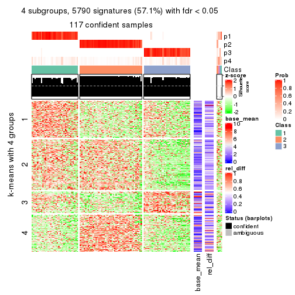
get_signatures(res, k = 5)
get_signatures(res, k = 6)
Signature heatmaps where rows are not scaled:
get_signatures(res, k = 2, scale_rows = FALSE)
get_signatures(res, k = 3, scale_rows = FALSE)
get_signatures(res, k = 4, scale_rows = FALSE)
get_signatures(res, k = 5, scale_rows = FALSE)
get_signatures(res, k = 6, scale_rows = FALSE)
Compare the overlap of signatures from different k:
compare_signatures(res)
get_signature() returns a data frame invisibly. TO get the list of signatures, the function
call should be assigned to a variable explicitly. In following code, if plot argument is set
to FALSE, no heatmap is plotted while only the differential analysis is performed.
# code only for demonstration
tb = get_signature(res, k = ..., plot = FALSE)
An example of the output of tb is:
#> which_row fdr mean_1 mean_2 scaled_mean_1 scaled_mean_2 km
#> 1 38 0.042760348 8.373488 9.131774 -0.5533452 0.5164555 1
#> 2 40 0.018707592 7.106213 8.469186 -0.6173731 0.5762149 1
#> 3 55 0.019134737 10.221463 11.207825 -0.6159697 0.5749050 1
#> 4 59 0.006059896 5.921854 7.869574 -0.6899429 0.6439467 1
#> 5 60 0.018055526 8.928898 10.211722 -0.6204761 0.5791110 1
#> 6 98 0.009384629 15.714769 14.887706 0.6635654 -0.6193277 2
...
The columns in tb are:
which_row: row indices corresponding to the input matrix.fdr: FDR for the differential test. mean_x: The mean value in group x.scaled_mean_x: The mean value in group x after rows are scaled.km: Row groups if k-means clustering is applied to rows.UMAP plot which shows how samples are separated.
dimension_reduction(res, k = 2, method = "UMAP")

dimension_reduction(res, k = 3, method = "UMAP")
dimension_reduction(res, k = 4, method = "UMAP")
dimension_reduction(res, k = 5, method = "UMAP")
dimension_reduction(res, k = 6, method = "UMAP")
Following heatmap shows how subgroups are split when increasing k:
collect_classes(res)
If matrix rows can be associated to genes, consider to use GO_Enrichment(res,
...) to perform function enrichment for the signature genes.
The object with results only for a single top-value method and a single partition method can be extracted as:
res = res_list["MAD", "hclust"]
# you can also extract it by
# res = res_list["MAD:hclust"]
A summary of res and all the functions that can be applied to it:
res
#> A 'ConsensusPartition' object with k = 2, 3, 4, 5, 6.
#> On a matrix with 10145 rows and 121 columns.
#> Top rows (1000, 2000, 3000, 4000, 5000) are extracted by 'MAD' method.
#> Subgroups are detected by 'hclust' method.
#> Performed in total 1250 partitions by row resampling.
#> Best k for subgroups seems to be 3.
#>
#> Following methods can be applied to this 'ConsensusPartition' object:
#> [1] "cola_report" "collect_classes" "collect_plots"
#> [4] "collect_stats" "colnames" "compare_signatures"
#> [7] "consensus_heatmap" "dimension_reduction" "functional_enrichment"
#> [10] "get_anno_col" "get_anno" "get_classes"
#> [13] "get_consensus" "get_matrix" "get_membership"
#> [16] "get_param" "get_signatures" "get_stats"
#> [19] "is_best_k" "is_stable_k" "membership_heatmap"
#> [22] "ncol" "nrow" "plot_ecdf"
#> [25] "rownames" "select_partition_number" "show"
#> [28] "suggest_best_k" "test_to_known_factors"
collect_plots() function collects all the plots made from res for all k (number of partitions)
into one single page to provide an easy and fast comparison between different k.
collect_plots(res)
The plots are:
k and the heatmap of
predicted classes for each k.k.k.k.All the plots in panels can be made by individual functions and they are plotted later in this section.
select_partition_number() produces several plots showing different
statistics for choosing “optimized” k. There are following statistics:
k;k, the area increased is defined as \(A_k - A_{k-1}\).The detailed explanations of these statistics can be found in the cola vignette.
Generally speaking, lower PAC score, higher mean silhouette score or higher
concordance corresponds to better partition. Rand index and Jaccard index
measure how similar the current partition is compared to partition with k-1.
If they are too similar, we won't accept k is better than k-1.
select_partition_number(res)
The numeric values for all these statistics can be obtained by get_stats().
get_stats(res)
#> k 1-PAC mean_silhouette concordance area_increased Rand Jaccard
#> 2 2 1.000 0.974 0.990 0.0346 0.983 0.983
#> 3 3 0.697 0.808 0.912 8.6764 0.654 0.648
#> 4 4 0.813 0.841 0.911 0.8901 0.702 0.533
#> 5 5 0.808 0.770 0.862 0.0888 0.973 0.922
#> 6 6 0.859 0.804 0.884 0.0486 0.963 0.887
suggest_best_k() suggests the best \(k\) based on these statistics. The rules are as follows:
NA.suggest_best_k(res)
#> [1] 3
Following shows the table of the partitions (You need to click the show/hide
code output link to see it). The membership matrix (columns with name p*)
is inferred by
clue::cl_consensus()
function with the SE method. Basically the value in the membership matrix
represents the probability to belong to a certain group. The finall class
label for an item is determined with the group with highest probability it
belongs to.
In get_classes() function, the entropy is calculated from the membership
matrix and the silhouette score is calculated from the consensus matrix.
cbind(get_classes(res, k = 2), get_membership(res, k = 2))
#> class entropy silhouette p1 p2
#> SRR2431463 1 0.0000 0.990 1.000 0.000
#> SRR2431462 1 0.0000 0.990 1.000 0.000
#> SRR2431461 1 0.0000 0.990 1.000 0.000
#> SRR2431459 1 0.0000 0.990 1.000 0.000
#> SRR2431460 1 0.0000 0.990 1.000 0.000
#> SRR2431458 1 0.0000 0.990 1.000 0.000
#> SRR2431457 1 0.0000 0.990 1.000 0.000
#> SRR2431455 1 0.0000 0.990 1.000 0.000
#> SRR2431456 1 0.0000 0.990 1.000 0.000
#> SRR2431454 1 0.1633 0.973 0.976 0.024
#> SRR2431453 1 0.0000 0.990 1.000 0.000
#> SRR2431451 1 0.0000 0.990 1.000 0.000
#> SRR2431452 1 0.3274 0.942 0.940 0.060
#> SRR2431450 1 0.0000 0.990 1.000 0.000
#> SRR2431449 1 0.0000 0.990 1.000 0.000
#> SRR2431448 1 0.0000 0.990 1.000 0.000
#> SRR2431446 1 0.0000 0.990 1.000 0.000
#> SRR2431447 1 0.0000 0.990 1.000 0.000
#> SRR2431445 1 0.0000 0.990 1.000 0.000
#> SRR2431444 1 0.0938 0.982 0.988 0.012
#> SRR2431443 1 0.0000 0.990 1.000 0.000
#> SRR2431442 1 0.0000 0.990 1.000 0.000
#> SRR2431441 1 0.0000 0.990 1.000 0.000
#> SRR2431440 1 0.1184 0.979 0.984 0.016
#> SRR2431439 1 0.0000 0.990 1.000 0.000
#> SRR2431438 1 0.0000 0.990 1.000 0.000
#> SRR2431437 1 0.0000 0.990 1.000 0.000
#> SRR2431436 1 0.2423 0.959 0.960 0.040
#> SRR2431435 1 0.0000 0.990 1.000 0.000
#> SRR2431434 1 0.0000 0.990 1.000 0.000
#> SRR2431433 1 0.0000 0.990 1.000 0.000
#> SRR2431432 1 0.0000 0.990 1.000 0.000
#> SRR2431431 1 0.0000 0.990 1.000 0.000
#> SRR2431430 1 0.0000 0.990 1.000 0.000
#> SRR2431429 1 0.0000 0.990 1.000 0.000
#> SRR2431428 1 0.0000 0.990 1.000 0.000
#> SRR2431427 1 0.0000 0.990 1.000 0.000
#> SRR2431426 1 0.0000 0.990 1.000 0.000
#> SRR2431425 1 0.0000 0.990 1.000 0.000
#> SRR2431424 1 0.0000 0.990 1.000 0.000
#> SRR2431423 1 0.0000 0.990 1.000 0.000
#> SRR2431422 1 0.0000 0.990 1.000 0.000
#> SRR2431421 1 0.0000 0.990 1.000 0.000
#> SRR2431420 1 0.0000 0.990 1.000 0.000
#> SRR2431419 1 0.0000 0.990 1.000 0.000
#> SRR2431418 1 0.0000 0.990 1.000 0.000
#> SRR2431417 1 0.0000 0.990 1.000 0.000
#> SRR2431416 1 0.0000 0.990 1.000 0.000
#> SRR2431415 1 0.0000 0.990 1.000 0.000
#> SRR2431414 1 0.0000 0.990 1.000 0.000
#> SRR2431413 1 0.0000 0.990 1.000 0.000
#> SRR2431412 1 0.0000 0.990 1.000 0.000
#> SRR2431411 2 0.0000 0.000 0.000 1.000
#> SRR2431409 1 0.0000 0.990 1.000 0.000
#> SRR2431410 1 0.0000 0.990 1.000 0.000
#> SRR2431408 1 0.0000 0.990 1.000 0.000
#> SRR2431407 1 0.0000 0.990 1.000 0.000
#> SRR2431405 1 0.0000 0.990 1.000 0.000
#> SRR2431406 1 0.0000 0.990 1.000 0.000
#> SRR2431404 1 0.0000 0.990 1.000 0.000
#> SRR2431403 1 0.0000 0.990 1.000 0.000
#> SRR2431402 1 0.0000 0.990 1.000 0.000
#> SRR2431401 1 0.0000 0.990 1.000 0.000
#> SRR2431400 1 0.0000 0.990 1.000 0.000
#> SRR2431399 1 0.0000 0.990 1.000 0.000
#> SRR2431398 1 0.0000 0.990 1.000 0.000
#> SRR2431397 1 0.0000 0.990 1.000 0.000
#> SRR2431396 1 0.0000 0.990 1.000 0.000
#> SRR2431395 1 0.0000 0.990 1.000 0.000
#> SRR2431394 1 0.0000 0.990 1.000 0.000
#> SRR2431393 1 0.0000 0.990 1.000 0.000
#> SRR2431392 1 0.0000 0.990 1.000 0.000
#> SRR2431391 1 0.0000 0.990 1.000 0.000
#> SRR2431390 1 0.0000 0.990 1.000 0.000
#> SRR2431389 1 0.0000 0.990 1.000 0.000
#> SRR2431388 1 0.0000 0.990 1.000 0.000
#> SRR2431387 1 0.0000 0.990 1.000 0.000
#> SRR2431386 1 0.0000 0.990 1.000 0.000
#> SRR2431385 1 0.2043 0.966 0.968 0.032
#> SRR2431383 1 0.0000 0.990 1.000 0.000
#> SRR2431384 1 0.0000 0.990 1.000 0.000
#> SRR2431382 1 0.0000 0.990 1.000 0.000
#> SRR2431381 1 0.0000 0.990 1.000 0.000
#> SRR2431380 1 0.0000 0.990 1.000 0.000
#> SRR2431379 1 0.0672 0.985 0.992 0.008
#> SRR2431378 1 0.0000 0.990 1.000 0.000
#> SRR2431376 1 0.0000 0.990 1.000 0.000
#> SRR2431377 1 0.0000 0.990 1.000 0.000
#> SRR2431375 1 0.4431 0.912 0.908 0.092
#> SRR2431374 1 0.0000 0.990 1.000 0.000
#> SRR2431372 1 0.3879 0.927 0.924 0.076
#> SRR2431371 1 0.0000 0.990 1.000 0.000
#> SRR2431373 1 0.4022 0.923 0.920 0.080
#> SRR2431370 1 0.0376 0.987 0.996 0.004
#> SRR2431369 1 0.0000 0.990 1.000 0.000
#> SRR2431368 1 0.0672 0.985 0.992 0.008
#> SRR2431367 1 0.0672 0.985 0.992 0.008
#> SRR2431366 1 0.0000 0.990 1.000 0.000
#> SRR2431365 1 0.0000 0.990 1.000 0.000
#> SRR2431364 1 0.4431 0.912 0.908 0.092
#> SRR2431363 1 0.4431 0.912 0.908 0.092
#> SRR2431361 1 0.0000 0.990 1.000 0.000
#> SRR2431362 1 0.4298 0.916 0.912 0.088
#> SRR2431360 1 0.4431 0.912 0.908 0.092
#> SRR2431359 1 0.0376 0.987 0.996 0.004
#> SRR2431358 1 0.0000 0.990 1.000 0.000
#> SRR2431357 1 0.0000 0.990 1.000 0.000
#> SRR2431355 1 0.0000 0.990 1.000 0.000
#> SRR2431356 1 0.0376 0.987 0.996 0.004
#> SRR2431354 1 0.4431 0.912 0.908 0.092
#> SRR2431353 1 0.0000 0.990 1.000 0.000
#> SRR2431352 1 0.0000 0.990 1.000 0.000
#> SRR2431351 1 0.4431 0.912 0.908 0.092
#> SRR2431350 1 0.0000 0.990 1.000 0.000
#> SRR2431349 1 0.4431 0.912 0.908 0.092
#> SRR2431348 1 0.0000 0.990 1.000 0.000
#> SRR2431347 1 0.0000 0.990 1.000 0.000
#> SRR2431346 1 0.0000 0.990 1.000 0.000
#> SRR2431345 1 0.4431 0.912 0.908 0.092
#> SRR2431344 1 0.0000 0.990 1.000 0.000
#> SRR2431343 1 0.0000 0.990 1.000 0.000
cbind(get_classes(res, k = 3), get_membership(res, k = 3))
#> class entropy silhouette p1 p2 p3
#> SRR2431463 2 0.0892 0.928 0.000 0.980 0.020
#> SRR2431462 2 0.0592 0.930 0.000 0.988 0.012
#> SRR2431461 2 0.1031 0.925 0.000 0.976 0.024
#> SRR2431459 2 0.0747 0.929 0.000 0.984 0.016
#> SRR2431460 2 0.0892 0.928 0.000 0.980 0.020
#> SRR2431458 2 0.1163 0.922 0.000 0.972 0.028
#> SRR2431457 2 0.0747 0.929 0.000 0.984 0.016
#> SRR2431455 2 0.0892 0.928 0.000 0.980 0.020
#> SRR2431456 2 0.0892 0.928 0.000 0.980 0.020
#> SRR2431454 2 0.6111 0.124 0.000 0.604 0.396
#> SRR2431453 2 0.0747 0.929 0.000 0.984 0.016
#> SRR2431451 2 0.3619 0.785 0.000 0.864 0.136
#> SRR2431452 3 0.6286 0.323 0.000 0.464 0.536
#> SRR2431450 2 0.0892 0.928 0.000 0.980 0.020
#> SRR2431449 2 0.0747 0.929 0.000 0.984 0.016
#> SRR2431448 2 0.0747 0.930 0.000 0.984 0.016
#> SRR2431446 2 0.0592 0.929 0.000 0.988 0.012
#> SRR2431447 2 0.1643 0.908 0.000 0.956 0.044
#> SRR2431445 2 0.0747 0.929 0.000 0.984 0.016
#> SRR2431444 2 0.5988 0.212 0.000 0.632 0.368
#> SRR2431443 2 0.0747 0.929 0.000 0.984 0.016
#> SRR2431442 2 0.0892 0.928 0.000 0.980 0.020
#> SRR2431441 2 0.0892 0.928 0.000 0.980 0.020
#> SRR2431440 2 0.4605 0.667 0.000 0.796 0.204
#> SRR2431439 2 0.0592 0.930 0.000 0.988 0.012
#> SRR2431438 2 0.0592 0.930 0.000 0.988 0.012
#> SRR2431437 2 0.0747 0.929 0.000 0.984 0.016
#> SRR2431436 2 0.6244 -0.066 0.000 0.560 0.440
#> SRR2431435 2 0.3941 0.752 0.000 0.844 0.156
#> SRR2431434 2 0.0892 0.928 0.000 0.980 0.020
#> SRR2431433 2 0.1031 0.927 0.000 0.976 0.024
#> SRR2431432 2 0.0747 0.929 0.000 0.984 0.016
#> SRR2431431 2 0.1163 0.926 0.000 0.972 0.028
#> SRR2431430 2 0.0592 0.929 0.000 0.988 0.012
#> SRR2431429 2 0.0892 0.928 0.000 0.980 0.020
#> SRR2431428 2 0.0892 0.928 0.000 0.980 0.020
#> SRR2431427 2 0.1878 0.936 0.004 0.952 0.044
#> SRR2431426 2 0.1878 0.936 0.004 0.952 0.044
#> SRR2431425 2 0.1878 0.936 0.004 0.952 0.044
#> SRR2431424 2 0.1878 0.936 0.004 0.952 0.044
#> SRR2431423 2 0.1878 0.936 0.004 0.952 0.044
#> SRR2431422 2 0.1878 0.936 0.004 0.952 0.044
#> SRR2431421 2 0.1878 0.936 0.004 0.952 0.044
#> SRR2431420 2 0.1878 0.936 0.004 0.952 0.044
#> SRR2431419 2 0.1878 0.936 0.004 0.952 0.044
#> SRR2431418 2 0.1878 0.936 0.004 0.952 0.044
#> SRR2431417 2 0.1878 0.936 0.004 0.952 0.044
#> SRR2431416 2 0.1878 0.936 0.004 0.952 0.044
#> SRR2431415 2 0.1878 0.936 0.004 0.952 0.044
#> SRR2431414 2 0.1878 0.936 0.004 0.952 0.044
#> SRR2431413 2 0.1878 0.936 0.004 0.952 0.044
#> SRR2431412 2 0.1878 0.936 0.004 0.952 0.044
#> SRR2431411 1 0.0237 0.000 0.996 0.000 0.004
#> SRR2431409 2 0.1878 0.936 0.004 0.952 0.044
#> SRR2431410 2 0.0829 0.934 0.004 0.984 0.012
#> SRR2431408 2 0.1878 0.936 0.004 0.952 0.044
#> SRR2431407 2 0.1878 0.936 0.004 0.952 0.044
#> SRR2431405 2 0.1878 0.936 0.004 0.952 0.044
#> SRR2431406 2 0.1878 0.936 0.004 0.952 0.044
#> SRR2431404 2 0.1878 0.936 0.004 0.952 0.044
#> SRR2431403 2 0.1878 0.936 0.004 0.952 0.044
#> SRR2431402 2 0.1878 0.936 0.004 0.952 0.044
#> SRR2431401 2 0.1878 0.936 0.004 0.952 0.044
#> SRR2431400 2 0.1878 0.936 0.004 0.952 0.044
#> SRR2431399 2 0.1878 0.936 0.004 0.952 0.044
#> SRR2431398 2 0.1878 0.936 0.004 0.952 0.044
#> SRR2431397 2 0.1878 0.936 0.004 0.952 0.044
#> SRR2431396 2 0.1878 0.936 0.004 0.952 0.044
#> SRR2431395 2 0.1878 0.936 0.004 0.952 0.044
#> SRR2431394 2 0.1878 0.936 0.004 0.952 0.044
#> SRR2431393 2 0.1878 0.936 0.004 0.952 0.044
#> SRR2431392 2 0.1878 0.936 0.004 0.952 0.044
#> SRR2431391 2 0.1878 0.936 0.004 0.952 0.044
#> SRR2431390 2 0.1878 0.936 0.004 0.952 0.044
#> SRR2431389 2 0.1878 0.936 0.004 0.952 0.044
#> SRR2431388 2 0.1878 0.936 0.004 0.952 0.044
#> SRR2431387 2 0.1647 0.936 0.004 0.960 0.036
#> SRR2431386 2 0.1878 0.936 0.004 0.952 0.044
#> SRR2431385 2 0.4629 0.755 0.004 0.808 0.188
#> SRR2431383 2 0.1878 0.936 0.004 0.952 0.044
#> SRR2431384 2 0.1878 0.936 0.004 0.952 0.044
#> SRR2431382 2 0.1878 0.936 0.004 0.952 0.044
#> SRR2431381 2 0.1878 0.936 0.004 0.952 0.044
#> SRR2431380 2 0.0892 0.928 0.000 0.980 0.020
#> SRR2431379 3 0.4452 0.637 0.000 0.192 0.808
#> SRR2431378 3 0.6260 0.481 0.000 0.448 0.552
#> SRR2431376 3 0.6267 0.471 0.000 0.452 0.548
#> SRR2431377 2 0.1529 0.922 0.000 0.960 0.040
#> SRR2431375 3 0.0747 0.513 0.000 0.016 0.984
#> SRR2431374 2 0.0892 0.928 0.000 0.980 0.020
#> SRR2431372 3 0.2537 0.538 0.000 0.080 0.920
#> SRR2431371 3 0.6286 0.437 0.000 0.464 0.536
#> SRR2431373 3 0.1643 0.542 0.000 0.044 0.956
#> SRR2431370 3 0.4452 0.635 0.000 0.192 0.808
#> SRR2431369 3 0.6260 0.481 0.000 0.448 0.552
#> SRR2431368 3 0.4399 0.633 0.000 0.188 0.812
#> SRR2431367 3 0.4605 0.637 0.000 0.204 0.796
#> SRR2431366 2 0.2066 0.905 0.000 0.940 0.060
#> SRR2431365 2 0.2066 0.905 0.000 0.940 0.060
#> SRR2431364 3 0.0747 0.513 0.000 0.016 0.984
#> SRR2431363 3 0.0747 0.513 0.000 0.016 0.984
#> SRR2431361 3 0.6267 0.471 0.000 0.452 0.548
#> SRR2431362 3 0.1289 0.531 0.000 0.032 0.968
#> SRR2431360 3 0.0747 0.513 0.000 0.016 0.984
#> SRR2431359 3 0.6192 0.530 0.000 0.420 0.580
#> SRR2431358 2 0.0892 0.928 0.000 0.980 0.020
#> SRR2431357 2 0.0892 0.928 0.000 0.980 0.020
#> SRR2431355 2 0.1289 0.923 0.000 0.968 0.032
#> SRR2431356 3 0.4887 0.638 0.000 0.228 0.772
#> SRR2431354 3 0.0747 0.513 0.000 0.016 0.984
#> SRR2431353 2 0.0892 0.928 0.000 0.980 0.020
#> SRR2431352 2 0.0892 0.928 0.000 0.980 0.020
#> SRR2431351 3 0.0747 0.513 0.000 0.016 0.984
#> SRR2431350 3 0.4974 0.636 0.000 0.236 0.764
#> SRR2431349 3 0.0747 0.513 0.000 0.016 0.984
#> SRR2431348 3 0.4750 0.637 0.000 0.216 0.784
#> SRR2431347 3 0.6215 0.521 0.000 0.428 0.572
#> SRR2431346 3 0.6225 0.513 0.000 0.432 0.568
#> SRR2431345 3 0.0892 0.518 0.000 0.020 0.980
#> SRR2431344 2 0.0892 0.928 0.000 0.980 0.020
#> SRR2431343 2 0.0892 0.928 0.000 0.980 0.020
cbind(get_classes(res, k = 4), get_membership(res, k = 4))
#> class entropy silhouette p1 p2 p3 p4
#> SRR2431463 1 0.1389 0.930 0.952 0.048 0.000 0
#> SRR2431462 1 0.1722 0.930 0.944 0.048 0.008 0
#> SRR2431461 1 0.2300 0.922 0.924 0.048 0.028 0
#> SRR2431459 1 0.1854 0.930 0.940 0.048 0.012 0
#> SRR2431460 1 0.1722 0.930 0.944 0.048 0.008 0
#> SRR2431458 1 0.2586 0.914 0.912 0.048 0.040 0
#> SRR2431457 1 0.1854 0.930 0.940 0.048 0.012 0
#> SRR2431455 1 0.1389 0.930 0.952 0.048 0.000 0
#> SRR2431456 1 0.1389 0.930 0.952 0.048 0.000 0
#> SRR2431454 1 0.5300 0.240 0.580 0.012 0.408 0
#> SRR2431453 1 0.1854 0.930 0.940 0.048 0.012 0
#> SRR2431451 1 0.4356 0.793 0.804 0.048 0.148 0
#> SRR2431452 3 0.7084 0.258 0.284 0.164 0.552 0
#> SRR2431450 1 0.1389 0.930 0.952 0.048 0.000 0
#> SRR2431449 1 0.1854 0.930 0.940 0.048 0.012 0
#> SRR2431448 1 0.2089 0.927 0.932 0.048 0.020 0
#> SRR2431446 1 0.2197 0.923 0.928 0.048 0.024 0
#> SRR2431447 1 0.2840 0.897 0.900 0.044 0.056 0
#> SRR2431445 1 0.1854 0.930 0.940 0.048 0.012 0
#> SRR2431444 1 0.4973 0.353 0.644 0.008 0.348 0
#> SRR2431443 1 0.1854 0.930 0.940 0.048 0.012 0
#> SRR2431442 1 0.1389 0.930 0.952 0.048 0.000 0
#> SRR2431441 1 0.1389 0.930 0.952 0.048 0.000 0
#> SRR2431440 1 0.6545 0.528 0.632 0.152 0.216 0
#> SRR2431439 1 0.1975 0.928 0.936 0.048 0.016 0
#> SRR2431438 1 0.1722 0.930 0.944 0.048 0.008 0
#> SRR2431437 1 0.1854 0.930 0.940 0.048 0.012 0
#> SRR2431436 1 0.5132 0.119 0.548 0.004 0.448 0
#> SRR2431435 1 0.4104 0.760 0.808 0.028 0.164 0
#> SRR2431434 1 0.1389 0.930 0.952 0.048 0.000 0
#> SRR2431433 1 0.1576 0.930 0.948 0.048 0.004 0
#> SRR2431432 1 0.2300 0.923 0.924 0.048 0.028 0
#> SRR2431431 1 0.1722 0.930 0.944 0.048 0.008 0
#> SRR2431430 1 0.2197 0.923 0.928 0.048 0.024 0
#> SRR2431429 1 0.1389 0.930 0.952 0.048 0.000 0
#> SRR2431428 1 0.1389 0.930 0.952 0.048 0.000 0
#> SRR2431427 2 0.0000 0.994 0.000 1.000 0.000 0
#> SRR2431426 2 0.0000 0.994 0.000 1.000 0.000 0
#> SRR2431425 2 0.0000 0.994 0.000 1.000 0.000 0
#> SRR2431424 2 0.0000 0.994 0.000 1.000 0.000 0
#> SRR2431423 2 0.0000 0.994 0.000 1.000 0.000 0
#> SRR2431422 2 0.0000 0.994 0.000 1.000 0.000 0
#> SRR2431421 2 0.0000 0.994 0.000 1.000 0.000 0
#> SRR2431420 2 0.0000 0.994 0.000 1.000 0.000 0
#> SRR2431419 2 0.0000 0.994 0.000 1.000 0.000 0
#> SRR2431418 2 0.0000 0.994 0.000 1.000 0.000 0
#> SRR2431417 2 0.0000 0.994 0.000 1.000 0.000 0
#> SRR2431416 2 0.0000 0.994 0.000 1.000 0.000 0
#> SRR2431415 2 0.0000 0.994 0.000 1.000 0.000 0
#> SRR2431414 2 0.0000 0.994 0.000 1.000 0.000 0
#> SRR2431413 2 0.0000 0.994 0.000 1.000 0.000 0
#> SRR2431412 2 0.0000 0.994 0.000 1.000 0.000 0
#> SRR2431411 4 0.0000 0.000 0.000 0.000 0.000 1
#> SRR2431409 2 0.0000 0.994 0.000 1.000 0.000 0
#> SRR2431410 1 0.4356 0.570 0.708 0.292 0.000 0
#> SRR2431408 2 0.0000 0.994 0.000 1.000 0.000 0
#> SRR2431407 2 0.0000 0.994 0.000 1.000 0.000 0
#> SRR2431405 2 0.0000 0.994 0.000 1.000 0.000 0
#> SRR2431406 2 0.0000 0.994 0.000 1.000 0.000 0
#> SRR2431404 2 0.0000 0.994 0.000 1.000 0.000 0
#> SRR2431403 2 0.0000 0.994 0.000 1.000 0.000 0
#> SRR2431402 2 0.0000 0.994 0.000 1.000 0.000 0
#> SRR2431401 2 0.0000 0.994 0.000 1.000 0.000 0
#> SRR2431400 2 0.0000 0.994 0.000 1.000 0.000 0
#> SRR2431399 2 0.0000 0.994 0.000 1.000 0.000 0
#> SRR2431398 2 0.0000 0.994 0.000 1.000 0.000 0
#> SRR2431397 2 0.0000 0.994 0.000 1.000 0.000 0
#> SRR2431396 2 0.0000 0.994 0.000 1.000 0.000 0
#> SRR2431395 2 0.0000 0.994 0.000 1.000 0.000 0
#> SRR2431394 2 0.0000 0.994 0.000 1.000 0.000 0
#> SRR2431393 2 0.0000 0.994 0.000 1.000 0.000 0
#> SRR2431392 2 0.0000 0.994 0.000 1.000 0.000 0
#> SRR2431391 2 0.0000 0.994 0.000 1.000 0.000 0
#> SRR2431390 2 0.0000 0.994 0.000 1.000 0.000 0
#> SRR2431389 2 0.0000 0.994 0.000 1.000 0.000 0
#> SRR2431388 2 0.0000 0.994 0.000 1.000 0.000 0
#> SRR2431387 2 0.1867 0.891 0.072 0.928 0.000 0
#> SRR2431386 2 0.0000 0.994 0.000 1.000 0.000 0
#> SRR2431385 2 0.2973 0.805 0.000 0.856 0.144 0
#> SRR2431383 2 0.0000 0.994 0.000 1.000 0.000 0
#> SRR2431384 2 0.0000 0.994 0.000 1.000 0.000 0
#> SRR2431382 2 0.0000 0.994 0.000 1.000 0.000 0
#> SRR2431381 2 0.0000 0.994 0.000 1.000 0.000 0
#> SRR2431380 1 0.1389 0.930 0.952 0.048 0.000 0
#> SRR2431379 3 0.3751 0.692 0.196 0.004 0.800 0
#> SRR2431378 3 0.5155 0.509 0.468 0.004 0.528 0
#> SRR2431376 3 0.5158 0.500 0.472 0.004 0.524 0
#> SRR2431377 1 0.2002 0.917 0.936 0.044 0.020 0
#> SRR2431375 3 0.0000 0.623 0.000 0.000 1.000 0
#> SRR2431374 1 0.1389 0.930 0.952 0.048 0.000 0
#> SRR2431372 3 0.1716 0.629 0.064 0.000 0.936 0
#> SRR2431371 3 0.5165 0.471 0.484 0.004 0.512 0
#> SRR2431373 3 0.0921 0.641 0.028 0.000 0.972 0
#> SRR2431370 3 0.3831 0.692 0.204 0.004 0.792 0
#> SRR2431369 3 0.5155 0.509 0.468 0.004 0.528 0
#> SRR2431368 3 0.3539 0.690 0.176 0.004 0.820 0
#> SRR2431367 3 0.4018 0.690 0.224 0.004 0.772 0
#> SRR2431366 1 0.2500 0.882 0.916 0.040 0.044 0
#> SRR2431365 1 0.2500 0.882 0.916 0.040 0.044 0
#> SRR2431364 3 0.0000 0.623 0.000 0.000 1.000 0
#> SRR2431363 3 0.0000 0.623 0.000 0.000 1.000 0
#> SRR2431361 3 0.5158 0.500 0.472 0.004 0.524 0
#> SRR2431362 3 0.0592 0.635 0.016 0.000 0.984 0
#> SRR2431360 3 0.0000 0.623 0.000 0.000 1.000 0
#> SRR2431359 3 0.5119 0.548 0.440 0.004 0.556 0
#> SRR2431358 1 0.1302 0.928 0.956 0.044 0.000 0
#> SRR2431357 1 0.1389 0.930 0.952 0.048 0.000 0
#> SRR2431355 1 0.1767 0.923 0.944 0.044 0.012 0
#> SRR2431356 3 0.4155 0.688 0.240 0.004 0.756 0
#> SRR2431354 3 0.0000 0.623 0.000 0.000 1.000 0
#> SRR2431353 1 0.1302 0.928 0.956 0.044 0.000 0
#> SRR2431352 1 0.1302 0.928 0.956 0.044 0.000 0
#> SRR2431351 3 0.0000 0.623 0.000 0.000 1.000 0
#> SRR2431350 3 0.4220 0.686 0.248 0.004 0.748 0
#> SRR2431349 3 0.0000 0.623 0.000 0.000 1.000 0
#> SRR2431348 3 0.4122 0.688 0.236 0.004 0.760 0
#> SRR2431347 3 0.5132 0.543 0.448 0.004 0.548 0
#> SRR2431346 3 0.5137 0.537 0.452 0.004 0.544 0
#> SRR2431345 3 0.0188 0.626 0.004 0.000 0.996 0
#> SRR2431344 1 0.1302 0.928 0.956 0.044 0.000 0
#> SRR2431343 1 0.1389 0.930 0.952 0.048 0.000 0
cbind(get_classes(res, k = 5), get_membership(res, k = 5))
#> class entropy silhouette p1 p2 p3 p4 p5
#> SRR2431463 1 0.1493 0.8507 0.948 0.024 0.000 0.028 0
#> SRR2431462 1 0.1310 0.8494 0.956 0.024 0.000 0.020 0
#> SRR2431461 1 0.2178 0.8369 0.920 0.024 0.008 0.048 0
#> SRR2431459 1 0.1310 0.8476 0.956 0.024 0.000 0.020 0
#> SRR2431460 1 0.1493 0.8515 0.948 0.024 0.000 0.028 0
#> SRR2431458 1 0.2707 0.8191 0.888 0.024 0.008 0.080 0
#> SRR2431457 1 0.1211 0.8485 0.960 0.024 0.000 0.016 0
#> SRR2431455 1 0.1403 0.8501 0.952 0.024 0.000 0.024 0
#> SRR2431456 1 0.1403 0.8510 0.952 0.024 0.000 0.024 0
#> SRR2431454 1 0.6785 -0.0716 0.376 0.000 0.284 0.340 0
#> SRR2431453 1 0.1211 0.8485 0.960 0.024 0.000 0.016 0
#> SRR2431451 1 0.5237 0.6517 0.708 0.024 0.072 0.196 0
#> SRR2431452 3 0.8010 -0.0428 0.160 0.164 0.444 0.232 0
#> SRR2431450 1 0.1661 0.8480 0.940 0.024 0.000 0.036 0
#> SRR2431449 1 0.1310 0.8514 0.956 0.024 0.000 0.020 0
#> SRR2431448 1 0.1818 0.8409 0.932 0.024 0.000 0.044 0
#> SRR2431446 1 0.2171 0.8328 0.912 0.024 0.000 0.064 0
#> SRR2431447 1 0.4268 0.7039 0.760 0.020 0.020 0.200 0
#> SRR2431445 1 0.1211 0.8485 0.960 0.024 0.000 0.016 0
#> SRR2431444 4 0.6377 -0.2016 0.380 0.000 0.168 0.452 0
#> SRR2431443 1 0.1310 0.8510 0.956 0.024 0.000 0.020 0
#> SRR2431442 1 0.1106 0.8507 0.964 0.024 0.000 0.012 0
#> SRR2431441 1 0.1403 0.8501 0.952 0.024 0.000 0.024 0
#> SRR2431440 1 0.7465 0.3546 0.520 0.128 0.128 0.224 0
#> SRR2431439 1 0.1965 0.8468 0.924 0.024 0.000 0.052 0
#> SRR2431438 1 0.1106 0.8507 0.964 0.024 0.000 0.012 0
#> SRR2431437 1 0.1579 0.8449 0.944 0.024 0.000 0.032 0
#> SRR2431436 1 0.6825 -0.1611 0.340 0.000 0.324 0.336 0
#> SRR2431435 1 0.5216 0.5988 0.692 0.008 0.092 0.208 0
#> SRR2431434 1 0.1403 0.8500 0.952 0.024 0.000 0.024 0
#> SRR2431433 1 0.1579 0.8507 0.944 0.024 0.000 0.032 0
#> SRR2431432 1 0.2125 0.8363 0.920 0.024 0.004 0.052 0
#> SRR2431431 1 0.2813 0.8308 0.868 0.024 0.000 0.108 0
#> SRR2431430 1 0.2707 0.8140 0.876 0.024 0.000 0.100 0
#> SRR2431429 1 0.1893 0.8443 0.928 0.024 0.000 0.048 0
#> SRR2431428 1 0.1893 0.8443 0.928 0.024 0.000 0.048 0
#> SRR2431427 2 0.0000 0.9942 0.000 1.000 0.000 0.000 0
#> SRR2431426 2 0.0000 0.9942 0.000 1.000 0.000 0.000 0
#> SRR2431425 2 0.0000 0.9942 0.000 1.000 0.000 0.000 0
#> SRR2431424 2 0.0000 0.9942 0.000 1.000 0.000 0.000 0
#> SRR2431423 2 0.0000 0.9942 0.000 1.000 0.000 0.000 0
#> SRR2431422 2 0.0000 0.9942 0.000 1.000 0.000 0.000 0
#> SRR2431421 2 0.0000 0.9942 0.000 1.000 0.000 0.000 0
#> SRR2431420 2 0.0000 0.9942 0.000 1.000 0.000 0.000 0
#> SRR2431419 2 0.0000 0.9942 0.000 1.000 0.000 0.000 0
#> SRR2431418 2 0.0000 0.9942 0.000 1.000 0.000 0.000 0
#> SRR2431417 2 0.0000 0.9942 0.000 1.000 0.000 0.000 0
#> SRR2431416 2 0.0000 0.9942 0.000 1.000 0.000 0.000 0
#> SRR2431415 2 0.0000 0.9942 0.000 1.000 0.000 0.000 0
#> SRR2431414 2 0.0000 0.9942 0.000 1.000 0.000 0.000 0
#> SRR2431413 2 0.0000 0.9942 0.000 1.000 0.000 0.000 0
#> SRR2431412 2 0.0000 0.9942 0.000 1.000 0.000 0.000 0
#> SRR2431411 5 0.0000 0.0000 0.000 0.000 0.000 0.000 1
#> SRR2431409 2 0.0000 0.9942 0.000 1.000 0.000 0.000 0
#> SRR2431410 1 0.6342 0.3470 0.520 0.272 0.000 0.208 0
#> SRR2431408 2 0.0000 0.9942 0.000 1.000 0.000 0.000 0
#> SRR2431407 2 0.0000 0.9942 0.000 1.000 0.000 0.000 0
#> SRR2431405 2 0.0000 0.9942 0.000 1.000 0.000 0.000 0
#> SRR2431406 2 0.0000 0.9942 0.000 1.000 0.000 0.000 0
#> SRR2431404 2 0.0000 0.9942 0.000 1.000 0.000 0.000 0
#> SRR2431403 2 0.0000 0.9942 0.000 1.000 0.000 0.000 0
#> SRR2431402 2 0.0000 0.9942 0.000 1.000 0.000 0.000 0
#> SRR2431401 2 0.0000 0.9942 0.000 1.000 0.000 0.000 0
#> SRR2431400 2 0.0000 0.9942 0.000 1.000 0.000 0.000 0
#> SRR2431399 2 0.0000 0.9942 0.000 1.000 0.000 0.000 0
#> SRR2431398 2 0.0000 0.9942 0.000 1.000 0.000 0.000 0
#> SRR2431397 2 0.0000 0.9942 0.000 1.000 0.000 0.000 0
#> SRR2431396 2 0.0000 0.9942 0.000 1.000 0.000 0.000 0
#> SRR2431395 2 0.0000 0.9942 0.000 1.000 0.000 0.000 0
#> SRR2431394 2 0.0000 0.9942 0.000 1.000 0.000 0.000 0
#> SRR2431393 2 0.0000 0.9942 0.000 1.000 0.000 0.000 0
#> SRR2431392 2 0.0000 0.9942 0.000 1.000 0.000 0.000 0
#> SRR2431391 2 0.0000 0.9942 0.000 1.000 0.000 0.000 0
#> SRR2431390 2 0.0000 0.9942 0.000 1.000 0.000 0.000 0
#> SRR2431389 2 0.0000 0.9942 0.000 1.000 0.000 0.000 0
#> SRR2431388 2 0.0000 0.9942 0.000 1.000 0.000 0.000 0
#> SRR2431387 2 0.1997 0.9011 0.040 0.924 0.000 0.036 0
#> SRR2431386 2 0.0000 0.9942 0.000 1.000 0.000 0.000 0
#> SRR2431385 2 0.2561 0.8114 0.000 0.856 0.144 0.000 0
#> SRR2431383 2 0.0000 0.9942 0.000 1.000 0.000 0.000 0
#> SRR2431384 2 0.0000 0.9942 0.000 1.000 0.000 0.000 0
#> SRR2431382 2 0.0000 0.9942 0.000 1.000 0.000 0.000 0
#> SRR2431381 2 0.0000 0.9942 0.000 1.000 0.000 0.000 0
#> SRR2431380 1 0.1893 0.8443 0.928 0.024 0.000 0.048 0
#> SRR2431379 3 0.4168 0.4784 0.052 0.000 0.764 0.184 0
#> SRR2431378 4 0.6188 0.7227 0.136 0.000 0.416 0.448 0
#> SRR2431376 4 0.6186 0.7241 0.136 0.000 0.412 0.452 0
#> SRR2431377 1 0.4589 0.5882 0.660 0.020 0.004 0.316 0
#> SRR2431375 3 0.0162 0.7014 0.000 0.000 0.996 0.004 0
#> SRR2431374 1 0.1893 0.8443 0.928 0.024 0.000 0.048 0
#> SRR2431372 3 0.2300 0.6320 0.024 0.000 0.904 0.072 0
#> SRR2431371 4 0.6236 0.7105 0.144 0.000 0.400 0.456 0
#> SRR2431373 3 0.0992 0.6899 0.008 0.000 0.968 0.024 0
#> SRR2431370 3 0.4497 0.4161 0.060 0.000 0.732 0.208 0
#> SRR2431369 4 0.6188 0.7209 0.136 0.000 0.416 0.448 0
#> SRR2431368 3 0.3953 0.5103 0.048 0.000 0.784 0.168 0
#> SRR2431367 3 0.4898 0.2911 0.068 0.000 0.684 0.248 0
#> SRR2431366 1 0.4736 0.4257 0.576 0.020 0.000 0.404 0
#> SRR2431365 1 0.4736 0.4257 0.576 0.020 0.000 0.404 0
#> SRR2431364 3 0.0162 0.7014 0.000 0.000 0.996 0.004 0
#> SRR2431363 3 0.0162 0.7014 0.000 0.000 0.996 0.004 0
#> SRR2431361 4 0.6186 0.7241 0.136 0.000 0.412 0.452 0
#> SRR2431362 3 0.0451 0.6977 0.004 0.000 0.988 0.008 0
#> SRR2431360 3 0.0162 0.7014 0.000 0.000 0.996 0.004 0
#> SRR2431359 3 0.6132 -0.7210 0.128 0.000 0.444 0.428 0
#> SRR2431358 1 0.3690 0.7407 0.780 0.020 0.000 0.200 0
#> SRR2431357 1 0.1893 0.8443 0.928 0.024 0.000 0.048 0
#> SRR2431355 1 0.3821 0.7256 0.764 0.020 0.000 0.216 0
#> SRR2431356 3 0.4788 0.3285 0.064 0.000 0.696 0.240 0
#> SRR2431354 3 0.0162 0.7014 0.000 0.000 0.996 0.004 0
#> SRR2431353 1 0.3724 0.7372 0.776 0.020 0.000 0.204 0
#> SRR2431352 1 0.3724 0.7372 0.776 0.020 0.000 0.204 0
#> SRR2431351 3 0.0162 0.7014 0.000 0.000 0.996 0.004 0
#> SRR2431350 3 0.5051 0.2151 0.072 0.000 0.664 0.264 0
#> SRR2431349 3 0.0162 0.7014 0.000 0.000 0.996 0.004 0
#> SRR2431348 3 0.4980 0.2616 0.072 0.000 0.676 0.252 0
#> SRR2431347 4 0.6102 0.6761 0.124 0.000 0.436 0.440 0
#> SRR2431346 4 0.6162 0.6955 0.132 0.000 0.432 0.436 0
#> SRR2431345 3 0.0000 0.7005 0.000 0.000 1.000 0.000 0
#> SRR2431344 1 0.3690 0.7407 0.780 0.020 0.000 0.200 0
#> SRR2431343 1 0.1893 0.8443 0.928 0.024 0.000 0.048 0
cbind(get_classes(res, k = 6), get_membership(res, k = 6))
#> class entropy silhouette p1 p2 p3 p4 p5 p6
#> SRR2431463 1 0.1007 0.827 0.968 0.004 0.004 0.008 0 0.016
#> SRR2431462 1 0.1080 0.823 0.960 0.004 0.000 0.004 0 0.032
#> SRR2431461 1 0.1949 0.797 0.904 0.004 0.004 0.000 0 0.088
#> SRR2431459 1 0.1152 0.818 0.952 0.004 0.000 0.000 0 0.044
#> SRR2431460 1 0.0837 0.826 0.972 0.004 0.004 0.000 0 0.020
#> SRR2431458 1 0.2320 0.765 0.864 0.004 0.000 0.000 0 0.132
#> SRR2431457 1 0.0935 0.821 0.964 0.004 0.000 0.000 0 0.032
#> SRR2431455 1 0.0798 0.826 0.976 0.004 0.004 0.012 0 0.004
#> SRR2431456 1 0.0551 0.826 0.984 0.004 0.000 0.004 0 0.008
#> SRR2431454 6 0.5171 0.644 0.196 0.000 0.140 0.012 0 0.652
#> SRR2431453 1 0.0935 0.821 0.964 0.004 0.000 0.000 0 0.032
#> SRR2431451 1 0.4196 0.446 0.640 0.004 0.008 0.008 0 0.340
#> SRR2431452 6 0.7017 0.352 0.060 0.164 0.320 0.016 0 0.440
#> SRR2431450 1 0.0912 0.824 0.972 0.004 0.008 0.004 0 0.012
#> SRR2431449 1 0.0837 0.826 0.972 0.004 0.004 0.000 0 0.020
#> SRR2431448 1 0.1588 0.807 0.924 0.004 0.000 0.000 0 0.072
#> SRR2431446 1 0.1843 0.799 0.912 0.004 0.000 0.004 0 0.080
#> SRR2431447 1 0.3925 0.471 0.656 0.004 0.000 0.008 0 0.332
#> SRR2431445 1 0.0935 0.821 0.964 0.004 0.000 0.000 0 0.032
#> SRR2431444 6 0.2804 0.522 0.120 0.000 0.024 0.004 0 0.852
#> SRR2431443 1 0.0777 0.825 0.972 0.004 0.000 0.000 0 0.024
#> SRR2431442 1 0.0436 0.826 0.988 0.004 0.000 0.004 0 0.004
#> SRR2431441 1 0.0798 0.826 0.976 0.004 0.004 0.012 0 0.004
#> SRR2431440 1 0.6239 -0.198 0.444 0.108 0.040 0.004 0 0.404
#> SRR2431439 1 0.2040 0.813 0.904 0.004 0.004 0.004 0 0.084
#> SRR2431438 1 0.0922 0.825 0.968 0.004 0.000 0.004 0 0.024
#> SRR2431437 1 0.1411 0.813 0.936 0.004 0.000 0.000 0 0.060
#> SRR2431436 6 0.5214 0.663 0.148 0.000 0.180 0.016 0 0.656
#> SRR2431435 1 0.4553 0.264 0.580 0.000 0.032 0.004 0 0.384
#> SRR2431434 1 0.0810 0.826 0.976 0.004 0.004 0.008 0 0.008
#> SRR2431433 1 0.0862 0.827 0.972 0.004 0.008 0.000 0 0.016
#> SRR2431432 1 0.1753 0.800 0.912 0.004 0.000 0.000 0 0.084
#> SRR2431431 1 0.2858 0.780 0.864 0.004 0.028 0.008 0 0.096
#> SRR2431430 1 0.2339 0.777 0.880 0.004 0.004 0.004 0 0.108
#> SRR2431429 1 0.1231 0.821 0.960 0.004 0.012 0.012 0 0.012
#> SRR2431428 1 0.1231 0.821 0.960 0.004 0.012 0.012 0 0.012
#> SRR2431427 2 0.0000 0.994 0.000 1.000 0.000 0.000 0 0.000
#> SRR2431426 2 0.0000 0.994 0.000 1.000 0.000 0.000 0 0.000
#> SRR2431425 2 0.0000 0.994 0.000 1.000 0.000 0.000 0 0.000
#> SRR2431424 2 0.0000 0.994 0.000 1.000 0.000 0.000 0 0.000
#> SRR2431423 2 0.0000 0.994 0.000 1.000 0.000 0.000 0 0.000
#> SRR2431422 2 0.0000 0.994 0.000 1.000 0.000 0.000 0 0.000
#> SRR2431421 2 0.0000 0.994 0.000 1.000 0.000 0.000 0 0.000
#> SRR2431420 2 0.0000 0.994 0.000 1.000 0.000 0.000 0 0.000
#> SRR2431419 2 0.0000 0.994 0.000 1.000 0.000 0.000 0 0.000
#> SRR2431418 2 0.0000 0.994 0.000 1.000 0.000 0.000 0 0.000
#> SRR2431417 2 0.0000 0.994 0.000 1.000 0.000 0.000 0 0.000
#> SRR2431416 2 0.0000 0.994 0.000 1.000 0.000 0.000 0 0.000
#> SRR2431415 2 0.0000 0.994 0.000 1.000 0.000 0.000 0 0.000
#> SRR2431414 2 0.0000 0.994 0.000 1.000 0.000 0.000 0 0.000
#> SRR2431413 2 0.0000 0.994 0.000 1.000 0.000 0.000 0 0.000
#> SRR2431412 2 0.0000 0.994 0.000 1.000 0.000 0.000 0 0.000
#> SRR2431411 5 0.0000 0.000 0.000 0.000 0.000 0.000 1 0.000
#> SRR2431409 2 0.0000 0.994 0.000 1.000 0.000 0.000 0 0.000
#> SRR2431410 1 0.8061 0.114 0.432 0.220 0.124 0.104 0 0.120
#> SRR2431408 2 0.0000 0.994 0.000 1.000 0.000 0.000 0 0.000
#> SRR2431407 2 0.0000 0.994 0.000 1.000 0.000 0.000 0 0.000
#> SRR2431405 2 0.0000 0.994 0.000 1.000 0.000 0.000 0 0.000
#> SRR2431406 2 0.0000 0.994 0.000 1.000 0.000 0.000 0 0.000
#> SRR2431404 2 0.0000 0.994 0.000 1.000 0.000 0.000 0 0.000
#> SRR2431403 2 0.0000 0.994 0.000 1.000 0.000 0.000 0 0.000
#> SRR2431402 2 0.0000 0.994 0.000 1.000 0.000 0.000 0 0.000
#> SRR2431401 2 0.0000 0.994 0.000 1.000 0.000 0.000 0 0.000
#> SRR2431400 2 0.0000 0.994 0.000 1.000 0.000 0.000 0 0.000
#> SRR2431399 2 0.0000 0.994 0.000 1.000 0.000 0.000 0 0.000
#> SRR2431398 2 0.0000 0.994 0.000 1.000 0.000 0.000 0 0.000
#> SRR2431397 2 0.0000 0.994 0.000 1.000 0.000 0.000 0 0.000
#> SRR2431396 2 0.0000 0.994 0.000 1.000 0.000 0.000 0 0.000
#> SRR2431395 2 0.0000 0.994 0.000 1.000 0.000 0.000 0 0.000
#> SRR2431394 2 0.0000 0.994 0.000 1.000 0.000 0.000 0 0.000
#> SRR2431393 2 0.0000 0.994 0.000 1.000 0.000 0.000 0 0.000
#> SRR2431392 2 0.0000 0.994 0.000 1.000 0.000 0.000 0 0.000
#> SRR2431391 2 0.0000 0.994 0.000 1.000 0.000 0.000 0 0.000
#> SRR2431390 2 0.0000 0.994 0.000 1.000 0.000 0.000 0 0.000
#> SRR2431389 2 0.0000 0.994 0.000 1.000 0.000 0.000 0 0.000
#> SRR2431388 2 0.0000 0.994 0.000 1.000 0.000 0.000 0 0.000
#> SRR2431387 2 0.2254 0.900 0.020 0.916 0.024 0.016 0 0.024
#> SRR2431386 2 0.0000 0.994 0.000 1.000 0.000 0.000 0 0.000
#> SRR2431385 2 0.2402 0.813 0.000 0.856 0.140 0.000 0 0.004
#> SRR2431383 2 0.0000 0.994 0.000 1.000 0.000 0.000 0 0.000
#> SRR2431384 2 0.0000 0.994 0.000 1.000 0.000 0.000 0 0.000
#> SRR2431382 2 0.0000 0.994 0.000 1.000 0.000 0.000 0 0.000
#> SRR2431381 2 0.0000 0.994 0.000 1.000 0.000 0.000 0 0.000
#> SRR2431380 1 0.1231 0.821 0.960 0.004 0.012 0.012 0 0.012
#> SRR2431379 4 0.3810 0.355 0.000 0.000 0.428 0.572 0 0.000
#> SRR2431378 4 0.0520 0.733 0.008 0.000 0.008 0.984 0 0.000
#> SRR2431376 4 0.0405 0.730 0.008 0.000 0.004 0.988 0 0.000
#> SRR2431377 1 0.6437 0.387 0.540 0.000 0.116 0.248 0 0.096
#> SRR2431375 3 0.2416 0.971 0.000 0.000 0.844 0.156 0 0.000
#> SRR2431374 1 0.1231 0.821 0.960 0.004 0.012 0.012 0 0.012
#> SRR2431372 3 0.4108 0.846 0.000 0.000 0.744 0.164 0 0.092
#> SRR2431371 4 0.0508 0.718 0.012 0.000 0.004 0.984 0 0.000
#> SRR2431373 3 0.2964 0.909 0.000 0.000 0.792 0.204 0 0.004
#> SRR2431370 4 0.3872 0.451 0.004 0.000 0.392 0.604 0 0.000
#> SRR2431369 4 0.0520 0.733 0.008 0.000 0.008 0.984 0 0.000
#> SRR2431368 4 0.3860 0.195 0.000 0.000 0.472 0.528 0 0.000
#> SRR2431367 4 0.3668 0.570 0.004 0.000 0.328 0.668 0 0.000
#> SRR2431366 1 0.6652 0.209 0.444 0.000 0.116 0.352 0 0.088
#> SRR2431365 1 0.6652 0.209 0.444 0.000 0.116 0.352 0 0.088
#> SRR2431364 3 0.2416 0.971 0.000 0.000 0.844 0.156 0 0.000
#> SRR2431363 3 0.2416 0.971 0.000 0.000 0.844 0.156 0 0.000
#> SRR2431361 4 0.0405 0.730 0.008 0.000 0.004 0.988 0 0.000
#> SRR2431362 3 0.2664 0.944 0.000 0.000 0.816 0.184 0 0.000
#> SRR2431360 3 0.2416 0.971 0.000 0.000 0.844 0.156 0 0.000
#> SRR2431359 4 0.1152 0.735 0.004 0.000 0.044 0.952 0 0.000
#> SRR2431358 1 0.5234 0.622 0.700 0.000 0.116 0.084 0 0.100
#> SRR2431357 1 0.1231 0.821 0.960 0.004 0.012 0.012 0 0.012
#> SRR2431355 1 0.5415 0.603 0.684 0.000 0.116 0.100 0 0.100
#> SRR2431356 4 0.3742 0.541 0.004 0.000 0.348 0.648 0 0.000
#> SRR2431354 3 0.2454 0.968 0.000 0.000 0.840 0.160 0 0.000
#> SRR2431353 1 0.5281 0.617 0.696 0.000 0.116 0.088 0 0.100
#> SRR2431352 1 0.5281 0.617 0.696 0.000 0.116 0.088 0 0.100
#> SRR2431351 3 0.2416 0.971 0.000 0.000 0.844 0.156 0 0.000
#> SRR2431350 4 0.3619 0.584 0.004 0.000 0.316 0.680 0 0.000
#> SRR2431349 3 0.2416 0.971 0.000 0.000 0.844 0.156 0 0.000
#> SRR2431348 4 0.3652 0.576 0.004 0.000 0.324 0.672 0 0.000
#> SRR2431347 4 0.0858 0.741 0.004 0.000 0.028 0.968 0 0.000
#> SRR2431346 4 0.0891 0.740 0.008 0.000 0.024 0.968 0 0.000
#> SRR2431345 3 0.2454 0.968 0.000 0.000 0.840 0.160 0 0.000
#> SRR2431344 1 0.5234 0.622 0.700 0.000 0.116 0.084 0 0.100
#> SRR2431343 1 0.1231 0.821 0.960 0.004 0.012 0.012 0 0.012
Heatmaps for the consensus matrix. It visualizes the probability of two samples to be in a same group.
consensus_heatmap(res, k = 2)
consensus_heatmap(res, k = 3)
consensus_heatmap(res, k = 4)
consensus_heatmap(res, k = 5)
consensus_heatmap(res, k = 6)
Heatmaps for the membership of samples in all partitions to see how consistent they are:
membership_heatmap(res, k = 2)
membership_heatmap(res, k = 3)
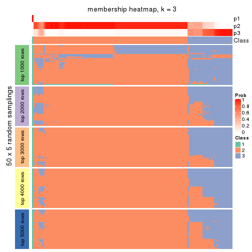
membership_heatmap(res, k = 4)
membership_heatmap(res, k = 5)
membership_heatmap(res, k = 6)
As soon as we have had the classes for columns, we can look for signatures which are significantly different between classes which can be candidate marks for certain classes. Following are the heatmaps for signatures.
Signature heatmaps where rows are scaled:
get_signatures(res, k = 2)

get_signatures(res, k = 3)
get_signatures(res, k = 4)
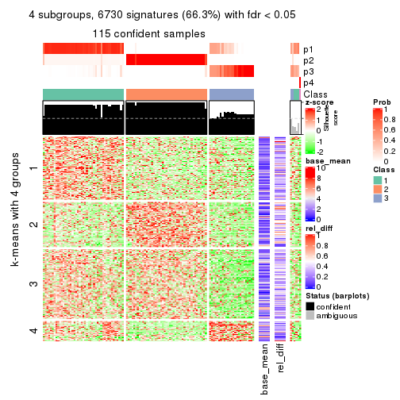
get_signatures(res, k = 5)
get_signatures(res, k = 6)
Signature heatmaps where rows are not scaled:
get_signatures(res, k = 2, scale_rows = FALSE)

get_signatures(res, k = 3, scale_rows = FALSE)
get_signatures(res, k = 4, scale_rows = FALSE)
get_signatures(res, k = 5, scale_rows = FALSE)
get_signatures(res, k = 6, scale_rows = FALSE)
Compare the overlap of signatures from different k:
compare_signatures(res)
get_signature() returns a data frame invisibly. TO get the list of signatures, the function
call should be assigned to a variable explicitly. In following code, if plot argument is set
to FALSE, no heatmap is plotted while only the differential analysis is performed.
# code only for demonstration
tb = get_signature(res, k = ..., plot = FALSE)
An example of the output of tb is:
#> which_row fdr mean_1 mean_2 scaled_mean_1 scaled_mean_2 km
#> 1 38 0.042760348 8.373488 9.131774 -0.5533452 0.5164555 1
#> 2 40 0.018707592 7.106213 8.469186 -0.6173731 0.5762149 1
#> 3 55 0.019134737 10.221463 11.207825 -0.6159697 0.5749050 1
#> 4 59 0.006059896 5.921854 7.869574 -0.6899429 0.6439467 1
#> 5 60 0.018055526 8.928898 10.211722 -0.6204761 0.5791110 1
#> 6 98 0.009384629 15.714769 14.887706 0.6635654 -0.6193277 2
...
The columns in tb are:
which_row: row indices corresponding to the input matrix.fdr: FDR for the differential test. mean_x: The mean value in group x.scaled_mean_x: The mean value in group x after rows are scaled.km: Row groups if k-means clustering is applied to rows.UMAP plot which shows how samples are separated.
dimension_reduction(res, k = 2, method = "UMAP")
dimension_reduction(res, k = 3, method = "UMAP")
dimension_reduction(res, k = 4, method = "UMAP")
dimension_reduction(res, k = 5, method = "UMAP")
dimension_reduction(res, k = 6, method = "UMAP")

Following heatmap shows how subgroups are split when increasing k:
collect_classes(res)
If matrix rows can be associated to genes, consider to use GO_Enrichment(res,
...) to perform function enrichment for the signature genes.
The object with results only for a single top-value method and a single partition method can be extracted as:
res = res_list["MAD", "kmeans"]
# you can also extract it by
# res = res_list["MAD:kmeans"]
A summary of res and all the functions that can be applied to it:
res
#> A 'ConsensusPartition' object with k = 2, 3, 4, 5, 6.
#> On a matrix with 10145 rows and 121 columns.
#> Top rows (1000, 2000, 3000, 4000, 5000) are extracted by 'MAD' method.
#> Subgroups are detected by 'kmeans' method.
#> Performed in total 1250 partitions by row resampling.
#> Best k for subgroups seems to be 3.
#>
#> Following methods can be applied to this 'ConsensusPartition' object:
#> [1] "cola_report" "collect_classes" "collect_plots"
#> [4] "collect_stats" "colnames" "compare_signatures"
#> [7] "consensus_heatmap" "dimension_reduction" "functional_enrichment"
#> [10] "get_anno_col" "get_anno" "get_classes"
#> [13] "get_consensus" "get_matrix" "get_membership"
#> [16] "get_param" "get_signatures" "get_stats"
#> [19] "is_best_k" "is_stable_k" "membership_heatmap"
#> [22] "ncol" "nrow" "plot_ecdf"
#> [25] "rownames" "select_partition_number" "show"
#> [28] "suggest_best_k" "test_to_known_factors"
collect_plots() function collects all the plots made from res for all k (number of partitions)
into one single page to provide an easy and fast comparison between different k.
collect_plots(res)
The plots are:
k and the heatmap of
predicted classes for each k.k.k.k.All the plots in panels can be made by individual functions and they are plotted later in this section.
select_partition_number() produces several plots showing different
statistics for choosing “optimized” k. There are following statistics:
k;k, the area increased is defined as \(A_k - A_{k-1}\).The detailed explanations of these statistics can be found in the cola vignette.
Generally speaking, lower PAC score, higher mean silhouette score or higher
concordance corresponds to better partition. Rand index and Jaccard index
measure how similar the current partition is compared to partition with k-1.
If they are too similar, we won't accept k is better than k-1.
select_partition_number(res)
The numeric values for all these statistics can be obtained by get_stats().
get_stats(res)
#> k 1-PAC mean_silhouette concordance area_increased Rand Jaccard
#> 2 2 0.536 0.797 0.861 0.4274 0.608 0.608
#> 3 3 1.000 0.988 0.992 0.5478 0.717 0.539
#> 4 4 0.823 0.780 0.882 0.0759 0.994 0.981
#> 5 5 0.824 0.688 0.798 0.0505 0.910 0.735
#> 6 6 0.826 0.601 0.739 0.0314 0.932 0.758
suggest_best_k() suggests the best \(k\) based on these statistics. The rules are as follows:
NA.suggest_best_k(res)
#> [1] 3
Following shows the table of the partitions (You need to click the show/hide
code output link to see it). The membership matrix (columns with name p*)
is inferred by
clue::cl_consensus()
function with the SE method. Basically the value in the membership matrix
represents the probability to belong to a certain group. The finall class
label for an item is determined with the group with highest probability it
belongs to.
In get_classes() function, the entropy is calculated from the membership
matrix and the silhouette score is calculated from the consensus matrix.
cbind(get_classes(res, k = 2), get_membership(res, k = 2))
#> class entropy silhouette p1 p2
#> SRR2431463 2 0.0000 0.728 0.000 1.000
#> SRR2431462 2 0.0000 0.728 0.000 1.000
#> SRR2431461 2 0.2043 0.695 0.032 0.968
#> SRR2431459 2 0.0000 0.728 0.000 1.000
#> SRR2431460 2 0.0000 0.728 0.000 1.000
#> SRR2431458 2 0.1843 0.700 0.028 0.972
#> SRR2431457 2 0.0000 0.728 0.000 1.000
#> SRR2431455 2 0.0000 0.728 0.000 1.000
#> SRR2431456 2 0.0000 0.728 0.000 1.000
#> SRR2431454 1 0.8763 0.966 0.704 0.296
#> SRR2431453 2 0.0000 0.728 0.000 1.000
#> SRR2431451 2 0.2423 0.685 0.040 0.960
#> SRR2431452 1 0.8763 0.966 0.704 0.296
#> SRR2431450 2 0.0000 0.728 0.000 1.000
#> SRR2431449 2 0.0000 0.728 0.000 1.000
#> SRR2431448 2 0.0376 0.724 0.004 0.996
#> SRR2431446 2 0.2043 0.695 0.032 0.968
#> SRR2431447 2 0.2043 0.695 0.032 0.968
#> SRR2431445 2 0.0000 0.728 0.000 1.000
#> SRR2431444 1 0.8763 0.966 0.704 0.296
#> SRR2431443 2 0.0000 0.728 0.000 1.000
#> SRR2431442 2 0.0000 0.728 0.000 1.000
#> SRR2431441 2 0.0000 0.728 0.000 1.000
#> SRR2431440 2 0.4161 0.693 0.084 0.916
#> SRR2431439 2 0.1843 0.700 0.028 0.972
#> SRR2431438 2 0.0000 0.728 0.000 1.000
#> SRR2431437 2 0.0000 0.728 0.000 1.000
#> SRR2431436 1 0.8763 0.966 0.704 0.296
#> SRR2431435 2 0.2603 0.679 0.044 0.956
#> SRR2431434 2 0.0000 0.728 0.000 1.000
#> SRR2431433 2 0.0000 0.728 0.000 1.000
#> SRR2431432 2 0.0000 0.728 0.000 1.000
#> SRR2431431 2 0.1843 0.700 0.028 0.972
#> SRR2431430 2 0.1843 0.700 0.028 0.972
#> SRR2431429 2 0.0000 0.728 0.000 1.000
#> SRR2431428 2 0.0000 0.728 0.000 1.000
#> SRR2431427 2 0.9358 0.784 0.352 0.648
#> SRR2431426 2 0.9358 0.784 0.352 0.648
#> SRR2431425 2 0.9358 0.784 0.352 0.648
#> SRR2431424 2 0.9358 0.784 0.352 0.648
#> SRR2431423 2 0.9358 0.784 0.352 0.648
#> SRR2431422 2 0.9358 0.784 0.352 0.648
#> SRR2431421 2 0.9358 0.784 0.352 0.648
#> SRR2431420 2 0.9358 0.784 0.352 0.648
#> SRR2431419 2 0.9358 0.784 0.352 0.648
#> SRR2431418 2 0.9358 0.784 0.352 0.648
#> SRR2431417 2 0.9358 0.784 0.352 0.648
#> SRR2431416 2 0.9358 0.784 0.352 0.648
#> SRR2431415 2 0.9358 0.784 0.352 0.648
#> SRR2431414 2 0.9358 0.784 0.352 0.648
#> SRR2431413 2 0.9358 0.784 0.352 0.648
#> SRR2431412 2 0.9358 0.784 0.352 0.648
#> SRR2431411 1 0.4298 0.678 0.912 0.088
#> SRR2431409 2 0.9358 0.784 0.352 0.648
#> SRR2431410 2 0.7299 0.758 0.204 0.796
#> SRR2431408 2 0.9323 0.783 0.348 0.652
#> SRR2431407 2 0.9358 0.784 0.352 0.648
#> SRR2431405 2 0.9358 0.784 0.352 0.648
#> SRR2431406 2 0.9358 0.784 0.352 0.648
#> SRR2431404 2 0.9358 0.784 0.352 0.648
#> SRR2431403 2 0.9358 0.784 0.352 0.648
#> SRR2431402 2 0.9358 0.784 0.352 0.648
#> SRR2431401 2 0.9358 0.784 0.352 0.648
#> SRR2431400 2 0.9358 0.784 0.352 0.648
#> SRR2431399 2 0.9358 0.784 0.352 0.648
#> SRR2431398 2 0.9358 0.784 0.352 0.648
#> SRR2431397 2 0.9358 0.784 0.352 0.648
#> SRR2431396 2 0.9358 0.784 0.352 0.648
#> SRR2431395 2 0.9358 0.784 0.352 0.648
#> SRR2431394 2 0.9358 0.784 0.352 0.648
#> SRR2431393 2 0.9358 0.784 0.352 0.648
#> SRR2431392 2 0.9358 0.784 0.352 0.648
#> SRR2431391 2 0.9358 0.784 0.352 0.648
#> SRR2431390 2 0.9358 0.784 0.352 0.648
#> SRR2431389 2 0.9358 0.784 0.352 0.648
#> SRR2431388 2 0.9358 0.784 0.352 0.648
#> SRR2431387 2 0.9323 0.783 0.348 0.652
#> SRR2431386 2 0.9358 0.784 0.352 0.648
#> SRR2431385 1 0.2603 0.487 0.956 0.044
#> SRR2431383 2 0.9358 0.784 0.352 0.648
#> SRR2431384 2 0.9358 0.784 0.352 0.648
#> SRR2431382 2 0.9358 0.784 0.352 0.648
#> SRR2431381 2 0.9358 0.784 0.352 0.648
#> SRR2431380 2 0.8763 0.769 0.296 0.704
#> SRR2431379 1 0.8763 0.966 0.704 0.296
#> SRR2431378 1 0.8909 0.955 0.692 0.308
#> SRR2431376 1 0.9323 0.913 0.652 0.348
#> SRR2431377 2 0.5408 0.536 0.124 0.876
#> SRR2431375 1 0.8763 0.966 0.704 0.296
#> SRR2431374 2 0.0000 0.728 0.000 1.000
#> SRR2431372 1 0.8763 0.966 0.704 0.296
#> SRR2431371 1 0.9358 0.908 0.648 0.352
#> SRR2431373 1 0.8763 0.966 0.704 0.296
#> SRR2431370 1 0.8763 0.966 0.704 0.296
#> SRR2431369 1 0.9358 0.908 0.648 0.352
#> SRR2431368 1 0.8763 0.966 0.704 0.296
#> SRR2431367 1 0.8763 0.966 0.704 0.296
#> SRR2431366 2 0.4298 0.608 0.088 0.912
#> SRR2431365 2 0.1184 0.713 0.016 0.984
#> SRR2431364 1 0.8763 0.966 0.704 0.296
#> SRR2431363 1 0.8763 0.966 0.704 0.296
#> SRR2431361 1 0.9286 0.917 0.656 0.344
#> SRR2431362 1 0.8763 0.966 0.704 0.296
#> SRR2431360 1 0.8763 0.966 0.704 0.296
#> SRR2431359 1 0.8813 0.963 0.700 0.300
#> SRR2431358 2 0.0000 0.728 0.000 1.000
#> SRR2431357 2 0.0000 0.728 0.000 1.000
#> SRR2431355 2 0.2043 0.695 0.032 0.968
#> SRR2431356 1 0.8763 0.966 0.704 0.296
#> SRR2431354 1 0.8763 0.966 0.704 0.296
#> SRR2431353 2 0.0672 0.720 0.008 0.992
#> SRR2431352 2 0.0000 0.728 0.000 1.000
#> SRR2431351 1 0.8763 0.966 0.704 0.296
#> SRR2431350 1 0.8763 0.966 0.704 0.296
#> SRR2431349 1 0.8763 0.966 0.704 0.296
#> SRR2431348 1 0.8763 0.966 0.704 0.296
#> SRR2431347 1 0.8763 0.966 0.704 0.296
#> SRR2431346 1 0.8861 0.959 0.696 0.304
#> SRR2431345 1 0.8763 0.966 0.704 0.296
#> SRR2431344 2 0.2043 0.695 0.032 0.968
#> SRR2431343 2 0.0000 0.728 0.000 1.000
cbind(get_classes(res, k = 3), get_membership(res, k = 3))
#> class entropy silhouette p1 p2 p3
#> SRR2431463 1 0.0424 1.000 0.992 0.008 0.000
#> SRR2431462 1 0.0424 1.000 0.992 0.008 0.000
#> SRR2431461 1 0.0424 1.000 0.992 0.008 0.000
#> SRR2431459 1 0.0424 1.000 0.992 0.008 0.000
#> SRR2431460 1 0.0424 1.000 0.992 0.008 0.000
#> SRR2431458 1 0.0424 1.000 0.992 0.008 0.000
#> SRR2431457 1 0.0424 1.000 0.992 0.008 0.000
#> SRR2431455 1 0.0424 1.000 0.992 0.008 0.000
#> SRR2431456 1 0.0424 1.000 0.992 0.008 0.000
#> SRR2431454 3 0.0237 0.991 0.000 0.004 0.996
#> SRR2431453 1 0.0424 1.000 0.992 0.008 0.000
#> SRR2431451 1 0.0424 1.000 0.992 0.008 0.000
#> SRR2431452 3 0.0000 0.995 0.000 0.000 1.000
#> SRR2431450 1 0.0424 1.000 0.992 0.008 0.000
#> SRR2431449 1 0.0424 1.000 0.992 0.008 0.000
#> SRR2431448 1 0.0424 1.000 0.992 0.008 0.000
#> SRR2431446 1 0.0424 1.000 0.992 0.008 0.000
#> SRR2431447 1 0.0424 1.000 0.992 0.008 0.000
#> SRR2431445 1 0.0424 1.000 0.992 0.008 0.000
#> SRR2431444 3 0.0000 0.995 0.000 0.000 1.000
#> SRR2431443 1 0.0424 1.000 0.992 0.008 0.000
#> SRR2431442 1 0.0424 1.000 0.992 0.008 0.000
#> SRR2431441 1 0.0424 1.000 0.992 0.008 0.000
#> SRR2431440 1 0.0424 1.000 0.992 0.008 0.000
#> SRR2431439 1 0.0424 1.000 0.992 0.008 0.000
#> SRR2431438 1 0.0424 1.000 0.992 0.008 0.000
#> SRR2431437 1 0.0424 1.000 0.992 0.008 0.000
#> SRR2431436 3 0.0000 0.995 0.000 0.000 1.000
#> SRR2431435 1 0.0424 1.000 0.992 0.008 0.000
#> SRR2431434 1 0.0424 1.000 0.992 0.008 0.000
#> SRR2431433 1 0.0424 1.000 0.992 0.008 0.000
#> SRR2431432 1 0.0424 1.000 0.992 0.008 0.000
#> SRR2431431 1 0.0424 1.000 0.992 0.008 0.000
#> SRR2431430 1 0.0424 1.000 0.992 0.008 0.000
#> SRR2431429 1 0.0424 1.000 0.992 0.008 0.000
#> SRR2431428 1 0.0424 1.000 0.992 0.008 0.000
#> SRR2431427 2 0.0000 0.989 0.000 1.000 0.000
#> SRR2431426 2 0.0000 0.989 0.000 1.000 0.000
#> SRR2431425 2 0.0000 0.989 0.000 1.000 0.000
#> SRR2431424 2 0.0000 0.989 0.000 1.000 0.000
#> SRR2431423 2 0.0000 0.989 0.000 1.000 0.000
#> SRR2431422 2 0.0000 0.989 0.000 1.000 0.000
#> SRR2431421 2 0.0000 0.989 0.000 1.000 0.000
#> SRR2431420 2 0.0000 0.989 0.000 1.000 0.000
#> SRR2431419 2 0.0000 0.989 0.000 1.000 0.000
#> SRR2431418 2 0.0000 0.989 0.000 1.000 0.000
#> SRR2431417 2 0.0000 0.989 0.000 1.000 0.000
#> SRR2431416 2 0.0000 0.989 0.000 1.000 0.000
#> SRR2431415 2 0.0000 0.989 0.000 1.000 0.000
#> SRR2431414 2 0.0000 0.989 0.000 1.000 0.000
#> SRR2431413 2 0.0000 0.989 0.000 1.000 0.000
#> SRR2431412 2 0.0000 0.989 0.000 1.000 0.000
#> SRR2431411 3 0.0424 0.991 0.008 0.000 0.992
#> SRR2431409 2 0.0000 0.989 0.000 1.000 0.000
#> SRR2431410 2 0.4974 0.688 0.236 0.764 0.000
#> SRR2431408 2 0.0000 0.989 0.000 1.000 0.000
#> SRR2431407 2 0.0000 0.989 0.000 1.000 0.000
#> SRR2431405 2 0.0000 0.989 0.000 1.000 0.000
#> SRR2431406 2 0.0000 0.989 0.000 1.000 0.000
#> SRR2431404 2 0.0000 0.989 0.000 1.000 0.000
#> SRR2431403 2 0.0000 0.989 0.000 1.000 0.000
#> SRR2431402 2 0.0000 0.989 0.000 1.000 0.000
#> SRR2431401 2 0.0000 0.989 0.000 1.000 0.000
#> SRR2431400 2 0.0000 0.989 0.000 1.000 0.000
#> SRR2431399 2 0.0000 0.989 0.000 1.000 0.000
#> SRR2431398 2 0.0000 0.989 0.000 1.000 0.000
#> SRR2431397 2 0.0000 0.989 0.000 1.000 0.000
#> SRR2431396 2 0.0000 0.989 0.000 1.000 0.000
#> SRR2431395 2 0.0000 0.989 0.000 1.000 0.000
#> SRR2431394 2 0.0000 0.989 0.000 1.000 0.000
#> SRR2431393 2 0.0000 0.989 0.000 1.000 0.000
#> SRR2431392 2 0.0000 0.989 0.000 1.000 0.000
#> SRR2431391 2 0.0000 0.989 0.000 1.000 0.000
#> SRR2431390 2 0.0000 0.989 0.000 1.000 0.000
#> SRR2431389 2 0.0000 0.989 0.000 1.000 0.000
#> SRR2431388 2 0.0000 0.989 0.000 1.000 0.000
#> SRR2431387 2 0.0000 0.989 0.000 1.000 0.000
#> SRR2431386 2 0.0000 0.989 0.000 1.000 0.000
#> SRR2431385 2 0.5285 0.672 0.004 0.752 0.244
#> SRR2431383 2 0.0000 0.989 0.000 1.000 0.000
#> SRR2431384 2 0.0000 0.989 0.000 1.000 0.000
#> SRR2431382 2 0.0000 0.989 0.000 1.000 0.000
#> SRR2431381 2 0.0000 0.989 0.000 1.000 0.000
#> SRR2431380 2 0.0000 0.989 0.000 1.000 0.000
#> SRR2431379 3 0.0000 0.995 0.000 0.000 1.000
#> SRR2431378 3 0.0000 0.995 0.000 0.000 1.000
#> SRR2431376 3 0.0000 0.995 0.000 0.000 1.000
#> SRR2431377 1 0.0424 1.000 0.992 0.008 0.000
#> SRR2431375 3 0.0000 0.995 0.000 0.000 1.000
#> SRR2431374 1 0.0424 1.000 0.992 0.008 0.000
#> SRR2431372 3 0.0000 0.995 0.000 0.000 1.000
#> SRR2431371 3 0.3482 0.854 0.128 0.000 0.872
#> SRR2431373 3 0.0000 0.995 0.000 0.000 1.000
#> SRR2431370 3 0.0000 0.995 0.000 0.000 1.000
#> SRR2431369 3 0.0000 0.995 0.000 0.000 1.000
#> SRR2431368 3 0.0000 0.995 0.000 0.000 1.000
#> SRR2431367 3 0.0000 0.995 0.000 0.000 1.000
#> SRR2431366 1 0.0424 1.000 0.992 0.008 0.000
#> SRR2431365 1 0.0424 1.000 0.992 0.008 0.000
#> SRR2431364 3 0.0000 0.995 0.000 0.000 1.000
#> SRR2431363 3 0.0000 0.995 0.000 0.000 1.000
#> SRR2431361 3 0.0000 0.995 0.000 0.000 1.000
#> SRR2431362 3 0.0000 0.995 0.000 0.000 1.000
#> SRR2431360 3 0.0000 0.995 0.000 0.000 1.000
#> SRR2431359 3 0.0000 0.995 0.000 0.000 1.000
#> SRR2431358 1 0.0424 1.000 0.992 0.008 0.000
#> SRR2431357 1 0.0424 1.000 0.992 0.008 0.000
#> SRR2431355 1 0.0424 1.000 0.992 0.008 0.000
#> SRR2431356 3 0.0000 0.995 0.000 0.000 1.000
#> SRR2431354 3 0.0000 0.995 0.000 0.000 1.000
#> SRR2431353 1 0.0424 1.000 0.992 0.008 0.000
#> SRR2431352 1 0.0424 1.000 0.992 0.008 0.000
#> SRR2431351 3 0.0000 0.995 0.000 0.000 1.000
#> SRR2431350 3 0.0000 0.995 0.000 0.000 1.000
#> SRR2431349 3 0.0000 0.995 0.000 0.000 1.000
#> SRR2431348 3 0.0000 0.995 0.000 0.000 1.000
#> SRR2431347 3 0.0000 0.995 0.000 0.000 1.000
#> SRR2431346 3 0.0000 0.995 0.000 0.000 1.000
#> SRR2431345 3 0.0000 0.995 0.000 0.000 1.000
#> SRR2431344 1 0.0424 1.000 0.992 0.008 0.000
#> SRR2431343 1 0.0424 1.000 0.992 0.008 0.000
cbind(get_classes(res, k = 4), get_membership(res, k = 4))
#> class entropy silhouette p1 p2 p3 p4
#> SRR2431463 1 0.0000 0.8472 1.000 0.000 0.000 0.000
#> SRR2431462 1 0.0921 0.8453 0.972 0.000 0.000 0.028
#> SRR2431461 1 0.3610 0.7806 0.800 0.000 0.000 0.200
#> SRR2431459 1 0.2081 0.8325 0.916 0.000 0.000 0.084
#> SRR2431460 1 0.0000 0.8472 1.000 0.000 0.000 0.000
#> SRR2431458 1 0.4040 0.7453 0.752 0.000 0.000 0.248
#> SRR2431457 1 0.1118 0.8442 0.964 0.000 0.000 0.036
#> SRR2431455 1 0.0000 0.8472 1.000 0.000 0.000 0.000
#> SRR2431456 1 0.0188 0.8471 0.996 0.000 0.000 0.004
#> SRR2431454 3 0.5700 -0.0293 0.028 0.000 0.560 0.412
#> SRR2431453 1 0.2011 0.8336 0.920 0.000 0.000 0.080
#> SRR2431451 1 0.4866 0.5595 0.596 0.000 0.000 0.404
#> SRR2431452 3 0.4776 0.1040 0.000 0.000 0.624 0.376
#> SRR2431450 1 0.0469 0.8450 0.988 0.000 0.000 0.012
#> SRR2431449 1 0.0000 0.8472 1.000 0.000 0.000 0.000
#> SRR2431448 1 0.3444 0.7898 0.816 0.000 0.000 0.184
#> SRR2431446 1 0.3356 0.7944 0.824 0.000 0.000 0.176
#> SRR2431447 1 0.4040 0.7453 0.752 0.000 0.000 0.248
#> SRR2431445 1 0.0817 0.8459 0.976 0.000 0.000 0.024
#> SRR2431444 3 0.4790 0.1142 0.000 0.000 0.620 0.380
#> SRR2431443 1 0.0000 0.8472 1.000 0.000 0.000 0.000
#> SRR2431442 1 0.0000 0.8472 1.000 0.000 0.000 0.000
#> SRR2431441 1 0.0000 0.8472 1.000 0.000 0.000 0.000
#> SRR2431440 1 0.4888 0.5471 0.588 0.000 0.000 0.412
#> SRR2431439 1 0.2760 0.8169 0.872 0.000 0.000 0.128
#> SRR2431438 1 0.0592 0.8465 0.984 0.000 0.000 0.016
#> SRR2431437 1 0.3074 0.8067 0.848 0.000 0.000 0.152
#> SRR2431436 3 0.4776 0.1214 0.000 0.000 0.624 0.376
#> SRR2431435 1 0.4776 0.5998 0.624 0.000 0.000 0.376
#> SRR2431434 1 0.0469 0.8450 0.988 0.000 0.000 0.012
#> SRR2431433 1 0.0000 0.8472 1.000 0.000 0.000 0.000
#> SRR2431432 1 0.3266 0.7988 0.832 0.000 0.000 0.168
#> SRR2431431 1 0.3873 0.7610 0.772 0.000 0.000 0.228
#> SRR2431430 1 0.4008 0.7486 0.756 0.000 0.000 0.244
#> SRR2431429 1 0.0000 0.8472 1.000 0.000 0.000 0.000
#> SRR2431428 1 0.1022 0.8395 0.968 0.000 0.000 0.032
#> SRR2431427 2 0.0000 0.9740 0.000 1.000 0.000 0.000
#> SRR2431426 2 0.0336 0.9705 0.000 0.992 0.000 0.008
#> SRR2431425 2 0.0000 0.9740 0.000 1.000 0.000 0.000
#> SRR2431424 2 0.0000 0.9740 0.000 1.000 0.000 0.000
#> SRR2431423 2 0.0000 0.9740 0.000 1.000 0.000 0.000
#> SRR2431422 2 0.0336 0.9704 0.000 0.992 0.000 0.008
#> SRR2431421 2 0.0469 0.9679 0.000 0.988 0.000 0.012
#> SRR2431420 2 0.0000 0.9740 0.000 1.000 0.000 0.000
#> SRR2431419 2 0.0188 0.9724 0.000 0.996 0.000 0.004
#> SRR2431418 2 0.0000 0.9740 0.000 1.000 0.000 0.000
#> SRR2431417 2 0.0000 0.9740 0.000 1.000 0.000 0.000
#> SRR2431416 2 0.0336 0.9704 0.000 0.992 0.000 0.008
#> SRR2431415 2 0.0000 0.9740 0.000 1.000 0.000 0.000
#> SRR2431414 2 0.0469 0.9679 0.000 0.988 0.000 0.012
#> SRR2431413 2 0.3400 0.7319 0.000 0.820 0.000 0.180
#> SRR2431412 2 0.0000 0.9740 0.000 1.000 0.000 0.000
#> SRR2431411 3 0.4679 0.1080 0.000 0.000 0.648 0.352
#> SRR2431409 2 0.0000 0.9740 0.000 1.000 0.000 0.000
#> SRR2431410 2 0.3497 0.7173 0.124 0.852 0.000 0.024
#> SRR2431408 2 0.0000 0.9740 0.000 1.000 0.000 0.000
#> SRR2431407 2 0.0000 0.9740 0.000 1.000 0.000 0.000
#> SRR2431405 2 0.3400 0.7319 0.000 0.820 0.000 0.180
#> SRR2431406 2 0.0000 0.9740 0.000 1.000 0.000 0.000
#> SRR2431404 2 0.0469 0.9679 0.000 0.988 0.000 0.012
#> SRR2431403 2 0.0188 0.9724 0.000 0.996 0.000 0.004
#> SRR2431402 2 0.0000 0.9740 0.000 1.000 0.000 0.000
#> SRR2431401 2 0.0188 0.9724 0.000 0.996 0.000 0.004
#> SRR2431400 2 0.0000 0.9740 0.000 1.000 0.000 0.000
#> SRR2431399 2 0.0000 0.9740 0.000 1.000 0.000 0.000
#> SRR2431398 2 0.0188 0.9724 0.000 0.996 0.000 0.004
#> SRR2431397 2 0.0000 0.9740 0.000 1.000 0.000 0.000
#> SRR2431396 2 0.2011 0.8882 0.000 0.920 0.000 0.080
#> SRR2431395 2 0.0000 0.9740 0.000 1.000 0.000 0.000
#> SRR2431394 2 0.0336 0.9706 0.000 0.992 0.000 0.008
#> SRR2431393 2 0.0336 0.9706 0.000 0.992 0.000 0.008
#> SRR2431392 2 0.0000 0.9740 0.000 1.000 0.000 0.000
#> SRR2431391 2 0.0000 0.9740 0.000 1.000 0.000 0.000
#> SRR2431390 2 0.0469 0.9679 0.000 0.988 0.000 0.012
#> SRR2431389 2 0.0000 0.9740 0.000 1.000 0.000 0.000
#> SRR2431388 2 0.0469 0.9679 0.000 0.988 0.000 0.012
#> SRR2431387 2 0.0188 0.9714 0.000 0.996 0.000 0.004
#> SRR2431386 2 0.0000 0.9740 0.000 1.000 0.000 0.000
#> SRR2431385 4 0.7853 0.0000 0.000 0.268 0.364 0.368
#> SRR2431383 2 0.3266 0.7532 0.000 0.832 0.000 0.168
#> SRR2431384 2 0.0000 0.9740 0.000 1.000 0.000 0.000
#> SRR2431382 2 0.0000 0.9740 0.000 1.000 0.000 0.000
#> SRR2431381 2 0.0000 0.9740 0.000 1.000 0.000 0.000
#> SRR2431380 2 0.0000 0.9740 0.000 1.000 0.000 0.000
#> SRR2431379 3 0.0000 0.6965 0.000 0.000 1.000 0.000
#> SRR2431378 3 0.4855 0.5782 0.000 0.000 0.600 0.400
#> SRR2431376 3 0.5070 0.5600 0.004 0.000 0.580 0.416
#> SRR2431377 1 0.5229 0.4755 0.564 0.000 0.008 0.428
#> SRR2431375 3 0.0000 0.6965 0.000 0.000 1.000 0.000
#> SRR2431374 1 0.3444 0.7682 0.816 0.000 0.000 0.184
#> SRR2431372 3 0.0000 0.6965 0.000 0.000 1.000 0.000
#> SRR2431371 3 0.6495 0.4567 0.072 0.000 0.492 0.436
#> SRR2431373 3 0.0000 0.6965 0.000 0.000 1.000 0.000
#> SRR2431370 3 0.4008 0.6769 0.000 0.000 0.756 0.244
#> SRR2431369 3 0.5028 0.5750 0.004 0.000 0.596 0.400
#> SRR2431368 3 0.0336 0.6967 0.000 0.000 0.992 0.008
#> SRR2431367 3 0.3837 0.6806 0.000 0.000 0.776 0.224
#> SRR2431366 1 0.4925 0.4877 0.572 0.000 0.000 0.428
#> SRR2431365 1 0.4925 0.4877 0.572 0.000 0.000 0.428
#> SRR2431364 3 0.0000 0.6965 0.000 0.000 1.000 0.000
#> SRR2431363 3 0.0000 0.6965 0.000 0.000 1.000 0.000
#> SRR2431361 3 0.4933 0.5474 0.000 0.000 0.568 0.432
#> SRR2431362 3 0.0000 0.6965 0.000 0.000 1.000 0.000
#> SRR2431360 3 0.0000 0.6965 0.000 0.000 1.000 0.000
#> SRR2431359 3 0.4103 0.6731 0.000 0.000 0.744 0.256
#> SRR2431358 1 0.3444 0.7682 0.816 0.000 0.000 0.184
#> SRR2431357 1 0.3486 0.7655 0.812 0.000 0.000 0.188
#> SRR2431355 1 0.3726 0.7469 0.788 0.000 0.000 0.212
#> SRR2431356 3 0.4008 0.6769 0.000 0.000 0.756 0.244
#> SRR2431354 3 0.0000 0.6965 0.000 0.000 1.000 0.000
#> SRR2431353 1 0.3486 0.7655 0.812 0.000 0.000 0.188
#> SRR2431352 1 0.3486 0.7655 0.812 0.000 0.000 0.188
#> SRR2431351 3 0.0000 0.6965 0.000 0.000 1.000 0.000
#> SRR2431350 3 0.4008 0.6769 0.000 0.000 0.756 0.244
#> SRR2431349 3 0.0000 0.6965 0.000 0.000 1.000 0.000
#> SRR2431348 3 0.4008 0.6769 0.000 0.000 0.756 0.244
#> SRR2431347 3 0.4072 0.6743 0.000 0.000 0.748 0.252
#> SRR2431346 3 0.4730 0.6057 0.000 0.000 0.636 0.364
#> SRR2431345 3 0.0000 0.6965 0.000 0.000 1.000 0.000
#> SRR2431344 1 0.3569 0.7637 0.804 0.000 0.000 0.196
#> SRR2431343 1 0.3444 0.7682 0.816 0.000 0.000 0.184
cbind(get_classes(res, k = 5), get_membership(res, k = 5))
#> class entropy silhouette p1 p2 p3 p4 p5
#> SRR2431463 1 0.0000 0.7666 1.000 0.000 0.000 0.000 0.000
#> SRR2431462 1 0.1197 0.7357 0.952 0.000 0.000 0.000 0.048
#> SRR2431461 5 0.4256 0.4806 0.436 0.000 0.000 0.000 0.564
#> SRR2431459 1 0.2732 0.6040 0.840 0.000 0.000 0.000 0.160
#> SRR2431460 1 0.0000 0.7666 1.000 0.000 0.000 0.000 0.000
#> SRR2431458 5 0.4182 0.5506 0.400 0.000 0.000 0.000 0.600
#> SRR2431457 1 0.1121 0.7387 0.956 0.000 0.000 0.000 0.044
#> SRR2431455 1 0.0000 0.7666 1.000 0.000 0.000 0.000 0.000
#> SRR2431456 1 0.0000 0.7666 1.000 0.000 0.000 0.000 0.000
#> SRR2431454 5 0.3196 0.5877 0.004 0.000 0.192 0.000 0.804
#> SRR2431453 1 0.2852 0.5857 0.828 0.000 0.000 0.000 0.172
#> SRR2431451 5 0.3366 0.6562 0.232 0.000 0.000 0.000 0.768
#> SRR2431452 5 0.4227 0.4613 0.000 0.000 0.292 0.016 0.692
#> SRR2431450 1 0.0162 0.7657 0.996 0.000 0.000 0.000 0.004
#> SRR2431449 1 0.0000 0.7666 1.000 0.000 0.000 0.000 0.000
#> SRR2431448 1 0.4307 -0.3605 0.504 0.000 0.000 0.000 0.496
#> SRR2431446 1 0.4291 -0.2595 0.536 0.000 0.000 0.000 0.464
#> SRR2431447 5 0.4150 0.5657 0.388 0.000 0.000 0.000 0.612
#> SRR2431445 1 0.0880 0.7482 0.968 0.000 0.000 0.000 0.032
#> SRR2431444 5 0.3305 0.5684 0.000 0.000 0.224 0.000 0.776
#> SRR2431443 1 0.0000 0.7666 1.000 0.000 0.000 0.000 0.000
#> SRR2431442 1 0.0000 0.7666 1.000 0.000 0.000 0.000 0.000
#> SRR2431441 1 0.0000 0.7666 1.000 0.000 0.000 0.000 0.000
#> SRR2431440 5 0.3210 0.6570 0.212 0.000 0.000 0.000 0.788
#> SRR2431439 1 0.3895 0.2617 0.680 0.000 0.000 0.000 0.320
#> SRR2431438 1 0.0404 0.7605 0.988 0.000 0.000 0.000 0.012
#> SRR2431437 1 0.4045 0.1343 0.644 0.000 0.000 0.000 0.356
#> SRR2431436 5 0.3395 0.5606 0.000 0.000 0.236 0.000 0.764
#> SRR2431435 5 0.3561 0.6485 0.260 0.000 0.000 0.000 0.740
#> SRR2431434 1 0.0162 0.7657 0.996 0.000 0.000 0.000 0.004
#> SRR2431433 1 0.0000 0.7666 1.000 0.000 0.000 0.000 0.000
#> SRR2431432 1 0.4262 -0.1818 0.560 0.000 0.000 0.000 0.440
#> SRR2431431 5 0.4126 0.5728 0.380 0.000 0.000 0.000 0.620
#> SRR2431430 5 0.4192 0.5448 0.404 0.000 0.000 0.000 0.596
#> SRR2431429 1 0.0000 0.7666 1.000 0.000 0.000 0.000 0.000
#> SRR2431428 1 0.1493 0.7452 0.948 0.000 0.000 0.024 0.028
#> SRR2431427 2 0.0290 0.9621 0.000 0.992 0.000 0.000 0.008
#> SRR2431426 2 0.0992 0.9547 0.000 0.968 0.000 0.008 0.024
#> SRR2431425 2 0.0162 0.9629 0.000 0.996 0.000 0.000 0.004
#> SRR2431424 2 0.0162 0.9628 0.000 0.996 0.000 0.000 0.004
#> SRR2431423 2 0.0000 0.9629 0.000 1.000 0.000 0.000 0.000
#> SRR2431422 2 0.0290 0.9622 0.000 0.992 0.000 0.000 0.008
#> SRR2431421 2 0.1082 0.9528 0.000 0.964 0.000 0.008 0.028
#> SRR2431420 2 0.0000 0.9629 0.000 1.000 0.000 0.000 0.000
#> SRR2431419 2 0.0000 0.9629 0.000 1.000 0.000 0.000 0.000
#> SRR2431418 2 0.0290 0.9626 0.000 0.992 0.000 0.000 0.008
#> SRR2431417 2 0.0290 0.9626 0.000 0.992 0.000 0.000 0.008
#> SRR2431416 2 0.0609 0.9594 0.000 0.980 0.000 0.000 0.020
#> SRR2431415 2 0.0290 0.9626 0.000 0.992 0.000 0.000 0.008
#> SRR2431414 2 0.0992 0.9547 0.000 0.968 0.000 0.008 0.024
#> SRR2431413 2 0.5748 0.5550 0.000 0.608 0.000 0.252 0.140
#> SRR2431412 2 0.0290 0.9626 0.000 0.992 0.000 0.000 0.008
#> SRR2431411 3 0.6778 0.0245 0.000 0.000 0.368 0.356 0.276
#> SRR2431409 2 0.0290 0.9626 0.000 0.992 0.000 0.000 0.008
#> SRR2431410 2 0.1989 0.9164 0.032 0.932 0.000 0.016 0.020
#> SRR2431408 2 0.0290 0.9626 0.000 0.992 0.000 0.000 0.008
#> SRR2431407 2 0.0290 0.9626 0.000 0.992 0.000 0.000 0.008
#> SRR2431405 2 0.5748 0.5550 0.000 0.608 0.000 0.252 0.140
#> SRR2431406 2 0.0000 0.9629 0.000 1.000 0.000 0.000 0.000
#> SRR2431404 2 0.0898 0.9565 0.000 0.972 0.000 0.008 0.020
#> SRR2431403 2 0.0898 0.9569 0.000 0.972 0.000 0.008 0.020
#> SRR2431402 2 0.0290 0.9626 0.000 0.992 0.000 0.000 0.008
#> SRR2431401 2 0.0898 0.9562 0.000 0.972 0.000 0.008 0.020
#> SRR2431400 2 0.0290 0.9626 0.000 0.992 0.000 0.000 0.008
#> SRR2431399 2 0.0510 0.9628 0.000 0.984 0.000 0.000 0.016
#> SRR2431398 2 0.0451 0.9614 0.000 0.988 0.000 0.004 0.008
#> SRR2431397 2 0.0162 0.9629 0.000 0.996 0.000 0.000 0.004
#> SRR2431396 2 0.3704 0.8277 0.000 0.820 0.000 0.088 0.092
#> SRR2431395 2 0.0404 0.9627 0.000 0.988 0.000 0.000 0.012
#> SRR2431394 2 0.0992 0.9547 0.000 0.968 0.000 0.008 0.024
#> SRR2431393 2 0.0992 0.9571 0.000 0.968 0.000 0.008 0.024
#> SRR2431392 2 0.0510 0.9628 0.000 0.984 0.000 0.000 0.016
#> SRR2431391 2 0.0290 0.9626 0.000 0.992 0.000 0.000 0.008
#> SRR2431390 2 0.0955 0.9552 0.000 0.968 0.000 0.004 0.028
#> SRR2431389 2 0.0290 0.9621 0.000 0.992 0.000 0.000 0.008
#> SRR2431388 2 0.1082 0.9528 0.000 0.964 0.000 0.008 0.028
#> SRR2431387 2 0.0566 0.9601 0.000 0.984 0.000 0.004 0.012
#> SRR2431386 2 0.0290 0.9626 0.000 0.992 0.000 0.000 0.008
#> SRR2431385 5 0.8295 0.0266 0.000 0.128 0.252 0.288 0.332
#> SRR2431383 2 0.5444 0.6295 0.000 0.656 0.000 0.204 0.140
#> SRR2431384 2 0.0290 0.9626 0.000 0.992 0.000 0.000 0.008
#> SRR2431382 2 0.0290 0.9622 0.000 0.992 0.000 0.000 0.008
#> SRR2431381 2 0.0404 0.9627 0.000 0.988 0.000 0.000 0.012
#> SRR2431380 2 0.0290 0.9626 0.000 0.992 0.000 0.000 0.008
#> SRR2431379 3 0.0992 0.7452 0.000 0.000 0.968 0.024 0.008
#> SRR2431378 4 0.4367 0.3031 0.000 0.000 0.416 0.580 0.004
#> SRR2431376 4 0.4171 0.3724 0.000 0.000 0.396 0.604 0.000
#> SRR2431377 4 0.4893 0.3196 0.396 0.000 0.008 0.580 0.016
#> SRR2431375 3 0.0162 0.7531 0.000 0.000 0.996 0.000 0.004
#> SRR2431374 1 0.4276 0.5385 0.716 0.000 0.000 0.256 0.028
#> SRR2431372 3 0.0404 0.7514 0.000 0.000 0.988 0.000 0.012
#> SRR2431371 4 0.5186 0.4429 0.052 0.000 0.320 0.624 0.004
#> SRR2431373 3 0.0162 0.7531 0.000 0.000 0.996 0.000 0.004
#> SRR2431370 3 0.4283 0.4626 0.000 0.000 0.644 0.348 0.008
#> SRR2431369 4 0.4182 0.3635 0.000 0.000 0.400 0.600 0.000
#> SRR2431368 3 0.1697 0.7276 0.000 0.000 0.932 0.060 0.008
#> SRR2431367 3 0.3861 0.5620 0.000 0.000 0.728 0.264 0.008
#> SRR2431366 4 0.4917 0.2630 0.416 0.000 0.000 0.556 0.028
#> SRR2431365 4 0.4948 0.2113 0.436 0.000 0.000 0.536 0.028
#> SRR2431364 3 0.0000 0.7532 0.000 0.000 1.000 0.000 0.000
#> SRR2431363 3 0.0162 0.7531 0.000 0.000 0.996 0.000 0.004
#> SRR2431361 4 0.4161 0.3786 0.000 0.000 0.392 0.608 0.000
#> SRR2431362 3 0.0290 0.7524 0.000 0.000 0.992 0.000 0.008
#> SRR2431360 3 0.0000 0.7532 0.000 0.000 1.000 0.000 0.000
#> SRR2431359 3 0.4341 0.4299 0.000 0.000 0.628 0.364 0.008
#> SRR2431358 1 0.4276 0.5385 0.716 0.000 0.000 0.256 0.028
#> SRR2431357 1 0.4350 0.5222 0.704 0.000 0.000 0.268 0.028
#> SRR2431355 1 0.4442 0.4887 0.688 0.000 0.000 0.284 0.028
#> SRR2431356 3 0.4283 0.4626 0.000 0.000 0.644 0.348 0.008
#> SRR2431354 3 0.0162 0.7531 0.000 0.000 0.996 0.000 0.004
#> SRR2431353 1 0.4350 0.5222 0.704 0.000 0.000 0.268 0.028
#> SRR2431352 1 0.4350 0.5222 0.704 0.000 0.000 0.268 0.028
#> SRR2431351 3 0.0162 0.7531 0.000 0.000 0.996 0.000 0.004
#> SRR2431350 3 0.4298 0.4553 0.000 0.000 0.640 0.352 0.008
#> SRR2431349 3 0.0162 0.7531 0.000 0.000 0.996 0.000 0.004
#> SRR2431348 3 0.4283 0.4626 0.000 0.000 0.644 0.348 0.008
#> SRR2431347 3 0.4251 0.4191 0.000 0.000 0.624 0.372 0.004
#> SRR2431346 3 0.4450 -0.0246 0.000 0.000 0.508 0.488 0.004
#> SRR2431345 3 0.0162 0.7531 0.000 0.000 0.996 0.000 0.004
#> SRR2431344 1 0.4428 0.5207 0.700 0.000 0.000 0.268 0.032
#> SRR2431343 1 0.4326 0.5278 0.708 0.000 0.000 0.264 0.028
cbind(get_classes(res, k = 6), get_membership(res, k = 6))
#> class entropy silhouette p1 p2 p3 p4 p5 p6
#> SRR2431463 4 0.3843 0.2373 0.000 0.000 0.000 0.548 0.000 0.452
#> SRR2431462 4 0.4808 -0.0747 0.052 0.000 0.000 0.480 0.000 0.468
#> SRR2431461 1 0.4756 -0.1068 0.540 0.000 0.000 0.052 0.000 0.408
#> SRR2431459 6 0.5259 0.1893 0.096 0.000 0.000 0.436 0.000 0.468
#> SRR2431460 4 0.3975 0.2243 0.004 0.000 0.000 0.544 0.000 0.452
#> SRR2431458 1 0.3998 0.5738 0.712 0.000 0.000 0.040 0.000 0.248
#> SRR2431457 4 0.4756 -0.0339 0.048 0.000 0.000 0.488 0.000 0.464
#> SRR2431455 4 0.3843 0.2373 0.000 0.000 0.000 0.548 0.000 0.452
#> SRR2431456 4 0.4080 0.1982 0.008 0.000 0.000 0.536 0.000 0.456
#> SRR2431454 1 0.2484 0.7164 0.896 0.000 0.024 0.000 0.036 0.044
#> SRR2431453 6 0.5385 0.2648 0.112 0.000 0.000 0.420 0.000 0.468
#> SRR2431451 1 0.2255 0.7366 0.892 0.000 0.000 0.028 0.000 0.080
#> SRR2431452 1 0.3836 0.6156 0.808 0.000 0.036 0.000 0.064 0.092
#> SRR2431450 4 0.3817 0.2556 0.000 0.000 0.000 0.568 0.000 0.432
#> SRR2431449 4 0.3843 0.2373 0.000 0.000 0.000 0.548 0.000 0.452
#> SRR2431448 6 0.5419 0.5301 0.424 0.000 0.000 0.116 0.000 0.460
#> SRR2431446 6 0.5782 0.6264 0.380 0.000 0.000 0.140 0.008 0.472
#> SRR2431447 1 0.3874 0.6094 0.732 0.000 0.000 0.040 0.000 0.228
#> SRR2431445 4 0.4648 0.0128 0.040 0.000 0.000 0.496 0.000 0.464
#> SRR2431444 1 0.2919 0.6973 0.872 0.000 0.044 0.000 0.040 0.044
#> SRR2431443 4 0.3843 0.2373 0.000 0.000 0.000 0.548 0.000 0.452
#> SRR2431442 4 0.3843 0.2373 0.000 0.000 0.000 0.548 0.000 0.452
#> SRR2431441 4 0.3843 0.2373 0.000 0.000 0.000 0.548 0.000 0.452
#> SRR2431440 1 0.2231 0.7366 0.900 0.000 0.000 0.028 0.004 0.068
#> SRR2431439 6 0.6079 0.6803 0.280 0.000 0.000 0.236 0.008 0.476
#> SRR2431438 4 0.4465 0.0958 0.028 0.000 0.000 0.512 0.000 0.460
#> SRR2431437 6 0.5999 0.6427 0.244 0.000 0.000 0.276 0.004 0.476
#> SRR2431436 1 0.2851 0.6998 0.876 0.000 0.040 0.000 0.040 0.044
#> SRR2431435 1 0.2558 0.7302 0.868 0.000 0.000 0.028 0.000 0.104
#> SRR2431434 4 0.3817 0.2556 0.000 0.000 0.000 0.568 0.000 0.432
#> SRR2431433 4 0.3843 0.2373 0.000 0.000 0.000 0.548 0.000 0.452
#> SRR2431432 6 0.5686 0.6447 0.384 0.000 0.000 0.160 0.000 0.456
#> SRR2431431 1 0.4657 0.5810 0.684 0.000 0.000 0.040 0.028 0.248
#> SRR2431430 1 0.4341 0.5645 0.692 0.000 0.000 0.036 0.012 0.260
#> SRR2431429 4 0.3843 0.2373 0.000 0.000 0.000 0.548 0.000 0.452
#> SRR2431428 4 0.3175 0.3244 0.000 0.000 0.000 0.744 0.000 0.256
#> SRR2431427 2 0.0551 0.9365 0.004 0.984 0.000 0.000 0.004 0.008
#> SRR2431426 2 0.1590 0.9036 0.008 0.936 0.000 0.000 0.048 0.008
#> SRR2431425 2 0.0520 0.9385 0.008 0.984 0.000 0.000 0.000 0.008
#> SRR2431424 2 0.0767 0.9374 0.012 0.976 0.000 0.000 0.004 0.008
#> SRR2431423 2 0.0405 0.9387 0.008 0.988 0.000 0.000 0.000 0.004
#> SRR2431422 2 0.0405 0.9350 0.000 0.988 0.000 0.000 0.008 0.004
#> SRR2431421 2 0.1590 0.9017 0.008 0.936 0.000 0.000 0.048 0.008
#> SRR2431420 2 0.0520 0.9383 0.008 0.984 0.000 0.000 0.000 0.008
#> SRR2431419 2 0.0717 0.9375 0.016 0.976 0.000 0.000 0.000 0.008
#> SRR2431418 2 0.1088 0.9334 0.024 0.960 0.000 0.000 0.000 0.016
#> SRR2431417 2 0.0909 0.9348 0.020 0.968 0.000 0.000 0.000 0.012
#> SRR2431416 2 0.1340 0.9139 0.008 0.948 0.000 0.000 0.040 0.004
#> SRR2431415 2 0.1088 0.9334 0.024 0.960 0.000 0.000 0.000 0.016
#> SRR2431414 2 0.1590 0.9036 0.008 0.936 0.000 0.000 0.048 0.008
#> SRR2431413 5 0.3986 0.3451 0.004 0.464 0.000 0.000 0.532 0.000
#> SRR2431412 2 0.0717 0.9387 0.016 0.976 0.000 0.000 0.000 0.008
#> SRR2431411 5 0.4310 0.1033 0.072 0.000 0.004 0.000 0.720 0.204
#> SRR2431409 2 0.1003 0.9333 0.020 0.964 0.000 0.000 0.000 0.016
#> SRR2431410 2 0.3117 0.8096 0.028 0.864 0.000 0.072 0.012 0.024
#> SRR2431408 2 0.0909 0.9348 0.020 0.968 0.000 0.000 0.000 0.012
#> SRR2431407 2 0.0909 0.9347 0.020 0.968 0.000 0.000 0.000 0.012
#> SRR2431405 5 0.3986 0.3451 0.004 0.464 0.000 0.000 0.532 0.000
#> SRR2431406 2 0.0622 0.9378 0.012 0.980 0.000 0.000 0.000 0.008
#> SRR2431404 2 0.1477 0.9046 0.004 0.940 0.000 0.000 0.048 0.008
#> SRR2431403 2 0.0976 0.9294 0.008 0.968 0.000 0.000 0.016 0.008
#> SRR2431402 2 0.0520 0.9389 0.008 0.984 0.000 0.000 0.000 0.008
#> SRR2431401 2 0.1180 0.9315 0.012 0.960 0.000 0.000 0.016 0.012
#> SRR2431400 2 0.0806 0.9358 0.020 0.972 0.000 0.000 0.000 0.008
#> SRR2431399 2 0.0779 0.9389 0.008 0.976 0.000 0.000 0.008 0.008
#> SRR2431398 2 0.0551 0.9341 0.004 0.984 0.000 0.000 0.004 0.008
#> SRR2431397 2 0.1003 0.9348 0.020 0.964 0.000 0.000 0.000 0.016
#> SRR2431396 2 0.3991 0.3367 0.012 0.680 0.000 0.000 0.300 0.008
#> SRR2431395 2 0.0551 0.9378 0.004 0.984 0.000 0.000 0.004 0.008
#> SRR2431394 2 0.1523 0.9075 0.008 0.940 0.000 0.000 0.044 0.008
#> SRR2431393 2 0.1269 0.9271 0.012 0.956 0.000 0.000 0.020 0.012
#> SRR2431392 2 0.0870 0.9372 0.012 0.972 0.000 0.000 0.004 0.012
#> SRR2431391 2 0.0820 0.9363 0.016 0.972 0.000 0.000 0.000 0.012
#> SRR2431390 2 0.1268 0.9148 0.004 0.952 0.000 0.000 0.036 0.008
#> SRR2431389 2 0.0291 0.9379 0.004 0.992 0.000 0.000 0.000 0.004
#> SRR2431388 2 0.1477 0.9046 0.004 0.940 0.000 0.000 0.048 0.008
#> SRR2431387 2 0.1518 0.9212 0.024 0.944 0.000 0.000 0.008 0.024
#> SRR2431386 2 0.1003 0.9333 0.020 0.964 0.000 0.000 0.000 0.016
#> SRR2431385 5 0.5160 0.3269 0.164 0.092 0.000 0.000 0.692 0.052
#> SRR2431383 2 0.4225 -0.3765 0.008 0.508 0.000 0.000 0.480 0.004
#> SRR2431384 2 0.0806 0.9358 0.020 0.972 0.000 0.000 0.000 0.008
#> SRR2431382 2 0.0551 0.9378 0.004 0.984 0.000 0.000 0.004 0.008
#> SRR2431381 2 0.0520 0.9383 0.008 0.984 0.000 0.000 0.000 0.008
#> SRR2431380 2 0.1003 0.9333 0.020 0.964 0.000 0.000 0.000 0.016
#> SRR2431379 3 0.6033 0.6157 0.024 0.000 0.480 0.000 0.136 0.360
#> SRR2431378 3 0.3250 0.4680 0.000 0.000 0.788 0.196 0.012 0.004
#> SRR2431376 3 0.3507 0.4439 0.000 0.000 0.752 0.232 0.012 0.004
#> SRR2431377 4 0.4076 0.1135 0.000 0.000 0.348 0.636 0.012 0.004
#> SRR2431375 3 0.6425 0.6090 0.040 0.000 0.408 0.000 0.156 0.396
#> SRR2431374 4 0.0363 0.4323 0.000 0.000 0.000 0.988 0.000 0.012
#> SRR2431372 3 0.6362 0.6103 0.036 0.000 0.432 0.000 0.156 0.376
#> SRR2431371 3 0.3885 0.3799 0.000 0.000 0.684 0.300 0.012 0.004
#> SRR2431373 3 0.6264 0.6126 0.032 0.000 0.436 0.000 0.148 0.384
#> SRR2431370 3 0.1007 0.5979 0.000 0.000 0.956 0.000 0.000 0.044
#> SRR2431369 3 0.3426 0.4538 0.000 0.000 0.764 0.220 0.012 0.004
#> SRR2431368 3 0.5184 0.6141 0.024 0.000 0.600 0.000 0.060 0.316
#> SRR2431367 3 0.2762 0.6075 0.000 0.000 0.804 0.000 0.000 0.196
#> SRR2431366 4 0.3848 0.2040 0.000 0.000 0.292 0.692 0.012 0.004
#> SRR2431365 4 0.3608 0.2753 0.000 0.000 0.248 0.736 0.012 0.004
#> SRR2431364 3 0.6425 0.6090 0.040 0.000 0.408 0.000 0.156 0.396
#> SRR2431363 3 0.6425 0.6090 0.040 0.000 0.408 0.000 0.156 0.396
#> SRR2431361 3 0.3584 0.4327 0.000 0.000 0.740 0.244 0.012 0.004
#> SRR2431362 3 0.6290 0.6111 0.032 0.000 0.428 0.000 0.152 0.388
#> SRR2431360 3 0.6425 0.6090 0.040 0.000 0.408 0.000 0.156 0.396
#> SRR2431359 3 0.0806 0.5894 0.000 0.000 0.972 0.008 0.000 0.020
#> SRR2431358 4 0.0363 0.4323 0.000 0.000 0.000 0.988 0.000 0.012
#> SRR2431357 4 0.0146 0.4321 0.000 0.000 0.000 0.996 0.000 0.004
#> SRR2431355 4 0.1296 0.4038 0.000 0.000 0.044 0.948 0.004 0.004
#> SRR2431356 3 0.0790 0.5951 0.000 0.000 0.968 0.000 0.000 0.032
#> SRR2431354 3 0.6425 0.6090 0.040 0.000 0.408 0.000 0.156 0.396
#> SRR2431353 4 0.0291 0.4277 0.000 0.000 0.004 0.992 0.000 0.004
#> SRR2431352 4 0.0146 0.4321 0.000 0.000 0.000 0.996 0.000 0.004
#> SRR2431351 3 0.6425 0.6090 0.040 0.000 0.408 0.000 0.156 0.396
#> SRR2431350 3 0.0777 0.5919 0.000 0.000 0.972 0.004 0.000 0.024
#> SRR2431349 3 0.6425 0.6090 0.040 0.000 0.408 0.000 0.156 0.396
#> SRR2431348 3 0.1075 0.5984 0.000 0.000 0.952 0.000 0.000 0.048
#> SRR2431347 3 0.0520 0.5790 0.000 0.000 0.984 0.008 0.008 0.000
#> SRR2431346 3 0.2355 0.5227 0.000 0.000 0.876 0.112 0.008 0.004
#> SRR2431345 3 0.6425 0.6090 0.040 0.000 0.408 0.000 0.156 0.396
#> SRR2431344 4 0.1007 0.4152 0.008 0.000 0.016 0.968 0.004 0.004
#> SRR2431343 4 0.0260 0.4324 0.000 0.000 0.000 0.992 0.000 0.008
Heatmaps for the consensus matrix. It visualizes the probability of two samples to be in a same group.
consensus_heatmap(res, k = 2)
consensus_heatmap(res, k = 3)
consensus_heatmap(res, k = 4)
consensus_heatmap(res, k = 5)
consensus_heatmap(res, k = 6)
Heatmaps for the membership of samples in all partitions to see how consistent they are:
membership_heatmap(res, k = 2)
membership_heatmap(res, k = 3)

membership_heatmap(res, k = 4)
membership_heatmap(res, k = 5)
membership_heatmap(res, k = 6)
As soon as we have had the classes for columns, we can look for signatures which are significantly different between classes which can be candidate marks for certain classes. Following are the heatmaps for signatures.
Signature heatmaps where rows are scaled:
get_signatures(res, k = 2)
get_signatures(res, k = 3)
get_signatures(res, k = 4)
get_signatures(res, k = 5)
get_signatures(res, k = 6)
Signature heatmaps where rows are not scaled:
get_signatures(res, k = 2, scale_rows = FALSE)
get_signatures(res, k = 3, scale_rows = FALSE)
get_signatures(res, k = 4, scale_rows = FALSE)
get_signatures(res, k = 5, scale_rows = FALSE)
get_signatures(res, k = 6, scale_rows = FALSE)
Compare the overlap of signatures from different k:
compare_signatures(res)

get_signature() returns a data frame invisibly. TO get the list of signatures, the function
call should be assigned to a variable explicitly. In following code, if plot argument is set
to FALSE, no heatmap is plotted while only the differential analysis is performed.
# code only for demonstration
tb = get_signature(res, k = ..., plot = FALSE)
An example of the output of tb is:
#> which_row fdr mean_1 mean_2 scaled_mean_1 scaled_mean_2 km
#> 1 38 0.042760348 8.373488 9.131774 -0.5533452 0.5164555 1
#> 2 40 0.018707592 7.106213 8.469186 -0.6173731 0.5762149 1
#> 3 55 0.019134737 10.221463 11.207825 -0.6159697 0.5749050 1
#> 4 59 0.006059896 5.921854 7.869574 -0.6899429 0.6439467 1
#> 5 60 0.018055526 8.928898 10.211722 -0.6204761 0.5791110 1
#> 6 98 0.009384629 15.714769 14.887706 0.6635654 -0.6193277 2
...
The columns in tb are:
which_row: row indices corresponding to the input matrix.fdr: FDR for the differential test. mean_x: The mean value in group x.scaled_mean_x: The mean value in group x after rows are scaled.km: Row groups if k-means clustering is applied to rows.UMAP plot which shows how samples are separated.
dimension_reduction(res, k = 2, method = "UMAP")
dimension_reduction(res, k = 3, method = "UMAP")
dimension_reduction(res, k = 4, method = "UMAP")
dimension_reduction(res, k = 5, method = "UMAP")
dimension_reduction(res, k = 6, method = "UMAP")
Following heatmap shows how subgroups are split when increasing k:
collect_classes(res)
If matrix rows can be associated to genes, consider to use GO_Enrichment(res,
...) to perform function enrichment for the signature genes.
The object with results only for a single top-value method and a single partition method can be extracted as:
res = res_list["MAD", "skmeans"]
# you can also extract it by
# res = res_list["MAD:skmeans"]
A summary of res and all the functions that can be applied to it:
res
#> A 'ConsensusPartition' object with k = 2, 3, 4, 5, 6.
#> On a matrix with 10145 rows and 121 columns.
#> Top rows (1000, 2000, 3000, 4000, 5000) are extracted by 'MAD' method.
#> Subgroups are detected by 'skmeans' method.
#> Performed in total 1250 partitions by row resampling.
#> Best k for subgroups seems to be 4.
#>
#> Following methods can be applied to this 'ConsensusPartition' object:
#> [1] "cola_report" "collect_classes" "collect_plots"
#> [4] "collect_stats" "colnames" "compare_signatures"
#> [7] "consensus_heatmap" "dimension_reduction" "functional_enrichment"
#> [10] "get_anno_col" "get_anno" "get_classes"
#> [13] "get_consensus" "get_matrix" "get_membership"
#> [16] "get_param" "get_signatures" "get_stats"
#> [19] "is_best_k" "is_stable_k" "membership_heatmap"
#> [22] "ncol" "nrow" "plot_ecdf"
#> [25] "rownames" "select_partition_number" "show"
#> [28] "suggest_best_k" "test_to_known_factors"
collect_plots() function collects all the plots made from res for all k (number of partitions)
into one single page to provide an easy and fast comparison between different k.
collect_plots(res)
The plots are:
k and the heatmap of
predicted classes for each k.k.k.k.All the plots in panels can be made by individual functions and they are plotted later in this section.
select_partition_number() produces several plots showing different
statistics for choosing “optimized” k. There are following statistics:
k;k, the area increased is defined as \(A_k - A_{k-1}\).The detailed explanations of these statistics can be found in the cola vignette.
Generally speaking, lower PAC score, higher mean silhouette score or higher
concordance corresponds to better partition. Rand index and Jaccard index
measure how similar the current partition is compared to partition with k-1.
If they are too similar, we won't accept k is better than k-1.
select_partition_number(res)
The numeric values for all these statistics can be obtained by get_stats().
get_stats(res)
#> k 1-PAC mean_silhouette concordance area_increased Rand Jaccard
#> 2 2 1.000 0.971 0.980 0.4834 0.517 0.517
#> 3 3 1.000 0.974 0.989 0.3802 0.796 0.613
#> 4 4 0.922 0.913 0.953 0.0873 0.898 0.712
#> 5 5 0.769 0.716 0.864 0.0533 0.996 0.985
#> 6 6 0.722 0.668 0.787 0.0483 0.942 0.790
suggest_best_k() suggests the best \(k\) based on these statistics. The rules are as follows:
NA.suggest_best_k(res)
#> [1] 4
#> attr(,"optional")
#> [1] 2 3
There is also optional best \(k\) = 2 3 that is worth to check.
Following shows the table of the partitions (You need to click the show/hide
code output link to see it). The membership matrix (columns with name p*)
is inferred by
clue::cl_consensus()
function with the SE method. Basically the value in the membership matrix
represents the probability to belong to a certain group. The finall class
label for an item is determined with the group with highest probability it
belongs to.
In get_classes() function, the entropy is calculated from the membership
matrix and the silhouette score is calculated from the consensus matrix.
cbind(get_classes(res, k = 2), get_membership(res, k = 2))
#> class entropy silhouette p1 p2
#> SRR2431463 1 0.416 0.941 0.916 0.084
#> SRR2431462 1 0.416 0.941 0.916 0.084
#> SRR2431461 1 0.000 0.968 1.000 0.000
#> SRR2431459 1 0.416 0.941 0.916 0.084
#> SRR2431460 1 0.416 0.941 0.916 0.084
#> SRR2431458 1 0.000 0.968 1.000 0.000
#> SRR2431457 1 0.416 0.941 0.916 0.084
#> SRR2431455 1 0.416 0.941 0.916 0.084
#> SRR2431456 1 0.416 0.941 0.916 0.084
#> SRR2431454 1 0.000 0.968 1.000 0.000
#> SRR2431453 1 0.416 0.941 0.916 0.084
#> SRR2431451 1 0.000 0.968 1.000 0.000
#> SRR2431452 1 0.000 0.968 1.000 0.000
#> SRR2431450 1 0.416 0.941 0.916 0.084
#> SRR2431449 1 0.416 0.941 0.916 0.084
#> SRR2431448 1 0.343 0.948 0.936 0.064
#> SRR2431446 1 0.000 0.968 1.000 0.000
#> SRR2431447 1 0.000 0.968 1.000 0.000
#> SRR2431445 1 0.416 0.941 0.916 0.084
#> SRR2431444 1 0.000 0.968 1.000 0.000
#> SRR2431443 1 0.416 0.941 0.916 0.084
#> SRR2431442 1 0.416 0.941 0.916 0.084
#> SRR2431441 1 0.416 0.941 0.916 0.084
#> SRR2431440 1 0.000 0.968 1.000 0.000
#> SRR2431439 1 0.000 0.968 1.000 0.000
#> SRR2431438 1 0.416 0.941 0.916 0.084
#> SRR2431437 1 0.416 0.941 0.916 0.084
#> SRR2431436 1 0.000 0.968 1.000 0.000
#> SRR2431435 1 0.000 0.968 1.000 0.000
#> SRR2431434 1 0.416 0.941 0.916 0.084
#> SRR2431433 1 0.416 0.941 0.916 0.084
#> SRR2431432 1 0.416 0.941 0.916 0.084
#> SRR2431431 1 0.000 0.968 1.000 0.000
#> SRR2431430 1 0.000 0.968 1.000 0.000
#> SRR2431429 1 0.416 0.941 0.916 0.084
#> SRR2431428 1 0.416 0.941 0.916 0.084
#> SRR2431427 2 0.000 0.995 0.000 1.000
#> SRR2431426 2 0.000 0.995 0.000 1.000
#> SRR2431425 2 0.000 0.995 0.000 1.000
#> SRR2431424 2 0.000 0.995 0.000 1.000
#> SRR2431423 2 0.000 0.995 0.000 1.000
#> SRR2431422 2 0.000 0.995 0.000 1.000
#> SRR2431421 2 0.000 0.995 0.000 1.000
#> SRR2431420 2 0.000 0.995 0.000 1.000
#> SRR2431419 2 0.000 0.995 0.000 1.000
#> SRR2431418 2 0.000 0.995 0.000 1.000
#> SRR2431417 2 0.000 0.995 0.000 1.000
#> SRR2431416 2 0.000 0.995 0.000 1.000
#> SRR2431415 2 0.000 0.995 0.000 1.000
#> SRR2431414 2 0.000 0.995 0.000 1.000
#> SRR2431413 2 0.000 0.995 0.000 1.000
#> SRR2431412 2 0.000 0.995 0.000 1.000
#> SRR2431411 2 0.416 0.911 0.084 0.916
#> SRR2431409 2 0.000 0.995 0.000 1.000
#> SRR2431410 2 0.000 0.995 0.000 1.000
#> SRR2431408 2 0.000 0.995 0.000 1.000
#> SRR2431407 2 0.000 0.995 0.000 1.000
#> SRR2431405 2 0.000 0.995 0.000 1.000
#> SRR2431406 2 0.000 0.995 0.000 1.000
#> SRR2431404 2 0.000 0.995 0.000 1.000
#> SRR2431403 2 0.000 0.995 0.000 1.000
#> SRR2431402 2 0.000 0.995 0.000 1.000
#> SRR2431401 2 0.000 0.995 0.000 1.000
#> SRR2431400 2 0.000 0.995 0.000 1.000
#> SRR2431399 2 0.000 0.995 0.000 1.000
#> SRR2431398 2 0.000 0.995 0.000 1.000
#> SRR2431397 2 0.000 0.995 0.000 1.000
#> SRR2431396 2 0.327 0.936 0.060 0.940
#> SRR2431395 2 0.000 0.995 0.000 1.000
#> SRR2431394 2 0.000 0.995 0.000 1.000
#> SRR2431393 2 0.000 0.995 0.000 1.000
#> SRR2431392 2 0.000 0.995 0.000 1.000
#> SRR2431391 2 0.000 0.995 0.000 1.000
#> SRR2431390 2 0.000 0.995 0.000 1.000
#> SRR2431389 2 0.000 0.995 0.000 1.000
#> SRR2431388 2 0.000 0.995 0.000 1.000
#> SRR2431387 2 0.000 0.995 0.000 1.000
#> SRR2431386 2 0.000 0.995 0.000 1.000
#> SRR2431385 2 0.416 0.911 0.084 0.916
#> SRR2431383 2 0.000 0.995 0.000 1.000
#> SRR2431384 2 0.000 0.995 0.000 1.000
#> SRR2431382 2 0.000 0.995 0.000 1.000
#> SRR2431381 2 0.000 0.995 0.000 1.000
#> SRR2431380 2 0.000 0.995 0.000 1.000
#> SRR2431379 1 0.000 0.968 1.000 0.000
#> SRR2431378 1 0.000 0.968 1.000 0.000
#> SRR2431376 1 0.000 0.968 1.000 0.000
#> SRR2431377 1 0.000 0.968 1.000 0.000
#> SRR2431375 1 0.000 0.968 1.000 0.000
#> SRR2431374 1 0.416 0.941 0.916 0.084
#> SRR2431372 1 0.000 0.968 1.000 0.000
#> SRR2431371 1 0.000 0.968 1.000 0.000
#> SRR2431373 1 0.000 0.968 1.000 0.000
#> SRR2431370 1 0.000 0.968 1.000 0.000
#> SRR2431369 1 0.000 0.968 1.000 0.000
#> SRR2431368 1 0.000 0.968 1.000 0.000
#> SRR2431367 1 0.000 0.968 1.000 0.000
#> SRR2431366 1 0.000 0.968 1.000 0.000
#> SRR2431365 1 0.000 0.968 1.000 0.000
#> SRR2431364 1 0.000 0.968 1.000 0.000
#> SRR2431363 1 0.000 0.968 1.000 0.000
#> SRR2431361 1 0.000 0.968 1.000 0.000
#> SRR2431362 1 0.000 0.968 1.000 0.000
#> SRR2431360 1 0.000 0.968 1.000 0.000
#> SRR2431359 1 0.000 0.968 1.000 0.000
#> SRR2431358 1 0.416 0.941 0.916 0.084
#> SRR2431357 1 0.416 0.941 0.916 0.084
#> SRR2431355 1 0.000 0.968 1.000 0.000
#> SRR2431356 1 0.000 0.968 1.000 0.000
#> SRR2431354 1 0.000 0.968 1.000 0.000
#> SRR2431353 1 0.000 0.968 1.000 0.000
#> SRR2431352 1 0.416 0.941 0.916 0.084
#> SRR2431351 1 0.000 0.968 1.000 0.000
#> SRR2431350 1 0.000 0.968 1.000 0.000
#> SRR2431349 1 0.000 0.968 1.000 0.000
#> SRR2431348 1 0.000 0.968 1.000 0.000
#> SRR2431347 1 0.000 0.968 1.000 0.000
#> SRR2431346 1 0.000 0.968 1.000 0.000
#> SRR2431345 1 0.000 0.968 1.000 0.000
#> SRR2431344 1 0.000 0.968 1.000 0.000
#> SRR2431343 1 0.416 0.941 0.916 0.084
cbind(get_classes(res, k = 3), get_membership(res, k = 3))
#> class entropy silhouette p1 p2 p3
#> SRR2431463 1 0.000 0.995 1.000 0.000 0.000
#> SRR2431462 1 0.000 0.995 1.000 0.000 0.000
#> SRR2431461 1 0.000 0.995 1.000 0.000 0.000
#> SRR2431459 1 0.000 0.995 1.000 0.000 0.000
#> SRR2431460 1 0.000 0.995 1.000 0.000 0.000
#> SRR2431458 1 0.000 0.995 1.000 0.000 0.000
#> SRR2431457 1 0.000 0.995 1.000 0.000 0.000
#> SRR2431455 1 0.000 0.995 1.000 0.000 0.000
#> SRR2431456 1 0.000 0.995 1.000 0.000 0.000
#> SRR2431454 3 0.000 0.965 0.000 0.000 1.000
#> SRR2431453 1 0.000 0.995 1.000 0.000 0.000
#> SRR2431451 3 0.525 0.659 0.264 0.000 0.736
#> SRR2431452 3 0.000 0.965 0.000 0.000 1.000
#> SRR2431450 1 0.000 0.995 1.000 0.000 0.000
#> SRR2431449 1 0.000 0.995 1.000 0.000 0.000
#> SRR2431448 1 0.000 0.995 1.000 0.000 0.000
#> SRR2431446 1 0.000 0.995 1.000 0.000 0.000
#> SRR2431447 1 0.000 0.995 1.000 0.000 0.000
#> SRR2431445 1 0.000 0.995 1.000 0.000 0.000
#> SRR2431444 3 0.000 0.965 0.000 0.000 1.000
#> SRR2431443 1 0.000 0.995 1.000 0.000 0.000
#> SRR2431442 1 0.000 0.995 1.000 0.000 0.000
#> SRR2431441 1 0.000 0.995 1.000 0.000 0.000
#> SRR2431440 3 0.568 0.565 0.316 0.000 0.684
#> SRR2431439 1 0.000 0.995 1.000 0.000 0.000
#> SRR2431438 1 0.000 0.995 1.000 0.000 0.000
#> SRR2431437 1 0.000 0.995 1.000 0.000 0.000
#> SRR2431436 3 0.000 0.965 0.000 0.000 1.000
#> SRR2431435 3 0.540 0.633 0.280 0.000 0.720
#> SRR2431434 1 0.000 0.995 1.000 0.000 0.000
#> SRR2431433 1 0.000 0.995 1.000 0.000 0.000
#> SRR2431432 1 0.000 0.995 1.000 0.000 0.000
#> SRR2431431 1 0.000 0.995 1.000 0.000 0.000
#> SRR2431430 1 0.000 0.995 1.000 0.000 0.000
#> SRR2431429 1 0.000 0.995 1.000 0.000 0.000
#> SRR2431428 1 0.000 0.995 1.000 0.000 0.000
#> SRR2431427 2 0.000 0.999 0.000 1.000 0.000
#> SRR2431426 2 0.000 0.999 0.000 1.000 0.000
#> SRR2431425 2 0.000 0.999 0.000 1.000 0.000
#> SRR2431424 2 0.000 0.999 0.000 1.000 0.000
#> SRR2431423 2 0.000 0.999 0.000 1.000 0.000
#> SRR2431422 2 0.000 0.999 0.000 1.000 0.000
#> SRR2431421 2 0.000 0.999 0.000 1.000 0.000
#> SRR2431420 2 0.000 0.999 0.000 1.000 0.000
#> SRR2431419 2 0.000 0.999 0.000 1.000 0.000
#> SRR2431418 2 0.000 0.999 0.000 1.000 0.000
#> SRR2431417 2 0.000 0.999 0.000 1.000 0.000
#> SRR2431416 2 0.000 0.999 0.000 1.000 0.000
#> SRR2431415 2 0.000 0.999 0.000 1.000 0.000
#> SRR2431414 2 0.000 0.999 0.000 1.000 0.000
#> SRR2431413 2 0.000 0.999 0.000 1.000 0.000
#> SRR2431412 2 0.000 0.999 0.000 1.000 0.000
#> SRR2431411 3 0.000 0.965 0.000 0.000 1.000
#> SRR2431409 2 0.000 0.999 0.000 1.000 0.000
#> SRR2431410 2 0.103 0.974 0.024 0.976 0.000
#> SRR2431408 2 0.000 0.999 0.000 1.000 0.000
#> SRR2431407 2 0.000 0.999 0.000 1.000 0.000
#> SRR2431405 2 0.000 0.999 0.000 1.000 0.000
#> SRR2431406 2 0.000 0.999 0.000 1.000 0.000
#> SRR2431404 2 0.000 0.999 0.000 1.000 0.000
#> SRR2431403 2 0.000 0.999 0.000 1.000 0.000
#> SRR2431402 2 0.000 0.999 0.000 1.000 0.000
#> SRR2431401 2 0.000 0.999 0.000 1.000 0.000
#> SRR2431400 2 0.000 0.999 0.000 1.000 0.000
#> SRR2431399 2 0.000 0.999 0.000 1.000 0.000
#> SRR2431398 2 0.000 0.999 0.000 1.000 0.000
#> SRR2431397 2 0.000 0.999 0.000 1.000 0.000
#> SRR2431396 2 0.000 0.999 0.000 1.000 0.000
#> SRR2431395 2 0.000 0.999 0.000 1.000 0.000
#> SRR2431394 2 0.000 0.999 0.000 1.000 0.000
#> SRR2431393 2 0.000 0.999 0.000 1.000 0.000
#> SRR2431392 2 0.000 0.999 0.000 1.000 0.000
#> SRR2431391 2 0.000 0.999 0.000 1.000 0.000
#> SRR2431390 2 0.000 0.999 0.000 1.000 0.000
#> SRR2431389 2 0.000 0.999 0.000 1.000 0.000
#> SRR2431388 2 0.000 0.999 0.000 1.000 0.000
#> SRR2431387 2 0.000 0.999 0.000 1.000 0.000
#> SRR2431386 2 0.000 0.999 0.000 1.000 0.000
#> SRR2431385 3 0.553 0.582 0.000 0.296 0.704
#> SRR2431383 2 0.000 0.999 0.000 1.000 0.000
#> SRR2431384 2 0.000 0.999 0.000 1.000 0.000
#> SRR2431382 2 0.000 0.999 0.000 1.000 0.000
#> SRR2431381 2 0.000 0.999 0.000 1.000 0.000
#> SRR2431380 2 0.000 0.999 0.000 1.000 0.000
#> SRR2431379 3 0.000 0.965 0.000 0.000 1.000
#> SRR2431378 3 0.000 0.965 0.000 0.000 1.000
#> SRR2431376 3 0.000 0.965 0.000 0.000 1.000
#> SRR2431377 1 0.455 0.743 0.800 0.000 0.200
#> SRR2431375 3 0.000 0.965 0.000 0.000 1.000
#> SRR2431374 1 0.000 0.995 1.000 0.000 0.000
#> SRR2431372 3 0.000 0.965 0.000 0.000 1.000
#> SRR2431371 3 0.000 0.965 0.000 0.000 1.000
#> SRR2431373 3 0.000 0.965 0.000 0.000 1.000
#> SRR2431370 3 0.000 0.965 0.000 0.000 1.000
#> SRR2431369 3 0.000 0.965 0.000 0.000 1.000
#> SRR2431368 3 0.000 0.965 0.000 0.000 1.000
#> SRR2431367 3 0.000 0.965 0.000 0.000 1.000
#> SRR2431366 1 0.000 0.995 1.000 0.000 0.000
#> SRR2431365 1 0.000 0.995 1.000 0.000 0.000
#> SRR2431364 3 0.000 0.965 0.000 0.000 1.000
#> SRR2431363 3 0.000 0.965 0.000 0.000 1.000
#> SRR2431361 3 0.000 0.965 0.000 0.000 1.000
#> SRR2431362 3 0.000 0.965 0.000 0.000 1.000
#> SRR2431360 3 0.000 0.965 0.000 0.000 1.000
#> SRR2431359 3 0.000 0.965 0.000 0.000 1.000
#> SRR2431358 1 0.000 0.995 1.000 0.000 0.000
#> SRR2431357 1 0.000 0.995 1.000 0.000 0.000
#> SRR2431355 1 0.000 0.995 1.000 0.000 0.000
#> SRR2431356 3 0.000 0.965 0.000 0.000 1.000
#> SRR2431354 3 0.000 0.965 0.000 0.000 1.000
#> SRR2431353 1 0.000 0.995 1.000 0.000 0.000
#> SRR2431352 1 0.000 0.995 1.000 0.000 0.000
#> SRR2431351 3 0.000 0.965 0.000 0.000 1.000
#> SRR2431350 3 0.000 0.965 0.000 0.000 1.000
#> SRR2431349 3 0.000 0.965 0.000 0.000 1.000
#> SRR2431348 3 0.000 0.965 0.000 0.000 1.000
#> SRR2431347 3 0.000 0.965 0.000 0.000 1.000
#> SRR2431346 3 0.000 0.965 0.000 0.000 1.000
#> SRR2431345 3 0.000 0.965 0.000 0.000 1.000
#> SRR2431344 1 0.000 0.995 1.000 0.000 0.000
#> SRR2431343 1 0.000 0.995 1.000 0.000 0.000
cbind(get_classes(res, k = 4), get_membership(res, k = 4))
#> class entropy silhouette p1 p2 p3 p4
#> SRR2431463 1 0.2704 0.912 0.876 0.000 0.000 0.124
#> SRR2431462 1 0.1474 0.922 0.948 0.000 0.000 0.052
#> SRR2431461 1 0.0000 0.910 1.000 0.000 0.000 0.000
#> SRR2431459 1 0.1022 0.920 0.968 0.000 0.000 0.032
#> SRR2431460 1 0.2530 0.917 0.888 0.000 0.000 0.112
#> SRR2431458 1 0.0188 0.908 0.996 0.000 0.004 0.000
#> SRR2431457 1 0.2081 0.923 0.916 0.000 0.000 0.084
#> SRR2431455 1 0.2647 0.914 0.880 0.000 0.000 0.120
#> SRR2431456 1 0.2345 0.921 0.900 0.000 0.000 0.100
#> SRR2431454 3 0.2266 0.890 0.084 0.000 0.912 0.004
#> SRR2431453 1 0.1211 0.922 0.960 0.000 0.000 0.040
#> SRR2431451 1 0.3157 0.770 0.852 0.000 0.144 0.004
#> SRR2431452 3 0.0376 0.962 0.004 0.000 0.992 0.004
#> SRR2431450 1 0.3123 0.887 0.844 0.000 0.000 0.156
#> SRR2431449 1 0.2589 0.916 0.884 0.000 0.000 0.116
#> SRR2431448 1 0.0469 0.915 0.988 0.000 0.000 0.012
#> SRR2431446 1 0.0188 0.912 0.996 0.000 0.000 0.004
#> SRR2431447 1 0.0188 0.908 0.996 0.000 0.004 0.000
#> SRR2431445 1 0.2081 0.923 0.916 0.000 0.000 0.084
#> SRR2431444 3 0.1398 0.936 0.040 0.000 0.956 0.004
#> SRR2431443 1 0.2704 0.912 0.876 0.000 0.000 0.124
#> SRR2431442 1 0.2704 0.912 0.876 0.000 0.000 0.124
#> SRR2431441 1 0.2530 0.917 0.888 0.000 0.000 0.112
#> SRR2431440 1 0.2473 0.840 0.908 0.000 0.080 0.012
#> SRR2431439 1 0.1022 0.920 0.968 0.000 0.000 0.032
#> SRR2431438 1 0.2345 0.920 0.900 0.000 0.000 0.100
#> SRR2431437 1 0.0336 0.913 0.992 0.000 0.000 0.008
#> SRR2431436 3 0.1302 0.934 0.044 0.000 0.956 0.000
#> SRR2431435 1 0.4277 0.565 0.720 0.000 0.280 0.000
#> SRR2431434 1 0.3074 0.891 0.848 0.000 0.000 0.152
#> SRR2431433 1 0.2589 0.916 0.884 0.000 0.000 0.116
#> SRR2431432 1 0.0188 0.912 0.996 0.000 0.000 0.004
#> SRR2431431 1 0.2142 0.884 0.928 0.000 0.016 0.056
#> SRR2431430 1 0.0000 0.910 1.000 0.000 0.000 0.000
#> SRR2431429 1 0.2704 0.912 0.876 0.000 0.000 0.124
#> SRR2431428 4 0.4992 -0.156 0.476 0.000 0.000 0.524
#> SRR2431427 2 0.0000 0.999 0.000 1.000 0.000 0.000
#> SRR2431426 2 0.0000 0.999 0.000 1.000 0.000 0.000
#> SRR2431425 2 0.0000 0.999 0.000 1.000 0.000 0.000
#> SRR2431424 2 0.0000 0.999 0.000 1.000 0.000 0.000
#> SRR2431423 2 0.0000 0.999 0.000 1.000 0.000 0.000
#> SRR2431422 2 0.0000 0.999 0.000 1.000 0.000 0.000
#> SRR2431421 2 0.0188 0.996 0.000 0.996 0.000 0.004
#> SRR2431420 2 0.0000 0.999 0.000 1.000 0.000 0.000
#> SRR2431419 2 0.0000 0.999 0.000 1.000 0.000 0.000
#> SRR2431418 2 0.0000 0.999 0.000 1.000 0.000 0.000
#> SRR2431417 2 0.0000 0.999 0.000 1.000 0.000 0.000
#> SRR2431416 2 0.0000 0.999 0.000 1.000 0.000 0.000
#> SRR2431415 2 0.0000 0.999 0.000 1.000 0.000 0.000
#> SRR2431414 2 0.0000 0.999 0.000 1.000 0.000 0.000
#> SRR2431413 2 0.0469 0.990 0.000 0.988 0.000 0.012
#> SRR2431412 2 0.0000 0.999 0.000 1.000 0.000 0.000
#> SRR2431411 3 0.0469 0.960 0.000 0.000 0.988 0.012
#> SRR2431409 2 0.0000 0.999 0.000 1.000 0.000 0.000
#> SRR2431410 4 0.5769 0.356 0.036 0.376 0.000 0.588
#> SRR2431408 2 0.0000 0.999 0.000 1.000 0.000 0.000
#> SRR2431407 2 0.0000 0.999 0.000 1.000 0.000 0.000
#> SRR2431405 2 0.0469 0.990 0.000 0.988 0.000 0.012
#> SRR2431406 2 0.0000 0.999 0.000 1.000 0.000 0.000
#> SRR2431404 2 0.0188 0.996 0.000 0.996 0.000 0.004
#> SRR2431403 2 0.0188 0.996 0.000 0.996 0.000 0.004
#> SRR2431402 2 0.0000 0.999 0.000 1.000 0.000 0.000
#> SRR2431401 2 0.0188 0.996 0.000 0.996 0.000 0.004
#> SRR2431400 2 0.0000 0.999 0.000 1.000 0.000 0.000
#> SRR2431399 2 0.0000 0.999 0.000 1.000 0.000 0.000
#> SRR2431398 2 0.0000 0.999 0.000 1.000 0.000 0.000
#> SRR2431397 2 0.0000 0.999 0.000 1.000 0.000 0.000
#> SRR2431396 2 0.0469 0.990 0.000 0.988 0.000 0.012
#> SRR2431395 2 0.0000 0.999 0.000 1.000 0.000 0.000
#> SRR2431394 2 0.0000 0.999 0.000 1.000 0.000 0.000
#> SRR2431393 2 0.0000 0.999 0.000 1.000 0.000 0.000
#> SRR2431392 2 0.0000 0.999 0.000 1.000 0.000 0.000
#> SRR2431391 2 0.0000 0.999 0.000 1.000 0.000 0.000
#> SRR2431390 2 0.0000 0.999 0.000 1.000 0.000 0.000
#> SRR2431389 2 0.0000 0.999 0.000 1.000 0.000 0.000
#> SRR2431388 2 0.0188 0.996 0.000 0.996 0.000 0.004
#> SRR2431387 2 0.0000 0.999 0.000 1.000 0.000 0.000
#> SRR2431386 2 0.0000 0.999 0.000 1.000 0.000 0.000
#> SRR2431385 3 0.4175 0.643 0.000 0.212 0.776 0.012
#> SRR2431383 2 0.0336 0.993 0.000 0.992 0.000 0.008
#> SRR2431384 2 0.0000 0.999 0.000 1.000 0.000 0.000
#> SRR2431382 2 0.0000 0.999 0.000 1.000 0.000 0.000
#> SRR2431381 2 0.0000 0.999 0.000 1.000 0.000 0.000
#> SRR2431380 2 0.0000 0.999 0.000 1.000 0.000 0.000
#> SRR2431379 3 0.0188 0.965 0.000 0.000 0.996 0.004
#> SRR2431378 3 0.3610 0.731 0.000 0.000 0.800 0.200
#> SRR2431376 4 0.4543 0.518 0.000 0.000 0.324 0.676
#> SRR2431377 4 0.0937 0.839 0.012 0.000 0.012 0.976
#> SRR2431375 3 0.0000 0.965 0.000 0.000 1.000 0.000
#> SRR2431374 4 0.0817 0.840 0.024 0.000 0.000 0.976
#> SRR2431372 3 0.0000 0.965 0.000 0.000 1.000 0.000
#> SRR2431371 4 0.2868 0.745 0.000 0.000 0.136 0.864
#> SRR2431373 3 0.0000 0.965 0.000 0.000 1.000 0.000
#> SRR2431370 3 0.0469 0.962 0.000 0.000 0.988 0.012
#> SRR2431369 4 0.4866 0.345 0.000 0.000 0.404 0.596
#> SRR2431368 3 0.0188 0.965 0.000 0.000 0.996 0.004
#> SRR2431367 3 0.0336 0.964 0.000 0.000 0.992 0.008
#> SRR2431366 4 0.0469 0.842 0.012 0.000 0.000 0.988
#> SRR2431365 4 0.0469 0.842 0.012 0.000 0.000 0.988
#> SRR2431364 3 0.0000 0.965 0.000 0.000 1.000 0.000
#> SRR2431363 3 0.0000 0.965 0.000 0.000 1.000 0.000
#> SRR2431361 4 0.4477 0.539 0.000 0.000 0.312 0.688
#> SRR2431362 3 0.0000 0.965 0.000 0.000 1.000 0.000
#> SRR2431360 3 0.0000 0.965 0.000 0.000 1.000 0.000
#> SRR2431359 3 0.0592 0.960 0.000 0.000 0.984 0.016
#> SRR2431358 4 0.1022 0.834 0.032 0.000 0.000 0.968
#> SRR2431357 4 0.0817 0.840 0.024 0.000 0.000 0.976
#> SRR2431355 4 0.0469 0.842 0.012 0.000 0.000 0.988
#> SRR2431356 3 0.0592 0.960 0.000 0.000 0.984 0.016
#> SRR2431354 3 0.0000 0.965 0.000 0.000 1.000 0.000
#> SRR2431353 4 0.0592 0.842 0.016 0.000 0.000 0.984
#> SRR2431352 4 0.0817 0.840 0.024 0.000 0.000 0.976
#> SRR2431351 3 0.0000 0.965 0.000 0.000 1.000 0.000
#> SRR2431350 3 0.0592 0.960 0.000 0.000 0.984 0.016
#> SRR2431349 3 0.0000 0.965 0.000 0.000 1.000 0.000
#> SRR2431348 3 0.0469 0.962 0.000 0.000 0.988 0.012
#> SRR2431347 3 0.0592 0.960 0.000 0.000 0.984 0.016
#> SRR2431346 3 0.1867 0.910 0.000 0.000 0.928 0.072
#> SRR2431345 3 0.0000 0.965 0.000 0.000 1.000 0.000
#> SRR2431344 4 0.1109 0.838 0.028 0.000 0.004 0.968
#> SRR2431343 4 0.0817 0.840 0.024 0.000 0.000 0.976
cbind(get_classes(res, k = 5), get_membership(res, k = 5))
#> class entropy silhouette p1 p2 p3 p4 p5
#> SRR2431463 1 0.1270 7.22e-01 0.948 0.000 0.000 0.052 0.000
#> SRR2431462 1 0.1168 7.12e-01 0.960 0.000 0.000 0.008 0.032
#> SRR2431461 1 0.3508 2.74e-01 0.748 0.000 0.000 0.000 0.252
#> SRR2431459 1 0.1638 6.87e-01 0.932 0.000 0.000 0.004 0.064
#> SRR2431460 1 0.1124 7.29e-01 0.960 0.000 0.000 0.036 0.004
#> SRR2431458 1 0.3913 -5.94e-02 0.676 0.000 0.000 0.000 0.324
#> SRR2431457 1 0.1012 7.25e-01 0.968 0.000 0.000 0.020 0.012
#> SRR2431455 1 0.1205 7.28e-01 0.956 0.000 0.000 0.040 0.004
#> SRR2431456 1 0.1485 7.30e-01 0.948 0.000 0.000 0.032 0.020
#> SRR2431454 3 0.4654 4.93e-01 0.024 0.000 0.628 0.000 0.348
#> SRR2431453 1 0.1282 6.98e-01 0.952 0.000 0.000 0.004 0.044
#> SRR2431451 1 0.6037 -8.54e-01 0.444 0.000 0.116 0.000 0.440
#> SRR2431452 3 0.2719 8.04e-01 0.000 0.000 0.852 0.004 0.144
#> SRR2431450 1 0.2338 6.44e-01 0.884 0.000 0.000 0.112 0.004
#> SRR2431449 1 0.1331 7.29e-01 0.952 0.000 0.000 0.040 0.008
#> SRR2431448 1 0.2852 5.25e-01 0.828 0.000 0.000 0.000 0.172
#> SRR2431446 1 0.3010 5.32e-01 0.824 0.000 0.000 0.004 0.172
#> SRR2431447 1 0.3949 -1.28e-01 0.668 0.000 0.000 0.000 0.332
#> SRR2431445 1 0.0912 7.27e-01 0.972 0.000 0.000 0.016 0.012
#> SRR2431444 3 0.3318 7.65e-01 0.012 0.000 0.808 0.000 0.180
#> SRR2431443 1 0.1341 7.20e-01 0.944 0.000 0.000 0.056 0.000
#> SRR2431442 1 0.1484 7.25e-01 0.944 0.000 0.000 0.048 0.008
#> SRR2431441 1 0.1205 7.28e-01 0.956 0.000 0.000 0.040 0.004
#> SRR2431440 5 0.5648 0.00e+00 0.448 0.000 0.076 0.000 0.476
#> SRR2431439 1 0.2707 6.15e-01 0.860 0.000 0.000 0.008 0.132
#> SRR2431438 1 0.1041 7.30e-01 0.964 0.000 0.000 0.032 0.004
#> SRR2431437 1 0.1952 6.63e-01 0.912 0.000 0.000 0.004 0.084
#> SRR2431436 3 0.3353 7.37e-01 0.008 0.000 0.796 0.000 0.196
#> SRR2431435 1 0.6392 -7.53e-01 0.432 0.000 0.168 0.000 0.400
#> SRR2431434 1 0.1792 6.90e-01 0.916 0.000 0.000 0.084 0.000
#> SRR2431433 1 0.1626 7.27e-01 0.940 0.000 0.000 0.044 0.016
#> SRR2431432 1 0.2930 5.34e-01 0.832 0.000 0.000 0.004 0.164
#> SRR2431431 1 0.6641 -3.73e-01 0.564 0.000 0.060 0.092 0.284
#> SRR2431430 1 0.3913 -6.55e-02 0.676 0.000 0.000 0.000 0.324
#> SRR2431429 1 0.1043 7.28e-01 0.960 0.000 0.000 0.040 0.000
#> SRR2431428 4 0.4449 -3.70e-06 0.484 0.000 0.000 0.512 0.004
#> SRR2431427 2 0.0703 9.28e-01 0.000 0.976 0.000 0.000 0.024
#> SRR2431426 2 0.2674 8.99e-01 0.000 0.856 0.000 0.004 0.140
#> SRR2431425 2 0.0794 9.28e-01 0.000 0.972 0.000 0.000 0.028
#> SRR2431424 2 0.1732 9.27e-01 0.000 0.920 0.000 0.000 0.080
#> SRR2431423 2 0.0794 9.29e-01 0.000 0.972 0.000 0.000 0.028
#> SRR2431422 2 0.2011 9.21e-01 0.000 0.908 0.000 0.004 0.088
#> SRR2431421 2 0.3209 8.71e-01 0.000 0.812 0.000 0.008 0.180
#> SRR2431420 2 0.1043 9.30e-01 0.000 0.960 0.000 0.000 0.040
#> SRR2431419 2 0.2077 9.25e-01 0.000 0.908 0.000 0.008 0.084
#> SRR2431418 2 0.1043 9.26e-01 0.000 0.960 0.000 0.000 0.040
#> SRR2431417 2 0.1043 9.28e-01 0.000 0.960 0.000 0.000 0.040
#> SRR2431416 2 0.2124 9.16e-01 0.000 0.900 0.000 0.004 0.096
#> SRR2431415 2 0.1341 9.21e-01 0.000 0.944 0.000 0.000 0.056
#> SRR2431414 2 0.2629 9.05e-01 0.000 0.860 0.000 0.004 0.136
#> SRR2431413 2 0.4401 7.34e-01 0.000 0.656 0.000 0.016 0.328
#> SRR2431412 2 0.0703 9.27e-01 0.000 0.976 0.000 0.000 0.024
#> SRR2431411 3 0.2723 8.11e-01 0.000 0.000 0.864 0.012 0.124
#> SRR2431409 2 0.1270 9.22e-01 0.000 0.948 0.000 0.000 0.052
#> SRR2431410 4 0.7587 1.53e-01 0.092 0.376 0.000 0.400 0.132
#> SRR2431408 2 0.1341 9.21e-01 0.000 0.944 0.000 0.000 0.056
#> SRR2431407 2 0.1544 9.26e-01 0.000 0.932 0.000 0.000 0.068
#> SRR2431405 2 0.4482 7.16e-01 0.000 0.636 0.000 0.016 0.348
#> SRR2431406 2 0.1544 9.31e-01 0.000 0.932 0.000 0.000 0.068
#> SRR2431404 2 0.3132 8.82e-01 0.000 0.820 0.000 0.008 0.172
#> SRR2431403 2 0.2389 9.18e-01 0.000 0.880 0.000 0.004 0.116
#> SRR2431402 2 0.1410 9.29e-01 0.000 0.940 0.000 0.000 0.060
#> SRR2431401 2 0.2583 9.18e-01 0.000 0.864 0.000 0.004 0.132
#> SRR2431400 2 0.1121 9.25e-01 0.000 0.956 0.000 0.000 0.044
#> SRR2431399 2 0.2077 9.25e-01 0.000 0.908 0.000 0.008 0.084
#> SRR2431398 2 0.1831 9.29e-01 0.000 0.920 0.000 0.004 0.076
#> SRR2431397 2 0.1671 9.31e-01 0.000 0.924 0.000 0.000 0.076
#> SRR2431396 2 0.4356 7.27e-01 0.000 0.648 0.000 0.012 0.340
#> SRR2431395 2 0.1478 9.30e-01 0.000 0.936 0.000 0.000 0.064
#> SRR2431394 2 0.2193 9.16e-01 0.000 0.900 0.000 0.008 0.092
#> SRR2431393 2 0.3010 8.86e-01 0.000 0.824 0.000 0.004 0.172
#> SRR2431392 2 0.1671 9.29e-01 0.000 0.924 0.000 0.000 0.076
#> SRR2431391 2 0.0880 9.26e-01 0.000 0.968 0.000 0.000 0.032
#> SRR2431390 2 0.2358 9.18e-01 0.000 0.888 0.000 0.008 0.104
#> SRR2431389 2 0.1043 9.30e-01 0.000 0.960 0.000 0.000 0.040
#> SRR2431388 2 0.3333 8.54e-01 0.000 0.788 0.000 0.004 0.208
#> SRR2431387 2 0.1914 9.16e-01 0.000 0.924 0.000 0.016 0.060
#> SRR2431386 2 0.1121 9.26e-01 0.000 0.956 0.000 0.000 0.044
#> SRR2431385 3 0.6320 3.21e-01 0.000 0.108 0.512 0.016 0.364
#> SRR2431383 2 0.4435 7.26e-01 0.000 0.648 0.000 0.016 0.336
#> SRR2431384 2 0.1410 9.25e-01 0.000 0.940 0.000 0.000 0.060
#> SRR2431382 2 0.1270 9.30e-01 0.000 0.948 0.000 0.000 0.052
#> SRR2431381 2 0.1197 9.31e-01 0.000 0.952 0.000 0.000 0.048
#> SRR2431380 2 0.1697 9.18e-01 0.000 0.932 0.000 0.008 0.060
#> SRR2431379 3 0.0609 8.86e-01 0.000 0.000 0.980 0.000 0.020
#> SRR2431378 3 0.5680 5.20e-01 0.000 0.000 0.624 0.228 0.148
#> SRR2431376 4 0.6068 3.11e-01 0.000 0.000 0.328 0.532 0.140
#> SRR2431377 4 0.2179 7.32e-01 0.008 0.000 0.008 0.912 0.072
#> SRR2431375 3 0.0000 8.87e-01 0.000 0.000 1.000 0.000 0.000
#> SRR2431374 4 0.1732 7.45e-01 0.080 0.000 0.000 0.920 0.000
#> SRR2431372 3 0.0162 8.87e-01 0.000 0.000 0.996 0.000 0.004
#> SRR2431371 4 0.4541 6.40e-01 0.000 0.000 0.112 0.752 0.136
#> SRR2431373 3 0.0162 8.87e-01 0.000 0.000 0.996 0.000 0.004
#> SRR2431370 3 0.2769 8.50e-01 0.000 0.000 0.876 0.032 0.092
#> SRR2431369 4 0.6207 1.11e-01 0.000 0.000 0.400 0.460 0.140
#> SRR2431368 3 0.0963 8.83e-01 0.000 0.000 0.964 0.000 0.036
#> SRR2431367 3 0.1430 8.78e-01 0.000 0.000 0.944 0.004 0.052
#> SRR2431366 4 0.1605 7.43e-01 0.012 0.000 0.004 0.944 0.040
#> SRR2431365 4 0.1403 7.50e-01 0.024 0.000 0.000 0.952 0.024
#> SRR2431364 3 0.0290 8.87e-01 0.000 0.000 0.992 0.000 0.008
#> SRR2431363 3 0.0000 8.87e-01 0.000 0.000 1.000 0.000 0.000
#> SRR2431361 4 0.6154 2.59e-01 0.000 0.000 0.348 0.508 0.144
#> SRR2431362 3 0.0000 8.87e-01 0.000 0.000 1.000 0.000 0.000
#> SRR2431360 3 0.0290 8.87e-01 0.000 0.000 0.992 0.000 0.008
#> SRR2431359 3 0.2830 8.50e-01 0.000 0.000 0.876 0.044 0.080
#> SRR2431358 4 0.2439 7.11e-01 0.120 0.000 0.000 0.876 0.004
#> SRR2431357 4 0.1831 7.46e-01 0.076 0.000 0.000 0.920 0.004
#> SRR2431355 4 0.1331 7.54e-01 0.040 0.000 0.000 0.952 0.008
#> SRR2431356 3 0.2208 8.66e-01 0.000 0.000 0.908 0.020 0.072
#> SRR2431354 3 0.0000 8.87e-01 0.000 0.000 1.000 0.000 0.000
#> SRR2431353 4 0.1571 7.51e-01 0.060 0.000 0.000 0.936 0.004
#> SRR2431352 4 0.1768 7.48e-01 0.072 0.000 0.000 0.924 0.004
#> SRR2431351 3 0.0162 8.87e-01 0.000 0.000 0.996 0.000 0.004
#> SRR2431350 3 0.3003 8.42e-01 0.000 0.000 0.864 0.044 0.092
#> SRR2431349 3 0.0000 8.87e-01 0.000 0.000 1.000 0.000 0.000
#> SRR2431348 3 0.2300 8.64e-01 0.000 0.000 0.904 0.024 0.072
#> SRR2431347 3 0.2850 8.47e-01 0.000 0.000 0.872 0.036 0.092
#> SRR2431346 3 0.5048 6.66e-01 0.000 0.000 0.704 0.152 0.144
#> SRR2431345 3 0.0000 8.87e-01 0.000 0.000 1.000 0.000 0.000
#> SRR2431344 4 0.2149 7.47e-01 0.036 0.000 0.000 0.916 0.048
#> SRR2431343 4 0.1892 7.44e-01 0.080 0.000 0.000 0.916 0.004
cbind(get_classes(res, k = 6), get_membership(res, k = 6))
#> class entropy silhouette p1 p2 p3 p4 p5 p6
#> SRR2431463 1 0.0858 0.7737 0.968 0.000 0.000 0.028 0.000 0.004
#> SRR2431462 1 0.1349 0.7641 0.940 0.000 0.000 0.000 0.004 0.056
#> SRR2431461 1 0.4129 -0.1468 0.564 0.000 0.000 0.000 0.012 0.424
#> SRR2431459 1 0.2473 0.6902 0.856 0.000 0.000 0.000 0.008 0.136
#> SRR2431460 1 0.0748 0.7778 0.976 0.000 0.000 0.004 0.004 0.016
#> SRR2431458 6 0.4161 0.5151 0.448 0.000 0.000 0.000 0.012 0.540
#> SRR2431457 1 0.0935 0.7708 0.964 0.000 0.000 0.000 0.004 0.032
#> SRR2431455 1 0.0260 0.7747 0.992 0.000 0.000 0.008 0.000 0.000
#> SRR2431456 1 0.1867 0.7672 0.924 0.000 0.000 0.036 0.004 0.036
#> SRR2431454 3 0.4940 0.3052 0.000 0.000 0.532 0.000 0.068 0.400
#> SRR2431453 1 0.2146 0.7188 0.880 0.000 0.000 0.000 0.004 0.116
#> SRR2431451 6 0.4783 0.7110 0.224 0.000 0.076 0.000 0.016 0.684
#> SRR2431452 3 0.3694 0.7328 0.000 0.000 0.784 0.000 0.076 0.140
#> SRR2431450 1 0.2581 0.6750 0.860 0.000 0.000 0.120 0.000 0.020
#> SRR2431449 1 0.1074 0.7768 0.960 0.000 0.000 0.012 0.000 0.028
#> SRR2431448 1 0.3670 0.3773 0.704 0.000 0.000 0.000 0.012 0.284
#> SRR2431446 1 0.3767 0.4230 0.708 0.000 0.000 0.004 0.012 0.276
#> SRR2431447 6 0.3944 0.5674 0.428 0.000 0.000 0.000 0.004 0.568
#> SRR2431445 1 0.1007 0.7730 0.956 0.000 0.000 0.000 0.000 0.044
#> SRR2431444 3 0.4024 0.6549 0.000 0.000 0.700 0.000 0.036 0.264
#> SRR2431443 1 0.2257 0.7561 0.904 0.000 0.000 0.048 0.008 0.040
#> SRR2431442 1 0.0603 0.7744 0.980 0.000 0.000 0.016 0.000 0.004
#> SRR2431441 1 0.0146 0.7746 0.996 0.000 0.000 0.004 0.000 0.000
#> SRR2431440 6 0.5399 0.6764 0.172 0.000 0.072 0.000 0.084 0.672
#> SRR2431439 1 0.3972 0.5298 0.732 0.000 0.000 0.020 0.016 0.232
#> SRR2431438 1 0.0458 0.7763 0.984 0.000 0.000 0.000 0.000 0.016
#> SRR2431437 1 0.2948 0.6233 0.804 0.000 0.000 0.000 0.008 0.188
#> SRR2431436 3 0.3566 0.6852 0.000 0.000 0.752 0.000 0.024 0.224
#> SRR2431435 6 0.5073 0.7134 0.256 0.000 0.072 0.000 0.024 0.648
#> SRR2431434 1 0.2009 0.7240 0.904 0.000 0.000 0.084 0.004 0.008
#> SRR2431433 1 0.2360 0.7523 0.900 0.000 0.000 0.044 0.012 0.044
#> SRR2431432 1 0.3606 0.4550 0.728 0.000 0.000 0.000 0.016 0.256
#> SRR2431431 6 0.6656 0.4532 0.416 0.000 0.048 0.072 0.040 0.424
#> SRR2431430 1 0.4473 -0.4656 0.492 0.000 0.000 0.000 0.028 0.480
#> SRR2431429 1 0.0622 0.7772 0.980 0.000 0.000 0.012 0.000 0.008
#> SRR2431428 1 0.4039 0.1667 0.568 0.000 0.000 0.424 0.000 0.008
#> SRR2431427 2 0.3213 0.7474 0.000 0.784 0.000 0.004 0.204 0.008
#> SRR2431426 2 0.4064 0.4880 0.000 0.624 0.000 0.000 0.360 0.016
#> SRR2431425 2 0.2170 0.7747 0.000 0.888 0.000 0.000 0.100 0.012
#> SRR2431424 2 0.3752 0.7464 0.000 0.760 0.000 0.004 0.200 0.036
#> SRR2431423 2 0.2170 0.7745 0.000 0.888 0.000 0.000 0.100 0.012
#> SRR2431422 2 0.3840 0.6565 0.000 0.696 0.000 0.000 0.284 0.020
#> SRR2431421 2 0.4561 0.2617 0.000 0.544 0.000 0.004 0.424 0.028
#> SRR2431420 2 0.3269 0.7553 0.000 0.792 0.000 0.000 0.184 0.024
#> SRR2431419 2 0.3245 0.7250 0.000 0.764 0.000 0.000 0.228 0.008
#> SRR2431418 2 0.2367 0.7583 0.000 0.888 0.000 0.008 0.088 0.016
#> SRR2431417 2 0.2128 0.7608 0.000 0.908 0.000 0.004 0.056 0.032
#> SRR2431416 2 0.3592 0.7010 0.000 0.740 0.000 0.000 0.240 0.020
#> SRR2431415 2 0.1807 0.7581 0.000 0.920 0.000 0.000 0.060 0.020
#> SRR2431414 2 0.4278 0.5621 0.000 0.632 0.000 0.000 0.336 0.032
#> SRR2431413 5 0.4029 0.6634 0.000 0.292 0.000 0.000 0.680 0.028
#> SRR2431412 2 0.1657 0.7710 0.000 0.928 0.000 0.000 0.056 0.016
#> SRR2431411 3 0.3229 0.7566 0.000 0.000 0.816 0.000 0.140 0.044
#> SRR2431409 2 0.1682 0.7521 0.000 0.928 0.000 0.000 0.052 0.020
#> SRR2431410 2 0.8102 -0.1655 0.068 0.368 0.000 0.292 0.148 0.124
#> SRR2431408 2 0.1297 0.7443 0.000 0.948 0.000 0.000 0.040 0.012
#> SRR2431407 2 0.3130 0.7566 0.000 0.824 0.000 0.004 0.144 0.028
#> SRR2431405 5 0.4060 0.6661 0.000 0.284 0.000 0.000 0.684 0.032
#> SRR2431406 2 0.2909 0.7660 0.000 0.828 0.000 0.004 0.156 0.012
#> SRR2431404 2 0.4199 0.3945 0.000 0.568 0.000 0.000 0.416 0.016
#> SRR2431403 2 0.4152 0.6217 0.000 0.664 0.000 0.000 0.304 0.032
#> SRR2431402 2 0.2060 0.7717 0.000 0.900 0.000 0.000 0.084 0.016
#> SRR2431401 2 0.4009 0.6534 0.000 0.684 0.000 0.000 0.288 0.028
#> SRR2431400 2 0.2728 0.7578 0.000 0.864 0.000 0.004 0.100 0.032
#> SRR2431399 2 0.3905 0.7077 0.000 0.744 0.000 0.004 0.212 0.040
#> SRR2431398 2 0.3641 0.7322 0.000 0.748 0.000 0.000 0.224 0.028
#> SRR2431397 2 0.2362 0.7671 0.000 0.860 0.000 0.000 0.136 0.004
#> SRR2431396 5 0.4504 0.6372 0.000 0.308 0.012 0.000 0.648 0.032
#> SRR2431395 2 0.2805 0.7603 0.000 0.828 0.000 0.000 0.160 0.012
#> SRR2431394 2 0.4054 0.6578 0.000 0.688 0.000 0.004 0.284 0.024
#> SRR2431393 2 0.4252 0.6314 0.000 0.676 0.000 0.008 0.288 0.028
#> SRR2431392 2 0.3712 0.7341 0.000 0.760 0.000 0.004 0.204 0.032
#> SRR2431391 2 0.2309 0.7729 0.000 0.888 0.000 0.000 0.084 0.028
#> SRR2431390 2 0.4088 0.5157 0.000 0.616 0.000 0.000 0.368 0.016
#> SRR2431389 2 0.2491 0.7716 0.000 0.868 0.000 0.000 0.112 0.020
#> SRR2431388 2 0.4417 0.2968 0.000 0.556 0.000 0.000 0.416 0.028
#> SRR2431387 2 0.3019 0.7160 0.000 0.860 0.000 0.024 0.080 0.036
#> SRR2431386 2 0.1863 0.7614 0.000 0.920 0.000 0.004 0.060 0.016
#> SRR2431385 5 0.5220 0.0514 0.000 0.024 0.388 0.000 0.540 0.048
#> SRR2431383 5 0.4203 0.6241 0.000 0.316 0.000 0.000 0.652 0.032
#> SRR2431384 2 0.2265 0.7561 0.000 0.896 0.000 0.004 0.076 0.024
#> SRR2431382 2 0.3470 0.7317 0.000 0.772 0.000 0.000 0.200 0.028
#> SRR2431381 2 0.2163 0.7719 0.000 0.892 0.000 0.000 0.092 0.016
#> SRR2431380 2 0.1536 0.7411 0.000 0.940 0.000 0.004 0.040 0.016
#> SRR2431379 3 0.1321 0.8570 0.000 0.000 0.952 0.004 0.024 0.020
#> SRR2431378 3 0.6946 0.2807 0.000 0.000 0.464 0.272 0.124 0.140
#> SRR2431376 4 0.6664 0.4014 0.000 0.000 0.236 0.520 0.120 0.124
#> SRR2431377 4 0.1977 0.7626 0.008 0.000 0.000 0.920 0.040 0.032
#> SRR2431375 3 0.0520 0.8546 0.000 0.000 0.984 0.000 0.008 0.008
#> SRR2431374 4 0.1765 0.7800 0.096 0.000 0.000 0.904 0.000 0.000
#> SRR2431372 3 0.0820 0.8563 0.000 0.000 0.972 0.000 0.016 0.012
#> SRR2431371 4 0.5099 0.6396 0.000 0.000 0.084 0.712 0.116 0.088
#> SRR2431373 3 0.0870 0.8587 0.000 0.000 0.972 0.012 0.004 0.012
#> SRR2431370 3 0.3708 0.8111 0.000 0.000 0.816 0.032 0.060 0.092
#> SRR2431369 4 0.6956 0.2443 0.000 0.000 0.296 0.448 0.128 0.128
#> SRR2431368 3 0.1890 0.8501 0.000 0.000 0.924 0.008 0.024 0.044
#> SRR2431367 3 0.2513 0.8433 0.000 0.000 0.888 0.008 0.044 0.060
#> SRR2431366 4 0.1176 0.7837 0.020 0.000 0.000 0.956 0.024 0.000
#> SRR2431365 4 0.1864 0.7883 0.040 0.000 0.000 0.924 0.032 0.004
#> SRR2431364 3 0.0405 0.8580 0.000 0.000 0.988 0.000 0.008 0.004
#> SRR2431363 3 0.0405 0.8550 0.000 0.000 0.988 0.000 0.004 0.008
#> SRR2431361 4 0.6818 0.2859 0.000 0.000 0.288 0.472 0.124 0.116
#> SRR2431362 3 0.0692 0.8587 0.000 0.000 0.976 0.000 0.004 0.020
#> SRR2431360 3 0.0603 0.8586 0.000 0.000 0.980 0.000 0.004 0.016
#> SRR2431359 3 0.3728 0.8127 0.000 0.000 0.816 0.040 0.052 0.092
#> SRR2431358 4 0.2527 0.7035 0.168 0.000 0.000 0.832 0.000 0.000
#> SRR2431357 4 0.1714 0.7823 0.092 0.000 0.000 0.908 0.000 0.000
#> SRR2431355 4 0.1578 0.7921 0.048 0.000 0.000 0.936 0.004 0.012
#> SRR2431356 3 0.3854 0.8108 0.000 0.000 0.808 0.044 0.056 0.092
#> SRR2431354 3 0.0405 0.8550 0.000 0.000 0.988 0.000 0.004 0.008
#> SRR2431353 4 0.1387 0.7898 0.068 0.000 0.000 0.932 0.000 0.000
#> SRR2431352 4 0.1610 0.7859 0.084 0.000 0.000 0.916 0.000 0.000
#> SRR2431351 3 0.0622 0.8573 0.000 0.000 0.980 0.000 0.008 0.012
#> SRR2431350 3 0.3878 0.8063 0.000 0.000 0.808 0.048 0.060 0.084
#> SRR2431349 3 0.0520 0.8549 0.000 0.000 0.984 0.000 0.008 0.008
#> SRR2431348 3 0.3758 0.8134 0.000 0.000 0.816 0.040 0.068 0.076
#> SRR2431347 3 0.4802 0.7506 0.000 0.000 0.732 0.052 0.092 0.124
#> SRR2431346 3 0.6077 0.5910 0.000 0.000 0.612 0.156 0.104 0.128
#> SRR2431345 3 0.0806 0.8539 0.000 0.000 0.972 0.000 0.020 0.008
#> SRR2431344 4 0.2982 0.7702 0.068 0.000 0.000 0.860 0.012 0.060
#> SRR2431343 4 0.1765 0.7800 0.096 0.000 0.000 0.904 0.000 0.000
Heatmaps for the consensus matrix. It visualizes the probability of two samples to be in a same group.
consensus_heatmap(res, k = 2)
consensus_heatmap(res, k = 3)
consensus_heatmap(res, k = 4)
consensus_heatmap(res, k = 5)
consensus_heatmap(res, k = 6)
Heatmaps for the membership of samples in all partitions to see how consistent they are:
membership_heatmap(res, k = 2)
membership_heatmap(res, k = 3)
membership_heatmap(res, k = 4)
membership_heatmap(res, k = 5)
membership_heatmap(res, k = 6)
As soon as we have had the classes for columns, we can look for signatures which are significantly different between classes which can be candidate marks for certain classes. Following are the heatmaps for signatures.
Signature heatmaps where rows are scaled:
get_signatures(res, k = 2)
get_signatures(res, k = 3)
get_signatures(res, k = 4)
get_signatures(res, k = 5)
get_signatures(res, k = 6)
Signature heatmaps where rows are not scaled:
get_signatures(res, k = 2, scale_rows = FALSE)
get_signatures(res, k = 3, scale_rows = FALSE)
get_signatures(res, k = 4, scale_rows = FALSE)
get_signatures(res, k = 5, scale_rows = FALSE)
get_signatures(res, k = 6, scale_rows = FALSE)
Compare the overlap of signatures from different k:
compare_signatures(res)
get_signature() returns a data frame invisibly. TO get the list of signatures, the function
call should be assigned to a variable explicitly. In following code, if plot argument is set
to FALSE, no heatmap is plotted while only the differential analysis is performed.
# code only for demonstration
tb = get_signature(res, k = ..., plot = FALSE)
An example of the output of tb is:
#> which_row fdr mean_1 mean_2 scaled_mean_1 scaled_mean_2 km
#> 1 38 0.042760348 8.373488 9.131774 -0.5533452 0.5164555 1
#> 2 40 0.018707592 7.106213 8.469186 -0.6173731 0.5762149 1
#> 3 55 0.019134737 10.221463 11.207825 -0.6159697 0.5749050 1
#> 4 59 0.006059896 5.921854 7.869574 -0.6899429 0.6439467 1
#> 5 60 0.018055526 8.928898 10.211722 -0.6204761 0.5791110 1
#> 6 98 0.009384629 15.714769 14.887706 0.6635654 -0.6193277 2
...
The columns in tb are:
which_row: row indices corresponding to the input matrix.fdr: FDR for the differential test. mean_x: The mean value in group x.scaled_mean_x: The mean value in group x after rows are scaled.km: Row groups if k-means clustering is applied to rows.UMAP plot which shows how samples are separated.
dimension_reduction(res, k = 2, method = "UMAP")
dimension_reduction(res, k = 3, method = "UMAP")
dimension_reduction(res, k = 4, method = "UMAP")
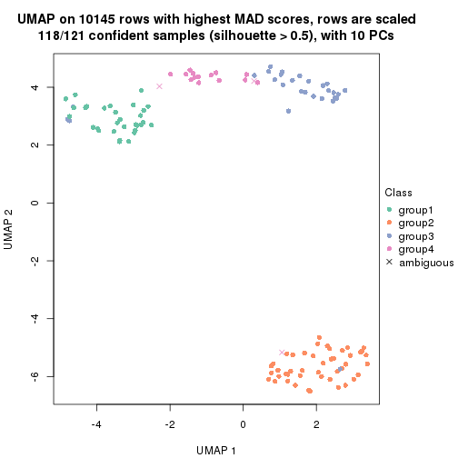
dimension_reduction(res, k = 5, method = "UMAP")
dimension_reduction(res, k = 6, method = "UMAP")
Following heatmap shows how subgroups are split when increasing k:
collect_classes(res)
If matrix rows can be associated to genes, consider to use GO_Enrichment(res,
...) to perform function enrichment for the signature genes.
The object with results only for a single top-value method and a single partition method can be extracted as:
res = res_list["MAD", "pam"]
# you can also extract it by
# res = res_list["MAD:pam"]
A summary of res and all the functions that can be applied to it:
res
#> A 'ConsensusPartition' object with k = 2, 3, 4, 5, 6.
#> On a matrix with 10145 rows and 121 columns.
#> Top rows (1000, 2000, 3000, 4000, 5000) are extracted by 'MAD' method.
#> Subgroups are detected by 'pam' method.
#> Performed in total 1250 partitions by row resampling.
#> Best k for subgroups seems to be 3.
#>
#> Following methods can be applied to this 'ConsensusPartition' object:
#> [1] "cola_report" "collect_classes" "collect_plots"
#> [4] "collect_stats" "colnames" "compare_signatures"
#> [7] "consensus_heatmap" "dimension_reduction" "functional_enrichment"
#> [10] "get_anno_col" "get_anno" "get_classes"
#> [13] "get_consensus" "get_matrix" "get_membership"
#> [16] "get_param" "get_signatures" "get_stats"
#> [19] "is_best_k" "is_stable_k" "membership_heatmap"
#> [22] "ncol" "nrow" "plot_ecdf"
#> [25] "rownames" "select_partition_number" "show"
#> [28] "suggest_best_k" "test_to_known_factors"
collect_plots() function collects all the plots made from res for all k (number of partitions)
into one single page to provide an easy and fast comparison between different k.
collect_plots(res)
The plots are:
k and the heatmap of
predicted classes for each k.k.k.k.All the plots in panels can be made by individual functions and they are plotted later in this section.
select_partition_number() produces several plots showing different
statistics for choosing “optimized” k. There are following statistics:
k;k, the area increased is defined as \(A_k - A_{k-1}\).The detailed explanations of these statistics can be found in the cola vignette.
Generally speaking, lower PAC score, higher mean silhouette score or higher
concordance corresponds to better partition. Rand index and Jaccard index
measure how similar the current partition is compared to partition with k-1.
If they are too similar, we won't accept k is better than k-1.
select_partition_number(res)
The numeric values for all these statistics can be obtained by get_stats().
get_stats(res)
#> k 1-PAC mean_silhouette concordance area_increased Rand Jaccard
#> 2 2 0.983 0.960 0.983 0.48153 0.514 0.514
#> 3 3 0.910 0.929 0.968 0.38612 0.800 0.617
#> 4 4 0.900 0.922 0.959 0.05540 0.964 0.892
#> 5 5 0.965 0.919 0.971 0.01295 0.989 0.962
#> 6 6 0.960 0.891 0.952 0.00856 1.000 1.000
suggest_best_k() suggests the best \(k\) based on these statistics. The rules are as follows:
NA.suggest_best_k(res)
#> [1] 3
#> attr(,"optional")
#> [1] 2
There is also optional best \(k\) = 2 that is worth to check.
Following shows the table of the partitions (You need to click the show/hide
code output link to see it). The membership matrix (columns with name p*)
is inferred by
clue::cl_consensus()
function with the SE method. Basically the value in the membership matrix
represents the probability to belong to a certain group. The finall class
label for an item is determined with the group with highest probability it
belongs to.
In get_classes() function, the entropy is calculated from the membership
matrix and the silhouette score is calculated from the consensus matrix.
cbind(get_classes(res, k = 2), get_membership(res, k = 2))
#> class entropy silhouette p1 p2
#> SRR2431463 1 0.0000 0.995 1.000 0.000
#> SRR2431462 1 0.0000 0.995 1.000 0.000
#> SRR2431461 1 0.0000 0.995 1.000 0.000
#> SRR2431459 1 0.0000 0.995 1.000 0.000
#> SRR2431460 1 0.0000 0.995 1.000 0.000
#> SRR2431458 1 0.0000 0.995 1.000 0.000
#> SRR2431457 1 0.0000 0.995 1.000 0.000
#> SRR2431455 1 0.0000 0.995 1.000 0.000
#> SRR2431456 1 0.0000 0.995 1.000 0.000
#> SRR2431454 1 0.0000 0.995 1.000 0.000
#> SRR2431453 1 0.0000 0.995 1.000 0.000
#> SRR2431451 1 0.0000 0.995 1.000 0.000
#> SRR2431452 1 0.0000 0.995 1.000 0.000
#> SRR2431450 1 0.0000 0.995 1.000 0.000
#> SRR2431449 1 0.0000 0.995 1.000 0.000
#> SRR2431448 1 0.0000 0.995 1.000 0.000
#> SRR2431446 1 0.0000 0.995 1.000 0.000
#> SRR2431447 1 0.0000 0.995 1.000 0.000
#> SRR2431445 1 0.0000 0.995 1.000 0.000
#> SRR2431444 1 0.0000 0.995 1.000 0.000
#> SRR2431443 1 0.0000 0.995 1.000 0.000
#> SRR2431442 1 0.0000 0.995 1.000 0.000
#> SRR2431441 1 0.0000 0.995 1.000 0.000
#> SRR2431440 1 0.8386 0.611 0.732 0.268
#> SRR2431439 1 0.0000 0.995 1.000 0.000
#> SRR2431438 1 0.0000 0.995 1.000 0.000
#> SRR2431437 1 0.0000 0.995 1.000 0.000
#> SRR2431436 1 0.0000 0.995 1.000 0.000
#> SRR2431435 1 0.0000 0.995 1.000 0.000
#> SRR2431434 1 0.0000 0.995 1.000 0.000
#> SRR2431433 1 0.0000 0.995 1.000 0.000
#> SRR2431432 1 0.0000 0.995 1.000 0.000
#> SRR2431431 1 0.2423 0.953 0.960 0.040
#> SRR2431430 1 0.0000 0.995 1.000 0.000
#> SRR2431429 2 0.9988 0.125 0.480 0.520
#> SRR2431428 2 0.0672 0.959 0.008 0.992
#> SRR2431427 2 0.0000 0.965 0.000 1.000
#> SRR2431426 2 0.0000 0.965 0.000 1.000
#> SRR2431425 2 0.0000 0.965 0.000 1.000
#> SRR2431424 2 0.0000 0.965 0.000 1.000
#> SRR2431423 2 0.0000 0.965 0.000 1.000
#> SRR2431422 2 0.0000 0.965 0.000 1.000
#> SRR2431421 2 0.0000 0.965 0.000 1.000
#> SRR2431420 2 0.0000 0.965 0.000 1.000
#> SRR2431419 2 0.0000 0.965 0.000 1.000
#> SRR2431418 2 0.0000 0.965 0.000 1.000
#> SRR2431417 2 0.0000 0.965 0.000 1.000
#> SRR2431416 2 0.0000 0.965 0.000 1.000
#> SRR2431415 2 0.0000 0.965 0.000 1.000
#> SRR2431414 2 0.0000 0.965 0.000 1.000
#> SRR2431413 2 0.7219 0.759 0.200 0.800
#> SRR2431412 2 0.0000 0.965 0.000 1.000
#> SRR2431411 1 0.0000 0.995 1.000 0.000
#> SRR2431409 2 0.0000 0.965 0.000 1.000
#> SRR2431410 1 0.2948 0.941 0.948 0.052
#> SRR2431408 2 0.0000 0.965 0.000 1.000
#> SRR2431407 2 0.0000 0.965 0.000 1.000
#> SRR2431405 2 0.6048 0.823 0.148 0.852
#> SRR2431406 2 0.0000 0.965 0.000 1.000
#> SRR2431404 2 0.0000 0.965 0.000 1.000
#> SRR2431403 2 0.0000 0.965 0.000 1.000
#> SRR2431402 2 0.0000 0.965 0.000 1.000
#> SRR2431401 2 0.0000 0.965 0.000 1.000
#> SRR2431400 2 0.0000 0.965 0.000 1.000
#> SRR2431399 2 0.0000 0.965 0.000 1.000
#> SRR2431398 2 0.0000 0.965 0.000 1.000
#> SRR2431397 2 0.0000 0.965 0.000 1.000
#> SRR2431396 2 0.0000 0.965 0.000 1.000
#> SRR2431395 2 0.0000 0.965 0.000 1.000
#> SRR2431394 2 0.0000 0.965 0.000 1.000
#> SRR2431393 2 0.0000 0.965 0.000 1.000
#> SRR2431392 2 0.0376 0.962 0.004 0.996
#> SRR2431391 2 0.0000 0.965 0.000 1.000
#> SRR2431390 2 0.0000 0.965 0.000 1.000
#> SRR2431389 2 0.0000 0.965 0.000 1.000
#> SRR2431388 2 0.0000 0.965 0.000 1.000
#> SRR2431387 2 0.0000 0.965 0.000 1.000
#> SRR2431386 2 0.0000 0.965 0.000 1.000
#> SRR2431385 2 0.7219 0.759 0.200 0.800
#> SRR2431383 2 0.7745 0.719 0.228 0.772
#> SRR2431384 2 0.0000 0.965 0.000 1.000
#> SRR2431382 2 0.0000 0.965 0.000 1.000
#> SRR2431381 2 0.0000 0.965 0.000 1.000
#> SRR2431380 2 0.0000 0.965 0.000 1.000
#> SRR2431379 1 0.0000 0.995 1.000 0.000
#> SRR2431378 1 0.0000 0.995 1.000 0.000
#> SRR2431376 1 0.0000 0.995 1.000 0.000
#> SRR2431377 1 0.0000 0.995 1.000 0.000
#> SRR2431375 1 0.0000 0.995 1.000 0.000
#> SRR2431374 1 0.0000 0.995 1.000 0.000
#> SRR2431372 1 0.0000 0.995 1.000 0.000
#> SRR2431371 1 0.0000 0.995 1.000 0.000
#> SRR2431373 1 0.0000 0.995 1.000 0.000
#> SRR2431370 1 0.0000 0.995 1.000 0.000
#> SRR2431369 1 0.0000 0.995 1.000 0.000
#> SRR2431368 1 0.0000 0.995 1.000 0.000
#> SRR2431367 1 0.0000 0.995 1.000 0.000
#> SRR2431366 1 0.0000 0.995 1.000 0.000
#> SRR2431365 1 0.0000 0.995 1.000 0.000
#> SRR2431364 1 0.0000 0.995 1.000 0.000
#> SRR2431363 1 0.0000 0.995 1.000 0.000
#> SRR2431361 1 0.0000 0.995 1.000 0.000
#> SRR2431362 1 0.0000 0.995 1.000 0.000
#> SRR2431360 1 0.0000 0.995 1.000 0.000
#> SRR2431359 1 0.0000 0.995 1.000 0.000
#> SRR2431358 1 0.0000 0.995 1.000 0.000
#> SRR2431357 1 0.0000 0.995 1.000 0.000
#> SRR2431355 1 0.0000 0.995 1.000 0.000
#> SRR2431356 1 0.0000 0.995 1.000 0.000
#> SRR2431354 1 0.0000 0.995 1.000 0.000
#> SRR2431353 1 0.0000 0.995 1.000 0.000
#> SRR2431352 1 0.0000 0.995 1.000 0.000
#> SRR2431351 1 0.0000 0.995 1.000 0.000
#> SRR2431350 1 0.0000 0.995 1.000 0.000
#> SRR2431349 1 0.0000 0.995 1.000 0.000
#> SRR2431348 1 0.0000 0.995 1.000 0.000
#> SRR2431347 1 0.0000 0.995 1.000 0.000
#> SRR2431346 1 0.0000 0.995 1.000 0.000
#> SRR2431345 1 0.0000 0.995 1.000 0.000
#> SRR2431344 1 0.0000 0.995 1.000 0.000
#> SRR2431343 2 0.9608 0.394 0.384 0.616
cbind(get_classes(res, k = 3), get_membership(res, k = 3))
#> class entropy silhouette p1 p2 p3
#> SRR2431463 1 0.0000 0.985 1.000 0.000 0.000
#> SRR2431462 1 0.0000 0.985 1.000 0.000 0.000
#> SRR2431461 1 0.0000 0.985 1.000 0.000 0.000
#> SRR2431459 1 0.0000 0.985 1.000 0.000 0.000
#> SRR2431460 1 0.0000 0.985 1.000 0.000 0.000
#> SRR2431458 1 0.0000 0.985 1.000 0.000 0.000
#> SRR2431457 1 0.0000 0.985 1.000 0.000 0.000
#> SRR2431455 1 0.0000 0.985 1.000 0.000 0.000
#> SRR2431456 1 0.0000 0.985 1.000 0.000 0.000
#> SRR2431454 1 0.0000 0.985 1.000 0.000 0.000
#> SRR2431453 1 0.0000 0.985 1.000 0.000 0.000
#> SRR2431451 1 0.0000 0.985 1.000 0.000 0.000
#> SRR2431452 1 0.4974 0.666 0.764 0.000 0.236
#> SRR2431450 1 0.1529 0.948 0.960 0.000 0.040
#> SRR2431449 1 0.0000 0.985 1.000 0.000 0.000
#> SRR2431448 1 0.0000 0.985 1.000 0.000 0.000
#> SRR2431446 1 0.0000 0.985 1.000 0.000 0.000
#> SRR2431447 1 0.0000 0.985 1.000 0.000 0.000
#> SRR2431445 1 0.0000 0.985 1.000 0.000 0.000
#> SRR2431444 1 0.1860 0.936 0.948 0.000 0.052
#> SRR2431443 1 0.1411 0.952 0.964 0.000 0.036
#> SRR2431442 1 0.0000 0.985 1.000 0.000 0.000
#> SRR2431441 1 0.0000 0.985 1.000 0.000 0.000
#> SRR2431440 1 0.0000 0.985 1.000 0.000 0.000
#> SRR2431439 1 0.0237 0.982 0.996 0.000 0.004
#> SRR2431438 1 0.0000 0.985 1.000 0.000 0.000
#> SRR2431437 1 0.0000 0.985 1.000 0.000 0.000
#> SRR2431436 1 0.0000 0.985 1.000 0.000 0.000
#> SRR2431435 1 0.0000 0.985 1.000 0.000 0.000
#> SRR2431434 1 0.0000 0.985 1.000 0.000 0.000
#> SRR2431433 1 0.0000 0.985 1.000 0.000 0.000
#> SRR2431432 1 0.0000 0.985 1.000 0.000 0.000
#> SRR2431431 1 0.0000 0.985 1.000 0.000 0.000
#> SRR2431430 1 0.0000 0.985 1.000 0.000 0.000
#> SRR2431429 1 0.0000 0.985 1.000 0.000 0.000
#> SRR2431428 2 0.0592 0.956 0.012 0.988 0.000
#> SRR2431427 2 0.0000 0.967 0.000 1.000 0.000
#> SRR2431426 2 0.0000 0.967 0.000 1.000 0.000
#> SRR2431425 2 0.0000 0.967 0.000 1.000 0.000
#> SRR2431424 2 0.0000 0.967 0.000 1.000 0.000
#> SRR2431423 2 0.0000 0.967 0.000 1.000 0.000
#> SRR2431422 2 0.0000 0.967 0.000 1.000 0.000
#> SRR2431421 2 0.0000 0.967 0.000 1.000 0.000
#> SRR2431420 2 0.0000 0.967 0.000 1.000 0.000
#> SRR2431419 2 0.0000 0.967 0.000 1.000 0.000
#> SRR2431418 2 0.0000 0.967 0.000 1.000 0.000
#> SRR2431417 2 0.0000 0.967 0.000 1.000 0.000
#> SRR2431416 2 0.0000 0.967 0.000 1.000 0.000
#> SRR2431415 2 0.0000 0.967 0.000 1.000 0.000
#> SRR2431414 2 0.0000 0.967 0.000 1.000 0.000
#> SRR2431413 1 0.3116 0.867 0.892 0.108 0.000
#> SRR2431412 2 0.0000 0.967 0.000 1.000 0.000
#> SRR2431411 3 0.6095 0.345 0.392 0.000 0.608
#> SRR2431409 2 0.0000 0.967 0.000 1.000 0.000
#> SRR2431410 3 0.5791 0.798 0.148 0.060 0.792
#> SRR2431408 2 0.0000 0.967 0.000 1.000 0.000
#> SRR2431407 2 0.0000 0.967 0.000 1.000 0.000
#> SRR2431405 2 0.5216 0.642 0.260 0.740 0.000
#> SRR2431406 2 0.0000 0.967 0.000 1.000 0.000
#> SRR2431404 2 0.0000 0.967 0.000 1.000 0.000
#> SRR2431403 2 0.0000 0.967 0.000 1.000 0.000
#> SRR2431402 2 0.0000 0.967 0.000 1.000 0.000
#> SRR2431401 2 0.0000 0.967 0.000 1.000 0.000
#> SRR2431400 2 0.0000 0.967 0.000 1.000 0.000
#> SRR2431399 2 0.0000 0.967 0.000 1.000 0.000
#> SRR2431398 2 0.0000 0.967 0.000 1.000 0.000
#> SRR2431397 2 0.0000 0.967 0.000 1.000 0.000
#> SRR2431396 2 0.0237 0.963 0.000 0.996 0.004
#> SRR2431395 2 0.0000 0.967 0.000 1.000 0.000
#> SRR2431394 2 0.0000 0.967 0.000 1.000 0.000
#> SRR2431393 2 0.0000 0.967 0.000 1.000 0.000
#> SRR2431392 2 0.0237 0.963 0.004 0.996 0.000
#> SRR2431391 2 0.0000 0.967 0.000 1.000 0.000
#> SRR2431390 2 0.0000 0.967 0.000 1.000 0.000
#> SRR2431389 2 0.0000 0.967 0.000 1.000 0.000
#> SRR2431388 2 0.0000 0.967 0.000 1.000 0.000
#> SRR2431387 2 0.0000 0.967 0.000 1.000 0.000
#> SRR2431386 2 0.0000 0.967 0.000 1.000 0.000
#> SRR2431385 2 0.6154 0.324 0.408 0.592 0.000
#> SRR2431383 2 0.6192 0.290 0.420 0.580 0.000
#> SRR2431384 2 0.0000 0.967 0.000 1.000 0.000
#> SRR2431382 2 0.0000 0.967 0.000 1.000 0.000
#> SRR2431381 2 0.0000 0.967 0.000 1.000 0.000
#> SRR2431380 2 0.0000 0.967 0.000 1.000 0.000
#> SRR2431379 3 0.0000 0.947 0.000 0.000 1.000
#> SRR2431378 3 0.0000 0.947 0.000 0.000 1.000
#> SRR2431376 3 0.0000 0.947 0.000 0.000 1.000
#> SRR2431377 3 0.0000 0.947 0.000 0.000 1.000
#> SRR2431375 3 0.0000 0.947 0.000 0.000 1.000
#> SRR2431374 3 0.4346 0.804 0.184 0.000 0.816
#> SRR2431372 3 0.0000 0.947 0.000 0.000 1.000
#> SRR2431371 3 0.0000 0.947 0.000 0.000 1.000
#> SRR2431373 3 0.0000 0.947 0.000 0.000 1.000
#> SRR2431370 3 0.0000 0.947 0.000 0.000 1.000
#> SRR2431369 3 0.0000 0.947 0.000 0.000 1.000
#> SRR2431368 3 0.0000 0.947 0.000 0.000 1.000
#> SRR2431367 3 0.0000 0.947 0.000 0.000 1.000
#> SRR2431366 3 0.0000 0.947 0.000 0.000 1.000
#> SRR2431365 3 0.0000 0.947 0.000 0.000 1.000
#> SRR2431364 3 0.0000 0.947 0.000 0.000 1.000
#> SRR2431363 3 0.0747 0.937 0.016 0.000 0.984
#> SRR2431361 3 0.0000 0.947 0.000 0.000 1.000
#> SRR2431362 3 0.0000 0.947 0.000 0.000 1.000
#> SRR2431360 3 0.0000 0.947 0.000 0.000 1.000
#> SRR2431359 3 0.0000 0.947 0.000 0.000 1.000
#> SRR2431358 3 0.4346 0.804 0.184 0.000 0.816
#> SRR2431357 3 0.4291 0.808 0.180 0.000 0.820
#> SRR2431355 3 0.4178 0.816 0.172 0.000 0.828
#> SRR2431356 3 0.0000 0.947 0.000 0.000 1.000
#> SRR2431354 3 0.0000 0.947 0.000 0.000 1.000
#> SRR2431353 3 0.3816 0.839 0.148 0.000 0.852
#> SRR2431352 3 0.4291 0.808 0.180 0.000 0.820
#> SRR2431351 3 0.0000 0.947 0.000 0.000 1.000
#> SRR2431350 3 0.0000 0.947 0.000 0.000 1.000
#> SRR2431349 3 0.0000 0.947 0.000 0.000 1.000
#> SRR2431348 3 0.0000 0.947 0.000 0.000 1.000
#> SRR2431347 3 0.0000 0.947 0.000 0.000 1.000
#> SRR2431346 3 0.0000 0.947 0.000 0.000 1.000
#> SRR2431345 3 0.0000 0.947 0.000 0.000 1.000
#> SRR2431344 3 0.4346 0.804 0.184 0.000 0.816
#> SRR2431343 2 0.6045 0.370 0.000 0.620 0.380
cbind(get_classes(res, k = 4), get_membership(res, k = 4))
#> class entropy silhouette p1 p2 p3 p4
#> SRR2431463 1 0.0000 0.979 1.000 0.000 0.000 0.000
#> SRR2431462 1 0.0000 0.979 1.000 0.000 0.000 0.000
#> SRR2431461 1 0.0000 0.979 1.000 0.000 0.000 0.000
#> SRR2431459 1 0.0000 0.979 1.000 0.000 0.000 0.000
#> SRR2431460 1 0.0000 0.979 1.000 0.000 0.000 0.000
#> SRR2431458 1 0.0000 0.979 1.000 0.000 0.000 0.000
#> SRR2431457 1 0.0000 0.979 1.000 0.000 0.000 0.000
#> SRR2431455 1 0.0000 0.979 1.000 0.000 0.000 0.000
#> SRR2431456 1 0.0000 0.979 1.000 0.000 0.000 0.000
#> SRR2431454 1 0.0000 0.979 1.000 0.000 0.000 0.000
#> SRR2431453 1 0.0000 0.979 1.000 0.000 0.000 0.000
#> SRR2431451 1 0.0000 0.979 1.000 0.000 0.000 0.000
#> SRR2431452 1 0.3942 0.668 0.764 0.000 0.236 0.000
#> SRR2431450 1 0.1211 0.940 0.960 0.000 0.040 0.000
#> SRR2431449 1 0.0000 0.979 1.000 0.000 0.000 0.000
#> SRR2431448 1 0.0000 0.979 1.000 0.000 0.000 0.000
#> SRR2431446 1 0.0000 0.979 1.000 0.000 0.000 0.000
#> SRR2431447 1 0.0000 0.979 1.000 0.000 0.000 0.000
#> SRR2431445 1 0.0000 0.979 1.000 0.000 0.000 0.000
#> SRR2431444 1 0.1474 0.927 0.948 0.000 0.052 0.000
#> SRR2431443 1 0.1211 0.941 0.960 0.000 0.040 0.000
#> SRR2431442 1 0.0000 0.979 1.000 0.000 0.000 0.000
#> SRR2431441 1 0.0000 0.979 1.000 0.000 0.000 0.000
#> SRR2431440 1 0.0000 0.979 1.000 0.000 0.000 0.000
#> SRR2431439 1 0.0188 0.976 0.996 0.000 0.004 0.000
#> SRR2431438 1 0.0000 0.979 1.000 0.000 0.000 0.000
#> SRR2431437 1 0.0000 0.979 1.000 0.000 0.000 0.000
#> SRR2431436 1 0.0000 0.979 1.000 0.000 0.000 0.000
#> SRR2431435 1 0.0000 0.979 1.000 0.000 0.000 0.000
#> SRR2431434 1 0.0000 0.979 1.000 0.000 0.000 0.000
#> SRR2431433 1 0.0000 0.979 1.000 0.000 0.000 0.000
#> SRR2431432 1 0.0000 0.979 1.000 0.000 0.000 0.000
#> SRR2431431 1 0.0469 0.969 0.988 0.000 0.012 0.000
#> SRR2431430 1 0.0000 0.979 1.000 0.000 0.000 0.000
#> SRR2431429 1 0.0000 0.979 1.000 0.000 0.000 0.000
#> SRR2431428 2 0.0469 0.951 0.012 0.988 0.000 0.000
#> SRR2431427 2 0.0000 0.963 0.000 1.000 0.000 0.000
#> SRR2431426 2 0.0000 0.963 0.000 1.000 0.000 0.000
#> SRR2431425 2 0.0000 0.963 0.000 1.000 0.000 0.000
#> SRR2431424 2 0.0000 0.963 0.000 1.000 0.000 0.000
#> SRR2431423 2 0.0000 0.963 0.000 1.000 0.000 0.000
#> SRR2431422 2 0.0000 0.963 0.000 1.000 0.000 0.000
#> SRR2431421 2 0.0000 0.963 0.000 1.000 0.000 0.000
#> SRR2431420 2 0.0000 0.963 0.000 1.000 0.000 0.000
#> SRR2431419 2 0.0000 0.963 0.000 1.000 0.000 0.000
#> SRR2431418 2 0.0000 0.963 0.000 1.000 0.000 0.000
#> SRR2431417 2 0.0000 0.963 0.000 1.000 0.000 0.000
#> SRR2431416 2 0.0000 0.963 0.000 1.000 0.000 0.000
#> SRR2431415 2 0.0000 0.963 0.000 1.000 0.000 0.000
#> SRR2431414 2 0.0000 0.963 0.000 1.000 0.000 0.000
#> SRR2431413 1 0.5361 0.675 0.744 0.108 0.000 0.148
#> SRR2431412 2 0.0000 0.963 0.000 1.000 0.000 0.000
#> SRR2431411 4 0.0000 0.842 0.000 0.000 0.000 1.000
#> SRR2431409 2 0.0000 0.963 0.000 1.000 0.000 0.000
#> SRR2431410 3 0.3984 0.795 0.132 0.040 0.828 0.000
#> SRR2431408 2 0.0000 0.963 0.000 1.000 0.000 0.000
#> SRR2431407 2 0.0000 0.963 0.000 1.000 0.000 0.000
#> SRR2431405 2 0.5770 0.639 0.140 0.712 0.000 0.148
#> SRR2431406 2 0.0000 0.963 0.000 1.000 0.000 0.000
#> SRR2431404 2 0.0000 0.963 0.000 1.000 0.000 0.000
#> SRR2431403 2 0.0000 0.963 0.000 1.000 0.000 0.000
#> SRR2431402 2 0.0000 0.963 0.000 1.000 0.000 0.000
#> SRR2431401 2 0.0000 0.963 0.000 1.000 0.000 0.000
#> SRR2431400 2 0.0000 0.963 0.000 1.000 0.000 0.000
#> SRR2431399 2 0.0000 0.963 0.000 1.000 0.000 0.000
#> SRR2431398 2 0.0000 0.963 0.000 1.000 0.000 0.000
#> SRR2431397 2 0.0000 0.963 0.000 1.000 0.000 0.000
#> SRR2431396 2 0.0376 0.957 0.000 0.992 0.004 0.004
#> SRR2431395 2 0.0000 0.963 0.000 1.000 0.000 0.000
#> SRR2431394 2 0.0000 0.963 0.000 1.000 0.000 0.000
#> SRR2431393 2 0.0000 0.963 0.000 1.000 0.000 0.000
#> SRR2431392 2 0.0188 0.959 0.004 0.996 0.000 0.000
#> SRR2431391 2 0.0000 0.963 0.000 1.000 0.000 0.000
#> SRR2431390 2 0.0000 0.963 0.000 1.000 0.000 0.000
#> SRR2431389 2 0.0000 0.963 0.000 1.000 0.000 0.000
#> SRR2431388 2 0.0000 0.963 0.000 1.000 0.000 0.000
#> SRR2431387 2 0.0000 0.963 0.000 1.000 0.000 0.000
#> SRR2431386 2 0.0000 0.963 0.000 1.000 0.000 0.000
#> SRR2431385 2 0.6805 0.437 0.260 0.592 0.000 0.148
#> SRR2431383 2 0.7279 0.389 0.288 0.568 0.016 0.128
#> SRR2431384 2 0.0000 0.963 0.000 1.000 0.000 0.000
#> SRR2431382 2 0.0000 0.963 0.000 1.000 0.000 0.000
#> SRR2431381 2 0.0000 0.963 0.000 1.000 0.000 0.000
#> SRR2431380 2 0.0000 0.963 0.000 1.000 0.000 0.000
#> SRR2431379 3 0.0921 0.897 0.000 0.000 0.972 0.028
#> SRR2431378 3 0.0000 0.915 0.000 0.000 1.000 0.000
#> SRR2431376 3 0.0000 0.915 0.000 0.000 1.000 0.000
#> SRR2431377 3 0.0000 0.915 0.000 0.000 1.000 0.000
#> SRR2431375 4 0.2973 0.975 0.000 0.000 0.144 0.856
#> SRR2431374 3 0.3024 0.811 0.148 0.000 0.852 0.000
#> SRR2431372 3 0.0921 0.897 0.000 0.000 0.972 0.028
#> SRR2431371 3 0.0000 0.915 0.000 0.000 1.000 0.000
#> SRR2431373 3 0.3610 0.681 0.000 0.000 0.800 0.200
#> SRR2431370 3 0.0000 0.915 0.000 0.000 1.000 0.000
#> SRR2431369 3 0.0000 0.915 0.000 0.000 1.000 0.000
#> SRR2431368 3 0.1302 0.884 0.000 0.000 0.956 0.044
#> SRR2431367 3 0.0000 0.915 0.000 0.000 1.000 0.000
#> SRR2431366 3 0.0000 0.915 0.000 0.000 1.000 0.000
#> SRR2431365 3 0.0000 0.915 0.000 0.000 1.000 0.000
#> SRR2431364 4 0.3024 0.978 0.000 0.000 0.148 0.852
#> SRR2431363 4 0.3024 0.978 0.000 0.000 0.148 0.852
#> SRR2431361 3 0.0000 0.915 0.000 0.000 1.000 0.000
#> SRR2431362 3 0.3074 0.758 0.000 0.000 0.848 0.152
#> SRR2431360 4 0.3024 0.978 0.000 0.000 0.148 0.852
#> SRR2431359 3 0.0000 0.915 0.000 0.000 1.000 0.000
#> SRR2431358 3 0.3024 0.811 0.148 0.000 0.852 0.000
#> SRR2431357 3 0.3024 0.811 0.148 0.000 0.852 0.000
#> SRR2431355 3 0.2973 0.815 0.144 0.000 0.856 0.000
#> SRR2431356 3 0.0000 0.915 0.000 0.000 1.000 0.000
#> SRR2431354 4 0.3024 0.978 0.000 0.000 0.148 0.852
#> SRR2431353 3 0.2647 0.835 0.120 0.000 0.880 0.000
#> SRR2431352 3 0.2973 0.815 0.144 0.000 0.856 0.000
#> SRR2431351 4 0.3024 0.978 0.000 0.000 0.148 0.852
#> SRR2431350 3 0.0000 0.915 0.000 0.000 1.000 0.000
#> SRR2431349 4 0.3024 0.978 0.000 0.000 0.148 0.852
#> SRR2431348 3 0.0000 0.915 0.000 0.000 1.000 0.000
#> SRR2431347 3 0.0000 0.915 0.000 0.000 1.000 0.000
#> SRR2431346 3 0.0000 0.915 0.000 0.000 1.000 0.000
#> SRR2431345 4 0.3024 0.978 0.000 0.000 0.148 0.852
#> SRR2431344 3 0.3024 0.811 0.148 0.000 0.852 0.000
#> SRR2431343 2 0.4898 0.284 0.000 0.584 0.416 0.000
cbind(get_classes(res, k = 5), get_membership(res, k = 5))
#> class entropy silhouette p1 p2 p3 p4 p5
#> SRR2431463 1 0.0000 0.974 1.000 0.000 0.000 0.000 0.000
#> SRR2431462 1 0.0000 0.974 1.000 0.000 0.000 0.000 0.000
#> SRR2431461 1 0.0000 0.974 1.000 0.000 0.000 0.000 0.000
#> SRR2431459 1 0.0000 0.974 1.000 0.000 0.000 0.000 0.000
#> SRR2431460 1 0.0000 0.974 1.000 0.000 0.000 0.000 0.000
#> SRR2431458 1 0.0000 0.974 1.000 0.000 0.000 0.000 0.000
#> SRR2431457 1 0.0000 0.974 1.000 0.000 0.000 0.000 0.000
#> SRR2431455 1 0.0000 0.974 1.000 0.000 0.000 0.000 0.000
#> SRR2431456 1 0.0000 0.974 1.000 0.000 0.000 0.000 0.000
#> SRR2431454 1 0.0000 0.974 1.000 0.000 0.000 0.000 0.000
#> SRR2431453 1 0.0000 0.974 1.000 0.000 0.000 0.000 0.000
#> SRR2431451 1 0.0000 0.974 1.000 0.000 0.000 0.000 0.000
#> SRR2431452 1 0.3395 0.619 0.764 0.000 0.000 0.236 0.000
#> SRR2431450 1 0.1043 0.932 0.960 0.000 0.000 0.040 0.000
#> SRR2431449 1 0.0000 0.974 1.000 0.000 0.000 0.000 0.000
#> SRR2431448 1 0.0000 0.974 1.000 0.000 0.000 0.000 0.000
#> SRR2431446 1 0.0000 0.974 1.000 0.000 0.000 0.000 0.000
#> SRR2431447 1 0.0000 0.974 1.000 0.000 0.000 0.000 0.000
#> SRR2431445 1 0.0000 0.974 1.000 0.000 0.000 0.000 0.000
#> SRR2431444 1 0.1270 0.917 0.948 0.000 0.000 0.052 0.000
#> SRR2431443 1 0.1197 0.923 0.952 0.000 0.000 0.048 0.000
#> SRR2431442 1 0.0000 0.974 1.000 0.000 0.000 0.000 0.000
#> SRR2431441 1 0.0000 0.974 1.000 0.000 0.000 0.000 0.000
#> SRR2431440 1 0.0000 0.974 1.000 0.000 0.000 0.000 0.000
#> SRR2431439 1 0.0162 0.971 0.996 0.000 0.000 0.004 0.000
#> SRR2431438 1 0.0000 0.974 1.000 0.000 0.000 0.000 0.000
#> SRR2431437 1 0.0000 0.974 1.000 0.000 0.000 0.000 0.000
#> SRR2431436 1 0.0000 0.974 1.000 0.000 0.000 0.000 0.000
#> SRR2431435 1 0.0000 0.974 1.000 0.000 0.000 0.000 0.000
#> SRR2431434 1 0.0000 0.974 1.000 0.000 0.000 0.000 0.000
#> SRR2431433 1 0.0000 0.974 1.000 0.000 0.000 0.000 0.000
#> SRR2431432 1 0.0000 0.974 1.000 0.000 0.000 0.000 0.000
#> SRR2431431 1 0.0880 0.944 0.968 0.000 0.000 0.032 0.000
#> SRR2431430 1 0.0000 0.974 1.000 0.000 0.000 0.000 0.000
#> SRR2431429 1 0.0000 0.974 1.000 0.000 0.000 0.000 0.000
#> SRR2431428 2 0.0451 0.960 0.008 0.988 0.004 0.000 0.000
#> SRR2431427 2 0.0000 0.971 0.000 1.000 0.000 0.000 0.000
#> SRR2431426 2 0.0000 0.971 0.000 1.000 0.000 0.000 0.000
#> SRR2431425 2 0.0000 0.971 0.000 1.000 0.000 0.000 0.000
#> SRR2431424 2 0.0000 0.971 0.000 1.000 0.000 0.000 0.000
#> SRR2431423 2 0.0000 0.971 0.000 1.000 0.000 0.000 0.000
#> SRR2431422 2 0.0000 0.971 0.000 1.000 0.000 0.000 0.000
#> SRR2431421 2 0.0000 0.971 0.000 1.000 0.000 0.000 0.000
#> SRR2431420 2 0.0000 0.971 0.000 1.000 0.000 0.000 0.000
#> SRR2431419 2 0.0000 0.971 0.000 1.000 0.000 0.000 0.000
#> SRR2431418 2 0.0000 0.971 0.000 1.000 0.000 0.000 0.000
#> SRR2431417 2 0.0000 0.971 0.000 1.000 0.000 0.000 0.000
#> SRR2431416 2 0.0000 0.971 0.000 1.000 0.000 0.000 0.000
#> SRR2431415 2 0.0000 0.971 0.000 1.000 0.000 0.000 0.000
#> SRR2431414 2 0.0000 0.971 0.000 1.000 0.000 0.000 0.000
#> SRR2431413 1 0.5076 0.532 0.692 0.108 0.000 0.000 0.200
#> SRR2431412 2 0.0000 0.971 0.000 1.000 0.000 0.000 0.000
#> SRR2431411 5 0.0000 0.000 0.000 0.000 0.000 0.000 1.000
#> SRR2431409 2 0.0000 0.971 0.000 1.000 0.000 0.000 0.000
#> SRR2431410 4 0.0865 0.909 0.004 0.024 0.000 0.972 0.000
#> SRR2431408 2 0.0000 0.971 0.000 1.000 0.000 0.000 0.000
#> SRR2431407 2 0.0000 0.971 0.000 1.000 0.000 0.000 0.000
#> SRR2431405 2 0.5030 0.564 0.104 0.696 0.000 0.000 0.200
#> SRR2431406 2 0.0000 0.971 0.000 1.000 0.000 0.000 0.000
#> SRR2431404 2 0.0000 0.971 0.000 1.000 0.000 0.000 0.000
#> SRR2431403 2 0.0000 0.971 0.000 1.000 0.000 0.000 0.000
#> SRR2431402 2 0.0000 0.971 0.000 1.000 0.000 0.000 0.000
#> SRR2431401 2 0.0000 0.971 0.000 1.000 0.000 0.000 0.000
#> SRR2431400 2 0.0000 0.971 0.000 1.000 0.000 0.000 0.000
#> SRR2431399 2 0.0000 0.971 0.000 1.000 0.000 0.000 0.000
#> SRR2431398 2 0.0000 0.971 0.000 1.000 0.000 0.000 0.000
#> SRR2431397 2 0.0000 0.971 0.000 1.000 0.000 0.000 0.000
#> SRR2431396 2 0.0324 0.964 0.000 0.992 0.000 0.004 0.004
#> SRR2431395 2 0.0000 0.971 0.000 1.000 0.000 0.000 0.000
#> SRR2431394 2 0.0000 0.971 0.000 1.000 0.000 0.000 0.000
#> SRR2431393 2 0.0000 0.971 0.000 1.000 0.000 0.000 0.000
#> SRR2431392 2 0.0162 0.967 0.004 0.996 0.000 0.000 0.000
#> SRR2431391 2 0.0000 0.971 0.000 1.000 0.000 0.000 0.000
#> SRR2431390 2 0.0000 0.971 0.000 1.000 0.000 0.000 0.000
#> SRR2431389 2 0.0000 0.971 0.000 1.000 0.000 0.000 0.000
#> SRR2431388 2 0.0000 0.971 0.000 1.000 0.000 0.000 0.000
#> SRR2431387 2 0.0000 0.971 0.000 1.000 0.000 0.000 0.000
#> SRR2431386 2 0.0000 0.971 0.000 1.000 0.000 0.000 0.000
#> SRR2431385 2 0.5958 0.333 0.208 0.592 0.000 0.000 0.200
#> SRR2431383 2 0.6063 0.266 0.256 0.568 0.000 0.000 0.176
#> SRR2431384 2 0.0000 0.971 0.000 1.000 0.000 0.000 0.000
#> SRR2431382 2 0.0000 0.971 0.000 1.000 0.000 0.000 0.000
#> SRR2431381 2 0.0000 0.971 0.000 1.000 0.000 0.000 0.000
#> SRR2431380 2 0.0000 0.971 0.000 1.000 0.000 0.000 0.000
#> SRR2431379 4 0.2020 0.861 0.000 0.000 0.100 0.900 0.000
#> SRR2431378 4 0.0000 0.934 0.000 0.000 0.000 1.000 0.000
#> SRR2431376 4 0.0000 0.934 0.000 0.000 0.000 1.000 0.000
#> SRR2431377 4 0.0290 0.935 0.000 0.000 0.008 0.992 0.000
#> SRR2431375 3 0.0162 1.000 0.000 0.000 0.996 0.004 0.000
#> SRR2431374 4 0.0162 0.933 0.000 0.000 0.004 0.996 0.000
#> SRR2431372 4 0.1544 0.891 0.000 0.000 0.068 0.932 0.000
#> SRR2431371 4 0.0290 0.935 0.000 0.000 0.008 0.992 0.000
#> SRR2431373 4 0.3983 0.522 0.000 0.000 0.340 0.660 0.000
#> SRR2431370 4 0.0290 0.935 0.000 0.000 0.008 0.992 0.000
#> SRR2431369 4 0.0000 0.934 0.000 0.000 0.000 1.000 0.000
#> SRR2431368 4 0.2690 0.800 0.000 0.000 0.156 0.844 0.000
#> SRR2431367 4 0.0290 0.935 0.000 0.000 0.008 0.992 0.000
#> SRR2431366 4 0.0000 0.934 0.000 0.000 0.000 1.000 0.000
#> SRR2431365 4 0.0162 0.933 0.000 0.000 0.004 0.996 0.000
#> SRR2431364 3 0.0162 1.000 0.000 0.000 0.996 0.004 0.000
#> SRR2431363 3 0.0162 1.000 0.000 0.000 0.996 0.004 0.000
#> SRR2431361 4 0.0290 0.935 0.000 0.000 0.008 0.992 0.000
#> SRR2431362 4 0.3612 0.645 0.000 0.000 0.268 0.732 0.000
#> SRR2431360 3 0.0162 1.000 0.000 0.000 0.996 0.004 0.000
#> SRR2431359 4 0.0290 0.935 0.000 0.000 0.008 0.992 0.000
#> SRR2431358 4 0.0162 0.933 0.000 0.000 0.004 0.996 0.000
#> SRR2431357 4 0.0162 0.933 0.000 0.000 0.004 0.996 0.000
#> SRR2431355 4 0.0162 0.933 0.000 0.000 0.004 0.996 0.000
#> SRR2431356 4 0.0290 0.935 0.000 0.000 0.008 0.992 0.000
#> SRR2431354 3 0.0162 1.000 0.000 0.000 0.996 0.004 0.000
#> SRR2431353 4 0.0162 0.933 0.000 0.000 0.004 0.996 0.000
#> SRR2431352 4 0.0162 0.933 0.000 0.000 0.004 0.996 0.000
#> SRR2431351 3 0.0162 1.000 0.000 0.000 0.996 0.004 0.000
#> SRR2431350 4 0.0290 0.935 0.000 0.000 0.008 0.992 0.000
#> SRR2431349 3 0.0162 1.000 0.000 0.000 0.996 0.004 0.000
#> SRR2431348 4 0.0290 0.935 0.000 0.000 0.008 0.992 0.000
#> SRR2431347 4 0.0290 0.935 0.000 0.000 0.008 0.992 0.000
#> SRR2431346 4 0.0290 0.935 0.000 0.000 0.008 0.992 0.000
#> SRR2431345 3 0.0162 1.000 0.000 0.000 0.996 0.004 0.000
#> SRR2431344 4 0.0290 0.930 0.008 0.000 0.000 0.992 0.000
#> SRR2431343 4 0.4403 0.130 0.000 0.436 0.004 0.560 0.000
cbind(get_classes(res, k = 6), get_membership(res, k = 6))
#> class entropy silhouette p1 p2 p3 p4 p5 p6
#> SRR2431463 1 0.0000 0.967 1.000 0.000 0.000 0.000 0.000 NA
#> SRR2431462 1 0.0000 0.967 1.000 0.000 0.000 0.000 0.000 NA
#> SRR2431461 1 0.0000 0.967 1.000 0.000 0.000 0.000 0.000 NA
#> SRR2431459 1 0.0000 0.967 1.000 0.000 0.000 0.000 0.000 NA
#> SRR2431460 1 0.0000 0.967 1.000 0.000 0.000 0.000 0.000 NA
#> SRR2431458 1 0.0000 0.967 1.000 0.000 0.000 0.000 0.000 NA
#> SRR2431457 1 0.0000 0.967 1.000 0.000 0.000 0.000 0.000 NA
#> SRR2431455 1 0.0000 0.967 1.000 0.000 0.000 0.000 0.000 NA
#> SRR2431456 1 0.0000 0.967 1.000 0.000 0.000 0.000 0.000 NA
#> SRR2431454 1 0.0000 0.967 1.000 0.000 0.000 0.000 0.000 NA
#> SRR2431453 1 0.0000 0.967 1.000 0.000 0.000 0.000 0.000 NA
#> SRR2431451 1 0.0000 0.967 1.000 0.000 0.000 0.000 0.000 NA
#> SRR2431452 1 0.3050 0.618 0.764 0.000 0.000 0.236 0.000 NA
#> SRR2431450 1 0.0937 0.926 0.960 0.000 0.000 0.040 0.000 NA
#> SRR2431449 1 0.0000 0.967 1.000 0.000 0.000 0.000 0.000 NA
#> SRR2431448 1 0.0000 0.967 1.000 0.000 0.000 0.000 0.000 NA
#> SRR2431446 1 0.0000 0.967 1.000 0.000 0.000 0.000 0.000 NA
#> SRR2431447 1 0.0000 0.967 1.000 0.000 0.000 0.000 0.000 NA
#> SRR2431445 1 0.0000 0.967 1.000 0.000 0.000 0.000 0.000 NA
#> SRR2431444 1 0.3123 0.785 0.824 0.000 0.000 0.040 0.000 NA
#> SRR2431443 1 0.1075 0.917 0.952 0.000 0.000 0.048 0.000 NA
#> SRR2431442 1 0.0000 0.967 1.000 0.000 0.000 0.000 0.000 NA
#> SRR2431441 1 0.0000 0.967 1.000 0.000 0.000 0.000 0.000 NA
#> SRR2431440 1 0.0000 0.967 1.000 0.000 0.000 0.000 0.000 NA
#> SRR2431439 1 0.0146 0.964 0.996 0.000 0.000 0.004 0.000 NA
#> SRR2431438 1 0.0000 0.967 1.000 0.000 0.000 0.000 0.000 NA
#> SRR2431437 1 0.0000 0.967 1.000 0.000 0.000 0.000 0.000 NA
#> SRR2431436 1 0.0000 0.967 1.000 0.000 0.000 0.000 0.000 NA
#> SRR2431435 1 0.0000 0.967 1.000 0.000 0.000 0.000 0.000 NA
#> SRR2431434 1 0.0000 0.967 1.000 0.000 0.000 0.000 0.000 NA
#> SRR2431433 1 0.0000 0.967 1.000 0.000 0.000 0.000 0.000 NA
#> SRR2431432 1 0.0000 0.967 1.000 0.000 0.000 0.000 0.000 NA
#> SRR2431431 1 0.0790 0.936 0.968 0.000 0.000 0.032 0.000 NA
#> SRR2431430 1 0.0000 0.967 1.000 0.000 0.000 0.000 0.000 NA
#> SRR2431429 1 0.0000 0.967 1.000 0.000 0.000 0.000 0.000 NA
#> SRR2431428 2 0.0520 0.954 0.008 0.984 0.000 0.000 0.000 NA
#> SRR2431427 2 0.0000 0.969 0.000 1.000 0.000 0.000 0.000 NA
#> SRR2431426 2 0.0000 0.969 0.000 1.000 0.000 0.000 0.000 NA
#> SRR2431425 2 0.0000 0.969 0.000 1.000 0.000 0.000 0.000 NA
#> SRR2431424 2 0.0000 0.969 0.000 1.000 0.000 0.000 0.000 NA
#> SRR2431423 2 0.0000 0.969 0.000 1.000 0.000 0.000 0.000 NA
#> SRR2431422 2 0.0000 0.969 0.000 1.000 0.000 0.000 0.000 NA
#> SRR2431421 2 0.0000 0.969 0.000 1.000 0.000 0.000 0.000 NA
#> SRR2431420 2 0.0000 0.969 0.000 1.000 0.000 0.000 0.000 NA
#> SRR2431419 2 0.0000 0.969 0.000 1.000 0.000 0.000 0.000 NA
#> SRR2431418 2 0.0000 0.969 0.000 1.000 0.000 0.000 0.000 NA
#> SRR2431417 2 0.0000 0.969 0.000 1.000 0.000 0.000 0.000 NA
#> SRR2431416 2 0.0000 0.969 0.000 1.000 0.000 0.000 0.000 NA
#> SRR2431415 2 0.0000 0.969 0.000 1.000 0.000 0.000 0.000 NA
#> SRR2431414 2 0.0000 0.969 0.000 1.000 0.000 0.000 0.000 NA
#> SRR2431413 1 0.6549 0.195 0.544 0.108 0.000 0.000 0.140 NA
#> SRR2431412 2 0.0000 0.969 0.000 1.000 0.000 0.000 0.000 NA
#> SRR2431411 5 0.0000 0.000 0.000 0.000 0.000 0.000 1.000 NA
#> SRR2431409 2 0.0000 0.969 0.000 1.000 0.000 0.000 0.000 NA
#> SRR2431410 4 0.0891 0.899 0.008 0.024 0.000 0.968 0.000 NA
#> SRR2431408 2 0.0000 0.969 0.000 1.000 0.000 0.000 0.000 NA
#> SRR2431407 2 0.0000 0.969 0.000 1.000 0.000 0.000 0.000 NA
#> SRR2431405 2 0.5584 0.429 0.028 0.620 0.000 0.000 0.140 NA
#> SRR2431406 2 0.0000 0.969 0.000 1.000 0.000 0.000 0.000 NA
#> SRR2431404 2 0.0000 0.969 0.000 1.000 0.000 0.000 0.000 NA
#> SRR2431403 2 0.0000 0.969 0.000 1.000 0.000 0.000 0.000 NA
#> SRR2431402 2 0.0000 0.969 0.000 1.000 0.000 0.000 0.000 NA
#> SRR2431401 2 0.0000 0.969 0.000 1.000 0.000 0.000 0.000 NA
#> SRR2431400 2 0.0000 0.969 0.000 1.000 0.000 0.000 0.000 NA
#> SRR2431399 2 0.0000 0.969 0.000 1.000 0.000 0.000 0.000 NA
#> SRR2431398 2 0.0000 0.969 0.000 1.000 0.000 0.000 0.000 NA
#> SRR2431397 2 0.0000 0.969 0.000 1.000 0.000 0.000 0.000 NA
#> SRR2431396 2 0.0291 0.962 0.000 0.992 0.000 0.004 0.004 NA
#> SRR2431395 2 0.0000 0.969 0.000 1.000 0.000 0.000 0.000 NA
#> SRR2431394 2 0.0000 0.969 0.000 1.000 0.000 0.000 0.000 NA
#> SRR2431393 2 0.0000 0.969 0.000 1.000 0.000 0.000 0.000 NA
#> SRR2431392 2 0.0146 0.965 0.004 0.996 0.000 0.000 0.000 NA
#> SRR2431391 2 0.0000 0.969 0.000 1.000 0.000 0.000 0.000 NA
#> SRR2431390 2 0.0000 0.969 0.000 1.000 0.000 0.000 0.000 NA
#> SRR2431389 2 0.0000 0.969 0.000 1.000 0.000 0.000 0.000 NA
#> SRR2431388 2 0.0000 0.969 0.000 1.000 0.000 0.000 0.000 NA
#> SRR2431387 2 0.0000 0.969 0.000 1.000 0.000 0.000 0.000 NA
#> SRR2431386 2 0.0000 0.969 0.000 1.000 0.000 0.000 0.000 NA
#> SRR2431385 2 0.6097 0.202 0.036 0.528 0.000 0.000 0.140 NA
#> SRR2431383 2 0.6471 0.253 0.204 0.556 0.000 0.000 0.124 NA
#> SRR2431384 2 0.0000 0.969 0.000 1.000 0.000 0.000 0.000 NA
#> SRR2431382 2 0.0000 0.969 0.000 1.000 0.000 0.000 0.000 NA
#> SRR2431381 2 0.0000 0.969 0.000 1.000 0.000 0.000 0.000 NA
#> SRR2431380 2 0.0000 0.969 0.000 1.000 0.000 0.000 0.000 NA
#> SRR2431379 4 0.2795 0.823 0.000 0.000 0.044 0.856 0.000 NA
#> SRR2431378 4 0.0000 0.924 0.000 0.000 0.000 1.000 0.000 NA
#> SRR2431376 4 0.0000 0.924 0.000 0.000 0.000 1.000 0.000 NA
#> SRR2431377 4 0.0520 0.924 0.000 0.000 0.008 0.984 0.000 NA
#> SRR2431375 3 0.3765 0.667 0.000 0.000 0.596 0.000 0.000 NA
#> SRR2431374 4 0.0260 0.923 0.000 0.000 0.000 0.992 0.000 NA
#> SRR2431372 4 0.2190 0.867 0.000 0.000 0.060 0.900 0.000 NA
#> SRR2431371 4 0.0260 0.924 0.000 0.000 0.008 0.992 0.000 NA
#> SRR2431373 4 0.5089 0.471 0.000 0.000 0.244 0.620 0.000 NA
#> SRR2431370 4 0.0520 0.924 0.000 0.000 0.008 0.984 0.000 NA
#> SRR2431369 4 0.0000 0.924 0.000 0.000 0.000 1.000 0.000 NA
#> SRR2431368 4 0.3354 0.775 0.000 0.000 0.060 0.812 0.000 NA
#> SRR2431367 4 0.0520 0.924 0.000 0.000 0.008 0.984 0.000 NA
#> SRR2431366 4 0.0000 0.924 0.000 0.000 0.000 1.000 0.000 NA
#> SRR2431365 4 0.0260 0.923 0.000 0.000 0.000 0.992 0.000 NA
#> SRR2431364 3 0.3804 0.781 0.000 0.000 0.656 0.008 0.000 NA
#> SRR2431363 3 0.3309 0.801 0.000 0.000 0.720 0.000 0.000 NA
#> SRR2431361 4 0.0520 0.924 0.000 0.000 0.008 0.984 0.000 NA
#> SRR2431362 4 0.4827 0.465 0.000 0.000 0.296 0.620 0.000 NA
#> SRR2431360 3 0.3847 0.776 0.000 0.000 0.644 0.008 0.000 NA
#> SRR2431359 4 0.0520 0.924 0.000 0.000 0.008 0.984 0.000 NA
#> SRR2431358 4 0.0260 0.923 0.000 0.000 0.000 0.992 0.000 NA
#> SRR2431357 4 0.0260 0.923 0.000 0.000 0.000 0.992 0.000 NA
#> SRR2431355 4 0.0260 0.923 0.000 0.000 0.000 0.992 0.000 NA
#> SRR2431356 4 0.0520 0.924 0.000 0.000 0.008 0.984 0.000 NA
#> SRR2431354 3 0.2597 0.812 0.000 0.000 0.824 0.000 0.000 NA
#> SRR2431353 4 0.0260 0.923 0.000 0.000 0.000 0.992 0.000 NA
#> SRR2431352 4 0.0260 0.923 0.000 0.000 0.000 0.992 0.000 NA
#> SRR2431351 3 0.0363 0.793 0.000 0.000 0.988 0.000 0.000 NA
#> SRR2431350 4 0.0520 0.924 0.000 0.000 0.008 0.984 0.000 NA
#> SRR2431349 3 0.0260 0.794 0.000 0.000 0.992 0.000 0.000 NA
#> SRR2431348 4 0.0520 0.924 0.000 0.000 0.008 0.984 0.000 NA
#> SRR2431347 4 0.0520 0.924 0.000 0.000 0.008 0.984 0.000 NA
#> SRR2431346 4 0.0520 0.924 0.000 0.000 0.008 0.984 0.000 NA
#> SRR2431345 3 0.0260 0.793 0.000 0.000 0.992 0.000 0.000 NA
#> SRR2431344 4 0.0363 0.917 0.012 0.000 0.000 0.988 0.000 NA
#> SRR2431343 4 0.4057 0.128 0.000 0.436 0.000 0.556 0.000 NA
Heatmaps for the consensus matrix. It visualizes the probability of two samples to be in a same group.
consensus_heatmap(res, k = 2)
consensus_heatmap(res, k = 3)
consensus_heatmap(res, k = 4)
consensus_heatmap(res, k = 5)

consensus_heatmap(res, k = 6)
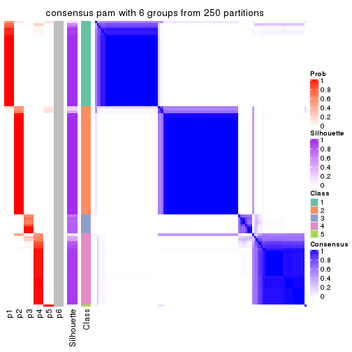
Heatmaps for the membership of samples in all partitions to see how consistent they are:
membership_heatmap(res, k = 2)
membership_heatmap(res, k = 3)
membership_heatmap(res, k = 4)
membership_heatmap(res, k = 5)
membership_heatmap(res, k = 6)
As soon as we have had the classes for columns, we can look for signatures which are significantly different between classes which can be candidate marks for certain classes. Following are the heatmaps for signatures.
Signature heatmaps where rows are scaled:
get_signatures(res, k = 2)
get_signatures(res, k = 3)
get_signatures(res, k = 4)
get_signatures(res, k = 5)
get_signatures(res, k = 6)
Signature heatmaps where rows are not scaled:
get_signatures(res, k = 2, scale_rows = FALSE)
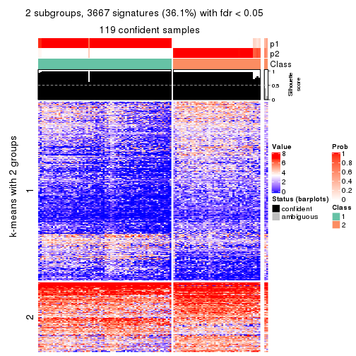
get_signatures(res, k = 3, scale_rows = FALSE)
get_signatures(res, k = 4, scale_rows = FALSE)
get_signatures(res, k = 5, scale_rows = FALSE)
get_signatures(res, k = 6, scale_rows = FALSE)
Compare the overlap of signatures from different k:
compare_signatures(res)
get_signature() returns a data frame invisibly. TO get the list of signatures, the function
call should be assigned to a variable explicitly. In following code, if plot argument is set
to FALSE, no heatmap is plotted while only the differential analysis is performed.
# code only for demonstration
tb = get_signature(res, k = ..., plot = FALSE)
An example of the output of tb is:
#> which_row fdr mean_1 mean_2 scaled_mean_1 scaled_mean_2 km
#> 1 38 0.042760348 8.373488 9.131774 -0.5533452 0.5164555 1
#> 2 40 0.018707592 7.106213 8.469186 -0.6173731 0.5762149 1
#> 3 55 0.019134737 10.221463 11.207825 -0.6159697 0.5749050 1
#> 4 59 0.006059896 5.921854 7.869574 -0.6899429 0.6439467 1
#> 5 60 0.018055526 8.928898 10.211722 -0.6204761 0.5791110 1
#> 6 98 0.009384629 15.714769 14.887706 0.6635654 -0.6193277 2
...
The columns in tb are:
which_row: row indices corresponding to the input matrix.fdr: FDR for the differential test. mean_x: The mean value in group x.scaled_mean_x: The mean value in group x after rows are scaled.km: Row groups if k-means clustering is applied to rows.UMAP plot which shows how samples are separated.
dimension_reduction(res, k = 2, method = "UMAP")
dimension_reduction(res, k = 3, method = "UMAP")
dimension_reduction(res, k = 4, method = "UMAP")
dimension_reduction(res, k = 5, method = "UMAP")
dimension_reduction(res, k = 6, method = "UMAP")
Following heatmap shows how subgroups are split when increasing k:
collect_classes(res)
If matrix rows can be associated to genes, consider to use GO_Enrichment(res,
...) to perform function enrichment for the signature genes.
The object with results only for a single top-value method and a single partition method can be extracted as:
res = res_list["MAD", "mclust"]
# you can also extract it by
# res = res_list["MAD:mclust"]
A summary of res and all the functions that can be applied to it:
res
#> A 'ConsensusPartition' object with k = 2, 3, 4, 5, 6.
#> On a matrix with 10145 rows and 121 columns.
#> Top rows (1000, 2000, 3000, 4000, 5000) are extracted by 'MAD' method.
#> Subgroups are detected by 'mclust' method.
#> Performed in total 1250 partitions by row resampling.
#> Best k for subgroups seems to be 4.
#>
#> Following methods can be applied to this 'ConsensusPartition' object:
#> [1] "cola_report" "collect_classes" "collect_plots"
#> [4] "collect_stats" "colnames" "compare_signatures"
#> [7] "consensus_heatmap" "dimension_reduction" "functional_enrichment"
#> [10] "get_anno_col" "get_anno" "get_classes"
#> [13] "get_consensus" "get_matrix" "get_membership"
#> [16] "get_param" "get_signatures" "get_stats"
#> [19] "is_best_k" "is_stable_k" "membership_heatmap"
#> [22] "ncol" "nrow" "plot_ecdf"
#> [25] "rownames" "select_partition_number" "show"
#> [28] "suggest_best_k" "test_to_known_factors"
collect_plots() function collects all the plots made from res for all k (number of partitions)
into one single page to provide an easy and fast comparison between different k.
collect_plots(res)
The plots are:
k and the heatmap of
predicted classes for each k.k.k.k.All the plots in panels can be made by individual functions and they are plotted later in this section.
select_partition_number() produces several plots showing different
statistics for choosing “optimized” k. There are following statistics:
k;k, the area increased is defined as \(A_k - A_{k-1}\).The detailed explanations of these statistics can be found in the cola vignette.
Generally speaking, lower PAC score, higher mean silhouette score or higher
concordance corresponds to better partition. Rand index and Jaccard index
measure how similar the current partition is compared to partition with k-1.
If they are too similar, we won't accept k is better than k-1.
select_partition_number(res)
The numeric values for all these statistics can be obtained by get_stats().
get_stats(res)
#> k 1-PAC mean_silhouette concordance area_increased Rand Jaccard
#> 2 2 1.000 0.995 0.998 0.4767 0.525 0.525
#> 3 3 1.000 0.981 0.991 0.4011 0.807 0.633
#> 4 4 0.923 0.921 0.944 0.0670 0.956 0.868
#> 5 5 0.871 0.900 0.921 0.0277 0.997 0.989
#> 6 6 0.866 0.876 0.893 0.0322 0.971 0.899
suggest_best_k() suggests the best \(k\) based on these statistics. The rules are as follows:
NA.suggest_best_k(res)
#> [1] 4
#> attr(,"optional")
#> [1] 2 3
There is also optional best \(k\) = 2 3 that is worth to check.
Following shows the table of the partitions (You need to click the show/hide
code output link to see it). The membership matrix (columns with name p*)
is inferred by
clue::cl_consensus()
function with the SE method. Basically the value in the membership matrix
represents the probability to belong to a certain group. The finall class
label for an item is determined with the group with highest probability it
belongs to.
In get_classes() function, the entropy is calculated from the membership
matrix and the silhouette score is calculated from the consensus matrix.
cbind(get_classes(res, k = 2), get_membership(res, k = 2))
#> class entropy silhouette p1 p2
#> SRR2431463 1 0.000 0.996 1.000 0.000
#> SRR2431462 1 0.000 0.996 1.000 0.000
#> SRR2431461 1 0.000 0.996 1.000 0.000
#> SRR2431459 1 0.000 0.996 1.000 0.000
#> SRR2431460 1 0.000 0.996 1.000 0.000
#> SRR2431458 1 0.000 0.996 1.000 0.000
#> SRR2431457 1 0.000 0.996 1.000 0.000
#> SRR2431455 1 0.000 0.996 1.000 0.000
#> SRR2431456 1 0.000 0.996 1.000 0.000
#> SRR2431454 1 0.000 0.996 1.000 0.000
#> SRR2431453 1 0.000 0.996 1.000 0.000
#> SRR2431451 1 0.000 0.996 1.000 0.000
#> SRR2431452 1 0.000 0.996 1.000 0.000
#> SRR2431450 1 0.000 0.996 1.000 0.000
#> SRR2431449 1 0.000 0.996 1.000 0.000
#> SRR2431448 1 0.000 0.996 1.000 0.000
#> SRR2431446 1 0.000 0.996 1.000 0.000
#> SRR2431447 1 0.000 0.996 1.000 0.000
#> SRR2431445 1 0.000 0.996 1.000 0.000
#> SRR2431444 1 0.000 0.996 1.000 0.000
#> SRR2431443 1 0.000 0.996 1.000 0.000
#> SRR2431442 1 0.000 0.996 1.000 0.000
#> SRR2431441 1 0.000 0.996 1.000 0.000
#> SRR2431440 1 0.000 0.996 1.000 0.000
#> SRR2431439 1 0.000 0.996 1.000 0.000
#> SRR2431438 1 0.000 0.996 1.000 0.000
#> SRR2431437 1 0.000 0.996 1.000 0.000
#> SRR2431436 1 0.000 0.996 1.000 0.000
#> SRR2431435 1 0.000 0.996 1.000 0.000
#> SRR2431434 1 0.000 0.996 1.000 0.000
#> SRR2431433 1 0.000 0.996 1.000 0.000
#> SRR2431432 1 0.000 0.996 1.000 0.000
#> SRR2431431 1 0.000 0.996 1.000 0.000
#> SRR2431430 1 0.000 0.996 1.000 0.000
#> SRR2431429 1 0.000 0.996 1.000 0.000
#> SRR2431428 1 0.000 0.996 1.000 0.000
#> SRR2431427 2 0.000 1.000 0.000 1.000
#> SRR2431426 2 0.000 1.000 0.000 1.000
#> SRR2431425 2 0.000 1.000 0.000 1.000
#> SRR2431424 2 0.000 1.000 0.000 1.000
#> SRR2431423 2 0.000 1.000 0.000 1.000
#> SRR2431422 2 0.000 1.000 0.000 1.000
#> SRR2431421 2 0.000 1.000 0.000 1.000
#> SRR2431420 2 0.000 1.000 0.000 1.000
#> SRR2431419 2 0.000 1.000 0.000 1.000
#> SRR2431418 2 0.000 1.000 0.000 1.000
#> SRR2431417 2 0.000 1.000 0.000 1.000
#> SRR2431416 2 0.000 1.000 0.000 1.000
#> SRR2431415 2 0.000 1.000 0.000 1.000
#> SRR2431414 2 0.000 1.000 0.000 1.000
#> SRR2431413 2 0.000 1.000 0.000 1.000
#> SRR2431412 2 0.000 1.000 0.000 1.000
#> SRR2431411 1 0.714 0.758 0.804 0.196
#> SRR2431409 2 0.000 1.000 0.000 1.000
#> SRR2431410 1 0.343 0.931 0.936 0.064
#> SRR2431408 2 0.000 1.000 0.000 1.000
#> SRR2431407 2 0.000 1.000 0.000 1.000
#> SRR2431405 2 0.000 1.000 0.000 1.000
#> SRR2431406 2 0.000 1.000 0.000 1.000
#> SRR2431404 2 0.000 1.000 0.000 1.000
#> SRR2431403 2 0.000 1.000 0.000 1.000
#> SRR2431402 2 0.000 1.000 0.000 1.000
#> SRR2431401 2 0.000 1.000 0.000 1.000
#> SRR2431400 2 0.000 1.000 0.000 1.000
#> SRR2431399 2 0.000 1.000 0.000 1.000
#> SRR2431398 2 0.000 1.000 0.000 1.000
#> SRR2431397 2 0.000 1.000 0.000 1.000
#> SRR2431396 2 0.000 1.000 0.000 1.000
#> SRR2431395 2 0.000 1.000 0.000 1.000
#> SRR2431394 2 0.000 1.000 0.000 1.000
#> SRR2431393 2 0.000 1.000 0.000 1.000
#> SRR2431392 2 0.000 1.000 0.000 1.000
#> SRR2431391 2 0.000 1.000 0.000 1.000
#> SRR2431390 2 0.000 1.000 0.000 1.000
#> SRR2431389 2 0.000 1.000 0.000 1.000
#> SRR2431388 2 0.000 1.000 0.000 1.000
#> SRR2431387 2 0.000 1.000 0.000 1.000
#> SRR2431386 2 0.000 1.000 0.000 1.000
#> SRR2431385 2 0.000 1.000 0.000 1.000
#> SRR2431383 2 0.000 1.000 0.000 1.000
#> SRR2431384 2 0.000 1.000 0.000 1.000
#> SRR2431382 2 0.000 1.000 0.000 1.000
#> SRR2431381 2 0.000 1.000 0.000 1.000
#> SRR2431380 2 0.000 1.000 0.000 1.000
#> SRR2431379 1 0.000 0.996 1.000 0.000
#> SRR2431378 1 0.000 0.996 1.000 0.000
#> SRR2431376 1 0.000 0.996 1.000 0.000
#> SRR2431377 1 0.000 0.996 1.000 0.000
#> SRR2431375 1 0.000 0.996 1.000 0.000
#> SRR2431374 1 0.000 0.996 1.000 0.000
#> SRR2431372 1 0.000 0.996 1.000 0.000
#> SRR2431371 1 0.000 0.996 1.000 0.000
#> SRR2431373 1 0.000 0.996 1.000 0.000
#> SRR2431370 1 0.000 0.996 1.000 0.000
#> SRR2431369 1 0.000 0.996 1.000 0.000
#> SRR2431368 1 0.000 0.996 1.000 0.000
#> SRR2431367 1 0.000 0.996 1.000 0.000
#> SRR2431366 1 0.000 0.996 1.000 0.000
#> SRR2431365 1 0.000 0.996 1.000 0.000
#> SRR2431364 1 0.000 0.996 1.000 0.000
#> SRR2431363 1 0.000 0.996 1.000 0.000
#> SRR2431361 1 0.000 0.996 1.000 0.000
#> SRR2431362 1 0.000 0.996 1.000 0.000
#> SRR2431360 1 0.000 0.996 1.000 0.000
#> SRR2431359 1 0.000 0.996 1.000 0.000
#> SRR2431358 1 0.000 0.996 1.000 0.000
#> SRR2431357 1 0.000 0.996 1.000 0.000
#> SRR2431355 1 0.000 0.996 1.000 0.000
#> SRR2431356 1 0.000 0.996 1.000 0.000
#> SRR2431354 1 0.000 0.996 1.000 0.000
#> SRR2431353 1 0.000 0.996 1.000 0.000
#> SRR2431352 1 0.000 0.996 1.000 0.000
#> SRR2431351 1 0.000 0.996 1.000 0.000
#> SRR2431350 1 0.000 0.996 1.000 0.000
#> SRR2431349 1 0.000 0.996 1.000 0.000
#> SRR2431348 1 0.000 0.996 1.000 0.000
#> SRR2431347 1 0.000 0.996 1.000 0.000
#> SRR2431346 1 0.000 0.996 1.000 0.000
#> SRR2431345 1 0.000 0.996 1.000 0.000
#> SRR2431344 1 0.000 0.996 1.000 0.000
#> SRR2431343 1 0.000 0.996 1.000 0.000
cbind(get_classes(res, k = 3), get_membership(res, k = 3))
#> class entropy silhouette p1 p2 p3
#> SRR2431463 1 0.000 1.000 1.000 0.000 0.000
#> SRR2431462 1 0.000 1.000 1.000 0.000 0.000
#> SRR2431461 1 0.000 1.000 1.000 0.000 0.000
#> SRR2431459 1 0.000 1.000 1.000 0.000 0.000
#> SRR2431460 1 0.000 1.000 1.000 0.000 0.000
#> SRR2431458 1 0.000 1.000 1.000 0.000 0.000
#> SRR2431457 1 0.000 1.000 1.000 0.000 0.000
#> SRR2431455 1 0.000 1.000 1.000 0.000 0.000
#> SRR2431456 1 0.000 1.000 1.000 0.000 0.000
#> SRR2431454 1 0.000 1.000 1.000 0.000 0.000
#> SRR2431453 1 0.000 1.000 1.000 0.000 0.000
#> SRR2431451 1 0.000 1.000 1.000 0.000 0.000
#> SRR2431452 3 0.362 0.840 0.136 0.000 0.864
#> SRR2431450 1 0.000 1.000 1.000 0.000 0.000
#> SRR2431449 1 0.000 1.000 1.000 0.000 0.000
#> SRR2431448 1 0.000 1.000 1.000 0.000 0.000
#> SRR2431446 1 0.000 1.000 1.000 0.000 0.000
#> SRR2431447 1 0.000 1.000 1.000 0.000 0.000
#> SRR2431445 1 0.000 1.000 1.000 0.000 0.000
#> SRR2431444 1 0.000 1.000 1.000 0.000 0.000
#> SRR2431443 1 0.000 1.000 1.000 0.000 0.000
#> SRR2431442 1 0.000 1.000 1.000 0.000 0.000
#> SRR2431441 1 0.000 1.000 1.000 0.000 0.000
#> SRR2431440 1 0.000 1.000 1.000 0.000 0.000
#> SRR2431439 1 0.000 1.000 1.000 0.000 0.000
#> SRR2431438 1 0.000 1.000 1.000 0.000 0.000
#> SRR2431437 1 0.000 1.000 1.000 0.000 0.000
#> SRR2431436 1 0.000 1.000 1.000 0.000 0.000
#> SRR2431435 1 0.000 1.000 1.000 0.000 0.000
#> SRR2431434 1 0.000 1.000 1.000 0.000 0.000
#> SRR2431433 1 0.000 1.000 1.000 0.000 0.000
#> SRR2431432 1 0.000 1.000 1.000 0.000 0.000
#> SRR2431431 1 0.000 1.000 1.000 0.000 0.000
#> SRR2431430 1 0.000 1.000 1.000 0.000 0.000
#> SRR2431429 1 0.000 1.000 1.000 0.000 0.000
#> SRR2431428 1 0.000 1.000 1.000 0.000 0.000
#> SRR2431427 2 0.000 1.000 0.000 1.000 0.000
#> SRR2431426 2 0.000 1.000 0.000 1.000 0.000
#> SRR2431425 2 0.000 1.000 0.000 1.000 0.000
#> SRR2431424 2 0.000 1.000 0.000 1.000 0.000
#> SRR2431423 2 0.000 1.000 0.000 1.000 0.000
#> SRR2431422 2 0.000 1.000 0.000 1.000 0.000
#> SRR2431421 2 0.000 1.000 0.000 1.000 0.000
#> SRR2431420 2 0.000 1.000 0.000 1.000 0.000
#> SRR2431419 2 0.000 1.000 0.000 1.000 0.000
#> SRR2431418 2 0.000 1.000 0.000 1.000 0.000
#> SRR2431417 2 0.000 1.000 0.000 1.000 0.000
#> SRR2431416 2 0.000 1.000 0.000 1.000 0.000
#> SRR2431415 2 0.000 1.000 0.000 1.000 0.000
#> SRR2431414 2 0.000 1.000 0.000 1.000 0.000
#> SRR2431413 2 0.000 1.000 0.000 1.000 0.000
#> SRR2431412 2 0.000 1.000 0.000 1.000 0.000
#> SRR2431411 3 0.525 0.656 0.000 0.264 0.736
#> SRR2431409 2 0.000 1.000 0.000 1.000 0.000
#> SRR2431410 3 0.510 0.683 0.000 0.248 0.752
#> SRR2431408 2 0.000 1.000 0.000 1.000 0.000
#> SRR2431407 2 0.000 1.000 0.000 1.000 0.000
#> SRR2431405 2 0.000 1.000 0.000 1.000 0.000
#> SRR2431406 2 0.000 1.000 0.000 1.000 0.000
#> SRR2431404 2 0.000 1.000 0.000 1.000 0.000
#> SRR2431403 2 0.000 1.000 0.000 1.000 0.000
#> SRR2431402 2 0.000 1.000 0.000 1.000 0.000
#> SRR2431401 2 0.000 1.000 0.000 1.000 0.000
#> SRR2431400 2 0.000 1.000 0.000 1.000 0.000
#> SRR2431399 2 0.000 1.000 0.000 1.000 0.000
#> SRR2431398 2 0.000 1.000 0.000 1.000 0.000
#> SRR2431397 2 0.000 1.000 0.000 1.000 0.000
#> SRR2431396 2 0.000 1.000 0.000 1.000 0.000
#> SRR2431395 2 0.000 1.000 0.000 1.000 0.000
#> SRR2431394 2 0.000 1.000 0.000 1.000 0.000
#> SRR2431393 2 0.000 1.000 0.000 1.000 0.000
#> SRR2431392 2 0.000 1.000 0.000 1.000 0.000
#> SRR2431391 2 0.000 1.000 0.000 1.000 0.000
#> SRR2431390 2 0.000 1.000 0.000 1.000 0.000
#> SRR2431389 2 0.000 1.000 0.000 1.000 0.000
#> SRR2431388 2 0.000 1.000 0.000 1.000 0.000
#> SRR2431387 2 0.000 1.000 0.000 1.000 0.000
#> SRR2431386 2 0.000 1.000 0.000 1.000 0.000
#> SRR2431385 2 0.000 1.000 0.000 1.000 0.000
#> SRR2431383 2 0.000 1.000 0.000 1.000 0.000
#> SRR2431384 2 0.000 1.000 0.000 1.000 0.000
#> SRR2431382 2 0.000 1.000 0.000 1.000 0.000
#> SRR2431381 2 0.000 1.000 0.000 1.000 0.000
#> SRR2431380 2 0.000 1.000 0.000 1.000 0.000
#> SRR2431379 3 0.000 0.972 0.000 0.000 1.000
#> SRR2431378 3 0.000 0.972 0.000 0.000 1.000
#> SRR2431376 3 0.000 0.972 0.000 0.000 1.000
#> SRR2431377 3 0.000 0.972 0.000 0.000 1.000
#> SRR2431375 3 0.000 0.972 0.000 0.000 1.000
#> SRR2431374 3 0.000 0.972 0.000 0.000 1.000
#> SRR2431372 3 0.000 0.972 0.000 0.000 1.000
#> SRR2431371 3 0.000 0.972 0.000 0.000 1.000
#> SRR2431373 3 0.000 0.972 0.000 0.000 1.000
#> SRR2431370 3 0.000 0.972 0.000 0.000 1.000
#> SRR2431369 3 0.000 0.972 0.000 0.000 1.000
#> SRR2431368 3 0.000 0.972 0.000 0.000 1.000
#> SRR2431367 3 0.000 0.972 0.000 0.000 1.000
#> SRR2431366 3 0.000 0.972 0.000 0.000 1.000
#> SRR2431365 3 0.000 0.972 0.000 0.000 1.000
#> SRR2431364 3 0.000 0.972 0.000 0.000 1.000
#> SRR2431363 3 0.000 0.972 0.000 0.000 1.000
#> SRR2431361 3 0.000 0.972 0.000 0.000 1.000
#> SRR2431362 3 0.000 0.972 0.000 0.000 1.000
#> SRR2431360 3 0.000 0.972 0.000 0.000 1.000
#> SRR2431359 3 0.000 0.972 0.000 0.000 1.000
#> SRR2431358 3 0.562 0.573 0.308 0.000 0.692
#> SRR2431357 3 0.000 0.972 0.000 0.000 1.000
#> SRR2431355 3 0.000 0.972 0.000 0.000 1.000
#> SRR2431356 3 0.000 0.972 0.000 0.000 1.000
#> SRR2431354 3 0.000 0.972 0.000 0.000 1.000
#> SRR2431353 3 0.000 0.972 0.000 0.000 1.000
#> SRR2431352 3 0.000 0.972 0.000 0.000 1.000
#> SRR2431351 3 0.000 0.972 0.000 0.000 1.000
#> SRR2431350 3 0.000 0.972 0.000 0.000 1.000
#> SRR2431349 3 0.000 0.972 0.000 0.000 1.000
#> SRR2431348 3 0.000 0.972 0.000 0.000 1.000
#> SRR2431347 3 0.000 0.972 0.000 0.000 1.000
#> SRR2431346 3 0.000 0.972 0.000 0.000 1.000
#> SRR2431345 3 0.000 0.972 0.000 0.000 1.000
#> SRR2431344 3 0.288 0.884 0.096 0.000 0.904
#> SRR2431343 3 0.000 0.972 0.000 0.000 1.000
cbind(get_classes(res, k = 4), get_membership(res, k = 4))
#> class entropy silhouette p1 p2 p3 p4
#> SRR2431463 1 0.0000 0.986 1.000 0.000 0.000 0.000
#> SRR2431462 1 0.0469 0.985 0.988 0.000 0.000 0.012
#> SRR2431461 1 0.0592 0.984 0.984 0.000 0.000 0.016
#> SRR2431459 1 0.0000 0.986 1.000 0.000 0.000 0.000
#> SRR2431460 1 0.0000 0.986 1.000 0.000 0.000 0.000
#> SRR2431458 1 0.0592 0.984 0.984 0.000 0.000 0.016
#> SRR2431457 1 0.0000 0.986 1.000 0.000 0.000 0.000
#> SRR2431455 1 0.0000 0.986 1.000 0.000 0.000 0.000
#> SRR2431456 1 0.0000 0.986 1.000 0.000 0.000 0.000
#> SRR2431454 1 0.0817 0.980 0.976 0.000 0.000 0.024
#> SRR2431453 1 0.0000 0.986 1.000 0.000 0.000 0.000
#> SRR2431451 1 0.0592 0.984 0.984 0.000 0.000 0.016
#> SRR2431452 4 0.2300 0.609 0.028 0.000 0.048 0.924
#> SRR2431450 1 0.0336 0.983 0.992 0.000 0.000 0.008
#> SRR2431449 1 0.0000 0.986 1.000 0.000 0.000 0.000
#> SRR2431448 1 0.0000 0.986 1.000 0.000 0.000 0.000
#> SRR2431446 1 0.0592 0.984 0.984 0.000 0.000 0.016
#> SRR2431447 1 0.0592 0.984 0.984 0.000 0.000 0.016
#> SRR2431445 1 0.0469 0.985 0.988 0.000 0.000 0.012
#> SRR2431444 1 0.3444 0.809 0.816 0.000 0.000 0.184
#> SRR2431443 1 0.0000 0.986 1.000 0.000 0.000 0.000
#> SRR2431442 1 0.0000 0.986 1.000 0.000 0.000 0.000
#> SRR2431441 1 0.0000 0.986 1.000 0.000 0.000 0.000
#> SRR2431440 1 0.0592 0.984 0.984 0.000 0.000 0.016
#> SRR2431439 1 0.0592 0.984 0.984 0.000 0.000 0.016
#> SRR2431438 1 0.0000 0.986 1.000 0.000 0.000 0.000
#> SRR2431437 1 0.0592 0.984 0.984 0.000 0.000 0.016
#> SRR2431436 1 0.2011 0.932 0.920 0.000 0.000 0.080
#> SRR2431435 1 0.0592 0.984 0.984 0.000 0.000 0.016
#> SRR2431434 1 0.0000 0.986 1.000 0.000 0.000 0.000
#> SRR2431433 1 0.0000 0.986 1.000 0.000 0.000 0.000
#> SRR2431432 1 0.0000 0.986 1.000 0.000 0.000 0.000
#> SRR2431431 1 0.1389 0.962 0.952 0.000 0.000 0.048
#> SRR2431430 1 0.0592 0.984 0.984 0.000 0.000 0.016
#> SRR2431429 1 0.0000 0.986 1.000 0.000 0.000 0.000
#> SRR2431428 1 0.0336 0.983 0.992 0.000 0.000 0.008
#> SRR2431427 2 0.0000 0.955 0.000 1.000 0.000 0.000
#> SRR2431426 2 0.0000 0.955 0.000 1.000 0.000 0.000
#> SRR2431425 2 0.0000 0.955 0.000 1.000 0.000 0.000
#> SRR2431424 2 0.0000 0.955 0.000 1.000 0.000 0.000
#> SRR2431423 2 0.0000 0.955 0.000 1.000 0.000 0.000
#> SRR2431422 2 0.0000 0.955 0.000 1.000 0.000 0.000
#> SRR2431421 2 0.4304 0.703 0.000 0.716 0.000 0.284
#> SRR2431420 2 0.0000 0.955 0.000 1.000 0.000 0.000
#> SRR2431419 2 0.0000 0.955 0.000 1.000 0.000 0.000
#> SRR2431418 2 0.0000 0.955 0.000 1.000 0.000 0.000
#> SRR2431417 2 0.0000 0.955 0.000 1.000 0.000 0.000
#> SRR2431416 2 0.0000 0.955 0.000 1.000 0.000 0.000
#> SRR2431415 2 0.0000 0.955 0.000 1.000 0.000 0.000
#> SRR2431414 2 0.0000 0.955 0.000 1.000 0.000 0.000
#> SRR2431413 2 0.0707 0.944 0.000 0.980 0.000 0.020
#> SRR2431412 2 0.0000 0.955 0.000 1.000 0.000 0.000
#> SRR2431411 4 0.4464 0.445 0.000 0.208 0.024 0.768
#> SRR2431409 2 0.0000 0.955 0.000 1.000 0.000 0.000
#> SRR2431410 4 0.2214 0.600 0.000 0.044 0.028 0.928
#> SRR2431408 2 0.0707 0.944 0.000 0.980 0.000 0.020
#> SRR2431407 2 0.0000 0.955 0.000 1.000 0.000 0.000
#> SRR2431405 2 0.0707 0.944 0.000 0.980 0.000 0.020
#> SRR2431406 2 0.0000 0.955 0.000 1.000 0.000 0.000
#> SRR2431404 2 0.0000 0.955 0.000 1.000 0.000 0.000
#> SRR2431403 2 0.0000 0.955 0.000 1.000 0.000 0.000
#> SRR2431402 2 0.3726 0.780 0.000 0.788 0.000 0.212
#> SRR2431401 2 0.0000 0.955 0.000 1.000 0.000 0.000
#> SRR2431400 2 0.0000 0.955 0.000 1.000 0.000 0.000
#> SRR2431399 2 0.0000 0.955 0.000 1.000 0.000 0.000
#> SRR2431398 2 0.0000 0.955 0.000 1.000 0.000 0.000
#> SRR2431397 2 0.0000 0.955 0.000 1.000 0.000 0.000
#> SRR2431396 2 0.4605 0.639 0.000 0.664 0.000 0.336
#> SRR2431395 2 0.0000 0.955 0.000 1.000 0.000 0.000
#> SRR2431394 2 0.0000 0.955 0.000 1.000 0.000 0.000
#> SRR2431393 2 0.0188 0.953 0.000 0.996 0.000 0.004
#> SRR2431392 2 0.0000 0.955 0.000 1.000 0.000 0.000
#> SRR2431391 2 0.0000 0.955 0.000 1.000 0.000 0.000
#> SRR2431390 2 0.0000 0.955 0.000 1.000 0.000 0.000
#> SRR2431389 2 0.0000 0.955 0.000 1.000 0.000 0.000
#> SRR2431388 2 0.3688 0.785 0.000 0.792 0.000 0.208
#> SRR2431387 2 0.4679 0.617 0.000 0.648 0.000 0.352
#> SRR2431386 2 0.0000 0.955 0.000 1.000 0.000 0.000
#> SRR2431385 2 0.4661 0.622 0.000 0.652 0.000 0.348
#> SRR2431383 2 0.1211 0.931 0.000 0.960 0.000 0.040
#> SRR2431384 2 0.0000 0.955 0.000 1.000 0.000 0.000
#> SRR2431382 2 0.0000 0.955 0.000 1.000 0.000 0.000
#> SRR2431381 2 0.0000 0.955 0.000 1.000 0.000 0.000
#> SRR2431380 2 0.4304 0.705 0.000 0.716 0.000 0.284
#> SRR2431379 3 0.0188 0.971 0.000 0.000 0.996 0.004
#> SRR2431378 3 0.0188 0.972 0.000 0.000 0.996 0.004
#> SRR2431376 3 0.0188 0.972 0.000 0.000 0.996 0.004
#> SRR2431377 3 0.1940 0.887 0.000 0.000 0.924 0.076
#> SRR2431375 3 0.0469 0.968 0.000 0.000 0.988 0.012
#> SRR2431374 4 0.4804 0.751 0.000 0.000 0.384 0.616
#> SRR2431372 3 0.2011 0.876 0.000 0.000 0.920 0.080
#> SRR2431371 3 0.0469 0.967 0.000 0.000 0.988 0.012
#> SRR2431373 3 0.0336 0.969 0.000 0.000 0.992 0.008
#> SRR2431370 3 0.0188 0.972 0.000 0.000 0.996 0.004
#> SRR2431369 3 0.0188 0.972 0.000 0.000 0.996 0.004
#> SRR2431368 3 0.0000 0.972 0.000 0.000 1.000 0.000
#> SRR2431367 3 0.0188 0.972 0.000 0.000 0.996 0.004
#> SRR2431366 3 0.1940 0.887 0.000 0.000 0.924 0.076
#> SRR2431365 3 0.3400 0.685 0.000 0.000 0.820 0.180
#> SRR2431364 3 0.0188 0.971 0.000 0.000 0.996 0.004
#> SRR2431363 3 0.0336 0.969 0.000 0.000 0.992 0.008
#> SRR2431361 3 0.0188 0.972 0.000 0.000 0.996 0.004
#> SRR2431362 3 0.0336 0.970 0.000 0.000 0.992 0.008
#> SRR2431360 3 0.0336 0.969 0.000 0.000 0.992 0.008
#> SRR2431359 3 0.0336 0.970 0.000 0.000 0.992 0.008
#> SRR2431358 4 0.6652 0.670 0.108 0.000 0.316 0.576
#> SRR2431357 4 0.4804 0.751 0.000 0.000 0.384 0.616
#> SRR2431355 4 0.4843 0.735 0.000 0.000 0.396 0.604
#> SRR2431356 3 0.0188 0.972 0.000 0.000 0.996 0.004
#> SRR2431354 3 0.0336 0.969 0.000 0.000 0.992 0.008
#> SRR2431353 4 0.4817 0.747 0.000 0.000 0.388 0.612
#> SRR2431352 4 0.4804 0.751 0.000 0.000 0.384 0.616
#> SRR2431351 3 0.0336 0.969 0.000 0.000 0.992 0.008
#> SRR2431350 3 0.0188 0.972 0.000 0.000 0.996 0.004
#> SRR2431349 3 0.0336 0.969 0.000 0.000 0.992 0.008
#> SRR2431348 3 0.0188 0.972 0.000 0.000 0.996 0.004
#> SRR2431347 3 0.0188 0.972 0.000 0.000 0.996 0.004
#> SRR2431346 3 0.0188 0.972 0.000 0.000 0.996 0.004
#> SRR2431345 3 0.0336 0.969 0.000 0.000 0.992 0.008
#> SRR2431344 4 0.5112 0.747 0.008 0.000 0.384 0.608
#> SRR2431343 4 0.4804 0.751 0.000 0.000 0.384 0.616
cbind(get_classes(res, k = 5), get_membership(res, k = 5))
#> class entropy silhouette p1 p2 p3 p4 p5
#> SRR2431463 1 0.2209 0.908 0.912 0.000 0.000 0.056 0.032
#> SRR2431462 1 0.1121 0.913 0.956 0.000 0.000 0.000 0.044
#> SRR2431461 1 0.2127 0.888 0.892 0.000 0.000 0.000 0.108
#> SRR2431459 1 0.0794 0.913 0.972 0.000 0.000 0.000 0.028
#> SRR2431460 1 0.2446 0.901 0.900 0.000 0.000 0.056 0.044
#> SRR2431458 1 0.1544 0.900 0.932 0.000 0.000 0.000 0.068
#> SRR2431457 1 0.2450 0.900 0.900 0.000 0.000 0.052 0.048
#> SRR2431455 1 0.2520 0.898 0.896 0.000 0.000 0.056 0.048
#> SRR2431456 1 0.1750 0.912 0.936 0.000 0.000 0.028 0.036
#> SRR2431454 1 0.2732 0.859 0.840 0.000 0.000 0.000 0.160
#> SRR2431453 1 0.0794 0.914 0.972 0.000 0.000 0.000 0.028
#> SRR2431451 1 0.1965 0.891 0.904 0.000 0.000 0.000 0.096
#> SRR2431452 5 0.4938 0.572 0.028 0.000 0.020 0.272 0.680
#> SRR2431450 1 0.2588 0.906 0.892 0.000 0.000 0.060 0.048
#> SRR2431449 1 0.2291 0.905 0.908 0.000 0.000 0.056 0.036
#> SRR2431448 1 0.0609 0.914 0.980 0.000 0.000 0.000 0.020
#> SRR2431446 1 0.2127 0.888 0.892 0.000 0.000 0.000 0.108
#> SRR2431447 1 0.1965 0.892 0.904 0.000 0.000 0.000 0.096
#> SRR2431445 1 0.1270 0.912 0.948 0.000 0.000 0.000 0.052
#> SRR2431444 1 0.5086 0.446 0.564 0.000 0.000 0.040 0.396
#> SRR2431443 1 0.2124 0.911 0.916 0.000 0.000 0.056 0.028
#> SRR2431442 1 0.2291 0.902 0.908 0.000 0.000 0.056 0.036
#> SRR2431441 1 0.2661 0.895 0.888 0.000 0.000 0.056 0.056
#> SRR2431440 1 0.1732 0.896 0.920 0.000 0.000 0.000 0.080
#> SRR2431439 1 0.2179 0.886 0.888 0.000 0.000 0.000 0.112
#> SRR2431438 1 0.2438 0.900 0.900 0.000 0.000 0.040 0.060
#> SRR2431437 1 0.0963 0.914 0.964 0.000 0.000 0.000 0.036
#> SRR2431436 1 0.3942 0.736 0.728 0.000 0.000 0.012 0.260
#> SRR2431435 1 0.2074 0.889 0.896 0.000 0.000 0.000 0.104
#> SRR2431434 1 0.2036 0.910 0.920 0.000 0.000 0.056 0.024
#> SRR2431433 1 0.2661 0.895 0.888 0.000 0.000 0.056 0.056
#> SRR2431432 1 0.0703 0.914 0.976 0.000 0.000 0.000 0.024
#> SRR2431431 1 0.2732 0.859 0.840 0.000 0.000 0.000 0.160
#> SRR2431430 1 0.1851 0.894 0.912 0.000 0.000 0.000 0.088
#> SRR2431429 1 0.2370 0.905 0.904 0.000 0.000 0.056 0.040
#> SRR2431428 1 0.2659 0.905 0.888 0.000 0.000 0.060 0.052
#> SRR2431427 2 0.0162 0.972 0.000 0.996 0.000 0.000 0.004
#> SRR2431426 2 0.0162 0.973 0.000 0.996 0.000 0.004 0.000
#> SRR2431425 2 0.0162 0.973 0.000 0.996 0.000 0.004 0.000
#> SRR2431424 2 0.0162 0.973 0.000 0.996 0.000 0.004 0.000
#> SRR2431423 2 0.0162 0.973 0.000 0.996 0.000 0.004 0.000
#> SRR2431422 2 0.0162 0.973 0.000 0.996 0.000 0.004 0.000
#> SRR2431421 2 0.2648 0.839 0.000 0.848 0.000 0.000 0.152
#> SRR2431420 2 0.0162 0.973 0.000 0.996 0.000 0.004 0.000
#> SRR2431419 2 0.0162 0.973 0.000 0.996 0.000 0.004 0.000
#> SRR2431418 2 0.0404 0.969 0.000 0.988 0.000 0.000 0.012
#> SRR2431417 2 0.0162 0.973 0.000 0.996 0.000 0.004 0.000
#> SRR2431416 2 0.0162 0.973 0.000 0.996 0.000 0.004 0.000
#> SRR2431415 2 0.0162 0.972 0.000 0.996 0.000 0.000 0.004
#> SRR2431414 2 0.0162 0.973 0.000 0.996 0.000 0.004 0.000
#> SRR2431413 2 0.0510 0.967 0.000 0.984 0.000 0.000 0.016
#> SRR2431412 2 0.0162 0.973 0.000 0.996 0.000 0.004 0.000
#> SRR2431411 5 0.6423 0.530 0.000 0.212 0.012 0.212 0.564
#> SRR2431409 2 0.0162 0.972 0.000 0.996 0.000 0.000 0.004
#> SRR2431410 5 0.5456 0.637 0.000 0.048 0.020 0.304 0.628
#> SRR2431408 2 0.0290 0.971 0.000 0.992 0.000 0.000 0.008
#> SRR2431407 2 0.0510 0.967 0.000 0.984 0.000 0.000 0.016
#> SRR2431405 2 0.0510 0.967 0.000 0.984 0.000 0.000 0.016
#> SRR2431406 2 0.0162 0.973 0.000 0.996 0.000 0.004 0.000
#> SRR2431404 2 0.0162 0.972 0.000 0.996 0.000 0.000 0.004
#> SRR2431403 2 0.0162 0.972 0.000 0.996 0.000 0.000 0.004
#> SRR2431402 2 0.1851 0.906 0.000 0.912 0.000 0.000 0.088
#> SRR2431401 2 0.0510 0.967 0.000 0.984 0.000 0.000 0.016
#> SRR2431400 2 0.0162 0.973 0.000 0.996 0.000 0.004 0.000
#> SRR2431399 2 0.0162 0.972 0.000 0.996 0.000 0.000 0.004
#> SRR2431398 2 0.0162 0.973 0.000 0.996 0.000 0.004 0.000
#> SRR2431397 2 0.0162 0.973 0.000 0.996 0.000 0.004 0.000
#> SRR2431396 2 0.2732 0.829 0.000 0.840 0.000 0.000 0.160
#> SRR2431395 2 0.0162 0.972 0.000 0.996 0.000 0.000 0.004
#> SRR2431394 2 0.0162 0.973 0.000 0.996 0.000 0.004 0.000
#> SRR2431393 2 0.0162 0.972 0.000 0.996 0.000 0.000 0.004
#> SRR2431392 2 0.0290 0.971 0.000 0.992 0.000 0.000 0.008
#> SRR2431391 2 0.0162 0.973 0.000 0.996 0.000 0.004 0.000
#> SRR2431390 2 0.0000 0.972 0.000 1.000 0.000 0.000 0.000
#> SRR2431389 2 0.0162 0.973 0.000 0.996 0.000 0.004 0.000
#> SRR2431388 2 0.1851 0.906 0.000 0.912 0.000 0.000 0.088
#> SRR2431387 2 0.2690 0.835 0.000 0.844 0.000 0.000 0.156
#> SRR2431386 2 0.0162 0.973 0.000 0.996 0.000 0.004 0.000
#> SRR2431385 2 0.3086 0.796 0.000 0.816 0.000 0.004 0.180
#> SRR2431383 2 0.1341 0.938 0.000 0.944 0.000 0.000 0.056
#> SRR2431384 2 0.0290 0.971 0.000 0.992 0.000 0.000 0.008
#> SRR2431382 2 0.0162 0.973 0.000 0.996 0.000 0.004 0.000
#> SRR2431381 2 0.0000 0.972 0.000 1.000 0.000 0.000 0.000
#> SRR2431380 2 0.1965 0.901 0.000 0.904 0.000 0.000 0.096
#> SRR2431379 3 0.2179 0.888 0.000 0.000 0.896 0.004 0.100
#> SRR2431378 3 0.1121 0.899 0.000 0.000 0.956 0.044 0.000
#> SRR2431376 3 0.1121 0.899 0.000 0.000 0.956 0.044 0.000
#> SRR2431377 3 0.3366 0.710 0.000 0.000 0.768 0.232 0.000
#> SRR2431375 3 0.2824 0.873 0.000 0.000 0.864 0.020 0.116
#> SRR2431374 4 0.1792 0.946 0.000 0.000 0.084 0.916 0.000
#> SRR2431372 3 0.3471 0.860 0.000 0.000 0.836 0.092 0.072
#> SRR2431371 3 0.1608 0.885 0.000 0.000 0.928 0.072 0.000
#> SRR2431373 3 0.2625 0.878 0.000 0.000 0.876 0.016 0.108
#> SRR2431370 3 0.1197 0.897 0.000 0.000 0.952 0.048 0.000
#> SRR2431369 3 0.1270 0.896 0.000 0.000 0.948 0.052 0.000
#> SRR2431368 3 0.1082 0.900 0.000 0.000 0.964 0.008 0.028
#> SRR2431367 3 0.0703 0.901 0.000 0.000 0.976 0.024 0.000
#> SRR2431366 3 0.3336 0.717 0.000 0.000 0.772 0.228 0.000
#> SRR2431365 3 0.3508 0.680 0.000 0.000 0.748 0.252 0.000
#> SRR2431364 3 0.1628 0.894 0.000 0.000 0.936 0.008 0.056
#> SRR2431363 3 0.2727 0.875 0.000 0.000 0.868 0.016 0.116
#> SRR2431361 3 0.1270 0.896 0.000 0.000 0.948 0.052 0.000
#> SRR2431362 3 0.2462 0.880 0.000 0.000 0.880 0.008 0.112
#> SRR2431360 3 0.2351 0.885 0.000 0.000 0.896 0.016 0.088
#> SRR2431359 3 0.2482 0.890 0.000 0.000 0.892 0.084 0.024
#> SRR2431358 4 0.3628 0.654 0.088 0.000 0.044 0.844 0.024
#> SRR2431357 4 0.1792 0.946 0.000 0.000 0.084 0.916 0.000
#> SRR2431355 4 0.1965 0.929 0.000 0.000 0.096 0.904 0.000
#> SRR2431356 3 0.0963 0.900 0.000 0.000 0.964 0.036 0.000
#> SRR2431354 3 0.2727 0.875 0.000 0.000 0.868 0.016 0.116
#> SRR2431353 4 0.1851 0.942 0.000 0.000 0.088 0.912 0.000
#> SRR2431352 4 0.1792 0.946 0.000 0.000 0.084 0.916 0.000
#> SRR2431351 3 0.2727 0.875 0.000 0.000 0.868 0.016 0.116
#> SRR2431350 3 0.1043 0.899 0.000 0.000 0.960 0.040 0.000
#> SRR2431349 3 0.2727 0.875 0.000 0.000 0.868 0.016 0.116
#> SRR2431348 3 0.0963 0.900 0.000 0.000 0.964 0.036 0.000
#> SRR2431347 3 0.1121 0.899 0.000 0.000 0.956 0.044 0.000
#> SRR2431346 3 0.1121 0.899 0.000 0.000 0.956 0.044 0.000
#> SRR2431345 3 0.2624 0.877 0.000 0.000 0.872 0.012 0.116
#> SRR2431344 4 0.2177 0.931 0.004 0.000 0.080 0.908 0.008
#> SRR2431343 4 0.1792 0.946 0.000 0.000 0.084 0.916 0.000
cbind(get_classes(res, k = 6), get_membership(res, k = 6))
#> class entropy silhouette p1 p2 p3 p4 p5 p6
#> SRR2431463 1 0.0935 0.905 0.964 0.000 0.000 0.032 0.000 0.004
#> SRR2431462 1 0.1003 0.905 0.964 0.000 0.000 0.016 0.020 0.000
#> SRR2431461 1 0.3604 0.863 0.820 0.000 0.000 0.104 0.044 0.032
#> SRR2431459 1 0.0748 0.905 0.976 0.000 0.000 0.016 0.004 0.004
#> SRR2431460 1 0.1049 0.897 0.960 0.000 0.000 0.032 0.008 0.000
#> SRR2431458 1 0.2987 0.882 0.868 0.000 0.000 0.044 0.044 0.044
#> SRR2431457 1 0.0837 0.903 0.972 0.000 0.000 0.020 0.004 0.004
#> SRR2431455 1 0.1151 0.896 0.956 0.000 0.000 0.032 0.012 0.000
#> SRR2431456 1 0.0692 0.903 0.976 0.000 0.000 0.020 0.000 0.004
#> SRR2431454 1 0.6044 0.625 0.588 0.000 0.000 0.208 0.148 0.056
#> SRR2431453 1 0.0806 0.907 0.972 0.000 0.000 0.008 0.000 0.020
#> SRR2431451 1 0.3607 0.867 0.828 0.000 0.000 0.068 0.048 0.056
#> SRR2431452 5 0.5012 0.585 0.016 0.000 0.020 0.104 0.716 0.144
#> SRR2431450 1 0.1901 0.898 0.912 0.000 0.000 0.076 0.008 0.004
#> SRR2431449 1 0.0937 0.901 0.960 0.000 0.000 0.040 0.000 0.000
#> SRR2431448 1 0.1624 0.907 0.936 0.000 0.000 0.044 0.008 0.012
#> SRR2431446 1 0.3557 0.865 0.824 0.000 0.000 0.100 0.044 0.032
#> SRR2431447 1 0.3236 0.876 0.852 0.000 0.000 0.060 0.048 0.040
#> SRR2431445 1 0.1088 0.905 0.960 0.000 0.000 0.016 0.024 0.000
#> SRR2431444 1 0.6480 0.523 0.524 0.000 0.000 0.236 0.176 0.064
#> SRR2431443 1 0.1493 0.903 0.936 0.000 0.000 0.056 0.004 0.004
#> SRR2431442 1 0.0858 0.899 0.968 0.000 0.000 0.028 0.004 0.000
#> SRR2431441 1 0.1151 0.896 0.956 0.000 0.000 0.032 0.012 0.000
#> SRR2431440 1 0.3669 0.873 0.824 0.000 0.000 0.068 0.052 0.056
#> SRR2431439 1 0.3161 0.877 0.848 0.000 0.000 0.092 0.040 0.020
#> SRR2431438 1 0.0909 0.899 0.968 0.000 0.000 0.020 0.012 0.000
#> SRR2431437 1 0.0767 0.907 0.976 0.000 0.000 0.004 0.012 0.008
#> SRR2431436 1 0.6287 0.561 0.548 0.000 0.000 0.232 0.164 0.056
#> SRR2431435 1 0.3906 0.854 0.804 0.000 0.000 0.096 0.052 0.048
#> SRR2431434 1 0.1285 0.904 0.944 0.000 0.000 0.052 0.000 0.004
#> SRR2431433 1 0.1151 0.896 0.956 0.000 0.000 0.032 0.012 0.000
#> SRR2431432 1 0.1401 0.905 0.948 0.000 0.000 0.020 0.004 0.028
#> SRR2431431 1 0.4445 0.810 0.748 0.000 0.000 0.152 0.068 0.032
#> SRR2431430 1 0.3044 0.881 0.864 0.000 0.000 0.052 0.048 0.036
#> SRR2431429 1 0.1152 0.902 0.952 0.000 0.000 0.044 0.000 0.004
#> SRR2431428 1 0.1531 0.903 0.928 0.000 0.000 0.068 0.000 0.004
#> SRR2431427 2 0.0000 0.951 0.000 1.000 0.000 0.000 0.000 0.000
#> SRR2431426 2 0.0146 0.951 0.000 0.996 0.000 0.000 0.000 0.004
#> SRR2431425 2 0.0146 0.951 0.000 0.996 0.000 0.000 0.000 0.004
#> SRR2431424 2 0.0146 0.951 0.000 0.996 0.000 0.000 0.000 0.004
#> SRR2431423 2 0.0146 0.951 0.000 0.996 0.000 0.000 0.000 0.004
#> SRR2431422 2 0.0146 0.951 0.000 0.996 0.000 0.000 0.000 0.004
#> SRR2431421 2 0.2823 0.769 0.000 0.796 0.000 0.000 0.204 0.000
#> SRR2431420 2 0.0146 0.951 0.000 0.996 0.000 0.000 0.000 0.004
#> SRR2431419 2 0.0146 0.951 0.000 0.996 0.000 0.000 0.000 0.004
#> SRR2431418 2 0.0260 0.949 0.000 0.992 0.000 0.000 0.008 0.000
#> SRR2431417 2 0.0146 0.951 0.000 0.996 0.000 0.000 0.000 0.004
#> SRR2431416 2 0.0146 0.951 0.000 0.996 0.000 0.000 0.000 0.004
#> SRR2431415 2 0.0000 0.951 0.000 1.000 0.000 0.000 0.000 0.000
#> SRR2431414 2 0.0291 0.950 0.000 0.992 0.000 0.000 0.004 0.004
#> SRR2431413 2 0.1588 0.906 0.000 0.924 0.004 0.000 0.072 0.000
#> SRR2431412 2 0.0146 0.951 0.000 0.996 0.000 0.000 0.000 0.004
#> SRR2431411 5 0.4431 0.600 0.000 0.184 0.044 0.004 0.740 0.028
#> SRR2431409 2 0.0000 0.951 0.000 1.000 0.000 0.000 0.000 0.000
#> SRR2431410 5 0.4601 0.652 0.000 0.048 0.020 0.016 0.736 0.180
#> SRR2431408 2 0.0632 0.940 0.000 0.976 0.000 0.000 0.024 0.000
#> SRR2431407 2 0.1141 0.922 0.000 0.948 0.000 0.000 0.052 0.000
#> SRR2431405 2 0.1643 0.907 0.000 0.924 0.008 0.000 0.068 0.000
#> SRR2431406 2 0.0146 0.951 0.000 0.996 0.000 0.000 0.000 0.004
#> SRR2431404 2 0.0000 0.951 0.000 1.000 0.000 0.000 0.000 0.000
#> SRR2431403 2 0.0000 0.951 0.000 1.000 0.000 0.000 0.000 0.000
#> SRR2431402 2 0.2048 0.863 0.000 0.880 0.000 0.000 0.120 0.000
#> SRR2431401 2 0.0713 0.938 0.000 0.972 0.000 0.000 0.028 0.000
#> SRR2431400 2 0.0146 0.951 0.000 0.996 0.000 0.000 0.000 0.004
#> SRR2431399 2 0.0458 0.945 0.000 0.984 0.000 0.000 0.016 0.000
#> SRR2431398 2 0.0146 0.951 0.000 0.996 0.000 0.000 0.000 0.004
#> SRR2431397 2 0.0146 0.951 0.000 0.996 0.000 0.000 0.000 0.004
#> SRR2431396 2 0.2883 0.758 0.000 0.788 0.000 0.000 0.212 0.000
#> SRR2431395 2 0.0000 0.951 0.000 1.000 0.000 0.000 0.000 0.000
#> SRR2431394 2 0.0146 0.951 0.000 0.996 0.000 0.000 0.000 0.004
#> SRR2431393 2 0.0146 0.950 0.000 0.996 0.000 0.000 0.004 0.000
#> SRR2431392 2 0.0458 0.945 0.000 0.984 0.000 0.000 0.016 0.000
#> SRR2431391 2 0.0146 0.951 0.000 0.996 0.000 0.000 0.000 0.004
#> SRR2431390 2 0.0000 0.951 0.000 1.000 0.000 0.000 0.000 0.000
#> SRR2431389 2 0.0146 0.951 0.000 0.996 0.000 0.000 0.000 0.004
#> SRR2431388 2 0.2300 0.834 0.000 0.856 0.000 0.000 0.144 0.000
#> SRR2431387 2 0.3482 0.578 0.000 0.684 0.000 0.000 0.316 0.000
#> SRR2431386 2 0.0146 0.951 0.000 0.996 0.000 0.000 0.000 0.004
#> SRR2431385 2 0.4153 0.477 0.000 0.636 0.024 0.000 0.340 0.000
#> SRR2431383 2 0.2527 0.816 0.000 0.832 0.000 0.000 0.168 0.000
#> SRR2431384 2 0.0146 0.950 0.000 0.996 0.000 0.000 0.004 0.000
#> SRR2431382 2 0.0146 0.951 0.000 0.996 0.000 0.000 0.000 0.004
#> SRR2431381 2 0.0000 0.951 0.000 1.000 0.000 0.000 0.000 0.000
#> SRR2431380 2 0.2491 0.822 0.000 0.836 0.000 0.000 0.164 0.000
#> SRR2431379 3 0.1204 0.888 0.000 0.000 0.944 0.056 0.000 0.000
#> SRR2431378 4 0.3512 0.914 0.000 0.000 0.272 0.720 0.000 0.008
#> SRR2431376 4 0.3512 0.914 0.000 0.000 0.272 0.720 0.000 0.008
#> SRR2431377 4 0.5034 0.815 0.000 0.000 0.240 0.628 0.000 0.132
#> SRR2431375 3 0.0146 0.905 0.000 0.000 0.996 0.000 0.004 0.000
#> SRR2431374 6 0.1267 0.966 0.000 0.000 0.000 0.060 0.000 0.940
#> SRR2431372 3 0.2045 0.866 0.000 0.000 0.920 0.024 0.028 0.028
#> SRR2431371 4 0.3586 0.911 0.000 0.000 0.268 0.720 0.000 0.012
#> SRR2431373 3 0.0458 0.911 0.000 0.000 0.984 0.016 0.000 0.000
#> SRR2431370 4 0.3512 0.914 0.000 0.000 0.272 0.720 0.000 0.008
#> SRR2431369 4 0.3512 0.914 0.000 0.000 0.272 0.720 0.000 0.008
#> SRR2431368 3 0.3428 0.340 0.000 0.000 0.696 0.304 0.000 0.000
#> SRR2431367 4 0.3833 0.649 0.000 0.000 0.444 0.556 0.000 0.000
#> SRR2431366 4 0.4934 0.838 0.000 0.000 0.256 0.632 0.000 0.112
#> SRR2431365 4 0.5269 0.787 0.000 0.000 0.248 0.596 0.000 0.156
#> SRR2431364 3 0.2527 0.724 0.000 0.000 0.832 0.168 0.000 0.000
#> SRR2431363 3 0.0363 0.911 0.000 0.000 0.988 0.012 0.000 0.000
#> SRR2431361 4 0.3512 0.914 0.000 0.000 0.272 0.720 0.000 0.008
#> SRR2431362 3 0.0717 0.893 0.000 0.000 0.976 0.008 0.016 0.000
#> SRR2431360 3 0.1556 0.863 0.000 0.000 0.920 0.080 0.000 0.000
#> SRR2431359 4 0.5152 0.583 0.000 0.000 0.432 0.492 0.004 0.072
#> SRR2431358 6 0.3578 0.747 0.092 0.000 0.000 0.088 0.008 0.812
#> SRR2431357 6 0.1267 0.966 0.000 0.000 0.000 0.060 0.000 0.940
#> SRR2431355 6 0.1267 0.966 0.000 0.000 0.000 0.060 0.000 0.940
#> SRR2431356 4 0.3578 0.849 0.000 0.000 0.340 0.660 0.000 0.000
#> SRR2431354 3 0.0713 0.906 0.000 0.000 0.972 0.028 0.000 0.000
#> SRR2431353 6 0.1267 0.966 0.000 0.000 0.000 0.060 0.000 0.940
#> SRR2431352 6 0.1267 0.966 0.000 0.000 0.000 0.060 0.000 0.940
#> SRR2431351 3 0.0458 0.911 0.000 0.000 0.984 0.016 0.000 0.000
#> SRR2431350 4 0.3309 0.910 0.000 0.000 0.280 0.720 0.000 0.000
#> SRR2431349 3 0.0405 0.909 0.000 0.000 0.988 0.008 0.004 0.000
#> SRR2431348 4 0.3309 0.910 0.000 0.000 0.280 0.720 0.000 0.000
#> SRR2431347 4 0.3309 0.910 0.000 0.000 0.280 0.720 0.000 0.000
#> SRR2431346 4 0.3512 0.914 0.000 0.000 0.272 0.720 0.000 0.008
#> SRR2431345 3 0.0260 0.902 0.000 0.000 0.992 0.000 0.008 0.000
#> SRR2431344 6 0.1411 0.962 0.000 0.000 0.000 0.060 0.004 0.936
#> SRR2431343 6 0.1267 0.966 0.000 0.000 0.000 0.060 0.000 0.940
Heatmaps for the consensus matrix. It visualizes the probability of two samples to be in a same group.
consensus_heatmap(res, k = 2)
consensus_heatmap(res, k = 3)
consensus_heatmap(res, k = 4)
consensus_heatmap(res, k = 5)
consensus_heatmap(res, k = 6)
Heatmaps for the membership of samples in all partitions to see how consistent they are:
membership_heatmap(res, k = 2)
membership_heatmap(res, k = 3)
membership_heatmap(res, k = 4)
membership_heatmap(res, k = 5)
membership_heatmap(res, k = 6)
As soon as we have had the classes for columns, we can look for signatures which are significantly different between classes which can be candidate marks for certain classes. Following are the heatmaps for signatures.
Signature heatmaps where rows are scaled:
get_signatures(res, k = 2)
get_signatures(res, k = 3)
get_signatures(res, k = 4)
get_signatures(res, k = 5)
get_signatures(res, k = 6)
Signature heatmaps where rows are not scaled:
get_signatures(res, k = 2, scale_rows = FALSE)
get_signatures(res, k = 3, scale_rows = FALSE)
get_signatures(res, k = 4, scale_rows = FALSE)
get_signatures(res, k = 5, scale_rows = FALSE)
get_signatures(res, k = 6, scale_rows = FALSE)
Compare the overlap of signatures from different k:
compare_signatures(res)
get_signature() returns a data frame invisibly. TO get the list of signatures, the function
call should be assigned to a variable explicitly. In following code, if plot argument is set
to FALSE, no heatmap is plotted while only the differential analysis is performed.
# code only for demonstration
tb = get_signature(res, k = ..., plot = FALSE)
An example of the output of tb is:
#> which_row fdr mean_1 mean_2 scaled_mean_1 scaled_mean_2 km
#> 1 38 0.042760348 8.373488 9.131774 -0.5533452 0.5164555 1
#> 2 40 0.018707592 7.106213 8.469186 -0.6173731 0.5762149 1
#> 3 55 0.019134737 10.221463 11.207825 -0.6159697 0.5749050 1
#> 4 59 0.006059896 5.921854 7.869574 -0.6899429 0.6439467 1
#> 5 60 0.018055526 8.928898 10.211722 -0.6204761 0.5791110 1
#> 6 98 0.009384629 15.714769 14.887706 0.6635654 -0.6193277 2
...
The columns in tb are:
which_row: row indices corresponding to the input matrix.fdr: FDR for the differential test. mean_x: The mean value in group x.scaled_mean_x: The mean value in group x after rows are scaled.km: Row groups if k-means clustering is applied to rows.UMAP plot which shows how samples are separated.
dimension_reduction(res, k = 2, method = "UMAP")

dimension_reduction(res, k = 3, method = "UMAP")
dimension_reduction(res, k = 4, method = "UMAP")
dimension_reduction(res, k = 5, method = "UMAP")
dimension_reduction(res, k = 6, method = "UMAP")
Following heatmap shows how subgroups are split when increasing k:
collect_classes(res)
If matrix rows can be associated to genes, consider to use GO_Enrichment(res,
...) to perform function enrichment for the signature genes.
The object with results only for a single top-value method and a single partition method can be extracted as:
res = res_list["MAD", "NMF"]
# you can also extract it by
# res = res_list["MAD:NMF"]
A summary of res and all the functions that can be applied to it:
res
#> A 'ConsensusPartition' object with k = 2, 3, 4, 5, 6.
#> On a matrix with 10145 rows and 121 columns.
#> Top rows (1000, 2000, 3000, 4000, 5000) are extracted by 'MAD' method.
#> Subgroups are detected by 'NMF' method.
#> Performed in total 1250 partitions by row resampling.
#> Best k for subgroups seems to be 3.
#>
#> Following methods can be applied to this 'ConsensusPartition' object:
#> [1] "cola_report" "collect_classes" "collect_plots"
#> [4] "collect_stats" "colnames" "compare_signatures"
#> [7] "consensus_heatmap" "dimension_reduction" "functional_enrichment"
#> [10] "get_anno_col" "get_anno" "get_classes"
#> [13] "get_consensus" "get_matrix" "get_membership"
#> [16] "get_param" "get_signatures" "get_stats"
#> [19] "is_best_k" "is_stable_k" "membership_heatmap"
#> [22] "ncol" "nrow" "plot_ecdf"
#> [25] "rownames" "select_partition_number" "show"
#> [28] "suggest_best_k" "test_to_known_factors"
collect_plots() function collects all the plots made from res for all k (number of partitions)
into one single page to provide an easy and fast comparison between different k.
collect_plots(res)
The plots are:
k and the heatmap of
predicted classes for each k.k.k.k.All the plots in panels can be made by individual functions and they are plotted later in this section.
select_partition_number() produces several plots showing different
statistics for choosing “optimized” k. There are following statistics:
k;k, the area increased is defined as \(A_k - A_{k-1}\).The detailed explanations of these statistics can be found in the cola vignette.
Generally speaking, lower PAC score, higher mean silhouette score or higher
concordance corresponds to better partition. Rand index and Jaccard index
measure how similar the current partition is compared to partition with k-1.
If they are too similar, we won't accept k is better than k-1.
select_partition_number(res)
The numeric values for all these statistics can be obtained by get_stats().
get_stats(res)
#> k 1-PAC mean_silhouette concordance area_increased Rand Jaccard
#> 2 2 1.000 0.992 0.997 0.4844 0.517 0.517
#> 3 3 1.000 0.974 0.988 0.3753 0.817 0.645
#> 4 4 0.926 0.924 0.928 0.0445 0.990 0.971
#> 5 5 0.846 0.815 0.882 0.0402 0.949 0.847
#> 6 6 0.819 0.791 0.861 0.0218 1.000 1.000
suggest_best_k() suggests the best \(k\) based on these statistics. The rules are as follows:
NA.suggest_best_k(res)
#> [1] 3
#> attr(,"optional")
#> [1] 2
There is also optional best \(k\) = 2 that is worth to check.
Following shows the table of the partitions (You need to click the show/hide
code output link to see it). The membership matrix (columns with name p*)
is inferred by
clue::cl_consensus()
function with the SE method. Basically the value in the membership matrix
represents the probability to belong to a certain group. The finall class
label for an item is determined with the group with highest probability it
belongs to.
In get_classes() function, the entropy is calculated from the membership
matrix and the silhouette score is calculated from the consensus matrix.
cbind(get_classes(res, k = 2), get_membership(res, k = 2))
#> class entropy silhouette p1 p2
#> SRR2431463 1 0.0000 0.994 1.000 0.000
#> SRR2431462 1 0.0000 0.994 1.000 0.000
#> SRR2431461 1 0.0000 0.994 1.000 0.000
#> SRR2431459 1 0.0000 0.994 1.000 0.000
#> SRR2431460 1 0.0376 0.991 0.996 0.004
#> SRR2431458 1 0.0000 0.994 1.000 0.000
#> SRR2431457 1 0.0000 0.994 1.000 0.000
#> SRR2431455 1 0.0000 0.994 1.000 0.000
#> SRR2431456 1 0.0000 0.994 1.000 0.000
#> SRR2431454 1 0.0000 0.994 1.000 0.000
#> SRR2431453 1 0.0000 0.994 1.000 0.000
#> SRR2431451 1 0.0000 0.994 1.000 0.000
#> SRR2431452 1 0.2778 0.946 0.952 0.048
#> SRR2431450 1 0.0000 0.994 1.000 0.000
#> SRR2431449 1 0.0000 0.994 1.000 0.000
#> SRR2431448 1 0.0000 0.994 1.000 0.000
#> SRR2431446 1 0.0000 0.994 1.000 0.000
#> SRR2431447 1 0.0000 0.994 1.000 0.000
#> SRR2431445 1 0.0000 0.994 1.000 0.000
#> SRR2431444 1 0.0000 0.994 1.000 0.000
#> SRR2431443 1 0.0000 0.994 1.000 0.000
#> SRR2431442 1 0.0000 0.994 1.000 0.000
#> SRR2431441 1 0.0000 0.994 1.000 0.000
#> SRR2431440 1 0.9286 0.477 0.656 0.344
#> SRR2431439 1 0.0000 0.994 1.000 0.000
#> SRR2431438 1 0.0000 0.994 1.000 0.000
#> SRR2431437 1 0.0000 0.994 1.000 0.000
#> SRR2431436 1 0.0000 0.994 1.000 0.000
#> SRR2431435 1 0.0000 0.994 1.000 0.000
#> SRR2431434 1 0.0000 0.994 1.000 0.000
#> SRR2431433 1 0.0000 0.994 1.000 0.000
#> SRR2431432 1 0.0000 0.994 1.000 0.000
#> SRR2431431 1 0.0000 0.994 1.000 0.000
#> SRR2431430 1 0.0000 0.994 1.000 0.000
#> SRR2431429 1 0.0000 0.994 1.000 0.000
#> SRR2431428 1 0.0000 0.994 1.000 0.000
#> SRR2431427 2 0.0000 1.000 0.000 1.000
#> SRR2431426 2 0.0000 1.000 0.000 1.000
#> SRR2431425 2 0.0000 1.000 0.000 1.000
#> SRR2431424 2 0.0000 1.000 0.000 1.000
#> SRR2431423 2 0.0000 1.000 0.000 1.000
#> SRR2431422 2 0.0000 1.000 0.000 1.000
#> SRR2431421 2 0.0000 1.000 0.000 1.000
#> SRR2431420 2 0.0000 1.000 0.000 1.000
#> SRR2431419 2 0.0000 1.000 0.000 1.000
#> SRR2431418 2 0.0000 1.000 0.000 1.000
#> SRR2431417 2 0.0000 1.000 0.000 1.000
#> SRR2431416 2 0.0000 1.000 0.000 1.000
#> SRR2431415 2 0.0000 1.000 0.000 1.000
#> SRR2431414 2 0.0000 1.000 0.000 1.000
#> SRR2431413 2 0.0000 1.000 0.000 1.000
#> SRR2431412 2 0.0000 1.000 0.000 1.000
#> SRR2431411 2 0.0000 1.000 0.000 1.000
#> SRR2431409 2 0.0000 1.000 0.000 1.000
#> SRR2431410 2 0.1414 0.979 0.020 0.980
#> SRR2431408 2 0.0000 1.000 0.000 1.000
#> SRR2431407 2 0.0000 1.000 0.000 1.000
#> SRR2431405 2 0.0000 1.000 0.000 1.000
#> SRR2431406 2 0.0000 1.000 0.000 1.000
#> SRR2431404 2 0.0000 1.000 0.000 1.000
#> SRR2431403 2 0.0000 1.000 0.000 1.000
#> SRR2431402 2 0.0000 1.000 0.000 1.000
#> SRR2431401 2 0.0000 1.000 0.000 1.000
#> SRR2431400 2 0.0000 1.000 0.000 1.000
#> SRR2431399 2 0.0000 1.000 0.000 1.000
#> SRR2431398 2 0.0000 1.000 0.000 1.000
#> SRR2431397 2 0.0000 1.000 0.000 1.000
#> SRR2431396 2 0.0000 1.000 0.000 1.000
#> SRR2431395 2 0.0000 1.000 0.000 1.000
#> SRR2431394 2 0.0000 1.000 0.000 1.000
#> SRR2431393 2 0.0000 1.000 0.000 1.000
#> SRR2431392 2 0.0000 1.000 0.000 1.000
#> SRR2431391 2 0.0000 1.000 0.000 1.000
#> SRR2431390 2 0.0000 1.000 0.000 1.000
#> SRR2431389 2 0.0000 1.000 0.000 1.000
#> SRR2431388 2 0.0000 1.000 0.000 1.000
#> SRR2431387 2 0.0000 1.000 0.000 1.000
#> SRR2431386 2 0.0000 1.000 0.000 1.000
#> SRR2431385 2 0.0000 1.000 0.000 1.000
#> SRR2431383 2 0.0000 1.000 0.000 1.000
#> SRR2431384 2 0.0000 1.000 0.000 1.000
#> SRR2431382 2 0.0000 1.000 0.000 1.000
#> SRR2431381 2 0.0000 1.000 0.000 1.000
#> SRR2431380 2 0.0000 1.000 0.000 1.000
#> SRR2431379 1 0.0000 0.994 1.000 0.000
#> SRR2431378 1 0.0000 0.994 1.000 0.000
#> SRR2431376 1 0.0000 0.994 1.000 0.000
#> SRR2431377 1 0.0000 0.994 1.000 0.000
#> SRR2431375 1 0.0000 0.994 1.000 0.000
#> SRR2431374 1 0.0000 0.994 1.000 0.000
#> SRR2431372 1 0.0000 0.994 1.000 0.000
#> SRR2431371 1 0.0000 0.994 1.000 0.000
#> SRR2431373 1 0.0000 0.994 1.000 0.000
#> SRR2431370 1 0.0000 0.994 1.000 0.000
#> SRR2431369 1 0.0000 0.994 1.000 0.000
#> SRR2431368 1 0.0000 0.994 1.000 0.000
#> SRR2431367 1 0.0000 0.994 1.000 0.000
#> SRR2431366 1 0.0000 0.994 1.000 0.000
#> SRR2431365 1 0.0000 0.994 1.000 0.000
#> SRR2431364 1 0.0000 0.994 1.000 0.000
#> SRR2431363 1 0.0000 0.994 1.000 0.000
#> SRR2431361 1 0.0000 0.994 1.000 0.000
#> SRR2431362 1 0.0000 0.994 1.000 0.000
#> SRR2431360 1 0.0000 0.994 1.000 0.000
#> SRR2431359 1 0.0000 0.994 1.000 0.000
#> SRR2431358 1 0.0000 0.994 1.000 0.000
#> SRR2431357 1 0.0000 0.994 1.000 0.000
#> SRR2431355 1 0.0000 0.994 1.000 0.000
#> SRR2431356 1 0.0000 0.994 1.000 0.000
#> SRR2431354 1 0.0000 0.994 1.000 0.000
#> SRR2431353 1 0.0000 0.994 1.000 0.000
#> SRR2431352 1 0.0000 0.994 1.000 0.000
#> SRR2431351 1 0.0000 0.994 1.000 0.000
#> SRR2431350 1 0.0000 0.994 1.000 0.000
#> SRR2431349 1 0.0000 0.994 1.000 0.000
#> SRR2431348 1 0.0000 0.994 1.000 0.000
#> SRR2431347 1 0.0000 0.994 1.000 0.000
#> SRR2431346 1 0.0000 0.994 1.000 0.000
#> SRR2431345 1 0.0000 0.994 1.000 0.000
#> SRR2431344 1 0.0000 0.994 1.000 0.000
#> SRR2431343 1 0.0000 0.994 1.000 0.000
cbind(get_classes(res, k = 3), get_membership(res, k = 3))
#> class entropy silhouette p1 p2 p3
#> SRR2431463 1 0.0000 0.993 1.000 0.000 0.000
#> SRR2431462 1 0.0000 0.993 1.000 0.000 0.000
#> SRR2431461 1 0.0237 0.991 0.996 0.000 0.004
#> SRR2431459 1 0.0000 0.993 1.000 0.000 0.000
#> SRR2431460 1 0.0000 0.993 1.000 0.000 0.000
#> SRR2431458 1 0.0000 0.993 1.000 0.000 0.000
#> SRR2431457 1 0.0000 0.993 1.000 0.000 0.000
#> SRR2431455 1 0.0000 0.993 1.000 0.000 0.000
#> SRR2431456 1 0.0000 0.993 1.000 0.000 0.000
#> SRR2431454 1 0.0000 0.993 1.000 0.000 0.000
#> SRR2431453 1 0.0000 0.993 1.000 0.000 0.000
#> SRR2431451 1 0.0000 0.993 1.000 0.000 0.000
#> SRR2431452 1 0.1620 0.964 0.964 0.012 0.024
#> SRR2431450 1 0.0424 0.988 0.992 0.000 0.008
#> SRR2431449 1 0.0000 0.993 1.000 0.000 0.000
#> SRR2431448 1 0.0000 0.993 1.000 0.000 0.000
#> SRR2431446 1 0.0237 0.991 0.996 0.000 0.004
#> SRR2431447 1 0.0000 0.993 1.000 0.000 0.000
#> SRR2431445 1 0.0000 0.993 1.000 0.000 0.000
#> SRR2431444 1 0.0592 0.985 0.988 0.000 0.012
#> SRR2431443 1 0.0237 0.991 0.996 0.000 0.004
#> SRR2431442 1 0.0000 0.993 1.000 0.000 0.000
#> SRR2431441 1 0.0000 0.993 1.000 0.000 0.000
#> SRR2431440 1 0.0000 0.993 1.000 0.000 0.000
#> SRR2431439 1 0.0000 0.993 1.000 0.000 0.000
#> SRR2431438 1 0.0000 0.993 1.000 0.000 0.000
#> SRR2431437 1 0.0000 0.993 1.000 0.000 0.000
#> SRR2431436 1 0.0237 0.991 0.996 0.000 0.004
#> SRR2431435 1 0.0000 0.993 1.000 0.000 0.000
#> SRR2431434 1 0.0424 0.988 0.992 0.000 0.008
#> SRR2431433 1 0.0000 0.993 1.000 0.000 0.000
#> SRR2431432 1 0.0000 0.993 1.000 0.000 0.000
#> SRR2431431 1 0.0237 0.991 0.996 0.000 0.004
#> SRR2431430 1 0.0000 0.993 1.000 0.000 0.000
#> SRR2431429 1 0.0000 0.993 1.000 0.000 0.000
#> SRR2431428 1 0.0424 0.988 0.992 0.000 0.008
#> SRR2431427 2 0.0000 0.995 0.000 1.000 0.000
#> SRR2431426 2 0.0000 0.995 0.000 1.000 0.000
#> SRR2431425 2 0.0000 0.995 0.000 1.000 0.000
#> SRR2431424 2 0.0000 0.995 0.000 1.000 0.000
#> SRR2431423 2 0.0000 0.995 0.000 1.000 0.000
#> SRR2431422 2 0.0000 0.995 0.000 1.000 0.000
#> SRR2431421 2 0.0000 0.995 0.000 1.000 0.000
#> SRR2431420 2 0.0000 0.995 0.000 1.000 0.000
#> SRR2431419 2 0.0000 0.995 0.000 1.000 0.000
#> SRR2431418 2 0.0237 0.992 0.004 0.996 0.000
#> SRR2431417 2 0.0000 0.995 0.000 1.000 0.000
#> SRR2431416 2 0.0000 0.995 0.000 1.000 0.000
#> SRR2431415 2 0.0237 0.992 0.004 0.996 0.000
#> SRR2431414 2 0.0000 0.995 0.000 1.000 0.000
#> SRR2431413 2 0.0237 0.992 0.004 0.996 0.000
#> SRR2431412 2 0.0000 0.995 0.000 1.000 0.000
#> SRR2431411 2 0.0000 0.995 0.000 1.000 0.000
#> SRR2431409 2 0.0237 0.992 0.004 0.996 0.000
#> SRR2431410 2 0.4883 0.738 0.208 0.788 0.004
#> SRR2431408 2 0.0000 0.995 0.000 1.000 0.000
#> SRR2431407 2 0.0237 0.992 0.004 0.996 0.000
#> SRR2431405 2 0.0000 0.995 0.000 1.000 0.000
#> SRR2431406 2 0.0000 0.995 0.000 1.000 0.000
#> SRR2431404 2 0.0000 0.995 0.000 1.000 0.000
#> SRR2431403 2 0.0237 0.992 0.004 0.996 0.000
#> SRR2431402 2 0.0000 0.995 0.000 1.000 0.000
#> SRR2431401 2 0.0237 0.992 0.004 0.996 0.000
#> SRR2431400 2 0.0000 0.995 0.000 1.000 0.000
#> SRR2431399 2 0.0000 0.995 0.000 1.000 0.000
#> SRR2431398 2 0.0000 0.995 0.000 1.000 0.000
#> SRR2431397 2 0.0000 0.995 0.000 1.000 0.000
#> SRR2431396 2 0.0000 0.995 0.000 1.000 0.000
#> SRR2431395 2 0.0000 0.995 0.000 1.000 0.000
#> SRR2431394 2 0.0000 0.995 0.000 1.000 0.000
#> SRR2431393 2 0.0000 0.995 0.000 1.000 0.000
#> SRR2431392 2 0.0000 0.995 0.000 1.000 0.000
#> SRR2431391 2 0.0000 0.995 0.000 1.000 0.000
#> SRR2431390 2 0.0000 0.995 0.000 1.000 0.000
#> SRR2431389 2 0.0000 0.995 0.000 1.000 0.000
#> SRR2431388 2 0.0000 0.995 0.000 1.000 0.000
#> SRR2431387 2 0.0237 0.992 0.004 0.996 0.000
#> SRR2431386 2 0.0000 0.995 0.000 1.000 0.000
#> SRR2431385 2 0.0000 0.995 0.000 1.000 0.000
#> SRR2431383 2 0.0424 0.989 0.008 0.992 0.000
#> SRR2431384 2 0.0000 0.995 0.000 1.000 0.000
#> SRR2431382 2 0.0000 0.995 0.000 1.000 0.000
#> SRR2431381 2 0.0000 0.995 0.000 1.000 0.000
#> SRR2431380 2 0.0000 0.995 0.000 1.000 0.000
#> SRR2431379 3 0.0000 0.973 0.000 0.000 1.000
#> SRR2431378 3 0.0000 0.973 0.000 0.000 1.000
#> SRR2431376 3 0.0000 0.973 0.000 0.000 1.000
#> SRR2431377 3 0.0000 0.973 0.000 0.000 1.000
#> SRR2431375 3 0.0000 0.973 0.000 0.000 1.000
#> SRR2431374 3 0.3116 0.880 0.108 0.000 0.892
#> SRR2431372 3 0.0000 0.973 0.000 0.000 1.000
#> SRR2431371 3 0.0000 0.973 0.000 0.000 1.000
#> SRR2431373 3 0.0000 0.973 0.000 0.000 1.000
#> SRR2431370 3 0.0000 0.973 0.000 0.000 1.000
#> SRR2431369 3 0.0000 0.973 0.000 0.000 1.000
#> SRR2431368 3 0.0000 0.973 0.000 0.000 1.000
#> SRR2431367 3 0.0000 0.973 0.000 0.000 1.000
#> SRR2431366 3 0.0000 0.973 0.000 0.000 1.000
#> SRR2431365 3 0.0000 0.973 0.000 0.000 1.000
#> SRR2431364 3 0.0000 0.973 0.000 0.000 1.000
#> SRR2431363 3 0.0000 0.973 0.000 0.000 1.000
#> SRR2431361 3 0.0000 0.973 0.000 0.000 1.000
#> SRR2431362 3 0.0000 0.973 0.000 0.000 1.000
#> SRR2431360 3 0.0000 0.973 0.000 0.000 1.000
#> SRR2431359 3 0.0000 0.973 0.000 0.000 1.000
#> SRR2431358 1 0.3816 0.822 0.852 0.000 0.148
#> SRR2431357 3 0.1163 0.954 0.028 0.000 0.972
#> SRR2431355 3 0.2066 0.928 0.060 0.000 0.940
#> SRR2431356 3 0.0000 0.973 0.000 0.000 1.000
#> SRR2431354 3 0.0000 0.973 0.000 0.000 1.000
#> SRR2431353 3 0.2711 0.901 0.088 0.000 0.912
#> SRR2431352 3 0.3752 0.837 0.144 0.000 0.856
#> SRR2431351 3 0.0000 0.973 0.000 0.000 1.000
#> SRR2431350 3 0.0000 0.973 0.000 0.000 1.000
#> SRR2431349 3 0.0000 0.973 0.000 0.000 1.000
#> SRR2431348 3 0.0000 0.973 0.000 0.000 1.000
#> SRR2431347 3 0.0000 0.973 0.000 0.000 1.000
#> SRR2431346 3 0.0000 0.973 0.000 0.000 1.000
#> SRR2431345 3 0.0000 0.973 0.000 0.000 1.000
#> SRR2431344 3 0.6286 0.159 0.464 0.000 0.536
#> SRR2431343 3 0.1289 0.951 0.032 0.000 0.968
cbind(get_classes(res, k = 4), get_membership(res, k = 4))
#> class entropy silhouette p1 p2 p3 p4
#> SRR2431463 1 0.0188 0.963 0.996 0.000 0.000 NA
#> SRR2431462 1 0.0000 0.963 1.000 0.000 0.000 NA
#> SRR2431461 1 0.0000 0.963 1.000 0.000 0.000 NA
#> SRR2431459 1 0.0000 0.963 1.000 0.000 0.000 NA
#> SRR2431460 1 0.0188 0.963 0.996 0.000 0.000 NA
#> SRR2431458 1 0.0000 0.963 1.000 0.000 0.000 NA
#> SRR2431457 1 0.0188 0.963 0.996 0.000 0.000 NA
#> SRR2431455 1 0.0000 0.963 1.000 0.000 0.000 NA
#> SRR2431456 1 0.1305 0.953 0.960 0.000 0.004 NA
#> SRR2431454 1 0.1938 0.934 0.936 0.012 0.000 NA
#> SRR2431453 1 0.0336 0.963 0.992 0.000 0.000 NA
#> SRR2431451 1 0.0336 0.963 0.992 0.000 0.000 NA
#> SRR2431452 1 0.6990 0.582 0.604 0.076 0.032 NA
#> SRR2431450 1 0.2142 0.933 0.928 0.000 0.016 NA
#> SRR2431449 1 0.0000 0.963 1.000 0.000 0.000 NA
#> SRR2431448 1 0.0000 0.963 1.000 0.000 0.000 NA
#> SRR2431446 1 0.0336 0.963 0.992 0.000 0.000 NA
#> SRR2431447 1 0.0469 0.961 0.988 0.000 0.000 NA
#> SRR2431445 1 0.0469 0.963 0.988 0.000 0.000 NA
#> SRR2431444 1 0.2198 0.932 0.920 0.000 0.008 NA
#> SRR2431443 1 0.0376 0.963 0.992 0.000 0.004 NA
#> SRR2431442 1 0.0376 0.963 0.992 0.000 0.004 NA
#> SRR2431441 1 0.0188 0.963 0.996 0.000 0.000 NA
#> SRR2431440 1 0.0817 0.957 0.976 0.000 0.000 NA
#> SRR2431439 1 0.1854 0.941 0.940 0.000 0.012 NA
#> SRR2431438 1 0.0336 0.963 0.992 0.000 0.000 NA
#> SRR2431437 1 0.0000 0.963 1.000 0.000 0.000 NA
#> SRR2431436 1 0.1118 0.952 0.964 0.000 0.000 NA
#> SRR2431435 1 0.0592 0.962 0.984 0.000 0.000 NA
#> SRR2431434 1 0.0524 0.963 0.988 0.000 0.004 NA
#> SRR2431433 1 0.0376 0.963 0.992 0.000 0.004 NA
#> SRR2431432 1 0.0921 0.955 0.972 0.000 0.000 NA
#> SRR2431431 1 0.1209 0.956 0.964 0.000 0.004 NA
#> SRR2431430 1 0.0336 0.963 0.992 0.000 0.000 NA
#> SRR2431429 1 0.0657 0.960 0.984 0.004 0.000 NA
#> SRR2431428 1 0.0779 0.961 0.980 0.000 0.004 NA
#> SRR2431427 2 0.0817 0.967 0.000 0.976 0.000 NA
#> SRR2431426 2 0.0817 0.968 0.000 0.976 0.000 NA
#> SRR2431425 2 0.0188 0.968 0.000 0.996 0.000 NA
#> SRR2431424 2 0.0921 0.967 0.000 0.972 0.000 NA
#> SRR2431423 2 0.0707 0.969 0.000 0.980 0.000 NA
#> SRR2431422 2 0.0469 0.969 0.000 0.988 0.000 NA
#> SRR2431421 2 0.1211 0.967 0.000 0.960 0.000 NA
#> SRR2431420 2 0.0592 0.968 0.000 0.984 0.000 NA
#> SRR2431419 2 0.0469 0.968 0.000 0.988 0.000 NA
#> SRR2431418 2 0.0921 0.966 0.000 0.972 0.000 NA
#> SRR2431417 2 0.0336 0.968 0.000 0.992 0.000 NA
#> SRR2431416 2 0.1118 0.965 0.000 0.964 0.000 NA
#> SRR2431415 2 0.0817 0.968 0.000 0.976 0.000 NA
#> SRR2431414 2 0.1022 0.967 0.000 0.968 0.000 NA
#> SRR2431413 2 0.2081 0.944 0.000 0.916 0.000 NA
#> SRR2431412 2 0.0592 0.967 0.000 0.984 0.000 NA
#> SRR2431411 2 0.4898 0.613 0.000 0.584 0.000 NA
#> SRR2431409 2 0.1211 0.964 0.000 0.960 0.000 NA
#> SRR2431410 2 0.6242 0.674 0.052 0.664 0.024 NA
#> SRR2431408 2 0.0592 0.967 0.000 0.984 0.000 NA
#> SRR2431407 2 0.1792 0.955 0.000 0.932 0.000 NA
#> SRR2431405 2 0.2081 0.948 0.000 0.916 0.000 NA
#> SRR2431406 2 0.0817 0.969 0.000 0.976 0.000 NA
#> SRR2431404 2 0.1302 0.965 0.000 0.956 0.000 NA
#> SRR2431403 2 0.0592 0.969 0.000 0.984 0.000 NA
#> SRR2431402 2 0.1022 0.967 0.000 0.968 0.000 NA
#> SRR2431401 2 0.1211 0.966 0.000 0.960 0.000 NA
#> SRR2431400 2 0.1022 0.965 0.000 0.968 0.000 NA
#> SRR2431399 2 0.1637 0.960 0.000 0.940 0.000 NA
#> SRR2431398 2 0.0707 0.968 0.000 0.980 0.000 NA
#> SRR2431397 2 0.1022 0.967 0.000 0.968 0.000 NA
#> SRR2431396 2 0.1474 0.962 0.000 0.948 0.000 NA
#> SRR2431395 2 0.1118 0.968 0.000 0.964 0.000 NA
#> SRR2431394 2 0.0921 0.968 0.000 0.972 0.000 NA
#> SRR2431393 2 0.1022 0.965 0.000 0.968 0.000 NA
#> SRR2431392 2 0.1302 0.963 0.000 0.956 0.000 NA
#> SRR2431391 2 0.0469 0.969 0.000 0.988 0.000 NA
#> SRR2431390 2 0.0921 0.968 0.000 0.972 0.000 NA
#> SRR2431389 2 0.0707 0.969 0.000 0.980 0.000 NA
#> SRR2431388 2 0.1211 0.965 0.000 0.960 0.000 NA
#> SRR2431387 2 0.1867 0.945 0.000 0.928 0.000 NA
#> SRR2431386 2 0.0469 0.968 0.000 0.988 0.000 NA
#> SRR2431385 2 0.2011 0.952 0.000 0.920 0.000 NA
#> SRR2431383 2 0.2921 0.902 0.000 0.860 0.000 NA
#> SRR2431384 2 0.1389 0.965 0.000 0.952 0.000 NA
#> SRR2431382 2 0.0817 0.968 0.000 0.976 0.000 NA
#> SRR2431381 2 0.0336 0.968 0.000 0.992 0.000 NA
#> SRR2431380 2 0.1022 0.965 0.000 0.968 0.000 NA
#> SRR2431379 3 0.2704 0.899 0.000 0.000 0.876 NA
#> SRR2431378 3 0.2530 0.896 0.004 0.000 0.896 NA
#> SRR2431376 3 0.1940 0.904 0.000 0.000 0.924 NA
#> SRR2431377 3 0.1716 0.904 0.000 0.000 0.936 NA
#> SRR2431375 3 0.4250 0.853 0.000 0.000 0.724 NA
#> SRR2431374 3 0.5361 0.790 0.068 0.000 0.724 NA
#> SRR2431372 3 0.3172 0.894 0.000 0.000 0.840 NA
#> SRR2431371 3 0.2081 0.901 0.000 0.000 0.916 NA
#> SRR2431373 3 0.2149 0.906 0.000 0.000 0.912 NA
#> SRR2431370 3 0.1389 0.907 0.000 0.000 0.952 NA
#> SRR2431369 3 0.2760 0.888 0.000 0.000 0.872 NA
#> SRR2431368 3 0.1716 0.910 0.000 0.000 0.936 NA
#> SRR2431367 3 0.2921 0.895 0.000 0.000 0.860 NA
#> SRR2431366 3 0.2408 0.895 0.000 0.000 0.896 NA
#> SRR2431365 3 0.1302 0.908 0.000 0.000 0.956 NA
#> SRR2431364 3 0.3528 0.881 0.000 0.000 0.808 NA
#> SRR2431363 3 0.4122 0.862 0.004 0.000 0.760 NA
#> SRR2431361 3 0.0707 0.911 0.000 0.000 0.980 NA
#> SRR2431362 3 0.3494 0.888 0.000 0.004 0.824 NA
#> SRR2431360 3 0.3908 0.872 0.004 0.000 0.784 NA
#> SRR2431359 3 0.1940 0.909 0.000 0.000 0.924 NA
#> SRR2431358 1 0.3758 0.860 0.848 0.000 0.048 NA
#> SRR2431357 3 0.2976 0.887 0.008 0.000 0.872 NA
#> SRR2431355 3 0.2281 0.904 0.000 0.000 0.904 NA
#> SRR2431356 3 0.1302 0.910 0.000 0.000 0.956 NA
#> SRR2431354 3 0.3837 0.868 0.000 0.000 0.776 NA
#> SRR2431353 3 0.4499 0.838 0.048 0.000 0.792 NA
#> SRR2431352 3 0.5696 0.765 0.076 0.000 0.692 NA
#> SRR2431351 3 0.3649 0.876 0.000 0.000 0.796 NA
#> SRR2431350 3 0.1637 0.912 0.000 0.000 0.940 NA
#> SRR2431349 3 0.4220 0.856 0.004 0.000 0.748 NA
#> SRR2431348 3 0.1716 0.909 0.000 0.000 0.936 NA
#> SRR2431347 3 0.1792 0.912 0.000 0.000 0.932 NA
#> SRR2431346 3 0.0707 0.912 0.000 0.000 0.980 NA
#> SRR2431345 3 0.4222 0.848 0.000 0.000 0.728 NA
#> SRR2431344 1 0.6155 0.174 0.536 0.000 0.412 NA
#> SRR2431343 3 0.1389 0.911 0.000 0.000 0.952 NA
cbind(get_classes(res, k = 5), get_membership(res, k = 5))
#> class entropy silhouette p1 p2 p3 p4 p5
#> SRR2431463 1 0.0579 0.933 0.984 0.000 0.008 0.000 0.008
#> SRR2431462 1 0.0566 0.932 0.984 0.000 0.004 0.000 0.012
#> SRR2431461 1 0.0693 0.931 0.980 0.000 0.012 0.000 0.008
#> SRR2431459 1 0.0566 0.932 0.984 0.000 0.004 0.000 0.012
#> SRR2431460 1 0.0290 0.932 0.992 0.000 0.000 0.000 0.008
#> SRR2431458 1 0.0992 0.928 0.968 0.000 0.024 0.000 0.008
#> SRR2431457 1 0.0992 0.930 0.968 0.000 0.024 0.000 0.008
#> SRR2431455 1 0.0807 0.932 0.976 0.000 0.012 0.000 0.012
#> SRR2431456 1 0.2922 0.889 0.880 0.000 0.080 0.016 0.024
#> SRR2431454 1 0.2260 0.899 0.908 0.000 0.064 0.000 0.028
#> SRR2431453 1 0.0912 0.932 0.972 0.000 0.012 0.000 0.016
#> SRR2431451 1 0.1195 0.927 0.960 0.000 0.028 0.000 0.012
#> SRR2431452 3 0.5621 -0.108 0.448 0.032 0.500 0.004 0.016
#> SRR2431450 1 0.3791 0.848 0.836 0.000 0.080 0.060 0.024
#> SRR2431449 1 0.0912 0.932 0.972 0.000 0.012 0.000 0.016
#> SRR2431448 1 0.0451 0.932 0.988 0.000 0.008 0.000 0.004
#> SRR2431446 1 0.0404 0.933 0.988 0.000 0.000 0.000 0.012
#> SRR2431447 1 0.0898 0.930 0.972 0.000 0.020 0.000 0.008
#> SRR2431445 1 0.0579 0.932 0.984 0.000 0.008 0.000 0.008
#> SRR2431444 1 0.5001 0.776 0.764 0.000 0.088 0.072 0.076
#> SRR2431443 1 0.2131 0.911 0.920 0.000 0.056 0.008 0.016
#> SRR2431442 1 0.1560 0.926 0.948 0.000 0.028 0.004 0.020
#> SRR2431441 1 0.0912 0.933 0.972 0.000 0.012 0.000 0.016
#> SRR2431440 1 0.1661 0.920 0.940 0.000 0.036 0.000 0.024
#> SRR2431439 1 0.3086 0.883 0.876 0.000 0.068 0.036 0.020
#> SRR2431438 1 0.0290 0.932 0.992 0.000 0.008 0.000 0.000
#> SRR2431437 1 0.0798 0.933 0.976 0.000 0.008 0.000 0.016
#> SRR2431436 1 0.2325 0.896 0.904 0.000 0.068 0.000 0.028
#> SRR2431435 1 0.1648 0.925 0.940 0.000 0.040 0.000 0.020
#> SRR2431434 1 0.1901 0.923 0.932 0.000 0.040 0.004 0.024
#> SRR2431433 1 0.0798 0.931 0.976 0.000 0.016 0.000 0.008
#> SRR2431432 1 0.1626 0.919 0.940 0.000 0.044 0.000 0.016
#> SRR2431431 1 0.3481 0.874 0.852 0.000 0.084 0.020 0.044
#> SRR2431430 1 0.1582 0.928 0.944 0.000 0.028 0.000 0.028
#> SRR2431429 1 0.1012 0.929 0.968 0.000 0.020 0.000 0.012
#> SRR2431428 1 0.2116 0.922 0.924 0.000 0.040 0.008 0.028
#> SRR2431427 2 0.0955 0.946 0.000 0.968 0.004 0.000 0.028
#> SRR2431426 2 0.1357 0.944 0.000 0.948 0.004 0.000 0.048
#> SRR2431425 2 0.0865 0.946 0.000 0.972 0.004 0.000 0.024
#> SRR2431424 2 0.0963 0.946 0.000 0.964 0.000 0.000 0.036
#> SRR2431423 2 0.1282 0.944 0.000 0.952 0.004 0.000 0.044
#> SRR2431422 2 0.0703 0.944 0.000 0.976 0.000 0.000 0.024
#> SRR2431421 2 0.1205 0.941 0.000 0.956 0.004 0.000 0.040
#> SRR2431420 2 0.1043 0.943 0.000 0.960 0.000 0.000 0.040
#> SRR2431419 2 0.0703 0.947 0.000 0.976 0.000 0.000 0.024
#> SRR2431418 2 0.0671 0.943 0.000 0.980 0.004 0.000 0.016
#> SRR2431417 2 0.0671 0.945 0.000 0.980 0.004 0.000 0.016
#> SRR2431416 2 0.1792 0.923 0.000 0.916 0.000 0.000 0.084
#> SRR2431415 2 0.0771 0.944 0.000 0.976 0.004 0.000 0.020
#> SRR2431414 2 0.1671 0.931 0.000 0.924 0.000 0.000 0.076
#> SRR2431413 2 0.2561 0.859 0.000 0.856 0.000 0.000 0.144
#> SRR2431412 2 0.0510 0.944 0.000 0.984 0.000 0.000 0.016
#> SRR2431411 5 0.3550 0.000 0.000 0.236 0.000 0.004 0.760
#> SRR2431409 2 0.0771 0.942 0.000 0.976 0.004 0.000 0.020
#> SRR2431410 2 0.6162 0.428 0.024 0.696 0.076 0.068 0.136
#> SRR2431408 2 0.0609 0.943 0.000 0.980 0.000 0.000 0.020
#> SRR2431407 2 0.1357 0.938 0.000 0.948 0.004 0.000 0.048
#> SRR2431405 2 0.2377 0.884 0.000 0.872 0.000 0.000 0.128
#> SRR2431406 2 0.0609 0.946 0.000 0.980 0.000 0.000 0.020
#> SRR2431404 2 0.1792 0.927 0.000 0.916 0.000 0.000 0.084
#> SRR2431403 2 0.0609 0.947 0.000 0.980 0.000 0.000 0.020
#> SRR2431402 2 0.1205 0.945 0.000 0.956 0.004 0.000 0.040
#> SRR2431401 2 0.1041 0.945 0.000 0.964 0.004 0.000 0.032
#> SRR2431400 2 0.0510 0.944 0.000 0.984 0.000 0.000 0.016
#> SRR2431399 2 0.1484 0.940 0.000 0.944 0.008 0.000 0.048
#> SRR2431398 2 0.0880 0.942 0.000 0.968 0.000 0.000 0.032
#> SRR2431397 2 0.1792 0.920 0.000 0.916 0.000 0.000 0.084
#> SRR2431396 2 0.2233 0.899 0.000 0.892 0.004 0.000 0.104
#> SRR2431395 2 0.1357 0.941 0.000 0.948 0.004 0.000 0.048
#> SRR2431394 2 0.1341 0.941 0.000 0.944 0.000 0.000 0.056
#> SRR2431393 2 0.1364 0.931 0.000 0.952 0.012 0.000 0.036
#> SRR2431392 2 0.1082 0.944 0.000 0.964 0.008 0.000 0.028
#> SRR2431391 2 0.0609 0.946 0.000 0.980 0.000 0.000 0.020
#> SRR2431390 2 0.1197 0.940 0.000 0.952 0.000 0.000 0.048
#> SRR2431389 2 0.0880 0.945 0.000 0.968 0.000 0.000 0.032
#> SRR2431388 2 0.1792 0.924 0.000 0.916 0.000 0.000 0.084
#> SRR2431387 2 0.1522 0.934 0.000 0.944 0.012 0.000 0.044
#> SRR2431386 2 0.0404 0.944 0.000 0.988 0.000 0.000 0.012
#> SRR2431385 2 0.2890 0.816 0.000 0.836 0.004 0.000 0.160
#> SRR2431383 2 0.3415 0.845 0.004 0.840 0.028 0.004 0.124
#> SRR2431384 2 0.1012 0.940 0.000 0.968 0.012 0.000 0.020
#> SRR2431382 2 0.1430 0.944 0.000 0.944 0.004 0.000 0.052
#> SRR2431381 2 0.1041 0.946 0.000 0.964 0.004 0.000 0.032
#> SRR2431380 2 0.0703 0.941 0.000 0.976 0.000 0.000 0.024
#> SRR2431379 3 0.4450 0.401 0.000 0.000 0.508 0.488 0.004
#> SRR2431378 4 0.0992 0.750 0.000 0.000 0.024 0.968 0.008
#> SRR2431376 4 0.1831 0.752 0.000 0.000 0.076 0.920 0.004
#> SRR2431377 4 0.1732 0.755 0.000 0.000 0.080 0.920 0.000
#> SRR2431375 3 0.5047 0.611 0.000 0.000 0.652 0.284 0.064
#> SRR2431374 4 0.3696 0.612 0.040 0.000 0.092 0.840 0.028
#> SRR2431372 3 0.4489 0.571 0.000 0.000 0.572 0.420 0.008
#> SRR2431371 4 0.1197 0.758 0.000 0.000 0.048 0.952 0.000
#> SRR2431373 4 0.3035 0.731 0.000 0.000 0.112 0.856 0.032
#> SRR2431370 4 0.2179 0.741 0.000 0.000 0.112 0.888 0.000
#> SRR2431369 4 0.0912 0.740 0.000 0.000 0.016 0.972 0.012
#> SRR2431368 4 0.3003 0.683 0.000 0.000 0.188 0.812 0.000
#> SRR2431367 3 0.4437 0.497 0.000 0.000 0.532 0.464 0.004
#> SRR2431366 4 0.0865 0.739 0.000 0.000 0.024 0.972 0.004
#> SRR2431365 4 0.2020 0.749 0.000 0.000 0.100 0.900 0.000
#> SRR2431364 3 0.4682 0.700 0.000 0.000 0.620 0.356 0.024
#> SRR2431363 3 0.4823 0.706 0.000 0.000 0.644 0.316 0.040
#> SRR2431361 4 0.3305 0.630 0.000 0.000 0.224 0.776 0.000
#> SRR2431362 3 0.4824 0.680 0.000 0.000 0.596 0.376 0.028
#> SRR2431360 3 0.4526 0.719 0.000 0.000 0.672 0.300 0.028
#> SRR2431359 4 0.4213 0.406 0.000 0.000 0.308 0.680 0.012
#> SRR2431358 1 0.6749 0.460 0.572 0.004 0.100 0.268 0.056
#> SRR2431357 4 0.1862 0.718 0.004 0.000 0.048 0.932 0.016
#> SRR2431355 4 0.3023 0.733 0.008 0.000 0.096 0.868 0.028
#> SRR2431356 4 0.4213 0.409 0.000 0.000 0.308 0.680 0.012
#> SRR2431354 3 0.4201 0.718 0.000 0.000 0.664 0.328 0.008
#> SRR2431353 4 0.3191 0.653 0.020 0.000 0.092 0.864 0.024
#> SRR2431352 4 0.4341 0.564 0.044 0.000 0.112 0.800 0.044
#> SRR2431351 3 0.3999 0.707 0.000 0.000 0.656 0.344 0.000
#> SRR2431350 4 0.3741 0.549 0.000 0.000 0.264 0.732 0.004
#> SRR2431349 3 0.3970 0.689 0.000 0.000 0.744 0.236 0.020
#> SRR2431348 4 0.4166 0.310 0.000 0.000 0.348 0.648 0.004
#> SRR2431347 4 0.3910 0.491 0.000 0.000 0.272 0.720 0.008
#> SRR2431346 4 0.3487 0.635 0.000 0.000 0.212 0.780 0.008
#> SRR2431345 3 0.3945 0.698 0.004 0.004 0.740 0.248 0.004
#> SRR2431344 1 0.6466 0.280 0.536 0.000 0.100 0.332 0.032
#> SRR2431343 4 0.2130 0.757 0.000 0.000 0.080 0.908 0.012
cbind(get_classes(res, k = 6), get_membership(res, k = 6))
#> class entropy silhouette p1 p2 p3 p4 p5 p6
#> SRR2431463 1 0.0713 0.9090 0.972 0.000 0.000 0.000 0.000 NA
#> SRR2431462 1 0.0551 0.9087 0.984 0.000 0.004 0.000 0.004 NA
#> SRR2431461 1 0.1194 0.9094 0.956 0.000 0.008 0.000 0.004 NA
#> SRR2431459 1 0.0777 0.9049 0.972 0.000 0.004 0.000 0.000 NA
#> SRR2431460 1 0.0547 0.9084 0.980 0.000 0.000 0.000 0.000 NA
#> SRR2431458 1 0.1036 0.9048 0.964 0.000 0.008 0.000 0.004 NA
#> SRR2431457 1 0.0865 0.9093 0.964 0.000 0.000 0.000 0.000 NA
#> SRR2431455 1 0.0547 0.9076 0.980 0.000 0.000 0.000 0.000 NA
#> SRR2431456 1 0.3025 0.8403 0.820 0.000 0.000 0.024 0.000 NA
#> SRR2431454 1 0.2830 0.8680 0.872 0.004 0.044 0.000 0.008 NA
#> SRR2431453 1 0.0865 0.9083 0.964 0.000 0.000 0.000 0.000 NA
#> SRR2431451 1 0.1829 0.8997 0.920 0.000 0.024 0.000 0.000 NA
#> SRR2431452 3 0.5905 0.0351 0.348 0.008 0.516 0.008 0.004 NA
#> SRR2431450 1 0.3943 0.7754 0.760 0.000 0.000 0.084 0.000 NA
#> SRR2431449 1 0.0632 0.9088 0.976 0.000 0.000 0.000 0.000 NA
#> SRR2431448 1 0.0692 0.9078 0.976 0.000 0.004 0.000 0.000 NA
#> SRR2431446 1 0.1204 0.9093 0.944 0.000 0.000 0.000 0.000 NA
#> SRR2431447 1 0.1401 0.9023 0.948 0.000 0.020 0.000 0.004 NA
#> SRR2431445 1 0.0858 0.9105 0.968 0.000 0.004 0.000 0.000 NA
#> SRR2431444 1 0.5504 0.5920 0.624 0.000 0.016 0.056 0.032 NA
#> SRR2431443 1 0.1757 0.8999 0.916 0.000 0.000 0.008 0.000 NA
#> SRR2431442 1 0.1204 0.9040 0.944 0.000 0.000 0.000 0.000 NA
#> SRR2431441 1 0.0713 0.9091 0.972 0.000 0.000 0.000 0.000 NA
#> SRR2431440 1 0.2030 0.8939 0.908 0.000 0.028 0.000 0.000 NA
#> SRR2431439 1 0.3130 0.8505 0.824 0.000 0.000 0.028 0.004 NA
#> SRR2431438 1 0.0713 0.9092 0.972 0.000 0.000 0.000 0.000 NA
#> SRR2431437 1 0.1155 0.9076 0.956 0.000 0.004 0.000 0.004 NA
#> SRR2431436 1 0.2728 0.8617 0.864 0.000 0.032 0.000 0.004 NA
#> SRR2431435 1 0.1923 0.8942 0.916 0.000 0.016 0.004 0.000 NA
#> SRR2431434 1 0.1588 0.8977 0.924 0.000 0.004 0.000 0.000 NA
#> SRR2431433 1 0.1327 0.9057 0.936 0.000 0.000 0.000 0.000 NA
#> SRR2431432 1 0.1492 0.8986 0.940 0.000 0.024 0.000 0.000 NA
#> SRR2431431 1 0.4578 0.7205 0.704 0.000 0.016 0.016 0.028 NA
#> SRR2431430 1 0.1732 0.8994 0.920 0.000 0.004 0.000 0.004 NA
#> SRR2431429 1 0.1036 0.9085 0.964 0.000 0.008 0.000 0.004 NA
#> SRR2431428 1 0.3109 0.8334 0.812 0.000 0.004 0.016 0.000 NA
#> SRR2431427 2 0.0436 0.9419 0.000 0.988 0.004 0.000 0.004 NA
#> SRR2431426 2 0.1262 0.9373 0.000 0.956 0.008 0.000 0.016 NA
#> SRR2431425 2 0.0520 0.9422 0.000 0.984 0.000 0.000 0.008 NA
#> SRR2431424 2 0.1340 0.9418 0.000 0.948 0.008 0.000 0.040 NA
#> SRR2431423 2 0.0665 0.9406 0.000 0.980 0.004 0.000 0.008 NA
#> SRR2431422 2 0.1116 0.9433 0.000 0.960 0.008 0.000 0.028 NA
#> SRR2431421 2 0.2171 0.9255 0.000 0.912 0.016 0.000 0.032 NA
#> SRR2431420 2 0.0713 0.9417 0.000 0.972 0.000 0.000 0.028 NA
#> SRR2431419 2 0.0984 0.9442 0.000 0.968 0.012 0.000 0.012 NA
#> SRR2431418 2 0.1503 0.9347 0.000 0.944 0.008 0.000 0.032 NA
#> SRR2431417 2 0.0870 0.9415 0.000 0.972 0.004 0.000 0.012 NA
#> SRR2431416 2 0.1693 0.9273 0.000 0.936 0.012 0.000 0.032 NA
#> SRR2431415 2 0.1798 0.9328 0.000 0.932 0.020 0.000 0.028 NA
#> SRR2431414 2 0.1173 0.9405 0.000 0.960 0.008 0.000 0.016 NA
#> SRR2431413 2 0.3598 0.8293 0.004 0.828 0.024 0.000 0.084 NA
#> SRR2431412 2 0.0551 0.9407 0.000 0.984 0.004 0.000 0.004 NA
#> SRR2431411 5 0.1910 0.0000 0.000 0.108 0.000 0.000 0.892 NA
#> SRR2431409 2 0.2116 0.9220 0.000 0.916 0.024 0.000 0.036 NA
#> SRR2431410 2 0.7504 -0.0859 0.020 0.488 0.064 0.116 0.044 NA
#> SRR2431408 2 0.0993 0.9431 0.000 0.964 0.000 0.000 0.024 NA
#> SRR2431407 2 0.1592 0.9409 0.000 0.940 0.008 0.000 0.032 NA
#> SRR2431405 2 0.3457 0.8343 0.000 0.832 0.024 0.000 0.084 NA
#> SRR2431406 2 0.1078 0.9433 0.000 0.964 0.008 0.000 0.016 NA
#> SRR2431404 2 0.1370 0.9354 0.000 0.948 0.004 0.000 0.036 NA
#> SRR2431403 2 0.1078 0.9433 0.000 0.964 0.012 0.000 0.016 NA
#> SRR2431402 2 0.0993 0.9431 0.000 0.964 0.000 0.000 0.024 NA
#> SRR2431401 2 0.1622 0.9414 0.000 0.940 0.016 0.000 0.028 NA
#> SRR2431400 2 0.1353 0.9395 0.000 0.952 0.012 0.000 0.024 NA
#> SRR2431399 2 0.1700 0.9358 0.000 0.936 0.012 0.000 0.028 NA
#> SRR2431398 2 0.0984 0.9405 0.000 0.968 0.012 0.000 0.012 NA
#> SRR2431397 2 0.1922 0.9283 0.000 0.924 0.012 0.000 0.040 NA
#> SRR2431396 2 0.2638 0.9114 0.000 0.884 0.016 0.000 0.060 NA
#> SRR2431395 2 0.1262 0.9411 0.000 0.956 0.008 0.000 0.020 NA
#> SRR2431394 2 0.0862 0.9411 0.000 0.972 0.008 0.000 0.004 NA
#> SRR2431393 2 0.2188 0.9169 0.000 0.912 0.020 0.000 0.036 NA
#> SRR2431392 2 0.1350 0.9413 0.000 0.952 0.008 0.000 0.020 NA
#> SRR2431391 2 0.1218 0.9431 0.000 0.956 0.004 0.000 0.028 NA
#> SRR2431390 2 0.1464 0.9404 0.000 0.944 0.004 0.000 0.036 NA
#> SRR2431389 2 0.0291 0.9422 0.000 0.992 0.000 0.000 0.004 NA
#> SRR2431388 2 0.1718 0.9327 0.000 0.932 0.008 0.000 0.044 NA
#> SRR2431387 2 0.2762 0.8791 0.004 0.880 0.012 0.000 0.048 NA
#> SRR2431386 2 0.0653 0.9422 0.000 0.980 0.004 0.000 0.012 NA
#> SRR2431385 2 0.3039 0.8866 0.000 0.860 0.020 0.000 0.068 NA
#> SRR2431383 2 0.4921 0.7126 0.008 0.752 0.024 0.024 0.092 NA
#> SRR2431384 2 0.1773 0.9314 0.000 0.932 0.016 0.000 0.036 NA
#> SRR2431382 2 0.0881 0.9414 0.000 0.972 0.008 0.000 0.008 NA
#> SRR2431381 2 0.0551 0.9418 0.000 0.984 0.004 0.000 0.008 NA
#> SRR2431380 2 0.1167 0.9412 0.000 0.960 0.008 0.000 0.020 NA
#> SRR2431379 3 0.4971 0.3394 0.000 0.000 0.504 0.436 0.004 NA
#> SRR2431378 4 0.1480 0.7362 0.000 0.000 0.020 0.940 0.000 NA
#> SRR2431376 4 0.2011 0.7434 0.000 0.000 0.064 0.912 0.004 NA
#> SRR2431377 4 0.1845 0.7445 0.000 0.000 0.072 0.916 0.004 NA
#> SRR2431375 3 0.6097 0.5145 0.004 0.000 0.568 0.176 0.032 NA
#> SRR2431374 4 0.3095 0.6393 0.012 0.000 0.016 0.828 0.000 NA
#> SRR2431372 3 0.5953 0.5610 0.004 0.004 0.544 0.304 0.016 NA
#> SRR2431371 4 0.1297 0.7471 0.000 0.000 0.040 0.948 0.000 NA
#> SRR2431373 4 0.4632 0.5997 0.000 0.000 0.152 0.712 0.008 NA
#> SRR2431370 4 0.2587 0.7282 0.000 0.000 0.108 0.868 0.004 NA
#> SRR2431369 4 0.1657 0.7270 0.000 0.000 0.016 0.928 0.000 NA
#> SRR2431368 4 0.3726 0.6249 0.000 0.000 0.216 0.752 0.004 NA
#> SRR2431367 3 0.4920 0.4674 0.000 0.000 0.544 0.396 0.004 NA
#> SRR2431366 4 0.0935 0.7359 0.000 0.000 0.004 0.964 0.000 NA
#> SRR2431365 4 0.1958 0.7350 0.000 0.000 0.100 0.896 0.000 NA
#> SRR2431364 3 0.4790 0.6634 0.000 0.000 0.648 0.268 0.004 NA
#> SRR2431363 3 0.5425 0.6557 0.000 0.000 0.600 0.244 0.008 NA
#> SRR2431361 4 0.3301 0.6722 0.000 0.000 0.188 0.788 0.000 NA
#> SRR2431362 3 0.5097 0.6273 0.000 0.000 0.604 0.304 0.008 NA
#> SRR2431360 3 0.4794 0.6836 0.000 0.000 0.668 0.228 0.004 NA
#> SRR2431359 4 0.4206 0.3215 0.000 0.000 0.356 0.620 0.000 NA
#> SRR2431358 1 0.5838 0.4024 0.548 0.000 0.004 0.268 0.008 NA
#> SRR2431357 4 0.1757 0.7094 0.008 0.000 0.000 0.916 0.000 NA
#> SRR2431355 4 0.3593 0.7007 0.020 0.000 0.052 0.824 0.004 NA
#> SRR2431356 4 0.4400 0.4179 0.000 0.000 0.332 0.632 0.004 NA
#> SRR2431354 3 0.4549 0.6942 0.000 0.000 0.680 0.232 0.000 NA
#> SRR2431353 4 0.3806 0.6109 0.032 0.000 0.020 0.780 0.000 NA
#> SRR2431352 4 0.3753 0.5773 0.024 0.004 0.008 0.768 0.000 NA
#> SRR2431351 3 0.4443 0.6892 0.004 0.000 0.696 0.232 0.000 NA
#> SRR2431350 4 0.3979 0.5476 0.000 0.000 0.256 0.712 0.004 NA
#> SRR2431349 3 0.4944 0.6689 0.000 0.000 0.676 0.168 0.008 NA
#> SRR2431348 4 0.4386 0.3590 0.000 0.000 0.348 0.620 0.004 NA
#> SRR2431347 4 0.4215 0.5574 0.000 0.000 0.244 0.700 0.000 NA
#> SRR2431346 4 0.3403 0.6447 0.000 0.000 0.212 0.768 0.000 NA
#> SRR2431345 3 0.4587 0.6839 0.008 0.000 0.728 0.168 0.008 NA
#> SRR2431344 1 0.6783 0.1870 0.484 0.000 0.072 0.308 0.012 NA
#> SRR2431343 4 0.2848 0.7317 0.004 0.000 0.124 0.848 0.000 NA
Heatmaps for the consensus matrix. It visualizes the probability of two samples to be in a same group.
consensus_heatmap(res, k = 2)
consensus_heatmap(res, k = 3)
consensus_heatmap(res, k = 4)
consensus_heatmap(res, k = 5)
consensus_heatmap(res, k = 6)
Heatmaps for the membership of samples in all partitions to see how consistent they are:
membership_heatmap(res, k = 2)
membership_heatmap(res, k = 3)
membership_heatmap(res, k = 4)
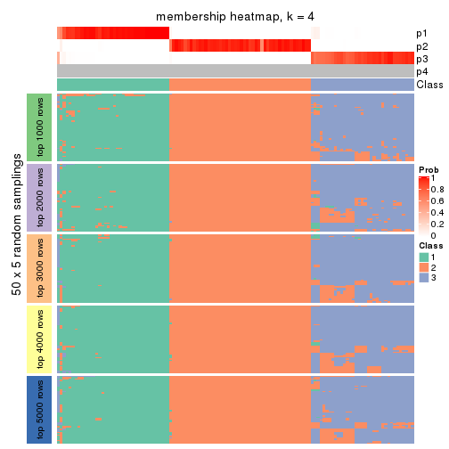
membership_heatmap(res, k = 5)
membership_heatmap(res, k = 6)
As soon as we have had the classes for columns, we can look for signatures which are significantly different between classes which can be candidate marks for certain classes. Following are the heatmaps for signatures.
Signature heatmaps where rows are scaled:
get_signatures(res, k = 2)
get_signatures(res, k = 3)
get_signatures(res, k = 4)
get_signatures(res, k = 5)
get_signatures(res, k = 6)
Signature heatmaps where rows are not scaled:
get_signatures(res, k = 2, scale_rows = FALSE)
get_signatures(res, k = 3, scale_rows = FALSE)
get_signatures(res, k = 4, scale_rows = FALSE)
get_signatures(res, k = 5, scale_rows = FALSE)
get_signatures(res, k = 6, scale_rows = FALSE)
Compare the overlap of signatures from different k:
compare_signatures(res)
get_signature() returns a data frame invisibly. TO get the list of signatures, the function
call should be assigned to a variable explicitly. In following code, if plot argument is set
to FALSE, no heatmap is plotted while only the differential analysis is performed.
# code only for demonstration
tb = get_signature(res, k = ..., plot = FALSE)
An example of the output of tb is:
#> which_row fdr mean_1 mean_2 scaled_mean_1 scaled_mean_2 km
#> 1 38 0.042760348 8.373488 9.131774 -0.5533452 0.5164555 1
#> 2 40 0.018707592 7.106213 8.469186 -0.6173731 0.5762149 1
#> 3 55 0.019134737 10.221463 11.207825 -0.6159697 0.5749050 1
#> 4 59 0.006059896 5.921854 7.869574 -0.6899429 0.6439467 1
#> 5 60 0.018055526 8.928898 10.211722 -0.6204761 0.5791110 1
#> 6 98 0.009384629 15.714769 14.887706 0.6635654 -0.6193277 2
...
The columns in tb are:
which_row: row indices corresponding to the input matrix.fdr: FDR for the differential test. mean_x: The mean value in group x.scaled_mean_x: The mean value in group x after rows are scaled.km: Row groups if k-means clustering is applied to rows.UMAP plot which shows how samples are separated.
dimension_reduction(res, k = 2, method = "UMAP")
dimension_reduction(res, k = 3, method = "UMAP")
dimension_reduction(res, k = 4, method = "UMAP")
dimension_reduction(res, k = 5, method = "UMAP")
dimension_reduction(res, k = 6, method = "UMAP")
Following heatmap shows how subgroups are split when increasing k:
collect_classes(res)
If matrix rows can be associated to genes, consider to use GO_Enrichment(res,
...) to perform function enrichment for the signature genes.
The object with results only for a single top-value method and a single partition method can be extracted as:
res = res_list["ATC", "hclust"]
# you can also extract it by
# res = res_list["ATC:hclust"]
A summary of res and all the functions that can be applied to it:
res
#> A 'ConsensusPartition' object with k = 2, 3, 4, 5, 6.
#> On a matrix with 10145 rows and 121 columns.
#> Top rows (1000, 2000, 3000, 4000, 5000) are extracted by 'ATC' method.
#> Subgroups are detected by 'hclust' method.
#> Performed in total 1250 partitions by row resampling.
#> Best k for subgroups seems to be 4.
#>
#> Following methods can be applied to this 'ConsensusPartition' object:
#> [1] "cola_report" "collect_classes" "collect_plots"
#> [4] "collect_stats" "colnames" "compare_signatures"
#> [7] "consensus_heatmap" "dimension_reduction" "functional_enrichment"
#> [10] "get_anno_col" "get_anno" "get_classes"
#> [13] "get_consensus" "get_matrix" "get_membership"
#> [16] "get_param" "get_signatures" "get_stats"
#> [19] "is_best_k" "is_stable_k" "membership_heatmap"
#> [22] "ncol" "nrow" "plot_ecdf"
#> [25] "rownames" "select_partition_number" "show"
#> [28] "suggest_best_k" "test_to_known_factors"
collect_plots() function collects all the plots made from res for all k (number of partitions)
into one single page to provide an easy and fast comparison between different k.
collect_plots(res)

The plots are:
k and the heatmap of
predicted classes for each k.k.k.k.All the plots in panels can be made by individual functions and they are plotted later in this section.
select_partition_number() produces several plots showing different
statistics for choosing “optimized” k. There are following statistics:
k;k, the area increased is defined as \(A_k - A_{k-1}\).The detailed explanations of these statistics can be found in the cola vignette.
Generally speaking, lower PAC score, higher mean silhouette score or higher
concordance corresponds to better partition. Rand index and Jaccard index
measure how similar the current partition is compared to partition with k-1.
If they are too similar, we won't accept k is better than k-1.
select_partition_number(res)

The numeric values for all these statistics can be obtained by get_stats().
get_stats(res)
#> k 1-PAC mean_silhouette concordance area_increased Rand Jaccard
#> 2 2 0.834 0.932 0.967 0.3430 0.650 0.650
#> 3 3 0.576 0.451 0.703 0.4728 0.859 0.793
#> 4 4 0.886 0.897 0.963 0.2954 0.675 0.476
#> 5 5 0.905 0.766 0.926 0.0553 0.994 0.982
#> 6 6 0.881 0.776 0.911 0.0214 0.971 0.915
suggest_best_k() suggests the best \(k\) based on these statistics. The rules are as follows:
NA.suggest_best_k(res)
#> [1] 4
Following shows the table of the partitions (You need to click the show/hide
code output link to see it). The membership matrix (columns with name p*)
is inferred by
clue::cl_consensus()
function with the SE method. Basically the value in the membership matrix
represents the probability to belong to a certain group. The finall class
label for an item is determined with the group with highest probability it
belongs to.
In get_classes() function, the entropy is calculated from the membership
matrix and the silhouette score is calculated from the consensus matrix.
cbind(get_classes(res, k = 2), get_membership(res, k = 2))
#> class entropy silhouette p1 p2
#> SRR2431463 2 0.0000 0.979 0.000 1.000
#> SRR2431462 2 0.0000 0.979 0.000 1.000
#> SRR2431461 2 0.0000 0.979 0.000 1.000
#> SRR2431459 2 0.0000 0.979 0.000 1.000
#> SRR2431460 2 0.0000 0.979 0.000 1.000
#> SRR2431458 2 0.0000 0.979 0.000 1.000
#> SRR2431457 2 0.0000 0.979 0.000 1.000
#> SRR2431455 2 0.0000 0.979 0.000 1.000
#> SRR2431456 2 0.0000 0.979 0.000 1.000
#> SRR2431454 2 0.6801 0.768 0.180 0.820
#> SRR2431453 2 0.0000 0.979 0.000 1.000
#> SRR2431451 2 0.0000 0.979 0.000 1.000
#> SRR2431452 2 0.8713 0.562 0.292 0.708
#> SRR2431450 2 0.0000 0.979 0.000 1.000
#> SRR2431449 2 0.0000 0.979 0.000 1.000
#> SRR2431448 2 0.0000 0.979 0.000 1.000
#> SRR2431446 2 0.0000 0.979 0.000 1.000
#> SRR2431447 2 0.0000 0.979 0.000 1.000
#> SRR2431445 2 0.0000 0.979 0.000 1.000
#> SRR2431444 2 0.6623 0.779 0.172 0.828
#> SRR2431443 2 0.0000 0.979 0.000 1.000
#> SRR2431442 2 0.0000 0.979 0.000 1.000
#> SRR2431441 2 0.0000 0.979 0.000 1.000
#> SRR2431440 2 0.0000 0.979 0.000 1.000
#> SRR2431439 2 0.0000 0.979 0.000 1.000
#> SRR2431438 2 0.0000 0.979 0.000 1.000
#> SRR2431437 2 0.0000 0.979 0.000 1.000
#> SRR2431436 2 0.6887 0.762 0.184 0.816
#> SRR2431435 2 0.3431 0.916 0.064 0.936
#> SRR2431434 2 0.0000 0.979 0.000 1.000
#> SRR2431433 2 0.0000 0.979 0.000 1.000
#> SRR2431432 2 0.0000 0.979 0.000 1.000
#> SRR2431431 2 0.0000 0.979 0.000 1.000
#> SRR2431430 2 0.0000 0.979 0.000 1.000
#> SRR2431429 2 0.0000 0.979 0.000 1.000
#> SRR2431428 2 0.0000 0.979 0.000 1.000
#> SRR2431427 2 0.0000 0.979 0.000 1.000
#> SRR2431426 2 0.0000 0.979 0.000 1.000
#> SRR2431425 2 0.0000 0.979 0.000 1.000
#> SRR2431424 2 0.0000 0.979 0.000 1.000
#> SRR2431423 2 0.0000 0.979 0.000 1.000
#> SRR2431422 2 0.0000 0.979 0.000 1.000
#> SRR2431421 2 0.0000 0.979 0.000 1.000
#> SRR2431420 2 0.0000 0.979 0.000 1.000
#> SRR2431419 2 0.0000 0.979 0.000 1.000
#> SRR2431418 2 0.0000 0.979 0.000 1.000
#> SRR2431417 2 0.0000 0.979 0.000 1.000
#> SRR2431416 2 0.0000 0.979 0.000 1.000
#> SRR2431415 2 0.0000 0.979 0.000 1.000
#> SRR2431414 2 0.0000 0.979 0.000 1.000
#> SRR2431413 2 0.0000 0.979 0.000 1.000
#> SRR2431412 2 0.0000 0.979 0.000 1.000
#> SRR2431411 1 0.0000 0.911 1.000 0.000
#> SRR2431409 2 0.0000 0.979 0.000 1.000
#> SRR2431410 2 0.0000 0.979 0.000 1.000
#> SRR2431408 2 0.0000 0.979 0.000 1.000
#> SRR2431407 2 0.0000 0.979 0.000 1.000
#> SRR2431405 2 0.0000 0.979 0.000 1.000
#> SRR2431406 2 0.0000 0.979 0.000 1.000
#> SRR2431404 2 0.0000 0.979 0.000 1.000
#> SRR2431403 2 0.0000 0.979 0.000 1.000
#> SRR2431402 2 0.0000 0.979 0.000 1.000
#> SRR2431401 2 0.0000 0.979 0.000 1.000
#> SRR2431400 2 0.0000 0.979 0.000 1.000
#> SRR2431399 2 0.0000 0.979 0.000 1.000
#> SRR2431398 2 0.0000 0.979 0.000 1.000
#> SRR2431397 2 0.0000 0.979 0.000 1.000
#> SRR2431396 2 0.3431 0.918 0.064 0.936
#> SRR2431395 2 0.0000 0.979 0.000 1.000
#> SRR2431394 2 0.0000 0.979 0.000 1.000
#> SRR2431393 2 0.0000 0.979 0.000 1.000
#> SRR2431392 2 0.0000 0.979 0.000 1.000
#> SRR2431391 2 0.0000 0.979 0.000 1.000
#> SRR2431390 2 0.0000 0.979 0.000 1.000
#> SRR2431389 2 0.0000 0.979 0.000 1.000
#> SRR2431388 2 0.0000 0.979 0.000 1.000
#> SRR2431387 2 0.0000 0.979 0.000 1.000
#> SRR2431386 2 0.0000 0.979 0.000 1.000
#> SRR2431385 2 0.6801 0.770 0.180 0.820
#> SRR2431383 2 0.0000 0.979 0.000 1.000
#> SRR2431384 2 0.0000 0.979 0.000 1.000
#> SRR2431382 2 0.0000 0.979 0.000 1.000
#> SRR2431381 2 0.0000 0.979 0.000 1.000
#> SRR2431380 2 0.0000 0.979 0.000 1.000
#> SRR2431379 1 0.0672 0.910 0.992 0.008
#> SRR2431378 1 0.9000 0.630 0.684 0.316
#> SRR2431376 1 0.8763 0.667 0.704 0.296
#> SRR2431377 2 0.6343 0.794 0.160 0.840
#> SRR2431375 1 0.0000 0.911 1.000 0.000
#> SRR2431374 2 0.0938 0.969 0.012 0.988
#> SRR2431372 1 0.0000 0.911 1.000 0.000
#> SRR2431371 1 0.8327 0.714 0.736 0.264
#> SRR2431373 1 0.0000 0.911 1.000 0.000
#> SRR2431370 1 0.0672 0.910 0.992 0.008
#> SRR2431369 1 0.8909 0.646 0.692 0.308
#> SRR2431368 1 0.0376 0.910 0.996 0.004
#> SRR2431367 1 0.0000 0.911 1.000 0.000
#> SRR2431366 2 0.7528 0.707 0.216 0.784
#> SRR2431365 2 0.7376 0.721 0.208 0.792
#> SRR2431364 1 0.0000 0.911 1.000 0.000
#> SRR2431363 1 0.0000 0.911 1.000 0.000
#> SRR2431361 1 0.6712 0.801 0.824 0.176
#> SRR2431362 1 0.0000 0.911 1.000 0.000
#> SRR2431360 1 0.0000 0.911 1.000 0.000
#> SRR2431359 1 0.8661 0.680 0.712 0.288
#> SRR2431358 2 0.0000 0.979 0.000 1.000
#> SRR2431357 2 0.0938 0.969 0.012 0.988
#> SRR2431355 2 0.1414 0.961 0.020 0.980
#> SRR2431356 1 0.0672 0.910 0.992 0.008
#> SRR2431354 1 0.0000 0.911 1.000 0.000
#> SRR2431353 2 0.0000 0.979 0.000 1.000
#> SRR2431352 2 0.0000 0.979 0.000 1.000
#> SRR2431351 1 0.0000 0.911 1.000 0.000
#> SRR2431350 1 0.0672 0.910 0.992 0.008
#> SRR2431349 1 0.0000 0.911 1.000 0.000
#> SRR2431348 1 0.0938 0.908 0.988 0.012
#> SRR2431347 1 0.8267 0.719 0.740 0.260
#> SRR2431346 1 0.7950 0.742 0.760 0.240
#> SRR2431345 1 0.0000 0.911 1.000 0.000
#> SRR2431344 2 0.0000 0.979 0.000 1.000
#> SRR2431343 2 0.0000 0.979 0.000 1.000
cbind(get_classes(res, k = 3), get_membership(res, k = 3))
#> class entropy silhouette p1 p2 p3
#> SRR2431463 2 0.6308 0.58322 0.000 0.508 0.492
#> SRR2431462 2 0.6308 0.58322 0.000 0.508 0.492
#> SRR2431461 2 0.6308 0.58322 0.000 0.508 0.492
#> SRR2431459 2 0.6308 0.58322 0.000 0.508 0.492
#> SRR2431460 2 0.6308 0.58322 0.000 0.508 0.492
#> SRR2431458 2 0.6308 0.58322 0.000 0.508 0.492
#> SRR2431457 2 0.6308 0.58322 0.000 0.508 0.492
#> SRR2431455 2 0.6308 0.58322 0.000 0.508 0.492
#> SRR2431456 2 0.6308 0.58322 0.000 0.508 0.492
#> SRR2431454 3 0.5760 -0.25656 0.000 0.328 0.672
#> SRR2431453 2 0.6308 0.58322 0.000 0.508 0.492
#> SRR2431451 2 0.6308 0.58322 0.000 0.508 0.492
#> SRR2431452 3 0.5817 -0.00309 0.020 0.236 0.744
#> SRR2431450 2 0.6308 0.58322 0.000 0.508 0.492
#> SRR2431449 2 0.6308 0.58322 0.000 0.508 0.492
#> SRR2431448 2 0.6308 0.58322 0.000 0.508 0.492
#> SRR2431446 2 0.6308 0.58322 0.000 0.508 0.492
#> SRR2431447 2 0.6308 0.58322 0.000 0.508 0.492
#> SRR2431445 2 0.6308 0.58322 0.000 0.508 0.492
#> SRR2431444 3 0.5810 -0.27526 0.000 0.336 0.664
#> SRR2431443 2 0.6308 0.58322 0.000 0.508 0.492
#> SRR2431442 2 0.6308 0.58322 0.000 0.508 0.492
#> SRR2431441 2 0.6308 0.58322 0.000 0.508 0.492
#> SRR2431440 2 0.6308 0.58322 0.000 0.508 0.492
#> SRR2431439 2 0.6308 0.58322 0.000 0.508 0.492
#> SRR2431438 2 0.6308 0.58322 0.000 0.508 0.492
#> SRR2431437 2 0.6308 0.58322 0.000 0.508 0.492
#> SRR2431436 3 0.5733 -0.24697 0.000 0.324 0.676
#> SRR2431435 3 0.6252 -0.49911 0.000 0.444 0.556
#> SRR2431434 2 0.6308 0.58322 0.000 0.508 0.492
#> SRR2431433 2 0.6308 0.58322 0.000 0.508 0.492
#> SRR2431432 2 0.6308 0.58322 0.000 0.508 0.492
#> SRR2431431 2 0.6308 0.58322 0.000 0.508 0.492
#> SRR2431430 2 0.6308 0.58322 0.000 0.508 0.492
#> SRR2431429 2 0.6308 0.58322 0.000 0.508 0.492
#> SRR2431428 2 0.6308 0.58322 0.000 0.508 0.492
#> SRR2431427 2 0.0000 0.71347 0.000 1.000 0.000
#> SRR2431426 2 0.0000 0.71347 0.000 1.000 0.000
#> SRR2431425 2 0.0000 0.71347 0.000 1.000 0.000
#> SRR2431424 2 0.0000 0.71347 0.000 1.000 0.000
#> SRR2431423 2 0.0000 0.71347 0.000 1.000 0.000
#> SRR2431422 2 0.0000 0.71347 0.000 1.000 0.000
#> SRR2431421 2 0.0000 0.71347 0.000 1.000 0.000
#> SRR2431420 2 0.0000 0.71347 0.000 1.000 0.000
#> SRR2431419 2 0.0000 0.71347 0.000 1.000 0.000
#> SRR2431418 2 0.0000 0.71347 0.000 1.000 0.000
#> SRR2431417 2 0.0000 0.71347 0.000 1.000 0.000
#> SRR2431416 2 0.0000 0.71347 0.000 1.000 0.000
#> SRR2431415 2 0.0000 0.71347 0.000 1.000 0.000
#> SRR2431414 2 0.0000 0.71347 0.000 1.000 0.000
#> SRR2431413 2 0.0000 0.71347 0.000 1.000 0.000
#> SRR2431412 2 0.0000 0.71347 0.000 1.000 0.000
#> SRR2431411 1 0.0000 0.00000 1.000 0.000 0.000
#> SRR2431409 2 0.0000 0.71347 0.000 1.000 0.000
#> SRR2431410 2 0.4796 0.64770 0.000 0.780 0.220
#> SRR2431408 2 0.0000 0.71347 0.000 1.000 0.000
#> SRR2431407 2 0.0000 0.71347 0.000 1.000 0.000
#> SRR2431405 2 0.0000 0.71347 0.000 1.000 0.000
#> SRR2431406 2 0.0000 0.71347 0.000 1.000 0.000
#> SRR2431404 2 0.0000 0.71347 0.000 1.000 0.000
#> SRR2431403 2 0.0000 0.71347 0.000 1.000 0.000
#> SRR2431402 2 0.0000 0.71347 0.000 1.000 0.000
#> SRR2431401 2 0.0000 0.71347 0.000 1.000 0.000
#> SRR2431400 2 0.0000 0.71347 0.000 1.000 0.000
#> SRR2431399 2 0.0000 0.71347 0.000 1.000 0.000
#> SRR2431398 2 0.0000 0.71347 0.000 1.000 0.000
#> SRR2431397 2 0.0000 0.71347 0.000 1.000 0.000
#> SRR2431396 2 0.2550 0.65400 0.012 0.932 0.056
#> SRR2431395 2 0.0000 0.71347 0.000 1.000 0.000
#> SRR2431394 2 0.0000 0.71347 0.000 1.000 0.000
#> SRR2431393 2 0.0000 0.71347 0.000 1.000 0.000
#> SRR2431392 2 0.0000 0.71347 0.000 1.000 0.000
#> SRR2431391 2 0.0000 0.71347 0.000 1.000 0.000
#> SRR2431390 2 0.0000 0.71347 0.000 1.000 0.000
#> SRR2431389 2 0.0000 0.71347 0.000 1.000 0.000
#> SRR2431388 2 0.0000 0.71347 0.000 1.000 0.000
#> SRR2431387 2 0.0592 0.71039 0.000 0.988 0.012
#> SRR2431386 2 0.0000 0.71347 0.000 1.000 0.000
#> SRR2431385 2 0.5307 0.50939 0.048 0.816 0.136
#> SRR2431383 2 0.0000 0.71347 0.000 1.000 0.000
#> SRR2431384 2 0.0000 0.71347 0.000 1.000 0.000
#> SRR2431382 2 0.0000 0.71347 0.000 1.000 0.000
#> SRR2431381 2 0.0000 0.71347 0.000 1.000 0.000
#> SRR2431380 2 0.0000 0.71347 0.000 1.000 0.000
#> SRR2431379 3 0.6305 0.07905 0.484 0.000 0.516
#> SRR2431378 3 0.5167 0.15012 0.192 0.016 0.792
#> SRR2431376 3 0.5220 0.15313 0.208 0.012 0.780
#> SRR2431377 2 0.8915 0.42374 0.124 0.472 0.404
#> SRR2431375 3 0.6308 0.07257 0.492 0.000 0.508
#> SRR2431374 3 0.6309 -0.58259 0.000 0.496 0.504
#> SRR2431372 3 0.6308 0.07257 0.492 0.000 0.508
#> SRR2431371 3 0.5578 0.14759 0.240 0.012 0.748
#> SRR2431373 3 0.6308 0.07257 0.492 0.000 0.508
#> SRR2431370 3 0.6305 0.07905 0.484 0.000 0.516
#> SRR2431369 3 0.5269 0.15265 0.200 0.016 0.784
#> SRR2431368 3 0.6307 0.07422 0.488 0.000 0.512
#> SRR2431367 3 0.6308 0.07257 0.492 0.000 0.508
#> SRR2431366 3 0.8929 -0.32449 0.124 0.416 0.460
#> SRR2431365 3 0.8884 -0.33830 0.120 0.420 0.460
#> SRR2431364 3 0.6308 0.07257 0.492 0.000 0.508
#> SRR2431363 3 0.6308 0.07257 0.492 0.000 0.508
#> SRR2431361 3 0.5678 0.09585 0.316 0.000 0.684
#> SRR2431362 3 0.6308 0.07257 0.492 0.000 0.508
#> SRR2431360 3 0.6308 0.07257 0.492 0.000 0.508
#> SRR2431359 3 0.4883 0.14998 0.208 0.004 0.788
#> SRR2431358 2 0.6308 0.58322 0.000 0.508 0.492
#> SRR2431357 3 0.6309 -0.58259 0.000 0.496 0.504
#> SRR2431355 2 0.6952 0.56726 0.016 0.504 0.480
#> SRR2431356 3 0.6305 0.07905 0.484 0.000 0.516
#> SRR2431354 3 0.6308 0.07257 0.492 0.000 0.508
#> SRR2431353 2 0.6308 0.58322 0.000 0.508 0.492
#> SRR2431352 2 0.6308 0.58322 0.000 0.508 0.492
#> SRR2431351 3 0.6308 0.07257 0.492 0.000 0.508
#> SRR2431350 3 0.6305 0.07905 0.484 0.000 0.516
#> SRR2431349 3 0.6308 0.07257 0.492 0.000 0.508
#> SRR2431348 3 0.6302 0.07814 0.480 0.000 0.520
#> SRR2431347 3 0.4931 0.14326 0.232 0.000 0.768
#> SRR2431346 3 0.5404 0.13570 0.256 0.004 0.740
#> SRR2431345 3 0.6308 0.07257 0.492 0.000 0.508
#> SRR2431344 2 0.6308 0.58322 0.000 0.508 0.492
#> SRR2431343 2 0.6308 0.58322 0.000 0.508 0.492
cbind(get_classes(res, k = 4), get_membership(res, k = 4))
#> class entropy silhouette p1 p2 p3 p4
#> SRR2431463 1 0.0000 0.957 1.000 0.000 0.000 0.000
#> SRR2431462 1 0.0000 0.957 1.000 0.000 0.000 0.000
#> SRR2431461 1 0.0000 0.957 1.000 0.000 0.000 0.000
#> SRR2431459 1 0.0000 0.957 1.000 0.000 0.000 0.000
#> SRR2431460 1 0.0000 0.957 1.000 0.000 0.000 0.000
#> SRR2431458 1 0.0000 0.957 1.000 0.000 0.000 0.000
#> SRR2431457 1 0.0000 0.957 1.000 0.000 0.000 0.000
#> SRR2431455 1 0.0000 0.957 1.000 0.000 0.000 0.000
#> SRR2431456 1 0.0000 0.957 1.000 0.000 0.000 0.000
#> SRR2431454 1 0.3583 0.767 0.816 0.000 0.180 0.004
#> SRR2431453 1 0.0000 0.957 1.000 0.000 0.000 0.000
#> SRR2431451 1 0.0000 0.957 1.000 0.000 0.000 0.000
#> SRR2431452 1 0.5696 0.503 0.664 0.036 0.292 0.008
#> SRR2431450 1 0.0000 0.957 1.000 0.000 0.000 0.000
#> SRR2431449 1 0.0000 0.957 1.000 0.000 0.000 0.000
#> SRR2431448 1 0.0000 0.957 1.000 0.000 0.000 0.000
#> SRR2431446 1 0.0000 0.957 1.000 0.000 0.000 0.000
#> SRR2431447 1 0.0000 0.957 1.000 0.000 0.000 0.000
#> SRR2431445 1 0.0000 0.957 1.000 0.000 0.000 0.000
#> SRR2431444 1 0.3494 0.777 0.824 0.000 0.172 0.004
#> SRR2431443 1 0.0000 0.957 1.000 0.000 0.000 0.000
#> SRR2431442 1 0.0000 0.957 1.000 0.000 0.000 0.000
#> SRR2431441 1 0.0000 0.957 1.000 0.000 0.000 0.000
#> SRR2431440 1 0.0000 0.957 1.000 0.000 0.000 0.000
#> SRR2431439 1 0.0000 0.957 1.000 0.000 0.000 0.000
#> SRR2431438 1 0.0000 0.957 1.000 0.000 0.000 0.000
#> SRR2431437 1 0.0000 0.957 1.000 0.000 0.000 0.000
#> SRR2431436 1 0.3626 0.762 0.812 0.000 0.184 0.004
#> SRR2431435 1 0.1716 0.901 0.936 0.000 0.064 0.000
#> SRR2431434 1 0.0000 0.957 1.000 0.000 0.000 0.000
#> SRR2431433 1 0.0000 0.957 1.000 0.000 0.000 0.000
#> SRR2431432 1 0.0000 0.957 1.000 0.000 0.000 0.000
#> SRR2431431 1 0.0000 0.957 1.000 0.000 0.000 0.000
#> SRR2431430 1 0.0000 0.957 1.000 0.000 0.000 0.000
#> SRR2431429 1 0.0000 0.957 1.000 0.000 0.000 0.000
#> SRR2431428 1 0.0000 0.957 1.000 0.000 0.000 0.000
#> SRR2431427 2 0.0000 0.980 0.000 1.000 0.000 0.000
#> SRR2431426 2 0.0000 0.980 0.000 1.000 0.000 0.000
#> SRR2431425 2 0.0000 0.980 0.000 1.000 0.000 0.000
#> SRR2431424 2 0.0000 0.980 0.000 1.000 0.000 0.000
#> SRR2431423 2 0.0000 0.980 0.000 1.000 0.000 0.000
#> SRR2431422 2 0.0000 0.980 0.000 1.000 0.000 0.000
#> SRR2431421 2 0.0000 0.980 0.000 1.000 0.000 0.000
#> SRR2431420 2 0.0000 0.980 0.000 1.000 0.000 0.000
#> SRR2431419 2 0.0000 0.980 0.000 1.000 0.000 0.000
#> SRR2431418 2 0.0000 0.980 0.000 1.000 0.000 0.000
#> SRR2431417 2 0.0000 0.980 0.000 1.000 0.000 0.000
#> SRR2431416 2 0.0000 0.980 0.000 1.000 0.000 0.000
#> SRR2431415 2 0.0000 0.980 0.000 1.000 0.000 0.000
#> SRR2431414 2 0.0000 0.980 0.000 1.000 0.000 0.000
#> SRR2431413 2 0.0000 0.980 0.000 1.000 0.000 0.000
#> SRR2431412 2 0.0000 0.980 0.000 1.000 0.000 0.000
#> SRR2431411 4 0.0469 0.000 0.000 0.000 0.012 0.988
#> SRR2431409 2 0.0000 0.980 0.000 1.000 0.000 0.000
#> SRR2431410 2 0.4916 0.198 0.424 0.576 0.000 0.000
#> SRR2431408 2 0.0000 0.980 0.000 1.000 0.000 0.000
#> SRR2431407 2 0.0000 0.980 0.000 1.000 0.000 0.000
#> SRR2431405 2 0.0000 0.980 0.000 1.000 0.000 0.000
#> SRR2431406 2 0.0000 0.980 0.000 1.000 0.000 0.000
#> SRR2431404 2 0.0000 0.980 0.000 1.000 0.000 0.000
#> SRR2431403 2 0.0000 0.980 0.000 1.000 0.000 0.000
#> SRR2431402 2 0.0000 0.980 0.000 1.000 0.000 0.000
#> SRR2431401 2 0.0000 0.980 0.000 1.000 0.000 0.000
#> SRR2431400 2 0.0000 0.980 0.000 1.000 0.000 0.000
#> SRR2431399 2 0.0000 0.980 0.000 1.000 0.000 0.000
#> SRR2431398 2 0.0000 0.980 0.000 1.000 0.000 0.000
#> SRR2431397 2 0.0000 0.980 0.000 1.000 0.000 0.000
#> SRR2431396 2 0.1902 0.900 0.000 0.932 0.064 0.004
#> SRR2431395 2 0.0000 0.980 0.000 1.000 0.000 0.000
#> SRR2431394 2 0.0000 0.980 0.000 1.000 0.000 0.000
#> SRR2431393 2 0.0000 0.980 0.000 1.000 0.000 0.000
#> SRR2431392 2 0.0000 0.980 0.000 1.000 0.000 0.000
#> SRR2431391 2 0.0000 0.980 0.000 1.000 0.000 0.000
#> SRR2431390 2 0.0000 0.980 0.000 1.000 0.000 0.000
#> SRR2431389 2 0.0000 0.980 0.000 1.000 0.000 0.000
#> SRR2431388 2 0.0000 0.980 0.000 1.000 0.000 0.000
#> SRR2431387 2 0.0707 0.954 0.020 0.980 0.000 0.000
#> SRR2431386 2 0.0000 0.980 0.000 1.000 0.000 0.000
#> SRR2431385 2 0.3764 0.734 0.000 0.816 0.172 0.012
#> SRR2431383 2 0.0000 0.980 0.000 1.000 0.000 0.000
#> SRR2431384 2 0.0000 0.980 0.000 1.000 0.000 0.000
#> SRR2431382 2 0.0000 0.980 0.000 1.000 0.000 0.000
#> SRR2431381 2 0.0000 0.980 0.000 1.000 0.000 0.000
#> SRR2431380 2 0.0000 0.980 0.000 1.000 0.000 0.000
#> SRR2431379 3 0.0336 0.850 0.000 0.000 0.992 0.008
#> SRR2431378 3 0.4868 0.582 0.304 0.000 0.684 0.012
#> SRR2431376 3 0.4744 0.611 0.284 0.000 0.704 0.012
#> SRR2431377 1 0.3625 0.780 0.828 0.000 0.160 0.012
#> SRR2431375 3 0.0000 0.852 0.000 0.000 1.000 0.000
#> SRR2431374 1 0.0937 0.941 0.976 0.000 0.012 0.012
#> SRR2431372 3 0.0000 0.852 0.000 0.000 1.000 0.000
#> SRR2431371 3 0.4516 0.650 0.252 0.000 0.736 0.012
#> SRR2431373 3 0.0000 0.852 0.000 0.000 1.000 0.000
#> SRR2431370 3 0.0336 0.850 0.000 0.000 0.992 0.008
#> SRR2431369 3 0.4820 0.594 0.296 0.000 0.692 0.012
#> SRR2431368 3 0.0188 0.851 0.004 0.000 0.996 0.000
#> SRR2431367 3 0.0000 0.852 0.000 0.000 1.000 0.000
#> SRR2431366 1 0.4212 0.702 0.772 0.000 0.216 0.012
#> SRR2431365 1 0.4137 0.716 0.780 0.000 0.208 0.012
#> SRR2431364 3 0.0000 0.852 0.000 0.000 1.000 0.000
#> SRR2431363 3 0.0000 0.852 0.000 0.000 1.000 0.000
#> SRR2431361 3 0.3672 0.726 0.164 0.000 0.824 0.012
#> SRR2431362 3 0.0000 0.852 0.000 0.000 1.000 0.000
#> SRR2431360 3 0.0000 0.852 0.000 0.000 1.000 0.000
#> SRR2431359 3 0.4690 0.622 0.276 0.000 0.712 0.012
#> SRR2431358 1 0.0000 0.957 1.000 0.000 0.000 0.000
#> SRR2431357 1 0.0937 0.941 0.976 0.000 0.012 0.012
#> SRR2431355 1 0.0707 0.942 0.980 0.000 0.020 0.000
#> SRR2431356 3 0.0336 0.850 0.000 0.000 0.992 0.008
#> SRR2431354 3 0.0000 0.852 0.000 0.000 1.000 0.000
#> SRR2431353 1 0.0000 0.957 1.000 0.000 0.000 0.000
#> SRR2431352 1 0.0000 0.957 1.000 0.000 0.000 0.000
#> SRR2431351 3 0.0000 0.852 0.000 0.000 1.000 0.000
#> SRR2431350 3 0.0336 0.850 0.000 0.000 0.992 0.008
#> SRR2431349 3 0.0000 0.852 0.000 0.000 1.000 0.000
#> SRR2431348 3 0.0469 0.849 0.000 0.000 0.988 0.012
#> SRR2431347 3 0.4485 0.654 0.248 0.000 0.740 0.012
#> SRR2431346 3 0.4319 0.672 0.228 0.000 0.760 0.012
#> SRR2431345 3 0.0000 0.852 0.000 0.000 1.000 0.000
#> SRR2431344 1 0.0000 0.957 1.000 0.000 0.000 0.000
#> SRR2431343 1 0.0000 0.957 1.000 0.000 0.000 0.000
cbind(get_classes(res, k = 5), get_membership(res, k = 5))
#> class entropy silhouette p1 p2 p3 p4 p5
#> SRR2431463 1 0.0000 0.8571 1.000 0.000 0.000 0.000 0.000
#> SRR2431462 1 0.0000 0.8571 1.000 0.000 0.000 0.000 0.000
#> SRR2431461 1 0.0162 0.8549 0.996 0.000 0.000 0.004 0.000
#> SRR2431459 1 0.0000 0.8571 1.000 0.000 0.000 0.000 0.000
#> SRR2431460 1 0.0000 0.8571 1.000 0.000 0.000 0.000 0.000
#> SRR2431458 1 0.0290 0.8528 0.992 0.000 0.000 0.008 0.000
#> SRR2431457 1 0.0000 0.8571 1.000 0.000 0.000 0.000 0.000
#> SRR2431455 1 0.0000 0.8571 1.000 0.000 0.000 0.000 0.000
#> SRR2431456 1 0.0000 0.8571 1.000 0.000 0.000 0.000 0.000
#> SRR2431454 1 0.4815 -0.6193 0.524 0.000 0.020 0.456 0.000
#> SRR2431453 1 0.0000 0.8571 1.000 0.000 0.000 0.000 0.000
#> SRR2431451 1 0.1410 0.7953 0.940 0.000 0.000 0.060 0.000
#> SRR2431452 4 0.5449 0.0000 0.376 0.000 0.068 0.556 0.000
#> SRR2431450 1 0.0000 0.8571 1.000 0.000 0.000 0.000 0.000
#> SRR2431449 1 0.0000 0.8571 1.000 0.000 0.000 0.000 0.000
#> SRR2431448 1 0.0290 0.8528 0.992 0.000 0.000 0.008 0.000
#> SRR2431446 1 0.0000 0.8571 1.000 0.000 0.000 0.000 0.000
#> SRR2431447 1 0.0290 0.8528 0.992 0.000 0.000 0.008 0.000
#> SRR2431445 1 0.0000 0.8571 1.000 0.000 0.000 0.000 0.000
#> SRR2431444 1 0.4826 -0.6544 0.508 0.000 0.020 0.472 0.000
#> SRR2431443 1 0.0000 0.8571 1.000 0.000 0.000 0.000 0.000
#> SRR2431442 1 0.0000 0.8571 1.000 0.000 0.000 0.000 0.000
#> SRR2431441 1 0.0000 0.8571 1.000 0.000 0.000 0.000 0.000
#> SRR2431440 1 0.1341 0.7980 0.944 0.000 0.000 0.056 0.000
#> SRR2431439 1 0.0000 0.8571 1.000 0.000 0.000 0.000 0.000
#> SRR2431438 1 0.0000 0.8571 1.000 0.000 0.000 0.000 0.000
#> SRR2431437 1 0.0000 0.8571 1.000 0.000 0.000 0.000 0.000
#> SRR2431436 1 0.4906 -0.6855 0.496 0.000 0.024 0.480 0.000
#> SRR2431435 1 0.3885 0.2601 0.724 0.000 0.008 0.268 0.000
#> SRR2431434 1 0.0000 0.8571 1.000 0.000 0.000 0.000 0.000
#> SRR2431433 1 0.0000 0.8571 1.000 0.000 0.000 0.000 0.000
#> SRR2431432 1 0.0290 0.8528 0.992 0.000 0.000 0.008 0.000
#> SRR2431431 1 0.0162 0.8550 0.996 0.000 0.000 0.004 0.000
#> SRR2431430 1 0.1270 0.8017 0.948 0.000 0.000 0.052 0.000
#> SRR2431429 1 0.0000 0.8571 1.000 0.000 0.000 0.000 0.000
#> SRR2431428 1 0.0000 0.8571 1.000 0.000 0.000 0.000 0.000
#> SRR2431427 2 0.0000 0.9616 0.000 1.000 0.000 0.000 0.000
#> SRR2431426 2 0.0000 0.9616 0.000 1.000 0.000 0.000 0.000
#> SRR2431425 2 0.0000 0.9616 0.000 1.000 0.000 0.000 0.000
#> SRR2431424 2 0.0000 0.9616 0.000 1.000 0.000 0.000 0.000
#> SRR2431423 2 0.0000 0.9616 0.000 1.000 0.000 0.000 0.000
#> SRR2431422 2 0.0000 0.9616 0.000 1.000 0.000 0.000 0.000
#> SRR2431421 2 0.0000 0.9616 0.000 1.000 0.000 0.000 0.000
#> SRR2431420 2 0.0000 0.9616 0.000 1.000 0.000 0.000 0.000
#> SRR2431419 2 0.0000 0.9616 0.000 1.000 0.000 0.000 0.000
#> SRR2431418 2 0.0000 0.9616 0.000 1.000 0.000 0.000 0.000
#> SRR2431417 2 0.0000 0.9616 0.000 1.000 0.000 0.000 0.000
#> SRR2431416 2 0.0000 0.9616 0.000 1.000 0.000 0.000 0.000
#> SRR2431415 2 0.0000 0.9616 0.000 1.000 0.000 0.000 0.000
#> SRR2431414 2 0.0000 0.9616 0.000 1.000 0.000 0.000 0.000
#> SRR2431413 2 0.2561 0.8292 0.000 0.856 0.000 0.144 0.000
#> SRR2431412 2 0.0000 0.9616 0.000 1.000 0.000 0.000 0.000
#> SRR2431411 5 0.0000 0.0000 0.000 0.000 0.000 0.000 1.000
#> SRR2431409 2 0.0000 0.9616 0.000 1.000 0.000 0.000 0.000
#> SRR2431410 2 0.5840 -0.0673 0.416 0.488 0.000 0.096 0.000
#> SRR2431408 2 0.0000 0.9616 0.000 1.000 0.000 0.000 0.000
#> SRR2431407 2 0.0000 0.9616 0.000 1.000 0.000 0.000 0.000
#> SRR2431405 2 0.2561 0.8292 0.000 0.856 0.000 0.144 0.000
#> SRR2431406 2 0.0000 0.9616 0.000 1.000 0.000 0.000 0.000
#> SRR2431404 2 0.0000 0.9616 0.000 1.000 0.000 0.000 0.000
#> SRR2431403 2 0.0000 0.9616 0.000 1.000 0.000 0.000 0.000
#> SRR2431402 2 0.0000 0.9616 0.000 1.000 0.000 0.000 0.000
#> SRR2431401 2 0.0000 0.9616 0.000 1.000 0.000 0.000 0.000
#> SRR2431400 2 0.0000 0.9616 0.000 1.000 0.000 0.000 0.000
#> SRR2431399 2 0.0000 0.9616 0.000 1.000 0.000 0.000 0.000
#> SRR2431398 2 0.0000 0.9616 0.000 1.000 0.000 0.000 0.000
#> SRR2431397 2 0.0000 0.9616 0.000 1.000 0.000 0.000 0.000
#> SRR2431396 2 0.3224 0.7862 0.000 0.824 0.016 0.160 0.000
#> SRR2431395 2 0.0000 0.9616 0.000 1.000 0.000 0.000 0.000
#> SRR2431394 2 0.0000 0.9616 0.000 1.000 0.000 0.000 0.000
#> SRR2431393 2 0.0000 0.9616 0.000 1.000 0.000 0.000 0.000
#> SRR2431392 2 0.0000 0.9616 0.000 1.000 0.000 0.000 0.000
#> SRR2431391 2 0.0000 0.9616 0.000 1.000 0.000 0.000 0.000
#> SRR2431390 2 0.0000 0.9616 0.000 1.000 0.000 0.000 0.000
#> SRR2431389 2 0.0000 0.9616 0.000 1.000 0.000 0.000 0.000
#> SRR2431388 2 0.0000 0.9616 0.000 1.000 0.000 0.000 0.000
#> SRR2431387 2 0.0898 0.9340 0.020 0.972 0.000 0.008 0.000
#> SRR2431386 2 0.0000 0.9616 0.000 1.000 0.000 0.000 0.000
#> SRR2431385 2 0.5942 0.1735 0.000 0.512 0.084 0.396 0.008
#> SRR2431383 2 0.2561 0.8292 0.000 0.856 0.000 0.144 0.000
#> SRR2431384 2 0.0000 0.9616 0.000 1.000 0.000 0.000 0.000
#> SRR2431382 2 0.0000 0.9616 0.000 1.000 0.000 0.000 0.000
#> SRR2431381 2 0.0000 0.9616 0.000 1.000 0.000 0.000 0.000
#> SRR2431380 2 0.0000 0.9616 0.000 1.000 0.000 0.000 0.000
#> SRR2431379 3 0.0290 0.8591 0.000 0.000 0.992 0.008 0.000
#> SRR2431378 3 0.5113 0.5255 0.044 0.000 0.576 0.380 0.000
#> SRR2431376 3 0.4886 0.5656 0.032 0.000 0.596 0.372 0.000
#> SRR2431377 1 0.5437 -0.0476 0.652 0.000 0.128 0.220 0.000
#> SRR2431375 3 0.0000 0.8597 0.000 0.000 1.000 0.000 0.000
#> SRR2431374 1 0.3039 0.5328 0.808 0.000 0.000 0.192 0.000
#> SRR2431372 3 0.0000 0.8597 0.000 0.000 1.000 0.000 0.000
#> SRR2431371 3 0.4624 0.6186 0.024 0.000 0.636 0.340 0.000
#> SRR2431373 3 0.0000 0.8597 0.000 0.000 1.000 0.000 0.000
#> SRR2431370 3 0.0703 0.8559 0.000 0.000 0.976 0.024 0.000
#> SRR2431369 3 0.4980 0.5447 0.036 0.000 0.584 0.380 0.000
#> SRR2431368 3 0.0510 0.8579 0.000 0.000 0.984 0.016 0.000
#> SRR2431367 3 0.0162 0.8596 0.000 0.000 0.996 0.004 0.000
#> SRR2431366 1 0.6075 -0.5255 0.512 0.000 0.132 0.356 0.000
#> SRR2431365 1 0.6031 -0.5110 0.520 0.000 0.128 0.352 0.000
#> SRR2431364 3 0.0000 0.8597 0.000 0.000 1.000 0.000 0.000
#> SRR2431363 3 0.0000 0.8597 0.000 0.000 1.000 0.000 0.000
#> SRR2431361 3 0.3807 0.7210 0.012 0.000 0.748 0.240 0.000
#> SRR2431362 3 0.0000 0.8597 0.000 0.000 1.000 0.000 0.000
#> SRR2431360 3 0.0000 0.8597 0.000 0.000 1.000 0.000 0.000
#> SRR2431359 3 0.4734 0.5801 0.024 0.000 0.604 0.372 0.000
#> SRR2431358 1 0.0703 0.8383 0.976 0.000 0.000 0.024 0.000
#> SRR2431357 1 0.3039 0.5328 0.808 0.000 0.000 0.192 0.000
#> SRR2431355 1 0.1399 0.8104 0.952 0.000 0.020 0.028 0.000
#> SRR2431356 3 0.0609 0.8574 0.000 0.000 0.980 0.020 0.000
#> SRR2431354 3 0.0000 0.8597 0.000 0.000 1.000 0.000 0.000
#> SRR2431353 1 0.0703 0.8383 0.976 0.000 0.000 0.024 0.000
#> SRR2431352 1 0.0703 0.8383 0.976 0.000 0.000 0.024 0.000
#> SRR2431351 3 0.0000 0.8597 0.000 0.000 1.000 0.000 0.000
#> SRR2431350 3 0.0609 0.8574 0.000 0.000 0.980 0.020 0.000
#> SRR2431349 3 0.0000 0.8597 0.000 0.000 1.000 0.000 0.000
#> SRR2431348 3 0.0510 0.8583 0.000 0.000 0.984 0.016 0.000
#> SRR2431347 3 0.4416 0.6185 0.012 0.000 0.632 0.356 0.000
#> SRR2431346 3 0.4366 0.6493 0.016 0.000 0.664 0.320 0.000
#> SRR2431345 3 0.0000 0.8597 0.000 0.000 1.000 0.000 0.000
#> SRR2431344 1 0.0703 0.8383 0.976 0.000 0.000 0.024 0.000
#> SRR2431343 1 0.0000 0.8571 1.000 0.000 0.000 0.000 0.000
cbind(get_classes(res, k = 6), get_membership(res, k = 6))
#> class entropy silhouette p1 p2 p3 p4 p5 p6
#> SRR2431463 1 0.0000 0.9026 1.000 0.000 0.000 0.000 0 0.000
#> SRR2431462 1 0.0000 0.9026 1.000 0.000 0.000 0.000 0 0.000
#> SRR2431461 1 0.0146 0.9008 0.996 0.000 0.000 0.000 0 0.004
#> SRR2431459 1 0.0000 0.9026 1.000 0.000 0.000 0.000 0 0.000
#> SRR2431460 1 0.0000 0.9026 1.000 0.000 0.000 0.000 0 0.000
#> SRR2431458 1 0.0458 0.8940 0.984 0.000 0.000 0.000 0 0.016
#> SRR2431457 1 0.0000 0.9026 1.000 0.000 0.000 0.000 0 0.000
#> SRR2431455 1 0.0000 0.9026 1.000 0.000 0.000 0.000 0 0.000
#> SRR2431456 1 0.0000 0.9026 1.000 0.000 0.000 0.000 0 0.000
#> SRR2431454 6 0.4109 0.6061 0.412 0.000 0.000 0.012 0 0.576
#> SRR2431453 1 0.0000 0.9026 1.000 0.000 0.000 0.000 0 0.000
#> SRR2431451 1 0.2218 0.7835 0.884 0.000 0.000 0.012 0 0.104
#> SRR2431452 6 0.5533 0.4839 0.268 0.000 0.012 0.136 0 0.584
#> SRR2431450 1 0.0000 0.9026 1.000 0.000 0.000 0.000 0 0.000
#> SRR2431449 1 0.0000 0.9026 1.000 0.000 0.000 0.000 0 0.000
#> SRR2431448 1 0.0260 0.8992 0.992 0.000 0.000 0.000 0 0.008
#> SRR2431446 1 0.0000 0.9026 1.000 0.000 0.000 0.000 0 0.000
#> SRR2431447 1 0.0458 0.8940 0.984 0.000 0.000 0.000 0 0.016
#> SRR2431445 1 0.0000 0.9026 1.000 0.000 0.000 0.000 0 0.000
#> SRR2431444 6 0.4066 0.6401 0.392 0.000 0.000 0.012 0 0.596
#> SRR2431443 1 0.0000 0.9026 1.000 0.000 0.000 0.000 0 0.000
#> SRR2431442 1 0.0000 0.9026 1.000 0.000 0.000 0.000 0 0.000
#> SRR2431441 1 0.0000 0.9026 1.000 0.000 0.000 0.000 0 0.000
#> SRR2431440 1 0.2170 0.7833 0.888 0.000 0.000 0.012 0 0.100
#> SRR2431439 1 0.0000 0.9026 1.000 0.000 0.000 0.000 0 0.000
#> SRR2431438 1 0.0000 0.9026 1.000 0.000 0.000 0.000 0 0.000
#> SRR2431437 1 0.0000 0.9026 1.000 0.000 0.000 0.000 0 0.000
#> SRR2431436 6 0.4026 0.6537 0.376 0.000 0.000 0.012 0 0.612
#> SRR2431435 1 0.3867 0.2407 0.660 0.000 0.000 0.012 0 0.328
#> SRR2431434 1 0.0000 0.9026 1.000 0.000 0.000 0.000 0 0.000
#> SRR2431433 1 0.0000 0.9026 1.000 0.000 0.000 0.000 0 0.000
#> SRR2431432 1 0.0260 0.8992 0.992 0.000 0.000 0.000 0 0.008
#> SRR2431431 1 0.0260 0.8988 0.992 0.000 0.000 0.000 0 0.008
#> SRR2431430 1 0.2070 0.7885 0.892 0.000 0.000 0.008 0 0.100
#> SRR2431429 1 0.0000 0.9026 1.000 0.000 0.000 0.000 0 0.000
#> SRR2431428 1 0.0363 0.8970 0.988 0.000 0.000 0.000 0 0.012
#> SRR2431427 2 0.0000 0.9428 0.000 1.000 0.000 0.000 0 0.000
#> SRR2431426 2 0.0000 0.9428 0.000 1.000 0.000 0.000 0 0.000
#> SRR2431425 2 0.0000 0.9428 0.000 1.000 0.000 0.000 0 0.000
#> SRR2431424 2 0.0000 0.9428 0.000 1.000 0.000 0.000 0 0.000
#> SRR2431423 2 0.0000 0.9428 0.000 1.000 0.000 0.000 0 0.000
#> SRR2431422 2 0.0000 0.9428 0.000 1.000 0.000 0.000 0 0.000
#> SRR2431421 2 0.0146 0.9382 0.000 0.996 0.000 0.004 0 0.000
#> SRR2431420 2 0.0000 0.9428 0.000 1.000 0.000 0.000 0 0.000
#> SRR2431419 2 0.0000 0.9428 0.000 1.000 0.000 0.000 0 0.000
#> SRR2431418 2 0.0000 0.9428 0.000 1.000 0.000 0.000 0 0.000
#> SRR2431417 2 0.0000 0.9428 0.000 1.000 0.000 0.000 0 0.000
#> SRR2431416 2 0.0000 0.9428 0.000 1.000 0.000 0.000 0 0.000
#> SRR2431415 2 0.0000 0.9428 0.000 1.000 0.000 0.000 0 0.000
#> SRR2431414 2 0.0000 0.9428 0.000 1.000 0.000 0.000 0 0.000
#> SRR2431413 2 0.4459 0.4074 0.000 0.712 0.000 0.132 0 0.156
#> SRR2431412 2 0.0000 0.9428 0.000 1.000 0.000 0.000 0 0.000
#> SRR2431411 5 0.0000 0.0000 0.000 0.000 0.000 0.000 1 0.000
#> SRR2431409 2 0.0000 0.9428 0.000 1.000 0.000 0.000 0 0.000
#> SRR2431410 2 0.7011 -0.4642 0.256 0.392 0.000 0.284 0 0.068
#> SRR2431408 2 0.0000 0.9428 0.000 1.000 0.000 0.000 0 0.000
#> SRR2431407 2 0.0000 0.9428 0.000 1.000 0.000 0.000 0 0.000
#> SRR2431405 2 0.4459 0.4074 0.000 0.712 0.000 0.132 0 0.156
#> SRR2431406 2 0.0000 0.9428 0.000 1.000 0.000 0.000 0 0.000
#> SRR2431404 2 0.0000 0.9428 0.000 1.000 0.000 0.000 0 0.000
#> SRR2431403 2 0.0000 0.9428 0.000 1.000 0.000 0.000 0 0.000
#> SRR2431402 2 0.0000 0.9428 0.000 1.000 0.000 0.000 0 0.000
#> SRR2431401 2 0.0000 0.9428 0.000 1.000 0.000 0.000 0 0.000
#> SRR2431400 2 0.0000 0.9428 0.000 1.000 0.000 0.000 0 0.000
#> SRR2431399 2 0.0000 0.9428 0.000 1.000 0.000 0.000 0 0.000
#> SRR2431398 2 0.0000 0.9428 0.000 1.000 0.000 0.000 0 0.000
#> SRR2431397 2 0.0000 0.9428 0.000 1.000 0.000 0.000 0 0.000
#> SRR2431396 2 0.3383 0.4011 0.000 0.728 0.000 0.268 0 0.004
#> SRR2431395 2 0.0000 0.9428 0.000 1.000 0.000 0.000 0 0.000
#> SRR2431394 2 0.0000 0.9428 0.000 1.000 0.000 0.000 0 0.000
#> SRR2431393 2 0.0000 0.9428 0.000 1.000 0.000 0.000 0 0.000
#> SRR2431392 2 0.0000 0.9428 0.000 1.000 0.000 0.000 0 0.000
#> SRR2431391 2 0.0000 0.9428 0.000 1.000 0.000 0.000 0 0.000
#> SRR2431390 2 0.0000 0.9428 0.000 1.000 0.000 0.000 0 0.000
#> SRR2431389 2 0.0000 0.9428 0.000 1.000 0.000 0.000 0 0.000
#> SRR2431388 2 0.0000 0.9428 0.000 1.000 0.000 0.000 0 0.000
#> SRR2431387 2 0.0837 0.9085 0.004 0.972 0.000 0.020 0 0.004
#> SRR2431386 2 0.0000 0.9428 0.000 1.000 0.000 0.000 0 0.000
#> SRR2431385 4 0.5081 0.0000 0.000 0.280 0.044 0.636 0 0.040
#> SRR2431383 2 0.4459 0.4074 0.000 0.712 0.000 0.132 0 0.156
#> SRR2431384 2 0.0000 0.9428 0.000 1.000 0.000 0.000 0 0.000
#> SRR2431382 2 0.0000 0.9428 0.000 1.000 0.000 0.000 0 0.000
#> SRR2431381 2 0.0000 0.9428 0.000 1.000 0.000 0.000 0 0.000
#> SRR2431380 2 0.0000 0.9428 0.000 1.000 0.000 0.000 0 0.000
#> SRR2431379 3 0.0260 0.8554 0.000 0.000 0.992 0.000 0 0.008
#> SRR2431378 6 0.3999 -0.4724 0.004 0.000 0.496 0.000 0 0.500
#> SRR2431376 3 0.3862 0.3788 0.000 0.000 0.524 0.000 0 0.476
#> SRR2431377 1 0.4660 0.0864 0.612 0.000 0.060 0.000 0 0.328
#> SRR2431375 3 0.0146 0.8554 0.000 0.000 0.996 0.000 0 0.004
#> SRR2431374 1 0.2969 0.5727 0.776 0.000 0.000 0.000 0 0.224
#> SRR2431372 3 0.0000 0.8559 0.000 0.000 1.000 0.000 0 0.000
#> SRR2431371 3 0.3727 0.5188 0.000 0.000 0.612 0.000 0 0.388
#> SRR2431373 3 0.0000 0.8559 0.000 0.000 1.000 0.000 0 0.000
#> SRR2431370 3 0.0713 0.8506 0.000 0.000 0.972 0.000 0 0.028
#> SRR2431369 3 0.3999 0.3254 0.004 0.000 0.500 0.000 0 0.496
#> SRR2431368 3 0.0547 0.8531 0.000 0.000 0.980 0.000 0 0.020
#> SRR2431367 3 0.0146 0.8560 0.000 0.000 0.996 0.000 0 0.004
#> SRR2431366 1 0.4903 -0.3962 0.472 0.000 0.060 0.000 0 0.468
#> SRR2431365 1 0.4856 -0.3812 0.480 0.000 0.056 0.000 0 0.464
#> SRR2431364 3 0.0146 0.8554 0.000 0.000 0.996 0.000 0 0.004
#> SRR2431363 3 0.0146 0.8554 0.000 0.000 0.996 0.000 0 0.004
#> SRR2431361 3 0.3221 0.6647 0.000 0.000 0.736 0.000 0 0.264
#> SRR2431362 3 0.0000 0.8559 0.000 0.000 1.000 0.000 0 0.000
#> SRR2431360 3 0.0146 0.8554 0.000 0.000 0.996 0.000 0 0.004
#> SRR2431359 3 0.3851 0.4065 0.000 0.000 0.540 0.000 0 0.460
#> SRR2431358 1 0.0865 0.8791 0.964 0.000 0.000 0.000 0 0.036
#> SRR2431357 1 0.2969 0.5727 0.776 0.000 0.000 0.000 0 0.224
#> SRR2431355 1 0.1411 0.8544 0.936 0.000 0.004 0.000 0 0.060
#> SRR2431356 3 0.0632 0.8522 0.000 0.000 0.976 0.000 0 0.024
#> SRR2431354 3 0.0146 0.8554 0.000 0.000 0.996 0.000 0 0.004
#> SRR2431353 1 0.0865 0.8791 0.964 0.000 0.000 0.000 0 0.036
#> SRR2431352 1 0.0865 0.8791 0.964 0.000 0.000 0.000 0 0.036
#> SRR2431351 3 0.0146 0.8554 0.000 0.000 0.996 0.000 0 0.004
#> SRR2431350 3 0.0713 0.8509 0.000 0.000 0.972 0.000 0 0.028
#> SRR2431349 3 0.0146 0.8554 0.000 0.000 0.996 0.000 0 0.004
#> SRR2431348 3 0.0458 0.8544 0.000 0.000 0.984 0.000 0 0.016
#> SRR2431347 3 0.3823 0.4514 0.000 0.000 0.564 0.000 0 0.436
#> SRR2431346 3 0.3672 0.5468 0.000 0.000 0.632 0.000 0 0.368
#> SRR2431345 3 0.0146 0.8554 0.000 0.000 0.996 0.000 0 0.004
#> SRR2431344 1 0.0865 0.8791 0.964 0.000 0.000 0.000 0 0.036
#> SRR2431343 1 0.0363 0.8970 0.988 0.000 0.000 0.000 0 0.012
Heatmaps for the consensus matrix. It visualizes the probability of two samples to be in a same group.
consensus_heatmap(res, k = 2)
consensus_heatmap(res, k = 3)
consensus_heatmap(res, k = 4)
consensus_heatmap(res, k = 5)

consensus_heatmap(res, k = 6)
Heatmaps for the membership of samples in all partitions to see how consistent they are:
membership_heatmap(res, k = 2)
membership_heatmap(res, k = 3)

membership_heatmap(res, k = 4)
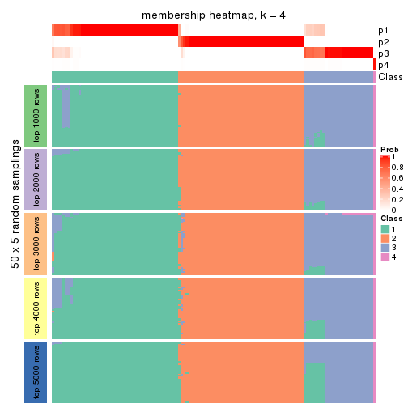
membership_heatmap(res, k = 5)
membership_heatmap(res, k = 6)
As soon as we have had the classes for columns, we can look for signatures which are significantly different between classes which can be candidate marks for certain classes. Following are the heatmaps for signatures.
Signature heatmaps where rows are scaled:
get_signatures(res, k = 2)

get_signatures(res, k = 3)

get_signatures(res, k = 4)
get_signatures(res, k = 5)
get_signatures(res, k = 6)
Signature heatmaps where rows are not scaled:
get_signatures(res, k = 2, scale_rows = FALSE)
get_signatures(res, k = 3, scale_rows = FALSE)

get_signatures(res, k = 4, scale_rows = FALSE)
get_signatures(res, k = 5, scale_rows = FALSE)
get_signatures(res, k = 6, scale_rows = FALSE)
Compare the overlap of signatures from different k:
compare_signatures(res)
get_signature() returns a data frame invisibly. TO get the list of signatures, the function
call should be assigned to a variable explicitly. In following code, if plot argument is set
to FALSE, no heatmap is plotted while only the differential analysis is performed.
# code only for demonstration
tb = get_signature(res, k = ..., plot = FALSE)
An example of the output of tb is:
#> which_row fdr mean_1 mean_2 scaled_mean_1 scaled_mean_2 km
#> 1 38 0.042760348 8.373488 9.131774 -0.5533452 0.5164555 1
#> 2 40 0.018707592 7.106213 8.469186 -0.6173731 0.5762149 1
#> 3 55 0.019134737 10.221463 11.207825 -0.6159697 0.5749050 1
#> 4 59 0.006059896 5.921854 7.869574 -0.6899429 0.6439467 1
#> 5 60 0.018055526 8.928898 10.211722 -0.6204761 0.5791110 1
#> 6 98 0.009384629 15.714769 14.887706 0.6635654 -0.6193277 2
...
The columns in tb are:
which_row: row indices corresponding to the input matrix.fdr: FDR for the differential test. mean_x: The mean value in group x.scaled_mean_x: The mean value in group x after rows are scaled.km: Row groups if k-means clustering is applied to rows.UMAP plot which shows how samples are separated.
dimension_reduction(res, k = 2, method = "UMAP")
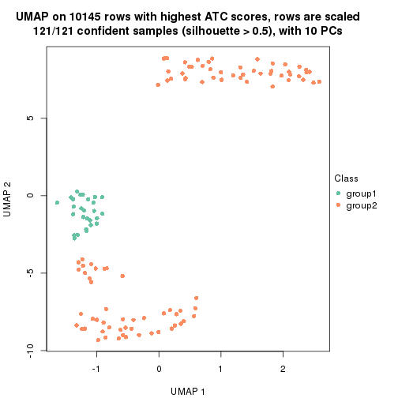
dimension_reduction(res, k = 3, method = "UMAP")
dimension_reduction(res, k = 4, method = "UMAP")
dimension_reduction(res, k = 5, method = "UMAP")
dimension_reduction(res, k = 6, method = "UMAP")
Following heatmap shows how subgroups are split when increasing k:
collect_classes(res)
If matrix rows can be associated to genes, consider to use GO_Enrichment(res,
...) to perform function enrichment for the signature genes.
The object with results only for a single top-value method and a single partition method can be extracted as:
res = res_list["ATC", "kmeans"]
# you can also extract it by
# res = res_list["ATC:kmeans"]
A summary of res and all the functions that can be applied to it:
res
#> A 'ConsensusPartition' object with k = 2, 3, 4, 5, 6.
#> On a matrix with 10145 rows and 121 columns.
#> Top rows (1000, 2000, 3000, 4000, 5000) are extracted by 'ATC' method.
#> Subgroups are detected by 'kmeans' method.
#> Performed in total 1250 partitions by row resampling.
#> Best k for subgroups seems to be 3.
#>
#> Following methods can be applied to this 'ConsensusPartition' object:
#> [1] "cola_report" "collect_classes" "collect_plots"
#> [4] "collect_stats" "colnames" "compare_signatures"
#> [7] "consensus_heatmap" "dimension_reduction" "functional_enrichment"
#> [10] "get_anno_col" "get_anno" "get_classes"
#> [13] "get_consensus" "get_matrix" "get_membership"
#> [16] "get_param" "get_signatures" "get_stats"
#> [19] "is_best_k" "is_stable_k" "membership_heatmap"
#> [22] "ncol" "nrow" "plot_ecdf"
#> [25] "rownames" "select_partition_number" "show"
#> [28] "suggest_best_k" "test_to_known_factors"
collect_plots() function collects all the plots made from res for all k (number of partitions)
into one single page to provide an easy and fast comparison between different k.
collect_plots(res)
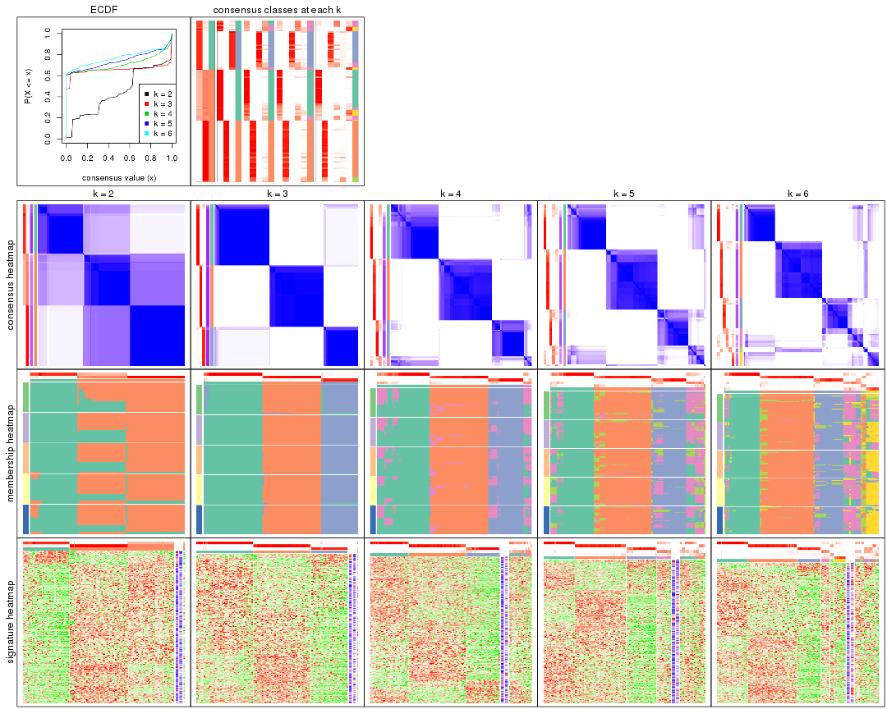
The plots are:
k and the heatmap of
predicted classes for each k.k.k.k.All the plots in panels can be made by individual functions and they are plotted later in this section.
select_partition_number() produces several plots showing different
statistics for choosing “optimized” k. There are following statistics:
k;k, the area increased is defined as \(A_k - A_{k-1}\).The detailed explanations of these statistics can be found in the cola vignette.
Generally speaking, lower PAC score, higher mean silhouette score or higher
concordance corresponds to better partition. Rand index and Jaccard index
measure how similar the current partition is compared to partition with k-1.
If they are too similar, we won't accept k is better than k-1.
select_partition_number(res)
The numeric values for all these statistics can be obtained by get_stats().
get_stats(res)
#> k 1-PAC mean_silhouette concordance area_increased Rand Jaccard
#> 2 2 0.513 0.780 0.864 0.4454 0.572 0.572
#> 3 3 0.996 0.969 0.978 0.4726 0.685 0.487
#> 4 4 0.829 0.768 0.897 0.0824 0.963 0.892
#> 5 5 0.814 0.704 0.857 0.0481 0.954 0.854
#> 6 6 0.830 0.719 0.850 0.0366 0.928 0.747
suggest_best_k() suggests the best \(k\) based on these statistics. The rules are as follows:
NA.suggest_best_k(res)
#> [1] 3
Following shows the table of the partitions (You need to click the show/hide
code output link to see it). The membership matrix (columns with name p*)
is inferred by
clue::cl_consensus()
function with the SE method. Basically the value in the membership matrix
represents the probability to belong to a certain group. The finall class
label for an item is determined with the group with highest probability it
belongs to.
In get_classes() function, the entropy is calculated from the membership
matrix and the silhouette score is calculated from the consensus matrix.
cbind(get_classes(res, k = 2), get_membership(res, k = 2))
#> class entropy silhouette p1 p2
#> SRR2431463 2 0.946 0.670 0.364 0.636
#> SRR2431462 2 0.946 0.670 0.364 0.636
#> SRR2431461 2 0.961 0.644 0.384 0.616
#> SRR2431459 2 0.946 0.670 0.364 0.636
#> SRR2431460 2 0.946 0.670 0.364 0.636
#> SRR2431458 2 0.961 0.644 0.384 0.616
#> SRR2431457 2 0.946 0.670 0.364 0.636
#> SRR2431455 2 0.946 0.670 0.364 0.636
#> SRR2431456 2 0.946 0.670 0.364 0.636
#> SRR2431454 1 0.653 0.777 0.832 0.168
#> SRR2431453 2 0.946 0.670 0.364 0.636
#> SRR2431451 2 0.961 0.644 0.384 0.616
#> SRR2431452 1 0.295 0.957 0.948 0.052
#> SRR2431450 2 0.946 0.670 0.364 0.636
#> SRR2431449 2 0.946 0.670 0.364 0.636
#> SRR2431448 2 0.946 0.670 0.364 0.636
#> SRR2431446 2 0.961 0.644 0.384 0.616
#> SRR2431447 2 0.955 0.655 0.376 0.624
#> SRR2431445 2 0.946 0.670 0.364 0.636
#> SRR2431444 1 0.000 0.910 1.000 0.000
#> SRR2431443 2 0.946 0.670 0.364 0.636
#> SRR2431442 2 0.946 0.670 0.364 0.636
#> SRR2431441 2 0.946 0.670 0.364 0.636
#> SRR2431440 2 0.946 0.670 0.364 0.636
#> SRR2431439 2 0.946 0.670 0.364 0.636
#> SRR2431438 2 0.946 0.670 0.364 0.636
#> SRR2431437 2 0.946 0.670 0.364 0.636
#> SRR2431436 1 0.000 0.910 1.000 0.000
#> SRR2431435 1 0.552 0.794 0.872 0.128
#> SRR2431434 2 0.946 0.670 0.364 0.636
#> SRR2431433 2 0.946 0.670 0.364 0.636
#> SRR2431432 2 0.946 0.670 0.364 0.636
#> SRR2431431 2 0.994 0.513 0.456 0.544
#> SRR2431430 2 0.946 0.670 0.364 0.636
#> SRR2431429 2 0.946 0.670 0.364 0.636
#> SRR2431428 2 0.946 0.670 0.364 0.636
#> SRR2431427 2 0.000 0.787 0.000 1.000
#> SRR2431426 2 0.000 0.787 0.000 1.000
#> SRR2431425 2 0.000 0.787 0.000 1.000
#> SRR2431424 2 0.000 0.787 0.000 1.000
#> SRR2431423 2 0.000 0.787 0.000 1.000
#> SRR2431422 2 0.000 0.787 0.000 1.000
#> SRR2431421 2 0.000 0.787 0.000 1.000
#> SRR2431420 2 0.000 0.787 0.000 1.000
#> SRR2431419 2 0.000 0.787 0.000 1.000
#> SRR2431418 2 0.000 0.787 0.000 1.000
#> SRR2431417 2 0.000 0.787 0.000 1.000
#> SRR2431416 2 0.000 0.787 0.000 1.000
#> SRR2431415 2 0.000 0.787 0.000 1.000
#> SRR2431414 2 0.000 0.787 0.000 1.000
#> SRR2431413 2 0.000 0.787 0.000 1.000
#> SRR2431412 2 0.000 0.787 0.000 1.000
#> SRR2431411 1 0.295 0.957 0.948 0.052
#> SRR2431409 2 0.000 0.787 0.000 1.000
#> SRR2431410 2 0.850 0.684 0.276 0.724
#> SRR2431408 2 0.000 0.787 0.000 1.000
#> SRR2431407 2 0.000 0.787 0.000 1.000
#> SRR2431405 2 0.000 0.787 0.000 1.000
#> SRR2431406 2 0.000 0.787 0.000 1.000
#> SRR2431404 2 0.000 0.787 0.000 1.000
#> SRR2431403 2 0.000 0.787 0.000 1.000
#> SRR2431402 2 0.000 0.787 0.000 1.000
#> SRR2431401 2 0.000 0.787 0.000 1.000
#> SRR2431400 2 0.000 0.787 0.000 1.000
#> SRR2431399 2 0.000 0.787 0.000 1.000
#> SRR2431398 2 0.000 0.787 0.000 1.000
#> SRR2431397 2 0.000 0.787 0.000 1.000
#> SRR2431396 2 0.000 0.787 0.000 1.000
#> SRR2431395 2 0.000 0.787 0.000 1.000
#> SRR2431394 2 0.000 0.787 0.000 1.000
#> SRR2431393 2 0.000 0.787 0.000 1.000
#> SRR2431392 2 0.000 0.787 0.000 1.000
#> SRR2431391 2 0.000 0.787 0.000 1.000
#> SRR2431390 2 0.000 0.787 0.000 1.000
#> SRR2431389 2 0.000 0.787 0.000 1.000
#> SRR2431388 2 0.000 0.787 0.000 1.000
#> SRR2431387 2 0.000 0.787 0.000 1.000
#> SRR2431386 2 0.000 0.787 0.000 1.000
#> SRR2431385 2 0.981 0.025 0.420 0.580
#> SRR2431383 2 0.000 0.787 0.000 1.000
#> SRR2431384 2 0.000 0.787 0.000 1.000
#> SRR2431382 2 0.000 0.787 0.000 1.000
#> SRR2431381 2 0.000 0.787 0.000 1.000
#> SRR2431380 2 0.000 0.787 0.000 1.000
#> SRR2431379 1 0.295 0.957 0.948 0.052
#> SRR2431378 1 0.295 0.957 0.948 0.052
#> SRR2431376 1 0.295 0.957 0.948 0.052
#> SRR2431377 1 0.416 0.850 0.916 0.084
#> SRR2431375 1 0.295 0.957 0.948 0.052
#> SRR2431374 2 0.946 0.670 0.364 0.636
#> SRR2431372 1 0.295 0.957 0.948 0.052
#> SRR2431371 1 0.295 0.957 0.948 0.052
#> SRR2431373 1 0.295 0.957 0.948 0.052
#> SRR2431370 1 0.295 0.957 0.948 0.052
#> SRR2431369 1 0.278 0.954 0.952 0.048
#> SRR2431368 1 0.295 0.957 0.948 0.052
#> SRR2431367 1 0.295 0.957 0.948 0.052
#> SRR2431366 1 0.541 0.800 0.876 0.124
#> SRR2431365 1 0.541 0.800 0.876 0.124
#> SRR2431364 1 0.295 0.957 0.948 0.052
#> SRR2431363 1 0.295 0.957 0.948 0.052
#> SRR2431361 1 0.295 0.957 0.948 0.052
#> SRR2431362 1 0.295 0.957 0.948 0.052
#> SRR2431360 1 0.295 0.957 0.948 0.052
#> SRR2431359 1 0.295 0.957 0.948 0.052
#> SRR2431358 2 0.961 0.644 0.384 0.616
#> SRR2431357 2 0.987 0.563 0.432 0.568
#> SRR2431355 1 0.541 0.800 0.876 0.124
#> SRR2431356 1 0.295 0.957 0.948 0.052
#> SRR2431354 1 0.295 0.957 0.948 0.052
#> SRR2431353 2 0.991 0.539 0.444 0.556
#> SRR2431352 2 0.987 0.563 0.432 0.568
#> SRR2431351 1 0.295 0.957 0.948 0.052
#> SRR2431350 1 0.295 0.957 0.948 0.052
#> SRR2431349 1 0.295 0.957 0.948 0.052
#> SRR2431348 1 0.295 0.957 0.948 0.052
#> SRR2431347 1 0.295 0.957 0.948 0.052
#> SRR2431346 1 0.295 0.957 0.948 0.052
#> SRR2431345 1 0.295 0.957 0.948 0.052
#> SRR2431344 1 0.541 0.800 0.876 0.124
#> SRR2431343 2 0.995 0.504 0.460 0.540
cbind(get_classes(res, k = 3), get_membership(res, k = 3))
#> class entropy silhouette p1 p2 p3
#> SRR2431463 1 0.0000 0.979 1.000 0.000 0.000
#> SRR2431462 1 0.0000 0.979 1.000 0.000 0.000
#> SRR2431461 1 0.0000 0.979 1.000 0.000 0.000
#> SRR2431459 1 0.0000 0.979 1.000 0.000 0.000
#> SRR2431460 1 0.0000 0.979 1.000 0.000 0.000
#> SRR2431458 1 0.0000 0.979 1.000 0.000 0.000
#> SRR2431457 1 0.0000 0.979 1.000 0.000 0.000
#> SRR2431455 1 0.0000 0.979 1.000 0.000 0.000
#> SRR2431456 1 0.0000 0.979 1.000 0.000 0.000
#> SRR2431454 1 0.0000 0.979 1.000 0.000 0.000
#> SRR2431453 1 0.0000 0.979 1.000 0.000 0.000
#> SRR2431451 1 0.0000 0.979 1.000 0.000 0.000
#> SRR2431452 3 0.4504 0.802 0.196 0.000 0.804
#> SRR2431450 1 0.0000 0.979 1.000 0.000 0.000
#> SRR2431449 1 0.0000 0.979 1.000 0.000 0.000
#> SRR2431448 1 0.0000 0.979 1.000 0.000 0.000
#> SRR2431446 1 0.0000 0.979 1.000 0.000 0.000
#> SRR2431447 1 0.0000 0.979 1.000 0.000 0.000
#> SRR2431445 1 0.0000 0.979 1.000 0.000 0.000
#> SRR2431444 1 0.6140 0.260 0.596 0.000 0.404
#> SRR2431443 1 0.0000 0.979 1.000 0.000 0.000
#> SRR2431442 1 0.0000 0.979 1.000 0.000 0.000
#> SRR2431441 1 0.0000 0.979 1.000 0.000 0.000
#> SRR2431440 1 0.0000 0.979 1.000 0.000 0.000
#> SRR2431439 1 0.0000 0.979 1.000 0.000 0.000
#> SRR2431438 1 0.0000 0.979 1.000 0.000 0.000
#> SRR2431437 1 0.0000 0.979 1.000 0.000 0.000
#> SRR2431436 3 0.4702 0.779 0.212 0.000 0.788
#> SRR2431435 1 0.0000 0.979 1.000 0.000 0.000
#> SRR2431434 1 0.0000 0.979 1.000 0.000 0.000
#> SRR2431433 1 0.0000 0.979 1.000 0.000 0.000
#> SRR2431432 1 0.0000 0.979 1.000 0.000 0.000
#> SRR2431431 1 0.0000 0.979 1.000 0.000 0.000
#> SRR2431430 1 0.0000 0.979 1.000 0.000 0.000
#> SRR2431429 1 0.0000 0.979 1.000 0.000 0.000
#> SRR2431428 1 0.0000 0.979 1.000 0.000 0.000
#> SRR2431427 2 0.0000 0.992 0.000 1.000 0.000
#> SRR2431426 2 0.0000 0.992 0.000 1.000 0.000
#> SRR2431425 2 0.0000 0.992 0.000 1.000 0.000
#> SRR2431424 2 0.0237 0.991 0.000 0.996 0.004
#> SRR2431423 2 0.0000 0.992 0.000 1.000 0.000
#> SRR2431422 2 0.0237 0.991 0.000 0.996 0.004
#> SRR2431421 2 0.0424 0.990 0.000 0.992 0.008
#> SRR2431420 2 0.0000 0.992 0.000 1.000 0.000
#> SRR2431419 2 0.0000 0.992 0.000 1.000 0.000
#> SRR2431418 2 0.0000 0.992 0.000 1.000 0.000
#> SRR2431417 2 0.0237 0.991 0.000 0.996 0.004
#> SRR2431416 2 0.0000 0.992 0.000 1.000 0.000
#> SRR2431415 2 0.0000 0.992 0.000 1.000 0.000
#> SRR2431414 2 0.0000 0.992 0.000 1.000 0.000
#> SRR2431413 2 0.1289 0.973 0.000 0.968 0.032
#> SRR2431412 2 0.0000 0.992 0.000 1.000 0.000
#> SRR2431411 3 0.0424 0.958 0.008 0.000 0.992
#> SRR2431409 2 0.0000 0.992 0.000 1.000 0.000
#> SRR2431410 1 0.0424 0.970 0.992 0.000 0.008
#> SRR2431408 2 0.0000 0.992 0.000 1.000 0.000
#> SRR2431407 2 0.0237 0.991 0.000 0.996 0.004
#> SRR2431405 2 0.1289 0.973 0.000 0.968 0.032
#> SRR2431406 2 0.0000 0.992 0.000 1.000 0.000
#> SRR2431404 2 0.0237 0.991 0.000 0.996 0.004
#> SRR2431403 2 0.0000 0.992 0.000 1.000 0.000
#> SRR2431402 2 0.0237 0.991 0.000 0.996 0.004
#> SRR2431401 2 0.0000 0.992 0.000 1.000 0.000
#> SRR2431400 2 0.0237 0.991 0.000 0.996 0.004
#> SRR2431399 2 0.0424 0.990 0.000 0.992 0.008
#> SRR2431398 2 0.0237 0.991 0.000 0.996 0.004
#> SRR2431397 2 0.0000 0.992 0.000 1.000 0.000
#> SRR2431396 2 0.1411 0.973 0.000 0.964 0.036
#> SRR2431395 2 0.0000 0.992 0.000 1.000 0.000
#> SRR2431394 2 0.0000 0.992 0.000 1.000 0.000
#> SRR2431393 2 0.0424 0.990 0.000 0.992 0.008
#> SRR2431392 2 0.0424 0.990 0.000 0.992 0.008
#> SRR2431391 2 0.0000 0.992 0.000 1.000 0.000
#> SRR2431390 2 0.0237 0.991 0.000 0.996 0.004
#> SRR2431389 2 0.0000 0.992 0.000 1.000 0.000
#> SRR2431388 2 0.0424 0.990 0.000 0.992 0.008
#> SRR2431387 2 0.0237 0.991 0.000 0.996 0.004
#> SRR2431386 2 0.0000 0.992 0.000 1.000 0.000
#> SRR2431385 2 0.4702 0.760 0.000 0.788 0.212
#> SRR2431383 2 0.1289 0.973 0.000 0.968 0.032
#> SRR2431384 2 0.0237 0.991 0.000 0.996 0.004
#> SRR2431382 2 0.0000 0.992 0.000 1.000 0.000
#> SRR2431381 2 0.0237 0.991 0.000 0.996 0.004
#> SRR2431380 2 0.0000 0.992 0.000 1.000 0.000
#> SRR2431379 3 0.1411 0.986 0.036 0.000 0.964
#> SRR2431378 3 0.1411 0.986 0.036 0.000 0.964
#> SRR2431376 3 0.1411 0.986 0.036 0.000 0.964
#> SRR2431377 1 0.5098 0.664 0.752 0.000 0.248
#> SRR2431375 3 0.1411 0.986 0.036 0.000 0.964
#> SRR2431374 1 0.0000 0.979 1.000 0.000 0.000
#> SRR2431372 3 0.1411 0.986 0.036 0.000 0.964
#> SRR2431371 3 0.1411 0.986 0.036 0.000 0.964
#> SRR2431373 3 0.1411 0.986 0.036 0.000 0.964
#> SRR2431370 3 0.1411 0.986 0.036 0.000 0.964
#> SRR2431369 3 0.1411 0.986 0.036 0.000 0.964
#> SRR2431368 3 0.1411 0.986 0.036 0.000 0.964
#> SRR2431367 3 0.1411 0.986 0.036 0.000 0.964
#> SRR2431366 1 0.4062 0.794 0.836 0.000 0.164
#> SRR2431365 1 0.2537 0.899 0.920 0.000 0.080
#> SRR2431364 3 0.1411 0.986 0.036 0.000 0.964
#> SRR2431363 3 0.1411 0.986 0.036 0.000 0.964
#> SRR2431361 3 0.1411 0.986 0.036 0.000 0.964
#> SRR2431362 3 0.1411 0.986 0.036 0.000 0.964
#> SRR2431360 3 0.1411 0.986 0.036 0.000 0.964
#> SRR2431359 3 0.1411 0.986 0.036 0.000 0.964
#> SRR2431358 1 0.0000 0.979 1.000 0.000 0.000
#> SRR2431357 1 0.0000 0.979 1.000 0.000 0.000
#> SRR2431355 1 0.0000 0.979 1.000 0.000 0.000
#> SRR2431356 3 0.1411 0.986 0.036 0.000 0.964
#> SRR2431354 3 0.1411 0.986 0.036 0.000 0.964
#> SRR2431353 1 0.0000 0.979 1.000 0.000 0.000
#> SRR2431352 1 0.0000 0.979 1.000 0.000 0.000
#> SRR2431351 3 0.1411 0.986 0.036 0.000 0.964
#> SRR2431350 3 0.1411 0.986 0.036 0.000 0.964
#> SRR2431349 3 0.1411 0.986 0.036 0.000 0.964
#> SRR2431348 3 0.1411 0.986 0.036 0.000 0.964
#> SRR2431347 3 0.1411 0.986 0.036 0.000 0.964
#> SRR2431346 3 0.1411 0.986 0.036 0.000 0.964
#> SRR2431345 3 0.1411 0.986 0.036 0.000 0.964
#> SRR2431344 1 0.0000 0.979 1.000 0.000 0.000
#> SRR2431343 1 0.0000 0.979 1.000 0.000 0.000
cbind(get_classes(res, k = 4), get_membership(res, k = 4))
#> class entropy silhouette p1 p2 p3 p4
#> SRR2431463 1 0.0000 0.81007 1.000 0.000 0.000 0.000
#> SRR2431462 1 0.0000 0.81007 1.000 0.000 0.000 0.000
#> SRR2431461 1 0.0592 0.80069 0.984 0.000 0.000 0.016
#> SRR2431459 1 0.0000 0.81007 1.000 0.000 0.000 0.000
#> SRR2431460 1 0.0000 0.81007 1.000 0.000 0.000 0.000
#> SRR2431458 1 0.2469 0.70750 0.892 0.000 0.000 0.108
#> SRR2431457 1 0.0000 0.81007 1.000 0.000 0.000 0.000
#> SRR2431455 1 0.0000 0.81007 1.000 0.000 0.000 0.000
#> SRR2431456 1 0.0000 0.81007 1.000 0.000 0.000 0.000
#> SRR2431454 4 0.4985 0.29277 0.468 0.000 0.000 0.532
#> SRR2431453 1 0.0000 0.81007 1.000 0.000 0.000 0.000
#> SRR2431451 1 0.2973 0.67094 0.856 0.000 0.000 0.144
#> SRR2431452 4 0.6400 0.20334 0.068 0.000 0.408 0.524
#> SRR2431450 1 0.0000 0.81007 1.000 0.000 0.000 0.000
#> SRR2431449 1 0.0000 0.81007 1.000 0.000 0.000 0.000
#> SRR2431448 1 0.0000 0.81007 1.000 0.000 0.000 0.000
#> SRR2431446 1 0.0336 0.80445 0.992 0.000 0.000 0.008
#> SRR2431447 1 0.2530 0.70257 0.888 0.000 0.000 0.112
#> SRR2431445 1 0.0000 0.81007 1.000 0.000 0.000 0.000
#> SRR2431444 4 0.6429 0.55422 0.212 0.000 0.144 0.644
#> SRR2431443 1 0.0000 0.81007 1.000 0.000 0.000 0.000
#> SRR2431442 1 0.0000 0.81007 1.000 0.000 0.000 0.000
#> SRR2431441 1 0.0000 0.81007 1.000 0.000 0.000 0.000
#> SRR2431440 1 0.4624 0.31900 0.660 0.000 0.000 0.340
#> SRR2431439 1 0.0000 0.81007 1.000 0.000 0.000 0.000
#> SRR2431438 1 0.0000 0.81007 1.000 0.000 0.000 0.000
#> SRR2431437 1 0.0000 0.81007 1.000 0.000 0.000 0.000
#> SRR2431436 4 0.6507 0.22502 0.076 0.000 0.404 0.520
#> SRR2431435 4 0.4996 0.24939 0.484 0.000 0.000 0.516
#> SRR2431434 1 0.0000 0.81007 1.000 0.000 0.000 0.000
#> SRR2431433 1 0.0000 0.81007 1.000 0.000 0.000 0.000
#> SRR2431432 1 0.0000 0.81007 1.000 0.000 0.000 0.000
#> SRR2431431 1 0.4661 0.29454 0.652 0.000 0.000 0.348
#> SRR2431430 1 0.2530 0.70257 0.888 0.000 0.000 0.112
#> SRR2431429 1 0.0000 0.81007 1.000 0.000 0.000 0.000
#> SRR2431428 1 0.2408 0.71926 0.896 0.000 0.000 0.104
#> SRR2431427 2 0.1022 0.95255 0.000 0.968 0.000 0.032
#> SRR2431426 2 0.0707 0.95618 0.000 0.980 0.000 0.020
#> SRR2431425 2 0.0817 0.95447 0.000 0.976 0.000 0.024
#> SRR2431424 2 0.0336 0.95525 0.000 0.992 0.000 0.008
#> SRR2431423 2 0.1022 0.95255 0.000 0.968 0.000 0.032
#> SRR2431422 2 0.1118 0.94556 0.000 0.964 0.000 0.036
#> SRR2431421 2 0.2216 0.91399 0.000 0.908 0.000 0.092
#> SRR2431420 2 0.0817 0.95447 0.000 0.976 0.000 0.024
#> SRR2431419 2 0.0000 0.95662 0.000 1.000 0.000 0.000
#> SRR2431418 2 0.0921 0.95362 0.000 0.972 0.000 0.028
#> SRR2431417 2 0.0000 0.95662 0.000 1.000 0.000 0.000
#> SRR2431416 2 0.0921 0.95362 0.000 0.972 0.000 0.028
#> SRR2431415 2 0.0921 0.95362 0.000 0.972 0.000 0.028
#> SRR2431414 2 0.0592 0.95671 0.000 0.984 0.000 0.016
#> SRR2431413 2 0.3528 0.84119 0.000 0.808 0.000 0.192
#> SRR2431412 2 0.0469 0.95625 0.000 0.988 0.000 0.012
#> SRR2431411 3 0.3356 0.76033 0.000 0.000 0.824 0.176
#> SRR2431409 2 0.0000 0.95662 0.000 1.000 0.000 0.000
#> SRR2431410 1 0.5056 0.48691 0.732 0.044 0.000 0.224
#> SRR2431408 2 0.0188 0.95670 0.000 0.996 0.000 0.004
#> SRR2431407 2 0.0336 0.95525 0.000 0.992 0.000 0.008
#> SRR2431405 2 0.3528 0.84119 0.000 0.808 0.000 0.192
#> SRR2431406 2 0.0000 0.95662 0.000 1.000 0.000 0.000
#> SRR2431404 2 0.0469 0.95476 0.000 0.988 0.000 0.012
#> SRR2431403 2 0.1022 0.95255 0.000 0.968 0.000 0.032
#> SRR2431402 2 0.0000 0.95662 0.000 1.000 0.000 0.000
#> SRR2431401 2 0.0000 0.95662 0.000 1.000 0.000 0.000
#> SRR2431400 2 0.0817 0.95022 0.000 0.976 0.000 0.024
#> SRR2431399 2 0.2149 0.91604 0.000 0.912 0.000 0.088
#> SRR2431398 2 0.0336 0.95525 0.000 0.992 0.000 0.008
#> SRR2431397 2 0.1022 0.95255 0.000 0.968 0.000 0.032
#> SRR2431396 2 0.3975 0.79248 0.000 0.760 0.000 0.240
#> SRR2431395 2 0.0921 0.95362 0.000 0.972 0.000 0.028
#> SRR2431394 2 0.1022 0.95255 0.000 0.968 0.000 0.032
#> SRR2431393 2 0.2149 0.91604 0.000 0.912 0.000 0.088
#> SRR2431392 2 0.2081 0.91859 0.000 0.916 0.000 0.084
#> SRR2431391 2 0.0000 0.95662 0.000 1.000 0.000 0.000
#> SRR2431390 2 0.0469 0.95476 0.000 0.988 0.000 0.012
#> SRR2431389 2 0.1022 0.95255 0.000 0.968 0.000 0.032
#> SRR2431388 2 0.2149 0.91604 0.000 0.912 0.000 0.088
#> SRR2431387 2 0.0000 0.95662 0.000 1.000 0.000 0.000
#> SRR2431386 2 0.0336 0.95657 0.000 0.992 0.000 0.008
#> SRR2431385 2 0.6974 0.37690 0.000 0.488 0.116 0.396
#> SRR2431383 2 0.3528 0.84119 0.000 0.808 0.000 0.192
#> SRR2431384 2 0.0817 0.95022 0.000 0.976 0.000 0.024
#> SRR2431382 2 0.1022 0.95255 0.000 0.968 0.000 0.032
#> SRR2431381 2 0.0000 0.95662 0.000 1.000 0.000 0.000
#> SRR2431380 2 0.0000 0.95662 0.000 1.000 0.000 0.000
#> SRR2431379 3 0.0000 0.91495 0.000 0.000 1.000 0.000
#> SRR2431378 3 0.4304 0.68026 0.000 0.000 0.716 0.284
#> SRR2431376 3 0.4304 0.68026 0.000 0.000 0.716 0.284
#> SRR2431377 4 0.6929 0.30578 0.444 0.000 0.108 0.448
#> SRR2431375 3 0.0000 0.91495 0.000 0.000 1.000 0.000
#> SRR2431374 1 0.3074 0.66393 0.848 0.000 0.000 0.152
#> SRR2431372 3 0.0000 0.91495 0.000 0.000 1.000 0.000
#> SRR2431371 3 0.4134 0.71241 0.000 0.000 0.740 0.260
#> SRR2431373 3 0.0000 0.91495 0.000 0.000 1.000 0.000
#> SRR2431370 3 0.0000 0.91495 0.000 0.000 1.000 0.000
#> SRR2431369 3 0.4304 0.68026 0.000 0.000 0.716 0.284
#> SRR2431368 3 0.0000 0.91495 0.000 0.000 1.000 0.000
#> SRR2431367 3 0.0000 0.91495 0.000 0.000 1.000 0.000
#> SRR2431366 1 0.6330 -0.30172 0.492 0.000 0.060 0.448
#> SRR2431365 1 0.5842 -0.22405 0.520 0.000 0.032 0.448
#> SRR2431364 3 0.0000 0.91495 0.000 0.000 1.000 0.000
#> SRR2431363 3 0.0000 0.91495 0.000 0.000 1.000 0.000
#> SRR2431361 3 0.3569 0.78233 0.000 0.000 0.804 0.196
#> SRR2431362 3 0.0000 0.91495 0.000 0.000 1.000 0.000
#> SRR2431360 3 0.0000 0.91495 0.000 0.000 1.000 0.000
#> SRR2431359 3 0.3942 0.73898 0.000 0.000 0.764 0.236
#> SRR2431358 1 0.3486 0.61129 0.812 0.000 0.000 0.188
#> SRR2431357 1 0.4898 0.00514 0.584 0.000 0.000 0.416
#> SRR2431355 1 0.4961 -0.12118 0.552 0.000 0.000 0.448
#> SRR2431356 3 0.0000 0.91495 0.000 0.000 1.000 0.000
#> SRR2431354 3 0.0000 0.91495 0.000 0.000 1.000 0.000
#> SRR2431353 1 0.4933 -0.06003 0.568 0.000 0.000 0.432
#> SRR2431352 1 0.4898 0.00514 0.584 0.000 0.000 0.416
#> SRR2431351 3 0.0000 0.91495 0.000 0.000 1.000 0.000
#> SRR2431350 3 0.0000 0.91495 0.000 0.000 1.000 0.000
#> SRR2431349 3 0.0000 0.91495 0.000 0.000 1.000 0.000
#> SRR2431348 3 0.0000 0.91495 0.000 0.000 1.000 0.000
#> SRR2431347 3 0.2149 0.86608 0.000 0.000 0.912 0.088
#> SRR2431346 3 0.2973 0.82623 0.000 0.000 0.856 0.144
#> SRR2431345 3 0.0000 0.91495 0.000 0.000 1.000 0.000
#> SRR2431344 4 0.4948 0.31027 0.440 0.000 0.000 0.560
#> SRR2431343 1 0.4454 0.35288 0.692 0.000 0.000 0.308
cbind(get_classes(res, k = 5), get_membership(res, k = 5))
#> class entropy silhouette p1 p2 p3 p4 p5
#> SRR2431463 1 0.0000 0.83683 1.000 0.000 0.000 0.000 0.000
#> SRR2431462 1 0.0000 0.83683 1.000 0.000 0.000 0.000 0.000
#> SRR2431461 1 0.1117 0.80941 0.964 0.000 0.000 0.020 0.016
#> SRR2431459 1 0.0000 0.83683 1.000 0.000 0.000 0.000 0.000
#> SRR2431460 1 0.0000 0.83683 1.000 0.000 0.000 0.000 0.000
#> SRR2431458 1 0.5150 0.43966 0.692 0.000 0.000 0.172 0.136
#> SRR2431457 1 0.0000 0.83683 1.000 0.000 0.000 0.000 0.000
#> SRR2431455 1 0.0000 0.83683 1.000 0.000 0.000 0.000 0.000
#> SRR2431456 1 0.0000 0.83683 1.000 0.000 0.000 0.000 0.000
#> SRR2431454 4 0.6301 0.56053 0.216 0.000 0.000 0.532 0.252
#> SRR2431453 1 0.0000 0.83683 1.000 0.000 0.000 0.000 0.000
#> SRR2431451 1 0.6001 0.21473 0.580 0.000 0.000 0.244 0.176
#> SRR2431452 4 0.7001 0.41832 0.036 0.000 0.184 0.512 0.268
#> SRR2431450 1 0.0000 0.83683 1.000 0.000 0.000 0.000 0.000
#> SRR2431449 1 0.0000 0.83683 1.000 0.000 0.000 0.000 0.000
#> SRR2431448 1 0.0000 0.83683 1.000 0.000 0.000 0.000 0.000
#> SRR2431446 1 0.0898 0.81584 0.972 0.000 0.000 0.020 0.008
#> SRR2431447 1 0.5342 0.40494 0.672 0.000 0.000 0.172 0.156
#> SRR2431445 1 0.0000 0.83683 1.000 0.000 0.000 0.000 0.000
#> SRR2431444 4 0.6537 0.54516 0.096 0.000 0.056 0.584 0.264
#> SRR2431443 1 0.0000 0.83683 1.000 0.000 0.000 0.000 0.000
#> SRR2431442 1 0.0000 0.83683 1.000 0.000 0.000 0.000 0.000
#> SRR2431441 1 0.0000 0.83683 1.000 0.000 0.000 0.000 0.000
#> SRR2431440 1 0.6669 -0.28054 0.400 0.000 0.000 0.368 0.232
#> SRR2431439 1 0.0162 0.83415 0.996 0.000 0.000 0.004 0.000
#> SRR2431438 1 0.0000 0.83683 1.000 0.000 0.000 0.000 0.000
#> SRR2431437 1 0.0000 0.83683 1.000 0.000 0.000 0.000 0.000
#> SRR2431436 4 0.7060 0.43698 0.044 0.000 0.176 0.516 0.264
#> SRR2431435 4 0.6369 0.54303 0.240 0.000 0.000 0.520 0.240
#> SRR2431434 1 0.0000 0.83683 1.000 0.000 0.000 0.000 0.000
#> SRR2431433 1 0.0290 0.83107 0.992 0.000 0.000 0.008 0.000
#> SRR2431432 1 0.0000 0.83683 1.000 0.000 0.000 0.000 0.000
#> SRR2431431 4 0.6337 0.44727 0.320 0.000 0.000 0.500 0.180
#> SRR2431430 1 0.5687 0.32677 0.628 0.000 0.000 0.208 0.164
#> SRR2431429 1 0.0000 0.83683 1.000 0.000 0.000 0.000 0.000
#> SRR2431428 1 0.3353 0.58583 0.796 0.000 0.000 0.196 0.008
#> SRR2431427 2 0.1124 0.87704 0.000 0.960 0.000 0.004 0.036
#> SRR2431426 2 0.0865 0.88224 0.000 0.972 0.000 0.004 0.024
#> SRR2431425 2 0.0955 0.88072 0.000 0.968 0.000 0.004 0.028
#> SRR2431424 2 0.0703 0.87930 0.000 0.976 0.000 0.000 0.024
#> SRR2431423 2 0.1124 0.87704 0.000 0.960 0.000 0.004 0.036
#> SRR2431422 2 0.1341 0.85337 0.000 0.944 0.000 0.000 0.056
#> SRR2431421 2 0.2966 0.66677 0.000 0.816 0.000 0.000 0.184
#> SRR2431420 2 0.1041 0.87917 0.000 0.964 0.000 0.004 0.032
#> SRR2431419 2 0.0324 0.88603 0.000 0.992 0.000 0.004 0.004
#> SRR2431418 2 0.1251 0.87727 0.000 0.956 0.000 0.008 0.036
#> SRR2431417 2 0.0771 0.88092 0.000 0.976 0.000 0.004 0.020
#> SRR2431416 2 0.1041 0.87917 0.000 0.964 0.000 0.004 0.032
#> SRR2431415 2 0.1251 0.87727 0.000 0.956 0.000 0.008 0.036
#> SRR2431414 2 0.0566 0.88647 0.000 0.984 0.000 0.004 0.012
#> SRR2431413 2 0.5229 -0.00624 0.000 0.612 0.000 0.064 0.324
#> SRR2431412 2 0.0693 0.88532 0.000 0.980 0.000 0.008 0.012
#> SRR2431411 3 0.5192 0.54961 0.000 0.000 0.664 0.092 0.244
#> SRR2431409 2 0.0324 0.88565 0.000 0.992 0.000 0.004 0.004
#> SRR2431410 1 0.6066 0.02354 0.568 0.036 0.000 0.336 0.060
#> SRR2431408 2 0.0566 0.88550 0.000 0.984 0.000 0.004 0.012
#> SRR2431407 2 0.0865 0.87891 0.000 0.972 0.000 0.004 0.024
#> SRR2431405 2 0.5229 -0.00624 0.000 0.612 0.000 0.064 0.324
#> SRR2431406 2 0.0324 0.88592 0.000 0.992 0.000 0.004 0.004
#> SRR2431404 2 0.0703 0.87930 0.000 0.976 0.000 0.000 0.024
#> SRR2431403 2 0.1251 0.87727 0.000 0.956 0.000 0.008 0.036
#> SRR2431402 2 0.0510 0.88321 0.000 0.984 0.000 0.000 0.016
#> SRR2431401 2 0.0324 0.88555 0.000 0.992 0.000 0.004 0.004
#> SRR2431400 2 0.0865 0.87891 0.000 0.972 0.000 0.004 0.024
#> SRR2431399 2 0.3048 0.68084 0.000 0.820 0.000 0.004 0.176
#> SRR2431398 2 0.0510 0.88317 0.000 0.984 0.000 0.000 0.016
#> SRR2431397 2 0.1124 0.87704 0.000 0.960 0.000 0.004 0.036
#> SRR2431396 2 0.4249 -0.25236 0.000 0.568 0.000 0.000 0.432
#> SRR2431395 2 0.1124 0.87704 0.000 0.960 0.000 0.004 0.036
#> SRR2431394 2 0.1124 0.87704 0.000 0.960 0.000 0.004 0.036
#> SRR2431393 2 0.3048 0.68084 0.000 0.820 0.000 0.004 0.176
#> SRR2431392 2 0.2852 0.68860 0.000 0.828 0.000 0.000 0.172
#> SRR2431391 2 0.0671 0.88265 0.000 0.980 0.000 0.004 0.016
#> SRR2431390 2 0.0703 0.87930 0.000 0.976 0.000 0.000 0.024
#> SRR2431389 2 0.1124 0.87704 0.000 0.960 0.000 0.004 0.036
#> SRR2431388 2 0.2852 0.68860 0.000 0.828 0.000 0.000 0.172
#> SRR2431387 2 0.0579 0.88567 0.000 0.984 0.000 0.008 0.008
#> SRR2431386 2 0.0566 0.88550 0.000 0.984 0.000 0.004 0.012
#> SRR2431385 5 0.5613 0.00000 0.000 0.316 0.040 0.032 0.612
#> SRR2431383 2 0.5229 -0.00624 0.000 0.612 0.000 0.064 0.324
#> SRR2431384 2 0.0865 0.87891 0.000 0.972 0.000 0.004 0.024
#> SRR2431382 2 0.1124 0.87704 0.000 0.960 0.000 0.004 0.036
#> SRR2431381 2 0.0671 0.88275 0.000 0.980 0.000 0.004 0.016
#> SRR2431380 2 0.0451 0.88470 0.000 0.988 0.000 0.004 0.008
#> SRR2431379 3 0.0000 0.85281 0.000 0.000 1.000 0.000 0.000
#> SRR2431378 3 0.5723 0.47969 0.000 0.000 0.520 0.392 0.088
#> SRR2431376 3 0.5723 0.47969 0.000 0.000 0.520 0.392 0.088
#> SRR2431377 4 0.5917 0.60280 0.280 0.000 0.052 0.620 0.048
#> SRR2431375 3 0.0404 0.85194 0.000 0.000 0.988 0.000 0.012
#> SRR2431374 1 0.3508 0.48341 0.748 0.000 0.000 0.252 0.000
#> SRR2431372 3 0.0290 0.85264 0.000 0.000 0.992 0.000 0.008
#> SRR2431371 3 0.5682 0.51169 0.000 0.000 0.540 0.372 0.088
#> SRR2431373 3 0.0510 0.85281 0.000 0.000 0.984 0.000 0.016
#> SRR2431370 3 0.1281 0.84858 0.000 0.000 0.956 0.012 0.032
#> SRR2431369 3 0.5729 0.47270 0.000 0.000 0.516 0.396 0.088
#> SRR2431368 3 0.1430 0.84540 0.000 0.000 0.944 0.004 0.052
#> SRR2431367 3 0.0000 0.85281 0.000 0.000 1.000 0.000 0.000
#> SRR2431366 4 0.5781 0.60483 0.292 0.000 0.040 0.620 0.048
#> SRR2431365 4 0.5355 0.60571 0.316 0.000 0.016 0.624 0.044
#> SRR2431364 3 0.0404 0.85194 0.000 0.000 0.988 0.000 0.012
#> SRR2431363 3 0.0404 0.85194 0.000 0.000 0.988 0.000 0.012
#> SRR2431361 3 0.5164 0.66095 0.000 0.000 0.660 0.256 0.084
#> SRR2431362 3 0.0404 0.85194 0.000 0.000 0.988 0.000 0.012
#> SRR2431360 3 0.0404 0.85194 0.000 0.000 0.988 0.000 0.012
#> SRR2431359 3 0.5458 0.60042 0.000 0.000 0.608 0.304 0.088
#> SRR2431358 1 0.3999 0.25292 0.656 0.000 0.000 0.344 0.000
#> SRR2431357 4 0.4171 0.53674 0.396 0.000 0.000 0.604 0.000
#> SRR2431355 4 0.3949 0.60638 0.332 0.000 0.000 0.668 0.000
#> SRR2431356 3 0.1281 0.84858 0.000 0.000 0.956 0.012 0.032
#> SRR2431354 3 0.0404 0.85194 0.000 0.000 0.988 0.000 0.012
#> SRR2431353 4 0.4126 0.56043 0.380 0.000 0.000 0.620 0.000
#> SRR2431352 4 0.4161 0.54313 0.392 0.000 0.000 0.608 0.000
#> SRR2431351 3 0.0404 0.85194 0.000 0.000 0.988 0.000 0.012
#> SRR2431350 3 0.1281 0.84858 0.000 0.000 0.956 0.012 0.032
#> SRR2431349 3 0.0404 0.85194 0.000 0.000 0.988 0.000 0.012
#> SRR2431348 3 0.1281 0.84858 0.000 0.000 0.956 0.012 0.032
#> SRR2431347 3 0.3955 0.77451 0.000 0.000 0.800 0.116 0.084
#> SRR2431346 3 0.4714 0.71891 0.000 0.000 0.724 0.192 0.084
#> SRR2431345 3 0.0404 0.85194 0.000 0.000 0.988 0.000 0.012
#> SRR2431344 4 0.3914 0.64764 0.164 0.000 0.000 0.788 0.048
#> SRR2431343 1 0.4449 -0.29337 0.512 0.000 0.000 0.484 0.004
cbind(get_classes(res, k = 6), get_membership(res, k = 6))
#> class entropy silhouette p1 p2 p3 p4 p5 p6
#> SRR2431463 1 0.0000 0.9117 1.000 0.000 0.000 0.000 0.000 0.000
#> SRR2431462 1 0.0000 0.9117 1.000 0.000 0.000 0.000 0.000 0.000
#> SRR2431461 1 0.1700 0.8305 0.916 0.000 0.000 0.000 0.004 0.080
#> SRR2431459 1 0.0000 0.9117 1.000 0.000 0.000 0.000 0.000 0.000
#> SRR2431460 1 0.0000 0.9117 1.000 0.000 0.000 0.000 0.000 0.000
#> SRR2431458 1 0.3991 -0.2267 0.524 0.000 0.000 0.000 0.004 0.472
#> SRR2431457 1 0.0000 0.9117 1.000 0.000 0.000 0.000 0.000 0.000
#> SRR2431455 1 0.0000 0.9117 1.000 0.000 0.000 0.000 0.000 0.000
#> SRR2431456 1 0.0146 0.9092 0.996 0.000 0.000 0.000 0.000 0.004
#> SRR2431454 6 0.1757 0.7306 0.052 0.000 0.000 0.012 0.008 0.928
#> SRR2431453 1 0.0000 0.9117 1.000 0.000 0.000 0.000 0.000 0.000
#> SRR2431451 6 0.3584 0.6407 0.308 0.000 0.000 0.000 0.004 0.688
#> SRR2431452 6 0.2178 0.6872 0.008 0.000 0.056 0.012 0.012 0.912
#> SRR2431450 1 0.0000 0.9117 1.000 0.000 0.000 0.000 0.000 0.000
#> SRR2431449 1 0.0000 0.9117 1.000 0.000 0.000 0.000 0.000 0.000
#> SRR2431448 1 0.0000 0.9117 1.000 0.000 0.000 0.000 0.000 0.000
#> SRR2431446 1 0.1471 0.8500 0.932 0.000 0.000 0.000 0.004 0.064
#> SRR2431447 6 0.3961 0.3967 0.440 0.000 0.000 0.000 0.004 0.556
#> SRR2431445 1 0.0000 0.9117 1.000 0.000 0.000 0.000 0.000 0.000
#> SRR2431444 6 0.1923 0.6993 0.020 0.000 0.008 0.036 0.008 0.928
#> SRR2431443 1 0.0000 0.9117 1.000 0.000 0.000 0.000 0.000 0.000
#> SRR2431442 1 0.0000 0.9117 1.000 0.000 0.000 0.000 0.000 0.000
#> SRR2431441 1 0.0000 0.9117 1.000 0.000 0.000 0.000 0.000 0.000
#> SRR2431440 6 0.2454 0.7217 0.160 0.000 0.000 0.000 0.000 0.840
#> SRR2431439 1 0.0508 0.9019 0.984 0.000 0.000 0.000 0.004 0.012
#> SRR2431438 1 0.0000 0.9117 1.000 0.000 0.000 0.000 0.000 0.000
#> SRR2431437 1 0.0291 0.9058 0.992 0.000 0.000 0.000 0.004 0.004
#> SRR2431436 6 0.2143 0.6923 0.012 0.000 0.048 0.016 0.008 0.916
#> SRR2431435 6 0.1625 0.7340 0.060 0.000 0.000 0.012 0.000 0.928
#> SRR2431434 1 0.0000 0.9117 1.000 0.000 0.000 0.000 0.000 0.000
#> SRR2431433 1 0.0363 0.9036 0.988 0.000 0.000 0.000 0.000 0.012
#> SRR2431432 1 0.0000 0.9117 1.000 0.000 0.000 0.000 0.000 0.000
#> SRR2431431 6 0.3613 0.6910 0.092 0.000 0.000 0.076 0.016 0.816
#> SRR2431430 6 0.3782 0.5714 0.360 0.000 0.000 0.000 0.004 0.636
#> SRR2431429 1 0.0000 0.9117 1.000 0.000 0.000 0.000 0.000 0.000
#> SRR2431428 1 0.4859 0.5102 0.692 0.000 0.000 0.128 0.012 0.168
#> SRR2431427 2 0.0865 0.8822 0.000 0.964 0.000 0.000 0.036 0.000
#> SRR2431426 2 0.0458 0.8935 0.000 0.984 0.000 0.000 0.016 0.000
#> SRR2431425 2 0.0692 0.8928 0.000 0.976 0.000 0.004 0.020 0.000
#> SRR2431424 2 0.0632 0.8884 0.000 0.976 0.000 0.000 0.024 0.000
#> SRR2431423 2 0.0865 0.8822 0.000 0.964 0.000 0.000 0.036 0.000
#> SRR2431422 2 0.1334 0.8613 0.000 0.948 0.000 0.020 0.032 0.000
#> SRR2431421 2 0.4585 0.4276 0.000 0.724 0.000 0.164 0.096 0.016
#> SRR2431420 2 0.0547 0.8914 0.000 0.980 0.000 0.000 0.020 0.000
#> SRR2431419 2 0.0291 0.8966 0.000 0.992 0.000 0.004 0.004 0.000
#> SRR2431418 2 0.1155 0.8828 0.000 0.956 0.000 0.004 0.036 0.004
#> SRR2431417 2 0.0551 0.8949 0.000 0.984 0.000 0.004 0.008 0.004
#> SRR2431416 2 0.0713 0.8875 0.000 0.972 0.000 0.000 0.028 0.000
#> SRR2431415 2 0.1155 0.8828 0.000 0.956 0.000 0.004 0.036 0.004
#> SRR2431414 2 0.0458 0.8960 0.000 0.984 0.000 0.000 0.016 0.000
#> SRR2431413 5 0.3866 0.7234 0.000 0.484 0.000 0.000 0.516 0.000
#> SRR2431412 2 0.0405 0.8962 0.000 0.988 0.000 0.004 0.008 0.000
#> SRR2431411 3 0.6719 0.3330 0.000 0.000 0.452 0.136 0.328 0.084
#> SRR2431409 2 0.0436 0.8957 0.000 0.988 0.000 0.004 0.004 0.004
#> SRR2431410 4 0.7209 0.2512 0.332 0.052 0.000 0.444 0.056 0.116
#> SRR2431408 2 0.0291 0.8961 0.000 0.992 0.000 0.004 0.000 0.004
#> SRR2431407 2 0.0777 0.8879 0.000 0.972 0.000 0.000 0.024 0.004
#> SRR2431405 5 0.3866 0.7234 0.000 0.484 0.000 0.000 0.516 0.000
#> SRR2431406 2 0.0000 0.8963 0.000 1.000 0.000 0.000 0.000 0.000
#> SRR2431404 2 0.0713 0.8907 0.000 0.972 0.000 0.000 0.028 0.000
#> SRR2431403 2 0.0935 0.8843 0.000 0.964 0.000 0.000 0.032 0.004
#> SRR2431402 2 0.0363 0.8946 0.000 0.988 0.000 0.000 0.012 0.000
#> SRR2431401 2 0.0291 0.8962 0.000 0.992 0.000 0.000 0.004 0.004
#> SRR2431400 2 0.0858 0.8851 0.000 0.968 0.000 0.000 0.028 0.004
#> SRR2431399 2 0.4202 0.5124 0.000 0.756 0.000 0.152 0.080 0.012
#> SRR2431398 2 0.0547 0.8910 0.000 0.980 0.000 0.000 0.020 0.000
#> SRR2431397 2 0.0865 0.8822 0.000 0.964 0.000 0.000 0.036 0.000
#> SRR2431396 2 0.6070 -0.5276 0.000 0.460 0.000 0.164 0.360 0.016
#> SRR2431395 2 0.0865 0.8822 0.000 0.964 0.000 0.000 0.036 0.000
#> SRR2431394 2 0.0865 0.8822 0.000 0.964 0.000 0.000 0.036 0.000
#> SRR2431393 2 0.4410 0.4903 0.000 0.744 0.000 0.156 0.080 0.020
#> SRR2431392 2 0.4170 0.5121 0.000 0.756 0.000 0.160 0.072 0.012
#> SRR2431391 2 0.0363 0.8946 0.000 0.988 0.000 0.000 0.012 0.000
#> SRR2431390 2 0.0632 0.8884 0.000 0.976 0.000 0.000 0.024 0.000
#> SRR2431389 2 0.0790 0.8850 0.000 0.968 0.000 0.000 0.032 0.000
#> SRR2431388 2 0.4305 0.5027 0.000 0.752 0.000 0.148 0.084 0.016
#> SRR2431387 2 0.0436 0.8957 0.000 0.988 0.000 0.004 0.004 0.004
#> SRR2431386 2 0.0405 0.8957 0.000 0.988 0.000 0.000 0.008 0.004
#> SRR2431385 5 0.6781 0.2702 0.000 0.132 0.028 0.224 0.548 0.068
#> SRR2431383 5 0.3866 0.7234 0.000 0.484 0.000 0.000 0.516 0.000
#> SRR2431384 2 0.0858 0.8851 0.000 0.968 0.000 0.000 0.028 0.004
#> SRR2431382 2 0.0865 0.8822 0.000 0.964 0.000 0.000 0.036 0.000
#> SRR2431381 2 0.0508 0.8942 0.000 0.984 0.000 0.000 0.012 0.004
#> SRR2431380 2 0.0405 0.8955 0.000 0.988 0.000 0.000 0.008 0.004
#> SRR2431379 3 0.0458 0.8488 0.000 0.000 0.984 0.000 0.016 0.000
#> SRR2431378 4 0.6090 0.1201 0.000 0.000 0.388 0.472 0.056 0.084
#> SRR2431376 4 0.6094 0.1105 0.000 0.000 0.392 0.468 0.056 0.084
#> SRR2431377 4 0.5234 0.5712 0.120 0.000 0.016 0.672 0.008 0.184
#> SRR2431375 3 0.1411 0.8475 0.000 0.000 0.936 0.004 0.060 0.000
#> SRR2431374 1 0.5170 0.2122 0.588 0.000 0.000 0.324 0.012 0.076
#> SRR2431372 3 0.0632 0.8489 0.000 0.000 0.976 0.000 0.024 0.000
#> SRR2431371 4 0.6035 0.0185 0.000 0.000 0.420 0.448 0.056 0.076
#> SRR2431373 3 0.0260 0.8455 0.000 0.000 0.992 0.000 0.008 0.000
#> SRR2431370 3 0.1511 0.8298 0.000 0.000 0.940 0.004 0.044 0.012
#> SRR2431369 4 0.6094 0.1105 0.000 0.000 0.392 0.468 0.056 0.084
#> SRR2431368 3 0.2103 0.8147 0.000 0.000 0.912 0.020 0.056 0.012
#> SRR2431367 3 0.0146 0.8464 0.000 0.000 0.996 0.000 0.004 0.000
#> SRR2431366 4 0.5186 0.5721 0.124 0.000 0.012 0.672 0.008 0.184
#> SRR2431365 4 0.4886 0.5721 0.128 0.000 0.008 0.680 0.000 0.184
#> SRR2431364 3 0.1349 0.8476 0.000 0.000 0.940 0.004 0.056 0.000
#> SRR2431363 3 0.1411 0.8475 0.000 0.000 0.936 0.004 0.060 0.000
#> SRR2431361 3 0.5569 0.2250 0.000 0.000 0.520 0.384 0.056 0.040
#> SRR2431362 3 0.1219 0.8475 0.000 0.000 0.948 0.004 0.048 0.000
#> SRR2431360 3 0.1411 0.8475 0.000 0.000 0.936 0.004 0.060 0.000
#> SRR2431359 3 0.5984 0.2159 0.000 0.000 0.516 0.348 0.056 0.080
#> SRR2431358 1 0.6039 -0.1220 0.480 0.000 0.000 0.324 0.012 0.184
#> SRR2431357 4 0.6023 0.5118 0.240 0.000 0.000 0.512 0.012 0.236
#> SRR2431355 4 0.5399 0.5494 0.136 0.000 0.000 0.612 0.012 0.240
#> SRR2431356 3 0.1605 0.8283 0.000 0.000 0.936 0.004 0.044 0.016
#> SRR2431354 3 0.1411 0.8475 0.000 0.000 0.936 0.004 0.060 0.000
#> SRR2431353 4 0.5869 0.5311 0.208 0.000 0.000 0.544 0.012 0.236
#> SRR2431352 4 0.6023 0.5118 0.240 0.000 0.000 0.512 0.012 0.236
#> SRR2431351 3 0.1411 0.8475 0.000 0.000 0.936 0.004 0.060 0.000
#> SRR2431350 3 0.1644 0.8264 0.000 0.000 0.932 0.004 0.052 0.012
#> SRR2431349 3 0.1411 0.8475 0.000 0.000 0.936 0.004 0.060 0.000
#> SRR2431348 3 0.1511 0.8298 0.000 0.000 0.940 0.004 0.044 0.012
#> SRR2431347 3 0.4679 0.5909 0.000 0.000 0.696 0.224 0.056 0.024
#> SRR2431346 3 0.5209 0.4426 0.000 0.000 0.612 0.300 0.056 0.032
#> SRR2431345 3 0.1411 0.8475 0.000 0.000 0.936 0.004 0.060 0.000
#> SRR2431344 4 0.4848 0.2057 0.032 0.000 0.000 0.488 0.012 0.468
#> SRR2431343 4 0.6263 0.3968 0.324 0.000 0.000 0.428 0.012 0.236
Heatmaps for the consensus matrix. It visualizes the probability of two samples to be in a same group.
consensus_heatmap(res, k = 2)
consensus_heatmap(res, k = 3)
consensus_heatmap(res, k = 4)
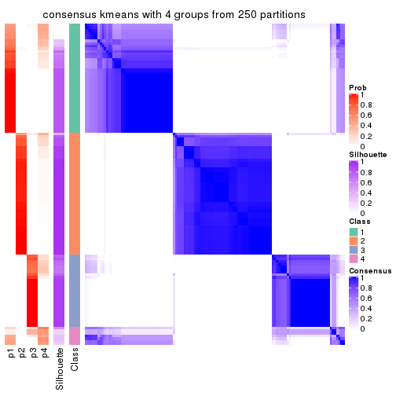
consensus_heatmap(res, k = 5)
consensus_heatmap(res, k = 6)
Heatmaps for the membership of samples in all partitions to see how consistent they are:
membership_heatmap(res, k = 2)
membership_heatmap(res, k = 3)
membership_heatmap(res, k = 4)
membership_heatmap(res, k = 5)

membership_heatmap(res, k = 6)
As soon as we have had the classes for columns, we can look for signatures which are significantly different between classes which can be candidate marks for certain classes. Following are the heatmaps for signatures.
Signature heatmaps where rows are scaled:
get_signatures(res, k = 2)
get_signatures(res, k = 3)
get_signatures(res, k = 4)
get_signatures(res, k = 5)
get_signatures(res, k = 6)
Signature heatmaps where rows are not scaled:
get_signatures(res, k = 2, scale_rows = FALSE)
get_signatures(res, k = 3, scale_rows = FALSE)

get_signatures(res, k = 4, scale_rows = FALSE)
get_signatures(res, k = 5, scale_rows = FALSE)
get_signatures(res, k = 6, scale_rows = FALSE)
Compare the overlap of signatures from different k:
compare_signatures(res)
get_signature() returns a data frame invisibly. TO get the list of signatures, the function
call should be assigned to a variable explicitly. In following code, if plot argument is set
to FALSE, no heatmap is plotted while only the differential analysis is performed.
# code only for demonstration
tb = get_signature(res, k = ..., plot = FALSE)
An example of the output of tb is:
#> which_row fdr mean_1 mean_2 scaled_mean_1 scaled_mean_2 km
#> 1 38 0.042760348 8.373488 9.131774 -0.5533452 0.5164555 1
#> 2 40 0.018707592 7.106213 8.469186 -0.6173731 0.5762149 1
#> 3 55 0.019134737 10.221463 11.207825 -0.6159697 0.5749050 1
#> 4 59 0.006059896 5.921854 7.869574 -0.6899429 0.6439467 1
#> 5 60 0.018055526 8.928898 10.211722 -0.6204761 0.5791110 1
#> 6 98 0.009384629 15.714769 14.887706 0.6635654 -0.6193277 2
...
The columns in tb are:
which_row: row indices corresponding to the input matrix.fdr: FDR for the differential test. mean_x: The mean value in group x.scaled_mean_x: The mean value in group x after rows are scaled.km: Row groups if k-means clustering is applied to rows.UMAP plot which shows how samples are separated.
dimension_reduction(res, k = 2, method = "UMAP")
dimension_reduction(res, k = 3, method = "UMAP")
dimension_reduction(res, k = 4, method = "UMAP")

dimension_reduction(res, k = 5, method = "UMAP")
dimension_reduction(res, k = 6, method = "UMAP")
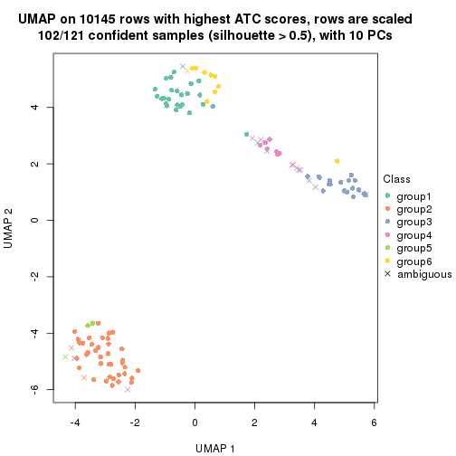
Following heatmap shows how subgroups are split when increasing k:
collect_classes(res)
If matrix rows can be associated to genes, consider to use GO_Enrichment(res,
...) to perform function enrichment for the signature genes.
The object with results only for a single top-value method and a single partition method can be extracted as:
res = res_list["ATC", "skmeans"]
# you can also extract it by
# res = res_list["ATC:skmeans"]
A summary of res and all the functions that can be applied to it:
res
#> A 'ConsensusPartition' object with k = 2, 3, 4, 5, 6.
#> On a matrix with 10145 rows and 121 columns.
#> Top rows (1000, 2000, 3000, 4000, 5000) are extracted by 'ATC' method.
#> Subgroups are detected by 'skmeans' method.
#> Performed in total 1250 partitions by row resampling.
#> Best k for subgroups seems to be 4.
#>
#> Following methods can be applied to this 'ConsensusPartition' object:
#> [1] "cola_report" "collect_classes" "collect_plots"
#> [4] "collect_stats" "colnames" "compare_signatures"
#> [7] "consensus_heatmap" "dimension_reduction" "functional_enrichment"
#> [10] "get_anno_col" "get_anno" "get_classes"
#> [13] "get_consensus" "get_matrix" "get_membership"
#> [16] "get_param" "get_signatures" "get_stats"
#> [19] "is_best_k" "is_stable_k" "membership_heatmap"
#> [22] "ncol" "nrow" "plot_ecdf"
#> [25] "rownames" "select_partition_number" "show"
#> [28] "suggest_best_k" "test_to_known_factors"
collect_plots() function collects all the plots made from res for all k (number of partitions)
into one single page to provide an easy and fast comparison between different k.
collect_plots(res)
The plots are:
k and the heatmap of
predicted classes for each k.k.k.k.All the plots in panels can be made by individual functions and they are plotted later in this section.
select_partition_number() produces several plots showing different
statistics for choosing “optimized” k. There are following statistics:
k;k, the area increased is defined as \(A_k - A_{k-1}\).The detailed explanations of these statistics can be found in the cola vignette.
Generally speaking, lower PAC score, higher mean silhouette score or higher
concordance corresponds to better partition. Rand index and Jaccard index
measure how similar the current partition is compared to partition with k-1.
If they are too similar, we won't accept k is better than k-1.
select_partition_number(res)
The numeric values for all these statistics can be obtained by get_stats().
get_stats(res)
#> k 1-PAC mean_silhouette concordance area_increased Rand Jaccard
#> 2 2 1.000 0.985 0.991 0.4813 0.521 0.521
#> 3 3 0.979 0.965 0.984 0.3895 0.800 0.620
#> 4 4 0.968 0.920 0.960 0.0734 0.931 0.798
#> 5 5 0.868 0.825 0.915 0.0401 0.972 0.903
#> 6 6 0.811 0.757 0.869 0.0354 0.975 0.908
suggest_best_k() suggests the best \(k\) based on these statistics. The rules are as follows:
NA.suggest_best_k(res)
#> [1] 4
#> attr(,"optional")
#> [1] 2 3
There is also optional best \(k\) = 2 3 that is worth to check.
Following shows the table of the partitions (You need to click the show/hide
code output link to see it). The membership matrix (columns with name p*)
is inferred by
clue::cl_consensus()
function with the SE method. Basically the value in the membership matrix
represents the probability to belong to a certain group. The finall class
label for an item is determined with the group with highest probability it
belongs to.
In get_classes() function, the entropy is calculated from the membership
matrix and the silhouette score is calculated from the consensus matrix.
cbind(get_classes(res, k = 2), get_membership(res, k = 2))
#> class entropy silhouette p1 p2
#> SRR2431463 1 0.2043 0.973 0.968 0.032
#> SRR2431462 1 0.2043 0.973 0.968 0.032
#> SRR2431461 1 0.0000 0.986 1.000 0.000
#> SRR2431459 1 0.2043 0.973 0.968 0.032
#> SRR2431460 1 0.3431 0.945 0.936 0.064
#> SRR2431458 1 0.0000 0.986 1.000 0.000
#> SRR2431457 1 0.2236 0.970 0.964 0.036
#> SRR2431455 1 0.2236 0.970 0.964 0.036
#> SRR2431456 1 0.2043 0.973 0.968 0.032
#> SRR2431454 1 0.0000 0.986 1.000 0.000
#> SRR2431453 1 0.2043 0.973 0.968 0.032
#> SRR2431451 1 0.0000 0.986 1.000 0.000
#> SRR2431452 1 0.0000 0.986 1.000 0.000
#> SRR2431450 1 0.2043 0.973 0.968 0.032
#> SRR2431449 1 0.2236 0.970 0.964 0.036
#> SRR2431448 1 0.0938 0.981 0.988 0.012
#> SRR2431446 1 0.0000 0.986 1.000 0.000
#> SRR2431447 1 0.0000 0.986 1.000 0.000
#> SRR2431445 1 0.2043 0.973 0.968 0.032
#> SRR2431444 1 0.0000 0.986 1.000 0.000
#> SRR2431443 1 0.2043 0.973 0.968 0.032
#> SRR2431442 1 0.2043 0.973 0.968 0.032
#> SRR2431441 1 0.2236 0.970 0.964 0.036
#> SRR2431440 1 0.0000 0.986 1.000 0.000
#> SRR2431439 1 0.0000 0.986 1.000 0.000
#> SRR2431438 1 0.2043 0.973 0.968 0.032
#> SRR2431437 1 0.2043 0.973 0.968 0.032
#> SRR2431436 1 0.0000 0.986 1.000 0.000
#> SRR2431435 1 0.0000 0.986 1.000 0.000
#> SRR2431434 1 0.2043 0.973 0.968 0.032
#> SRR2431433 1 0.2043 0.973 0.968 0.032
#> SRR2431432 1 0.2043 0.973 0.968 0.032
#> SRR2431431 1 0.0000 0.986 1.000 0.000
#> SRR2431430 1 0.0000 0.986 1.000 0.000
#> SRR2431429 1 0.7219 0.774 0.800 0.200
#> SRR2431428 1 0.2043 0.973 0.968 0.032
#> SRR2431427 2 0.0000 0.999 0.000 1.000
#> SRR2431426 2 0.0000 0.999 0.000 1.000
#> SRR2431425 2 0.0000 0.999 0.000 1.000
#> SRR2431424 2 0.0000 0.999 0.000 1.000
#> SRR2431423 2 0.0000 0.999 0.000 1.000
#> SRR2431422 2 0.0000 0.999 0.000 1.000
#> SRR2431421 2 0.0000 0.999 0.000 1.000
#> SRR2431420 2 0.0000 0.999 0.000 1.000
#> SRR2431419 2 0.0000 0.999 0.000 1.000
#> SRR2431418 2 0.0000 0.999 0.000 1.000
#> SRR2431417 2 0.0000 0.999 0.000 1.000
#> SRR2431416 2 0.0000 0.999 0.000 1.000
#> SRR2431415 2 0.0000 0.999 0.000 1.000
#> SRR2431414 2 0.0000 0.999 0.000 1.000
#> SRR2431413 2 0.0000 0.999 0.000 1.000
#> SRR2431412 2 0.0000 0.999 0.000 1.000
#> SRR2431411 1 0.5294 0.868 0.880 0.120
#> SRR2431409 2 0.0000 0.999 0.000 1.000
#> SRR2431410 2 0.0000 0.999 0.000 1.000
#> SRR2431408 2 0.0000 0.999 0.000 1.000
#> SRR2431407 2 0.0000 0.999 0.000 1.000
#> SRR2431405 2 0.0000 0.999 0.000 1.000
#> SRR2431406 2 0.0000 0.999 0.000 1.000
#> SRR2431404 2 0.0000 0.999 0.000 1.000
#> SRR2431403 2 0.0000 0.999 0.000 1.000
#> SRR2431402 2 0.0000 0.999 0.000 1.000
#> SRR2431401 2 0.0000 0.999 0.000 1.000
#> SRR2431400 2 0.0000 0.999 0.000 1.000
#> SRR2431399 2 0.0000 0.999 0.000 1.000
#> SRR2431398 2 0.0000 0.999 0.000 1.000
#> SRR2431397 2 0.0000 0.999 0.000 1.000
#> SRR2431396 2 0.0000 0.999 0.000 1.000
#> SRR2431395 2 0.0000 0.999 0.000 1.000
#> SRR2431394 2 0.0000 0.999 0.000 1.000
#> SRR2431393 2 0.0000 0.999 0.000 1.000
#> SRR2431392 2 0.0000 0.999 0.000 1.000
#> SRR2431391 2 0.0000 0.999 0.000 1.000
#> SRR2431390 2 0.0000 0.999 0.000 1.000
#> SRR2431389 2 0.0000 0.999 0.000 1.000
#> SRR2431388 2 0.0000 0.999 0.000 1.000
#> SRR2431387 2 0.0000 0.999 0.000 1.000
#> SRR2431386 2 0.0000 0.999 0.000 1.000
#> SRR2431385 2 0.2043 0.967 0.032 0.968
#> SRR2431383 2 0.0000 0.999 0.000 1.000
#> SRR2431384 2 0.0000 0.999 0.000 1.000
#> SRR2431382 2 0.0000 0.999 0.000 1.000
#> SRR2431381 2 0.0000 0.999 0.000 1.000
#> SRR2431380 2 0.0000 0.999 0.000 1.000
#> SRR2431379 1 0.0000 0.986 1.000 0.000
#> SRR2431378 1 0.0000 0.986 1.000 0.000
#> SRR2431376 1 0.0000 0.986 1.000 0.000
#> SRR2431377 1 0.0000 0.986 1.000 0.000
#> SRR2431375 1 0.0000 0.986 1.000 0.000
#> SRR2431374 1 0.2043 0.973 0.968 0.032
#> SRR2431372 1 0.0000 0.986 1.000 0.000
#> SRR2431371 1 0.0000 0.986 1.000 0.000
#> SRR2431373 1 0.0000 0.986 1.000 0.000
#> SRR2431370 1 0.0000 0.986 1.000 0.000
#> SRR2431369 1 0.0000 0.986 1.000 0.000
#> SRR2431368 1 0.0000 0.986 1.000 0.000
#> SRR2431367 1 0.0000 0.986 1.000 0.000
#> SRR2431366 1 0.0000 0.986 1.000 0.000
#> SRR2431365 1 0.0000 0.986 1.000 0.000
#> SRR2431364 1 0.0000 0.986 1.000 0.000
#> SRR2431363 1 0.0000 0.986 1.000 0.000
#> SRR2431361 1 0.0000 0.986 1.000 0.000
#> SRR2431362 1 0.0000 0.986 1.000 0.000
#> SRR2431360 1 0.0000 0.986 1.000 0.000
#> SRR2431359 1 0.0000 0.986 1.000 0.000
#> SRR2431358 1 0.0376 0.984 0.996 0.004
#> SRR2431357 1 0.0000 0.986 1.000 0.000
#> SRR2431355 1 0.0000 0.986 1.000 0.000
#> SRR2431356 1 0.0000 0.986 1.000 0.000
#> SRR2431354 1 0.0000 0.986 1.000 0.000
#> SRR2431353 1 0.0000 0.986 1.000 0.000
#> SRR2431352 1 0.0000 0.986 1.000 0.000
#> SRR2431351 1 0.0000 0.986 1.000 0.000
#> SRR2431350 1 0.0000 0.986 1.000 0.000
#> SRR2431349 1 0.0000 0.986 1.000 0.000
#> SRR2431348 1 0.0000 0.986 1.000 0.000
#> SRR2431347 1 0.0000 0.986 1.000 0.000
#> SRR2431346 1 0.0000 0.986 1.000 0.000
#> SRR2431345 1 0.0000 0.986 1.000 0.000
#> SRR2431344 1 0.0000 0.986 1.000 0.000
#> SRR2431343 1 0.0000 0.986 1.000 0.000
cbind(get_classes(res, k = 3), get_membership(res, k = 3))
#> class entropy silhouette p1 p2 p3
#> SRR2431463 1 0.0000 0.988 1.000 0.000 0.000
#> SRR2431462 1 0.0000 0.988 1.000 0.000 0.000
#> SRR2431461 1 0.0000 0.988 1.000 0.000 0.000
#> SRR2431459 1 0.0000 0.988 1.000 0.000 0.000
#> SRR2431460 1 0.0000 0.988 1.000 0.000 0.000
#> SRR2431458 1 0.0000 0.988 1.000 0.000 0.000
#> SRR2431457 1 0.0000 0.988 1.000 0.000 0.000
#> SRR2431455 1 0.0000 0.988 1.000 0.000 0.000
#> SRR2431456 1 0.0000 0.988 1.000 0.000 0.000
#> SRR2431454 3 0.1289 0.939 0.032 0.000 0.968
#> SRR2431453 1 0.0000 0.988 1.000 0.000 0.000
#> SRR2431451 1 0.0000 0.988 1.000 0.000 0.000
#> SRR2431452 3 0.0000 0.965 0.000 0.000 1.000
#> SRR2431450 1 0.0000 0.988 1.000 0.000 0.000
#> SRR2431449 1 0.0000 0.988 1.000 0.000 0.000
#> SRR2431448 1 0.0000 0.988 1.000 0.000 0.000
#> SRR2431446 1 0.0000 0.988 1.000 0.000 0.000
#> SRR2431447 1 0.0000 0.988 1.000 0.000 0.000
#> SRR2431445 1 0.0000 0.988 1.000 0.000 0.000
#> SRR2431444 3 0.0000 0.965 0.000 0.000 1.000
#> SRR2431443 1 0.0000 0.988 1.000 0.000 0.000
#> SRR2431442 1 0.0000 0.988 1.000 0.000 0.000
#> SRR2431441 1 0.0000 0.988 1.000 0.000 0.000
#> SRR2431440 1 0.0000 0.988 1.000 0.000 0.000
#> SRR2431439 1 0.0000 0.988 1.000 0.000 0.000
#> SRR2431438 1 0.0000 0.988 1.000 0.000 0.000
#> SRR2431437 1 0.0000 0.988 1.000 0.000 0.000
#> SRR2431436 3 0.0000 0.965 0.000 0.000 1.000
#> SRR2431435 3 0.4654 0.741 0.208 0.000 0.792
#> SRR2431434 1 0.0000 0.988 1.000 0.000 0.000
#> SRR2431433 1 0.0000 0.988 1.000 0.000 0.000
#> SRR2431432 1 0.0000 0.988 1.000 0.000 0.000
#> SRR2431431 1 0.0424 0.981 0.992 0.000 0.008
#> SRR2431430 1 0.0000 0.988 1.000 0.000 0.000
#> SRR2431429 1 0.0000 0.988 1.000 0.000 0.000
#> SRR2431428 1 0.0000 0.988 1.000 0.000 0.000
#> SRR2431427 2 0.0000 0.995 0.000 1.000 0.000
#> SRR2431426 2 0.0000 0.995 0.000 1.000 0.000
#> SRR2431425 2 0.0000 0.995 0.000 1.000 0.000
#> SRR2431424 2 0.0000 0.995 0.000 1.000 0.000
#> SRR2431423 2 0.0000 0.995 0.000 1.000 0.000
#> SRR2431422 2 0.0000 0.995 0.000 1.000 0.000
#> SRR2431421 2 0.0000 0.995 0.000 1.000 0.000
#> SRR2431420 2 0.0000 0.995 0.000 1.000 0.000
#> SRR2431419 2 0.0000 0.995 0.000 1.000 0.000
#> SRR2431418 2 0.0000 0.995 0.000 1.000 0.000
#> SRR2431417 2 0.0000 0.995 0.000 1.000 0.000
#> SRR2431416 2 0.0000 0.995 0.000 1.000 0.000
#> SRR2431415 2 0.0000 0.995 0.000 1.000 0.000
#> SRR2431414 2 0.0000 0.995 0.000 1.000 0.000
#> SRR2431413 2 0.0000 0.995 0.000 1.000 0.000
#> SRR2431412 2 0.0000 0.995 0.000 1.000 0.000
#> SRR2431411 3 0.0000 0.965 0.000 0.000 1.000
#> SRR2431409 2 0.0000 0.995 0.000 1.000 0.000
#> SRR2431410 2 0.4842 0.709 0.224 0.776 0.000
#> SRR2431408 2 0.0000 0.995 0.000 1.000 0.000
#> SRR2431407 2 0.0000 0.995 0.000 1.000 0.000
#> SRR2431405 2 0.0000 0.995 0.000 1.000 0.000
#> SRR2431406 2 0.0000 0.995 0.000 1.000 0.000
#> SRR2431404 2 0.0000 0.995 0.000 1.000 0.000
#> SRR2431403 2 0.0000 0.995 0.000 1.000 0.000
#> SRR2431402 2 0.0000 0.995 0.000 1.000 0.000
#> SRR2431401 2 0.0000 0.995 0.000 1.000 0.000
#> SRR2431400 2 0.0000 0.995 0.000 1.000 0.000
#> SRR2431399 2 0.0000 0.995 0.000 1.000 0.000
#> SRR2431398 2 0.0000 0.995 0.000 1.000 0.000
#> SRR2431397 2 0.0000 0.995 0.000 1.000 0.000
#> SRR2431396 2 0.0000 0.995 0.000 1.000 0.000
#> SRR2431395 2 0.0000 0.995 0.000 1.000 0.000
#> SRR2431394 2 0.0000 0.995 0.000 1.000 0.000
#> SRR2431393 2 0.0000 0.995 0.000 1.000 0.000
#> SRR2431392 2 0.0000 0.995 0.000 1.000 0.000
#> SRR2431391 2 0.0000 0.995 0.000 1.000 0.000
#> SRR2431390 2 0.0000 0.995 0.000 1.000 0.000
#> SRR2431389 2 0.0000 0.995 0.000 1.000 0.000
#> SRR2431388 2 0.0000 0.995 0.000 1.000 0.000
#> SRR2431387 2 0.0000 0.995 0.000 1.000 0.000
#> SRR2431386 2 0.0000 0.995 0.000 1.000 0.000
#> SRR2431385 3 0.5968 0.423 0.000 0.364 0.636
#> SRR2431383 2 0.0000 0.995 0.000 1.000 0.000
#> SRR2431384 2 0.0000 0.995 0.000 1.000 0.000
#> SRR2431382 2 0.0000 0.995 0.000 1.000 0.000
#> SRR2431381 2 0.0000 0.995 0.000 1.000 0.000
#> SRR2431380 2 0.0000 0.995 0.000 1.000 0.000
#> SRR2431379 3 0.0000 0.965 0.000 0.000 1.000
#> SRR2431378 3 0.0000 0.965 0.000 0.000 1.000
#> SRR2431376 3 0.0000 0.965 0.000 0.000 1.000
#> SRR2431377 3 0.0000 0.965 0.000 0.000 1.000
#> SRR2431375 3 0.0000 0.965 0.000 0.000 1.000
#> SRR2431374 1 0.0000 0.988 1.000 0.000 0.000
#> SRR2431372 3 0.0000 0.965 0.000 0.000 1.000
#> SRR2431371 3 0.0000 0.965 0.000 0.000 1.000
#> SRR2431373 3 0.0000 0.965 0.000 0.000 1.000
#> SRR2431370 3 0.0000 0.965 0.000 0.000 1.000
#> SRR2431369 3 0.0000 0.965 0.000 0.000 1.000
#> SRR2431368 3 0.0000 0.965 0.000 0.000 1.000
#> SRR2431367 3 0.0000 0.965 0.000 0.000 1.000
#> SRR2431366 3 0.4399 0.770 0.188 0.000 0.812
#> SRR2431365 3 0.0000 0.965 0.000 0.000 1.000
#> SRR2431364 3 0.0000 0.965 0.000 0.000 1.000
#> SRR2431363 3 0.0000 0.965 0.000 0.000 1.000
#> SRR2431361 3 0.0000 0.965 0.000 0.000 1.000
#> SRR2431362 3 0.0000 0.965 0.000 0.000 1.000
#> SRR2431360 3 0.0000 0.965 0.000 0.000 1.000
#> SRR2431359 3 0.0000 0.965 0.000 0.000 1.000
#> SRR2431358 1 0.0000 0.988 1.000 0.000 0.000
#> SRR2431357 1 0.4504 0.756 0.804 0.000 0.196
#> SRR2431355 3 0.4346 0.776 0.184 0.000 0.816
#> SRR2431356 3 0.0000 0.965 0.000 0.000 1.000
#> SRR2431354 3 0.0000 0.965 0.000 0.000 1.000
#> SRR2431353 1 0.0237 0.984 0.996 0.000 0.004
#> SRR2431352 1 0.1031 0.966 0.976 0.000 0.024
#> SRR2431351 3 0.0000 0.965 0.000 0.000 1.000
#> SRR2431350 3 0.0000 0.965 0.000 0.000 1.000
#> SRR2431349 3 0.0000 0.965 0.000 0.000 1.000
#> SRR2431348 3 0.0000 0.965 0.000 0.000 1.000
#> SRR2431347 3 0.0000 0.965 0.000 0.000 1.000
#> SRR2431346 3 0.0000 0.965 0.000 0.000 1.000
#> SRR2431345 3 0.0000 0.965 0.000 0.000 1.000
#> SRR2431344 3 0.5138 0.671 0.252 0.000 0.748
#> SRR2431343 1 0.4555 0.750 0.800 0.000 0.200
cbind(get_classes(res, k = 4), get_membership(res, k = 4))
#> class entropy silhouette p1 p2 p3 p4
#> SRR2431463 1 0.0000 0.932 1.000 0.000 0.000 0.000
#> SRR2431462 1 0.0000 0.932 1.000 0.000 0.000 0.000
#> SRR2431461 1 0.0592 0.927 0.984 0.000 0.000 0.016
#> SRR2431459 1 0.0000 0.932 1.000 0.000 0.000 0.000
#> SRR2431460 1 0.0000 0.932 1.000 0.000 0.000 0.000
#> SRR2431458 1 0.1302 0.911 0.956 0.000 0.000 0.044
#> SRR2431457 1 0.0000 0.932 1.000 0.000 0.000 0.000
#> SRR2431455 1 0.0000 0.932 1.000 0.000 0.000 0.000
#> SRR2431456 1 0.0000 0.932 1.000 0.000 0.000 0.000
#> SRR2431454 3 0.3196 0.833 0.008 0.000 0.856 0.136
#> SRR2431453 1 0.0000 0.932 1.000 0.000 0.000 0.000
#> SRR2431451 1 0.2011 0.889 0.920 0.000 0.000 0.080
#> SRR2431452 3 0.0336 0.964 0.000 0.000 0.992 0.008
#> SRR2431450 1 0.0000 0.932 1.000 0.000 0.000 0.000
#> SRR2431449 1 0.0000 0.932 1.000 0.000 0.000 0.000
#> SRR2431448 1 0.0817 0.922 0.976 0.000 0.000 0.024
#> SRR2431446 1 0.0921 0.921 0.972 0.000 0.000 0.028
#> SRR2431447 1 0.1389 0.909 0.952 0.000 0.000 0.048
#> SRR2431445 1 0.0000 0.932 1.000 0.000 0.000 0.000
#> SRR2431444 3 0.3123 0.814 0.000 0.000 0.844 0.156
#> SRR2431443 1 0.0000 0.932 1.000 0.000 0.000 0.000
#> SRR2431442 1 0.0000 0.932 1.000 0.000 0.000 0.000
#> SRR2431441 1 0.0000 0.932 1.000 0.000 0.000 0.000
#> SRR2431440 1 0.3400 0.795 0.820 0.000 0.000 0.180
#> SRR2431439 1 0.1022 0.921 0.968 0.000 0.000 0.032
#> SRR2431438 1 0.0000 0.932 1.000 0.000 0.000 0.000
#> SRR2431437 1 0.0188 0.931 0.996 0.000 0.000 0.004
#> SRR2431436 3 0.1118 0.943 0.000 0.000 0.964 0.036
#> SRR2431435 1 0.7761 0.013 0.388 0.000 0.376 0.236
#> SRR2431434 1 0.0000 0.932 1.000 0.000 0.000 0.000
#> SRR2431433 1 0.0188 0.931 0.996 0.000 0.000 0.004
#> SRR2431432 1 0.0336 0.929 0.992 0.000 0.000 0.008
#> SRR2431431 1 0.4999 0.173 0.508 0.000 0.000 0.492
#> SRR2431430 1 0.1716 0.900 0.936 0.000 0.000 0.064
#> SRR2431429 1 0.0000 0.932 1.000 0.000 0.000 0.000
#> SRR2431428 1 0.4925 0.268 0.572 0.000 0.000 0.428
#> SRR2431427 2 0.0000 0.998 0.000 1.000 0.000 0.000
#> SRR2431426 2 0.0188 0.995 0.000 0.996 0.000 0.004
#> SRR2431425 2 0.0000 0.998 0.000 1.000 0.000 0.000
#> SRR2431424 2 0.0000 0.998 0.000 1.000 0.000 0.000
#> SRR2431423 2 0.0000 0.998 0.000 1.000 0.000 0.000
#> SRR2431422 2 0.0000 0.998 0.000 1.000 0.000 0.000
#> SRR2431421 2 0.0336 0.993 0.000 0.992 0.000 0.008
#> SRR2431420 2 0.0000 0.998 0.000 1.000 0.000 0.000
#> SRR2431419 2 0.0000 0.998 0.000 1.000 0.000 0.000
#> SRR2431418 2 0.0000 0.998 0.000 1.000 0.000 0.000
#> SRR2431417 2 0.0000 0.998 0.000 1.000 0.000 0.000
#> SRR2431416 2 0.0000 0.998 0.000 1.000 0.000 0.000
#> SRR2431415 2 0.0000 0.998 0.000 1.000 0.000 0.000
#> SRR2431414 2 0.0000 0.998 0.000 1.000 0.000 0.000
#> SRR2431413 2 0.0592 0.987 0.000 0.984 0.000 0.016
#> SRR2431412 2 0.0000 0.998 0.000 1.000 0.000 0.000
#> SRR2431411 3 0.0188 0.967 0.000 0.000 0.996 0.004
#> SRR2431409 2 0.0000 0.998 0.000 1.000 0.000 0.000
#> SRR2431410 4 0.6374 0.381 0.072 0.372 0.000 0.556
#> SRR2431408 2 0.0000 0.998 0.000 1.000 0.000 0.000
#> SRR2431407 2 0.0000 0.998 0.000 1.000 0.000 0.000
#> SRR2431405 2 0.0592 0.987 0.000 0.984 0.000 0.016
#> SRR2431406 2 0.0000 0.998 0.000 1.000 0.000 0.000
#> SRR2431404 2 0.0336 0.993 0.000 0.992 0.000 0.008
#> SRR2431403 2 0.0000 0.998 0.000 1.000 0.000 0.000
#> SRR2431402 2 0.0000 0.998 0.000 1.000 0.000 0.000
#> SRR2431401 2 0.0000 0.998 0.000 1.000 0.000 0.000
#> SRR2431400 2 0.0000 0.998 0.000 1.000 0.000 0.000
#> SRR2431399 2 0.0188 0.995 0.000 0.996 0.000 0.004
#> SRR2431398 2 0.0000 0.998 0.000 1.000 0.000 0.000
#> SRR2431397 2 0.0000 0.998 0.000 1.000 0.000 0.000
#> SRR2431396 2 0.0707 0.984 0.000 0.980 0.000 0.020
#> SRR2431395 2 0.0000 0.998 0.000 1.000 0.000 0.000
#> SRR2431394 2 0.0000 0.998 0.000 1.000 0.000 0.000
#> SRR2431393 2 0.0188 0.995 0.000 0.996 0.000 0.004
#> SRR2431392 2 0.0188 0.995 0.000 0.996 0.000 0.004
#> SRR2431391 2 0.0000 0.998 0.000 1.000 0.000 0.000
#> SRR2431390 2 0.0188 0.995 0.000 0.996 0.000 0.004
#> SRR2431389 2 0.0000 0.998 0.000 1.000 0.000 0.000
#> SRR2431388 2 0.0469 0.991 0.000 0.988 0.000 0.012
#> SRR2431387 2 0.0000 0.998 0.000 1.000 0.000 0.000
#> SRR2431386 2 0.0000 0.998 0.000 1.000 0.000 0.000
#> SRR2431385 3 0.4644 0.586 0.000 0.228 0.748 0.024
#> SRR2431383 2 0.0592 0.987 0.000 0.984 0.000 0.016
#> SRR2431384 2 0.0000 0.998 0.000 1.000 0.000 0.000
#> SRR2431382 2 0.0000 0.998 0.000 1.000 0.000 0.000
#> SRR2431381 2 0.0000 0.998 0.000 1.000 0.000 0.000
#> SRR2431380 2 0.0000 0.998 0.000 1.000 0.000 0.000
#> SRR2431379 3 0.0000 0.969 0.000 0.000 1.000 0.000
#> SRR2431378 3 0.0707 0.956 0.000 0.000 0.980 0.020
#> SRR2431376 3 0.1716 0.917 0.000 0.000 0.936 0.064
#> SRR2431377 4 0.4406 0.620 0.000 0.000 0.300 0.700
#> SRR2431375 3 0.0000 0.969 0.000 0.000 1.000 0.000
#> SRR2431374 4 0.3074 0.790 0.152 0.000 0.000 0.848
#> SRR2431372 3 0.0000 0.969 0.000 0.000 1.000 0.000
#> SRR2431371 3 0.1557 0.925 0.000 0.000 0.944 0.056
#> SRR2431373 3 0.0000 0.969 0.000 0.000 1.000 0.000
#> SRR2431370 3 0.0000 0.969 0.000 0.000 1.000 0.000
#> SRR2431369 3 0.1474 0.929 0.000 0.000 0.948 0.052
#> SRR2431368 3 0.0000 0.969 0.000 0.000 1.000 0.000
#> SRR2431367 3 0.0000 0.969 0.000 0.000 1.000 0.000
#> SRR2431366 4 0.4678 0.721 0.024 0.000 0.232 0.744
#> SRR2431365 4 0.4295 0.711 0.008 0.000 0.240 0.752
#> SRR2431364 3 0.0000 0.969 0.000 0.000 1.000 0.000
#> SRR2431363 3 0.0000 0.969 0.000 0.000 1.000 0.000
#> SRR2431361 3 0.0188 0.967 0.000 0.000 0.996 0.004
#> SRR2431362 3 0.0000 0.969 0.000 0.000 1.000 0.000
#> SRR2431360 3 0.0000 0.969 0.000 0.000 1.000 0.000
#> SRR2431359 3 0.0000 0.969 0.000 0.000 1.000 0.000
#> SRR2431358 4 0.2081 0.842 0.084 0.000 0.000 0.916
#> SRR2431357 4 0.1940 0.847 0.076 0.000 0.000 0.924
#> SRR2431355 4 0.2335 0.838 0.020 0.000 0.060 0.920
#> SRR2431356 3 0.0000 0.969 0.000 0.000 1.000 0.000
#> SRR2431354 3 0.0000 0.969 0.000 0.000 1.000 0.000
#> SRR2431353 4 0.1940 0.847 0.076 0.000 0.000 0.924
#> SRR2431352 4 0.1940 0.847 0.076 0.000 0.000 0.924
#> SRR2431351 3 0.0000 0.969 0.000 0.000 1.000 0.000
#> SRR2431350 3 0.0000 0.969 0.000 0.000 1.000 0.000
#> SRR2431349 3 0.0000 0.969 0.000 0.000 1.000 0.000
#> SRR2431348 3 0.0000 0.969 0.000 0.000 1.000 0.000
#> SRR2431347 3 0.0000 0.969 0.000 0.000 1.000 0.000
#> SRR2431346 3 0.0000 0.969 0.000 0.000 1.000 0.000
#> SRR2431345 3 0.0000 0.969 0.000 0.000 1.000 0.000
#> SRR2431344 4 0.1042 0.833 0.008 0.000 0.020 0.972
#> SRR2431343 4 0.1940 0.847 0.076 0.000 0.000 0.924
cbind(get_classes(res, k = 5), get_membership(res, k = 5))
#> class entropy silhouette p1 p2 p3 p4 p5
#> SRR2431463 1 0.0162 0.88692 0.996 0.000 0.000 0.000 0.004
#> SRR2431462 1 0.0162 0.88692 0.996 0.000 0.000 0.000 0.004
#> SRR2431461 1 0.2813 0.74175 0.832 0.000 0.000 0.000 0.168
#> SRR2431459 1 0.0000 0.88753 1.000 0.000 0.000 0.000 0.000
#> SRR2431460 1 0.0000 0.88753 1.000 0.000 0.000 0.000 0.000
#> SRR2431458 1 0.3534 0.59548 0.744 0.000 0.000 0.000 0.256
#> SRR2431457 1 0.0000 0.88753 1.000 0.000 0.000 0.000 0.000
#> SRR2431455 1 0.0000 0.88753 1.000 0.000 0.000 0.000 0.000
#> SRR2431456 1 0.0609 0.87951 0.980 0.000 0.000 0.000 0.020
#> SRR2431454 3 0.5050 -0.07146 0.004 0.000 0.496 0.024 0.476
#> SRR2431453 1 0.0000 0.88753 1.000 0.000 0.000 0.000 0.000
#> SRR2431451 5 0.4450 0.04259 0.488 0.000 0.000 0.004 0.508
#> SRR2431452 3 0.2753 0.79284 0.000 0.000 0.856 0.008 0.136
#> SRR2431450 1 0.0324 0.88573 0.992 0.000 0.000 0.004 0.004
#> SRR2431449 1 0.0000 0.88753 1.000 0.000 0.000 0.000 0.000
#> SRR2431448 1 0.1197 0.86258 0.952 0.000 0.000 0.000 0.048
#> SRR2431446 1 0.2929 0.72760 0.820 0.000 0.000 0.000 0.180
#> SRR2431447 1 0.3857 0.47031 0.688 0.000 0.000 0.000 0.312
#> SRR2431445 1 0.0162 0.88692 0.996 0.000 0.000 0.000 0.004
#> SRR2431444 5 0.4979 -0.10952 0.000 0.000 0.480 0.028 0.492
#> SRR2431443 1 0.0162 0.88694 0.996 0.000 0.000 0.000 0.004
#> SRR2431442 1 0.0000 0.88753 1.000 0.000 0.000 0.000 0.000
#> SRR2431441 1 0.0000 0.88753 1.000 0.000 0.000 0.000 0.000
#> SRR2431440 5 0.4503 0.45926 0.312 0.000 0.000 0.024 0.664
#> SRR2431439 1 0.3039 0.74998 0.836 0.000 0.000 0.012 0.152
#> SRR2431438 1 0.0000 0.88753 1.000 0.000 0.000 0.000 0.000
#> SRR2431437 1 0.1410 0.85524 0.940 0.000 0.000 0.000 0.060
#> SRR2431436 3 0.3814 0.56701 0.000 0.000 0.720 0.004 0.276
#> SRR2431435 5 0.6209 0.52431 0.164 0.000 0.192 0.024 0.620
#> SRR2431434 1 0.0162 0.88694 0.996 0.000 0.000 0.000 0.004
#> SRR2431433 1 0.2079 0.82797 0.916 0.000 0.000 0.020 0.064
#> SRR2431432 1 0.0609 0.88053 0.980 0.000 0.000 0.000 0.020
#> SRR2431431 5 0.6272 0.36520 0.200 0.000 0.004 0.236 0.560
#> SRR2431430 1 0.4627 -0.02529 0.544 0.000 0.000 0.012 0.444
#> SRR2431429 1 0.0000 0.88753 1.000 0.000 0.000 0.000 0.000
#> SRR2431428 1 0.6530 -0.18312 0.440 0.000 0.000 0.360 0.200
#> SRR2431427 2 0.0404 0.95836 0.000 0.988 0.000 0.000 0.012
#> SRR2431426 2 0.0703 0.95797 0.000 0.976 0.000 0.000 0.024
#> SRR2431425 2 0.0290 0.95869 0.000 0.992 0.000 0.000 0.008
#> SRR2431424 2 0.0404 0.95812 0.000 0.988 0.000 0.000 0.012
#> SRR2431423 2 0.0404 0.95833 0.000 0.988 0.000 0.000 0.012
#> SRR2431422 2 0.1043 0.95290 0.000 0.960 0.000 0.000 0.040
#> SRR2431421 2 0.2648 0.87902 0.000 0.848 0.000 0.000 0.152
#> SRR2431420 2 0.0404 0.95870 0.000 0.988 0.000 0.000 0.012
#> SRR2431419 2 0.0609 0.95836 0.000 0.980 0.000 0.000 0.020
#> SRR2431418 2 0.0510 0.95775 0.000 0.984 0.000 0.000 0.016
#> SRR2431417 2 0.0510 0.95847 0.000 0.984 0.000 0.000 0.016
#> SRR2431416 2 0.0000 0.95835 0.000 1.000 0.000 0.000 0.000
#> SRR2431415 2 0.0404 0.95746 0.000 0.988 0.000 0.000 0.012
#> SRR2431414 2 0.0609 0.95884 0.000 0.980 0.000 0.000 0.020
#> SRR2431413 2 0.2516 0.87930 0.000 0.860 0.000 0.000 0.140
#> SRR2431412 2 0.0404 0.95827 0.000 0.988 0.000 0.000 0.012
#> SRR2431411 3 0.1124 0.89316 0.000 0.000 0.960 0.004 0.036
#> SRR2431409 2 0.0510 0.95775 0.000 0.984 0.000 0.000 0.016
#> SRR2431410 2 0.7688 -0.00307 0.140 0.448 0.000 0.304 0.108
#> SRR2431408 2 0.0510 0.95775 0.000 0.984 0.000 0.000 0.016
#> SRR2431407 2 0.0703 0.95796 0.000 0.976 0.000 0.000 0.024
#> SRR2431405 2 0.2516 0.88100 0.000 0.860 0.000 0.000 0.140
#> SRR2431406 2 0.0290 0.95907 0.000 0.992 0.000 0.000 0.008
#> SRR2431404 2 0.1341 0.94321 0.000 0.944 0.000 0.000 0.056
#> SRR2431403 2 0.1043 0.95119 0.000 0.960 0.000 0.000 0.040
#> SRR2431402 2 0.0290 0.95885 0.000 0.992 0.000 0.000 0.008
#> SRR2431401 2 0.1043 0.95450 0.000 0.960 0.000 0.000 0.040
#> SRR2431400 2 0.1197 0.95197 0.000 0.952 0.000 0.000 0.048
#> SRR2431399 2 0.1544 0.93620 0.000 0.932 0.000 0.000 0.068
#> SRR2431398 2 0.0404 0.95828 0.000 0.988 0.000 0.000 0.012
#> SRR2431397 2 0.0290 0.95779 0.000 0.992 0.000 0.000 0.008
#> SRR2431396 2 0.3550 0.79017 0.000 0.760 0.000 0.004 0.236
#> SRR2431395 2 0.0162 0.95806 0.000 0.996 0.000 0.000 0.004
#> SRR2431394 2 0.0609 0.95699 0.000 0.980 0.000 0.000 0.020
#> SRR2431393 2 0.2020 0.92280 0.000 0.900 0.000 0.000 0.100
#> SRR2431392 2 0.1197 0.94896 0.000 0.952 0.000 0.000 0.048
#> SRR2431391 2 0.0290 0.95839 0.000 0.992 0.000 0.000 0.008
#> SRR2431390 2 0.1121 0.95122 0.000 0.956 0.000 0.000 0.044
#> SRR2431389 2 0.0404 0.95834 0.000 0.988 0.000 0.000 0.012
#> SRR2431388 2 0.2488 0.89846 0.000 0.872 0.000 0.004 0.124
#> SRR2431387 2 0.0609 0.95791 0.000 0.980 0.000 0.000 0.020
#> SRR2431386 2 0.0290 0.95853 0.000 0.992 0.000 0.000 0.008
#> SRR2431385 3 0.6363 0.23456 0.000 0.208 0.544 0.004 0.244
#> SRR2431383 2 0.2471 0.88248 0.000 0.864 0.000 0.000 0.136
#> SRR2431384 2 0.0703 0.95789 0.000 0.976 0.000 0.000 0.024
#> SRR2431382 2 0.0162 0.95846 0.000 0.996 0.000 0.000 0.004
#> SRR2431381 2 0.0510 0.95809 0.000 0.984 0.000 0.000 0.016
#> SRR2431380 2 0.0510 0.95775 0.000 0.984 0.000 0.000 0.016
#> SRR2431379 3 0.0162 0.91339 0.000 0.000 0.996 0.000 0.004
#> SRR2431378 3 0.2859 0.83436 0.000 0.000 0.876 0.068 0.056
#> SRR2431376 3 0.3323 0.80340 0.000 0.000 0.844 0.100 0.056
#> SRR2431377 4 0.4441 0.60231 0.000 0.000 0.236 0.720 0.044
#> SRR2431375 3 0.0162 0.91339 0.000 0.000 0.996 0.000 0.004
#> SRR2431374 4 0.1965 0.80339 0.096 0.000 0.000 0.904 0.000
#> SRR2431372 3 0.0162 0.91339 0.000 0.000 0.996 0.000 0.004
#> SRR2431371 3 0.3102 0.81914 0.000 0.000 0.860 0.084 0.056
#> SRR2431373 3 0.0000 0.91321 0.000 0.000 1.000 0.000 0.000
#> SRR2431370 3 0.0000 0.91321 0.000 0.000 1.000 0.000 0.000
#> SRR2431369 3 0.3427 0.79402 0.000 0.000 0.836 0.108 0.056
#> SRR2431368 3 0.0000 0.91321 0.000 0.000 1.000 0.000 0.000
#> SRR2431367 3 0.0000 0.91321 0.000 0.000 1.000 0.000 0.000
#> SRR2431366 4 0.3115 0.78845 0.000 0.000 0.112 0.852 0.036
#> SRR2431365 4 0.3262 0.77657 0.000 0.000 0.124 0.840 0.036
#> SRR2431364 3 0.0162 0.91339 0.000 0.000 0.996 0.000 0.004
#> SRR2431363 3 0.0162 0.91339 0.000 0.000 0.996 0.000 0.004
#> SRR2431361 3 0.2661 0.84374 0.000 0.000 0.888 0.056 0.056
#> SRR2431362 3 0.0162 0.91339 0.000 0.000 0.996 0.000 0.004
#> SRR2431360 3 0.0162 0.91339 0.000 0.000 0.996 0.000 0.004
#> SRR2431359 3 0.0510 0.90728 0.000 0.000 0.984 0.000 0.016
#> SRR2431358 4 0.2359 0.82810 0.060 0.000 0.000 0.904 0.036
#> SRR2431357 4 0.0162 0.86450 0.004 0.000 0.000 0.996 0.000
#> SRR2431355 4 0.0912 0.86132 0.000 0.000 0.016 0.972 0.012
#> SRR2431356 3 0.0000 0.91321 0.000 0.000 1.000 0.000 0.000
#> SRR2431354 3 0.0162 0.91339 0.000 0.000 0.996 0.000 0.004
#> SRR2431353 4 0.0865 0.86422 0.004 0.000 0.000 0.972 0.024
#> SRR2431352 4 0.0451 0.86440 0.004 0.000 0.000 0.988 0.008
#> SRR2431351 3 0.0162 0.91339 0.000 0.000 0.996 0.000 0.004
#> SRR2431350 3 0.0000 0.91321 0.000 0.000 1.000 0.000 0.000
#> SRR2431349 3 0.0162 0.91339 0.000 0.000 0.996 0.000 0.004
#> SRR2431348 3 0.0000 0.91321 0.000 0.000 1.000 0.000 0.000
#> SRR2431347 3 0.0794 0.90162 0.000 0.000 0.972 0.000 0.028
#> SRR2431346 3 0.1168 0.89461 0.000 0.000 0.960 0.008 0.032
#> SRR2431345 3 0.0162 0.91339 0.000 0.000 0.996 0.000 0.004
#> SRR2431344 4 0.2124 0.83810 0.000 0.000 0.004 0.900 0.096
#> SRR2431343 4 0.3061 0.80420 0.020 0.000 0.000 0.844 0.136
cbind(get_classes(res, k = 6), get_membership(res, k = 6))
#> class entropy silhouette p1 p2 p3 p4 p5 p6
#> SRR2431463 1 0.1088 0.8848 0.960 0.000 0.000 0.000 0.016 0.024
#> SRR2431462 1 0.1074 0.8845 0.960 0.000 0.000 0.000 0.012 0.028
#> SRR2431461 1 0.4139 0.6931 0.732 0.000 0.000 0.008 0.048 0.212
#> SRR2431459 1 0.0692 0.8864 0.976 0.000 0.000 0.000 0.004 0.020
#> SRR2431460 1 0.0405 0.8860 0.988 0.000 0.000 0.000 0.008 0.004
#> SRR2431458 1 0.4396 0.4432 0.612 0.000 0.000 0.000 0.036 0.352
#> SRR2431457 1 0.0291 0.8874 0.992 0.000 0.000 0.000 0.004 0.004
#> SRR2431455 1 0.0291 0.8855 0.992 0.000 0.000 0.004 0.000 0.004
#> SRR2431456 1 0.2291 0.8540 0.904 0.000 0.000 0.012 0.040 0.044
#> SRR2431454 6 0.5035 0.3374 0.004 0.000 0.364 0.004 0.060 0.568
#> SRR2431453 1 0.0767 0.8877 0.976 0.000 0.000 0.004 0.012 0.008
#> SRR2431451 6 0.4511 0.3325 0.332 0.000 0.000 0.000 0.048 0.620
#> SRR2431452 3 0.3520 0.6801 0.000 0.000 0.776 0.000 0.036 0.188
#> SRR2431450 1 0.1350 0.8839 0.952 0.000 0.000 0.008 0.020 0.020
#> SRR2431449 1 0.0520 0.8872 0.984 0.000 0.000 0.000 0.008 0.008
#> SRR2431448 1 0.2869 0.7948 0.832 0.000 0.000 0.000 0.020 0.148
#> SRR2431446 1 0.4113 0.6597 0.712 0.000 0.000 0.004 0.040 0.244
#> SRR2431447 1 0.4742 0.1326 0.512 0.000 0.000 0.000 0.048 0.440
#> SRR2431445 1 0.1257 0.8864 0.952 0.000 0.000 0.000 0.020 0.028
#> SRR2431444 6 0.4871 0.2170 0.000 0.000 0.420 0.012 0.036 0.532
#> SRR2431443 1 0.1173 0.8847 0.960 0.000 0.000 0.008 0.016 0.016
#> SRR2431442 1 0.0862 0.8861 0.972 0.000 0.000 0.004 0.008 0.016
#> SRR2431441 1 0.0291 0.8855 0.992 0.000 0.000 0.004 0.000 0.004
#> SRR2431440 6 0.4470 0.5250 0.136 0.000 0.004 0.028 0.076 0.756
#> SRR2431439 1 0.4647 0.6507 0.708 0.000 0.000 0.028 0.056 0.208
#> SRR2431438 1 0.0146 0.8862 0.996 0.000 0.000 0.000 0.004 0.000
#> SRR2431437 1 0.2618 0.8391 0.860 0.000 0.000 0.000 0.024 0.116
#> SRR2431436 3 0.3887 0.3500 0.000 0.000 0.632 0.000 0.008 0.360
#> SRR2431435 6 0.3186 0.5248 0.032 0.000 0.108 0.008 0.008 0.844
#> SRR2431434 1 0.1401 0.8839 0.948 0.000 0.000 0.004 0.020 0.028
#> SRR2431433 1 0.3682 0.7795 0.820 0.000 0.000 0.048 0.044 0.088
#> SRR2431432 1 0.1720 0.8766 0.928 0.000 0.000 0.000 0.032 0.040
#> SRR2431431 6 0.6084 0.3751 0.116 0.000 0.000 0.156 0.116 0.612
#> SRR2431430 6 0.4841 0.1131 0.412 0.000 0.000 0.004 0.048 0.536
#> SRR2431429 1 0.0405 0.8860 0.988 0.000 0.000 0.000 0.008 0.004
#> SRR2431428 4 0.7135 -0.0241 0.352 0.000 0.000 0.372 0.116 0.160
#> SRR2431427 2 0.1398 0.8825 0.000 0.940 0.000 0.000 0.052 0.008
#> SRR2431426 2 0.1471 0.8841 0.000 0.932 0.000 0.000 0.064 0.004
#> SRR2431425 2 0.0790 0.8847 0.000 0.968 0.000 0.000 0.032 0.000
#> SRR2431424 2 0.1327 0.8840 0.000 0.936 0.000 0.000 0.064 0.000
#> SRR2431423 2 0.1152 0.8804 0.000 0.952 0.000 0.000 0.044 0.004
#> SRR2431422 2 0.1910 0.8592 0.000 0.892 0.000 0.000 0.108 0.000
#> SRR2431421 2 0.4002 0.4609 0.000 0.660 0.000 0.000 0.320 0.020
#> SRR2431420 2 0.1010 0.8855 0.000 0.960 0.000 0.000 0.036 0.004
#> SRR2431419 2 0.1444 0.8848 0.000 0.928 0.000 0.000 0.072 0.000
#> SRR2431418 2 0.0937 0.8815 0.000 0.960 0.000 0.000 0.040 0.000
#> SRR2431417 2 0.1007 0.8796 0.000 0.956 0.000 0.000 0.044 0.000
#> SRR2431416 2 0.1471 0.8845 0.000 0.932 0.000 0.000 0.064 0.004
#> SRR2431415 2 0.0632 0.8815 0.000 0.976 0.000 0.000 0.024 0.000
#> SRR2431414 2 0.2070 0.8699 0.000 0.896 0.000 0.000 0.092 0.012
#> SRR2431413 2 0.3816 0.5707 0.000 0.688 0.000 0.000 0.296 0.016
#> SRR2431412 2 0.0458 0.8809 0.000 0.984 0.000 0.000 0.016 0.000
#> SRR2431411 3 0.1398 0.8726 0.000 0.000 0.940 0.000 0.052 0.008
#> SRR2431409 2 0.0603 0.8801 0.000 0.980 0.000 0.000 0.016 0.004
#> SRR2431410 2 0.8565 -0.3439 0.168 0.300 0.000 0.192 0.256 0.084
#> SRR2431408 2 0.0692 0.8806 0.000 0.976 0.000 0.000 0.020 0.004
#> SRR2431407 2 0.1524 0.8826 0.000 0.932 0.000 0.000 0.060 0.008
#> SRR2431405 2 0.3816 0.5722 0.000 0.688 0.000 0.000 0.296 0.016
#> SRR2431406 2 0.0865 0.8855 0.000 0.964 0.000 0.000 0.036 0.000
#> SRR2431404 2 0.2446 0.8493 0.000 0.864 0.000 0.000 0.124 0.012
#> SRR2431403 2 0.2170 0.8625 0.000 0.888 0.000 0.000 0.100 0.012
#> SRR2431402 2 0.1007 0.8862 0.000 0.956 0.000 0.000 0.044 0.000
#> SRR2431401 2 0.1918 0.8737 0.000 0.904 0.000 0.000 0.088 0.008
#> SRR2431400 2 0.1644 0.8695 0.000 0.920 0.000 0.000 0.076 0.004
#> SRR2431399 2 0.2595 0.7900 0.000 0.836 0.000 0.000 0.160 0.004
#> SRR2431398 2 0.1225 0.8854 0.000 0.952 0.000 0.000 0.036 0.012
#> SRR2431397 2 0.1462 0.8810 0.000 0.936 0.000 0.000 0.056 0.008
#> SRR2431396 5 0.4183 -0.3067 0.000 0.480 0.000 0.000 0.508 0.012
#> SRR2431395 2 0.1219 0.8833 0.000 0.948 0.000 0.000 0.048 0.004
#> SRR2431394 2 0.1918 0.8702 0.000 0.904 0.000 0.000 0.088 0.008
#> SRR2431393 2 0.3052 0.6975 0.000 0.780 0.000 0.000 0.216 0.004
#> SRR2431392 2 0.2473 0.8317 0.000 0.856 0.000 0.000 0.136 0.008
#> SRR2431391 2 0.0858 0.8829 0.000 0.968 0.000 0.000 0.028 0.004
#> SRR2431390 2 0.1610 0.8772 0.000 0.916 0.000 0.000 0.084 0.000
#> SRR2431389 2 0.1082 0.8844 0.000 0.956 0.000 0.000 0.040 0.004
#> SRR2431388 2 0.3081 0.7152 0.000 0.776 0.000 0.000 0.220 0.004
#> SRR2431387 2 0.1644 0.8705 0.000 0.920 0.000 0.000 0.076 0.004
#> SRR2431386 2 0.0777 0.8822 0.000 0.972 0.000 0.000 0.024 0.004
#> SRR2431385 5 0.5687 -0.1947 0.000 0.072 0.444 0.000 0.452 0.032
#> SRR2431383 2 0.3952 0.5402 0.000 0.672 0.000 0.000 0.308 0.020
#> SRR2431384 2 0.1471 0.8712 0.000 0.932 0.000 0.000 0.064 0.004
#> SRR2431382 2 0.1411 0.8816 0.000 0.936 0.000 0.000 0.060 0.004
#> SRR2431381 2 0.1462 0.8855 0.000 0.936 0.000 0.000 0.056 0.008
#> SRR2431380 2 0.0508 0.8791 0.000 0.984 0.000 0.000 0.012 0.004
#> SRR2431379 3 0.0146 0.9069 0.000 0.000 0.996 0.000 0.000 0.004
#> SRR2431378 3 0.4394 0.7503 0.000 0.000 0.764 0.056 0.124 0.056
#> SRR2431376 3 0.4911 0.7042 0.000 0.000 0.724 0.100 0.120 0.056
#> SRR2431377 4 0.5637 0.5046 0.000 0.000 0.204 0.632 0.116 0.048
#> SRR2431375 3 0.0146 0.9069 0.000 0.000 0.996 0.000 0.000 0.004
#> SRR2431374 4 0.2264 0.7264 0.096 0.000 0.000 0.888 0.004 0.012
#> SRR2431372 3 0.0000 0.9068 0.000 0.000 1.000 0.000 0.000 0.000
#> SRR2431371 3 0.4726 0.7245 0.000 0.000 0.740 0.084 0.120 0.056
#> SRR2431373 3 0.0000 0.9068 0.000 0.000 1.000 0.000 0.000 0.000
#> SRR2431370 3 0.1049 0.8970 0.000 0.000 0.960 0.000 0.032 0.008
#> SRR2431369 3 0.4821 0.7155 0.000 0.000 0.732 0.092 0.120 0.056
#> SRR2431368 3 0.0405 0.9059 0.000 0.000 0.988 0.000 0.008 0.004
#> SRR2431367 3 0.0260 0.9062 0.000 0.000 0.992 0.000 0.008 0.000
#> SRR2431366 4 0.4149 0.6789 0.000 0.000 0.096 0.784 0.084 0.036
#> SRR2431365 4 0.4752 0.6447 0.000 0.000 0.116 0.736 0.100 0.048
#> SRR2431364 3 0.0146 0.9069 0.000 0.000 0.996 0.000 0.000 0.004
#> SRR2431363 3 0.0146 0.9069 0.000 0.000 0.996 0.000 0.000 0.004
#> SRR2431361 3 0.3827 0.7897 0.000 0.000 0.808 0.044 0.100 0.048
#> SRR2431362 3 0.0146 0.9069 0.000 0.000 0.996 0.000 0.000 0.004
#> SRR2431360 3 0.0146 0.9069 0.000 0.000 0.996 0.000 0.000 0.004
#> SRR2431359 3 0.2095 0.8687 0.000 0.000 0.904 0.004 0.076 0.016
#> SRR2431358 4 0.3080 0.7432 0.036 0.000 0.000 0.860 0.068 0.036
#> SRR2431357 4 0.0665 0.7715 0.008 0.000 0.004 0.980 0.008 0.000
#> SRR2431355 4 0.1949 0.7623 0.000 0.000 0.020 0.924 0.036 0.020
#> SRR2431356 3 0.0260 0.9066 0.000 0.000 0.992 0.000 0.008 0.000
#> SRR2431354 3 0.0146 0.9069 0.000 0.000 0.996 0.000 0.000 0.004
#> SRR2431353 4 0.1088 0.7696 0.000 0.000 0.000 0.960 0.016 0.024
#> SRR2431352 4 0.0717 0.7710 0.000 0.000 0.000 0.976 0.016 0.008
#> SRR2431351 3 0.0146 0.9069 0.000 0.000 0.996 0.000 0.000 0.004
#> SRR2431350 3 0.0603 0.9045 0.000 0.000 0.980 0.000 0.016 0.004
#> SRR2431349 3 0.0146 0.9069 0.000 0.000 0.996 0.000 0.000 0.004
#> SRR2431348 3 0.0603 0.9044 0.000 0.000 0.980 0.000 0.016 0.004
#> SRR2431347 3 0.1845 0.8773 0.000 0.000 0.920 0.000 0.052 0.028
#> SRR2431346 3 0.2189 0.8680 0.000 0.000 0.904 0.004 0.060 0.032
#> SRR2431345 3 0.0146 0.9069 0.000 0.000 0.996 0.000 0.000 0.004
#> SRR2431344 4 0.3544 0.7121 0.000 0.000 0.000 0.800 0.080 0.120
#> SRR2431343 4 0.4040 0.7051 0.020 0.000 0.000 0.784 0.104 0.092
Heatmaps for the consensus matrix. It visualizes the probability of two samples to be in a same group.
consensus_heatmap(res, k = 2)
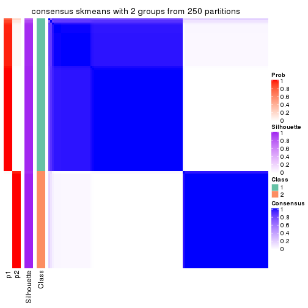
consensus_heatmap(res, k = 3)

consensus_heatmap(res, k = 4)
consensus_heatmap(res, k = 5)

consensus_heatmap(res, k = 6)
Heatmaps for the membership of samples in all partitions to see how consistent they are:
membership_heatmap(res, k = 2)
membership_heatmap(res, k = 3)
membership_heatmap(res, k = 4)
membership_heatmap(res, k = 5)
membership_heatmap(res, k = 6)
As soon as we have had the classes for columns, we can look for signatures which are significantly different between classes which can be candidate marks for certain classes. Following are the heatmaps for signatures.
Signature heatmaps where rows are scaled:
get_signatures(res, k = 2)
get_signatures(res, k = 3)
get_signatures(res, k = 4)
get_signatures(res, k = 5)
get_signatures(res, k = 6)
Signature heatmaps where rows are not scaled:
get_signatures(res, k = 2, scale_rows = FALSE)
get_signatures(res, k = 3, scale_rows = FALSE)
get_signatures(res, k = 4, scale_rows = FALSE)
get_signatures(res, k = 5, scale_rows = FALSE)
get_signatures(res, k = 6, scale_rows = FALSE)
Compare the overlap of signatures from different k:
compare_signatures(res)
get_signature() returns a data frame invisibly. TO get the list of signatures, the function
call should be assigned to a variable explicitly. In following code, if plot argument is set
to FALSE, no heatmap is plotted while only the differential analysis is performed.
# code only for demonstration
tb = get_signature(res, k = ..., plot = FALSE)
An example of the output of tb is:
#> which_row fdr mean_1 mean_2 scaled_mean_1 scaled_mean_2 km
#> 1 38 0.042760348 8.373488 9.131774 -0.5533452 0.5164555 1
#> 2 40 0.018707592 7.106213 8.469186 -0.6173731 0.5762149 1
#> 3 55 0.019134737 10.221463 11.207825 -0.6159697 0.5749050 1
#> 4 59 0.006059896 5.921854 7.869574 -0.6899429 0.6439467 1
#> 5 60 0.018055526 8.928898 10.211722 -0.6204761 0.5791110 1
#> 6 98 0.009384629 15.714769 14.887706 0.6635654 -0.6193277 2
...
The columns in tb are:
which_row: row indices corresponding to the input matrix.fdr: FDR for the differential test. mean_x: The mean value in group x.scaled_mean_x: The mean value in group x after rows are scaled.km: Row groups if k-means clustering is applied to rows.UMAP plot which shows how samples are separated.
dimension_reduction(res, k = 2, method = "UMAP")
dimension_reduction(res, k = 3, method = "UMAP")
dimension_reduction(res, k = 4, method = "UMAP")
dimension_reduction(res, k = 5, method = "UMAP")
dimension_reduction(res, k = 6, method = "UMAP")
Following heatmap shows how subgroups are split when increasing k:
collect_classes(res)
If matrix rows can be associated to genes, consider to use GO_Enrichment(res,
...) to perform function enrichment for the signature genes.
The object with results only for a single top-value method and a single partition method can be extracted as:
res = res_list["ATC", "pam"]
# you can also extract it by
# res = res_list["ATC:pam"]
A summary of res and all the functions that can be applied to it:
res
#> A 'ConsensusPartition' object with k = 2, 3, 4, 5, 6.
#> On a matrix with 10145 rows and 121 columns.
#> Top rows (1000, 2000, 3000, 4000, 5000) are extracted by 'ATC' method.
#> Subgroups are detected by 'pam' method.
#> Performed in total 1250 partitions by row resampling.
#> Best k for subgroups seems to be 6.
#>
#> Following methods can be applied to this 'ConsensusPartition' object:
#> [1] "cola_report" "collect_classes" "collect_plots"
#> [4] "collect_stats" "colnames" "compare_signatures"
#> [7] "consensus_heatmap" "dimension_reduction" "functional_enrichment"
#> [10] "get_anno_col" "get_anno" "get_classes"
#> [13] "get_consensus" "get_matrix" "get_membership"
#> [16] "get_param" "get_signatures" "get_stats"
#> [19] "is_best_k" "is_stable_k" "membership_heatmap"
#> [22] "ncol" "nrow" "plot_ecdf"
#> [25] "rownames" "select_partition_number" "show"
#> [28] "suggest_best_k" "test_to_known_factors"
collect_plots() function collects all the plots made from res for all k (number of partitions)
into one single page to provide an easy and fast comparison between different k.
collect_plots(res)
The plots are:
k and the heatmap of
predicted classes for each k.k.k.k.All the plots in panels can be made by individual functions and they are plotted later in this section.
select_partition_number() produces several plots showing different
statistics for choosing “optimized” k. There are following statistics:
k;k, the area increased is defined as \(A_k - A_{k-1}\).The detailed explanations of these statistics can be found in the cola vignette.
Generally speaking, lower PAC score, higher mean silhouette score or higher
concordance corresponds to better partition. Rand index and Jaccard index
measure how similar the current partition is compared to partition with k-1.
If they are too similar, we won't accept k is better than k-1.
select_partition_number(res)
The numeric values for all these statistics can be obtained by get_stats().
get_stats(res)
#> k 1-PAC mean_silhouette concordance area_increased Rand Jaccard
#> 2 2 1.000 0.991 0.997 0.47800 0.521 0.521
#> 3 3 0.851 0.862 0.941 0.34897 0.818 0.655
#> 4 4 0.994 0.959 0.983 0.13202 0.888 0.695
#> 5 5 0.987 0.934 0.972 0.00702 0.997 0.990
#> 6 6 0.957 0.904 0.955 0.01728 0.985 0.945
suggest_best_k() suggests the best \(k\) based on these statistics. The rules are as follows:
NA.suggest_best_k(res)
#> [1] 6
#> attr(,"optional")
#> [1] 2 4
There is also optional best \(k\) = 2 4 that is worth to check.
Following shows the table of the partitions (You need to click the show/hide
code output link to see it). The membership matrix (columns with name p*)
is inferred by
clue::cl_consensus()
function with the SE method. Basically the value in the membership matrix
represents the probability to belong to a certain group. The finall class
label for an item is determined with the group with highest probability it
belongs to.
In get_classes() function, the entropy is calculated from the membership
matrix and the silhouette score is calculated from the consensus matrix.
cbind(get_classes(res, k = 2), get_membership(res, k = 2))
#> class entropy silhouette p1 p2
#> SRR2431463 1 0.000 1.000 1.000 0.000
#> SRR2431462 1 0.000 1.000 1.000 0.000
#> SRR2431461 1 0.000 1.000 1.000 0.000
#> SRR2431459 1 0.000 1.000 1.000 0.000
#> SRR2431460 1 0.000 1.000 1.000 0.000
#> SRR2431458 1 0.000 1.000 1.000 0.000
#> SRR2431457 1 0.000 1.000 1.000 0.000
#> SRR2431455 1 0.000 1.000 1.000 0.000
#> SRR2431456 1 0.000 1.000 1.000 0.000
#> SRR2431454 1 0.000 1.000 1.000 0.000
#> SRR2431453 1 0.000 1.000 1.000 0.000
#> SRR2431451 1 0.000 1.000 1.000 0.000
#> SRR2431452 1 0.000 1.000 1.000 0.000
#> SRR2431450 1 0.000 1.000 1.000 0.000
#> SRR2431449 1 0.000 1.000 1.000 0.000
#> SRR2431448 1 0.000 1.000 1.000 0.000
#> SRR2431446 1 0.000 1.000 1.000 0.000
#> SRR2431447 1 0.000 1.000 1.000 0.000
#> SRR2431445 1 0.000 1.000 1.000 0.000
#> SRR2431444 1 0.000 1.000 1.000 0.000
#> SRR2431443 1 0.000 1.000 1.000 0.000
#> SRR2431442 1 0.000 1.000 1.000 0.000
#> SRR2431441 1 0.000 1.000 1.000 0.000
#> SRR2431440 1 0.000 1.000 1.000 0.000
#> SRR2431439 1 0.000 1.000 1.000 0.000
#> SRR2431438 1 0.000 1.000 1.000 0.000
#> SRR2431437 1 0.000 1.000 1.000 0.000
#> SRR2431436 1 0.000 1.000 1.000 0.000
#> SRR2431435 1 0.000 1.000 1.000 0.000
#> SRR2431434 1 0.000 1.000 1.000 0.000
#> SRR2431433 1 0.000 1.000 1.000 0.000
#> SRR2431432 1 0.000 1.000 1.000 0.000
#> SRR2431431 1 0.000 1.000 1.000 0.000
#> SRR2431430 1 0.000 1.000 1.000 0.000
#> SRR2431429 1 0.000 1.000 1.000 0.000
#> SRR2431428 2 0.978 0.299 0.412 0.588
#> SRR2431427 2 0.000 0.991 0.000 1.000
#> SRR2431426 2 0.000 0.991 0.000 1.000
#> SRR2431425 2 0.000 0.991 0.000 1.000
#> SRR2431424 2 0.000 0.991 0.000 1.000
#> SRR2431423 2 0.000 0.991 0.000 1.000
#> SRR2431422 2 0.000 0.991 0.000 1.000
#> SRR2431421 2 0.000 0.991 0.000 1.000
#> SRR2431420 2 0.000 0.991 0.000 1.000
#> SRR2431419 2 0.000 0.991 0.000 1.000
#> SRR2431418 2 0.000 0.991 0.000 1.000
#> SRR2431417 2 0.000 0.991 0.000 1.000
#> SRR2431416 2 0.000 0.991 0.000 1.000
#> SRR2431415 2 0.000 0.991 0.000 1.000
#> SRR2431414 2 0.000 0.991 0.000 1.000
#> SRR2431413 2 0.000 0.991 0.000 1.000
#> SRR2431412 2 0.000 0.991 0.000 1.000
#> SRR2431411 1 0.000 1.000 1.000 0.000
#> SRR2431409 2 0.000 0.991 0.000 1.000
#> SRR2431410 1 0.000 1.000 1.000 0.000
#> SRR2431408 2 0.000 0.991 0.000 1.000
#> SRR2431407 2 0.000 0.991 0.000 1.000
#> SRR2431405 2 0.000 0.991 0.000 1.000
#> SRR2431406 2 0.000 0.991 0.000 1.000
#> SRR2431404 2 0.000 0.991 0.000 1.000
#> SRR2431403 2 0.000 0.991 0.000 1.000
#> SRR2431402 2 0.000 0.991 0.000 1.000
#> SRR2431401 2 0.000 0.991 0.000 1.000
#> SRR2431400 2 0.000 0.991 0.000 1.000
#> SRR2431399 2 0.000 0.991 0.000 1.000
#> SRR2431398 2 0.000 0.991 0.000 1.000
#> SRR2431397 2 0.000 0.991 0.000 1.000
#> SRR2431396 2 0.000 0.991 0.000 1.000
#> SRR2431395 2 0.000 0.991 0.000 1.000
#> SRR2431394 2 0.000 0.991 0.000 1.000
#> SRR2431393 2 0.000 0.991 0.000 1.000
#> SRR2431392 2 0.000 0.991 0.000 1.000
#> SRR2431391 2 0.000 0.991 0.000 1.000
#> SRR2431390 2 0.000 0.991 0.000 1.000
#> SRR2431389 2 0.000 0.991 0.000 1.000
#> SRR2431388 2 0.000 0.991 0.000 1.000
#> SRR2431387 2 0.000 0.991 0.000 1.000
#> SRR2431386 2 0.000 0.991 0.000 1.000
#> SRR2431385 2 0.000 0.991 0.000 1.000
#> SRR2431383 2 0.000 0.991 0.000 1.000
#> SRR2431384 2 0.000 0.991 0.000 1.000
#> SRR2431382 2 0.000 0.991 0.000 1.000
#> SRR2431381 2 0.000 0.991 0.000 1.000
#> SRR2431380 2 0.000 0.991 0.000 1.000
#> SRR2431379 1 0.000 1.000 1.000 0.000
#> SRR2431378 1 0.000 1.000 1.000 0.000
#> SRR2431376 1 0.000 1.000 1.000 0.000
#> SRR2431377 1 0.000 1.000 1.000 0.000
#> SRR2431375 1 0.000 1.000 1.000 0.000
#> SRR2431374 1 0.000 1.000 1.000 0.000
#> SRR2431372 1 0.000 1.000 1.000 0.000
#> SRR2431371 1 0.000 1.000 1.000 0.000
#> SRR2431373 1 0.000 1.000 1.000 0.000
#> SRR2431370 1 0.000 1.000 1.000 0.000
#> SRR2431369 1 0.000 1.000 1.000 0.000
#> SRR2431368 1 0.000 1.000 1.000 0.000
#> SRR2431367 1 0.000 1.000 1.000 0.000
#> SRR2431366 1 0.000 1.000 1.000 0.000
#> SRR2431365 1 0.000 1.000 1.000 0.000
#> SRR2431364 1 0.000 1.000 1.000 0.000
#> SRR2431363 1 0.000 1.000 1.000 0.000
#> SRR2431361 1 0.000 1.000 1.000 0.000
#> SRR2431362 1 0.000 1.000 1.000 0.000
#> SRR2431360 1 0.000 1.000 1.000 0.000
#> SRR2431359 1 0.000 1.000 1.000 0.000
#> SRR2431358 1 0.000 1.000 1.000 0.000
#> SRR2431357 1 0.000 1.000 1.000 0.000
#> SRR2431355 1 0.000 1.000 1.000 0.000
#> SRR2431356 1 0.000 1.000 1.000 0.000
#> SRR2431354 1 0.000 1.000 1.000 0.000
#> SRR2431353 1 0.000 1.000 1.000 0.000
#> SRR2431352 1 0.000 1.000 1.000 0.000
#> SRR2431351 1 0.000 1.000 1.000 0.000
#> SRR2431350 1 0.000 1.000 1.000 0.000
#> SRR2431349 1 0.000 1.000 1.000 0.000
#> SRR2431348 1 0.000 1.000 1.000 0.000
#> SRR2431347 1 0.000 1.000 1.000 0.000
#> SRR2431346 1 0.000 1.000 1.000 0.000
#> SRR2431345 1 0.000 1.000 1.000 0.000
#> SRR2431344 1 0.000 1.000 1.000 0.000
#> SRR2431343 1 0.000 1.000 1.000 0.000
cbind(get_classes(res, k = 3), get_membership(res, k = 3))
#> class entropy silhouette p1 p2 p3
#> SRR2431463 1 0.000 0.8827 1.000 0.000 0.000
#> SRR2431462 1 0.000 0.8827 1.000 0.000 0.000
#> SRR2431461 1 0.000 0.8827 1.000 0.000 0.000
#> SRR2431459 1 0.000 0.8827 1.000 0.000 0.000
#> SRR2431460 1 0.000 0.8827 1.000 0.000 0.000
#> SRR2431458 1 0.000 0.8827 1.000 0.000 0.000
#> SRR2431457 1 0.000 0.8827 1.000 0.000 0.000
#> SRR2431455 1 0.000 0.8827 1.000 0.000 0.000
#> SRR2431456 1 0.000 0.8827 1.000 0.000 0.000
#> SRR2431454 1 0.164 0.8579 0.956 0.000 0.044
#> SRR2431453 1 0.000 0.8827 1.000 0.000 0.000
#> SRR2431451 1 0.000 0.8827 1.000 0.000 0.000
#> SRR2431452 1 0.631 0.0287 0.508 0.000 0.492
#> SRR2431450 1 0.000 0.8827 1.000 0.000 0.000
#> SRR2431449 1 0.000 0.8827 1.000 0.000 0.000
#> SRR2431448 1 0.000 0.8827 1.000 0.000 0.000
#> SRR2431446 1 0.000 0.8827 1.000 0.000 0.000
#> SRR2431447 1 0.000 0.8827 1.000 0.000 0.000
#> SRR2431445 1 0.000 0.8827 1.000 0.000 0.000
#> SRR2431444 1 0.568 0.5581 0.684 0.000 0.316
#> SRR2431443 1 0.000 0.8827 1.000 0.000 0.000
#> SRR2431442 1 0.000 0.8827 1.000 0.000 0.000
#> SRR2431441 1 0.000 0.8827 1.000 0.000 0.000
#> SRR2431440 1 0.000 0.8827 1.000 0.000 0.000
#> SRR2431439 1 0.000 0.8827 1.000 0.000 0.000
#> SRR2431438 1 0.000 0.8827 1.000 0.000 0.000
#> SRR2431437 1 0.000 0.8827 1.000 0.000 0.000
#> SRR2431436 3 0.610 0.3620 0.392 0.000 0.608
#> SRR2431435 1 0.000 0.8827 1.000 0.000 0.000
#> SRR2431434 1 0.000 0.8827 1.000 0.000 0.000
#> SRR2431433 1 0.000 0.8827 1.000 0.000 0.000
#> SRR2431432 1 0.000 0.8827 1.000 0.000 0.000
#> SRR2431431 1 0.424 0.7594 0.824 0.000 0.176
#> SRR2431430 1 0.000 0.8827 1.000 0.000 0.000
#> SRR2431429 1 0.000 0.8827 1.000 0.000 0.000
#> SRR2431428 1 0.603 0.3392 0.624 0.376 0.000
#> SRR2431427 2 0.000 1.0000 0.000 1.000 0.000
#> SRR2431426 2 0.000 1.0000 0.000 1.000 0.000
#> SRR2431425 2 0.000 1.0000 0.000 1.000 0.000
#> SRR2431424 2 0.000 1.0000 0.000 1.000 0.000
#> SRR2431423 2 0.000 1.0000 0.000 1.000 0.000
#> SRR2431422 2 0.000 1.0000 0.000 1.000 0.000
#> SRR2431421 2 0.000 1.0000 0.000 1.000 0.000
#> SRR2431420 2 0.000 1.0000 0.000 1.000 0.000
#> SRR2431419 2 0.000 1.0000 0.000 1.000 0.000
#> SRR2431418 2 0.000 1.0000 0.000 1.000 0.000
#> SRR2431417 2 0.000 1.0000 0.000 1.000 0.000
#> SRR2431416 2 0.000 1.0000 0.000 1.000 0.000
#> SRR2431415 2 0.000 1.0000 0.000 1.000 0.000
#> SRR2431414 2 0.000 1.0000 0.000 1.000 0.000
#> SRR2431413 2 0.000 1.0000 0.000 1.000 0.000
#> SRR2431412 2 0.000 1.0000 0.000 1.000 0.000
#> SRR2431411 3 0.000 0.8799 0.000 0.000 1.000
#> SRR2431409 2 0.000 1.0000 0.000 1.000 0.000
#> SRR2431410 1 0.288 0.7966 0.904 0.096 0.000
#> SRR2431408 2 0.000 1.0000 0.000 1.000 0.000
#> SRR2431407 2 0.000 1.0000 0.000 1.000 0.000
#> SRR2431405 2 0.000 1.0000 0.000 1.000 0.000
#> SRR2431406 2 0.000 1.0000 0.000 1.000 0.000
#> SRR2431404 2 0.000 1.0000 0.000 1.000 0.000
#> SRR2431403 2 0.000 1.0000 0.000 1.000 0.000
#> SRR2431402 2 0.000 1.0000 0.000 1.000 0.000
#> SRR2431401 2 0.000 1.0000 0.000 1.000 0.000
#> SRR2431400 2 0.000 1.0000 0.000 1.000 0.000
#> SRR2431399 2 0.000 1.0000 0.000 1.000 0.000
#> SRR2431398 2 0.000 1.0000 0.000 1.000 0.000
#> SRR2431397 2 0.000 1.0000 0.000 1.000 0.000
#> SRR2431396 2 0.000 1.0000 0.000 1.000 0.000
#> SRR2431395 2 0.000 1.0000 0.000 1.000 0.000
#> SRR2431394 2 0.000 1.0000 0.000 1.000 0.000
#> SRR2431393 2 0.000 1.0000 0.000 1.000 0.000
#> SRR2431392 2 0.000 1.0000 0.000 1.000 0.000
#> SRR2431391 2 0.000 1.0000 0.000 1.000 0.000
#> SRR2431390 2 0.000 1.0000 0.000 1.000 0.000
#> SRR2431389 2 0.000 1.0000 0.000 1.000 0.000
#> SRR2431388 2 0.000 1.0000 0.000 1.000 0.000
#> SRR2431387 2 0.000 1.0000 0.000 1.000 0.000
#> SRR2431386 2 0.000 1.0000 0.000 1.000 0.000
#> SRR2431385 2 0.000 1.0000 0.000 1.000 0.000
#> SRR2431383 2 0.000 1.0000 0.000 1.000 0.000
#> SRR2431384 2 0.000 1.0000 0.000 1.000 0.000
#> SRR2431382 2 0.000 1.0000 0.000 1.000 0.000
#> SRR2431381 2 0.000 1.0000 0.000 1.000 0.000
#> SRR2431380 2 0.000 1.0000 0.000 1.000 0.000
#> SRR2431379 3 0.000 0.8799 0.000 0.000 1.000
#> SRR2431378 1 0.608 0.3943 0.612 0.000 0.388
#> SRR2431376 1 0.610 0.3834 0.608 0.000 0.392
#> SRR2431377 1 0.489 0.7047 0.772 0.000 0.228
#> SRR2431375 3 0.000 0.8799 0.000 0.000 1.000
#> SRR2431374 1 0.000 0.8827 1.000 0.000 0.000
#> SRR2431372 3 0.000 0.8799 0.000 0.000 1.000
#> SRR2431371 3 0.630 0.0251 0.484 0.000 0.516
#> SRR2431373 3 0.000 0.8799 0.000 0.000 1.000
#> SRR2431370 3 0.288 0.8265 0.096 0.000 0.904
#> SRR2431369 1 0.614 0.3500 0.596 0.000 0.404
#> SRR2431368 3 0.000 0.8799 0.000 0.000 1.000
#> SRR2431367 3 0.000 0.8799 0.000 0.000 1.000
#> SRR2431366 1 0.484 0.7100 0.776 0.000 0.224
#> SRR2431365 1 0.475 0.7199 0.784 0.000 0.216
#> SRR2431364 3 0.000 0.8799 0.000 0.000 1.000
#> SRR2431363 3 0.000 0.8799 0.000 0.000 1.000
#> SRR2431361 3 0.573 0.5316 0.324 0.000 0.676
#> SRR2431362 3 0.000 0.8799 0.000 0.000 1.000
#> SRR2431360 3 0.000 0.8799 0.000 0.000 1.000
#> SRR2431359 3 0.581 0.5061 0.336 0.000 0.664
#> SRR2431358 1 0.000 0.8827 1.000 0.000 0.000
#> SRR2431357 1 0.465 0.7290 0.792 0.000 0.208
#> SRR2431355 1 0.465 0.7290 0.792 0.000 0.208
#> SRR2431356 3 0.288 0.8265 0.096 0.000 0.904
#> SRR2431354 3 0.000 0.8799 0.000 0.000 1.000
#> SRR2431353 1 0.465 0.7290 0.792 0.000 0.208
#> SRR2431352 1 0.465 0.7290 0.792 0.000 0.208
#> SRR2431351 3 0.000 0.8799 0.000 0.000 1.000
#> SRR2431350 3 0.216 0.8484 0.064 0.000 0.936
#> SRR2431349 3 0.000 0.8799 0.000 0.000 1.000
#> SRR2431348 3 0.103 0.8700 0.024 0.000 0.976
#> SRR2431347 3 0.522 0.6394 0.260 0.000 0.740
#> SRR2431346 3 0.571 0.5394 0.320 0.000 0.680
#> SRR2431345 3 0.000 0.8799 0.000 0.000 1.000
#> SRR2431344 1 0.465 0.7290 0.792 0.000 0.208
#> SRR2431343 1 0.769 0.6010 0.680 0.136 0.184
cbind(get_classes(res, k = 4), get_membership(res, k = 4))
#> class entropy silhouette p1 p2 p3 p4
#> SRR2431463 1 0.0000 0.998 1.000 0.000 0.000 0.000
#> SRR2431462 1 0.0000 0.998 1.000 0.000 0.000 0.000
#> SRR2431461 1 0.0000 0.998 1.000 0.000 0.000 0.000
#> SRR2431459 1 0.0000 0.998 1.000 0.000 0.000 0.000
#> SRR2431460 1 0.0000 0.998 1.000 0.000 0.000 0.000
#> SRR2431458 1 0.0000 0.998 1.000 0.000 0.000 0.000
#> SRR2431457 1 0.0000 0.998 1.000 0.000 0.000 0.000
#> SRR2431455 1 0.0000 0.998 1.000 0.000 0.000 0.000
#> SRR2431456 1 0.0000 0.998 1.000 0.000 0.000 0.000
#> SRR2431454 4 0.4866 0.342 0.404 0.000 0.000 0.596
#> SRR2431453 1 0.0000 0.998 1.000 0.000 0.000 0.000
#> SRR2431451 1 0.0592 0.983 0.984 0.000 0.000 0.016
#> SRR2431452 4 0.0188 0.937 0.000 0.000 0.004 0.996
#> SRR2431450 1 0.0000 0.998 1.000 0.000 0.000 0.000
#> SRR2431449 1 0.0000 0.998 1.000 0.000 0.000 0.000
#> SRR2431448 1 0.0000 0.998 1.000 0.000 0.000 0.000
#> SRR2431446 1 0.0000 0.998 1.000 0.000 0.000 0.000
#> SRR2431447 1 0.0000 0.998 1.000 0.000 0.000 0.000
#> SRR2431445 1 0.0000 0.998 1.000 0.000 0.000 0.000
#> SRR2431444 4 0.0000 0.939 0.000 0.000 0.000 1.000
#> SRR2431443 1 0.0000 0.998 1.000 0.000 0.000 0.000
#> SRR2431442 1 0.0000 0.998 1.000 0.000 0.000 0.000
#> SRR2431441 1 0.0000 0.998 1.000 0.000 0.000 0.000
#> SRR2431440 1 0.0188 0.994 0.996 0.000 0.000 0.004
#> SRR2431439 4 0.3764 0.724 0.216 0.000 0.000 0.784
#> SRR2431438 1 0.0000 0.998 1.000 0.000 0.000 0.000
#> SRR2431437 1 0.0000 0.998 1.000 0.000 0.000 0.000
#> SRR2431436 4 0.0469 0.933 0.000 0.000 0.012 0.988
#> SRR2431435 4 0.0188 0.937 0.004 0.000 0.000 0.996
#> SRR2431434 1 0.0000 0.998 1.000 0.000 0.000 0.000
#> SRR2431433 1 0.0921 0.970 0.972 0.000 0.000 0.028
#> SRR2431432 1 0.0000 0.998 1.000 0.000 0.000 0.000
#> SRR2431431 4 0.1302 0.906 0.044 0.000 0.000 0.956
#> SRR2431430 1 0.0000 0.998 1.000 0.000 0.000 0.000
#> SRR2431429 1 0.0000 0.998 1.000 0.000 0.000 0.000
#> SRR2431428 1 0.0469 0.984 0.988 0.012 0.000 0.000
#> SRR2431427 2 0.0000 1.000 0.000 1.000 0.000 0.000
#> SRR2431426 2 0.0000 1.000 0.000 1.000 0.000 0.000
#> SRR2431425 2 0.0000 1.000 0.000 1.000 0.000 0.000
#> SRR2431424 2 0.0000 1.000 0.000 1.000 0.000 0.000
#> SRR2431423 2 0.0000 1.000 0.000 1.000 0.000 0.000
#> SRR2431422 2 0.0000 1.000 0.000 1.000 0.000 0.000
#> SRR2431421 2 0.0000 1.000 0.000 1.000 0.000 0.000
#> SRR2431420 2 0.0000 1.000 0.000 1.000 0.000 0.000
#> SRR2431419 2 0.0000 1.000 0.000 1.000 0.000 0.000
#> SRR2431418 2 0.0000 1.000 0.000 1.000 0.000 0.000
#> SRR2431417 2 0.0000 1.000 0.000 1.000 0.000 0.000
#> SRR2431416 2 0.0000 1.000 0.000 1.000 0.000 0.000
#> SRR2431415 2 0.0000 1.000 0.000 1.000 0.000 0.000
#> SRR2431414 2 0.0000 1.000 0.000 1.000 0.000 0.000
#> SRR2431413 2 0.0000 1.000 0.000 1.000 0.000 0.000
#> SRR2431412 2 0.0000 1.000 0.000 1.000 0.000 0.000
#> SRR2431411 3 0.0000 0.963 0.000 0.000 1.000 0.000
#> SRR2431409 2 0.0000 1.000 0.000 1.000 0.000 0.000
#> SRR2431410 4 0.0188 0.937 0.004 0.000 0.000 0.996
#> SRR2431408 2 0.0000 1.000 0.000 1.000 0.000 0.000
#> SRR2431407 2 0.0000 1.000 0.000 1.000 0.000 0.000
#> SRR2431405 2 0.0000 1.000 0.000 1.000 0.000 0.000
#> SRR2431406 2 0.0000 1.000 0.000 1.000 0.000 0.000
#> SRR2431404 2 0.0000 1.000 0.000 1.000 0.000 0.000
#> SRR2431403 2 0.0000 1.000 0.000 1.000 0.000 0.000
#> SRR2431402 2 0.0000 1.000 0.000 1.000 0.000 0.000
#> SRR2431401 2 0.0000 1.000 0.000 1.000 0.000 0.000
#> SRR2431400 2 0.0000 1.000 0.000 1.000 0.000 0.000
#> SRR2431399 2 0.0000 1.000 0.000 1.000 0.000 0.000
#> SRR2431398 2 0.0000 1.000 0.000 1.000 0.000 0.000
#> SRR2431397 2 0.0000 1.000 0.000 1.000 0.000 0.000
#> SRR2431396 2 0.0000 1.000 0.000 1.000 0.000 0.000
#> SRR2431395 2 0.0000 1.000 0.000 1.000 0.000 0.000
#> SRR2431394 2 0.0000 1.000 0.000 1.000 0.000 0.000
#> SRR2431393 2 0.0000 1.000 0.000 1.000 0.000 0.000
#> SRR2431392 2 0.0000 1.000 0.000 1.000 0.000 0.000
#> SRR2431391 2 0.0000 1.000 0.000 1.000 0.000 0.000
#> SRR2431390 2 0.0000 1.000 0.000 1.000 0.000 0.000
#> SRR2431389 2 0.0000 1.000 0.000 1.000 0.000 0.000
#> SRR2431388 2 0.0000 1.000 0.000 1.000 0.000 0.000
#> SRR2431387 2 0.0000 1.000 0.000 1.000 0.000 0.000
#> SRR2431386 2 0.0000 1.000 0.000 1.000 0.000 0.000
#> SRR2431385 2 0.0000 1.000 0.000 1.000 0.000 0.000
#> SRR2431383 2 0.0000 1.000 0.000 1.000 0.000 0.000
#> SRR2431384 2 0.0000 1.000 0.000 1.000 0.000 0.000
#> SRR2431382 2 0.0000 1.000 0.000 1.000 0.000 0.000
#> SRR2431381 2 0.0000 1.000 0.000 1.000 0.000 0.000
#> SRR2431380 2 0.0000 1.000 0.000 1.000 0.000 0.000
#> SRR2431379 3 0.0000 0.963 0.000 0.000 1.000 0.000
#> SRR2431378 4 0.0000 0.939 0.000 0.000 0.000 1.000
#> SRR2431376 4 0.0000 0.939 0.000 0.000 0.000 1.000
#> SRR2431377 4 0.0000 0.939 0.000 0.000 0.000 1.000
#> SRR2431375 3 0.0000 0.963 0.000 0.000 1.000 0.000
#> SRR2431374 4 0.0188 0.937 0.004 0.000 0.000 0.996
#> SRR2431372 3 0.0188 0.961 0.000 0.000 0.996 0.004
#> SRR2431371 4 0.0707 0.927 0.000 0.000 0.020 0.980
#> SRR2431373 3 0.0000 0.963 0.000 0.000 1.000 0.000
#> SRR2431370 3 0.2469 0.877 0.000 0.000 0.892 0.108
#> SRR2431369 4 0.0000 0.939 0.000 0.000 0.000 1.000
#> SRR2431368 3 0.0188 0.961 0.000 0.000 0.996 0.004
#> SRR2431367 3 0.0188 0.961 0.000 0.000 0.996 0.004
#> SRR2431366 4 0.0000 0.939 0.000 0.000 0.000 1.000
#> SRR2431365 4 0.0000 0.939 0.000 0.000 0.000 1.000
#> SRR2431364 3 0.0000 0.963 0.000 0.000 1.000 0.000
#> SRR2431363 3 0.0000 0.963 0.000 0.000 1.000 0.000
#> SRR2431361 4 0.3764 0.703 0.000 0.000 0.216 0.784
#> SRR2431362 3 0.0000 0.963 0.000 0.000 1.000 0.000
#> SRR2431360 3 0.0000 0.963 0.000 0.000 1.000 0.000
#> SRR2431359 4 0.1474 0.901 0.000 0.000 0.052 0.948
#> SRR2431358 4 0.0188 0.937 0.004 0.000 0.000 0.996
#> SRR2431357 4 0.0000 0.939 0.000 0.000 0.000 1.000
#> SRR2431355 4 0.0000 0.939 0.000 0.000 0.000 1.000
#> SRR2431356 3 0.2530 0.873 0.000 0.000 0.888 0.112
#> SRR2431354 3 0.0000 0.963 0.000 0.000 1.000 0.000
#> SRR2431353 4 0.0000 0.939 0.000 0.000 0.000 1.000
#> SRR2431352 4 0.0000 0.939 0.000 0.000 0.000 1.000
#> SRR2431351 3 0.0000 0.963 0.000 0.000 1.000 0.000
#> SRR2431350 3 0.1792 0.916 0.000 0.000 0.932 0.068
#> SRR2431349 3 0.0000 0.963 0.000 0.000 1.000 0.000
#> SRR2431348 3 0.0921 0.947 0.000 0.000 0.972 0.028
#> SRR2431347 3 0.4643 0.474 0.000 0.000 0.656 0.344
#> SRR2431346 4 0.4817 0.344 0.000 0.000 0.388 0.612
#> SRR2431345 3 0.0000 0.963 0.000 0.000 1.000 0.000
#> SRR2431344 4 0.0000 0.939 0.000 0.000 0.000 1.000
#> SRR2431343 4 0.0000 0.939 0.000 0.000 0.000 1.000
cbind(get_classes(res, k = 5), get_membership(res, k = 5))
#> class entropy silhouette p1 p2 p3 p4 p5
#> SRR2431463 1 0.0000 0.996 1.000 0.000 0.000 0.000 0.000
#> SRR2431462 1 0.0000 0.996 1.000 0.000 0.000 0.000 0.000
#> SRR2431461 1 0.0000 0.996 1.000 0.000 0.000 0.000 0.000
#> SRR2431459 1 0.0000 0.996 1.000 0.000 0.000 0.000 0.000
#> SRR2431460 1 0.0000 0.996 1.000 0.000 0.000 0.000 0.000
#> SRR2431458 1 0.0000 0.996 1.000 0.000 0.000 0.000 0.000
#> SRR2431457 1 0.0000 0.996 1.000 0.000 0.000 0.000 0.000
#> SRR2431455 1 0.0000 0.996 1.000 0.000 0.000 0.000 0.000
#> SRR2431456 1 0.0000 0.996 1.000 0.000 0.000 0.000 0.000
#> SRR2431454 4 0.4331 0.285 0.400 0.000 0.000 0.596 0.004
#> SRR2431453 1 0.0000 0.996 1.000 0.000 0.000 0.000 0.000
#> SRR2431451 1 0.0510 0.979 0.984 0.000 0.000 0.016 0.000
#> SRR2431452 4 0.0162 0.916 0.000 0.000 0.004 0.996 0.000
#> SRR2431450 1 0.0000 0.996 1.000 0.000 0.000 0.000 0.000
#> SRR2431449 1 0.0000 0.996 1.000 0.000 0.000 0.000 0.000
#> SRR2431448 1 0.0000 0.996 1.000 0.000 0.000 0.000 0.000
#> SRR2431446 1 0.0000 0.996 1.000 0.000 0.000 0.000 0.000
#> SRR2431447 1 0.0000 0.996 1.000 0.000 0.000 0.000 0.000
#> SRR2431445 1 0.0000 0.996 1.000 0.000 0.000 0.000 0.000
#> SRR2431444 4 0.0290 0.915 0.000 0.000 0.000 0.992 0.008
#> SRR2431443 1 0.0000 0.996 1.000 0.000 0.000 0.000 0.000
#> SRR2431442 1 0.0000 0.996 1.000 0.000 0.000 0.000 0.000
#> SRR2431441 1 0.0000 0.996 1.000 0.000 0.000 0.000 0.000
#> SRR2431440 1 0.0566 0.982 0.984 0.000 0.000 0.004 0.012
#> SRR2431439 4 0.3242 0.640 0.216 0.000 0.000 0.784 0.000
#> SRR2431438 1 0.0000 0.996 1.000 0.000 0.000 0.000 0.000
#> SRR2431437 1 0.0000 0.996 1.000 0.000 0.000 0.000 0.000
#> SRR2431436 4 0.0404 0.912 0.000 0.000 0.012 0.988 0.000
#> SRR2431435 4 0.0404 0.914 0.000 0.000 0.000 0.988 0.012
#> SRR2431434 1 0.0000 0.996 1.000 0.000 0.000 0.000 0.000
#> SRR2431433 1 0.0794 0.963 0.972 0.000 0.000 0.028 0.000
#> SRR2431432 1 0.0000 0.996 1.000 0.000 0.000 0.000 0.000
#> SRR2431431 4 0.1522 0.876 0.044 0.000 0.000 0.944 0.012
#> SRR2431430 1 0.0000 0.996 1.000 0.000 0.000 0.000 0.000
#> SRR2431429 1 0.0000 0.996 1.000 0.000 0.000 0.000 0.000
#> SRR2431428 1 0.0807 0.972 0.976 0.012 0.000 0.000 0.012
#> SRR2431427 2 0.0000 1.000 0.000 1.000 0.000 0.000 0.000
#> SRR2431426 2 0.0000 1.000 0.000 1.000 0.000 0.000 0.000
#> SRR2431425 2 0.0000 1.000 0.000 1.000 0.000 0.000 0.000
#> SRR2431424 2 0.0000 1.000 0.000 1.000 0.000 0.000 0.000
#> SRR2431423 2 0.0000 1.000 0.000 1.000 0.000 0.000 0.000
#> SRR2431422 2 0.0000 1.000 0.000 1.000 0.000 0.000 0.000
#> SRR2431421 2 0.0000 1.000 0.000 1.000 0.000 0.000 0.000
#> SRR2431420 2 0.0000 1.000 0.000 1.000 0.000 0.000 0.000
#> SRR2431419 2 0.0000 1.000 0.000 1.000 0.000 0.000 0.000
#> SRR2431418 2 0.0000 1.000 0.000 1.000 0.000 0.000 0.000
#> SRR2431417 2 0.0000 1.000 0.000 1.000 0.000 0.000 0.000
#> SRR2431416 2 0.0000 1.000 0.000 1.000 0.000 0.000 0.000
#> SRR2431415 2 0.0000 1.000 0.000 1.000 0.000 0.000 0.000
#> SRR2431414 2 0.0000 1.000 0.000 1.000 0.000 0.000 0.000
#> SRR2431413 2 0.0000 1.000 0.000 1.000 0.000 0.000 0.000
#> SRR2431412 2 0.0000 1.000 0.000 1.000 0.000 0.000 0.000
#> SRR2431411 5 0.2127 0.000 0.000 0.000 0.108 0.000 0.892
#> SRR2431409 2 0.0000 1.000 0.000 1.000 0.000 0.000 0.000
#> SRR2431410 4 0.0404 0.911 0.012 0.000 0.000 0.988 0.000
#> SRR2431408 2 0.0000 1.000 0.000 1.000 0.000 0.000 0.000
#> SRR2431407 2 0.0000 1.000 0.000 1.000 0.000 0.000 0.000
#> SRR2431405 2 0.0000 1.000 0.000 1.000 0.000 0.000 0.000
#> SRR2431406 2 0.0000 1.000 0.000 1.000 0.000 0.000 0.000
#> SRR2431404 2 0.0000 1.000 0.000 1.000 0.000 0.000 0.000
#> SRR2431403 2 0.0000 1.000 0.000 1.000 0.000 0.000 0.000
#> SRR2431402 2 0.0000 1.000 0.000 1.000 0.000 0.000 0.000
#> SRR2431401 2 0.0000 1.000 0.000 1.000 0.000 0.000 0.000
#> SRR2431400 2 0.0000 1.000 0.000 1.000 0.000 0.000 0.000
#> SRR2431399 2 0.0000 1.000 0.000 1.000 0.000 0.000 0.000
#> SRR2431398 2 0.0000 1.000 0.000 1.000 0.000 0.000 0.000
#> SRR2431397 2 0.0000 1.000 0.000 1.000 0.000 0.000 0.000
#> SRR2431396 2 0.0000 1.000 0.000 1.000 0.000 0.000 0.000
#> SRR2431395 2 0.0000 1.000 0.000 1.000 0.000 0.000 0.000
#> SRR2431394 2 0.0000 1.000 0.000 1.000 0.000 0.000 0.000
#> SRR2431393 2 0.0000 1.000 0.000 1.000 0.000 0.000 0.000
#> SRR2431392 2 0.0000 1.000 0.000 1.000 0.000 0.000 0.000
#> SRR2431391 2 0.0000 1.000 0.000 1.000 0.000 0.000 0.000
#> SRR2431390 2 0.0000 1.000 0.000 1.000 0.000 0.000 0.000
#> SRR2431389 2 0.0000 1.000 0.000 1.000 0.000 0.000 0.000
#> SRR2431388 2 0.0000 1.000 0.000 1.000 0.000 0.000 0.000
#> SRR2431387 2 0.0000 1.000 0.000 1.000 0.000 0.000 0.000
#> SRR2431386 2 0.0000 1.000 0.000 1.000 0.000 0.000 0.000
#> SRR2431385 2 0.0000 1.000 0.000 1.000 0.000 0.000 0.000
#> SRR2431383 2 0.0000 1.000 0.000 1.000 0.000 0.000 0.000
#> SRR2431384 2 0.0000 1.000 0.000 1.000 0.000 0.000 0.000
#> SRR2431382 2 0.0000 1.000 0.000 1.000 0.000 0.000 0.000
#> SRR2431381 2 0.0000 1.000 0.000 1.000 0.000 0.000 0.000
#> SRR2431380 2 0.0000 1.000 0.000 1.000 0.000 0.000 0.000
#> SRR2431379 3 0.1792 0.885 0.000 0.000 0.916 0.000 0.084
#> SRR2431378 4 0.0290 0.915 0.000 0.000 0.000 0.992 0.008
#> SRR2431376 4 0.0290 0.915 0.000 0.000 0.000 0.992 0.008
#> SRR2431377 4 0.0290 0.915 0.000 0.000 0.000 0.992 0.008
#> SRR2431375 3 0.1410 0.880 0.000 0.000 0.940 0.000 0.060
#> SRR2431374 4 0.0404 0.911 0.012 0.000 0.000 0.988 0.000
#> SRR2431372 3 0.1012 0.890 0.000 0.000 0.968 0.012 0.020
#> SRR2431371 4 0.0992 0.899 0.000 0.000 0.024 0.968 0.008
#> SRR2431373 3 0.1908 0.883 0.000 0.000 0.908 0.000 0.092
#> SRR2431370 3 0.2740 0.869 0.000 0.000 0.876 0.028 0.096
#> SRR2431369 4 0.0162 0.916 0.000 0.000 0.000 0.996 0.004
#> SRR2431368 3 0.2361 0.879 0.000 0.000 0.892 0.012 0.096
#> SRR2431367 3 0.2361 0.879 0.000 0.000 0.892 0.012 0.096
#> SRR2431366 4 0.0000 0.917 0.000 0.000 0.000 1.000 0.000
#> SRR2431365 4 0.0000 0.917 0.000 0.000 0.000 1.000 0.000
#> SRR2431364 3 0.1965 0.886 0.000 0.000 0.904 0.000 0.096
#> SRR2431363 3 0.1410 0.880 0.000 0.000 0.940 0.000 0.060
#> SRR2431361 4 0.3779 0.623 0.000 0.000 0.236 0.752 0.012
#> SRR2431362 3 0.0162 0.891 0.000 0.000 0.996 0.000 0.004
#> SRR2431360 3 0.1121 0.885 0.000 0.000 0.956 0.000 0.044
#> SRR2431359 4 0.1914 0.861 0.000 0.000 0.060 0.924 0.016
#> SRR2431358 4 0.0404 0.914 0.000 0.000 0.000 0.988 0.012
#> SRR2431357 4 0.0000 0.917 0.000 0.000 0.000 1.000 0.000
#> SRR2431355 4 0.0000 0.917 0.000 0.000 0.000 1.000 0.000
#> SRR2431356 3 0.2824 0.865 0.000 0.000 0.872 0.032 0.096
#> SRR2431354 3 0.1410 0.880 0.000 0.000 0.940 0.000 0.060
#> SRR2431353 4 0.0000 0.917 0.000 0.000 0.000 1.000 0.000
#> SRR2431352 4 0.0404 0.914 0.000 0.000 0.000 0.988 0.012
#> SRR2431351 3 0.1341 0.881 0.000 0.000 0.944 0.000 0.056
#> SRR2431350 3 0.2351 0.882 0.000 0.000 0.896 0.016 0.088
#> SRR2431349 3 0.1410 0.880 0.000 0.000 0.940 0.000 0.060
#> SRR2431348 3 0.2249 0.881 0.000 0.000 0.896 0.008 0.096
#> SRR2431347 3 0.4506 0.447 0.000 0.000 0.676 0.296 0.028
#> SRR2431346 4 0.4557 0.287 0.000 0.000 0.404 0.584 0.012
#> SRR2431345 3 0.1410 0.880 0.000 0.000 0.940 0.000 0.060
#> SRR2431344 4 0.0404 0.914 0.000 0.000 0.000 0.988 0.012
#> SRR2431343 4 0.0404 0.914 0.000 0.000 0.000 0.988 0.012
cbind(get_classes(res, k = 6), get_membership(res, k = 6))
#> class entropy silhouette p1 p2 p3 p4 p5 p6
#> SRR2431463 1 0.0000 0.986 1.000 0 0.000 0.000 0.000 0.000
#> SRR2431462 1 0.0000 0.986 1.000 0 0.000 0.000 0.000 0.000
#> SRR2431461 1 0.0000 0.986 1.000 0 0.000 0.000 0.000 0.000
#> SRR2431459 1 0.0000 0.986 1.000 0 0.000 0.000 0.000 0.000
#> SRR2431460 1 0.0000 0.986 1.000 0 0.000 0.000 0.000 0.000
#> SRR2431458 1 0.0000 0.986 1.000 0 0.000 0.000 0.000 0.000
#> SRR2431457 1 0.0000 0.986 1.000 0 0.000 0.000 0.000 0.000
#> SRR2431455 1 0.0000 0.986 1.000 0 0.000 0.000 0.000 0.000
#> SRR2431456 1 0.0000 0.986 1.000 0 0.000 0.000 0.000 0.000
#> SRR2431454 4 0.4135 0.175 0.404 0 0.000 0.584 0.004 0.008
#> SRR2431453 1 0.0000 0.986 1.000 0 0.000 0.000 0.000 0.000
#> SRR2431451 1 0.0458 0.966 0.984 0 0.000 0.016 0.000 0.000
#> SRR2431452 4 0.0146 0.900 0.000 0 0.004 0.996 0.000 0.000
#> SRR2431450 1 0.0000 0.986 1.000 0 0.000 0.000 0.000 0.000
#> SRR2431449 1 0.0000 0.986 1.000 0 0.000 0.000 0.000 0.000
#> SRR2431448 1 0.0000 0.986 1.000 0 0.000 0.000 0.000 0.000
#> SRR2431446 1 0.0000 0.986 1.000 0 0.000 0.000 0.000 0.000
#> SRR2431447 1 0.0000 0.986 1.000 0 0.000 0.000 0.000 0.000
#> SRR2431445 1 0.0000 0.986 1.000 0 0.000 0.000 0.000 0.000
#> SRR2431444 4 0.0260 0.899 0.000 0 0.000 0.992 0.008 0.000
#> SRR2431443 1 0.0000 0.986 1.000 0 0.000 0.000 0.000 0.000
#> SRR2431442 1 0.0000 0.986 1.000 0 0.000 0.000 0.000 0.000
#> SRR2431441 1 0.0000 0.986 1.000 0 0.000 0.000 0.000 0.000
#> SRR2431440 6 0.2969 0.566 0.224 0 0.000 0.000 0.000 0.776
#> SRR2431439 4 0.2912 0.603 0.216 0 0.000 0.784 0.000 0.000
#> SRR2431438 1 0.0000 0.986 1.000 0 0.000 0.000 0.000 0.000
#> SRR2431437 1 0.0000 0.986 1.000 0 0.000 0.000 0.000 0.000
#> SRR2431436 4 0.0363 0.896 0.000 0 0.012 0.988 0.000 0.000
#> SRR2431435 4 0.0603 0.892 0.004 0 0.000 0.980 0.000 0.016
#> SRR2431434 1 0.0000 0.986 1.000 0 0.000 0.000 0.000 0.000
#> SRR2431433 1 0.1168 0.935 0.956 0 0.000 0.028 0.000 0.016
#> SRR2431432 1 0.0000 0.986 1.000 0 0.000 0.000 0.000 0.000
#> SRR2431431 6 0.3161 0.546 0.008 0 0.000 0.216 0.000 0.776
#> SRR2431430 1 0.3151 0.605 0.748 0 0.000 0.000 0.000 0.252
#> SRR2431429 1 0.0000 0.986 1.000 0 0.000 0.000 0.000 0.000
#> SRR2431428 6 0.2969 0.566 0.224 0 0.000 0.000 0.000 0.776
#> SRR2431427 2 0.0000 1.000 0.000 1 0.000 0.000 0.000 0.000
#> SRR2431426 2 0.0000 1.000 0.000 1 0.000 0.000 0.000 0.000
#> SRR2431425 2 0.0000 1.000 0.000 1 0.000 0.000 0.000 0.000
#> SRR2431424 2 0.0000 1.000 0.000 1 0.000 0.000 0.000 0.000
#> SRR2431423 2 0.0000 1.000 0.000 1 0.000 0.000 0.000 0.000
#> SRR2431422 2 0.0000 1.000 0.000 1 0.000 0.000 0.000 0.000
#> SRR2431421 2 0.0000 1.000 0.000 1 0.000 0.000 0.000 0.000
#> SRR2431420 2 0.0000 1.000 0.000 1 0.000 0.000 0.000 0.000
#> SRR2431419 2 0.0000 1.000 0.000 1 0.000 0.000 0.000 0.000
#> SRR2431418 2 0.0000 1.000 0.000 1 0.000 0.000 0.000 0.000
#> SRR2431417 2 0.0000 1.000 0.000 1 0.000 0.000 0.000 0.000
#> SRR2431416 2 0.0000 1.000 0.000 1 0.000 0.000 0.000 0.000
#> SRR2431415 2 0.0000 1.000 0.000 1 0.000 0.000 0.000 0.000
#> SRR2431414 2 0.0000 1.000 0.000 1 0.000 0.000 0.000 0.000
#> SRR2431413 2 0.0000 1.000 0.000 1 0.000 0.000 0.000 0.000
#> SRR2431412 2 0.0000 1.000 0.000 1 0.000 0.000 0.000 0.000
#> SRR2431411 5 0.2704 0.000 0.000 0 0.016 0.000 0.844 0.140
#> SRR2431409 2 0.0000 1.000 0.000 1 0.000 0.000 0.000 0.000
#> SRR2431410 4 0.0547 0.888 0.020 0 0.000 0.980 0.000 0.000
#> SRR2431408 2 0.0000 1.000 0.000 1 0.000 0.000 0.000 0.000
#> SRR2431407 2 0.0000 1.000 0.000 1 0.000 0.000 0.000 0.000
#> SRR2431405 2 0.0000 1.000 0.000 1 0.000 0.000 0.000 0.000
#> SRR2431406 2 0.0000 1.000 0.000 1 0.000 0.000 0.000 0.000
#> SRR2431404 2 0.0000 1.000 0.000 1 0.000 0.000 0.000 0.000
#> SRR2431403 2 0.0000 1.000 0.000 1 0.000 0.000 0.000 0.000
#> SRR2431402 2 0.0000 1.000 0.000 1 0.000 0.000 0.000 0.000
#> SRR2431401 2 0.0000 1.000 0.000 1 0.000 0.000 0.000 0.000
#> SRR2431400 2 0.0000 1.000 0.000 1 0.000 0.000 0.000 0.000
#> SRR2431399 2 0.0000 1.000 0.000 1 0.000 0.000 0.000 0.000
#> SRR2431398 2 0.0000 1.000 0.000 1 0.000 0.000 0.000 0.000
#> SRR2431397 2 0.0000 1.000 0.000 1 0.000 0.000 0.000 0.000
#> SRR2431396 2 0.0000 1.000 0.000 1 0.000 0.000 0.000 0.000
#> SRR2431395 2 0.0000 1.000 0.000 1 0.000 0.000 0.000 0.000
#> SRR2431394 2 0.0000 1.000 0.000 1 0.000 0.000 0.000 0.000
#> SRR2431393 2 0.0000 1.000 0.000 1 0.000 0.000 0.000 0.000
#> SRR2431392 2 0.0000 1.000 0.000 1 0.000 0.000 0.000 0.000
#> SRR2431391 2 0.0000 1.000 0.000 1 0.000 0.000 0.000 0.000
#> SRR2431390 2 0.0000 1.000 0.000 1 0.000 0.000 0.000 0.000
#> SRR2431389 2 0.0000 1.000 0.000 1 0.000 0.000 0.000 0.000
#> SRR2431388 2 0.0000 1.000 0.000 1 0.000 0.000 0.000 0.000
#> SRR2431387 2 0.0000 1.000 0.000 1 0.000 0.000 0.000 0.000
#> SRR2431386 2 0.0000 1.000 0.000 1 0.000 0.000 0.000 0.000
#> SRR2431385 2 0.0000 1.000 0.000 1 0.000 0.000 0.000 0.000
#> SRR2431383 2 0.0000 1.000 0.000 1 0.000 0.000 0.000 0.000
#> SRR2431384 2 0.0000 1.000 0.000 1 0.000 0.000 0.000 0.000
#> SRR2431382 2 0.0000 1.000 0.000 1 0.000 0.000 0.000 0.000
#> SRR2431381 2 0.0000 1.000 0.000 1 0.000 0.000 0.000 0.000
#> SRR2431380 2 0.0000 1.000 0.000 1 0.000 0.000 0.000 0.000
#> SRR2431379 3 0.2462 0.846 0.000 0 0.860 0.004 0.132 0.004
#> SRR2431378 4 0.0363 0.898 0.000 0 0.000 0.988 0.012 0.000
#> SRR2431376 4 0.0363 0.898 0.000 0 0.000 0.988 0.012 0.000
#> SRR2431377 4 0.0363 0.898 0.000 0 0.000 0.988 0.012 0.000
#> SRR2431375 3 0.2060 0.834 0.000 0 0.900 0.000 0.016 0.084
#> SRR2431374 4 0.0547 0.888 0.020 0 0.000 0.980 0.000 0.000
#> SRR2431372 3 0.1269 0.850 0.000 0 0.956 0.020 0.012 0.012
#> SRR2431371 4 0.1003 0.883 0.000 0 0.020 0.964 0.016 0.000
#> SRR2431373 3 0.2695 0.844 0.000 0 0.844 0.004 0.144 0.008
#> SRR2431370 3 0.3025 0.833 0.000 0 0.820 0.024 0.156 0.000
#> SRR2431369 4 0.0260 0.899 0.000 0 0.000 0.992 0.008 0.000
#> SRR2431368 3 0.2945 0.835 0.000 0 0.824 0.020 0.156 0.000
#> SRR2431367 3 0.2945 0.835 0.000 0 0.824 0.020 0.156 0.000
#> SRR2431366 4 0.0000 0.900 0.000 0 0.000 1.000 0.000 0.000
#> SRR2431365 4 0.0000 0.900 0.000 0 0.000 1.000 0.000 0.000
#> SRR2431364 3 0.3055 0.847 0.000 0 0.840 0.000 0.096 0.064
#> SRR2431363 3 0.2060 0.834 0.000 0 0.900 0.000 0.016 0.084
#> SRR2431361 4 0.3695 0.589 0.000 0 0.244 0.732 0.024 0.000
#> SRR2431362 3 0.0622 0.852 0.000 0 0.980 0.000 0.008 0.012
#> SRR2431360 3 0.1644 0.840 0.000 0 0.920 0.000 0.004 0.076
#> SRR2431359 4 0.2201 0.818 0.000 0 0.076 0.896 0.028 0.000
#> SRR2431358 4 0.0547 0.892 0.000 0 0.000 0.980 0.000 0.020
#> SRR2431357 4 0.0000 0.900 0.000 0 0.000 1.000 0.000 0.000
#> SRR2431355 4 0.0000 0.900 0.000 0 0.000 1.000 0.000 0.000
#> SRR2431356 3 0.3025 0.833 0.000 0 0.820 0.024 0.156 0.000
#> SRR2431354 3 0.2060 0.834 0.000 0 0.900 0.000 0.016 0.084
#> SRR2431353 4 0.0146 0.899 0.000 0 0.000 0.996 0.000 0.004
#> SRR2431352 4 0.0547 0.892 0.000 0 0.000 0.980 0.000 0.020
#> SRR2431351 3 0.1951 0.837 0.000 0 0.908 0.000 0.016 0.076
#> SRR2431350 3 0.2886 0.842 0.000 0 0.836 0.016 0.144 0.004
#> SRR2431349 3 0.2060 0.834 0.000 0 0.900 0.000 0.016 0.084
#> SRR2431348 3 0.2821 0.838 0.000 0 0.832 0.016 0.152 0.000
#> SRR2431347 3 0.4736 0.453 0.000 0 0.636 0.304 0.048 0.012
#> SRR2431346 4 0.4326 0.262 0.000 0 0.404 0.572 0.024 0.000
#> SRR2431345 3 0.2060 0.834 0.000 0 0.900 0.000 0.016 0.084
#> SRR2431344 4 0.0547 0.892 0.000 0 0.000 0.980 0.000 0.020
#> SRR2431343 6 0.2969 0.532 0.000 0 0.000 0.224 0.000 0.776
Heatmaps for the consensus matrix. It visualizes the probability of two samples to be in a same group.
consensus_heatmap(res, k = 2)
consensus_heatmap(res, k = 3)
consensus_heatmap(res, k = 4)
consensus_heatmap(res, k = 5)
consensus_heatmap(res, k = 6)
Heatmaps for the membership of samples in all partitions to see how consistent they are:
membership_heatmap(res, k = 2)
membership_heatmap(res, k = 3)
membership_heatmap(res, k = 4)
membership_heatmap(res, k = 5)
membership_heatmap(res, k = 6)
As soon as we have had the classes for columns, we can look for signatures which are significantly different between classes which can be candidate marks for certain classes. Following are the heatmaps for signatures.
Signature heatmaps where rows are scaled:
get_signatures(res, k = 2)

get_signatures(res, k = 3)
get_signatures(res, k = 4)
get_signatures(res, k = 5)
get_signatures(res, k = 6)
Signature heatmaps where rows are not scaled:
get_signatures(res, k = 2, scale_rows = FALSE)
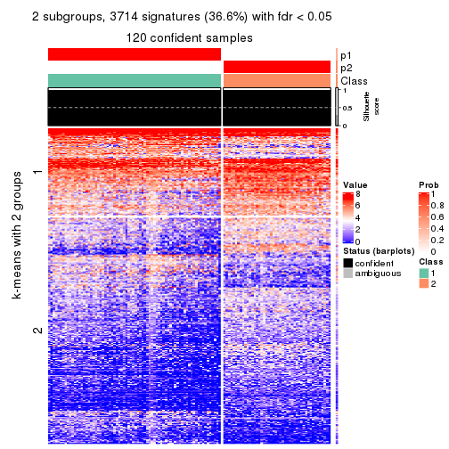
get_signatures(res, k = 3, scale_rows = FALSE)
get_signatures(res, k = 4, scale_rows = FALSE)
get_signatures(res, k = 5, scale_rows = FALSE)
get_signatures(res, k = 6, scale_rows = FALSE)
Compare the overlap of signatures from different k:
compare_signatures(res)
get_signature() returns a data frame invisibly. TO get the list of signatures, the function
call should be assigned to a variable explicitly. In following code, if plot argument is set
to FALSE, no heatmap is plotted while only the differential analysis is performed.
# code only for demonstration
tb = get_signature(res, k = ..., plot = FALSE)
An example of the output of tb is:
#> which_row fdr mean_1 mean_2 scaled_mean_1 scaled_mean_2 km
#> 1 38 0.042760348 8.373488 9.131774 -0.5533452 0.5164555 1
#> 2 40 0.018707592 7.106213 8.469186 -0.6173731 0.5762149 1
#> 3 55 0.019134737 10.221463 11.207825 -0.6159697 0.5749050 1
#> 4 59 0.006059896 5.921854 7.869574 -0.6899429 0.6439467 1
#> 5 60 0.018055526 8.928898 10.211722 -0.6204761 0.5791110 1
#> 6 98 0.009384629 15.714769 14.887706 0.6635654 -0.6193277 2
...
The columns in tb are:
which_row: row indices corresponding to the input matrix.fdr: FDR for the differential test. mean_x: The mean value in group x.scaled_mean_x: The mean value in group x after rows are scaled.km: Row groups if k-means clustering is applied to rows.UMAP plot which shows how samples are separated.
dimension_reduction(res, k = 2, method = "UMAP")
dimension_reduction(res, k = 3, method = "UMAP")
dimension_reduction(res, k = 4, method = "UMAP")
dimension_reduction(res, k = 5, method = "UMAP")
dimension_reduction(res, k = 6, method = "UMAP")
Following heatmap shows how subgroups are split when increasing k:
collect_classes(res)
If matrix rows can be associated to genes, consider to use GO_Enrichment(res,
...) to perform function enrichment for the signature genes.
The object with results only for a single top-value method and a single partition method can be extracted as:
res = res_list["ATC", "mclust"]
# you can also extract it by
# res = res_list["ATC:mclust"]
A summary of res and all the functions that can be applied to it:
res
#> A 'ConsensusPartition' object with k = 2, 3, 4, 5, 6.
#> On a matrix with 10145 rows and 121 columns.
#> Top rows (1000, 2000, 3000, 4000, 5000) are extracted by 'ATC' method.
#> Subgroups are detected by 'mclust' method.
#> Performed in total 1250 partitions by row resampling.
#> Best k for subgroups seems to be 4.
#>
#> Following methods can be applied to this 'ConsensusPartition' object:
#> [1] "cola_report" "collect_classes" "collect_plots"
#> [4] "collect_stats" "colnames" "compare_signatures"
#> [7] "consensus_heatmap" "dimension_reduction" "functional_enrichment"
#> [10] "get_anno_col" "get_anno" "get_classes"
#> [13] "get_consensus" "get_matrix" "get_membership"
#> [16] "get_param" "get_signatures" "get_stats"
#> [19] "is_best_k" "is_stable_k" "membership_heatmap"
#> [22] "ncol" "nrow" "plot_ecdf"
#> [25] "rownames" "select_partition_number" "show"
#> [28] "suggest_best_k" "test_to_known_factors"
collect_plots() function collects all the plots made from res for all k (number of partitions)
into one single page to provide an easy and fast comparison between different k.
collect_plots(res)
The plots are:
k and the heatmap of
predicted classes for each k.k.k.k.All the plots in panels can be made by individual functions and they are plotted later in this section.
select_partition_number() produces several plots showing different
statistics for choosing “optimized” k. There are following statistics:
k;k, the area increased is defined as \(A_k - A_{k-1}\).The detailed explanations of these statistics can be found in the cola vignette.
Generally speaking, lower PAC score, higher mean silhouette score or higher
concordance corresponds to better partition. Rand index and Jaccard index
measure how similar the current partition is compared to partition with k-1.
If they are too similar, we won't accept k is better than k-1.
select_partition_number(res)
The numeric values for all these statistics can be obtained by get_stats().
get_stats(res)
#> k 1-PAC mean_silhouette concordance area_increased Rand Jaccard
#> 2 2 1.000 0.998 0.999 0.4762 0.525 0.525
#> 3 3 1.000 0.968 0.986 0.4032 0.807 0.633
#> 4 4 0.925 0.933 0.957 0.0606 0.956 0.868
#> 5 5 0.890 0.851 0.927 0.0333 0.990 0.966
#> 6 6 0.852 0.768 0.889 0.0458 0.958 0.851
suggest_best_k() suggests the best \(k\) based on these statistics. The rules are as follows:
NA.suggest_best_k(res)
#> [1] 4
#> attr(,"optional")
#> [1] 2 3
There is also optional best \(k\) = 2 3 that is worth to check.
Following shows the table of the partitions (You need to click the show/hide
code output link to see it). The membership matrix (columns with name p*)
is inferred by
clue::cl_consensus()
function with the SE method. Basically the value in the membership matrix
represents the probability to belong to a certain group. The finall class
label for an item is determined with the group with highest probability it
belongs to.
In get_classes() function, the entropy is calculated from the membership
matrix and the silhouette score is calculated from the consensus matrix.
cbind(get_classes(res, k = 2), get_membership(res, k = 2))
#> class entropy silhouette p1 p2
#> SRR2431463 1 0.0000 0.998 1.000 0.000
#> SRR2431462 1 0.0000 0.998 1.000 0.000
#> SRR2431461 1 0.0000 0.998 1.000 0.000
#> SRR2431459 1 0.0000 0.998 1.000 0.000
#> SRR2431460 1 0.0000 0.998 1.000 0.000
#> SRR2431458 1 0.0000 0.998 1.000 0.000
#> SRR2431457 1 0.0000 0.998 1.000 0.000
#> SRR2431455 1 0.0000 0.998 1.000 0.000
#> SRR2431456 1 0.0000 0.998 1.000 0.000
#> SRR2431454 1 0.0000 0.998 1.000 0.000
#> SRR2431453 1 0.0000 0.998 1.000 0.000
#> SRR2431451 1 0.0000 0.998 1.000 0.000
#> SRR2431452 1 0.0000 0.998 1.000 0.000
#> SRR2431450 1 0.0000 0.998 1.000 0.000
#> SRR2431449 1 0.0000 0.998 1.000 0.000
#> SRR2431448 1 0.0000 0.998 1.000 0.000
#> SRR2431446 1 0.0000 0.998 1.000 0.000
#> SRR2431447 1 0.0000 0.998 1.000 0.000
#> SRR2431445 1 0.0000 0.998 1.000 0.000
#> SRR2431444 1 0.0000 0.998 1.000 0.000
#> SRR2431443 1 0.0000 0.998 1.000 0.000
#> SRR2431442 1 0.0000 0.998 1.000 0.000
#> SRR2431441 1 0.0000 0.998 1.000 0.000
#> SRR2431440 1 0.0000 0.998 1.000 0.000
#> SRR2431439 1 0.0000 0.998 1.000 0.000
#> SRR2431438 1 0.0000 0.998 1.000 0.000
#> SRR2431437 1 0.0000 0.998 1.000 0.000
#> SRR2431436 1 0.0000 0.998 1.000 0.000
#> SRR2431435 1 0.0000 0.998 1.000 0.000
#> SRR2431434 1 0.0000 0.998 1.000 0.000
#> SRR2431433 1 0.0000 0.998 1.000 0.000
#> SRR2431432 1 0.0000 0.998 1.000 0.000
#> SRR2431431 1 0.0000 0.998 1.000 0.000
#> SRR2431430 1 0.0000 0.998 1.000 0.000
#> SRR2431429 1 0.0000 0.998 1.000 0.000
#> SRR2431428 1 0.0000 0.998 1.000 0.000
#> SRR2431427 2 0.0000 1.000 0.000 1.000
#> SRR2431426 2 0.0000 1.000 0.000 1.000
#> SRR2431425 2 0.0000 1.000 0.000 1.000
#> SRR2431424 2 0.0000 1.000 0.000 1.000
#> SRR2431423 2 0.0000 1.000 0.000 1.000
#> SRR2431422 2 0.0000 1.000 0.000 1.000
#> SRR2431421 2 0.0000 1.000 0.000 1.000
#> SRR2431420 2 0.0000 1.000 0.000 1.000
#> SRR2431419 2 0.0000 1.000 0.000 1.000
#> SRR2431418 2 0.0000 1.000 0.000 1.000
#> SRR2431417 2 0.0000 1.000 0.000 1.000
#> SRR2431416 2 0.0000 1.000 0.000 1.000
#> SRR2431415 2 0.0000 1.000 0.000 1.000
#> SRR2431414 2 0.0000 1.000 0.000 1.000
#> SRR2431413 2 0.0000 1.000 0.000 1.000
#> SRR2431412 2 0.0000 1.000 0.000 1.000
#> SRR2431411 1 0.5059 0.874 0.888 0.112
#> SRR2431409 2 0.0000 1.000 0.000 1.000
#> SRR2431410 1 0.0938 0.987 0.988 0.012
#> SRR2431408 2 0.0000 1.000 0.000 1.000
#> SRR2431407 2 0.0000 1.000 0.000 1.000
#> SRR2431405 2 0.0000 1.000 0.000 1.000
#> SRR2431406 2 0.0000 1.000 0.000 1.000
#> SRR2431404 2 0.0000 1.000 0.000 1.000
#> SRR2431403 2 0.0000 1.000 0.000 1.000
#> SRR2431402 2 0.0000 1.000 0.000 1.000
#> SRR2431401 2 0.0000 1.000 0.000 1.000
#> SRR2431400 2 0.0000 1.000 0.000 1.000
#> SRR2431399 2 0.0000 1.000 0.000 1.000
#> SRR2431398 2 0.0000 1.000 0.000 1.000
#> SRR2431397 2 0.0000 1.000 0.000 1.000
#> SRR2431396 2 0.0000 1.000 0.000 1.000
#> SRR2431395 2 0.0000 1.000 0.000 1.000
#> SRR2431394 2 0.0000 1.000 0.000 1.000
#> SRR2431393 2 0.0000 1.000 0.000 1.000
#> SRR2431392 2 0.0000 1.000 0.000 1.000
#> SRR2431391 2 0.0000 1.000 0.000 1.000
#> SRR2431390 2 0.0000 1.000 0.000 1.000
#> SRR2431389 2 0.0000 1.000 0.000 1.000
#> SRR2431388 2 0.0000 1.000 0.000 1.000
#> SRR2431387 2 0.0000 1.000 0.000 1.000
#> SRR2431386 2 0.0000 1.000 0.000 1.000
#> SRR2431385 2 0.0000 1.000 0.000 1.000
#> SRR2431383 2 0.0000 1.000 0.000 1.000
#> SRR2431384 2 0.0000 1.000 0.000 1.000
#> SRR2431382 2 0.0000 1.000 0.000 1.000
#> SRR2431381 2 0.0000 1.000 0.000 1.000
#> SRR2431380 2 0.0000 1.000 0.000 1.000
#> SRR2431379 1 0.0000 0.998 1.000 0.000
#> SRR2431378 1 0.0000 0.998 1.000 0.000
#> SRR2431376 1 0.0000 0.998 1.000 0.000
#> SRR2431377 1 0.0000 0.998 1.000 0.000
#> SRR2431375 1 0.0000 0.998 1.000 0.000
#> SRR2431374 1 0.0000 0.998 1.000 0.000
#> SRR2431372 1 0.0000 0.998 1.000 0.000
#> SRR2431371 1 0.0000 0.998 1.000 0.000
#> SRR2431373 1 0.0000 0.998 1.000 0.000
#> SRR2431370 1 0.0000 0.998 1.000 0.000
#> SRR2431369 1 0.0000 0.998 1.000 0.000
#> SRR2431368 1 0.0000 0.998 1.000 0.000
#> SRR2431367 1 0.0000 0.998 1.000 0.000
#> SRR2431366 1 0.0000 0.998 1.000 0.000
#> SRR2431365 1 0.0000 0.998 1.000 0.000
#> SRR2431364 1 0.0000 0.998 1.000 0.000
#> SRR2431363 1 0.0000 0.998 1.000 0.000
#> SRR2431361 1 0.0000 0.998 1.000 0.000
#> SRR2431362 1 0.0000 0.998 1.000 0.000
#> SRR2431360 1 0.0000 0.998 1.000 0.000
#> SRR2431359 1 0.0000 0.998 1.000 0.000
#> SRR2431358 1 0.0000 0.998 1.000 0.000
#> SRR2431357 1 0.0000 0.998 1.000 0.000
#> SRR2431355 1 0.0000 0.998 1.000 0.000
#> SRR2431356 1 0.0000 0.998 1.000 0.000
#> SRR2431354 1 0.0000 0.998 1.000 0.000
#> SRR2431353 1 0.0000 0.998 1.000 0.000
#> SRR2431352 1 0.0000 0.998 1.000 0.000
#> SRR2431351 1 0.0000 0.998 1.000 0.000
#> SRR2431350 1 0.0000 0.998 1.000 0.000
#> SRR2431349 1 0.0000 0.998 1.000 0.000
#> SRR2431348 1 0.0000 0.998 1.000 0.000
#> SRR2431347 1 0.0000 0.998 1.000 0.000
#> SRR2431346 1 0.0000 0.998 1.000 0.000
#> SRR2431345 1 0.0000 0.998 1.000 0.000
#> SRR2431344 1 0.0000 0.998 1.000 0.000
#> SRR2431343 1 0.0000 0.998 1.000 0.000
cbind(get_classes(res, k = 3), get_membership(res, k = 3))
#> class entropy silhouette p1 p2 p3
#> SRR2431463 1 0.0000 1.000 1.000 0.000 0.000
#> SRR2431462 1 0.0000 1.000 1.000 0.000 0.000
#> SRR2431461 1 0.0000 1.000 1.000 0.000 0.000
#> SRR2431459 1 0.0000 1.000 1.000 0.000 0.000
#> SRR2431460 1 0.0000 1.000 1.000 0.000 0.000
#> SRR2431458 1 0.0000 1.000 1.000 0.000 0.000
#> SRR2431457 1 0.0000 1.000 1.000 0.000 0.000
#> SRR2431455 1 0.0000 1.000 1.000 0.000 0.000
#> SRR2431456 1 0.0000 1.000 1.000 0.000 0.000
#> SRR2431454 1 0.0000 1.000 1.000 0.000 0.000
#> SRR2431453 1 0.0000 1.000 1.000 0.000 0.000
#> SRR2431451 1 0.0000 1.000 1.000 0.000 0.000
#> SRR2431452 3 0.6062 0.424 0.384 0.000 0.616
#> SRR2431450 1 0.0000 1.000 1.000 0.000 0.000
#> SRR2431449 1 0.0000 1.000 1.000 0.000 0.000
#> SRR2431448 1 0.0000 1.000 1.000 0.000 0.000
#> SRR2431446 1 0.0000 1.000 1.000 0.000 0.000
#> SRR2431447 1 0.0000 1.000 1.000 0.000 0.000
#> SRR2431445 1 0.0000 1.000 1.000 0.000 0.000
#> SRR2431444 1 0.0000 1.000 1.000 0.000 0.000
#> SRR2431443 1 0.0000 1.000 1.000 0.000 0.000
#> SRR2431442 1 0.0000 1.000 1.000 0.000 0.000
#> SRR2431441 1 0.0000 1.000 1.000 0.000 0.000
#> SRR2431440 1 0.0000 1.000 1.000 0.000 0.000
#> SRR2431439 1 0.0000 1.000 1.000 0.000 0.000
#> SRR2431438 1 0.0000 1.000 1.000 0.000 0.000
#> SRR2431437 1 0.0000 1.000 1.000 0.000 0.000
#> SRR2431436 1 0.0000 1.000 1.000 0.000 0.000
#> SRR2431435 1 0.0000 1.000 1.000 0.000 0.000
#> SRR2431434 1 0.0000 1.000 1.000 0.000 0.000
#> SRR2431433 1 0.0000 1.000 1.000 0.000 0.000
#> SRR2431432 1 0.0000 1.000 1.000 0.000 0.000
#> SRR2431431 1 0.0000 1.000 1.000 0.000 0.000
#> SRR2431430 1 0.0000 1.000 1.000 0.000 0.000
#> SRR2431429 1 0.0000 1.000 1.000 0.000 0.000
#> SRR2431428 1 0.0000 1.000 1.000 0.000 0.000
#> SRR2431427 2 0.0000 0.999 0.000 1.000 0.000
#> SRR2431426 2 0.0000 0.999 0.000 1.000 0.000
#> SRR2431425 2 0.0000 0.999 0.000 1.000 0.000
#> SRR2431424 2 0.0000 0.999 0.000 1.000 0.000
#> SRR2431423 2 0.0000 0.999 0.000 1.000 0.000
#> SRR2431422 2 0.0000 0.999 0.000 1.000 0.000
#> SRR2431421 2 0.0000 0.999 0.000 1.000 0.000
#> SRR2431420 2 0.0000 0.999 0.000 1.000 0.000
#> SRR2431419 2 0.0000 0.999 0.000 1.000 0.000
#> SRR2431418 2 0.0000 0.999 0.000 1.000 0.000
#> SRR2431417 2 0.0000 0.999 0.000 1.000 0.000
#> SRR2431416 2 0.0000 0.999 0.000 1.000 0.000
#> SRR2431415 2 0.0000 0.999 0.000 1.000 0.000
#> SRR2431414 2 0.0000 0.999 0.000 1.000 0.000
#> SRR2431413 2 0.0000 0.999 0.000 1.000 0.000
#> SRR2431412 2 0.0000 0.999 0.000 1.000 0.000
#> SRR2431411 3 0.7284 0.464 0.044 0.336 0.620
#> SRR2431409 2 0.0000 0.999 0.000 1.000 0.000
#> SRR2431410 3 0.2339 0.914 0.048 0.012 0.940
#> SRR2431408 2 0.0000 0.999 0.000 1.000 0.000
#> SRR2431407 2 0.0000 0.999 0.000 1.000 0.000
#> SRR2431405 2 0.0000 0.999 0.000 1.000 0.000
#> SRR2431406 2 0.0000 0.999 0.000 1.000 0.000
#> SRR2431404 2 0.0000 0.999 0.000 1.000 0.000
#> SRR2431403 2 0.0000 0.999 0.000 1.000 0.000
#> SRR2431402 2 0.0000 0.999 0.000 1.000 0.000
#> SRR2431401 2 0.0000 0.999 0.000 1.000 0.000
#> SRR2431400 2 0.0000 0.999 0.000 1.000 0.000
#> SRR2431399 2 0.0000 0.999 0.000 1.000 0.000
#> SRR2431398 2 0.0000 0.999 0.000 1.000 0.000
#> SRR2431397 2 0.0000 0.999 0.000 1.000 0.000
#> SRR2431396 2 0.0000 0.999 0.000 1.000 0.000
#> SRR2431395 2 0.0000 0.999 0.000 1.000 0.000
#> SRR2431394 2 0.0000 0.999 0.000 1.000 0.000
#> SRR2431393 2 0.0000 0.999 0.000 1.000 0.000
#> SRR2431392 2 0.0000 0.999 0.000 1.000 0.000
#> SRR2431391 2 0.0000 0.999 0.000 1.000 0.000
#> SRR2431390 2 0.0000 0.999 0.000 1.000 0.000
#> SRR2431389 2 0.0000 0.999 0.000 1.000 0.000
#> SRR2431388 2 0.0000 0.999 0.000 1.000 0.000
#> SRR2431387 2 0.0000 0.999 0.000 1.000 0.000
#> SRR2431386 2 0.0000 0.999 0.000 1.000 0.000
#> SRR2431385 2 0.1289 0.966 0.032 0.968 0.000
#> SRR2431383 2 0.0000 0.999 0.000 1.000 0.000
#> SRR2431384 2 0.0000 0.999 0.000 1.000 0.000
#> SRR2431382 2 0.0000 0.999 0.000 1.000 0.000
#> SRR2431381 2 0.0000 0.999 0.000 1.000 0.000
#> SRR2431380 2 0.0000 0.999 0.000 1.000 0.000
#> SRR2431379 3 0.0000 0.957 0.000 0.000 1.000
#> SRR2431378 3 0.0000 0.957 0.000 0.000 1.000
#> SRR2431376 3 0.0000 0.957 0.000 0.000 1.000
#> SRR2431377 3 0.0000 0.957 0.000 0.000 1.000
#> SRR2431375 3 0.0000 0.957 0.000 0.000 1.000
#> SRR2431374 3 0.0424 0.953 0.008 0.000 0.992
#> SRR2431372 3 0.0000 0.957 0.000 0.000 1.000
#> SRR2431371 3 0.0000 0.957 0.000 0.000 1.000
#> SRR2431373 3 0.0000 0.957 0.000 0.000 1.000
#> SRR2431370 3 0.0000 0.957 0.000 0.000 1.000
#> SRR2431369 3 0.0000 0.957 0.000 0.000 1.000
#> SRR2431368 3 0.0000 0.957 0.000 0.000 1.000
#> SRR2431367 3 0.0000 0.957 0.000 0.000 1.000
#> SRR2431366 3 0.0000 0.957 0.000 0.000 1.000
#> SRR2431365 3 0.0000 0.957 0.000 0.000 1.000
#> SRR2431364 3 0.0000 0.957 0.000 0.000 1.000
#> SRR2431363 3 0.0000 0.957 0.000 0.000 1.000
#> SRR2431361 3 0.0000 0.957 0.000 0.000 1.000
#> SRR2431362 3 0.0000 0.957 0.000 0.000 1.000
#> SRR2431360 3 0.0000 0.957 0.000 0.000 1.000
#> SRR2431359 3 0.0000 0.957 0.000 0.000 1.000
#> SRR2431358 3 0.6168 0.350 0.412 0.000 0.588
#> SRR2431357 3 0.0237 0.955 0.004 0.000 0.996
#> SRR2431355 3 0.0424 0.953 0.008 0.000 0.992
#> SRR2431356 3 0.0000 0.957 0.000 0.000 1.000
#> SRR2431354 3 0.0000 0.957 0.000 0.000 1.000
#> SRR2431353 3 0.1289 0.935 0.032 0.000 0.968
#> SRR2431352 3 0.0592 0.950 0.012 0.000 0.988
#> SRR2431351 3 0.0000 0.957 0.000 0.000 1.000
#> SRR2431350 3 0.0000 0.957 0.000 0.000 1.000
#> SRR2431349 3 0.0000 0.957 0.000 0.000 1.000
#> SRR2431348 3 0.0000 0.957 0.000 0.000 1.000
#> SRR2431347 3 0.0000 0.957 0.000 0.000 1.000
#> SRR2431346 3 0.0000 0.957 0.000 0.000 1.000
#> SRR2431345 3 0.0000 0.957 0.000 0.000 1.000
#> SRR2431344 3 0.5497 0.609 0.292 0.000 0.708
#> SRR2431343 3 0.2165 0.907 0.064 0.000 0.936
cbind(get_classes(res, k = 4), get_membership(res, k = 4))
#> class entropy silhouette p1 p2 p3 p4
#> SRR2431463 1 0.0188 0.993 0.996 0.000 0.000 0.004
#> SRR2431462 1 0.0000 0.993 1.000 0.000 0.000 0.000
#> SRR2431461 1 0.0000 0.993 1.000 0.000 0.000 0.000
#> SRR2431459 1 0.0000 0.993 1.000 0.000 0.000 0.000
#> SRR2431460 1 0.0188 0.993 0.996 0.000 0.000 0.004
#> SRR2431458 1 0.0000 0.993 1.000 0.000 0.000 0.000
#> SRR2431457 1 0.0188 0.993 0.996 0.000 0.000 0.004
#> SRR2431455 1 0.0188 0.993 0.996 0.000 0.000 0.004
#> SRR2431456 1 0.0000 0.993 1.000 0.000 0.000 0.000
#> SRR2431454 1 0.0921 0.971 0.972 0.000 0.000 0.028
#> SRR2431453 1 0.0000 0.993 1.000 0.000 0.000 0.000
#> SRR2431451 1 0.0000 0.993 1.000 0.000 0.000 0.000
#> SRR2431452 4 0.5138 0.254 0.392 0.000 0.008 0.600
#> SRR2431450 1 0.1389 0.952 0.952 0.000 0.000 0.048
#> SRR2431449 1 0.0188 0.993 0.996 0.000 0.000 0.004
#> SRR2431448 1 0.0000 0.993 1.000 0.000 0.000 0.000
#> SRR2431446 1 0.0000 0.993 1.000 0.000 0.000 0.000
#> SRR2431447 1 0.0000 0.993 1.000 0.000 0.000 0.000
#> SRR2431445 1 0.0000 0.993 1.000 0.000 0.000 0.000
#> SRR2431444 1 0.1022 0.969 0.968 0.000 0.000 0.032
#> SRR2431443 1 0.0469 0.988 0.988 0.000 0.000 0.012
#> SRR2431442 1 0.0188 0.993 0.996 0.000 0.000 0.004
#> SRR2431441 1 0.0188 0.993 0.996 0.000 0.000 0.004
#> SRR2431440 1 0.0817 0.975 0.976 0.000 0.000 0.024
#> SRR2431439 1 0.0000 0.993 1.000 0.000 0.000 0.000
#> SRR2431438 1 0.0188 0.993 0.996 0.000 0.000 0.004
#> SRR2431437 1 0.0000 0.993 1.000 0.000 0.000 0.000
#> SRR2431436 1 0.0469 0.986 0.988 0.000 0.000 0.012
#> SRR2431435 1 0.0188 0.991 0.996 0.000 0.000 0.004
#> SRR2431434 1 0.0336 0.991 0.992 0.000 0.000 0.008
#> SRR2431433 1 0.0188 0.993 0.996 0.000 0.000 0.004
#> SRR2431432 1 0.0000 0.993 1.000 0.000 0.000 0.000
#> SRR2431431 1 0.0000 0.993 1.000 0.000 0.000 0.000
#> SRR2431430 1 0.0188 0.992 0.996 0.000 0.000 0.004
#> SRR2431429 1 0.0188 0.993 0.996 0.000 0.000 0.004
#> SRR2431428 1 0.0336 0.991 0.992 0.000 0.000 0.008
#> SRR2431427 2 0.0000 0.971 0.000 1.000 0.000 0.000
#> SRR2431426 2 0.0000 0.971 0.000 1.000 0.000 0.000
#> SRR2431425 2 0.0000 0.971 0.000 1.000 0.000 0.000
#> SRR2431424 2 0.0000 0.971 0.000 1.000 0.000 0.000
#> SRR2431423 2 0.0000 0.971 0.000 1.000 0.000 0.000
#> SRR2431422 2 0.0000 0.971 0.000 1.000 0.000 0.000
#> SRR2431421 2 0.3311 0.824 0.000 0.828 0.000 0.172
#> SRR2431420 2 0.0000 0.971 0.000 1.000 0.000 0.000
#> SRR2431419 2 0.0000 0.971 0.000 1.000 0.000 0.000
#> SRR2431418 2 0.0188 0.969 0.000 0.996 0.000 0.004
#> SRR2431417 2 0.0000 0.971 0.000 1.000 0.000 0.000
#> SRR2431416 2 0.0000 0.971 0.000 1.000 0.000 0.000
#> SRR2431415 2 0.0000 0.971 0.000 1.000 0.000 0.000
#> SRR2431414 2 0.0000 0.971 0.000 1.000 0.000 0.000
#> SRR2431413 2 0.2760 0.870 0.000 0.872 0.000 0.128
#> SRR2431412 2 0.0000 0.971 0.000 1.000 0.000 0.000
#> SRR2431411 4 0.5139 0.117 0.004 0.380 0.004 0.612
#> SRR2431409 2 0.0000 0.971 0.000 1.000 0.000 0.000
#> SRR2431410 4 0.2392 0.663 0.008 0.052 0.016 0.924
#> SRR2431408 2 0.0188 0.968 0.000 0.996 0.000 0.004
#> SRR2431407 2 0.0000 0.971 0.000 1.000 0.000 0.000
#> SRR2431405 2 0.2530 0.884 0.000 0.888 0.000 0.112
#> SRR2431406 2 0.0000 0.971 0.000 1.000 0.000 0.000
#> SRR2431404 2 0.0000 0.971 0.000 1.000 0.000 0.000
#> SRR2431403 2 0.0188 0.968 0.000 0.996 0.000 0.004
#> SRR2431402 2 0.0336 0.966 0.000 0.992 0.000 0.008
#> SRR2431401 2 0.0000 0.971 0.000 1.000 0.000 0.000
#> SRR2431400 2 0.0000 0.971 0.000 1.000 0.000 0.000
#> SRR2431399 2 0.0000 0.971 0.000 1.000 0.000 0.000
#> SRR2431398 2 0.0000 0.971 0.000 1.000 0.000 0.000
#> SRR2431397 2 0.0000 0.971 0.000 1.000 0.000 0.000
#> SRR2431396 2 0.4134 0.716 0.000 0.740 0.000 0.260
#> SRR2431395 2 0.0000 0.971 0.000 1.000 0.000 0.000
#> SRR2431394 2 0.0000 0.971 0.000 1.000 0.000 0.000
#> SRR2431393 2 0.0188 0.969 0.000 0.996 0.000 0.004
#> SRR2431392 2 0.0000 0.971 0.000 1.000 0.000 0.000
#> SRR2431391 2 0.0000 0.971 0.000 1.000 0.000 0.000
#> SRR2431390 2 0.0000 0.971 0.000 1.000 0.000 0.000
#> SRR2431389 2 0.0000 0.971 0.000 1.000 0.000 0.000
#> SRR2431388 2 0.0336 0.966 0.000 0.992 0.000 0.008
#> SRR2431387 2 0.3610 0.795 0.000 0.800 0.000 0.200
#> SRR2431386 2 0.0000 0.971 0.000 1.000 0.000 0.000
#> SRR2431385 2 0.4564 0.617 0.000 0.672 0.000 0.328
#> SRR2431383 2 0.3024 0.850 0.000 0.852 0.000 0.148
#> SRR2431384 2 0.0000 0.971 0.000 1.000 0.000 0.000
#> SRR2431382 2 0.0000 0.971 0.000 1.000 0.000 0.000
#> SRR2431381 2 0.0000 0.971 0.000 1.000 0.000 0.000
#> SRR2431380 2 0.0188 0.968 0.000 0.996 0.000 0.004
#> SRR2431379 3 0.0000 0.982 0.000 0.000 1.000 0.000
#> SRR2431378 3 0.0188 0.981 0.000 0.000 0.996 0.004
#> SRR2431376 3 0.0188 0.981 0.000 0.000 0.996 0.004
#> SRR2431377 3 0.2345 0.869 0.000 0.000 0.900 0.100
#> SRR2431375 3 0.0000 0.982 0.000 0.000 1.000 0.000
#> SRR2431374 4 0.4606 0.736 0.012 0.000 0.264 0.724
#> SRR2431372 3 0.0000 0.982 0.000 0.000 1.000 0.000
#> SRR2431371 3 0.0188 0.981 0.000 0.000 0.996 0.004
#> SRR2431373 3 0.0000 0.982 0.000 0.000 1.000 0.000
#> SRR2431370 3 0.0000 0.982 0.000 0.000 1.000 0.000
#> SRR2431369 3 0.0188 0.981 0.000 0.000 0.996 0.004
#> SRR2431368 3 0.0000 0.982 0.000 0.000 1.000 0.000
#> SRR2431367 3 0.0000 0.982 0.000 0.000 1.000 0.000
#> SRR2431366 3 0.3311 0.752 0.000 0.000 0.828 0.172
#> SRR2431365 3 0.1940 0.902 0.000 0.000 0.924 0.076
#> SRR2431364 3 0.0000 0.982 0.000 0.000 1.000 0.000
#> SRR2431363 3 0.0000 0.982 0.000 0.000 1.000 0.000
#> SRR2431361 3 0.0188 0.981 0.000 0.000 0.996 0.004
#> SRR2431362 3 0.0000 0.982 0.000 0.000 1.000 0.000
#> SRR2431360 3 0.0000 0.982 0.000 0.000 1.000 0.000
#> SRR2431359 3 0.0921 0.957 0.000 0.000 0.972 0.028
#> SRR2431358 4 0.5938 0.647 0.232 0.000 0.092 0.676
#> SRR2431357 4 0.4594 0.723 0.008 0.000 0.280 0.712
#> SRR2431355 4 0.4621 0.718 0.008 0.000 0.284 0.708
#> SRR2431356 3 0.0000 0.982 0.000 0.000 1.000 0.000
#> SRR2431354 3 0.0000 0.982 0.000 0.000 1.000 0.000
#> SRR2431353 4 0.4868 0.742 0.024 0.000 0.256 0.720
#> SRR2431352 4 0.4690 0.728 0.012 0.000 0.276 0.712
#> SRR2431351 3 0.0000 0.982 0.000 0.000 1.000 0.000
#> SRR2431350 3 0.0000 0.982 0.000 0.000 1.000 0.000
#> SRR2431349 3 0.0000 0.982 0.000 0.000 1.000 0.000
#> SRR2431348 3 0.0000 0.982 0.000 0.000 1.000 0.000
#> SRR2431347 3 0.0000 0.982 0.000 0.000 1.000 0.000
#> SRR2431346 3 0.0188 0.981 0.000 0.000 0.996 0.004
#> SRR2431345 3 0.0000 0.982 0.000 0.000 1.000 0.000
#> SRR2431344 4 0.5657 0.724 0.120 0.000 0.160 0.720
#> SRR2431343 4 0.4868 0.742 0.024 0.000 0.256 0.720
cbind(get_classes(res, k = 5), get_membership(res, k = 5))
#> class entropy silhouette p1 p2 p3 p4 p5
#> SRR2431463 1 0.0898 0.9390 0.972 0.000 0.000 0.020 0.008
#> SRR2431462 1 0.0162 0.9412 0.996 0.000 0.000 0.000 0.004
#> SRR2431461 1 0.0000 0.9411 1.000 0.000 0.000 0.000 0.000
#> SRR2431459 1 0.0162 0.9412 0.996 0.000 0.000 0.000 0.004
#> SRR2431460 1 0.1557 0.9294 0.940 0.000 0.000 0.052 0.008
#> SRR2431458 1 0.0000 0.9411 1.000 0.000 0.000 0.000 0.000
#> SRR2431457 1 0.1484 0.9313 0.944 0.000 0.000 0.048 0.008
#> SRR2431455 1 0.1557 0.9294 0.940 0.000 0.000 0.052 0.008
#> SRR2431456 1 0.0451 0.9413 0.988 0.000 0.000 0.008 0.004
#> SRR2431454 1 0.3992 0.6654 0.720 0.000 0.000 0.012 0.268
#> SRR2431453 1 0.0162 0.9412 0.996 0.000 0.000 0.000 0.004
#> SRR2431451 1 0.0404 0.9371 0.988 0.000 0.000 0.000 0.012
#> SRR2431452 5 0.4819 0.0885 0.252 0.000 0.008 0.044 0.696
#> SRR2431450 1 0.1557 0.9293 0.940 0.000 0.000 0.052 0.008
#> SRR2431449 1 0.1502 0.9291 0.940 0.000 0.000 0.056 0.004
#> SRR2431448 1 0.0000 0.9411 1.000 0.000 0.000 0.000 0.000
#> SRR2431446 1 0.0000 0.9411 1.000 0.000 0.000 0.000 0.000
#> SRR2431447 1 0.0000 0.9411 1.000 0.000 0.000 0.000 0.000
#> SRR2431445 1 0.0162 0.9412 0.996 0.000 0.000 0.000 0.004
#> SRR2431444 1 0.4268 0.5385 0.648 0.000 0.000 0.008 0.344
#> SRR2431443 1 0.0955 0.9378 0.968 0.000 0.000 0.028 0.004
#> SRR2431442 1 0.1557 0.9294 0.940 0.000 0.000 0.052 0.008
#> SRR2431441 1 0.1557 0.9294 0.940 0.000 0.000 0.052 0.008
#> SRR2431440 1 0.0865 0.9304 0.972 0.000 0.000 0.004 0.024
#> SRR2431439 1 0.0000 0.9411 1.000 0.000 0.000 0.000 0.000
#> SRR2431438 1 0.0992 0.9384 0.968 0.000 0.000 0.024 0.008
#> SRR2431437 1 0.0162 0.9412 0.996 0.000 0.000 0.000 0.004
#> SRR2431436 1 0.4201 0.5713 0.664 0.000 0.000 0.008 0.328
#> SRR2431435 1 0.2516 0.8358 0.860 0.000 0.000 0.000 0.140
#> SRR2431434 1 0.1357 0.9317 0.948 0.000 0.000 0.048 0.004
#> SRR2431433 1 0.0324 0.9414 0.992 0.000 0.000 0.004 0.004
#> SRR2431432 1 0.0000 0.9411 1.000 0.000 0.000 0.000 0.000
#> SRR2431431 1 0.2605 0.8293 0.852 0.000 0.000 0.000 0.148
#> SRR2431430 1 0.0000 0.9411 1.000 0.000 0.000 0.000 0.000
#> SRR2431429 1 0.1430 0.9301 0.944 0.000 0.000 0.052 0.004
#> SRR2431428 1 0.1430 0.9301 0.944 0.000 0.000 0.052 0.004
#> SRR2431427 2 0.0000 0.9580 0.000 1.000 0.000 0.000 0.000
#> SRR2431426 2 0.0000 0.9580 0.000 1.000 0.000 0.000 0.000
#> SRR2431425 2 0.0000 0.9580 0.000 1.000 0.000 0.000 0.000
#> SRR2431424 2 0.0000 0.9580 0.000 1.000 0.000 0.000 0.000
#> SRR2431423 2 0.0000 0.9580 0.000 1.000 0.000 0.000 0.000
#> SRR2431422 2 0.0000 0.9580 0.000 1.000 0.000 0.000 0.000
#> SRR2431421 2 0.3143 0.7097 0.000 0.796 0.000 0.000 0.204
#> SRR2431420 2 0.0000 0.9580 0.000 1.000 0.000 0.000 0.000
#> SRR2431419 2 0.0000 0.9580 0.000 1.000 0.000 0.000 0.000
#> SRR2431418 2 0.0000 0.9580 0.000 1.000 0.000 0.000 0.000
#> SRR2431417 2 0.0000 0.9580 0.000 1.000 0.000 0.000 0.000
#> SRR2431416 2 0.0000 0.9580 0.000 1.000 0.000 0.000 0.000
#> SRR2431415 2 0.0000 0.9580 0.000 1.000 0.000 0.000 0.000
#> SRR2431414 2 0.0000 0.9580 0.000 1.000 0.000 0.000 0.000
#> SRR2431413 2 0.3336 0.6675 0.000 0.772 0.000 0.000 0.228
#> SRR2431412 2 0.0000 0.9580 0.000 1.000 0.000 0.000 0.000
#> SRR2431411 5 0.5288 0.3288 0.000 0.140 0.096 0.036 0.728
#> SRR2431409 2 0.0000 0.9580 0.000 1.000 0.000 0.000 0.000
#> SRR2431410 5 0.4815 -0.2633 0.000 0.008 0.008 0.480 0.504
#> SRR2431408 2 0.0000 0.9580 0.000 1.000 0.000 0.000 0.000
#> SRR2431407 2 0.0000 0.9580 0.000 1.000 0.000 0.000 0.000
#> SRR2431405 2 0.2516 0.8018 0.000 0.860 0.000 0.000 0.140
#> SRR2431406 2 0.0000 0.9580 0.000 1.000 0.000 0.000 0.000
#> SRR2431404 2 0.0000 0.9580 0.000 1.000 0.000 0.000 0.000
#> SRR2431403 2 0.0000 0.9580 0.000 1.000 0.000 0.000 0.000
#> SRR2431402 2 0.0162 0.9546 0.000 0.996 0.000 0.000 0.004
#> SRR2431401 2 0.0000 0.9580 0.000 1.000 0.000 0.000 0.000
#> SRR2431400 2 0.0000 0.9580 0.000 1.000 0.000 0.000 0.000
#> SRR2431399 2 0.0000 0.9580 0.000 1.000 0.000 0.000 0.000
#> SRR2431398 2 0.0000 0.9580 0.000 1.000 0.000 0.000 0.000
#> SRR2431397 2 0.0000 0.9580 0.000 1.000 0.000 0.000 0.000
#> SRR2431396 2 0.4219 0.1661 0.000 0.584 0.000 0.000 0.416
#> SRR2431395 2 0.0000 0.9580 0.000 1.000 0.000 0.000 0.000
#> SRR2431394 2 0.0000 0.9580 0.000 1.000 0.000 0.000 0.000
#> SRR2431393 2 0.0162 0.9546 0.000 0.996 0.000 0.000 0.004
#> SRR2431392 2 0.0000 0.9580 0.000 1.000 0.000 0.000 0.000
#> SRR2431391 2 0.0000 0.9580 0.000 1.000 0.000 0.000 0.000
#> SRR2431390 2 0.0000 0.9580 0.000 1.000 0.000 0.000 0.000
#> SRR2431389 2 0.0000 0.9580 0.000 1.000 0.000 0.000 0.000
#> SRR2431388 2 0.0794 0.9321 0.000 0.972 0.000 0.000 0.028
#> SRR2431387 2 0.3707 0.5565 0.000 0.716 0.000 0.000 0.284
#> SRR2431386 2 0.0000 0.9580 0.000 1.000 0.000 0.000 0.000
#> SRR2431385 5 0.4307 -0.0915 0.000 0.496 0.000 0.000 0.504
#> SRR2431383 2 0.3366 0.6605 0.000 0.768 0.000 0.000 0.232
#> SRR2431384 2 0.0000 0.9580 0.000 1.000 0.000 0.000 0.000
#> SRR2431382 2 0.0000 0.9580 0.000 1.000 0.000 0.000 0.000
#> SRR2431381 2 0.0000 0.9580 0.000 1.000 0.000 0.000 0.000
#> SRR2431380 2 0.0000 0.9580 0.000 1.000 0.000 0.000 0.000
#> SRR2431379 3 0.0162 0.8962 0.000 0.000 0.996 0.000 0.004
#> SRR2431378 3 0.3098 0.8582 0.000 0.000 0.836 0.148 0.016
#> SRR2431376 3 0.3183 0.8532 0.000 0.000 0.828 0.156 0.016
#> SRR2431377 3 0.4538 0.5835 0.000 0.000 0.620 0.364 0.016
#> SRR2431375 3 0.0162 0.8962 0.000 0.000 0.996 0.000 0.004
#> SRR2431374 4 0.0609 0.8073 0.000 0.000 0.020 0.980 0.000
#> SRR2431372 3 0.0162 0.8962 0.000 0.000 0.996 0.000 0.004
#> SRR2431371 3 0.3141 0.8558 0.000 0.000 0.832 0.152 0.016
#> SRR2431373 3 0.0162 0.8962 0.000 0.000 0.996 0.004 0.000
#> SRR2431370 3 0.2677 0.8738 0.000 0.000 0.872 0.112 0.016
#> SRR2431369 3 0.3183 0.8532 0.000 0.000 0.828 0.156 0.016
#> SRR2431368 3 0.0566 0.8955 0.000 0.000 0.984 0.012 0.004
#> SRR2431367 3 0.0162 0.8962 0.000 0.000 0.996 0.000 0.004
#> SRR2431366 3 0.4551 0.5791 0.000 0.000 0.616 0.368 0.016
#> SRR2431365 3 0.4576 0.5618 0.000 0.000 0.608 0.376 0.016
#> SRR2431364 3 0.0162 0.8962 0.000 0.000 0.996 0.000 0.004
#> SRR2431363 3 0.0162 0.8962 0.000 0.000 0.996 0.000 0.004
#> SRR2431361 3 0.3011 0.8623 0.000 0.000 0.844 0.140 0.016
#> SRR2431362 3 0.0162 0.8962 0.000 0.000 0.996 0.000 0.004
#> SRR2431360 3 0.0162 0.8962 0.000 0.000 0.996 0.000 0.004
#> SRR2431359 3 0.3086 0.8418 0.000 0.000 0.816 0.180 0.004
#> SRR2431358 4 0.4084 0.3175 0.328 0.000 0.000 0.668 0.004
#> SRR2431357 4 0.1197 0.8203 0.000 0.000 0.048 0.952 0.000
#> SRR2431355 4 0.1270 0.8158 0.000 0.000 0.052 0.948 0.000
#> SRR2431356 3 0.0000 0.8961 0.000 0.000 1.000 0.000 0.000
#> SRR2431354 3 0.0162 0.8962 0.000 0.000 0.996 0.000 0.004
#> SRR2431353 4 0.1357 0.8212 0.004 0.000 0.048 0.948 0.000
#> SRR2431352 4 0.1197 0.8203 0.000 0.000 0.048 0.952 0.000
#> SRR2431351 3 0.0162 0.8962 0.000 0.000 0.996 0.000 0.004
#> SRR2431350 3 0.2293 0.8820 0.000 0.000 0.900 0.084 0.016
#> SRR2431349 3 0.0162 0.8962 0.000 0.000 0.996 0.000 0.004
#> SRR2431348 3 0.1981 0.8864 0.000 0.000 0.920 0.064 0.016
#> SRR2431347 3 0.2873 0.8678 0.000 0.000 0.856 0.128 0.016
#> SRR2431346 3 0.2966 0.8643 0.000 0.000 0.848 0.136 0.016
#> SRR2431345 3 0.0162 0.8962 0.000 0.000 0.996 0.000 0.004
#> SRR2431344 4 0.4584 0.5905 0.184 0.000 0.048 0.752 0.016
#> SRR2431343 4 0.1267 0.8066 0.012 0.000 0.024 0.960 0.004
cbind(get_classes(res, k = 6), get_membership(res, k = 6))
#> class entropy silhouette p1 p2 p3 p4 p5 p6
#> SRR2431463 1 0.0000 0.9177 1.000 0.000 0.000 0.000 0.000 0.000
#> SRR2431462 1 0.0146 0.9175 0.996 0.000 0.000 0.000 0.000 0.004
#> SRR2431461 1 0.1152 0.9038 0.952 0.000 0.000 0.000 0.004 0.044
#> SRR2431459 1 0.0146 0.9175 0.996 0.000 0.000 0.000 0.000 0.004
#> SRR2431460 1 0.0146 0.9173 0.996 0.000 0.000 0.000 0.000 0.004
#> SRR2431458 1 0.2631 0.7309 0.820 0.000 0.000 0.000 0.000 0.180
#> SRR2431457 1 0.0000 0.9177 1.000 0.000 0.000 0.000 0.000 0.000
#> SRR2431455 1 0.0146 0.9173 0.996 0.000 0.000 0.000 0.000 0.004
#> SRR2431456 1 0.0260 0.9159 0.992 0.000 0.000 0.000 0.000 0.008
#> SRR2431454 6 0.3151 0.8293 0.252 0.000 0.000 0.000 0.000 0.748
#> SRR2431453 1 0.0146 0.9175 0.996 0.000 0.000 0.000 0.000 0.004
#> SRR2431451 1 0.3592 0.3080 0.656 0.000 0.000 0.000 0.000 0.344
#> SRR2431452 6 0.4006 0.4308 0.052 0.000 0.000 0.004 0.200 0.744
#> SRR2431450 1 0.1204 0.8912 0.944 0.000 0.000 0.000 0.000 0.056
#> SRR2431449 1 0.1082 0.8990 0.956 0.000 0.000 0.000 0.004 0.040
#> SRR2431448 1 0.1204 0.8921 0.944 0.000 0.000 0.000 0.000 0.056
#> SRR2431446 1 0.1267 0.8912 0.940 0.000 0.000 0.000 0.000 0.060
#> SRR2431447 1 0.2416 0.7775 0.844 0.000 0.000 0.000 0.000 0.156
#> SRR2431445 1 0.0146 0.9175 0.996 0.000 0.000 0.000 0.000 0.004
#> SRR2431444 6 0.3572 0.8029 0.204 0.000 0.000 0.000 0.032 0.764
#> SRR2431443 1 0.1075 0.8987 0.952 0.000 0.000 0.000 0.000 0.048
#> SRR2431442 1 0.0000 0.9177 1.000 0.000 0.000 0.000 0.000 0.000
#> SRR2431441 1 0.0000 0.9177 1.000 0.000 0.000 0.000 0.000 0.000
#> SRR2431440 1 0.3860 -0.2641 0.528 0.000 0.000 0.000 0.000 0.472
#> SRR2431439 1 0.0777 0.9146 0.972 0.000 0.000 0.000 0.004 0.024
#> SRR2431438 1 0.0000 0.9177 1.000 0.000 0.000 0.000 0.000 0.000
#> SRR2431437 1 0.1204 0.8914 0.944 0.000 0.000 0.000 0.000 0.056
#> SRR2431436 6 0.3050 0.8271 0.236 0.000 0.000 0.000 0.000 0.764
#> SRR2431435 6 0.3390 0.7974 0.296 0.000 0.000 0.000 0.000 0.704
#> SRR2431434 1 0.0713 0.9112 0.972 0.000 0.000 0.000 0.000 0.028
#> SRR2431433 1 0.0146 0.9171 0.996 0.000 0.000 0.000 0.000 0.004
#> SRR2431432 1 0.1204 0.8920 0.944 0.000 0.000 0.000 0.000 0.056
#> SRR2431431 6 0.3823 0.5329 0.436 0.000 0.000 0.000 0.000 0.564
#> SRR2431430 1 0.2219 0.8059 0.864 0.000 0.000 0.000 0.000 0.136
#> SRR2431429 1 0.0632 0.9126 0.976 0.000 0.000 0.000 0.000 0.024
#> SRR2431428 1 0.0865 0.9084 0.964 0.000 0.000 0.000 0.000 0.036
#> SRR2431427 2 0.0000 0.9205 0.000 1.000 0.000 0.000 0.000 0.000
#> SRR2431426 2 0.0000 0.9205 0.000 1.000 0.000 0.000 0.000 0.000
#> SRR2431425 2 0.0000 0.9205 0.000 1.000 0.000 0.000 0.000 0.000
#> SRR2431424 2 0.0000 0.9205 0.000 1.000 0.000 0.000 0.000 0.000
#> SRR2431423 2 0.0000 0.9205 0.000 1.000 0.000 0.000 0.000 0.000
#> SRR2431422 2 0.0000 0.9205 0.000 1.000 0.000 0.000 0.000 0.000
#> SRR2431421 2 0.3592 0.4668 0.000 0.656 0.000 0.000 0.344 0.000
#> SRR2431420 2 0.0000 0.9205 0.000 1.000 0.000 0.000 0.000 0.000
#> SRR2431419 2 0.0000 0.9205 0.000 1.000 0.000 0.000 0.000 0.000
#> SRR2431418 2 0.1267 0.8862 0.000 0.940 0.000 0.000 0.060 0.000
#> SRR2431417 2 0.0000 0.9205 0.000 1.000 0.000 0.000 0.000 0.000
#> SRR2431416 2 0.0000 0.9205 0.000 1.000 0.000 0.000 0.000 0.000
#> SRR2431415 2 0.0632 0.9089 0.000 0.976 0.000 0.000 0.024 0.000
#> SRR2431414 2 0.0000 0.9205 0.000 1.000 0.000 0.000 0.000 0.000
#> SRR2431413 2 0.3843 0.1304 0.000 0.548 0.000 0.000 0.452 0.000
#> SRR2431412 2 0.0000 0.9205 0.000 1.000 0.000 0.000 0.000 0.000
#> SRR2431411 5 0.2362 0.3171 0.000 0.000 0.000 0.004 0.860 0.136
#> SRR2431409 2 0.0000 0.9205 0.000 1.000 0.000 0.000 0.000 0.000
#> SRR2431410 5 0.5903 -0.0701 0.008 0.000 0.000 0.412 0.424 0.156
#> SRR2431408 2 0.0000 0.9205 0.000 1.000 0.000 0.000 0.000 0.000
#> SRR2431407 2 0.0000 0.9205 0.000 1.000 0.000 0.000 0.000 0.000
#> SRR2431405 2 0.3547 0.4818 0.000 0.668 0.000 0.000 0.332 0.000
#> SRR2431406 2 0.0000 0.9205 0.000 1.000 0.000 0.000 0.000 0.000
#> SRR2431404 2 0.1663 0.8643 0.000 0.912 0.000 0.000 0.088 0.000
#> SRR2431403 2 0.1007 0.8969 0.000 0.956 0.000 0.000 0.044 0.000
#> SRR2431402 2 0.2048 0.8361 0.000 0.880 0.000 0.000 0.120 0.000
#> SRR2431401 2 0.0000 0.9205 0.000 1.000 0.000 0.000 0.000 0.000
#> SRR2431400 2 0.0000 0.9205 0.000 1.000 0.000 0.000 0.000 0.000
#> SRR2431399 2 0.1765 0.8590 0.000 0.904 0.000 0.000 0.096 0.000
#> SRR2431398 2 0.0000 0.9205 0.000 1.000 0.000 0.000 0.000 0.000
#> SRR2431397 2 0.0000 0.9205 0.000 1.000 0.000 0.000 0.000 0.000
#> SRR2431396 5 0.3996 -0.1373 0.000 0.484 0.000 0.000 0.512 0.004
#> SRR2431395 2 0.0363 0.9151 0.000 0.988 0.000 0.000 0.012 0.000
#> SRR2431394 2 0.0865 0.9019 0.000 0.964 0.000 0.000 0.036 0.000
#> SRR2431393 2 0.2135 0.8315 0.000 0.872 0.000 0.000 0.128 0.000
#> SRR2431392 2 0.1910 0.8478 0.000 0.892 0.000 0.000 0.108 0.000
#> SRR2431391 2 0.0000 0.9205 0.000 1.000 0.000 0.000 0.000 0.000
#> SRR2431390 2 0.0000 0.9205 0.000 1.000 0.000 0.000 0.000 0.000
#> SRR2431389 2 0.0000 0.9205 0.000 1.000 0.000 0.000 0.000 0.000
#> SRR2431388 2 0.2416 0.7996 0.000 0.844 0.000 0.000 0.156 0.000
#> SRR2431387 2 0.3854 0.0733 0.000 0.536 0.000 0.000 0.464 0.000
#> SRR2431386 2 0.0000 0.9205 0.000 1.000 0.000 0.000 0.000 0.000
#> SRR2431385 5 0.2494 0.4460 0.000 0.120 0.000 0.000 0.864 0.016
#> SRR2431383 2 0.3851 0.0941 0.000 0.540 0.000 0.000 0.460 0.000
#> SRR2431384 2 0.0000 0.9205 0.000 1.000 0.000 0.000 0.000 0.000
#> SRR2431382 2 0.0000 0.9205 0.000 1.000 0.000 0.000 0.000 0.000
#> SRR2431381 2 0.0000 0.9205 0.000 1.000 0.000 0.000 0.000 0.000
#> SRR2431380 2 0.0363 0.9150 0.000 0.988 0.000 0.000 0.012 0.000
#> SRR2431379 3 0.0363 0.8074 0.000 0.000 0.988 0.000 0.000 0.012
#> SRR2431378 3 0.4602 0.5003 0.000 0.000 0.572 0.384 0.000 0.044
#> SRR2431376 3 0.4634 0.4738 0.000 0.000 0.556 0.400 0.000 0.044
#> SRR2431377 4 0.2945 0.7201 0.000 0.000 0.156 0.824 0.000 0.020
#> SRR2431375 3 0.0937 0.8045 0.000 0.000 0.960 0.000 0.000 0.040
#> SRR2431374 4 0.1219 0.8115 0.000 0.000 0.000 0.948 0.004 0.048
#> SRR2431372 3 0.0146 0.8077 0.000 0.000 0.996 0.000 0.000 0.004
#> SRR2431371 3 0.4634 0.4738 0.000 0.000 0.556 0.400 0.000 0.044
#> SRR2431373 3 0.0622 0.8069 0.000 0.000 0.980 0.012 0.000 0.008
#> SRR2431370 3 0.3885 0.6897 0.000 0.000 0.736 0.220 0.000 0.044
#> SRR2431369 3 0.4641 0.4660 0.000 0.000 0.552 0.404 0.000 0.044
#> SRR2431368 3 0.1649 0.7969 0.000 0.000 0.932 0.032 0.000 0.036
#> SRR2431367 3 0.0260 0.8077 0.000 0.000 0.992 0.000 0.000 0.008
#> SRR2431366 4 0.2790 0.7422 0.000 0.000 0.140 0.840 0.000 0.020
#> SRR2431365 4 0.2790 0.7429 0.000 0.000 0.140 0.840 0.000 0.020
#> SRR2431364 3 0.0632 0.8063 0.000 0.000 0.976 0.000 0.000 0.024
#> SRR2431363 3 0.0937 0.8045 0.000 0.000 0.960 0.000 0.000 0.040
#> SRR2431361 3 0.4634 0.4738 0.000 0.000 0.556 0.400 0.000 0.044
#> SRR2431362 3 0.0937 0.8045 0.000 0.000 0.960 0.000 0.000 0.040
#> SRR2431360 3 0.0713 0.8058 0.000 0.000 0.972 0.000 0.000 0.028
#> SRR2431359 3 0.4537 0.4573 0.000 0.000 0.552 0.412 0.000 0.036
#> SRR2431358 4 0.5173 0.2323 0.344 0.000 0.000 0.576 0.016 0.064
#> SRR2431357 4 0.0363 0.8268 0.000 0.000 0.000 0.988 0.000 0.012
#> SRR2431355 4 0.0363 0.8268 0.000 0.000 0.000 0.988 0.000 0.012
#> SRR2431356 3 0.0806 0.8056 0.000 0.000 0.972 0.008 0.000 0.020
#> SRR2431354 3 0.0937 0.8045 0.000 0.000 0.960 0.000 0.000 0.040
#> SRR2431353 4 0.0363 0.8268 0.000 0.000 0.000 0.988 0.000 0.012
#> SRR2431352 4 0.0363 0.8268 0.000 0.000 0.000 0.988 0.000 0.012
#> SRR2431351 3 0.0937 0.8045 0.000 0.000 0.960 0.000 0.000 0.040
#> SRR2431350 3 0.3229 0.7456 0.000 0.000 0.816 0.140 0.000 0.044
#> SRR2431349 3 0.0937 0.8045 0.000 0.000 0.960 0.000 0.000 0.040
#> SRR2431348 3 0.2542 0.7768 0.000 0.000 0.876 0.080 0.000 0.044
#> SRR2431347 3 0.3964 0.6799 0.000 0.000 0.724 0.232 0.000 0.044
#> SRR2431346 3 0.4272 0.6244 0.000 0.000 0.668 0.288 0.000 0.044
#> SRR2431345 3 0.0937 0.8045 0.000 0.000 0.960 0.000 0.000 0.040
#> SRR2431344 4 0.3108 0.6860 0.128 0.000 0.000 0.828 0.000 0.044
#> SRR2431343 4 0.0603 0.8241 0.004 0.000 0.000 0.980 0.000 0.016
Heatmaps for the consensus matrix. It visualizes the probability of two samples to be in a same group.
consensus_heatmap(res, k = 2)
consensus_heatmap(res, k = 3)
consensus_heatmap(res, k = 4)
consensus_heatmap(res, k = 5)
consensus_heatmap(res, k = 6)
Heatmaps for the membership of samples in all partitions to see how consistent they are:
membership_heatmap(res, k = 2)
membership_heatmap(res, k = 3)
membership_heatmap(res, k = 4)
membership_heatmap(res, k = 5)
membership_heatmap(res, k = 6)
As soon as we have had the classes for columns, we can look for signatures which are significantly different between classes which can be candidate marks for certain classes. Following are the heatmaps for signatures.
Signature heatmaps where rows are scaled:
get_signatures(res, k = 2)
get_signatures(res, k = 3)
get_signatures(res, k = 4)
get_signatures(res, k = 5)
get_signatures(res, k = 6)
Signature heatmaps where rows are not scaled:
get_signatures(res, k = 2, scale_rows = FALSE)
get_signatures(res, k = 3, scale_rows = FALSE)
get_signatures(res, k = 4, scale_rows = FALSE)
get_signatures(res, k = 5, scale_rows = FALSE)
get_signatures(res, k = 6, scale_rows = FALSE)
Compare the overlap of signatures from different k:
compare_signatures(res)
get_signature() returns a data frame invisibly. TO get the list of signatures, the function
call should be assigned to a variable explicitly. In following code, if plot argument is set
to FALSE, no heatmap is plotted while only the differential analysis is performed.
# code only for demonstration
tb = get_signature(res, k = ..., plot = FALSE)
An example of the output of tb is:
#> which_row fdr mean_1 mean_2 scaled_mean_1 scaled_mean_2 km
#> 1 38 0.042760348 8.373488 9.131774 -0.5533452 0.5164555 1
#> 2 40 0.018707592 7.106213 8.469186 -0.6173731 0.5762149 1
#> 3 55 0.019134737 10.221463 11.207825 -0.6159697 0.5749050 1
#> 4 59 0.006059896 5.921854 7.869574 -0.6899429 0.6439467 1
#> 5 60 0.018055526 8.928898 10.211722 -0.6204761 0.5791110 1
#> 6 98 0.009384629 15.714769 14.887706 0.6635654 -0.6193277 2
...
The columns in tb are:
which_row: row indices corresponding to the input matrix.fdr: FDR for the differential test. mean_x: The mean value in group x.scaled_mean_x: The mean value in group x after rows are scaled.km: Row groups if k-means clustering is applied to rows.UMAP plot which shows how samples are separated.
dimension_reduction(res, k = 2, method = "UMAP")
dimension_reduction(res, k = 3, method = "UMAP")
dimension_reduction(res, k = 4, method = "UMAP")
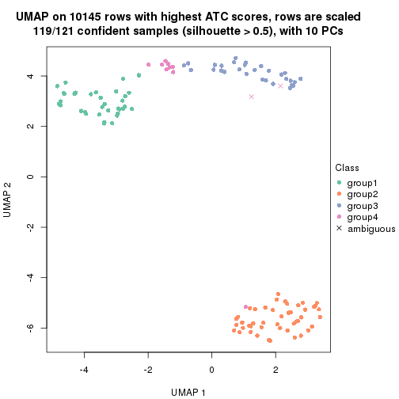
dimension_reduction(res, k = 5, method = "UMAP")
dimension_reduction(res, k = 6, method = "UMAP")
Following heatmap shows how subgroups are split when increasing k:
collect_classes(res)
If matrix rows can be associated to genes, consider to use GO_Enrichment(res,
...) to perform function enrichment for the signature genes.
The object with results only for a single top-value method and a single partition method can be extracted as:
res = res_list["ATC", "NMF"]
# you can also extract it by
# res = res_list["ATC:NMF"]
A summary of res and all the functions that can be applied to it:
res
#> A 'ConsensusPartition' object with k = 2, 3, 4, 5, 6.
#> On a matrix with 10145 rows and 121 columns.
#> Top rows (1000, 2000, 3000, 4000, 5000) are extracted by 'ATC' method.
#> Subgroups are detected by 'NMF' method.
#> Performed in total 1250 partitions by row resampling.
#> Best k for subgroups seems to be 5.
#>
#> Following methods can be applied to this 'ConsensusPartition' object:
#> [1] "cola_report" "collect_classes" "collect_plots"
#> [4] "collect_stats" "colnames" "compare_signatures"
#> [7] "consensus_heatmap" "dimension_reduction" "functional_enrichment"
#> [10] "get_anno_col" "get_anno" "get_classes"
#> [13] "get_consensus" "get_matrix" "get_membership"
#> [16] "get_param" "get_signatures" "get_stats"
#> [19] "is_best_k" "is_stable_k" "membership_heatmap"
#> [22] "ncol" "nrow" "plot_ecdf"
#> [25] "rownames" "select_partition_number" "show"
#> [28] "suggest_best_k" "test_to_known_factors"
collect_plots() function collects all the plots made from res for all k (number of partitions)
into one single page to provide an easy and fast comparison between different k.
collect_plots(res)
The plots are:
k and the heatmap of
predicted classes for each k.k.k.k.All the plots in panels can be made by individual functions and they are plotted later in this section.
select_partition_number() produces several plots showing different
statistics for choosing “optimized” k. There are following statistics:
k;k, the area increased is defined as \(A_k - A_{k-1}\).The detailed explanations of these statistics can be found in the cola vignette.
Generally speaking, lower PAC score, higher mean silhouette score or higher
concordance corresponds to better partition. Rand index and Jaccard index
measure how similar the current partition is compared to partition with k-1.
If they are too similar, we won't accept k is better than k-1.
select_partition_number(res)
The numeric values for all these statistics can be obtained by get_stats().
get_stats(res)
#> k 1-PAC mean_silhouette concordance area_increased Rand Jaccard
#> 2 2 1.000 1.000 1.000 0.4831 0.517 0.517
#> 3 3 1.000 0.973 0.990 0.3673 0.812 0.640
#> 4 4 0.899 0.842 0.906 0.0529 0.947 0.848
#> 5 5 0.904 0.863 0.928 0.0404 0.956 0.860
#> 6 6 0.840 0.818 0.886 0.0300 0.995 0.982
suggest_best_k() suggests the best \(k\) based on these statistics. The rules are as follows:
NA.suggest_best_k(res)
#> [1] 5
#> attr(,"optional")
#> [1] 2 3
There is also optional best \(k\) = 2 3 that is worth to check.
Following shows the table of the partitions (You need to click the show/hide
code output link to see it). The membership matrix (columns with name p*)
is inferred by
clue::cl_consensus()
function with the SE method. Basically the value in the membership matrix
represents the probability to belong to a certain group. The finall class
label for an item is determined with the group with highest probability it
belongs to.
In get_classes() function, the entropy is calculated from the membership
matrix and the silhouette score is calculated from the consensus matrix.
cbind(get_classes(res, k = 2), get_membership(res, k = 2))
#> class entropy silhouette p1 p2
#> SRR2431463 1 0.000 1.000 1.000 0.000
#> SRR2431462 1 0.000 1.000 1.000 0.000
#> SRR2431461 1 0.000 1.000 1.000 0.000
#> SRR2431459 1 0.000 1.000 1.000 0.000
#> SRR2431460 1 0.000 1.000 1.000 0.000
#> SRR2431458 1 0.000 1.000 1.000 0.000
#> SRR2431457 1 0.000 1.000 1.000 0.000
#> SRR2431455 1 0.000 1.000 1.000 0.000
#> SRR2431456 1 0.000 1.000 1.000 0.000
#> SRR2431454 1 0.000 1.000 1.000 0.000
#> SRR2431453 1 0.000 1.000 1.000 0.000
#> SRR2431451 1 0.000 1.000 1.000 0.000
#> SRR2431452 1 0.000 1.000 1.000 0.000
#> SRR2431450 1 0.000 1.000 1.000 0.000
#> SRR2431449 1 0.000 1.000 1.000 0.000
#> SRR2431448 1 0.000 1.000 1.000 0.000
#> SRR2431446 1 0.000 1.000 1.000 0.000
#> SRR2431447 1 0.000 1.000 1.000 0.000
#> SRR2431445 1 0.000 1.000 1.000 0.000
#> SRR2431444 1 0.000 1.000 1.000 0.000
#> SRR2431443 1 0.000 1.000 1.000 0.000
#> SRR2431442 1 0.000 1.000 1.000 0.000
#> SRR2431441 1 0.000 1.000 1.000 0.000
#> SRR2431440 1 0.000 1.000 1.000 0.000
#> SRR2431439 1 0.000 1.000 1.000 0.000
#> SRR2431438 1 0.000 1.000 1.000 0.000
#> SRR2431437 1 0.000 1.000 1.000 0.000
#> SRR2431436 1 0.000 1.000 1.000 0.000
#> SRR2431435 1 0.000 1.000 1.000 0.000
#> SRR2431434 1 0.000 1.000 1.000 0.000
#> SRR2431433 1 0.000 1.000 1.000 0.000
#> SRR2431432 1 0.000 1.000 1.000 0.000
#> SRR2431431 1 0.000 1.000 1.000 0.000
#> SRR2431430 1 0.000 1.000 1.000 0.000
#> SRR2431429 1 0.000 1.000 1.000 0.000
#> SRR2431428 1 0.000 1.000 1.000 0.000
#> SRR2431427 2 0.000 1.000 0.000 1.000
#> SRR2431426 2 0.000 1.000 0.000 1.000
#> SRR2431425 2 0.000 1.000 0.000 1.000
#> SRR2431424 2 0.000 1.000 0.000 1.000
#> SRR2431423 2 0.000 1.000 0.000 1.000
#> SRR2431422 2 0.000 1.000 0.000 1.000
#> SRR2431421 2 0.000 1.000 0.000 1.000
#> SRR2431420 2 0.000 1.000 0.000 1.000
#> SRR2431419 2 0.000 1.000 0.000 1.000
#> SRR2431418 2 0.000 1.000 0.000 1.000
#> SRR2431417 2 0.000 1.000 0.000 1.000
#> SRR2431416 2 0.000 1.000 0.000 1.000
#> SRR2431415 2 0.000 1.000 0.000 1.000
#> SRR2431414 2 0.000 1.000 0.000 1.000
#> SRR2431413 2 0.000 1.000 0.000 1.000
#> SRR2431412 2 0.000 1.000 0.000 1.000
#> SRR2431411 2 0.000 1.000 0.000 1.000
#> SRR2431409 2 0.000 1.000 0.000 1.000
#> SRR2431410 2 0.118 0.984 0.016 0.984
#> SRR2431408 2 0.000 1.000 0.000 1.000
#> SRR2431407 2 0.000 1.000 0.000 1.000
#> SRR2431405 2 0.000 1.000 0.000 1.000
#> SRR2431406 2 0.000 1.000 0.000 1.000
#> SRR2431404 2 0.000 1.000 0.000 1.000
#> SRR2431403 2 0.000 1.000 0.000 1.000
#> SRR2431402 2 0.000 1.000 0.000 1.000
#> SRR2431401 2 0.000 1.000 0.000 1.000
#> SRR2431400 2 0.000 1.000 0.000 1.000
#> SRR2431399 2 0.000 1.000 0.000 1.000
#> SRR2431398 2 0.000 1.000 0.000 1.000
#> SRR2431397 2 0.000 1.000 0.000 1.000
#> SRR2431396 2 0.000 1.000 0.000 1.000
#> SRR2431395 2 0.000 1.000 0.000 1.000
#> SRR2431394 2 0.000 1.000 0.000 1.000
#> SRR2431393 2 0.000 1.000 0.000 1.000
#> SRR2431392 2 0.000 1.000 0.000 1.000
#> SRR2431391 2 0.000 1.000 0.000 1.000
#> SRR2431390 2 0.000 1.000 0.000 1.000
#> SRR2431389 2 0.000 1.000 0.000 1.000
#> SRR2431388 2 0.000 1.000 0.000 1.000
#> SRR2431387 2 0.000 1.000 0.000 1.000
#> SRR2431386 2 0.000 1.000 0.000 1.000
#> SRR2431385 2 0.000 1.000 0.000 1.000
#> SRR2431383 2 0.000 1.000 0.000 1.000
#> SRR2431384 2 0.000 1.000 0.000 1.000
#> SRR2431382 2 0.000 1.000 0.000 1.000
#> SRR2431381 2 0.000 1.000 0.000 1.000
#> SRR2431380 2 0.000 1.000 0.000 1.000
#> SRR2431379 1 0.000 1.000 1.000 0.000
#> SRR2431378 1 0.000 1.000 1.000 0.000
#> SRR2431376 1 0.000 1.000 1.000 0.000
#> SRR2431377 1 0.000 1.000 1.000 0.000
#> SRR2431375 1 0.000 1.000 1.000 0.000
#> SRR2431374 1 0.000 1.000 1.000 0.000
#> SRR2431372 1 0.000 1.000 1.000 0.000
#> SRR2431371 1 0.000 1.000 1.000 0.000
#> SRR2431373 1 0.000 1.000 1.000 0.000
#> SRR2431370 1 0.000 1.000 1.000 0.000
#> SRR2431369 1 0.000 1.000 1.000 0.000
#> SRR2431368 1 0.000 1.000 1.000 0.000
#> SRR2431367 1 0.000 1.000 1.000 0.000
#> SRR2431366 1 0.000 1.000 1.000 0.000
#> SRR2431365 1 0.000 1.000 1.000 0.000
#> SRR2431364 1 0.000 1.000 1.000 0.000
#> SRR2431363 1 0.000 1.000 1.000 0.000
#> SRR2431361 1 0.000 1.000 1.000 0.000
#> SRR2431362 1 0.000 1.000 1.000 0.000
#> SRR2431360 1 0.000 1.000 1.000 0.000
#> SRR2431359 1 0.000 1.000 1.000 0.000
#> SRR2431358 1 0.000 1.000 1.000 0.000
#> SRR2431357 1 0.000 1.000 1.000 0.000
#> SRR2431355 1 0.000 1.000 1.000 0.000
#> SRR2431356 1 0.000 1.000 1.000 0.000
#> SRR2431354 1 0.000 1.000 1.000 0.000
#> SRR2431353 1 0.000 1.000 1.000 0.000
#> SRR2431352 1 0.000 1.000 1.000 0.000
#> SRR2431351 1 0.000 1.000 1.000 0.000
#> SRR2431350 1 0.000 1.000 1.000 0.000
#> SRR2431349 1 0.000 1.000 1.000 0.000
#> SRR2431348 1 0.000 1.000 1.000 0.000
#> SRR2431347 1 0.000 1.000 1.000 0.000
#> SRR2431346 1 0.000 1.000 1.000 0.000
#> SRR2431345 1 0.000 1.000 1.000 0.000
#> SRR2431344 1 0.000 1.000 1.000 0.000
#> SRR2431343 1 0.000 1.000 1.000 0.000
cbind(get_classes(res, k = 3), get_membership(res, k = 3))
#> class entropy silhouette p1 p2 p3
#> SRR2431463 1 0.0000 0.970 1.000 0.000 0.000
#> SRR2431462 1 0.0000 0.970 1.000 0.000 0.000
#> SRR2431461 1 0.0000 0.970 1.000 0.000 0.000
#> SRR2431459 1 0.0000 0.970 1.000 0.000 0.000
#> SRR2431460 1 0.0000 0.970 1.000 0.000 0.000
#> SRR2431458 1 0.0000 0.970 1.000 0.000 0.000
#> SRR2431457 1 0.0000 0.970 1.000 0.000 0.000
#> SRR2431455 1 0.0000 0.970 1.000 0.000 0.000
#> SRR2431456 1 0.0000 0.970 1.000 0.000 0.000
#> SRR2431454 1 0.0000 0.970 1.000 0.000 0.000
#> SRR2431453 1 0.0000 0.970 1.000 0.000 0.000
#> SRR2431451 1 0.0000 0.970 1.000 0.000 0.000
#> SRR2431452 1 0.1163 0.945 0.972 0.000 0.028
#> SRR2431450 1 0.0000 0.970 1.000 0.000 0.000
#> SRR2431449 1 0.0000 0.970 1.000 0.000 0.000
#> SRR2431448 1 0.0000 0.970 1.000 0.000 0.000
#> SRR2431446 1 0.0000 0.970 1.000 0.000 0.000
#> SRR2431447 1 0.0000 0.970 1.000 0.000 0.000
#> SRR2431445 1 0.0000 0.970 1.000 0.000 0.000
#> SRR2431444 1 0.0000 0.970 1.000 0.000 0.000
#> SRR2431443 1 0.0000 0.970 1.000 0.000 0.000
#> SRR2431442 1 0.0000 0.970 1.000 0.000 0.000
#> SRR2431441 1 0.0000 0.970 1.000 0.000 0.000
#> SRR2431440 1 0.0000 0.970 1.000 0.000 0.000
#> SRR2431439 1 0.0000 0.970 1.000 0.000 0.000
#> SRR2431438 1 0.0000 0.970 1.000 0.000 0.000
#> SRR2431437 1 0.0000 0.970 1.000 0.000 0.000
#> SRR2431436 1 0.0000 0.970 1.000 0.000 0.000
#> SRR2431435 1 0.0000 0.970 1.000 0.000 0.000
#> SRR2431434 1 0.0000 0.970 1.000 0.000 0.000
#> SRR2431433 1 0.0000 0.970 1.000 0.000 0.000
#> SRR2431432 1 0.0000 0.970 1.000 0.000 0.000
#> SRR2431431 1 0.0000 0.970 1.000 0.000 0.000
#> SRR2431430 1 0.0000 0.970 1.000 0.000 0.000
#> SRR2431429 1 0.0000 0.970 1.000 0.000 0.000
#> SRR2431428 1 0.0000 0.970 1.000 0.000 0.000
#> SRR2431427 2 0.0000 1.000 0.000 1.000 0.000
#> SRR2431426 2 0.0000 1.000 0.000 1.000 0.000
#> SRR2431425 2 0.0000 1.000 0.000 1.000 0.000
#> SRR2431424 2 0.0000 1.000 0.000 1.000 0.000
#> SRR2431423 2 0.0000 1.000 0.000 1.000 0.000
#> SRR2431422 2 0.0000 1.000 0.000 1.000 0.000
#> SRR2431421 2 0.0000 1.000 0.000 1.000 0.000
#> SRR2431420 2 0.0000 1.000 0.000 1.000 0.000
#> SRR2431419 2 0.0000 1.000 0.000 1.000 0.000
#> SRR2431418 2 0.0000 1.000 0.000 1.000 0.000
#> SRR2431417 2 0.0000 1.000 0.000 1.000 0.000
#> SRR2431416 2 0.0000 1.000 0.000 1.000 0.000
#> SRR2431415 2 0.0000 1.000 0.000 1.000 0.000
#> SRR2431414 2 0.0000 1.000 0.000 1.000 0.000
#> SRR2431413 2 0.0000 1.000 0.000 1.000 0.000
#> SRR2431412 2 0.0000 1.000 0.000 1.000 0.000
#> SRR2431411 2 0.0000 1.000 0.000 1.000 0.000
#> SRR2431409 2 0.0000 1.000 0.000 1.000 0.000
#> SRR2431410 1 0.6204 0.265 0.576 0.424 0.000
#> SRR2431408 2 0.0000 1.000 0.000 1.000 0.000
#> SRR2431407 2 0.0000 1.000 0.000 1.000 0.000
#> SRR2431405 2 0.0000 1.000 0.000 1.000 0.000
#> SRR2431406 2 0.0000 1.000 0.000 1.000 0.000
#> SRR2431404 2 0.0000 1.000 0.000 1.000 0.000
#> SRR2431403 2 0.0000 1.000 0.000 1.000 0.000
#> SRR2431402 2 0.0000 1.000 0.000 1.000 0.000
#> SRR2431401 2 0.0000 1.000 0.000 1.000 0.000
#> SRR2431400 2 0.0000 1.000 0.000 1.000 0.000
#> SRR2431399 2 0.0000 1.000 0.000 1.000 0.000
#> SRR2431398 2 0.0000 1.000 0.000 1.000 0.000
#> SRR2431397 2 0.0000 1.000 0.000 1.000 0.000
#> SRR2431396 2 0.0000 1.000 0.000 1.000 0.000
#> SRR2431395 2 0.0000 1.000 0.000 1.000 0.000
#> SRR2431394 2 0.0000 1.000 0.000 1.000 0.000
#> SRR2431393 2 0.0000 1.000 0.000 1.000 0.000
#> SRR2431392 2 0.0000 1.000 0.000 1.000 0.000
#> SRR2431391 2 0.0000 1.000 0.000 1.000 0.000
#> SRR2431390 2 0.0000 1.000 0.000 1.000 0.000
#> SRR2431389 2 0.0000 1.000 0.000 1.000 0.000
#> SRR2431388 2 0.0000 1.000 0.000 1.000 0.000
#> SRR2431387 2 0.0000 1.000 0.000 1.000 0.000
#> SRR2431386 2 0.0000 1.000 0.000 1.000 0.000
#> SRR2431385 2 0.0000 1.000 0.000 1.000 0.000
#> SRR2431383 2 0.0000 1.000 0.000 1.000 0.000
#> SRR2431384 2 0.0000 1.000 0.000 1.000 0.000
#> SRR2431382 2 0.0000 1.000 0.000 1.000 0.000
#> SRR2431381 2 0.0000 1.000 0.000 1.000 0.000
#> SRR2431380 2 0.0000 1.000 0.000 1.000 0.000
#> SRR2431379 3 0.0000 1.000 0.000 0.000 1.000
#> SRR2431378 3 0.0000 1.000 0.000 0.000 1.000
#> SRR2431376 3 0.0000 1.000 0.000 0.000 1.000
#> SRR2431377 3 0.0000 1.000 0.000 0.000 1.000
#> SRR2431375 3 0.0000 1.000 0.000 0.000 1.000
#> SRR2431374 1 0.0000 0.970 1.000 0.000 0.000
#> SRR2431372 3 0.0000 1.000 0.000 0.000 1.000
#> SRR2431371 3 0.0000 1.000 0.000 0.000 1.000
#> SRR2431373 3 0.0000 1.000 0.000 0.000 1.000
#> SRR2431370 3 0.0000 1.000 0.000 0.000 1.000
#> SRR2431369 3 0.0000 1.000 0.000 0.000 1.000
#> SRR2431368 3 0.0000 1.000 0.000 0.000 1.000
#> SRR2431367 3 0.0000 1.000 0.000 0.000 1.000
#> SRR2431366 3 0.0000 1.000 0.000 0.000 1.000
#> SRR2431365 3 0.0000 1.000 0.000 0.000 1.000
#> SRR2431364 3 0.0000 1.000 0.000 0.000 1.000
#> SRR2431363 3 0.0000 1.000 0.000 0.000 1.000
#> SRR2431361 3 0.0000 1.000 0.000 0.000 1.000
#> SRR2431362 3 0.0000 1.000 0.000 0.000 1.000
#> SRR2431360 3 0.0000 1.000 0.000 0.000 1.000
#> SRR2431359 3 0.0000 1.000 0.000 0.000 1.000
#> SRR2431358 1 0.0000 0.970 1.000 0.000 0.000
#> SRR2431357 1 0.5706 0.535 0.680 0.000 0.320
#> SRR2431355 1 0.6274 0.179 0.544 0.000 0.456
#> SRR2431356 3 0.0000 1.000 0.000 0.000 1.000
#> SRR2431354 3 0.0000 1.000 0.000 0.000 1.000
#> SRR2431353 1 0.0424 0.964 0.992 0.000 0.008
#> SRR2431352 1 0.0237 0.967 0.996 0.000 0.004
#> SRR2431351 3 0.0000 1.000 0.000 0.000 1.000
#> SRR2431350 3 0.0000 1.000 0.000 0.000 1.000
#> SRR2431349 3 0.0000 1.000 0.000 0.000 1.000
#> SRR2431348 3 0.0000 1.000 0.000 0.000 1.000
#> SRR2431347 3 0.0000 1.000 0.000 0.000 1.000
#> SRR2431346 3 0.0000 1.000 0.000 0.000 1.000
#> SRR2431345 3 0.0000 1.000 0.000 0.000 1.000
#> SRR2431344 1 0.0424 0.964 0.992 0.000 0.008
#> SRR2431343 1 0.0000 0.970 1.000 0.000 0.000
cbind(get_classes(res, k = 4), get_membership(res, k = 4))
#> class entropy silhouette p1 p2 p3 p4
#> SRR2431463 1 0.0188 0.9478 0.996 0.000 0.000 0.004
#> SRR2431462 1 0.0188 0.9468 0.996 0.000 0.000 0.004
#> SRR2431461 1 0.0188 0.9468 0.996 0.000 0.000 0.004
#> SRR2431459 1 0.0000 0.9478 1.000 0.000 0.000 0.000
#> SRR2431460 1 0.0469 0.9467 0.988 0.000 0.000 0.012
#> SRR2431458 1 0.0592 0.9405 0.984 0.000 0.000 0.016
#> SRR2431457 1 0.0469 0.9468 0.988 0.000 0.000 0.012
#> SRR2431455 1 0.0188 0.9478 0.996 0.000 0.000 0.004
#> SRR2431456 1 0.1867 0.8970 0.928 0.000 0.000 0.072
#> SRR2431454 1 0.0921 0.9305 0.972 0.000 0.000 0.028
#> SRR2431453 1 0.0000 0.9478 1.000 0.000 0.000 0.000
#> SRR2431451 1 0.0188 0.9468 0.996 0.000 0.000 0.004
#> SRR2431452 1 0.1833 0.9041 0.944 0.000 0.032 0.024
#> SRR2431450 1 0.1637 0.9098 0.940 0.000 0.000 0.060
#> SRR2431449 1 0.0592 0.9451 0.984 0.000 0.000 0.016
#> SRR2431448 1 0.0000 0.9478 1.000 0.000 0.000 0.000
#> SRR2431446 1 0.0336 0.9451 0.992 0.000 0.000 0.008
#> SRR2431447 1 0.0000 0.9478 1.000 0.000 0.000 0.000
#> SRR2431445 1 0.0188 0.9468 0.996 0.000 0.000 0.004
#> SRR2431444 1 0.0592 0.9448 0.984 0.000 0.000 0.016
#> SRR2431443 1 0.0707 0.9431 0.980 0.000 0.000 0.020
#> SRR2431442 1 0.0817 0.9410 0.976 0.000 0.000 0.024
#> SRR2431441 1 0.0336 0.9475 0.992 0.000 0.000 0.008
#> SRR2431440 1 0.0188 0.9468 0.996 0.000 0.000 0.004
#> SRR2431439 1 0.2216 0.8724 0.908 0.000 0.000 0.092
#> SRR2431438 1 0.0000 0.9478 1.000 0.000 0.000 0.000
#> SRR2431437 1 0.0592 0.9405 0.984 0.000 0.000 0.016
#> SRR2431436 1 0.0817 0.9343 0.976 0.000 0.000 0.024
#> SRR2431435 1 0.0000 0.9478 1.000 0.000 0.000 0.000
#> SRR2431434 1 0.0921 0.9383 0.972 0.000 0.000 0.028
#> SRR2431433 1 0.0592 0.9448 0.984 0.000 0.000 0.016
#> SRR2431432 1 0.0000 0.9478 1.000 0.000 0.000 0.000
#> SRR2431431 1 0.1211 0.9293 0.960 0.000 0.000 0.040
#> SRR2431430 1 0.0336 0.9475 0.992 0.000 0.000 0.008
#> SRR2431429 1 0.0469 0.9467 0.988 0.000 0.000 0.012
#> SRR2431428 1 0.2408 0.8561 0.896 0.000 0.000 0.104
#> SRR2431427 2 0.0188 0.9787 0.000 0.996 0.000 0.004
#> SRR2431426 2 0.0188 0.9789 0.000 0.996 0.000 0.004
#> SRR2431425 2 0.0188 0.9789 0.000 0.996 0.000 0.004
#> SRR2431424 2 0.0000 0.9794 0.000 1.000 0.000 0.000
#> SRR2431423 2 0.0000 0.9794 0.000 1.000 0.000 0.000
#> SRR2431422 2 0.0188 0.9789 0.000 0.996 0.000 0.004
#> SRR2431421 2 0.0000 0.9794 0.000 1.000 0.000 0.000
#> SRR2431420 2 0.0188 0.9789 0.000 0.996 0.000 0.004
#> SRR2431419 2 0.0000 0.9794 0.000 1.000 0.000 0.000
#> SRR2431418 2 0.0336 0.9776 0.000 0.992 0.000 0.008
#> SRR2431417 2 0.0000 0.9794 0.000 1.000 0.000 0.000
#> SRR2431416 2 0.0000 0.9794 0.000 1.000 0.000 0.000
#> SRR2431415 2 0.0336 0.9776 0.000 0.992 0.000 0.008
#> SRR2431414 2 0.0188 0.9789 0.000 0.996 0.000 0.004
#> SRR2431413 2 0.0469 0.9754 0.000 0.988 0.000 0.012
#> SRR2431412 2 0.0000 0.9794 0.000 1.000 0.000 0.000
#> SRR2431411 2 0.4804 0.5416 0.000 0.616 0.000 0.384
#> SRR2431409 2 0.0336 0.9776 0.000 0.992 0.000 0.008
#> SRR2431410 2 0.6423 0.3547 0.084 0.580 0.000 0.336
#> SRR2431408 2 0.0000 0.9794 0.000 1.000 0.000 0.000
#> SRR2431407 2 0.0000 0.9794 0.000 1.000 0.000 0.000
#> SRR2431405 2 0.0592 0.9747 0.000 0.984 0.000 0.016
#> SRR2431406 2 0.0336 0.9773 0.000 0.992 0.000 0.008
#> SRR2431404 2 0.0188 0.9789 0.000 0.996 0.000 0.004
#> SRR2431403 2 0.0188 0.9789 0.000 0.996 0.000 0.004
#> SRR2431402 2 0.0000 0.9794 0.000 1.000 0.000 0.000
#> SRR2431401 2 0.0188 0.9786 0.000 0.996 0.000 0.004
#> SRR2431400 2 0.0469 0.9761 0.000 0.988 0.000 0.012
#> SRR2431399 2 0.0000 0.9794 0.000 1.000 0.000 0.000
#> SRR2431398 2 0.0000 0.9794 0.000 1.000 0.000 0.000
#> SRR2431397 2 0.0336 0.9776 0.000 0.992 0.000 0.008
#> SRR2431396 2 0.0336 0.9776 0.000 0.992 0.000 0.008
#> SRR2431395 2 0.0188 0.9786 0.000 0.996 0.000 0.004
#> SRR2431394 2 0.0188 0.9789 0.000 0.996 0.000 0.004
#> SRR2431393 2 0.0000 0.9794 0.000 1.000 0.000 0.000
#> SRR2431392 2 0.0336 0.9776 0.000 0.992 0.000 0.008
#> SRR2431391 2 0.0188 0.9789 0.000 0.996 0.000 0.004
#> SRR2431390 2 0.0000 0.9794 0.000 1.000 0.000 0.000
#> SRR2431389 2 0.0188 0.9789 0.000 0.996 0.000 0.004
#> SRR2431388 2 0.0188 0.9789 0.000 0.996 0.000 0.004
#> SRR2431387 2 0.0707 0.9701 0.000 0.980 0.000 0.020
#> SRR2431386 2 0.0000 0.9794 0.000 1.000 0.000 0.000
#> SRR2431385 2 0.0921 0.9640 0.000 0.972 0.000 0.028
#> SRR2431383 2 0.1302 0.9514 0.000 0.956 0.000 0.044
#> SRR2431384 2 0.0336 0.9776 0.000 0.992 0.000 0.008
#> SRR2431382 2 0.0336 0.9776 0.000 0.992 0.000 0.008
#> SRR2431381 2 0.0336 0.9776 0.000 0.992 0.000 0.008
#> SRR2431380 2 0.0188 0.9789 0.000 0.996 0.000 0.004
#> SRR2431379 3 0.0000 0.8127 0.000 0.000 1.000 0.000
#> SRR2431378 3 0.5150 0.2792 0.008 0.000 0.596 0.396
#> SRR2431376 3 0.5244 0.1458 0.008 0.000 0.556 0.436
#> SRR2431377 3 0.5007 0.3794 0.008 0.000 0.636 0.356
#> SRR2431375 3 0.1302 0.7954 0.000 0.000 0.956 0.044
#> SRR2431374 4 0.6607 0.5723 0.400 0.000 0.084 0.516
#> SRR2431372 3 0.0000 0.8127 0.000 0.000 1.000 0.000
#> SRR2431371 3 0.4605 0.4644 0.000 0.000 0.664 0.336
#> SRR2431373 3 0.2647 0.7766 0.000 0.000 0.880 0.120
#> SRR2431370 3 0.2921 0.7611 0.000 0.000 0.860 0.140
#> SRR2431369 4 0.5296 -0.0339 0.008 0.000 0.492 0.500
#> SRR2431368 3 0.3764 0.6776 0.000 0.000 0.784 0.216
#> SRR2431367 3 0.0188 0.8131 0.000 0.000 0.996 0.004
#> SRR2431366 4 0.5678 0.1249 0.024 0.000 0.452 0.524
#> SRR2431365 3 0.5576 0.0485 0.020 0.000 0.536 0.444
#> SRR2431364 3 0.0592 0.8092 0.000 0.000 0.984 0.016
#> SRR2431363 3 0.2589 0.7429 0.000 0.000 0.884 0.116
#> SRR2431361 3 0.3266 0.7335 0.000 0.000 0.832 0.168
#> SRR2431362 3 0.0592 0.8092 0.000 0.000 0.984 0.016
#> SRR2431360 3 0.0592 0.8093 0.000 0.000 0.984 0.016
#> SRR2431359 3 0.2868 0.7647 0.000 0.000 0.864 0.136
#> SRR2431358 1 0.4948 -0.1036 0.560 0.000 0.000 0.440
#> SRR2431357 4 0.7169 0.5326 0.152 0.000 0.332 0.516
#> SRR2431355 4 0.7597 0.6031 0.224 0.000 0.308 0.468
#> SRR2431356 3 0.0817 0.8129 0.000 0.000 0.976 0.024
#> SRR2431354 3 0.2216 0.7623 0.000 0.000 0.908 0.092
#> SRR2431353 4 0.7106 0.6942 0.324 0.000 0.148 0.528
#> SRR2431352 4 0.6961 0.6934 0.316 0.000 0.136 0.548
#> SRR2431351 3 0.0921 0.8039 0.000 0.000 0.972 0.028
#> SRR2431350 3 0.1792 0.8029 0.000 0.000 0.932 0.068
#> SRR2431349 3 0.2647 0.7381 0.000 0.000 0.880 0.120
#> SRR2431348 3 0.1211 0.8114 0.000 0.000 0.960 0.040
#> SRR2431347 3 0.2149 0.7944 0.000 0.000 0.912 0.088
#> SRR2431346 3 0.1302 0.8105 0.000 0.000 0.956 0.044
#> SRR2431345 3 0.2345 0.7553 0.000 0.000 0.900 0.100
#> SRR2431344 1 0.5543 0.1015 0.612 0.000 0.028 0.360
#> SRR2431343 4 0.6635 0.5955 0.388 0.000 0.088 0.524
cbind(get_classes(res, k = 5), get_membership(res, k = 5))
#> class entropy silhouette p1 p2 p3 p4 p5
#> SRR2431463 1 0.0807 0.9584 0.976 0.000 0.000 0.012 0.012
#> SRR2431462 1 0.0771 0.9581 0.976 0.000 0.000 0.004 0.020
#> SRR2431461 1 0.0566 0.9586 0.984 0.000 0.000 0.004 0.012
#> SRR2431459 1 0.0290 0.9577 0.992 0.000 0.000 0.000 0.008
#> SRR2431460 1 0.0912 0.9587 0.972 0.000 0.000 0.016 0.012
#> SRR2431458 1 0.0290 0.9574 0.992 0.000 0.000 0.000 0.008
#> SRR2431457 1 0.0671 0.9603 0.980 0.000 0.000 0.016 0.004
#> SRR2431455 1 0.0912 0.9586 0.972 0.000 0.000 0.012 0.016
#> SRR2431456 1 0.2519 0.9087 0.884 0.000 0.000 0.100 0.016
#> SRR2431454 1 0.1299 0.9478 0.960 0.000 0.008 0.012 0.020
#> SRR2431453 1 0.0771 0.9591 0.976 0.000 0.000 0.020 0.004
#> SRR2431451 1 0.0898 0.9559 0.972 0.000 0.000 0.008 0.020
#> SRR2431452 1 0.3488 0.8673 0.852 0.000 0.064 0.016 0.068
#> SRR2431450 1 0.2325 0.9297 0.904 0.000 0.000 0.068 0.028
#> SRR2431449 1 0.1106 0.9577 0.964 0.000 0.000 0.024 0.012
#> SRR2431448 1 0.0579 0.9590 0.984 0.000 0.000 0.008 0.008
#> SRR2431446 1 0.0566 0.9573 0.984 0.000 0.000 0.004 0.012
#> SRR2431447 1 0.0324 0.9580 0.992 0.000 0.000 0.004 0.004
#> SRR2431445 1 0.0404 0.9581 0.988 0.000 0.000 0.000 0.012
#> SRR2431444 1 0.2359 0.9304 0.904 0.000 0.000 0.036 0.060
#> SRR2431443 1 0.1364 0.9533 0.952 0.000 0.000 0.036 0.012
#> SRR2431442 1 0.1251 0.9555 0.956 0.000 0.000 0.036 0.008
#> SRR2431441 1 0.1082 0.9582 0.964 0.000 0.000 0.028 0.008
#> SRR2431440 1 0.2012 0.9364 0.920 0.000 0.000 0.020 0.060
#> SRR2431439 1 0.3141 0.8462 0.832 0.000 0.000 0.152 0.016
#> SRR2431438 1 0.0671 0.9596 0.980 0.000 0.000 0.016 0.004
#> SRR2431437 1 0.0162 0.9586 0.996 0.000 0.000 0.004 0.000
#> SRR2431436 1 0.1251 0.9490 0.956 0.000 0.000 0.008 0.036
#> SRR2431435 1 0.1281 0.9538 0.956 0.000 0.000 0.012 0.032
#> SRR2431434 1 0.1106 0.9577 0.964 0.000 0.000 0.024 0.012
#> SRR2431433 1 0.1741 0.9493 0.936 0.000 0.000 0.040 0.024
#> SRR2431432 1 0.0324 0.9586 0.992 0.000 0.000 0.004 0.004
#> SRR2431431 1 0.3281 0.8842 0.848 0.000 0.000 0.092 0.060
#> SRR2431430 1 0.1493 0.9526 0.948 0.000 0.000 0.024 0.028
#> SRR2431429 1 0.1012 0.9594 0.968 0.000 0.000 0.020 0.012
#> SRR2431428 1 0.4062 0.7746 0.764 0.000 0.000 0.196 0.040
#> SRR2431427 2 0.0955 0.9547 0.000 0.968 0.000 0.004 0.028
#> SRR2431426 2 0.0404 0.9650 0.000 0.988 0.000 0.000 0.012
#> SRR2431425 2 0.0451 0.9657 0.000 0.988 0.000 0.004 0.008
#> SRR2431424 2 0.0162 0.9669 0.000 0.996 0.000 0.000 0.004
#> SRR2431423 2 0.0566 0.9645 0.000 0.984 0.000 0.004 0.012
#> SRR2431422 2 0.0794 0.9555 0.000 0.972 0.000 0.000 0.028
#> SRR2431421 2 0.0703 0.9591 0.000 0.976 0.000 0.000 0.024
#> SRR2431420 2 0.0162 0.9674 0.000 0.996 0.000 0.000 0.004
#> SRR2431419 2 0.0162 0.9667 0.000 0.996 0.000 0.000 0.004
#> SRR2431418 2 0.0671 0.9632 0.000 0.980 0.000 0.004 0.016
#> SRR2431417 2 0.0324 0.9662 0.000 0.992 0.000 0.004 0.004
#> SRR2431416 2 0.0451 0.9653 0.000 0.988 0.000 0.004 0.008
#> SRR2431415 2 0.0290 0.9671 0.000 0.992 0.000 0.000 0.008
#> SRR2431414 2 0.0404 0.9649 0.000 0.988 0.000 0.000 0.012
#> SRR2431413 2 0.0865 0.9578 0.000 0.972 0.000 0.004 0.024
#> SRR2431412 2 0.0162 0.9670 0.000 0.996 0.000 0.000 0.004
#> SRR2431411 5 0.3961 0.0000 0.000 0.248 0.016 0.000 0.736
#> SRR2431409 2 0.0290 0.9673 0.000 0.992 0.000 0.000 0.008
#> SRR2431410 2 0.6418 -0.1533 0.020 0.548 0.000 0.304 0.128
#> SRR2431408 2 0.0324 0.9662 0.000 0.992 0.000 0.004 0.004
#> SRR2431407 2 0.0609 0.9613 0.000 0.980 0.000 0.000 0.020
#> SRR2431405 2 0.0671 0.9626 0.000 0.980 0.000 0.004 0.016
#> SRR2431406 2 0.0609 0.9612 0.000 0.980 0.000 0.000 0.020
#> SRR2431404 2 0.0162 0.9669 0.000 0.996 0.000 0.000 0.004
#> SRR2431403 2 0.0671 0.9631 0.000 0.980 0.000 0.004 0.016
#> SRR2431402 2 0.0566 0.9667 0.000 0.984 0.000 0.004 0.012
#> SRR2431401 2 0.0162 0.9667 0.000 0.996 0.000 0.000 0.004
#> SRR2431400 2 0.0404 0.9649 0.000 0.988 0.000 0.000 0.012
#> SRR2431399 2 0.1043 0.9447 0.000 0.960 0.000 0.000 0.040
#> SRR2431398 2 0.0162 0.9669 0.000 0.996 0.000 0.000 0.004
#> SRR2431397 2 0.0510 0.9656 0.000 0.984 0.000 0.000 0.016
#> SRR2431396 2 0.0880 0.9563 0.000 0.968 0.000 0.000 0.032
#> SRR2431395 2 0.0290 0.9669 0.000 0.992 0.000 0.000 0.008
#> SRR2431394 2 0.0566 0.9645 0.000 0.984 0.000 0.004 0.012
#> SRR2431393 2 0.0609 0.9641 0.000 0.980 0.000 0.000 0.020
#> SRR2431392 2 0.0963 0.9530 0.000 0.964 0.000 0.000 0.036
#> SRR2431391 2 0.0290 0.9657 0.000 0.992 0.000 0.000 0.008
#> SRR2431390 2 0.0404 0.9663 0.000 0.988 0.000 0.000 0.012
#> SRR2431389 2 0.0451 0.9653 0.000 0.988 0.000 0.004 0.008
#> SRR2431388 2 0.0963 0.9487 0.000 0.964 0.000 0.000 0.036
#> SRR2431387 2 0.1041 0.9507 0.000 0.964 0.000 0.004 0.032
#> SRR2431386 2 0.0290 0.9669 0.000 0.992 0.000 0.000 0.008
#> SRR2431385 2 0.2074 0.8564 0.000 0.896 0.000 0.000 0.104
#> SRR2431383 2 0.0898 0.9584 0.000 0.972 0.000 0.008 0.020
#> SRR2431384 2 0.0609 0.9645 0.000 0.980 0.000 0.000 0.020
#> SRR2431382 2 0.0451 0.9663 0.000 0.988 0.000 0.004 0.008
#> SRR2431381 2 0.0324 0.9662 0.000 0.992 0.000 0.004 0.004
#> SRR2431380 2 0.0000 0.9668 0.000 1.000 0.000 0.000 0.000
#> SRR2431379 3 0.1043 0.8343 0.000 0.000 0.960 0.040 0.000
#> SRR2431378 4 0.2806 0.7663 0.000 0.000 0.152 0.844 0.004
#> SRR2431376 4 0.2629 0.7785 0.000 0.000 0.136 0.860 0.004
#> SRR2431377 4 0.3305 0.6735 0.000 0.000 0.224 0.776 0.000
#> SRR2431375 3 0.0912 0.8316 0.000 0.000 0.972 0.016 0.012
#> SRR2431374 4 0.1357 0.7971 0.048 0.000 0.000 0.948 0.004
#> SRR2431372 3 0.1430 0.8333 0.000 0.000 0.944 0.052 0.004
#> SRR2431371 4 0.3508 0.6237 0.000 0.000 0.252 0.748 0.000
#> SRR2431373 3 0.4088 0.5228 0.000 0.000 0.632 0.368 0.000
#> SRR2431370 3 0.4219 0.4074 0.000 0.000 0.584 0.416 0.000
#> SRR2431369 4 0.2488 0.7863 0.000 0.000 0.124 0.872 0.004
#> SRR2431368 4 0.4538 -0.0127 0.000 0.000 0.452 0.540 0.008
#> SRR2431367 3 0.1197 0.8340 0.000 0.000 0.952 0.048 0.000
#> SRR2431366 4 0.1341 0.8170 0.000 0.000 0.056 0.944 0.000
#> SRR2431365 4 0.1608 0.8152 0.000 0.000 0.072 0.928 0.000
#> SRR2431364 3 0.0798 0.8319 0.000 0.000 0.976 0.016 0.008
#> SRR2431363 3 0.0609 0.8210 0.000 0.000 0.980 0.000 0.020
#> SRR2431361 3 0.4449 0.1869 0.000 0.000 0.512 0.484 0.004
#> SRR2431362 3 0.1041 0.8347 0.000 0.000 0.964 0.032 0.004
#> SRR2431360 3 0.1117 0.8317 0.000 0.000 0.964 0.020 0.016
#> SRR2431359 3 0.3913 0.6083 0.000 0.000 0.676 0.324 0.000
#> SRR2431358 4 0.3621 0.6220 0.192 0.000 0.000 0.788 0.020
#> SRR2431357 4 0.1372 0.8163 0.016 0.000 0.024 0.956 0.004
#> SRR2431355 4 0.1626 0.8232 0.016 0.000 0.044 0.940 0.000
#> SRR2431356 3 0.2230 0.8092 0.000 0.000 0.884 0.116 0.000
#> SRR2431354 3 0.0290 0.8248 0.000 0.000 0.992 0.000 0.008
#> SRR2431353 4 0.1704 0.7845 0.068 0.000 0.000 0.928 0.004
#> SRR2431352 4 0.0955 0.8015 0.028 0.000 0.000 0.968 0.004
#> SRR2431351 3 0.0771 0.8327 0.000 0.000 0.976 0.020 0.004
#> SRR2431350 3 0.3636 0.6767 0.000 0.000 0.728 0.272 0.000
#> SRR2431349 3 0.0798 0.8211 0.000 0.000 0.976 0.008 0.016
#> SRR2431348 3 0.2891 0.7739 0.000 0.000 0.824 0.176 0.000
#> SRR2431347 3 0.4060 0.5436 0.000 0.000 0.640 0.360 0.000
#> SRR2431346 3 0.2813 0.7805 0.000 0.000 0.832 0.168 0.000
#> SRR2431345 3 0.0451 0.8219 0.000 0.000 0.988 0.004 0.008
#> SRR2431344 4 0.4022 0.6214 0.196 0.000 0.008 0.772 0.024
#> SRR2431343 4 0.1364 0.8000 0.036 0.000 0.000 0.952 0.012
cbind(get_classes(res, k = 6), get_membership(res, k = 6))
#> class entropy silhouette p1 p2 p3 p4 p5 p6
#> SRR2431463 1 0.1700 0.876 0.916 0.000 0.000 0.004 0.000 NA
#> SRR2431462 1 0.1204 0.884 0.944 0.000 0.000 0.000 0.000 NA
#> SRR2431461 1 0.1349 0.887 0.940 0.000 0.000 0.000 0.004 NA
#> SRR2431459 1 0.0777 0.887 0.972 0.000 0.000 0.000 0.004 NA
#> SRR2431460 1 0.1753 0.878 0.912 0.000 0.000 0.004 0.000 NA
#> SRR2431458 1 0.0865 0.886 0.964 0.000 0.000 0.000 0.000 NA
#> SRR2431457 1 0.0858 0.887 0.968 0.000 0.000 0.004 0.000 NA
#> SRR2431455 1 0.1398 0.886 0.940 0.000 0.000 0.008 0.000 NA
#> SRR2431456 1 0.3481 0.840 0.804 0.000 0.000 0.072 0.000 NA
#> SRR2431454 1 0.2149 0.874 0.888 0.000 0.004 0.000 0.004 NA
#> SRR2431453 1 0.1265 0.890 0.948 0.000 0.000 0.008 0.000 NA
#> SRR2431451 1 0.2288 0.869 0.876 0.000 0.000 0.004 0.004 NA
#> SRR2431452 1 0.5284 0.583 0.596 0.000 0.096 0.000 0.012 NA
#> SRR2431450 1 0.3328 0.835 0.816 0.000 0.000 0.064 0.000 NA
#> SRR2431449 1 0.1895 0.885 0.912 0.000 0.000 0.016 0.000 NA
#> SRR2431448 1 0.0858 0.887 0.968 0.000 0.000 0.004 0.000 NA
#> SRR2431446 1 0.1327 0.887 0.936 0.000 0.000 0.000 0.000 NA
#> SRR2431447 1 0.1349 0.886 0.940 0.000 0.000 0.000 0.004 NA
#> SRR2431445 1 0.1049 0.887 0.960 0.000 0.000 0.008 0.000 NA
#> SRR2431444 1 0.4452 0.751 0.696 0.000 0.000 0.032 0.024 NA
#> SRR2431443 1 0.2445 0.865 0.872 0.000 0.000 0.020 0.000 NA
#> SRR2431442 1 0.2445 0.872 0.872 0.000 0.000 0.020 0.000 NA
#> SRR2431441 1 0.1265 0.887 0.948 0.000 0.000 0.008 0.000 NA
#> SRR2431440 1 0.3938 0.715 0.660 0.000 0.000 0.016 0.000 NA
#> SRR2431439 1 0.4450 0.783 0.732 0.000 0.000 0.128 0.008 NA
#> SRR2431438 1 0.0508 0.885 0.984 0.000 0.000 0.004 0.000 NA
#> SRR2431437 1 0.0937 0.888 0.960 0.000 0.000 0.000 0.000 NA
#> SRR2431436 1 0.2631 0.853 0.840 0.000 0.000 0.000 0.008 NA
#> SRR2431435 1 0.2810 0.852 0.832 0.000 0.000 0.008 0.004 NA
#> SRR2431434 1 0.2009 0.877 0.904 0.000 0.000 0.008 0.004 NA
#> SRR2431433 1 0.3388 0.834 0.792 0.000 0.000 0.036 0.000 NA
#> SRR2431432 1 0.0508 0.886 0.984 0.000 0.000 0.004 0.000 NA
#> SRR2431431 1 0.5483 0.547 0.548 0.000 0.000 0.092 0.016 NA
#> SRR2431430 1 0.3311 0.820 0.780 0.000 0.000 0.012 0.004 NA
#> SRR2431429 1 0.2312 0.872 0.876 0.000 0.000 0.012 0.000 NA
#> SRR2431428 1 0.5627 0.515 0.536 0.000 0.000 0.156 0.004 NA
#> SRR2431427 2 0.1168 0.952 0.000 0.956 0.000 0.000 0.016 NA
#> SRR2431426 2 0.0717 0.956 0.000 0.976 0.000 0.000 0.016 NA
#> SRR2431425 2 0.0717 0.953 0.000 0.976 0.000 0.000 0.016 NA
#> SRR2431424 2 0.0291 0.956 0.000 0.992 0.000 0.000 0.004 NA
#> SRR2431423 2 0.1297 0.949 0.000 0.948 0.000 0.000 0.012 NA
#> SRR2431422 2 0.1003 0.953 0.000 0.964 0.000 0.000 0.016 NA
#> SRR2431421 2 0.1218 0.948 0.000 0.956 0.000 0.004 0.028 NA
#> SRR2431420 2 0.1168 0.951 0.000 0.956 0.000 0.000 0.016 NA
#> SRR2431419 2 0.0146 0.955 0.000 0.996 0.000 0.000 0.000 NA
#> SRR2431418 2 0.0806 0.955 0.000 0.972 0.000 0.000 0.008 NA
#> SRR2431417 2 0.0951 0.953 0.000 0.968 0.000 0.004 0.020 NA
#> SRR2431416 2 0.1225 0.950 0.000 0.952 0.000 0.000 0.012 NA
#> SRR2431415 2 0.0717 0.956 0.000 0.976 0.000 0.000 0.008 NA
#> SRR2431414 2 0.1088 0.951 0.000 0.960 0.000 0.000 0.016 NA
#> SRR2431413 2 0.2581 0.877 0.000 0.860 0.000 0.000 0.020 NA
#> SRR2431412 2 0.0405 0.955 0.000 0.988 0.000 0.000 0.004 NA
#> SRR2431411 5 0.1700 0.000 0.000 0.080 0.004 0.000 0.916 NA
#> SRR2431409 2 0.0622 0.954 0.000 0.980 0.000 0.000 0.012 NA
#> SRR2431410 2 0.7198 -0.254 0.036 0.424 0.000 0.248 0.032 NA
#> SRR2431408 2 0.0603 0.956 0.000 0.980 0.000 0.000 0.004 NA
#> SRR2431407 2 0.0520 0.956 0.000 0.984 0.000 0.000 0.008 NA
#> SRR2431405 2 0.2450 0.883 0.000 0.868 0.000 0.000 0.016 NA
#> SRR2431406 2 0.0508 0.956 0.000 0.984 0.000 0.000 0.012 NA
#> SRR2431404 2 0.0717 0.955 0.000 0.976 0.000 0.000 0.008 NA
#> SRR2431403 2 0.1092 0.953 0.000 0.960 0.000 0.000 0.020 NA
#> SRR2431402 2 0.0653 0.953 0.000 0.980 0.000 0.004 0.012 NA
#> SRR2431401 2 0.0000 0.955 0.000 1.000 0.000 0.000 0.000 NA
#> SRR2431400 2 0.0622 0.955 0.000 0.980 0.000 0.000 0.012 NA
#> SRR2431399 2 0.0632 0.956 0.000 0.976 0.000 0.000 0.024 NA
#> SRR2431398 2 0.0363 0.956 0.000 0.988 0.000 0.000 0.012 NA
#> SRR2431397 2 0.1225 0.949 0.000 0.952 0.000 0.000 0.012 NA
#> SRR2431396 2 0.1225 0.947 0.000 0.952 0.000 0.000 0.012 NA
#> SRR2431395 2 0.0891 0.954 0.000 0.968 0.000 0.000 0.008 NA
#> SRR2431394 2 0.1625 0.938 0.000 0.928 0.000 0.000 0.012 NA
#> SRR2431393 2 0.1426 0.940 0.000 0.948 0.000 0.008 0.028 NA
#> SRR2431392 2 0.1036 0.949 0.000 0.964 0.000 0.004 0.024 NA
#> SRR2431391 2 0.0000 0.955 0.000 1.000 0.000 0.000 0.000 NA
#> SRR2431390 2 0.0820 0.954 0.000 0.972 0.000 0.000 0.012 NA
#> SRR2431389 2 0.0725 0.956 0.000 0.976 0.000 0.000 0.012 NA
#> SRR2431388 2 0.0777 0.953 0.000 0.972 0.000 0.004 0.024 NA
#> SRR2431387 2 0.1390 0.943 0.000 0.948 0.000 0.004 0.016 NA
#> SRR2431386 2 0.0291 0.955 0.000 0.992 0.000 0.000 0.004 NA
#> SRR2431385 2 0.2197 0.911 0.000 0.900 0.000 0.000 0.044 NA
#> SRR2431383 2 0.2715 0.877 0.000 0.860 0.000 0.004 0.024 NA
#> SRR2431384 2 0.1074 0.948 0.000 0.960 0.000 0.000 0.028 NA
#> SRR2431382 2 0.1391 0.947 0.000 0.944 0.000 0.000 0.016 NA
#> SRR2431381 2 0.0508 0.957 0.000 0.984 0.000 0.000 0.004 NA
#> SRR2431380 2 0.0603 0.957 0.000 0.980 0.000 0.000 0.004 NA
#> SRR2431379 3 0.1982 0.823 0.000 0.000 0.912 0.068 0.004 NA
#> SRR2431378 4 0.2623 0.758 0.000 0.000 0.132 0.852 0.000 NA
#> SRR2431376 4 0.2489 0.760 0.000 0.000 0.128 0.860 0.000 NA
#> SRR2431377 4 0.3081 0.668 0.000 0.000 0.220 0.776 0.000 NA
#> SRR2431375 3 0.1461 0.809 0.000 0.000 0.940 0.016 0.000 NA
#> SRR2431374 4 0.1176 0.766 0.024 0.000 0.000 0.956 0.000 NA
#> SRR2431372 3 0.3154 0.813 0.000 0.000 0.848 0.072 0.012 NA
#> SRR2431371 4 0.3368 0.644 0.000 0.000 0.232 0.756 0.000 NA
#> SRR2431373 3 0.4047 0.463 0.000 0.000 0.604 0.384 0.000 NA
#> SRR2431370 3 0.4212 0.329 0.000 0.000 0.560 0.424 0.000 NA
#> SRR2431369 4 0.2740 0.771 0.000 0.000 0.076 0.864 0.000 NA
#> SRR2431368 4 0.4550 0.112 0.000 0.000 0.420 0.544 0.000 NA
#> SRR2431367 3 0.2265 0.821 0.000 0.000 0.896 0.076 0.004 NA
#> SRR2431366 4 0.1408 0.782 0.000 0.000 0.036 0.944 0.000 NA
#> SRR2431365 4 0.1471 0.786 0.000 0.000 0.064 0.932 0.000 NA
#> SRR2431364 3 0.1261 0.817 0.000 0.000 0.952 0.024 0.000 NA
#> SRR2431363 3 0.1477 0.792 0.000 0.000 0.940 0.004 0.008 NA
#> SRR2431361 4 0.4487 0.122 0.000 0.000 0.420 0.552 0.004 NA
#> SRR2431362 3 0.1700 0.823 0.000 0.000 0.928 0.048 0.000 NA
#> SRR2431360 3 0.1426 0.819 0.000 0.000 0.948 0.028 0.008 NA
#> SRR2431359 3 0.4339 0.580 0.000 0.000 0.648 0.316 0.004 NA
#> SRR2431358 4 0.4382 0.566 0.092 0.000 0.000 0.740 0.012 NA
#> SRR2431357 4 0.1088 0.781 0.000 0.000 0.024 0.960 0.000 NA
#> SRR2431355 4 0.2339 0.767 0.012 0.000 0.020 0.896 0.000 NA
#> SRR2431356 3 0.2446 0.801 0.000 0.000 0.864 0.124 0.000 NA
#> SRR2431354 3 0.1219 0.795 0.000 0.000 0.948 0.000 0.004 NA
#> SRR2431353 4 0.1972 0.758 0.024 0.000 0.004 0.916 0.000 NA
#> SRR2431352 4 0.1578 0.759 0.012 0.000 0.000 0.936 0.004 NA
#> SRR2431351 3 0.1578 0.807 0.000 0.000 0.936 0.012 0.004 NA
#> SRR2431350 3 0.3575 0.649 0.000 0.000 0.708 0.284 0.000 NA
#> SRR2431349 3 0.1682 0.787 0.000 0.000 0.928 0.000 0.020 NA
#> SRR2431348 3 0.3596 0.716 0.000 0.000 0.748 0.232 0.004 NA
#> SRR2431347 3 0.4579 0.453 0.000 0.000 0.584 0.380 0.008 NA
#> SRR2431346 3 0.2859 0.783 0.000 0.000 0.828 0.156 0.000 NA
#> SRR2431345 3 0.1265 0.794 0.000 0.000 0.948 0.000 0.008 NA
#> SRR2431344 4 0.4550 0.592 0.100 0.000 0.008 0.728 0.004 NA
#> SRR2431343 4 0.3713 0.687 0.032 0.000 0.008 0.792 0.008 NA
Heatmaps for the consensus matrix. It visualizes the probability of two samples to be in a same group.
consensus_heatmap(res, k = 2)
consensus_heatmap(res, k = 3)
consensus_heatmap(res, k = 4)
consensus_heatmap(res, k = 5)
consensus_heatmap(res, k = 6)
Heatmaps for the membership of samples in all partitions to see how consistent they are:
membership_heatmap(res, k = 2)
membership_heatmap(res, k = 3)
membership_heatmap(res, k = 4)
membership_heatmap(res, k = 5)
membership_heatmap(res, k = 6)
As soon as we have had the classes for columns, we can look for signatures which are significantly different between classes which can be candidate marks for certain classes. Following are the heatmaps for signatures.
Signature heatmaps where rows are scaled:
get_signatures(res, k = 2)
get_signatures(res, k = 3)
get_signatures(res, k = 4)
get_signatures(res, k = 5)
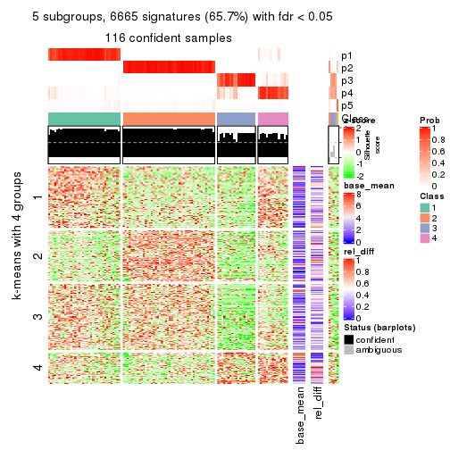
get_signatures(res, k = 6)
Signature heatmaps where rows are not scaled:
get_signatures(res, k = 2, scale_rows = FALSE)
get_signatures(res, k = 3, scale_rows = FALSE)
get_signatures(res, k = 4, scale_rows = FALSE)
get_signatures(res, k = 5, scale_rows = FALSE)
get_signatures(res, k = 6, scale_rows = FALSE)
Compare the overlap of signatures from different k:
compare_signatures(res)
get_signature() returns a data frame invisibly. TO get the list of signatures, the function
call should be assigned to a variable explicitly. In following code, if plot argument is set
to FALSE, no heatmap is plotted while only the differential analysis is performed.
# code only for demonstration
tb = get_signature(res, k = ..., plot = FALSE)
An example of the output of tb is:
#> which_row fdr mean_1 mean_2 scaled_mean_1 scaled_mean_2 km
#> 1 38 0.042760348 8.373488 9.131774 -0.5533452 0.5164555 1
#> 2 40 0.018707592 7.106213 8.469186 -0.6173731 0.5762149 1
#> 3 55 0.019134737 10.221463 11.207825 -0.6159697 0.5749050 1
#> 4 59 0.006059896 5.921854 7.869574 -0.6899429 0.6439467 1
#> 5 60 0.018055526 8.928898 10.211722 -0.6204761 0.5791110 1
#> 6 98 0.009384629 15.714769 14.887706 0.6635654 -0.6193277 2
...
The columns in tb are:
which_row: row indices corresponding to the input matrix.fdr: FDR for the differential test. mean_x: The mean value in group x.scaled_mean_x: The mean value in group x after rows are scaled.km: Row groups if k-means clustering is applied to rows.UMAP plot which shows how samples are separated.
dimension_reduction(res, k = 2, method = "UMAP")
dimension_reduction(res, k = 3, method = "UMAP")
dimension_reduction(res, k = 4, method = "UMAP")
dimension_reduction(res, k = 5, method = "UMAP")
dimension_reduction(res, k = 6, method = "UMAP")
Following heatmap shows how subgroups are split when increasing k:
collect_classes(res)
If matrix rows can be associated to genes, consider to use GO_Enrichment(res,
...) to perform function enrichment for the signature genes.
sessionInfo()
#> R version 3.6.0 (2019-04-26)
#> Platform: x86_64-pc-linux-gnu (64-bit)
#> Running under: CentOS Linux 7 (Core)
#>
#> Matrix products: default
#> BLAS: /usr/lib64/libblas.so.3.4.2
#> LAPACK: /usr/lib64/liblapack.so.3.4.2
#>
#> locale:
#> [1] LC_CTYPE=en_GB.UTF-8 LC_NUMERIC=C LC_TIME=en_GB.UTF-8
#> [4] LC_COLLATE=en_GB.UTF-8 LC_MONETARY=en_GB.UTF-8 LC_MESSAGES=en_GB.UTF-8
#> [7] LC_PAPER=en_GB.UTF-8 LC_NAME=C LC_ADDRESS=C
#> [10] LC_TELEPHONE=C LC_MEASUREMENT=en_GB.UTF-8 LC_IDENTIFICATION=C
#>
#> attached base packages:
#> [1] grid parallel stats4 stats graphics grDevices utils datasets methods
#> [10] base
#>
#> other attached packages:
#> [1] genefilter_1.66.0 ComplexHeatmap_2.1.1 markdown_1.1
#> [4] knitr_1.26 cola_1.3.2 SummarizedExperiment_1.14.1
#> [7] DelayedArray_0.10.0 BiocParallel_1.18.1 matrixStats_0.55.0
#> [10] Biobase_2.44.0 GenomicRanges_1.36.1 GenomeInfoDb_1.20.0
#> [13] IRanges_2.18.3 S4Vectors_0.22.1 BiocGenerics_0.30.0
#> [16] GetoptLong_0.1.7
#>
#> loaded via a namespace (and not attached):
#> [1] bitops_1.0-6 bit64_0.9-7 doParallel_1.0.15 RColorBrewer_1.1-2
#> [5] httr_1.4.1 backports_1.1.5 tools_3.6.0 R6_2.4.1
#> [9] DBI_1.0.0 lazyeval_0.2.2 colorspace_1.4-1 withr_2.1.2
#> [13] tidyselect_0.2.5 gridExtra_2.3 bit_1.1-14 compiler_3.6.0
#> [17] xml2_1.2.2 microbenchmark_1.4-7 pkgmaker_0.28 slam_0.1-46
#> [21] scales_1.1.0 NMF_0.23.6 stringr_1.4.0 digest_0.6.23
#> [25] XVector_0.24.0 pkgconfig_2.0.3 bibtex_0.4.2 highr_0.8
#> [29] rlang_0.4.2 GlobalOptions_0.1.1 RSQLite_2.1.2 impute_1.58.0
#> [33] shape_1.4.4 mclust_5.4.5 dendextend_1.12.0 dplyr_0.8.3
#> [37] RCurl_1.95-4.12 magrittr_1.5 GenomeInfoDbData_1.2.1 Matrix_1.2-17
#> [41] Rcpp_1.0.3 munsell_0.5.0 viridis_0.5.1 lifecycle_0.1.0
#> [45] stringi_1.4.3 zlibbioc_1.30.0 plyr_1.8.4 blob_1.2.0
#> [49] crayon_1.3.4 lattice_0.20-38 splines_3.6.0 annotate_1.62.0
#> [53] circlize_0.4.9 zeallot_0.1.0 pillar_1.4.2 rjson_0.2.20
#> [57] rngtools_1.4 reshape2_1.4.3 codetools_0.2-16 XML_3.98-1.20
#> [61] glue_1.3.1 evaluate_0.14 vctrs_0.2.0 png_0.1-7
#> [65] foreach_1.4.7 polyclip_1.10-0 gtable_0.3.0 purrr_0.3.3
#> [69] clue_0.3-57 assertthat_0.2.1 ggplot2_3.2.1 xfun_0.11
#> [73] gridBase_0.4-7 eulerr_6.0.0 xtable_1.8-4 skmeans_0.2-11
#> [77] survival_2.44-1.1 viridisLite_0.3.0 tibble_2.1.3 iterators_1.0.12
#> [81] memoise_1.1.0 AnnotationDbi_1.46.1 registry_0.5-1 GTF_0.0.1
#> [85] cluster_2.1.0 brew_1.0-6